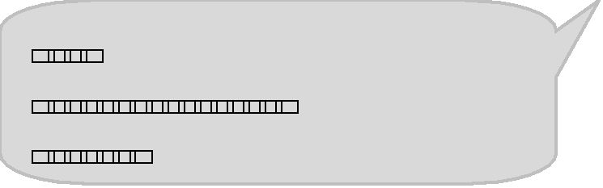
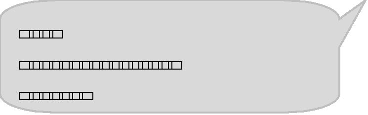
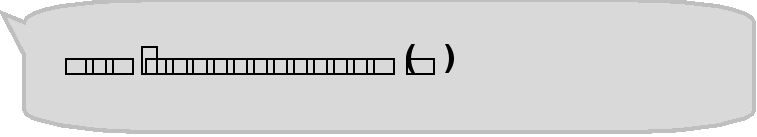
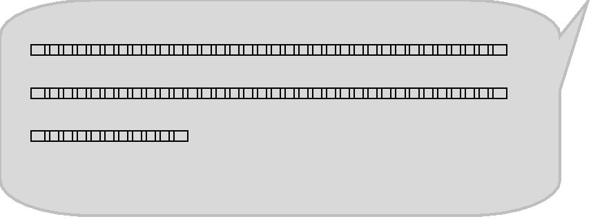
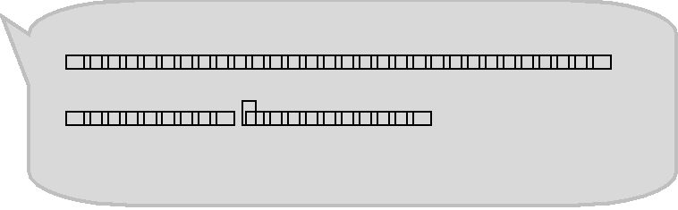
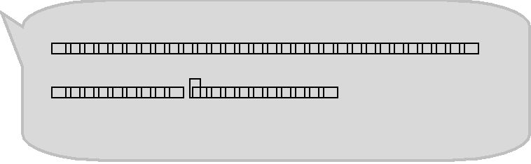

| 風のごとく駆け抜けて | |
| 毛利 耶麻 | |
| (2016) | |

目次
１年生編 ・・・・・・・・
２年生編 ・・・・・・・・
３年生編 ・・・・・・・・
エピローグ ・・・・・・・・
１年生編
幼馴染の園村晴美は、真新しい制服に身を包み、４月の陽気にも負けないくらいの、とびっきりの明るい笑顔で待ち合わせ場所にやって来た。
その笑顔を見るだけで、今日から始まる高校生活に大きな希望を抱いているのが分かる。
「やっぱりブレザーっていうのが良いかな。聖香も似合ってるよ」
喋り終わるやいなや、晴美が自転車を漕ぎだす。慌てて私もペダルを踏み、後ろを付いて行く。それと同時に、私達の背中を押すように暖かい春風が吹いて来た。
学校に向かいながらも「どんなクラスメイトがいるのだろう」「行事は何があるのかな」と、期待感を抑えきれないといったふうに、晴美はしゃべり続けていた。
きっとこれが、今日から高校生活をスタートさせる一般的な高校生の姿なのだろう。
私のように初日から夢も希望もない人間の方が珍しいはずだ。
そのせいだろか。果てしなく続く青空もどこかくすんで見える。
「部活は美術部にしようと思っ......」
会話の途中で晴美は「しまった......」という顔をして言葉を濁す。
「別に私は気にしてないから。晴美は好きな部活に入りなよ」
気まずそうにしている親友に笑顔で言葉をかけながらも、自分の心が曇って行くのをはっきりと感じる。
中学３年間、私は陸上部で長距離をやっていた。特に３年生の時はトラックでその年の県中学ランキング１位になり、駅伝では県大会のエース区間で区間賞を取るまでの走力を付けた。
もちろん高校に入ってからも走り続けるつもりでいたし、走り続けるなら『県内で一番強い城華大附属高校で』と夢を抱いていた。
実際に城華大附属高校から推薦をもらい、中学校に来られた監督さんとも話しをした。
「高校に入学したら部活はするな。勉強に集中しろ。陸上推薦での進学なんて論外だ」
父にそう言われたのは、そのことを報告した日のことだった。自分の立っている世界が、一瞬で足元から崩壊した。
何度も父と話し合った。
いや、あれは話し合いと言えるものではなかったのかもしれない。私が「高校でも走りたい」と一言言えば、「将来が」「今はしっかり勉強しろ」「学歴が大事だ」と一種の決まり文句のような言葉が何倍にもなって返って来る。
その会話のたびに父は段々とヒートアップし、最後には怒鳴るような物言いで私を押さえ付け、自分の意見を正当化する。
そうなると私は何も言い返すことが出来ず、父の怒りが静まるのを、ただひたすら我慢し続けるだけだった。
何度もそれを繰り返し、最後には、私自身が疲れ果ててしまった。推薦の話が来たのが中３の１２月上旬。年が変わる頃には父と話し合う気力すら消滅していた。
その結果入学したのが、今こうして晴美と向かっている桂水高校だ。
この高校を選んだ理由は三つある。一つ目は県内でも有数の進学校だということ。
二つ目は家から自転車で２０分と比較的近いこと。
そして......陸上部がないこと。
桂水高校に陸上部が存在しない理由を私は知らない。
でも、私は知ろうとも思わなかったし、それはどうでも良いことだった。
ないという事実のみで十分だ。
「走れないのなら、いっそない方があきらめもつく」
桂水高校を受験することが決まった時から、まるで強がるように、何度も何度も自分に言い聞かせていた。
だが、どれだけそう思っても、心の一番奥底には、あきらめきれない自分がいるのを分かっていた。
なぜなら、きっぱりとあきらめているならば、今日から始まる新しい生活に夢や希望を持っているはずだからだ。
入学式の翌日。
クラスでのオリエンテーションも終わり、放課後に体育館で部活紹介が行われる。
体育館には部活ごとに机が並べられ、先輩方が座っている。机の横には部活の名前が入った大きなのぼりが立っており、どこにどの部活があるのか一目瞭然。
新入生は自分の興味がある部活の場所へ行き、先輩方から話を聞くと言う方式だ。同じクラスの子は「まるで大学生の就職活動だよね」と笑っていた。
「聖香。私、美術部を見て来て良いかな」
体育館で合流した晴美が遠慮気味に尋ねて来るので、
「良いわよ。私、入口の側で待っているから」
と笑顔で送り出す。
放課後に行われると言うことで、終わればそのまま帰宅しても良いと言うことになっている。ただ、部活に入る予定のない生徒も強制参加。３０分過ぎるまでは体育館から出られない決
まりだ。
つまり、部活に入る気のない......。いや正確に言うと入れない私にとっては、この部活紹介は晴美を待つだけの、退屈な時間でしかなかった。
暇つぶしに体育館の壁にすがりながら、何気なく中の様子を見つめる。
私が産まれ育った桂水市は山口県東部に位置し、瀬戸内海に面した市の南部には巨大な石油コンビナートがいくつもある。そのおかげで桂水市も大いに発展し、人口も今や１８万人と県内でも３番目に大きな市となっている。
そんな桂水市の中心部にある桂水高校。各学年とも理数科１クラスと普通科７クラスがあり、３学年で計２４クラス。生徒数は全校で８４０人近くになり、県内でもかなり大きな学校だ。生徒数が多いと当然部活の数も多くなる。現に、私の目に映るだけでも多くの部活があった。
バスケット部・バレー部・テニス部・サッカー部・硬式野球部・卓球部・吹奏楽部・茶道部・女子駅伝 部(仮) ......。
「えっ？」
思わず私は声を出してしまう。女子駅伝部？ この学校には陸上部はないはずだ。いや、陸上部と駅伝部は違うのだろうか。そもそもよく見ると駅伝部の後ろに 『(仮) 』と付いている。
私はその場に座りこんでしまう。それと同時に、心の一番奥底にある感情が湧きあがってくるのを感じる。その正体は確認するまでもなかった。自分の中で必死に押し殺そうとしていた、走りたいと言う気持ち。叶わないと分かっていてもあきらめきれない思いだ。
私は俯きながら深呼吸をして、理性でそれを押さえつける。どうせ結果は分かっている。父には逆らえない。思うだけ無駄だ。そう何度も自分に言い聞かせる。
陸上部がなければあきらめもつくと思ったのに。
こんな形で一瞬でも心が揺らいでしまうなんて......。
もしかしてこれから３年間、ずっと駅伝部を恨めしそうに見ながら過ごさなければならないのだろうか。それは非常に寂しいことだ。
そんなことを考えていると視界が暗くなった。一瞬、視界の暗さが自分がの気持ちの落ち込み具合を表しているような錯覚におちいる。
視線を上げると、目の前には私より少しだけ背の低くそうな、ボブヘアの女子生徒が立っていた。胸に付けた校章の色で同じ１年生だとすぐに気付く。
「あなた、澤野聖香よね？」
その生徒にいきなり尋ねられ、私は反射的に頷く。相手は私のことを知っているようだ。
だけど......。
「あたしのこと、誰だか分かってないのね......」
どうも私の気持ちは表情に出ていたらしい。
「まぁいいわ。湯川麻子。この名前、聞き覚えある？」
言われた瞬間、私は昨年の桂水市駅伝を思い出した。
桂水市駅伝の二週間前に行われた、県中学駅伝で３位になった私達の中学校からすれば、桂水市駅伝で優勝するのは容易いことだった。現に、６区間中５区間で区間賞を取り、大幅な大会新記録で優勝した。唯一区間賞を取れなかったのが私だった。その年は１５００ｍを県中学ランキング１位のタイムで走り、県中学駅伝でも区間賞を取ったのに桂水市駅伝では区間２位だったのだ。
決して私が油断していたわけではない。私の記録ですら、従来の区間記録を７秒も更新していた。相手が速かったのだ。しかも、後から聞いた話によると、区間賞を取った子はバスケ部だと言う。さらには、駅伝を体操服と体育用の運動靴で走っていたそうだ。名前は湯川麻子。そう、つまり今私の目の前にいる人物その人だ。
「誰だか分かってくれたみたいね」
もしかしてまた顔に出ていたのだろうか。言われて私は素直に頷く。
「分かったところで、ちょっとあたしと来てくれる？」
言うと同時に、湯川麻子は私の手を無理矢理引っ張り、手を握ったまま歩き出す。向かった先はなんと駅伝部の机だった。
「４人目連れて来ました」
湯川麻子が明るい声を出し、机に座っている２人に向かって元気よく手を振る。
「えっ？ もう連れて来たの？ 早いわね」
向かって左側に座っている生徒が驚きながら、急いでその場に立つ。
「初めまして。女子駅伝部部長の大和葵です。こっちは副部長の北原久美子。うちら２人とも２年生なの」
副部長だと紹介された北原久美子先輩は、髪型はショートカット、それに黒く細いフレームのメガネをかけており、学級委員長や生徒会長と言う固い役職が似合いそうな感じだ。
そしてなぜか北原さんの前には小さな電子機器が置いてある。
「あ、これはパソコン。自分のお気に入り。この手のひらサイズが最高」
北原先輩はそう言いながら、忙しそうに両手でキーボードをタイプする。よくもまあ、小さなキーボードを起用に両手でタイプ出来るものだ。
「気にしないで。自分の趣味。日々の出来事を書き留めてる」
見た目の姿とその動作が重なって、私の中で北原先輩を一言で例えるなら秘書と言う言葉が一番だと感じてしまった。
部長だと言う大和葵先輩は、肩甲骨辺りまで伸びたロングヘアーに大きな目。北原さんが美人系なら大和さんは可愛い系に分類される。
「あなた、お名前は？」
「澤野聖香です」
答えた直後にしまったと思った。駅伝部と言うことは、もしかして私の名前を知っているのではないだろうか......。
だが、私の名前を聞いた後も、大和葵さんは表情ひとつ変えることなく淡々と喋っている。どうやら杞憂だったようだ。
彼女の説明によると、この駅伝部は学校の規則で定められた部活としての最低活動人員である５人に達していないため、まだ正式な部ではないことが分かった。今現在の部員は、目の前にいる大和さんと北原さんだけのようだ。なるほど。だから説明会の資料になかったのか。
「と言うわけで分かった？ そう言うことだからよろしく」
説明が終わると同時に湯川麻子が私の肩を叩く。
つまり、私に入部しろと言うことだろうか。
「それでは、あたしは最後の１人を捕まえてきます」
違った。湯川麻子の中で、私はもう入部したことになっているようだ。
「ちょっと待ってください。私、部活には......」
「あのぉ。駅伝部に入りたいんですけどぉ～」
必死で断ろうとする私の一言に、後ろから別の声が被さる。後ろを振り返ると１人の生徒が立っていた。いきなりのことで、私だけでなく、駅伝部の先輩方と湯川麻子も思わずその生徒に見入ってしまう。
「わたし１年２組の藤木紗耶と言います。中学でも陸上部でしたぁ～」
藤木紗耶と名乗る生徒は、見ている私も思わず微笑んでしまうくらいの満面の笑みで自己紹介と入部の意志を口にする。
「久美子。５人......そろったわよね」
「見たら分かる」
「だから、なんでやる気ないのよ。部になるのよ」
「前にも言った。自分は興味ない。葵が熱心だから付き合っているだけ」
熱心に訴える大和さんと、冷たい声で言い放ち、キーボードをタイプし終わると、すっと右手でメガネのフレームを上げる北原さん。なんとも対照的な２人だ。
「あのぉ、５人ってなんのことですかぁ～？」
話にまったくついていけない藤木紗耶が首を傾げていた。まぁ、当然の反応だろう。
そんな藤木紗耶に向かって、湯川麻子が説明を始める。
だが、待って欲しい。もう私が入部したこと前提で話が進んでいる。
大和葵さんのあの喜びよう。あんなにも素敵な笑顔を壊してしまうのは忍びない。
それでも私は言わなければならなかった。
「待ってください！ 私、駅伝部に入るなんて一言も言ってません。そもそも、もう私は走れないんです！」
自分でもビックリするくらい大きな声だった。駅伝部の机の周りにいた４人はもちろん、他の部活に集まっていた周辺の人達までもが私に注目する。その視線に私は気まずくなり「ごめんなさい」と言い放ち、後ろを振り返ることなくその場から逃げ出してしまった。
それから数時間後。電気も点けずにベッドで横になっていると携帯が鳴る。晴美からの電話だった。一瞬出るのを躊躇してしまう。
駅伝部の前から逃げ出した後ろめたさと、駅伝部を見つけてしまった時にあふれ始めた自分の感情で心の整理がつかず、私は体育館を抜け出し、晴美を待つことなく１人で帰宅してしまったのだ。
「もしもし......」
「おっ、電話に出た。先に帰ってたから、なにかあったのかと思ったかな」
電話越しに晴美の明るい声が聞こえる。正直、その明るさが今は少しだけきつかった。
「ううん。大丈夫。元気だよ」
その言い方があからさまに元気ではないことは自分でも分かっていた。もちろん、晴美も一瞬でそれを見抜いてしまったようだ。
「それはウソかな」
その一言は、私を心配する晴美の優しさであふれていた。
だからこそ、私は今日あった出来事をすべて晴美に話した。
もちろん、自分の感情も出来る限り説明しながら。
「そっか......。聖香、やっぱり本当は走りたいんだね」
晴美の言葉は優しく語りかけて来るようだった。
走れないならいっそのことと、陸上部のない高校を選んだ。そうすればあきらめもつくと思っていた。でも、あきらめきれない自分がいたのも事実だし、どんな運命のいたずらか陸上部の代わりに駅伝部なるものがあったのだ。
そして、その事実が否が応でも私の心をかき乱していた......。
部活紹介の次の日、教室の中は随分とざわついていた。理由は各人が手に持ったり、机に広げているビラを見れば一目瞭然だ。
みんな昨日の部活紹介で色々な部活を回ったのだろう。１人で５枚近くのビラを持っている子も決して珍しくなかった。
なかには、中学時代に入っていた部活を高校でも続けると決めていた子も数名おり、迷うクラスの子を、必死に自分の入部する部活へと勧誘していた。
部活紹介は強制参加となっており、さらには多くの生徒が楽しそうに体育館内を回っていれば、最初は入る気のなかった者も多少は雰囲気に流されたようで、ビラを一枚も持っていない生徒はなんと私だけだった。
入学３日目にして早くも疎外感を味わうとは......。
県内で一番駅伝の強い城華大附属高校への進学を諦めた時点で......、いやもっと正確に言うなら、父から高校での部活を禁止された時点で、私の高校生活は終わったのだ。
高校生活が始まる前から終了しているとは、なんとも滑稽だ。
さらには、私が大声で叫び、体育館から逃げ出したのを目撃したクラスメイトも数名いたようで、チラチラと私の方を見てはひそひそ話をしている。
同じ中学から進学して来たクラスメイトは私の事情を知っており、あえて私に部活の話題を振ってこないようにしていたが......、今クラスで一番の話題は部活動だ。そうなると結局、私抜きで会話をする方が盛り上がり、自然と私は孤立状態だった。
高校生活に希望はまったくなかったとは言え、なんとも寂しい。
さらに翌日。部活紹介から二日後。晴美が美術部に顔を出すと言うので、私は１人で帰ることにした。
下駄箱から自転車置き場へと行き、自転車を押しながら校門へ向かう。途中で４人組の走っている生徒を見つけた。あの時の４人だ。４人しかいないと言うことは、私が逃げ出した後は誰も入部しなかったのだろうか。
つまり、まだ正式な部ではないと言うことか。まぁ、私には関係のないことだ。そう思いつつも、４人組を目で追っている自分がいた。
彼女達が向かったのは、自転車置き場の裏にあるグランドだった。そのグランドを見ると、なぜ桂水高校に陸上部がないのか首を傾げたくなる。なぜなら、下が土ながらも１周４００ｍ、８レーンまである立派なトラックがそこにはあるからだ。学校紹介時の説明によると、市営の陸上競技場が出来る前は、ここで大きな陸上の試合もやっていたそうだ。
「いいな......。こんな所で毎日走れたら楽しいだろうな」
なにげなく口から出た言葉に自分でも驚く。いったい私は今、何を思ったのだ。ギュッと目を閉じ、必死でその思いを押し殺す。その時間は果てしなく長くも感じる。
ふと我に返り時計を見ると時間はそんなに経ってはいなかった。いけない。そろそろ帰らないと。そう思いながら歩みを進めようとした時、４人組の１人がこっちを見た。湯川麻子だ。
不意に目が合い私は驚く。もしかして私がずっと見ていたことに気付いていたのだろうか。湯川麻子に何か言われるかと思った。
だが、彼女はそのままみんなと一緒にグランドの奥へと消えて行く。
私は思わず安堵のため息を漏らす。
しかし翌日の昼休み、私は湯川麻子に呼び出された......。
湯川麻子は私を屋上に連れて来ると、絶対に逃がさないと言わんばかりに私の前に仁王立ちし、間を置くことなくしゃべり始めた。
「昨日、あたしたちのこと見てたでしょ」
何も知らない人がこの状況を見たら、私が絡まれていると思うだろう。いや、ある意味間違ってない気もするが......。
「あなた、この前もう走れないって言ったわよね？ あれってどう言う意味？」
「いや、言葉どおりだけど？」
「だから理由を聞いているのよ！」
私の返答に湯川麻子はイライラした態度をみせる。
「父から『高校生になったら部活をするな』と言われているの。だから高校の陸上推薦も断って、この高校に来たのよ。本音を言うと走りたいって気持ちも少しはあるんだけどね。でも父は頑固だから。もうあきらめた」
自分の言葉に段々と寂しくなってきた。
ふと、こうやって私の置かれた環境を話すのは、幼馴染の晴美以外では初めてだと気付く。どうしてこうもあっさりと、目の前にいる湯川麻子に話したのだろうか。私自身が誰かに聞いて欲しかったのか。それとも目の前にいる彼女にはそうさせるだけの不思議な魅力があるのだろうか。
そんなことを考えていたから、湯川麻子の一言を聞きのがした。
「え？ ごめん今なんて言った？」
慌てて私は聞きなおす。その行動が彼女の怒りを買ってしまった。
「馬鹿じゃないの！ って言ったのよ！」
耳を塞ぎたくなるような怒鳴り声が返って来た。
「親がダメって言ったから走らない？ だから高校の推薦も断った？ 何それ。確かにあなたみたいな人が、この高校にいるのは変だと思ったのよ！ あたしだって中３の時にあなたに勝ったのは奇跡だって分かってる。あの後、陸上部の先生から、あなたがどれだけすごい人間か聞いたもの。あなた、今の生き方に納得してるの？ まぁ、今のあなたの顔を見ると、とても納得している様には見えないけど？ そもそも、自分の人生を親に勝手に決められてそれで満足なの？ 本当にやりたいことがあるんだったら、戦ってでも勝ち取りなさいよ！ 戦いもしないのに敗者なんか気取るんじゃないわよ！」
湯川麻子のまくし立てに、私は何も答えられなかった。そんな私を見て彼女は「もういい。じゃあね」と私を１人置いて屋上から去って行く。
彼女が勢いよく閉めた屋上と階段を繋ぐ扉を見つめながら、私は呆然とその場に立ちつくしてしまう。
湯川麻子と言う人間はいったい何者なのだろうか。少なくとも私が今までに会ったことがないタイプの人間だ。
晴美とは幼稚園からの付き合いだし、喧嘩をしたことも何度かある。
だが、同級生から本気で怒られたのは生まれて初めてだ。
１人残された私に、強い春風が吹き付けて来た。
それは走る時に受ける風に似ていた。体の体温を奪って行きながらも、気持ちを落ち着かせくれるどことない優しさがそっくりだった。
その風に当たると走っている気分がして来た。今ならはっきりと分かる。やっぱり私は走るのが好きだ。走りたい。この気持ちをもっともっと味わいたい。そんな思いが私の中から湧き上がって来る。いや、ずっと前から湧き上がっているのに必死で押さえつけていたのだ。
そして、それとは別に、自分の心の中である決心が固まった。
ふと空を見上げる。入学式の日と同じように遥か彼方まで青空が続いていた。
ただあの時と違い、空は澄んで見えた。
「どうだ、高校生活は楽しいか？」
その日の夕食時、私の真正面に座る父がトンカツを箸でつまみながら私に聞いてきた。
昼休みに私の覚悟は決まっていた。
「あのね、桂水高校に女子駅伝部があったの。私、やっぱり走りたい。だから入部したいんだけど！」
私の言葉で食卓の空気が変わった。父は箸を止め、母は気まずそうに私を見る。
「何を言いだすんだ。そんな暇があったら勉強しろと何度も言っただろう。中学の時は部活が強制だったから、やらせていただけだ。今の時代、女性でも勉強が出来ないと生き残れないぞ。つまらんことを考えるな。話にならん」
あからさまに父の声が低くなり、不機嫌になっているのが分かる。今までの私なら、この空気に負けて何も言えなくなっている。
でも今日は違う。湯川麻子に怒られた後、私の中で決心がついた。
父にきちんと自分の意見を言おうと。今日は絶対に怖気づいたりはしない。
「つまらないことじゃない」
私は膝が震えそうになるのを必死で我慢しながら、声を絞り出す。
「私にとって走ることは大切なことなの。楽しいし、やりがいがあるし。そりゃ苦しいことだっていっぱいあるけど......。それ以上に嬉しいこともいっぱいある。だから私はもっと走りたい」
「だったら、大人になって走ればいいだろうが。わしは、お前のためを思って勉強をさせようとしているんだ。今勉強しておかないと、絶対に将来困るぞ。もっと先のことを見て生きろ。それが分からんと言うことは、まだまだ子供と言うことだ」
父は私のことなど相手にしていないかのように、淡々と喋りながら箸を動かしだす。
「先のこと？ 将来？ じゃぁ、今こうして生きている私の気持ちはどうなるの？ 今の私がやりたいことを我慢して、将来楽しく生きられるの？ 私はそうは思わない。そもそも、私の人生でしょ？ 心配してくれるのは嬉しいけど、自分の人生くらい自分で考えて歩きたい。人の言いなりなんて嫌！」
私が言い終わるや否や、右耳の横を何かがすっと通り抜けた。直後に後ろでガチャンと言う物音が聞こえる。父の左手にあるはずの御飯茶碗がなくなっていた。
「子供が分かったような口を聞くな！」
父の口調がより厳しいものになる。
「そうよ。私は子供よ。でもね、１人の人間なの。親のペットでもなければ、人形でもない。ちゃんとした、１人の人間なの！」
私も負けじと口調を厳しくする。後は、何を言ったか覚えていない。こんなにも親と喧嘩をしたのは生まれて初めてだった。その後も、父との喧嘩は３０分くらい続いた。結局話はつかず、私は御飯を途中で辞めて自分の部屋に逃げてしまった。
真っ暗な部屋でベッドにうつ伏せていると、ドアをノックする音が聞こえた。
「聖香。入るわよ」
私の返事を待たずに母が部屋に入って来る。
まぁ、今の私は返事をする気もなかったのだが。
「なに？」
私はうつ伏せのまま、母の顔も見ずに気だるい声を出す。一瞬怒られるかと思ったが、もうそんなことはどうでもよかった。
「聖香がお父さんにあんなこと言うのは初めてね。結依は、よく喧嘩していたけど」
母は少し嬉しそうに、まるで独り言のように喋る。そういえば、姉はよく父と喧嘩をしていた。
姉が大学に行ってからは、すっかりそれも聞かなくなってしまった。
「お父さんがね。走りたいのなら、駅伝部に入っても良いって」
母の言葉に私は勢いよく体を起こす。
「お父さんも自分で言えば良いのに。聖香があんなふうに自分の意見を強く言ったのって初めてでしょ。お父さんも何か思うことがあったのでしょうね。ほら、後は自分で話をしなさい」
母は早く父の所に行くようにせかす。マンションの６階にある我が家は、私の部屋からリビングまでドア一枚だ。部屋を出ると、すぐ目の前に父の背中があった。
「お父さん」
私の膝はさっき以上に震えそうになっていた。父は私の方を振り返ろうともせずに話し出す。
「わしはお前の将来を思って、勉強をしっかりやらせようと思っていたが......。今のお前をまったく見ていなかったな。そこは謝る。それと、部活をやるには条件がある」
「なに......」
「走ることだけじゃなくて、勉強もきちんとやれ。それから、将来自分がどんな人間になりたいかを高校３年間でしっかりと固めて大学を選べ。偏差値やネームバリューだけで大学を選ぶな。あの結依ですら、そこだけはきちんとしていたからな。まぁ、もしもお前が走ることで大学や企業に行くことがあるのだったら、それは別の話だ。わしからは以上。飯が途中だろ、食べろ」
私は「分かった」と、一言だけ返し食卓に戻る。リビングからは、「お父さん、そう言うことはちゃんと聖香の目を見て話しなさいよ。まったく、自分の娘に遠慮なんかして」と、父をからかう母の声が聞こえて来た。
父と大喧嘩した翌日の登校時、私は湯川麻子に呼び出されたところから父との喧嘩までを順序良く晴美に話す。晴美に話しながら、入学時から感じていた絶望にも似た気持ちが消えて行くのを密かに感じていた。
「そんなことがあったんだ。色々とお疲れ様かな」
晴美は屈託のない笑顔を私に向ける。
「ねぇ聖香。聖香が駅伝部に入るなら、私もマネージャーで入りたいんだけどダメかな？」
「どうしたの急に？」
「いや、中学生の時、聖香の応援に行くたびに思ってたかな。もっと聖香の走りを見たいって」
いきなり告白じみたセリフを言う晴美に、「別にいいけど......」と照れながら答えるのが精一杯だった。
その日の放課後、晴美と２人で職員室を訪れる。目的はもちろん駅伝部の顧問の先生に会うためだ。顧問の名前すら知らなかった私達は、入ってすぐの席に座っていた年配の男の先生に尋ねることにした。すると、その先生は立ち上がり、広い職員室をぐるりっと見回した後で、一番奥にいる永野と言う女の先生が顧問であることを教えてくれる。お礼を言って奥まで行こうとすると、永野先生は白衣を着ているからすぐに分かると付け加えてくれた。
初めて職員室の中へと入ったが、私が思っていた以上に広く、奥へと向かう途中で何人もの先生とすれ違う。
そう言えば、桂水高校は県内でも有数の進学校であると同時に、県内でもトップクラスの生徒数だと聞いたことがある。生徒数が多いと言うことは、先生も多く、結果として職員室も大きくなるのだろう。
一番奥に行くと、教わったとおり白衣を着た先生がいた。忙しそうにパソコンと睨めっこをしたり、ペラペラと本をめくったりしている。
横にいる晴美を見ると「うん」と合図をして来る。
「あの、お忙しいところすみません。１年６組の澤野聖香と申します」
「同じく１年３組の園村晴美です」
「私達、駅伝部に入部したいのですが」
私達の呼びかけに、永野先生が手を止めてこっちを見る。
「よっ。有名人。待ってたぞ」
あきらかに永野先生は私の方を見ていた。
「有名人って私のことでしょうか？」
「もちろん。昨年度１５００ｍで県中学ランキング１位。さらには県中学駅伝エース区間の６区で区間賞。トラック、ロードともに名実県ナンバーワン。なのに城華大附属をはじめとするすべての陸上推薦を断り、なぜかこの桂水高校に入学。有名にならない方がおかしいだろ」
「わぁ、やっぱり聖香ってすごいかな」
私の横で晴美が目を輝かせていた。
「おっと、こっちの自己紹介がまだだったな。私は永野綾子。担当教科は２年生の生物と化学。後は仮駅伝部の顧問。まぁ、仮はもう取れそうだけど。それと歳は３３歳。あっ、私自分の年齢とか気にしないから」
「３３歳？ もっと若く見えます」
驚く晴美に、永野先生が机の上にあったチョコレートを笑顔で差し出す。年齢とか気にしないと言うわりに、若く見られるのは嬉しいらしい。
「それにしても、澤野レベルの人間がこの学校に来てくれるとは思わなかったぞ。これも巡り合わせってやつだな。これから３年間よろしく。で、園村の方は中学時代のタイムはどれくらいだ？」
「いえ、私はマネージャー希望です。あの、すでに美術部にも入っていて、掛け持ちになるんですけど大丈夫でしょうか？」
急に話をふられて驚いたのか、あたふたしながら晴美は答える。
「別に私としては問題ないけどな。兼任でもマネージャーがいるのは大助かりだ。ただ、美術部の先生には了承を得とけよ」
永野先生の一言に、晴美はほっと胸をなで下ろす。
「ところでおまえら、部室の場所は知ってるのか？」
私と晴美はお互いの顔を見つめる。そして、どちらも知らないと言うことに気付く。
「自転車置き場の裏に４００ｍトラックがあるだろ。その１００ｍのスタートライン辺りに立ってるから。行けばすぐに分かると思うぞ」
そう言われて頷くものの、一昨日グランドを少しだけ見た限りでは、部室的な建物があったようには思えなかった。
「それと澤野。お前、どこか故障してるのか？」
「いいえ。まったく。なぜですか？」
永野先生がなぜそんなことを聞いてくるのか、私には理由が分からなかった。
「いや、数々の推薦を断ったのは故障が理由なのかと思っただけだ」
なるほど。そう言うことか。
「ご心配なく。推薦を断ったのには別の理由があったからです。でも、その問題もすでに解決しました。明日からは駅伝部でしっかり走れますよ」
「そっか。安心したぞ。それにしても、引退して走ってないわりには、あまり無駄な脂肪がないな」
永野先生が喋り終わった時には、先生の右手が思いっきり私の胸を揉んでいた。
一瞬、私は自分が何をしたのか分からなかった。気付いた時には、近くにあった分厚い事典で永野先生の頭を思いっ切り叩いていた。
「痛い！ これ教師に対する暴力だろ！」
頭を押さえながら、永野先生は悲鳴に近い声を上げる。
「先生がいきなり胸を揉むからですよ」
「まぁまぁ、女同士なんだし。それにしても本当に無駄な脂肪がないな。まさにランナー体型だ」
「仕方ないじゃないですか！ 元々貧乳なんですから！ 胸は父親似なんです！」
興奮して思わず大声になってしまう。それとは逆に静まり返る職員室。
私は入部届を永野先生の机に置き、晴美の手を引いて、１００ｍの日本記録を更新出来そうなスピードで職員室を後にした。
そんなやり取りがあった次の日。私と晴美は永野先生から教わった部室へとやって来た。
「これが部室？」
「どう見ても、部室と言う名の体育倉庫かな......これは」
なるほど晴美の言うとおりだ。よく見たらドアの上に『第二体育倉庫』と書かれた古いプレートが設置されている。ドアのガラス窓に貼られている『女子駅伝部部室』の張り紙だけが、唯一この建物が部室であると言うことを無理矢理主張していた。
「失礼します」
ノックをしてそっと扉を開ける。
「いらっしゃい。綾子先生から話は聞いてるわ。ようこそ駅伝部へ。あぁ、堂々と駅伝部と名乗れるって幸せね。これも澤野さん達が入部してくれたおかげね。感謝してるわよ」
「葵、前から普通に駅伝部って言ってた。現に入口の張り紙も......」
「うるさいわね。気持ちが違うのよ。気持ちが」
相変わらず対照的な先輩達だ。
そして、こんな時でも久美子先輩は忙しそうに手のひらサイズのパソコンのキーボードをタイプしていた。
「えっと、お名前......。大和葵さんでしたよね」
髪をポニーテールで結んでいる先輩に、私は恐る恐る聞いてみる。
「そんな堅苦しい呼び方しなくても」
思いっきり笑われてしまった。
「あのさあ。入口で突っ立ってないで中入りなさいよ」
後ろを振り返ると、湯川麻子が立っていた。横には藤木紗耶もいる。
「そうだよぉ～。せいちゃんもはるちゃんも、もう仲間なんだから遠慮せずに入りなよぉ」
「せいちゃん？ はるちゃん？」
いきなり変な単語が飛び出し一瞬戸惑う。
「紗耶は変なあだ名つける」
「くみちゃん先輩、ひど～い！ 可愛いじゃないですかぁ～」
藤木紗耶はわりと本気で怒っていた。まぁ、喋り方はあまりそう聞こえないが、表情はあからさまにふて腐れている。
「話が進まないじゃない。とりあえず中入って！」
「あ、ごめん湯川」
「ごめんなさい。湯川さん」
湯川麻子にせかされ、私と晴美は急いで奥へと入る。その態度が気に入らなかったのか、湯川麻子が「も～う」と牛のような声を出す。
「なんでそんなによそよそしいのよ！ 同じ部員で同じ学年でしょ？ あたしのことは麻子でいい。あたしも聖香・晴美って呼ぶから」
「じゃぁ、うちは葵で」
「久美子」
ここぞとばかりに先輩２人が会話に入って来る。いや、でも先輩方は呼び捨てに出来ないから、葵先輩と久美子先輩だな。
「あれ？ そう言えば、なんで湯川さんは私の名前を知ってるのかな」
麻子でいいと言われても、いきなりは呼べなかったのだろう。晴美はあえて、湯川さんと呼ぶ。呼ばれた瞬間、麻子はイラついた顔をしたが、すぐに表情を元に戻す。
「昼休みに永野先生から聞いたの。って、なんで晴美はあたしの苗字を知ってるの？」
麻子が不思議そうな顔をする。
「聖香が言ったから、その後に続いて言っただけかな......」
晴美が苦笑いすると、麻子も意味が分かったらしく、赤面して大人しくなる。
「はーい！ みんな注目！」
葵先輩の突然の呼びかけに、私達は一斉に先輩の方へ視線を向ける。
「今日から、この６人で女子駅伝部が正式にスタートよ。もちろん目標は都大路出場！」
かなりのハイテンションで語りながら葵先輩が指差した先には、
『目指せ！ 都大路！ 桂水高校女子駅伝部』
と書かれた手作りの横断幕が壁に貼り付けてあった。
「昨日まではなかったのに。もしかしたら、葵さんが作ったのかも」
私の横にいた麻子がそっと耳打ちして来る。
「ところで聖香。都大路ってなに？」
さらに声を小さくして恥ずかしそうにする麻子。そうか、麻子は中学の時バスケ部だから知らないのか。
「１２月にある全国高校駅伝が行われる京都のコースをそう言うのよ。つまりは駅伝の全国大会。出場出来るのは各都道府県ごとに１チームのみなの」
私も小声でそっと教えると、麻子も「なるほど」と頷いた。
駅伝部に入って最初の土曜日。基本的に土曜日は午前中が練習時間となっている。無事に練習も終わり、部室にみんなで戻って来る。気が付けば私自身、このあきらかに物置にしか見えない建物を「部室」と呼ぶことに違和感がなくなっていた。
慣れと言うものは恐ろしい。
一応フォローするなら、倉庫......いや、部室は見た目さえ気にしなければ、随分と快適だ。床にブルーシートが敷いてあり、その上で着替えられるし、広さも２０帖くらいあって、シューズを置くための棚と古いスチール製の机がある以外は何もなく広々している。
「お腹すいたわね」
「自分も葵に同感」
部室に入るなり、葵先輩と久美子先輩がお腹を押さえながらだるそうに言う。
と、突然葵先輩が私達の方を見る。
「ねぇ、せっかくの土曜日だし、１年生の歓迎会も兼ねて、みんなでお昼を食べに行きましょうよ」
その一言に、みんな目を輝かせる。そうと決まれば善は急げと、全員急いで着替え、学校から一番近いファミレスへと自転車を走らせる。
時間帯が良かったのか？ 店に着くと、すぐに席へと案内された。
何を食べようかと吟味していると、葵先輩が呼び出しのボタンを押す。すぐにウエイトレスがやって来て、葵先輩が注文を始める。
「えっと......オムライスカレー、たらこスパ、和風ハンバーグ単品、から揚げバスケット、野菜炒め盛り合わせ、チーズドリア、イタリアンピザ、卵焼き、すべてひとつずつお願いします」
ウエイトレスが注文を聞いて、厨房へとオーダーを伝えに行く。
「葵さん慣れてますね。よく来るんですか？ あたし、決められなくて困ってましたよ」
「今の注文分を全部食べきって、まだ入るようなら追加しようかな」
麻子と晴美が一安心と言った感じでメニューを閉じる。
「それ勘違い。あ、１年は初めてか」
いつものごとく、手のひらサイズのパソコンのキーボードをタイプしていた久美子先輩が、キーボードから手を離しメガネをすっと上げながら、１人で納得していた。
「今頼んだ注文、全部うちの昼御飯なのよね」
その一言に私達１年生４人は目を丸くする。
「てか、ウエイトレスさんも勘違いしてる。自分達の注文を伝える前に帰ってしまった」
久美子先輩が不満そうな顔をしながら、再び呼び出しのボタンを押していた。
そして次々に注文の品がやって来て、ものすごい勢いで葵先輩の体に収まっていくのを目の当たりにし、私達は自分の御飯を食べるのも忘れ、あぜんと見ていた。
「ありえないかな」
「これはすごいんだよぉ」
「葵先輩、それだけ食べて太らないんですか？」
私が恐る恐る聞いてみると、葵先輩は「うん。だって毎日部活で走ってるし」と何食わぬ顔で答える。
いや、あきらかに摂取カロリーが消費カロリーを上回っている気がするのだが......。
私の計算違いなのだろうか。
「まぁ、うちが食べるの大好きなのも事実だけどね。そもそも中学で陸上部に入ったのも、毎日美味しい御飯をいっぱい食べたいからなのよね」
なるほど、走り始めるきっかけは人それぞれなのか。
それにしても、葵先輩がこんなにも大食いだったとは、あまりにも予想外だ。私より少しだけ背が高く、まさにランナーと呼べるような細く引き締まった体型からは想像も出来ない。なんだか先輩の意外な一面を見た気がした。
先輩達との食事会から三週間近く経ち、私達１年生もジョグと流しと筋トレだけの練習から、少しずつ先輩達とポイント練習も行うようになって来た。
「３人とも引退してからあまり走ってないようだしな。まずは体力作りからだな」
私が入部した日から、永野先生の指示で、１年生３人は別メニューが組まれていた。
この一ヶ月で気になったのは、永野先生はあきらかに陸上経験者なのではないかと言うことだ。私達に言うアドバイスなどは非常に的確で、何度も感心することがあった。
例えばある日、部室に入って来たかと思うと、壁に大きな紙を張り出した。
そこには大きな文字で、
『自ら考える・自ら行動する・自らをアピールする』
と書かれていた。
「走るうえで私が大切だと思ってるのが、この３つだ」
一言前置きをして、永野先生が私達全員に説明をしてくれた。
駅伝はバスケや野球などの球技と違い、監督がレース中に適時指示を出すのが難しい。つまり、選手が自らで考えレース展開を判断しなければならない。だからこそ、普段の練習などで自ら考える力を養う必要があるそうだ。
そのために、桂水高校駅伝部では練習前のミーティングで、その日の練習をどう言った目的意識を持って行うか、１人１人が発表することになっている。
例えば１０００ｍのタイムトライだった場合、３０００ｍのラスト１キロを意識するのか、１５００ｍの入りの１０００ｍを意識するかによって走りも違ってくる。
自分に必要なものが何か。足らないものは何か。
そう言うことを意識して目的を考えなければならないので、なかなか大変だ。
でも、これをやり始めて、明らかに練習の質が高くなった気がする。
中学生の時は、与えらえたメニューをこなすだけで精一杯だった。今はメニューをこなすのは当たり前。こなした上で、さらに目的まで持って行うのだ。
「与えられたメニューをただこなすだけでは、一切身に付かないからな」
日々、口癖のように永野先生は言っている。
次の自ら行動するは、さらに難しい。
「走るってのは、他のスポーツと違って、技術的なことが非常に少ない。その分、日々の生活がもろに影響するんだ。だからこそ、普段から自ら積極的に行動しろ。日常生活で自ら行動できないやつは、レースでも絶対に積極的な走りは出来ない。あいさつを進んでする。他の生徒の模範となる行動を進んで行う。苦手なことに積極的にチャレンジする。普段からそう言ったことを自らの意志で行っていけば、レースでも一番苦しいところで動けるようになる」
つまり、３６５日２４時間すべてが練習へとつながることを意識しろと言うわけだ。
最後の自らを表現するは説明をされてやっと理解出来た。
「これには２つの意味がある。まずは走りで自分をアピールして欲しい。自分はこれだけ走れるんです。こんな走りが出来るんですというのを日々私に見せてくれ。もう１つは自分の状態に関することだ。例えば、練習できつい、苦しいと言うのは岩にでも噛り付く気持ちで耐え抜け。でも、痛みに関しては積極的にアピールしろ。痛みを無理して走っても意味がない。私の持論だが、一日無理して一週間走れなくなるより、一日走るのを我慢して一週間練習出来た方が、後々のことを考えると良いからな」
中学生の時、痛いのを我慢して故障してしまい、レースを棄権した経験のある私にとっては耳の痛い話だった。
ちなみに永野先生の考えで、桂水高校女子駅伝部では朝練をおこなっていない。
「確かに走行距離が強さに比例すると言う事実はあるがな。でもそれは、実業団選手レベルでの話だ。お前らはまだ高校生。体もまだまだ成長途中だ。まずはしっかりとした睡眠と朝食を優先しろ。その分夕方の部活で、集中して目的意識を持って練習すれば総合的には強くなれる」
中学生の時は朝練もやっていた私にとっては、最初信じられない話だったが、今ではこのやり方がいかに素晴らしいかを、身に染みて感じている。本当に睡眠と朝食は大切だ。
そんなこともあり、私はふと永野先生の経歴が気になった。
とある日の部活終了後、着替えている最中に、先輩達に聞いてみたのだが、先輩方２人も何も知らないらしい。
「先輩達も知らないんですね。明日、永野先生に直接聞いてみましょうか？」
「あら？ 聖香は４月ボケのようね。明日から学校も部活も三連休よ」
葵先輩の一言に私はハッとする。そう言えば４月も淡々と過ぎて行き、気が付けば明日から５月の大型連休だ。
「高校生になってもう一ヶ月かぁ。あっと言う間なんだよぉ～」
私も紗耶と同じ気持ちだ。入学してすぐはドタバタして目まぐるしかったが、それをとおり過ぎると日々充実していて、あっと言う間に時間が過ぎたように感じる。
「油断するとすぐに大学受験かな」
「部活的にも駅伝がすぐ来そう。もっと日々、努力しないと」
麻子が大きなため息をつく。私から見ればかなり頑張っていると思うのだが。
「いや、十分やってる。すでに自分より速い」
久美子先輩が言っているのは、先日行った３０００ｍのことだろう。
「そうだよぉ。わたしも先日負けちゃったし、あさちゃん高校から走り始めたってのに、もう部内で３番手なんだよぉ～」
紗耶が悔しそうに不満を口にする。
「さやっち、唇を尖らせて、まるでアヒルのようかな」
晴美の一言に全員が頷き、大笑いをする。一瞬で部室の中が、夏の日差しを浴びたかのように明るくなる。
私は駅伝部のこの雰囲気がすごく好きだった。だからこそ、このメンバーで都大路を走れたら最高だろうなと思う。そう考えると、今まで以上に練習をして、もっともっと速く走れるようになろと言う決心が湧いて来る。
三連休の初日。新幹線のドアが開くと同時に私は勢いよく外に出る。それと同時に風呂の蓋を開けた時のようなムワッとした空気に包まれる。
ことの発端は、昨夜姉から家にかかって来た一本の電話だった。現在大学３年年生になる姉は、熊本で１人暮らしをしている。熊本の生活が楽しいのか、それともアルバイトが忙しいのか、姉は実家にほとんど帰ってこない。私が最後に会ったのは一年半も前だ。
帰って来ることは少なくても、電話はたまにして来る。昨日も電話に出た母は、長々と姉と喋っていた。
部活から帰って１人で晩御飯を食べ、後片づけをしていたので、何を話していたかは分からない。ただ、電話を終えた母から一言だけ言われた。
「聖香。結依が明日遊びにおいでって。せっかくだから行ってらっしゃい。交通費は出してあげるから。ついでに、結依に荷物を渡してくれると助かるわ」
そこに私の意見などまったくなかった。
それにしても、桂水市に比べ熊本市は随分と気温が高いように感じる。まさに『火の国熊本』と言った所だろうか。
新幹線の改札口を抜け、地下連絡通路を渡って地上に出ると、目の前にある路面電車に飛び乗る。初めての熊本に浮かれ気分な私と違い、乗客は「これがいつもの日常だよ」と言わんばかりに静かに座っていた。
私が乗った直後に電車が動き出す。そこから見える景色は、初めて見るせいか、煌びやかに輝いてい見えた。他の乗客から見ると、やはりこれも見慣れた風景なのだろう。
姉からメールで指定されていた駅で路面電車を降り、私はビックリした。降りた場所が道路の真ん中だったのだ。左右を車が勢いよく走り抜ける。一応、私の腰くらいの高さの仕切りで道路と停留所を区切ってあるが、それでもかなりの恐怖感がある。一緒に降りた乗客は、落ち着いた様子でその場に立っている。私もそれを真似してその場に立っていたが、内心は心臓が飛び出しそうなくらいドキドキしていた。田舎人丸出しだ。いや、桂水市も人口１８万人程で、新幹線が止まる駅もあるので厳密には田舎ではないのかもしれないが、同じ市でも熊本に比べれば田舎となってしまう。
勢いよく走っていた車が止まり、歩行者信号が青になったことを知らせる音楽が鳴り始めると、周りの人が慌ただしく動き出す。まるで水が流れるようなその動きに流され、私も横断歩道へと降り立つ。
それと同時に、私はパニックになる。姉から降りる駅は聞いていても、そこからの進み方を聞いていなかったのだ。左右どちらにも大きなアーケード街が見える。そのどちらに行けば良いのかが分からない。
だからと言って、この場にずっと立ち止まるわけにも行かない。当てずっぽうに、右側へ歩みだした時だった。
「聖香。こっち！」
その声に私は振り返る。反対側の街路樹の下から姉が大声で叫んでいた。
姉の姿を見つけ、私は小走りに姉の元へと向かう。
「お疲れさん。ってあんた、随分と大きなバックを持って来たのね」
久々に会う姉の一言に私は少しムッとする。
「母さんが、結依姉ちゃんに色々持って行けって言うからこうなったの。それにシューズとかジャージも持って来たし」
ふて腐れ気味に答える私の顔を見て、なぜか姉は微笑む。
「なに？」
その微笑みの意味が分からない私をよそに、姉は「別に」とやっぱり微笑みながら歩き出す。
姉とアパートへ向かう途中で、今歩いている道路のかなり上方で別の道路が交差しているのを見つける。なんとも珍しい光景だ。姉の説明によると、その道路をまっすぐ行くと熊本城の公園に出るらしい。地域の人がその公園でよく走っていると言うことも教えてくれた。明日の朝、走りに行ってみようかなと思わず思案する。
そこから歩くことさらに２０分。姉のアパートにたどり着く。薄い灰色の外観で、４階建てのごく一般的なアパートだった。姉がこっちで暮らし始める時、引っ越しの手伝いに行かれなかった私にとって、姉のアパートを見るのはこれが初めてだ。『一人暮らし』『大学生』そんな単語に、どこか夢のような生活を想像していたが、アパートの外観はそんな気分を一瞬で奪ってしまった。
むしろ日本全国どこにでもあるその外観は、私に現実と言うものをまざまざと見せつけてくれる。
少しがっかりしながら、３階にある姉の部屋へと行く。部屋に入った瞬間、あまりの光景に軽く意識が飛びそうになった。
「結依姉ちゃん！」
半分は怒りを込めて姉を見る。姉はちょっとだけ気まずそうにしていた。
そこにあったのは想像を絶する光景だった。荷物を詰めた引っ越し業者のトラックが横転して荷物をぶちまけたとしても、ここまで酷いことにはならないだろう。
「今日、私はどこに寝ればいいのよ！」
姉を睨みつけながら私は問いただす。
「片付ければ問題ないでしょ」
「じゃぁ、なんで私が来るのに片付けてないのよ！」
「あぁ、そもそもが逆なの」
姉の一言に私は首を傾げる。どう言うことだ？
「聖香が来るから片付けるんじゃなくて、片付けるために聖香を呼んだのよ」
開いた口が塞がらなかった。姉が昔から片付けが苦手なのは知っている。姉の性格もそれなりに分かっている。それでも、これは予想外だった。
「信じられない。友達とか呼べばいいでしょ？」
「みんな忙しそうなんだもん。それに、聖香に用事があったのも事実」
姉がちょっと拗ねながら、ぶつぶつつぶやく。
もう怒る気も失せ、ため息しか出なかった。仕方ない。今日の寝床を確保するためにも掃除をしよう。姉の思惑どおりに話が進んでるのが気に喰わないが。
まずは部屋の足場を確保することから始める。パッと見て、部屋には三種類の物がある。あきらかなゴミ。いるかいらないかよく分からない物。最後に洗濯物だ。
まずはこれらを分類しながらまとめて行く。私は洗濯物をまとめることにした。姉にはその間にあきらかなゴミを捨ててもらう。
靴下、ジャージ、スカート、ブラ。靴下、Ｔシャツ、パンツ。ジャージ、ブラ、Ｔシャツ。いったい、何日洗濯していないのだろうか。脱いだら脱ぎっぱなしなのだろう。
「あ、服は洗濯済みと洗う前のものがあるから」
「そんなの分かるわけないじゃない！ 全部もう一度洗って！」
姉の一言に思わずキレてしまう。
洗濯物をすべてまとめて姉に渡す。姉はさっそく洗濯機にそれらを持って行く。私はその間に、いるかいらないか分からない物をまとめる。最終判断は姉に任せるしかないが、なるべくなら捨てて欲しいと思った。なぜなら、あきらかに収納できるスペースよりも、床に散乱している物の方が多いからだ。
まずは本をまとめる。
『これであなたも片付け上手』
『ここが肝心！ 片付け術』
『知らないと損をす
る
！
片付け方法１００選』
ダメだ。まったく役に立ってない。むしろ、これらの本に憐れみすら感じる。他にも大学の教科書が何冊も埋もれていた。姉は授業をどうやって受けているのだろか？
「あぁ、それ全部１年生で使ったやつ」
疑問に思って姉に聞くとそう返答があった。つまり２年間もほったらかしと言うことか。
他にもグルメガイド、料理本、週刊誌、漫画、小説。ありとあらゆる種類の本が出て来た。本が好きなのは昔から変わっていないようだ。
あらかた本のまとめも終わり、今度は細かい物の分類に入る。１分もしないうちに、爪切り、綿棒、耳かき、ウエットティッシュなどが出てきた。
ため息をつきながら、部屋の反対側に移動して整理を再開する。なぜかまた耳かきが出てくる。それも２本も。姉に対し厳しく追及すると、探すのが面倒くさいから、ないと思ったら近所の１００円ショップで買って来るのだと言われた。
もう怒りを通り越してあきれてしまう。
途中、昼食休憩を挟みながらも、どうにか夕方前には掃除が終わる。おかしい。姉に会ったら熊本観光に連れて行ってもらおうと密かに考えていたのだが......。観光どころか部屋から出ていない。
それでも頑張ったかいがあり、汚いドブ川から、アユやサワガニが見つかる綺麗な川へと復興することが出来た。すぐにドブ川に戻らないことを祈りたい。
「ありがとう。聖香が来てくれて助かった。お礼に今日の晩御飯はあたしが奢るから。なんでも好きな物を食べて」
姉が部屋を見渡し私の肩を叩く。まだ１７時と晩御飯には少しだけ早かったが、動き続けたせいか、お腹も空いていたので、さっそく食事へと出かける。
しかし、私は軽い目まいがした。姉と歩いて到着したのは、桂水市にも何店舗かあるファミリーレストランだったのだ。と言うより、この前駅伝部のみんなで御飯を食べたのと同じ店だ。
熊本に来て美味しい物が食べられると思っていたのに。姉に期待した私がバカだった。
「さぁ、遠慮しないで食べて♪」
ワザとらしく明るい声を出しながら、姉は店内へと入って行く。もうため息しか出ない。いったい今日何度目のため息だ。
「このハンバーグステーキの御飯セット。それから野菜サラダ。食後にクリームチーズケーキをお願いします」
せめてもの腹いせに高い物を遠慮なく注文する。姉の顔が一瞬「え？」となったが、そんなことは気にしない。
そして運ばれてきた料理を食べ始め胃が満たされると、それに反比例するかのように、姉への怒りも引いていった。
「ところで聖香。お父さんと大喧嘩したんですって？」
お互いあらかた食べ終わった時に、姉が何気なく私に聞いて来た。
「まぁ喧嘩ってことになるのかな？ てか、母さんから聞いたの？」
私の質問に姉が首を振る。
「お父さんにこの前電話した時、直接聞いたの」
私は驚いた。姉が父に電話をすると言うのが信じられなかったからだ。家にいた時はあんなにも喧嘩をしていたのに。それに、父が私のことを姉に話すと言うのも想像がつかなかった。
「どうしたの。キツネにつままれたような顔をして」
姉に問われ、私は自分の率直な意見を姉に漏らす。
「あはは。あたしだっていつまでも反抗期じゃないの。２０歳過ぎれば、丸くもなるから。それにお父さん、聖香のことで色々悩んでいたみたいだし」
姉が電話での会話を教えてくれる。
どうやら父は、今までなんでも自分の言うことを聞いていた私が、あんなにも反抗したことに非常に驚いたらしい。それと同時に、私がそこまで走りたかったと言うことに気付けなかった自分が恥ずかしいと思ったそうだ。
それと、私の将来を考えるあまり、今のことをしっかりと見ていなかったと言う事実が情けなかったと感じたらしい。
「聖香はあたしと違って、親に対しては大人しかったもんね」
「結依姉ちゃんの反面教師って感じもするけど？」
私が本音を口にすると姉は苦笑いをする。
「まぁ、過去の出来事がどうであれ、方法がなんにせよ。聖香が自分の道を自分で切り開いたのが、あたしは嬉しかったのよ。お父さんも似たようなことを口にしてた」
ほほ笑む姉の表情は、今まで見たことがないくらい優しい顔をしていた。
食事を終え姉の部屋に帰り、お風呂に入る。上がって髪を乾かし終わると姉から毛布を手渡された。
「ごめね。ちょっとフローリング硬いかもしれないけど我慢して。絨毯がある所で寝れば少しは違うかも」
一瞬、姉が何を言っているのか分からなかった。
「え？ 結依姉ちゃん......。こう言う時って、私がベッドに寝かせてもらえるんじゃないの？ 仮にも私、お客様だよ」
「妹には常に厳しく。これが澤野家に伝わる家訓よ」
真面目な顔で姉が言いきる。その後、盛大な姉妹喧嘩が起こったことは言うまでもない。
目が覚めて、ふと携帯を見ると朝の６時だった。予定より１時間も早く起床してしまったようだ。だが、この硬いフローリングで二度寝をする気にはなれない。
そう、結局私は喧嘩に負けたのだ。凝り固まった体をほぐすためにも、走りに出かけることにする。もちろん、目的地は熊本城だ。
昨日姉と歩いて来た道を逆走して行く。コンビニや飲食店の前を走り、昨日見た道路が交差する場所まで来る。
私がいる下の道路の歩道から上の道路へと登る階段を見つける。勢いよく階段を上って行き、上の道路へ出ると、お城の方へとまっすぐに進む。
少し進むと、公園の案内看板が出ており、案内に沿って坂を登ると、熊本城が見えてきた。よりよく見える場所へと思い、公園の奥へと進んで行く。
すると公園を取り囲むようにランニングコースが設置されているのを発見した。ぱっと見た感じ、１周１キロと言ったところだろうか。なるほど、姉がランナーが多いと言った理由も頷ける。
公園から見える熊本城は黒く美しく、そして堂々としていた。瓦や壁は黒いにも関わらず、光すら発しているように思える。どっしりと構えた櫓や天守閣は、そこだけ時間の流れが止まっているようにも感じた。
その雄大さに、私は思わず拝礼をしてしまう。その後、回れ右をして来た道を戻り始め、私はあることに気付いた。
公園入口付近に、私が両手を広げたよりも幹が太い大きな木が一本立っているのだが、その側にジャージを着て陸上シューズを履いた１人の女の子が立っていた。パッと見て私と同じくらいの年齢だ。
ちょうどその子が私に背中を向けてストレッチをしているので、ジャージの背中に書かれた『鍾愛女子』と言う文字が見えた。
私でも知っている全国高校駅伝上位の常連校だ。
つまり、この人はその鍾愛女子の部員と言うことになる。ひょっとするとレギュラーメンバーなのだろうか。
そんなことを考えていると、その子がストレッチの動作を変え、私と目が合う形になる。
「え？ さわのん？」
「えい......りん？」
あまりに突然のことにお互い動作が止まってしまう。
「うそ！ ほんとうにさわのんだ。なんでこんなところに！ 驚きなんですけど」
そう騒ぐのは、えいりんこと、市島瑛理。名前が『えいり』だから、いつも『えいりん』と呼んでいた。
私と同じ桂水市出身で、中学時代は県１位をかけて何度も争った相手だ。でもレース以外では仲が良く、試合で出会うたびに色々なことを話していた。なんと言うか、レースではライバル、他では親友と言ったところか。
「いや、それはこっちのセリフなんだけど。てか、そのジャージ」
私の一言にえいりんがニヤッと笑う。
「そう。鍾愛女子。私、城華大附属の推薦を断って熊本に来たの。さわのんは城華大附属？」
えいりんの質問に私は首を振る。
「え？ そうなの。てっきりさわのんは城華大附属だと思ってたんですけど。じゃぁ、どこ？ 泉原学院？ 聖ルートリア？」
えいりんは山口県内の駅伝強豪校の名前を上げて行く。そのどれにも私は首を振る。
「私、桂水高校に通ってるの」
私の返答にえいりんは驚きの声を上げた。驚くえいりんに私は事情を説明する。
「なるほどね。さわのんも色々あったんだ。桂水市駅伝以降、まったく出会ってなかったもんね。よく考えたら連絡先も聞いてないんですけど」
えいりんは苦笑いしてた。まぁ、私も同じ桂水市内在住だから、いつでも会えると思って連絡先を聞いていなかったのだが......。
「えいりんは、なんで山口県内じゃなくて、わざわざ熊本の高校を選んだの？」
私の質問に、えいりんはちょっとだけ笑う。
「別に熊本にこだわったわけじゃないんですけど。県外からの推薦が、鍾愛女子高校からしかなかっただけ。うちの高校の監督、出身が山口なのよ。だから私のことも多少は知ってたみたい。後は、私個人の理由。私ね、もしも県外から推薦が来たら、たとえ城華大附属を断ってでも行こうって決めてたんだ。何も分からない、誰も知り合いがいない別の場所で、自分がどれだけ戦えるかを試してみたかったの」
私に説明してくれるえいりんの顔はとても晴れやかで、その選択にまったく後悔がないことを静かに物語っていた。
今の私は、桂水高校を選んだことをどう思っているかと聞かれて、はたして同じ顔が出来るだろうか。一瞬頭の中で考えてみたが、後悔はないとしても、ここまでの顔は出来ないような気がした。
「ところで、さわのん。今日の１４時から暇？」
えいりんが、まるでいたずらをする小さな子供のような笑顔で私を見る。
そう言われて、私は今日の予定を思い出す。姉に熊本城を案内してもらうのは午前中のはずだ。特に午後からは予定は入っていない。
「うん。暇だよ」
その一言に、えいりんの笑顔が三倍くらい輝く。
「じゃぁさぁ！ １４時に県の陸上競技場に来て」
その後もえいりんは機関銃のように喋る。
その話をまとめると、どうも今日は熊本県選手権があるようだ。しかもえいりんの高校デビュー戦だと言う。そして女子１５００ｍ決勝が今日の１４時スタート。つまり、『応援に来て』とえいりんは言いたいらしい。
「てか、えいりん。予選は？ そもそも県選手権って山口県もそうだけど、中学、高校、大学、社会人の区別がないんでしょ？ そんなレベルの高い試合で決勝に残ったの？」
「私を誰だと思ってるよ。決勝進出どころか、相手がどれだけ強敵揃いでも優勝してみせるんですけど。あ、予選は今日の１０時から」
まだ予選すら走っていないのに、決勝の応援へ来てと誘われているようだ。
えっと、こう言うのをなんと言うんだっけ......。捕らぬ狸の皮算用？
えいりんと別れて姉のアパートまで帰って来ると、姉はすでに起きており朝御飯を作っていた。
「あんた本当に走るの好きなのね」
姉のがあきれ顔で私を見て来る。
そんな姉を適当にあしらいながら、シャワーを浴び朝御飯を食べる。片付けは私がおこない、その後姉に連れられて熊本城を見に行く。
つい数時間前に外から見た熊本城は、中に入り間近で見るとその時以上に堂々として見えた。天守閣からは熊本の街が一望出来る。さらには遥か遠くに阿蘇山がそびえ立っていた。その素晴らしい景色に私は小さな子供の様に「うわ～すごい！」と声をあげてしまう。
その後、路面電車とバスを使い競技場にたどり着くと、すでに１３時４５分だった。熊本城からバス停へと向かう道が分からず、手間取ってしまったのが原因だ。
そもそも、姉の説明も分かりにくかった。説明だけして１人で帰ってしまうし。アパートに帰ったら文句を言ってやろう。そう思いながらスタンドに上がる。えいりんは無事に決勝に残っているのだろうか。いや、予選落ちをしていたら携帯に連絡ぐらい来るだろう。
「あ！」
そこまで考えて大声をあげてしまう。周囲の観客が一斉に私の方を向く。あまりの恥ずかしさに顔が真っ赤になり、反射的に下を向く。
携帯に連絡もなにも、お互い連絡先を知らないのだ。早朝出会った時も携帯を持っておらず、どちらも相手の連絡先を知らないと言うことが確認されただけで話が終わってしまった。
これは後で何としてでもえいりんに会って番号を聞かなくては。
そう思い顔を上げると、１５００ｍのスタートラインに人が集まりだしていた。
私はホームストレートの中心地点からかなり上段に上がった場所にいるので、えいりんがいるのかどうかは肉眼で確認出来ない。
その時、向かって右手側にあるオーロラビジョンへ１５００ｍのスタートラインに並ぶ選手達が映し出される。カメラが１レーン側から外側に向かって流れる。私は食い入るようにその映像を見る。７人目にえいりんが映った。着ているユニホームは上下紫色で、腰と肩の辺りに黄色のラインが入っており、胸元にはそのラインと同じ黄色で『鍾愛女子』と大きく名前が入っている。さらには朝出会った時にはただ降ろしていただけの前髪をピンで留めていた。
全員がオーロラビジョンに映り終わると場内にアナウンスが流れる。陸上経験者にとってはおなじみの放送だ。
「ただいまよりトラックで行われますのは、女子１５００ｍ決勝であります。予選は本日１０時より３組で行われ、各組上位４位までと、５着以下上位４名、計１６名によりまして決勝が行われます。それでは出場する選手をレーン順に申し上げます」
その後、選手が紹介されていく。中学生に大学生、社会人と本当にさまざまな年齢の人が決勝に残っていた。
「続きまして第７レーン。市島さん。鍾愛女子」
名前を呼ばれえいりんが手を上げて一礼をする。
「なお、市島さんは予選トップの記録であります」
そのアナウンスに驚いた。朝出会った時に優勝してみせると宣言していたが、冗談と言うかあくまでそう言う気持ちでと言う意味だと私は思っていた。
えいりん、本気で優勝する気なのか。
選手紹介も終わり、いよいよスタートとなる。選手がラインぎりぎりに並び、一瞬の静寂の後、ピストルの音で一斉に飛び出す。
私は必死にえいりんを眼で追う。彼女はスタートして１００ｍの地点で前から６番目にいた。大きな集団となってレースが進む。けっしてペースは速くないようだ。
中学生の時のえいりんだったらきっと前に出ていただろう。当時は私とえいりん、それからもう１人を加えた私達の学年トップ３がスタートと同時に激しい競り合いをしていた。彼女はどちらかと言うと、自分のペースでレースを進めるタイプだった。それが今回は決して前に出ようとはしない。
集団はトラックを１周してもばらけることなく一塊のままだった。タイムもお世辞にも速いとは言えない。これだったら私が県中学ランキング１位を出した時のラップの方がよっぽど速い。なのに前に出ない辺り、やはりえいりんは本気で優勝を狙っているようだ。
１周目のラップを確認して遅いと感じたのか、３番手辺りにいた選手が先頭に出て集団を引っ張りだす。ペースが上がったのだろう。若干縦長になり始めたが、まだ一つの集団と言った感じだ。
それからトラックをもう１周する間に先頭が二度入れ替わった。何人かが遅れ始め、先頭集団は７人となる。ちなみにえいりんはその集団の６番目。つまりは先頭集団の後ろから２番目だ。
えいりんが私のいる場所の前を通るのもこれで３回目。もう５０ｍ走ればラスト１周。これはラスト２００ｍぐらいからスパート合戦になるのだろうか。
食い入るようにレースを見つめながら先の展開を予想していると、ラスト１周を告げる鐘がなる。そして、その瞬間、早くも私の予想が外れたことを確信した。
６番手につけていたえいりんが、鐘が鳴ると同時に一気にペースを上げる。
そのあまりのスピードに、他の選手は誰１人ついていけなかった。えいりんは前の選手をどんどん抜いて行き、あっと言う間に先頭へ躍り出た。
ラスト２００ｍの地点で２位と３０ｍ近くも差を広げる。ホームストレートに入った時には、えいりんの優勝はすでに決まったも同然だった。あまりにすごいスパートに、観客席が歓声で騒めいている。
えいりんは力強く腕を振り、地面を思いっ切り蹴って懸命に走っている。さすがにきついのだろう。酸素を少しでも取り込もうと、必死で荒い呼吸をしているのがスタンドからでも分かる。その息遣いが私が座っている場所まで聞こえてきそうな気がした。
えいりんは、最後まで決してスピードを緩めることなく、ゴールラインを駆け抜けた。
まさに有言実行。高校デビュー戦でえいりんはいきなり県トップになったのだ。
えいりんのゴールを見ると同時に、私スタンドの一番下まで駆け降りて行く。
「えいりん！」
下にいるえいりんに向かって私は思いっきり大声で叫ぶ。彼女もすぐに私に気付いてくれた。
「さわのん。来てくれたんだ。えへへ。優勝しちゃったんですけど」
えいりんは嬉しさ半分、照れくささ半分と言った感じで笑っていた。
「さわのん！」
今度はえいりんが私に叫んで来る。
「今からロビーの前に来て！ スタンドから外に繋がる階段を下りて１００ｍのスタート側に歩いて行けば分かるから」
一方的に喋るとえいりんはスタンドの下へと消えて行った。仕方なく、私は言われたとおりロビーに向かって歩く。幸いどの県も陸上競技場の大まかな構造は同じらしく、迷うことなくロビーまでたどり着いた。えいりんはすでに来ており、私を見つけるなり駆け寄ってくる。
「やったよ！ さわのん」
改めて報告して来るえいりんは、全身から嬉しさが溢れている気がした。よく考えると、えいりんは中学生の時、トラックで県チャンピョンになったことはなかった気がする。中学の時は６月、７月、１０月にトラックの県大会があるのだが、そのうちの２回は私が。もうひとつは一学年下の若宮紘子と言う子が優勝した。まぁ、私は故障中でその試合を走っていないのだが。
「人生初の県制覇！ まぁ、地元の山口県じゃなくて熊本県ですけど」
えいりんの一言に自分の記憶が正しかったのだと思った。と、私はあることを思い出す。えいりんの携帯番号を聞かなくては。
「でさぁ、さわのん。携帯の番号教えてよ」
私が訪ねる前に向こうから聞いて来る。どうも、お互い考えていることは同じだったらしい。
お互いの携帯を取り出し、番号とアドレスを交換する。それが終わると同時に「ダウンに行かないと監督に怒られるから。また連絡するね」と早口で喋りながら、えいりんはどこかに走って行ってしまった。
仕方ないので私もバスと路面電車を使って姉のアパートに帰ることにした。その帰り道、路面電車に揺られながらふと思った。中学生の時はえいりんと何度も争った。
でも......、仮に今日のあのレースに私が出ていたとして、果たして今の私はえいりんと競り合うだけの力があるのだろうか。
その答えを考えようとすると、まるで湧き水のように色々な考えが湧いて来るものの、すぐに消えていってしまう。
結局、姉のアパートに戻っても、次の日実家に帰っても結論は出なかった。
三連休最後の夜、晴美から電話が来たので、その思いを話してみた。
「そんなこと考えても仕方ないんじゃないかな。それよりもいつか勝負する時のために日々練習を積み重ねる方がよっぽど有意義だと思うかな」
晴美の言葉に私はなにも言えなくなってしまった。でもおかげで、明日からの練習を今まで以上に頑張ろうと言う気になれたのも事実だった。


大型連休が終わってしばらくたったある日。私は晴美に連れられ、美術室へとやって来た。駅伝部のマネージャーと美術部を兼任している晴美は、慣れた足取りで中へと入って行く。私は晴美とは正反対で恐る恐るだ。実は美術室に来たのはこれが初めてなのだ。
と言うのも、桂水高校では「美術・音楽・書道」の中から一科目を選択すれば良いようになっている。つまり美術を選ばなければ、根本的に来る機会がないのだ。
中学の時は、陸上部の部活が早く終わると晴美に会いに行っていたが、高校に入学してからは美術室が管理棟最上階の一番奥にあることも影響し、一度も行っていなかった。
そもそも晴美が美術部に顔を出すのは週に１、２回だけだ。
「聖香。こっちこっち」
先に入った晴美が奥で手招きをしている。私達以外誰もいない美術室の中を歩くと、ほのかに絵の具の独特な匂いが漂ってきた。中学も高校も美術室の匂いは変わらないらしい。
「どうかな。まだ下書きの段階なんだけど」
晴美が両手で抱えながら、大きなキャンバスを見せてくる。
そこには、まだ丸や楕円を組み合わせただけのの状態ではあったが、ランナーが描かれていた。
「へぇ。さっそく取りかかってたんだ」
私はその絵を見ながら感心したようにつぶやく。
ことの始まりは大型連休が終わった次の日だった。その日の晴美は、なにか悩んだような顔で部室に入って来た。よく見ると手元には一枚のプリント。不思議に思った麻子が訪ねると、晴美はプリントを私達に見せてくれた。
それは全国高校駅伝のイメージポスターコンクール募集の案内だった。
「マネージャーとしてみんなを支えると言う形で私も共に都大路を目指してるけど......。自分の力で都大路を目指してみるのもありかなって」
その時の晴美はすごく照れくさそうにしていた。それでも、みんなに頑張ってみたらと進められ、今にいたると言うわけである。
「とは言っても、まだまだかな。そもそもイメージもいまいち固まってないし。なんだか毎日頑張って走っているみんなに置いていかれている気分かな」
私に見せてくれたキャンバスを眺めながら晴美はため息をつく。
「いやいや、駅伝部だってようやく始動し始めたばかりだし、あせらなくても。もしかしたら私達が都大路に行くより先に、晴美のポスターが採用されるかもよ」
私の一言に晴美はちょっとムッとする。
「それはダメかな。私は三年連続で採用されるってことはまずないだろうけど......。聖香には三年連続で都大路を走ってもらいたいかな」
晴美の一言に「まぁ、そうなるようにしっかり頑張るよ」と私は返事を返す。その答えに晴美が頷ぎながらキャンバスをしまう。
その後、２人で美術室を後にして帰路へとついた。
「お前ら喜べ。やっとユニホームが出来たぞ。サイズは前に各人に書いてもらったとおりになってるから、それぞれ取ってくれ」
部活終了後の部室に永野先生がダンボールを抱えてやって来たのは、５月も中旬を過ぎた頃だった。４月に正式な部になった駅伝部にとって、これが初めてのユニホームだ。
わくわくしながらみんなで段ボールを開ける。「完成してからのお楽しみ」と、永野先生は一切デザインを教えてくれなかった。
手に取ったユニホームを見て、私は真っ先に空を連想した。ランパンは青空のように青く、横に入った白いラインは雲のように白い。
逆にランシャツは雲のような白色がメインで、肩と背中から脇腹にかけては、雲の切れ目から覗いた青空のようなラインが入っていた。胸には青色で『桂水』と校名が入っている。
「これは綺麗ね」
「ですよねぇ。本当にすごいんだよぉ～」
葵先輩が目を輝かせながら嬉しそうに感想を口にすると、紗耶も笑顔で同調する。
さっそく各自ユニホームを着てみることにする。久々の着心地に、私は懐かしさが溢れだしていた。なんとも心が落ちつく。
だが、そんな感傷に浸かっていたのもつかの間。後ろの方で麻子が大騒ぎを始めた。
「え？ 陸上のユニホームってこんなに小さいの。太ももとか丸見えじゃない。恥ずかしすぎる。なんかちょっと動くだけで股とか脇の辺りがスース―するわよ」
一応、ランシャツとランパンに着替えた麻子。
だが、照れているのか、それとも恥ずかしいのか。体を前かがみに丸め込みながら、腕で体を必死に隠していた。
あの麻子でも、照れたり、恥ずかしがると言うことがあるんだ。
私はそのことに一番驚いてしまう。
「長距離はまだマシ。短距離はランパンとブラトップ」
手のひらサイズのパソコンのキーボドをタイプしている久美子先輩の一言に、麻子は「これよりまだすごいのがあるんですか？」と、軽くショックを受けていた。
てか、陸上のユニホームを着た状態でパソコンを使う人を、私は生まれて初めて見た。
その後も麻子は何度も恥ずかしいと言っていたが、ついに私は耐えきれなくなり、声を出して笑ってしまった。
それを見た麻子が、必死で体を隠しながら近付いてきて、私は頭をバシッと叩かれてしまった。
ユニホーム騒ぎから一週間後の土曜日。私達駅伝部は県の中心部にある陸上競技場に来ていた。
今日から３日間の日程で県高校総体が行われるのだ。桂水高校駅伝部にとって初の公式戦。ただ、今回出場するのは葵先輩と久美子先輩のみ。私達１年はまだまだ練習不足と言うことで永野先生がエントリーをしなかったのだ。
「まぁ、うちは駅伝部だからな。本番は１１月の県駅伝だ。。現在部員は５人。駅伝も５区間。つまり今年は補欠がいないからな。お前らが無理をして故障されても困るんだ」
私達も試合に出たいですと訴えた時、そう言って永野先生に諭されてしまった。
ちなみに今回は葵先輩が３０００ｍ、久美子先輩が８００ｍに出場する。２人とも試合は初日に行われるので今回は宿を取らず、部員全員が永野先生の車で日帰りだ。
先生曰く、久美子先輩が決勝まで残ったら、明日もう一度、往復するそうだ。
「天地がひっくり返ってもそれはない」
当の久美子先輩はしきりにそう訴えていた。
それと永野先生の愛車は青のラポンなのだが、それだと駅伝部計７人を乗せることが出来ないのため、実家から親のエステュマを借りて来たらしい。その時初めて、先生が今は１人暮らしをしていることを知った。
「なにこれ？ 陸上競技場ってこんなに大きいの！」
「そっかぁ～。あさちゃんは初めてかぁ」
口をあんぐりと開けて驚く麻子を見て陸上経験者の紗耶はニコニコしていた。
「あたし、中学の時はバスケ部だったから仕方ないじゃない。それを言うなら晴美だってそうでしょ？」
「残念。私は聖香の応援で何度か来たことがあるかな」
麻子の自信に満ちた一言に晴美は苦笑いをする。自分だけが初めて来たことに気付いた麻子は「あなた達。初々しさを忘れてるわよ」と思いっきり負け惜しみを口走っていた。
まぁ、私も中学生の時初めてこの競技場に来て、今の麻子と同じようなセリフを言ったことがあるのだが、それは黙っておこう。
私達が競技場の前でワイワイやっていると後ろから声がした。
「あら？ 澤野聖香じゃない。なんでこんなところにいるのよ」
その声を聞いただけで、私は相手が誰だか分かってしまう。えいりんが唯一私のことを『さわのん』と呼ぶように、私のことをいつもフルネームで呼ぶ人間が１人だけいる。
「いたら悪いの？ 相変わらずな喋り方ね、山崎藍葉」
わざと私もフルネームで相手を呼びながら後ろを振り返る。そこには、私よりもあきらかに長身で、肌が白く、生まれつきの茶髪を短くまとめたその人物が立っていた。
ただ、驚いたのは彼女が着ていた服である。『城華大附属』と左胸に刺繍の入った上下蛍光オレンジのジャージ。つまり私の目の前にいる彼女は、県内で一番強い学校の陸上部と言うことだ。
確かに彼女の実力なら大いにありえる。と言うより、それ以外ありえない。
「走るのを辞めたって聞いたんだけど。城華大附属の推薦も断ったんでしょ？」
「まぁ、色々あってね。今は地元の桂水高校よ」
「そう。何はともあれ、あなたがまだ走るのを辞めてなくてよかったわ」
山崎藍葉は本当に嬉しそうに私に語って来る。その理由が分からずに私は首を傾げる。
「だって、そうでしょ。私達の代は、澤野聖香と市島瑛理、それと私で三強って言われてたのよ。でも、当の本人からしたら迷惑な話よね。３人で一括りなんて。高校になったら誰が一番か分からせてあげようと思ったのに......。市島瑛理は県外に行くし、澤野聖香は走るの辞めたって聞いたし。あやうく、目標がなくなるところだったわよ」
「でも私、中３の時に藍葉に負けたこと一度もないけど？」
ごく自然に言葉が口から洩れていた。それを聞いた瞬間、山崎藍葉が顔をしかめる。
「さっきプログラム見たけど、あなた今回はレースに出ないみたいね。３０００ｍを見てなさい。言っとくけど、中学までの私とは別人だから」
そのセリフを最後に山崎藍葉は競技場へと歩いて行ってしまった。
「何？ 今の人とあなたって仲悪いの？」
麻子が心配そうな顔をして私を見つめている。いや、むしろ私の中で山崎藍葉は親友の１人なのだが......。
「山崎さんとせいちゃんが一緒にいる所、久々に見たんだよぉ～。中学の時は、三強の３人には近寄りがたかったんだよねぇ。今はせいちゃんに対してなら、まったくそう思わないけど」
「それって喜べば良いの？ それとも悲しむべきなの？」
無邪気に笑う紗耶に、私は本気で問いただしてしまう。
「まぁ、うちが今のやり取りをみて思ったのは、ただ一つ。うちら、ユニホームは作ってもらったけど、よく考えたらジャージがないわね。これは綾子先生に訴えるべきね」
葵先輩が握り拳を造りながら、なんとも的外れなことを口に出す。いや、部長としてはしっかりと部のことを考えた立派な意見なのだろうか。
そんなやり取りをしていると、受付を終わらせた永野先生が帰ってくる。永野先生と合流し、私達はスタンドへと向かう。
スタンドに行ってみると、ゴール上方が屋根も有り日差しも弱かったので、そこに陣取ることにする。
荷物を置き終わり、プログラムを見ている時のことだった。
「え？ なにこの８００ｍ予選。６組３着プラス６は良いとして、なんで１組に１５人いるの。スタートどうするのよ。セパレートじゃなくてオープンってこと？」
私は久美子先輩を探そうと、８００ｍのページを見て思わず声を上げてしまう。
「ストップ聖香。初心者のあたしにも分かるように説明して！」
どうも麻子は言葉の意味が分からなかったらしい。まぁ、高校から始めたばかりで、競技場も今日初めて見たくらいだ。当然と言えば当然か。そう思いながら私は説明を始める。
「まず６組３着プラス６って言うのは、予選が６組あって、そのうち各組の上位３名は自動的に準決勝に進めるの。タイムの遅い速いは一切関係なし。とにかく順位のみ。それでプラスは各組の４着以下でタイムが速かった上位者、今回は６名がさらに準決勝に進めるわけ。ちなみにプログラムに書くとこんな感じね」
私はプログラムに書いてある『６―３＋６』と書かれた部分を指差す。
「ごめん、半分くらいしか理解できない......。各組の３着までが自動的に準決勝にいけるのは分かったけど、プラス６がいまいち。６組の場合は、各組ちょうど１人ずつってこと？」
麻子は首を傾げつつ私に更なる解説を求める。と、紗耶が割り込んで来て説明を始める。
「プラスに組は関係ないんだよぉ。各組の４着以下全員のうちでタイムの速かった上位６名ってこと。１組、２組が牽制しあって全体的に遅くて、３組目がメチャクチャ速かったら、１、２組目からは１人もプラスが出なくて、その代わり３組目から３人くらい出る可能性もあるってことだよぉ～」
「なるほど。さすが紗耶。説明が聖香より分かりやすい」
いや、私の説明と紗耶の説明に大差はなかった気がするのだが。ただ単に麻子が分からないと言った部分を、紗耶が再度教えただけのような......。
「それとね麻子。予選にはタイム予選と言って、着順に関係なく、予選を走った全選手の、タイムが速い人から上位規定数までが決勝に進出出来る方式もあるのよね。ちなみにうちが出る３０００ｍはタイム決勝と言って、最終順位は全組合わせての総合なのよ。だから組で一番になっても、もっと速い人が他の組にいて、総合では３位だったりする可能性もあるわけ。まぁ、普通はタイムが速い人ほど後の組に入るから、上位は最終組の順位がそのまま総合順位になったりするんだけど。しかもなぜかうちも最終組なのよね」
自分が走る３０００ｍについて説明しながらも、微妙に愚痴が混じっている葵先輩。
「あと、セパレートとオープンについて。短距離みたいに決められたコースを走るのがセパレート。長距離みたいにスタートと同時にみんな同じ所を走るのがオープン。自分が走る８００ｍは本来スタートから１００ｍがセパレート。その後はオープン」
久美子先輩が、手のひらサイズのパソコンのキーボードをタイプしながら説明をした後、顔を上げ、右手ですっとメガネを上げながら麻子を見る。
「ああ、お前ら。ついでに言うと、県高校総体の８００ｍって昔からこんな感じだぞ。予選は１５人でオープンスタート。準決勝からは、約１００ｍ過ぎてからオープンになる一般的な８００ｍだ」
永野先生も「じゃぁ、ついでに」と言った感じで知識を披露して行く。
だが、初心者の麻子にとっては情報量が多すぎたようだ。みんなの説明に軽くパニックになっていた。
それとみんなはスルーしていたが、永野先生の一言がすごく気になった。今の喋り方だと昔から県高校総体を知っている感じだ。もしかして、永野先生自身、出場したことがあるのだろうか。それを聞こうと思ったが、誰も突っ込まないので辞めておくことにした。
知識を披露したのち、久美子先輩がアップへと出かけようとする。桂水高校に関係ある種目で言うと、まず最初に８００ｍの予選がある。
「藤木と湯川は北原の付添いな。特に湯川は初めてだからな。藤木、すまんが湯川に色々教えてやってくれ。後、澤野は大和の付添い。それと、園村、お前は８００ｍと３０００ｍのラップを取ってくれ」
永野先生が１年生全員に指示を出し、みんながそれぞれ返事をする。
久美子先輩達を送り出した後、雑談をしているとあっと言う間に８００ｍ予選の時間となった。
久美子先輩が走るのは１組目。一番最初の登場だ。
「うわ。なんか８００ｍでこの多さはやっぱり違和感がある」
中学生の時は参加人数がそこまで多くなかったせいか、予選も８人ずつだったので、１５人が一斉に走るのを見るのは初めてだ。しかもスタート前に横一列に並んで行われ、ますます８００ｍの感じがしなかった。普通８００ｍは最初がセパレートコースなので、２００ｍや４００ｍのように、レーンごとにスタート場所が違うのだ。
久美子先輩はインから４番目。その横にはさきほど山崎藍葉が着ていたジャージと同じ、上下蛍光オレンジのユニホームを着た選手が立っている。もちろん城華大附属の選手だ。その選手の名前を調べようと思い、プログラムを広げようとすると、
「え？ 久美子、桐原さんと同じ組なのね」
と、葵先輩が先に答えを言ってくれたので、私は開きかけたプログラムを閉じる。
「その人すごいのかな」
晴美がそっと私に耳打ちして来るが、初めて聞く名前に私は首を傾げるしかなかった。
それを聞いていた永野先生が、プログラムを指差して８００ｍのページを見るように告げる。
晴美がプログラムを見て驚きの声を上げる。何事かと思って私も覗くと、晴美がページの上方に書かれた一文を指でトントンと叩いた。
『県高校記録 桐原亜純 ２分０７秒２１』
その文字に思わず絶句する。久美子先輩の横に並んでいる人は、県記録保持者だ。
「ちなみに桐原は１、２年ともインターハイに出てるぞ。まぁ、１年の時は３０００ｍでだがな。種目の距離を伸ばしていくのはよくあるパターンだが、縮めて行くのは珍しいな。１年の時でも３０００ｍを９分２０秒は切っていたはずだが」
永野先生が自分の記憶を思い出すようにしながら語る。
その瞬間ピストルが鳴った。
しまった。話に夢中でスタートを見れなかった。
だが、晴美は話を聞きながらも、きちんとストップウォッチを押していた。
さすがマネージャーだ。
私がトラックに眼を移すと、桐原さんが先頭に立っていた。その後ろになぜか久美子先輩がぴったりと付いている。スタートして１００ｍもいかないうちに、２人だけ大きく抜け出した感じだ。
「北原先輩、オーバーペースかな」
晴美が不安そうな声を出す。
「心配するな。私の指示だ」
その晴美の横で、永野先生があっけらかんとつぶやく。私と葵先輩が思わず永野先生の顔を見る。
「別にたいしたことじゃない。今回の試合自体がスピード練習の一環だしな。最初からガンガン行けと言ってあるだけだ」
その言葉どおり、久美子先輩は桐原さんにぴったりと付いていた。２００ｍ行った所ですでに後続と３０ｍの差が付き、２人の準決勝進出はこの時点で決まったも同然だった。
それでも２人はペースを緩めることなく、どんどん前へと進んでいく。多少は離されたものの、桐原さんに久美子先輩が付いて行くと言う形だけは最後まで変わらず、終わってみれば久美子先輩のタイムは２分１７秒７７と言うかなり速いものだった。
しばらくすると久美子先輩、麻子、紗耶が帰って来る。葵先輩が久美子先輩をべた誉めしていたが、当の久美子先輩は「もう無理。出し切った。準決は終わった」と、ものすごくだるそうにしていた。
葵先輩がそれを聞いて笑いながら時計を見る。時刻は１１時半。１２時半から３０００ｍの１組目がスタート。葵先輩の３組目が１３時スタートとなっている。そろそろアップに出かけるのだろう。私も付き添いとして葵先輩と一緒に出掛ける。
まずは受付のある第２ゲートへと向かう。ちなみに今私達がいる陸上競技場には４つのゲートがあり、ゴールのある場所を第１ゲート、そこから半時計周りに四つ角に第２、第３ゲートがある。つまり１００ｍのスタートは第４ゲートとなる。
第２ゲートの外側で受付を済ませ、ゲートの外にある植え込み前に葵先輩が荷物を置く。
「聖香、うちアップは１人でやりたいのよね。荷物番だけお願い出来るかしら？」
葵先輩のお願いに私が快く頷くと「ごめんね。ありがとう」と笑顔で言って葵先輩はアップに出かけてしまった。
荷物番を任されたので遠くに行くことも出来ず、その場に座っていたがかなり暇だった。ちらっと葵先輩の荷物を見る。先輩はバックの上に受付で見せたランシャツを置いていた。まだ真新しいランシャツはそれ自体が光を放っているかのように輝いており、とりわけ胸の部分にある『桂水』と言う校名が一段と強く輝いて見えた。
そのランシャツを見ると思わず笑みがこぼれてしまう。今回は出場出来なかったが、私もこのユニホームを着て早く試合に出たいと心の底から思う。
そんなことを考えていたら視線を感じた。
「感心ね、澤野聖香。私の走りを見るために、こんなところまで出向いて来るなんて」
目の前には山崎藍葉が立っていた。
「いや、藍葉。なんか勘違いしてるみたいだけど、私は先輩の付添いで来てるだけよ。別にあなたを見るために来たんじゃないから」
私の返答に山崎藍葉が不機嫌になる。
「あっそう！ それでも私の走りを見ることに変わりはないでしょ。覚悟して見なさい。そして悔しがってショックを受けるといいわ」
捨て台詞のような言葉を吐いて藍葉は走り去ってしまった。
彼女の負けず嫌いなところは中学生の時から何も変わっていないようだ。
藍葉が去ってしばらくすると葵先輩が帰って来る。
「うち、改めて認識した。聖香って有名人なのね」
帰って来るなり葵先輩が目を丸くして私を見てくる。
「突然どうしたんですか？」
「アップをしてたら、周りの人が澤野聖香を見たとか、桂水高校にいるみたいとか言ってたのよ。さすが昨年度県中学チャンピョン。注目のまとね。でも失礼しちゃうわよね。桂水って陸上じゃぁ聞いたことないとか、弱小校でしょとか言う人がいたのよ。覚えてなさい。県駅伝では絶対に忘れられない名前にしてやるんだから」
試合前の緊張があるのだろうか。葵先輩にしては珍しく、早口で捲し立てるように喋っていた。
と言うか、私そんなに噂になっているのか......。
その後も葵先輩は、私にああだこうだと言いながらもストレッチや体操をこなして行く。さらにもう一度ジョグに出かけ、流しが終わる頃には最終コールの集合がかかった。近くのトイレでさっと着替えた先輩が最終コールへ向かう。荷物を持って私も後に続く。無事に最終コールを終えると葵先輩が私の所へ帰って来る。
「なんか最終コールが終わったら緊張して来た。あまり考えないようにしてたけど、実は高校になって３０００ｍのレースに出場するの初めてなのよね。１年生の３月末に久美子と１５００ｍには出たことあるけど」
葵先輩は独り言のようにつぶやく。
ここで私はある疑問が湧いた。３月末に１５００ｍに出場と言うことは、駅伝部は４月に発足したのではなく、もっと前からあったと言うことなのか。
そんな思いが顔に出ていたのだろうか。
「駅伝部が仮部活として発足したのは昨年度の２月よ。そう言えば１年生にはまだ経緯を説明してなかったわね。そうね、うちが３０００ｍを走って無事に帰って来れたら、みんなにも説明してあげるわね」
葵先輩の追加説明が入る。
「いや、先輩。別に戦場に行くわけじゃないんですから。大概無事に帰ってきます」
私の一言に葵先輩は笑いだす。
「なんだか、笑ったら緊張もなくなったわね」
笑う葵先輩に私は荷物を渡す。葵先輩が出場する３０００ｍは第３ゲートからのスタートなので、ここで先輩とお別れだ。私はそのまま第２ゲート付近で応援してゴールの方に向かうことにした。トラックの外側が一段低くなっており、そこが通路になっていた。すでに他校の人間も何人かいる。きっと私と同じく応援ののためだろう。
どこで応援しようかと、ゴールと第２ゲートの間でうろうろしていると、反対側のスタンドにあるオーロラビジョンに映像が映る。
それを見て最初に思ったのは、山口と熊本ではビジョンの位置が反対なんだと言うことだった。
熊本では今私がいる真上辺りにあった。
オーロラビジョンには、３組目のスタート前の様子が映し出していた。すでに選手はトラックに入り流しなどをしている。スタートはもうすぐだ。
選手たちがスタートラインに並びだすと、それをカメラが捉えビジョンに流す。
と、藍葉が大きく映る。先ほど久美子先輩の８００ｍで見たのと同じ蛍光オレンジ一色のユニホーム。胸の所に大きく黒色で『城華大附属』とネームが入っている。
他にも『聖ルートリア』や『泉原学院』と言った強豪校の選手も映る。
そして、次にオーロラビジョンに映ったのは葵先輩だった。真新しい桂水高校の青と白のユニホームは、やはり輝いて見える。
そう思いながら、映像を見ていてあることに気付く。高校総体は各種目に各学校から３名までエントリーできるのだが、蛍光オレンジのユニホームが全部で３人いる。
つまり、城華大附属は学校から出場出来る３名全員が３０００ｍで一番速い３組目にエントリーしていることになる。さすがとしか言いようがなかった。
選手が全員スタートラインに並ぶ。そして、遠くで聞こえるピストルの音と共にレースが始まった。
スタートしてすぐに１人の選手が飛び出し先頭に立つ。山崎藍葉だ。藍葉が先頭に立つと、後ろに８人の集団が続く。その中に葵先輩も含まれている。それに藍葉以外の城華大附属の選手２人もこの集団の中にいた。
集団がトラックを半周する。競技場のあちこちから応援が聞こえる。スタンドを見ると、麻子と紗耶、久美子先輩が必死で応援してる姿が見えた。
「葵先輩、良い位置です。落ち着いて行きましょう」
もうすぐ目の前を通過する葵先輩に向かって、私もありったけの声を出して叫ぶ。
しかし、その声に一番反応したのは山崎藍葉だった。私の声が聞こえたのだろう。先頭を引っ張りながらも、私の方をギロッと見る。まるで、「あなたそこにいたのね」と言わんばかりに。
藍葉を含めて９人の先頭集団が形成され、その５ｍ後ろに第二集団が出来る。今のところは２つの集団でレースは動いているようだ。
その後も９人の先頭集団は一塊のまま走り続ける。トラックを２周する間に、後ろの集団との差が１５ｍくらいに広がっていた。応援をしながらなので確かなことは分からないが、どうも先頭集団のペースがわずかに上がっているようだ。
葵先輩も７番手でしっかりと先頭集団の中にいる。このまま頑張って付いて行ってほしい。
先頭が１０００ｍを通過するとレースが動いた。藍葉の後ろに付いていた聖ルートリアと泉原学院の選手が先頭へと出る。
抜かれた藍葉がそのまま先頭に喰らい付いて行く。その後ろにもう１人城華大附属の選手が付く。これで先頭が４人。そこから３ｍ開いて、さらに別の城華大附属の選手が引っ張る５人の集団が新たに出来る。葵先輩はこの集団の最後尾。全体で言うと９番目だ。
見た感じ、葵先輩のペースはさっきと変わってない。やはり先頭がペースを上げたのだろう。葵先輩はスタートから落ち着いた走りをしている。その証拠に肩も上がっておらず腕も楽に触れているし、なにより表情にゆとりが見えた。
集団が私の前を通過して行く時、３番目を走っていた藍葉が顔をこちらに向ける。
「藍葉頑張れ！ 落ち着いて行こう」
こっちを見て来た藍葉に応援で返事を返す。さっきほど麻子に「仲が悪いの？」と尋ねられたが、けっして私と藍葉は仲が悪い訳ではない。確かに喋ればきつい言葉も出るが、基本的に会えばよく喋るし、中学時代は同じ種目に出れば、えいりんを含め３人でダウンジョグをすることもあった。
まぁそうは言っても、レースとなれば３人とも「負けたくない」と言う気持ちが、まるで炭酸ジュースを振って開けた時のように、ものすごい勢いで溢れて来て、いつも競り合いになっていたが......。
私を見てきた藍葉は、顔を戻すと、前を走っている２人の選手を抜きにかかり、また先頭に立ってみせた。
もしかすると今のは、「さぁ、しっかりと私の走りを見てなさいよ」と言う意味だったのかもしれない。
葵先輩のいる第二集団が私の前を通過する。葵先輩に必死で声をかけると、その声に反応するかのように集団の最後尾から１人を抜かして総合８位にあがる。
その後、上位８人の順位に変化がないままレースは進んでいく。
ただ、各選手の間隔に変化が出始めていた。藍葉が引っ張る４人の集団に、第二集団を引っ張っていた城華大附属の選手が追い付こうとしていた。
逆に葵先輩を含めた数人の集団から１人が遅れ始める。
藍葉を含めた５人の第一集団と、その後方１５ｍに葵先輩がいる３人の集団が出来上がる。第一集団５人のうち、城華大附属が３人もいる。その事実が、いかに城華大附属が県内でも飛び抜けた力を持っているかを証明していた。
３人の集団となっても、葵先輩は必死に頑張っていた。しっかりと腕を振りながら、前２人に離されまいと踏ん張っている。脚の動きはスタートしたころに比べると重くなっている感じもするが、それでもまだ大丈夫そうだ。なによりも眼がまったく死んでいない。むしろ「絶対に負けてなるものか」と言う意志があふれ出ている感じがした。
先頭が５周してラスト１０００ｍになった所でレースが動く。途中まで葵先輩のいる第二集団を引っ張り、藍葉が引っ張る先頭集団に追いついた城華大附属の選手が先頭に出る。
「城華大附属の宮本さんを先頭に、先頭は２０００ｍ。２０００ｍの通過は......」
場内アナウンスが通過タイムを読み上げる声が聞こえる。宮本さんと言う選手は先頭に立つとどんどん後方との差を広げていく。さっきまで先頭を走っていた藍葉も負けじと追っているのだが、追いつくことが出来ない。途中で宮本さんが第二集団にいたことを考えると、最初から後半で仕掛けようと狙っていたのだろうか。
宮本さんのスパートによって先頭集団は完全にばらけていた。
宮本さん、藍葉、聖ルートリア、泉原学院、もう１人名前の分からない城華大附属の選手、５人がそれぞれ１ｍから２ｍ程の間隔を開けながら縦一列になって走る。それと対照的に葵先輩は３人の集団のまま走り続けている。葵先輩と９位の選手の差はすでに１５ｍ程に広がっていた。ペースも落ちていないし、このまま行けば８位はキープ出来そうだ。もちろん一つでも上の順位、１秒でも速いタイムを出して欲しいし、そのために私も必死で葵先輩を応援する。
葵先輩が私の前を通過した後、今度は藍葉を眼で追う。
レース前、強気に「私のレースを見てなさい」と言っていただけのことはあり、今も２位で走り続けていた。
３０００ｍの３組目と言えば、いわば各校のエースが集まる組だ。そんな人達を相手に先頭を引っ張り続け、物怖じすることなく堂々と走っている。
えいりんも藍葉も、私が走ることをあきらめたり、そこからみんなに出会ってまた走り出したりと、色々やっているうちに一気に力をつけていた。
正直、そんな彼女達を見ても不思議と悔しさはなかった。
むしろ、ちょっと面白いかもと感じている自分がいる。どんなにすごくなっても、私は絶対に追いついて......。いや、追い抜いてやる。
そう思っているとラスト１周の鐘が鳴る。
先頭を走る宮本さんはここでさらにペースを上げて来る。藍葉とはすでに５秒近い差が開いていた。それでも宮本さんは手を抜くことなく、顔をややしかめながら必死に前へと進んでいる。
それを追う２位の藍葉はそれ以上に必死だった。ラスト１周になると、腕振りと脚の動きをコンパクトな動作に切り替えていた。視線はあきらかに宮本さんを捕らえ続けている。まるで、視界から消えると追えなくなってしまうと言わんばかりの気迫だった。
そして葵先輩もラスト１周を過ぎ、私の前を通過する。
「葵先輩、頑張ってください。前追えますよ」
ありったけの声で私は叫ぶ。
３人の集団は、１人が飛び出し、後ろから葵先輩ともう１人が競りながら追っている形となっていた。今の段階で葵先輩が７位争いだ。葵先輩はスタートの時から変わることなく冷静に淡々と走っている。どんな時でも、冷静で落ちついている葵先輩の性格がそのまま走りに出ている気がした。
先頭がラスト２００ｍを切ると競技場内のあちこちで歓声が上がり始めていた。
私は葵先輩のラストを間近で見届けようと思い、ゴールに移動する。
宮本さんは最後までまったくペースを緩めることなくそのままトップでゴールする。２位の藍葉も必死で追っていたものの、差を縮めることは出来ずゴールした時には悔しそうな顔をしていた。２位でも全く納得していない辺りが藍葉らしい。３位から５位までも順位は変わらず、聖ルートリア、泉原学院、城華大附属と続々と選手がゴールする。
葵先輩はラスト１００ｍになって一瞬だけ単独７位にあがったもの、抜いた選手がそこから猛烈なスパートをかけ順位が再度入れ替わり、８位でゴールした。
「葵先輩、お疲れ様です」
ゴールした葵先輩に声をかける。５月下旬の暑さのせいか、それとも必死さの表れか、葵先輩は汗で全身が包み込まれていた。
「きつかったぁ。最後負けちゃったわね」
葵先輩の顔は清々しかった。きっとすべてを出し切ったが故の満足感だろう。オーロラビジョンに発表されたタイムも９分４３秒４４とかなり良い。
藍葉のタイムが気になり私は視線を上に向ける。
９分３０秒３１。
そのタイムは藍葉の飛び抜けた実力と、このレースでの必死さを表すには十分なものだった。
「どう？ 澤野聖香？」
「恐れ入った。やるわね」
後ろから声をかけて来たのが藍葉だと分かり、私は振り返りもせずに返事をする。
「どうも。あなたも早くこの場に上がって来なさい。直接対決で叩きのめしてあげるから」
藍葉はそれだけ言うと私の後ろから去って行く。
葵先輩が給水をして、座ってスパイクの紐を解いていると、その横に誰かが座って来る。その相手を見て私は驚いた。なんと今優勝したばかりの宮本さんだった。
「葵、高校に入っても頑張ってんの？ 昨年は見なかったから、どうしてるんだろうって思ってたけど」
「あ、加奈子先輩、お久ぶりです。相変わらず速いですね」
２人が普通に会話をしているのにさらに驚く。
「聖香。こちらは中学時代の先輩で、城華大附属３年生の宮本加奈子さん」
私に宮本さんを紹介してくれる葵先輩。
「で、加奈子先輩こっちが」
「昨年、県中学ランキング１位になりながらも、城華大附属の推薦を断り、一時期は引退説まで流れたのに、どう言ったわけか桂水高校の陸上部に入部した澤野聖香。でしょ？」
葵先輩が私を紹介しようとすると、宮本さんがスラスラと語り出す。
「加奈子先輩、陸上部じゃなくて駅伝部ですよ」
そこに大きなこだわりがあるのか、葵先輩が即座に修正を求める。いや正直に言うと、私も駅伝部と言う響きがかなり気に入っているのは確かだが......。
「まったく。藍葉だけじゃなく澤野と市島もいれば、今年は全国優勝も夢じゃなかったんだけどなぁ。澤野、なんで城華大附属の推薦断ったん？」
宮本さんの質問に、思わず苦笑いをしてしまう。
どうやら宮本さんは、私だけでなく、えいりんのことも知っているようだ。
葵先輩がシューズを履き替え終わると、宮本さんにあいさつをして私達はみんなのいる場所へ戻る。戻りながら、今のレースや葵先輩の走りについて、お互いの意見を交わす。
「２人ともお疲れさん。大和、初３０００ｍながら良い走りだったな。落ち着いた走りが出来てたぞ」
葵先輩は永野先生の一言に照れながらもお礼の言葉を返す。
「本当にすごかったです大和先輩。記録を計りながら見てて感動しました」
晴美が笑顔で微笑むと先輩はますます照れる。それを誤魔化すように、そそくさとダウンジョグへと出かけてしまった。
その間に私は、ラップのまとめ方を聞いて来た晴美にやり方を教える。とは言うものの、この一ヶ月半で晴美もすっかりマネージャー業が板に付いており、教えることもほとんどなかった。晴美はマネージャーとして、短期間で大いに成長しているようだ。
少したって葵先輩がダウンから戻って来ると、今度は永野先生が、「ちょっと用事があるから席外すな」と言い残して軽い足取りでどこかに行ってしまう。
部員が全員が揃ったところで、私はあることを思い出した。駅伝部の発足した経緯について先輩方に聞こうと思っていたのだ。それを言おうとしたまさにその時、私達が座っている場所より３段上の通路から男性の声がする。
「すいません。桂水高校の生徒さんですよね。永野綾子先生はどちらにおられますか？」
年齢は６０歳を越えているだろうか。髪には随分と白髪が目立ち、白いポロシャツ一枚の上半身はビール腹で少しお腹が出ていた。だが、それすらも全体の雰囲気に合っていると言いたくなるくらい、表情も優しそうな男性だ。何と言うか、七福神の恵比寿様のような感じだ。
その男性の一言に葵先輩が対応する。永野先生がいないと分かると、男性は名前も告げずに立ち去ってしまう。みんなは「誰だろう？」と不思議そうにしていたが、実はその男性が誰か私は知っていた。一度会ったことがあるからだ。でもそれをみんなには言い出せないでいた。
しばらくして、永野先生が戻って来る。
「あやちゃん先生、お客さんが訪ねて来ましたよぉ～。白髪の人」
「かなり年配の男性でした。ふっくらした体型でお腹も少し出てたかな」
「先生の父親とかですか？ 優しそうな雰囲気でした」
私以外の１年生が説明をしようとするが、永野先生に上手く伝わらず、先生は首を傾げていた。
そんな状態に私はため息をつく。その男性が誰であるか、はっきり分かってるので、私が一言言ってしまえば話は終わる。だが、最初はそれを躊躇してしまった。
でもみんなを見ていたら、そんな自分がバカバカしく思えて来た。別に落ち込むことはない。色々あったのは事実だが、今はこんなに素敵な仲間がいるのだから。
「永野先生。ここに来られたのは、城華大附属の阿部監督ですよ」
私の言葉にみんなが一斉に私の方を向く。
「聖香、知ってたのね？」
葵先輩は、ハトが豆鉄砲を食ったような顔で私を見る。
その表情を見て笑いそうになるのを堪えながら、私は頷く。
「あなた、そんな人にいつ会ったことがあるわけ？」
麻子が不思議そうな顔をするので、推薦の話があった時のことを説明する。一瞬、麻子がそれを聞いて気まずそうにするが、「私はこの駅伝部に入れてよかったと思ってるから別に後悔も未練もない」と素直に気持ちを打ち明けると、「そっか」と笑顔で頷いてくれた。
ちなみに永野先生は私の一言を聞くと同時に、あたふたと携帯を取り出し、電話をしながらどこかへ消えて行った。
「そう言えば、なんであやちゃん先生と城華大附属の監督さんが知り合いなのかなぁ～。ちょっと不思議なんだよぉ」
「確かにさやっちの言うとおりかな」
紗耶と晴美が２人して疑問を口にする。
「まぁ、同じ県の陸上関係者なんだし、接点は色々あるでしょ。綾子先生も駅伝部の顧問になってまだ四ヶ月だし、色々な人からアドバイスをもらっているのかもしれないしね」
葵先輩の一言に、私は部の設立にいたった経緯を聞こうとしていたことを思い出す。
それを葵先輩に説明すると、先輩は笑いながら久美子先輩を見る。
「ご自由に」
久美子先輩は、いつものごとく手のひらサイズのパソコンのキーボードをタイプしながら、じっと画面を見つめたまま返事を返す。
タイプに集中しているせいか、それとも先ほどの８００ｍ予選の疲れからなのか、声が随分と怠そうだ。
「じゃぁ、簡単に説明するわね」
その一言に私を含め１年全員が何度も頷く。
「本当の意味での一番最初って、うちと久美子が出会った所から始まるのよね。実は久美子、高校入学前に桂水市にやって来た転校生なのよ。元は関東にいたんだよね」
「実は東京出身」
久美子先輩が静かに右手でＶサインを作る。いったいどんな意味があるのだろうか。
「でね、高校入学直前にうちの実家に来たわけ」
「葵の実家は内科。駅前にある大和内科医院がそれ。しかも両親ともに医者」
その事実に、１年全員が驚愕の声を上げる。晴美にいたっては、そこまでの驚きの声を聞いたのはいったい何年ぶりだろうか？ と言うくらい大きな声を上げていた。
「あたし、小さいころよく行ってました。葵さん医者の娘だったんですね」
「私は今でもたまに行くかな。大和先輩、将来は医学部に行って家を継ぐんですか？」
「桂水市民じゃないわたしですら知ってますよぉ～。駅近くにある、個人経営にしては大きな病院ですよねぇ？ おうちも、ものすごく豪華な」
みんな感想を述べながらも、無意識に質問をしている。
葵先輩も几帳面な性格なのか、
「医者の娘って、親が医者なだけで、うちはただの高校生よ。それに、医者を継ぐ気はないわね。まぁ、妹が医者になりたがってるから、問題はないんだけど。うちはやりたいことがあって、それについて詳しく調べてる最中ね。あと、家が豪華かどうかは個人の感想だと思うけど？」
と、聞かれたことにすべて返答していた。そのせいで会話は一時脱線してしまう。
「とにかく、久美子がうちの家を受診した時に、母が診察したらしくて......。なぜか会話が弾んだみたいなのよね。久美子が入学する高校と、長距離経験者ってことを話したら、うちのことを喋ったみたいなの」
「それで自分が葵に興味を持った」
「久美子ったら入学式後に、うちにいきなり声を掛けて来たのよね」
「葵はすぐに分かった。だって壇上に上がったから」
久美子先輩の言っている意味が一瞬分からなかった。だが、自分の入学式とその帰り道で晴美から教えてもらったことを思い出し、ある事実に気付いた。
「うそぉ！ あおちゃん先輩、新入生代表あいさつをしたんですかぁ？」
紗耶も意味が分かったのだろう。目を丸くし口をあんぐりと開け、驚きの表情で葵先輩を見る。ただ、麻子は状況を理解していないようで、首を傾げながら私達のやり取りを見ていた。
「壇上に上がって新入生代表あいさつをするってことは、入試の成績が学年トップだったってことかな」
晴美が私に教えてくれた知識を麻子にも披露する。
ようやく状況を理解した麻子も、驚きの声を上げながら、紗耶同様葵先輩を凝視する。
「で、きっかけはどうあれ、うちと久美子すっかり仲良くなってね。お互い走ることが共通してたから陸上部に入ろうとしたら......。ないのよね陸上部」
どうやら葵先輩は、桂水高校に陸上部がないことを知らなかったらしい。
「さすがにあの時は笑ったわね」
「自分は別にどっちでもよかった」
「そう。久美子ったら、さっきも８００ｍであんな記録出してるのに、走ることに興味があっても部活には興味がないって言う変な性格なのよ」
葵先輩が笑いながら久美子先輩の肩を叩く。
「それで、じゃぁ陸上部を作ろうってことになってね......。担任の先生に相談した時に初めて知ったんだけど、うちらの学校、陸上部がないんじゃなくて、数年前に何か事件があったらしくて、無期限部活停止状態らしいのよね」
私はもちろん、他の誰もが初めて聞く事実に驚きの声を隠せなかった。
確かに、普通に考えればおかしなことだ。マイナーなスポーツでもない陸上部が桂水高校みたいに大きな学校に存在しないなんて。つまり事実上は、桂水高校には今現在、陸上部と駅伝部が存在していると言うことになる。
「最初は色々頑張ったんだけどね。なかなかその処分解除も出来ないみたいで。気が付いたらあっという間に６月になってたわ。その時に助け船を出してくれたのが綾子先生だったのよ。でも最初意味が分からなかったけどね」
葵先輩が私たちの方を見てほほ笑む。
「それは葵だけ。葵は走ることが大好きだけど、競技として考えてない」
パソコンをタイプする手を止め、珍しく久美子先輩がツッコミを入れる。
「仕方ないでしょ。そもそも走り出した理由が美味し御飯をいっぱい食べるためなのよ？だから中学の練習もロングジョグばかりしてたもの。その方がお腹も空きやすいから。でも今は競技としても捉えてます。これでも部長ですし。みんなで都大路に行こうって決めたもの」
「その都大路を知らなかった」
「あれは綾子先生が悪いんでしょ」
「それは完全に言い訳」
久美子先輩がメガネを指で上げながら葵先輩をじっと見る。
久美子先輩に見つめられ、葵先輩が視線をそらす。
葵先輩が久美子先輩に言い負けると言う、めったにない光景だ。
「話を戻すとね。陸上部復活について職員室で色々な先生と話をしていたから、うちと久美子すっかり有名人になってたのよね」
「自分はいつも黙ってた。喋るのは葵だけ」
久美子先輩のツッコミに晴美が思わず笑いだす。
「でね。ある時、生物・化学準備室に呼ばれたよ。ほら管理棟２階の一番奥にある教室」
言われてみれば、そんな教室があった気もする。生物・化学室には授業で行くことはあっても準備室には用事がないので、すぐにはピンと来なかった。
「そこで綾子先生に唐突に言われたの。『私も冬に京都に行きたいから、お前らの力になれると思う』ってね」
「でも葵、『別に京都は行きたくないです。中学生の時に修学旅行で行きましたから。それに冬は寒いじゃないですか。行くなら春か秋じゃないんですか？』って真顔で返答」
久美子先輩が葵先輩の口癖をまねながらちょっとだけ笑う。なるほど。葵先輩はそれが都大路と言うことに気が付かなかったのか。でも永野先生も永野先生だ。素直に都大路って言えば良いのに。
「うちが答えたら綾子先生、涙目になってね。『お前達陸上部を復活させたいんだろ？ 高校生が長距離を走ると言ったら、夢は都大路だろ。駅伝だよ駅伝』って必死に訴えて来て」
「まぁ......。あまり葵さんのこと笑えないな」
麻子はちょっとだけ苦笑いをする。そう言えば駅伝部が正式に発足した時、私に「都大路って何？」と聞いて来たっけ。
葵先輩の話をまとめると、永野先生が知る限り、陸上部で事件があったのは男子の短距離だったらしい。永野先生も詳しくは分からないが、当時も長距離・投擲は活動しても良いのではと言う意見も出ていたそうだ。結局の所、今現在でも陸上部が活動してないことを考えると、その意見は通らなかったようだが。
それと、葵先輩達が何度も職員室を訪れたことによって、女子の長距離だけ部分的に活動させてはと言う意見も職員室内では少なからず出始めていたらしい。
「だから半年だけ待ってくれって綾子先生に言われたの。でね、それまでは綾子先生が人数調整のためにあてがわれた生物研究会に所属してくれって言われてね」
うん？ どう言うことだ。さすがに話が見えてこない。
「うちの学校、部活が多いでしょ。教師も絶対に何かの顧問にならないといけないんだって。ちょうどその時綾子先生が受け持っていたのが、部員０の生物研究会だったらしいの」
「部員０でも急に入部者が出るかもしれないから顧問も常にいるらしい」
久美子先輩が忙しそうにキーボードをタイプしながら大きなため息をつく。
「でも、そのおかげで助かったのも事実だけどね。つまり、うちらは７月から生物研究会所属。研究テーマはランニングトレーニングにおける疲労の蓄積について。まぁ、ぶっちゃけ研究テーマなんてただの飾りで、普通に走るだけなんだけどね」
「そんなのありなんですか？ 書類上は研究でも、事実上、普通に陸上のトレーニングですよね？」
みんなの気持ちを麻子が熱く代弁してくれる。
「もちろんダメだった」
久美子先輩が苦笑いする。
「一応、研究テーマ的に走ることは認められたのよね。でも試合はさすがに無理だった。一度綾子先生が上手くやろうとしたら、校長にこっぴどく怒られたらしくてね。それで、体力維持のために練習はするけど、試合には参加できない日々が２月まで続いたの。まぁ、その間に随分と走力が上がったけどね。元々うちは美味しい御飯を食べるために走ってたけど、綾子先生に教わってから３０００ｍも１０分切れるようになったのよ。その後、綾子先生がどう暗躍したかは分からないけど、２月から女子駅伝部が仮状態で発足したの。３月には高体連登録も出来て、試合にも参加できるようになってね。あとは１年生が知っているとおりよ」
葵先輩の説明を聞き終わり、１年生全員がお互いの顔を見る。誰もが、そんな経緯があったと言うことを知らなかったといた表情だ。本当に色々な偶然が重なりこの部が出来たと言うことが改めて分かった。
でも、そんな偶然に私は感謝している。だって今がこんなにも楽しいのだから。
ちなみに、その後に行われた８００ｍ準決勝。予選ですべて出し切ったと言う自己申告どおり、久美子先輩は予選の走りがウソのように準決勝では２分４０秒で組最下位。当然、決勝進出はならなかった。まぁ、永野先生もその辺りは分かっているらしく、何も言わなかった。
こうして、桂水高校駅伝部の初レースは無事に終わった。
「十分に駅伝で戦えるだけの力が、この部にはあると言うことが確認できた。これからその力をもっと強くして駅伝に備えよう」
と言う永野先生の言葉に誰もが力強く返事をする。

 



その事件が起きたのは、高校総体が終わってから一週間後のことだった。部室 の前まで行くと、中から 必死に 大声で喋っている 晴美 の 声が聞こえてく る。
「なんて言うか、記憶喪失になってるみたいな感じかな。私が名前を呼んでも、一瞬自分が呼ばれてるのが分かってないみたいだったし。いつもなら、私のことをはるちゃんって呼ぶけど、今日はなぜか晴美だし。まるで私と初めて会ったみたいな感じかな」
ドアを開けると、他の部員に力説している晴美がいた。
「晴美、いったいどうしたの？」
私はため息交じりに晴美に言葉をかけ、床に敷いてあるブルーシートの左端へ荷物を置き、改めて晴美を見る。特に指定されているわけではないのだが、そこが自然と私の定位置になっていた。
「聖香。今日さやっちに会ったかな？ なんだか今日のさやっち変なの。記憶喪失になったみたいで。昨日までは全然普通だったのに」
「いや、今日は会ってないけど。てか、考え過ぎじゃないの？」
珍しく早口で喋る晴美を落ち着かせようと、私はのんびりとした口調で返す。
噂をすれば何とやらで、ドアが開き紗耶が入って来た。
麻子も葵先輩も久美子先輩も一斉にそっちを見る。ただ、パッと見はどうみてもいつもの紗耶だった。違う所と言えば、いつもは髪を左側だけお団子にしているのだが、今日は右側にしていることだろうか。お団子に使っているシュシュも見たことがない物だったが、そもそも紗耶の持ち物をすべて知っているわけではないので、そこはあまり意味がない。
「あの......今日の部活なんですけど。体調悪いからお休みしますね。また体調が良くなったら参加します」
それだけ行って紗耶は急ぐように部室から出て行ってしまった。部室全体から物音すら消え、まるで誰一人客のいない水族館の中にいるような不思議な雰囲気に包まれる。
「晴美ごめん。疑って悪かった。あれはあきらかにおかしい」
麻子の一言が静まり返った部室に響き渡る。
みんな次の一言が出せずにまた静けさが戻ってくる。
だから、部室のドアが勢いよく開き、永野先生が大声で叫びながら入って来た時には、すぐそばに落雷があったと思えるくらいうるさく感じた。
「おい、藤木はどうしたんだ！ 頭でも打ったのか？ それともなんか変な薬でもやったのか？ あれ、藤木の姿をした別人だろ」
わりと酷いことを言っている気がするが、最後の一言はあながち間違いではない気がする。本当にあれは別人だ。
「それが......。うちらも何がなんだか。綾子先生は何かあったんですか？」
「いや、今部室の方から走って行く藤木を見たから、どうかしたのか？ って声をかけたんだ。そしたら、『いえ、なんでもないです。今から帰宅するところです。親切にありがとうございます』って、校門に走って行って......。私のことまるで分かってなかったぞ。あれは記憶喪失か何かを疑うレベルだ。そもそも、藤木って駅から学校までは自転車じゃなかったか？」
私達は顔を見合わせる。紗耶に何かあったのは、疑いようがないようだ。もしかして本当に頭でも打って記憶喪失になったのかもしれない。
「どのみち今日は疲労抜きジョグだったしな。お前ら、藤木を追跡して話を聞いてこい。私は藤木の担任とか、今日藤木のクラスであった科目の先生とかにも話を聞いてみるから。さすがに今のままだと気味が悪いだろう」
永野先生のツルの一声で私達は紗耶を追いかけることとなった。部活もそのまま今日は終了と言うことで、全員荷物をまとめて部室を出る。
紗耶は桂水市の東隣にある桜庭市と言うところから毎日電車で通っていた。桜庭駅と桂水駅は２駅分離れており、桂水高校から桂水駅まで徒歩だと２０分近くかかるため、電車を利用して通学するほとんどの生徒が、駅から高校まで自転車を利用している。
「そう言えば、同じ桂水市に住んでても、駅の方は久々だわ」
部室のカギを職員室に返しに行った先輩達を、校門前で待っている時に、麻子がつぶやいた。言われて麻子だけが家の方向が別だと言うことに気付く。
麻子は高校の正門を出て西側に家がある。自転車で大体２０分程らしい。葵先輩は高校から南側、駅のすぐ近く。久美子先輩も駅側に行くものの、途中で大きな道路を東に曲がって行く。私と晴美は久美子先輩と同じコースを辿りながら、久美子先輩の住むアパートを通り過ぎ、また南へと進路を変え、線路をまたぎ、駅より南側まで行かなければならない。
ちなみに、私の家から晴美の家までが１・５キロ近く離れている。紗耶以外の自転車通学メンバーの中では晴美が一番遠い所に住んでいた。
３分も待たないうちに先輩方がやって来る。
「葵さんどうします？ とりあえず駅に向かってみますか？」
麻子の一言に葵先輩が思案し始める。
「葵。早くしないと見失う」
思案する葵先輩に久美子先輩が声をかけ、それが合図となり、全員が自転車を漕ぎ始める。
徒歩だと駅前の商店街やショッピングセンターに立ち寄るかもと言う不安もあったが、紗耶はまっすぐに駅へと向かっていたらしく、あっさりと見つかった。紗耶になんて聞いてみるかを晴美と考えていると、葵先輩がとんでもないことを思いつく。
「このまま声をかけずに尾行してみましょうか」
葵先輩の意見にみんな驚きを隠せない。
「葵の悪い癖。好奇心旺盛すぎ」
久美子先輩がメガネを指で押し上げ、半ばあきらめ気味にため息を漏らす。
結局葵先輩の熱意に押され、自転車で一定の距離を保ちながら、紗耶を尾行する私達。だが、これを尾行というのかと言われるとかなり微妙なところではある。はたから見ると、放課後に喋りながらだらだらと帰宅している高校生にしか見えなくもない。でも、考えようによっては、テレビドラマなどでよく見るような、電柱の陰に隠れながら尾行をするより、よっぽど現実的かもしれない。
その時、先を歩く紗耶がカバンから携帯を取り出していた。
「そうだ。紗耶の携帯に電話するってのは？ どんな反応をするか気にならない？」
麻子の顔は、まるでいたずらをする子供のような笑顔だった。
「まぁ、多少は紗耶と距離もあるし大丈夫だとは思うけど？」
私が喋り終わると同時に、麻子は電話をかけていた。
ここで私達は信じられない光景を目の当たりにする。確かに麻子は電話をかけているのだが、紗耶は普通に携帯を操作し続けていた。
「きっと操作中は繋がらないのね」
「いえ、葵さん。前に紗耶が、操作中にかかって来た電話を取ったの見たことあります。しかも呼び出し音は鳴ってるから、かかってるはずなんですが......」
これにはみんな首を傾げるしかなかった。麻子の携帯の履歴をみても確かに紗耶に発信している。考えても答えは出ないし、気づけば紗耶も駅に着いてしまった。
駅の駐輪場に自転車を止めて、改札口へと急ぐ。ちょうど紗耶が券売機で切符を買い、改札口で駅員に切符を見せていた。
私達も券売機で切符を購入して改札口へと向かう。
「てか、ちょっと変かな。なんでさやっち切符を買うんだろう？」
「いや、家に帰るためでしょ？ 別に普通なんじゃない？」
私は晴美の言っていることが理解で出来なかった。別に紗耶がとった行動に違和感はないと思ったのだが......。
しかし、久美子先輩があることに気付いた。
「普通、電車通学は定期」
それを聞いて「あっ！」と思わず声を上げてしまう。言われてみれば確かにそうだ。毎日切符を買うはずはない。定期の方が金額的にみても安いはずだ。
考えられるのは、今日は定期を持ってないと言うことだ。
では、なぜ持ってないのか？ さすがにそこまでは分からなかった。それが分かったら、多分今日の違和感もすべて解決出来ている気がする。
「いた。ホームの場所は一応紗耶の家がある方角よ」
改札口を通り、麻子がすぐに紗耶を見つける。幸いにも桂水高校に電車で通ってる生徒も多数いるため、私達がホームにいても違和感はない。現に紗耶を含めた駅伝部のメンバー以外にも、１０人くらいは桂水高校の生徒がいた。騒いで紗耶に気付かれても困るので私達は大人しく電車を待つ。
１０分も待つと電車が来る。３０分に一本しか電車が来ないので、これでも割と早く来た方だ。
４両ある電車の３両目に紗耶が乗り込む。同じ車両に乗って気付かれてもと考え、私達は２両目に乗る。
「よく考えたら電車って久々に乗ったかな」
「自分もそう」
「言われてみればそうね」
晴美の一言に先輩方も確かにと言う表情になる。逆に私は、大型連休時に熊本まで行ったので、あまりそんな感覚はなかった。
まぁ、桂水から熊本まで新幹線だったので、厳密には電車ではないのかも知れないが。
たった２駅分と言うこともあり、なにごともなく桜庭駅に到着する。隣の車両を見ると紗耶が扉の前にいるのを確認出来た。やっぱりここで降りるようだ。ちょうど紗耶の降りる扉の前に出口に繋がる階段があるのもラッキーだった。顔を見られることなく尾行が出来る。
電車が止まり、扉が開くと乗客が一斉に降りる。紗耶はまっすぐに階段を上がって行く。私達も見失わないように後を付いて行く。
改札口を通り駅から出て、みんなが唖然とする。なんと紗耶がすぐ横にある駐輪場から自転車を取り出していた。
「面白いじゃない。ちょうど練習が休みになって体力が余ってるところよ」
麻子が、膝までのスカートと衣替えで半袖のブラウスになったばかりの制服、靴はローファーと言う姿のまま、その場で体操を始める。
「ちょっと、麻子。まさかとは思うのだけど」
「ええ。任してください葵さん。あたしが走って追いかけますから。後でまた連絡します。近ければ歩いて来れば良いし、ダメならタクシーでも良いですよ」
それだけ言うと、麻子は携帯と財布だけをポケットに入れ、通学カバンを晴美に預けると、さっそうと自転車を漕ぎ出した紗耶を追いかけて行ってしまった。
「どうします？ コンビニで時間潰しますか？」
自転車置き場と反対側のコンビニを指差しながら、私はため息をつく。まったく麻子と来たら積極的と言うか無鉄砲と言うか......。
コンビニに行くことに誰も反対はしなかった。誰となく歩き出すのとほぼ同時に携帯が鳴る。麻子からだ。
「ねぇ、紗耶の家に着いたわよ。駅から２００ｍくらいしか離れてないんだけど」
麻子の声は、彼女自身何が起きているのか理解出来ていない感じに聞こえた。正直、私達も意味が分からない。
「別に家から駅までは徒歩でも良いんじゃないかな」
晴美の一言が全てを物語っている気がした。
コンビニに行くのを辞め、回れ右をして、麻子が走って行った方角へと歩き出す。麻子も私達を迎えに来てくれていた。
麻子と合流して、メイン通りから細い道に曲がる。そこで麻子の携帯が鳴る。
「紗耶からメールが来たわよ」
みんなが一斉に麻子の顔を見る。
「えっと......『ごめんねぇ～。さっきまでずっと寝てたんだよぉ。朝はあまりにきつくてみんなに休むって連絡出来なかったよぉ。学校にだけは連絡したんだけど。明日はきちんと行くから』だそうです」
全員が顔を見合わせる。今日、紗耶は学校を休んだと言っているのだ。じゃぁ、私達が部室で見て、今の今まで尾行していたのはいったい誰なのか。
なにか思うことがあったのか、葵先輩が携帯を取り出す。
「綾子先生に確認してみるわね」
すぐに永野先生は出たようだ。葵先輩は今の状況を説明し、いくつか質問をしていた。電話を切るとため息をつく。
「紗耶の担任に確認したら、やっぱり今日は欠席の電話は来てないって。それから紗耶、やっぱり今日はかなりおかしかったらしいわね。職員室でも話題になってたみたい。朝、自分の席が分からなかったり、移動教室の場所が分からなかったり、でも授業内容はきちんと理解してたって。それから、普段仲が良いクラスの友達と会話をしない。でも、紗耶と同じ中学から来た子とは普段以上によく喋ってたんだって」
もうまったく状況が理解できなかった。ひょっとして人間関係でなにかあったのだろうか。いや、それなら麻子に送って来たメールの説明がつかない。
目の前にある難問に誰も答えを出せないでいる。
「本人に聞くのが一番」
メガネを右手の人差し指で上げる久美子先輩の一言が、一番の近道だと私は思った。
麻子の案内で辿り着いた紗耶の家。黒い屋根に白い壁、大きな窓にベランダ。各パーツはどこにでもある、ごくありふれたものだった。問題は、それらを合わせた大きさが普通の家よりもあきらかに大きいことだ。
麻子と晴美が、「あたしの家よりはるかに大きい」「私の家なんか比べ物にならないかな」と、口を大きく開けて家を見上げていた。
高校総体の時に、紗耶は葵先輩の家を豪華な家と言っていたが、この家は、豪華と言う言葉ではとても収まり切らない。
ふと、少し前に紗耶から、父親が会社の経営者だと聞いたことを思い出す。
みんなが『藤木』と書かれた表札の前で、お互いの顔を見て頷く。それが家を訪ねると言う合図となった。
麻子が先頭を切って玄関まで行き、チャイムを押す。中から声がして玄関が開き、紗耶が出て来た。部室で見たとおり、普段とは逆で、右側にお団子を作っている。ただ、服は制服からＴシャツとハーフパンツと言うラフな格好に変わっていた。
誰もが次の言葉が見つからないのか、沈黙が辺りを支配する。
その沈黙は、すぐに意外な形で破られた。奥から声がして、また１人誰かが玄関先まで出て来たのだ。
「ちょっと亜耶。わたしのアイスクリーム食べたでしょ。起きたら食べるって朝言っ......。あ、お客さ......あさちゃん！ あれ、はるちゃん。って、みんながいるんだよぉ。なんで？」
あ、いつもの紗耶だ。喋り方を聞いて一番にそう思う。それと今、亜耶と呼んでいた。これってもしかして......。
「とりあえず、みんな上がってよぉ～」
私が答えを言う前に紗耶がそう言うので、みんなでそろってお邪魔することにする。
リビングはとんでもなく広く、４０帖くらいはあるように思えた。その広さに驚いたが、外から見た家の大きさからすると納得の広さかもしれない。
紗耶に言われ私達はソファーに座る。駅伝部が全員座っても、まだゆとりのある大きなソファーだ。
亜耶と呼ばれた子は部屋から逃げようとしていたが、「せっかくだからみんなを紹介するよぉ」と紗耶に両肩を抑えられ、無理矢理ソファーに座らされる。亜耶はなぜか随分と気まずい顔をしていた。
「みんなごめんねぇ～。昨夜から熱が出ちゃってさぁ。初めて学校を休んじゃった」
紗耶が恥ずかしそうに笑う。きっと私達がお見舞いに来たと思っているのだろう。
「それがさやっち。今日は休んでないかな」
晴美の言葉が理解できなかったのか、紗耶が首を傾げる。
「うちら、学校から紗耶を追いかけて来たのよ」
葵先輩の説明に、紗耶は本気で理解出来ないと言うような顔になる。
そんな紗耶に麻子が一から説明を始める。
「亜耶......。ちょっと聞きたいんだけどぉ～」
紗耶が普段よりもトーンを下げた声で亜耶に詰め寄る。亜耶は決して紗耶と目を合わせようとせず、苦笑いをするだけだった。
「今日、父さんと母さん早出だったから、朝はわたし達だけだったよねぇ。それで、わたしが今日学校を休むって言った時に、『紗耶きついでしょ。私が桂水高校に連絡してあげるから、寝ときなよ』って言ってたと思うんだけどなぁ？」
「でも、紗耶が休むって連絡、学校に入ってないのよね」
「それにさやっち、今日学校に来てたかな」
葵先輩と晴美が事実を述べ紗耶を見る。紗耶はため息をついた。
「亜耶だよぉ。それ！」
その一言に全員が亜耶を見ると、観念したのか、彼女は真相を語り出す。
ここからは、推理ドラマの終わりを見るようだった。
朝、紗耶に連絡を頼まれたが、亜耶は桂水高校に電話をせず、自分の高校に欠席の連絡をしたそうだ。そして紗耶の制服を着て、桂水高校へとやって来たのだと言う。亜耶は普段高校まで自転車で通っているため、自転車が家に置いてあると不自然に思われると考え、家から近いのに駅まで自転車で出かけたらしい。
桂水駅では、紗耶の自転車が分からずに徒歩で学校へ。学校についても、席や教室が分からないので他人から見ると不思議な行動だらけだったのだ。
どうやって紗耶のかばんや制服を借りれたのかは不明だが、まぁ上手くやったのだろう。
紗耶が双子と知らなかったら、これは騙される。現に、私達は誰も分からなかったし、紗耶と亜耶はそれくらい似ていた。
ただ、同じ中学から桂水高校に進学して来た子達にはバレバレだったらしい。
でも、その辺は逆にネタバラシをして協力してもらったそうだ。
そう言えば、仲の良いクラスメイトとあまり会話せず、中学の同級生とよく話をしていたとさっき聞いた気がする。
「そうだねぇ。よく考えたらわたしが双子の妹って話したことないよねぇ。それにわたし達、一卵性で本当に顔だけは似てるんだよぉ。中身は結構違うんだけど」
「だね。外見の大きな違いと言えば、左胸にホクロがあるのが紗耶で、ないのが私ってことくらい......」
「じゃぁ、さっそく脱がして確認してみま......」
亜耶の一言に、葵先輩が反応する。だが、言い終わる前に久美子先輩が葵先輩の頭を思いっきりしばく。
「でも、わりと楽しかったかな」
晴美が紗耶と亜耶を交互に見ながら笑う。
まぁ、確かに解決してみればそうだが、途中は何がなんだがさっぱりだった。正直、さっきまで本当に紗耶の記憶喪失を疑っていたが、それは内緒にしておこう。
６月中旬の土曜日。今日は午前９時から部活開始となっている。部室に行くと、鍵がかかっており、私と晴美が一番に来たことに気付く。
「これはちょっと珍しいかな」
晴美の言うとおりだった。大抵は葵先輩か紗耶が一番に来ているのだが......。
休みの日は、一番に来た人が職員室に行き、部室の鍵を借りて来る決まりになっているので、晴美と２人で職員室へと向かう。
よく考えてみれば、２人そろって職員室に行くのは入部届を出して以来初めてだ。
「失礼します。おはようございます」
職員室に入るが中には誰もいなかった。いや、永野先生までいないのはどう言うことだろう。
永野先生の机まで行ってみるとパソコンは起動しており、スクリーンセイバーがせわしく動いていた。学校には来ているようだ。生物・化学準備室だろうか。あっちまで行くのは面倒くさいのだが......。そんなことを思っていると、隣の会議室からなにやら音が聞こえる。
「永野先生？」
会議室のドアが開いていたので、そこから恐る恐る覗いてみる。
「さぁ、この展開をどうみますか？ 里村さん」
「そうですねぇ。今回のコースは後半に小さなアップダウンがありますからね。前半いかに力を使わないかが大切だと思います。それを考えると、水上さんは非常にいい位置にいますよ。さすがベテラン。今までの経験があるからこそ、こう言ったレース展開が自然に出来るんだと思います」
「なるほど。水上は現在３３歳。今回の日本選手団の中では、女子１万ｍに出場する氷室みどりと同い年の女性最年長。所属するもみじ化学では、主将として昨年の実業団駅伝優勝にも大きく貢献しております。本当に経験は豊富なものがあります」
そうか。今日は世界陸上の女子マラソンがある日だ。私達が立っている位置から、ちょうどテレビの画面が見える。その画面の前で、永野先生が食い入るようにテレビを見ていた。いや、正確には後ろ姿しか見えないのだが、それでも集中して見ているのが分かるくらいだ。
「この選手、永野先生と同じ歳なんですね」
晴美は永野先生に向かって言ったつもりなのだろうが、先生はまったく返事をしない。晴美が困ったような顔をして私を見る。いや、私にどうしろと。
「永野先生。部室の鍵持って行きますよ。先生！」
まったく反応がない。もしかして寝てるのか。会議室に入り、先生の横から顔を覗き込んでみる。
「うわ。な、なによ」
永野先生がその場で飛び上がりそうなくらいビックリする。あまりの驚きに、変な声まで上げていた。
「何度も呼んだんですよ。てか、ものすごく真剣に見てましたね。やっぱり陸上好きなんですか？」
「駅伝部の顧問を苦と思わないくらいには好きだぞ。あ、もっと言うと駅伝部を一から作ってしまうくらいには好きだな」
私はふと、何か先生の過去が分かるかもと期待を抱いたが、返って来たのは、ごくありきたりの答えだった。
まぁ、つまりは相当好きだと言うことか。気になっていた過去は聞けなかったが、それでも、永野先生の気持ちが聞けて私はすこし嬉しい気分になった。
そんなとある土曜から数日後。高校生になって初めての定期テストが行われた。
高校生にとって、絶対に避けては通れない定期テスト。桂水高校は２学期制を取り入れており、テストは年に４回。６月、９月、１２月、２月に実施される。
テスト中は基本的に部活動は中止。これが予想以上にストレスとなった。中学生の時はそんなふうに感じたことはなかったが、なぜか今回は走りたくてうずうずしてしまい、勉強をほったらかして家からジョグに出かける始末。
ただ、私も良心がわずかに残っており、夕方親が帰宅する前には帰って来るようにしていた。
洗濯物で走っていることはすぐにばれたが、気分転換のために３０分だけと、とっさに嘘をついて誤魔化した。間違っても、毎日９０分近く走っていたとは口が裂けても言えない。と言うより、ばれたら部活を辞めさせられる。
「その力を勉強に使っていたら、こんな結果には、ならなかったんじゃないかな」
晴美にそのことを話したら、苦笑いしながらはっきりと言われてしまった。
それくらい今回のテストは散々な結果だった。２４５人中１９８位。完全に後ろから数えた方が早かった。
「まぁ、赤点がひとつもなかっただけ、良しとするしかないかな」
自分でそう思う分にはまだ良いが、晴美に言われてしまうと泣きたくなって来る。
ちなみに他の駅伝部員の成績だが、晴美は２２位、紗耶が５４位、麻子が１０８位とみんな私よりもはるかに上。久美子先輩は２４３人中８５位。駅伝部唯一、理数科クラスに在籍する葵先輩にいたっては、理数科で１位と言うから驚きだ。
いつもメガネをかけており、まるで社長秘書が似合いそうな雰囲気の久美子先輩。成績もトップクラスかと思ったが、そこは見かけどおりではないようだ。
まぁ、そんなことはさておき、駅伝部の中で、私が断トツで成績が悪かったのだ。
「ねぇ、聖香。普段走る時は何を考えているのかな？」
晴美の質問に戸惑いながらも、走ることになるとついまじめに考えてしまう。
「う～ん。今よりも速くなりたいってことと、やっぱり都大路出場と言う目標を叶えたいってことかな」
それを聞いた晴美が「してやったり」と言う感じで、ニヤリとする。
「ずばり、聖香に足りないのはそれじゃないかな。聖香とは長い付き合いだけど、小さい頃はちゃんとあったのに、中学生になった辺りから部活漬けの毎日で、聖香の口から将来の夢とか目標を聞いたことない気がする。部活でキツイ練習に耐えられるのも、目標があるからだと思うの。それと同じように、将来こう言う職業につきたいとか、大きな目標があったら勉強もきちんと頑張れるんじゃないかな」
晴美の意見はもっともな気がした。確かに中学で陸上部に入ってから、毎日走ることばかりであまり将来のことを考えたことがない。
「まぁ、その前に次回は駅伝部最下位脱出という目標もあるかな」
晴美は笑っているが、私にとってはあまり笑えない。今回の成績で親は何も言わなかったが、さすがにこんな成績が２回も続いてしまうと......。
ただ、将来の職業などは、考えて浮かぶものではないのも十分に分かってる。そこは焦るわけにも行かないが、だからと言ってこのままなのも問題だ。
それを晴美に言うと、「まぁ、今はそう言う気持ちになっただけでも、前に進んだとするべきかな」と、返されてしまう。
私はふと、晴美に将来のことを聞いてみたが、「それを発表するにはもう少し時間と経験が必要かな」とはぐらかされてしまった。
ただ、そう答えると言ういことは、しっかりと考えているのだろう。


毎日必死で暑さと戦っていたら月日がいつの間にか進んでおり、気が付けば後一週間もすれば夏休みとなっていた。
「夏休み。素敵な響きかな」
「高校生になっても、やっぱり夏休みは良いもんだよぉ～」
まだ一週間も先なのに、晴美と紗耶のテンションはすでに限界近くまで上がっている。
まぁ、私も麻子も似たようなものではあったが。
そんな私達を見て永野先生がにこにこしている。その笑顔がすごく不気味に感じる。
「お前らにもっと楽しくなれるイベントを用意したぞ」
永野先生は鼻歌交じりでみんなにプリントを配り出す。
一番最初にもらった葵先輩が「うわっ」と悲鳴を上げた。紗耶にいたっては「嫌！」とあきらかに拒否反応。
みんな何をそんなに騒いでいるのだろう。そう思いながら私がその紙を見ると、『夏合宿の説明』と言う文字が真っ先に眼に入った。
期間は夏休みに入った次の日から４泊５日。しかも、場所が学校だ。夢も希望もあったものじゃない。桂水高校は正門横に桂水高セミナーハウスと言う２階建ての建物があり、部活動の宿泊施設としても使用出来るようになっている。
さらにプリントの説明は続く。見るだけで震えが来そうな練習メニューが平然と書かれていた。
「逃げ出したい」
そうつぶやく久美子先輩の眼は真剣そのものだった。
「合宿？ 上等じゃない。返り討ちにしてやる」
麻子にいたっては、親の仇でも取りに行きそうな勢いだ。
「そうそう。それに書き忘れたんだが、合宿中の食事は私と園村で準備するから」
全員が一斉に驚きの眼で永野先生を見る。
「な、なんだよ。言っておくが料理は出来るぞ。今だって１人暮らしで毎日作ってるし」
私達に驚かれたのが相当不満だったのか、永野先生はちょっとだけ拗ねていた。
まぁ、でも考えようによっては５日間走ることだけに集中出来るのは、ある意味幸せなことかもしれない。
この時は確かにそう思っていた。
合宿初日、先週もらったプリントに太字で『各自、自転車では来ないこと』と書かれていたので、親に車で送ってもらい学校へとやって来る。
さっそく宿泊所に荷物を入れ、グランドに集合。この時点でまだ早朝６時半。そこからアップをしてロードジョグ開始。しかも行先は桂水高校の近くににある標高４００ｍの城垣山と言う山の山頂だ。学校からふもとまで２キロ。ふもとから山頂まで４キロ。往復１２キロの道のり。ちなみにこの山、名前の由来は遠くから山を見ると、まるでお城の石垣のように見えることからつけられたらしい。つまり......それほど傾斜が急なのだ。
登りはあまりの傾斜に、歩いた方が早いのでは？ と思ってしまう場所さえもある。ゆっくりとジョグで登っているはずなのに、私を含め全員が息を切らしていた。
逆に下りになると、あまりの傾斜に脚の筋肉が悲鳴を上げていた。
そんなこんなでやっとの思いでグランドに帰ってくると、１０００ｍのタイムトライが待っていた。それが終わると筋トレ。そこから昼御飯までは、なんと全員強制的に勉強時間。私にはこっちの方がある意味きつかった。
午後練は、１５キロのペース走だった。これは最初から最後まで一定のペースで走る練習だ。ペースも少し遅めに設定してあるのだが、午前にあれだけ走った後だと、その遅いペースですらかなりのきつさだ。
練習が終わり合宿所に戻って来ると、全員ぐったりして倒れてしまう。
「おい、大和。そんな所で寝てると風邪引くぞ。北原もだ。お前らまだ初日だぞ。まったく。ほら、晩御飯が出来たから運ぶのを手伝え。はいはい！ 起きる！ 起きる！ 湯川！ 藤木！ 澤野！ お前ら一年が率先して動け。てか、３人ともまずは起きろ」
あ......、なんか今名前を呼ばれた気がした。
「みんな晩御飯いらないのかな」
晴美が不安そうに私達がいる部屋を覗きに来た。そうだ、せっかく晴美が作ってくれたのだし、しっかり食べないと。
そう思いながら起き上り、配膳をおこない、いざ晩御飯となったのだが......。
全員、箸があまり進んでなかった。
「お前ら一応確認するが......。練習がきつくて食べられないんだよな？ 私の味付けに不満があるわけではないよな？」
永野先生が不安そうな顔をして、必死で私達に聞いてくる。だが、あまりのきつさにみんな返事を返すことが出来ず、それが結果として先生を余計に不安にさせていた。
合宿２日目、朝起きてみんなでウォーキングをして体をほぐす。今日はスピード練習がメインとなっている。
「さっさと今日の練習を終わらしてやる。どんな練習でもかかって来なさい」
「あさちゃん、練習メニューは全部分かってるんだよぉ～。でも、あさちゃんの言葉どおり、前向きな気持ちで練習に取り組んだら、きっとあっという間に終わるよぉ～」
麻子は練習前から俄然やる気をみせていた。どうやら逆境には強いらしい。紗耶は随分と前向きだ。紗耶の明るさは部の雰囲気自体を明るくしてくれる。
だが気合いが入り過ぎたのか、２日目終了時では麻子が一番ぐったりしていた。
「こら、麻子。体洗いながら後ろに倒れたら、頭打って死ぬから」
みんなでお風呂に入り、体を洗っている最中でも、麻子は船を漕ぎ眠たそうにしていた。
「陸上の合宿って思ってたのと違う。てか大型連休前にも少しだけ話題になりましたけど、永野先生ってなんであんなに陸上詳しいんですか。経験者ですかねえ？ 先輩方知ってますか？」
フラフラしながら湯船につかり、思いっきり脚を伸ばして天井を見上げながら麻子が悲鳴を上げるような声で喋る。
その声がお風呂中にこだまして、まるで麻子の声が心の中まで響いてくるような感じがした。
いや、現に麻子の一言は私が常々思っていたことではある。なかなか永野先生本人には聞けなかったのだが。
「実はうちと久美子も知らないのよね。詳しく聞こうと思ったこともなかったし」
「最初から興味ない」
先輩達もやはり知らないらしい。
「じゃぁ、今日思い切って聞いちゃいましょう！」
「だよねぇ。それが良いと思うんだよぉ～」
麻子の提案に真っ先に賛成すると言うことは、どうやら紗耶も興味があったようだ。
その後みんなで話し合い、ミーティングの時に麻子が話を切り出すと言うことで意見はまとまった。
「と言うわけで明日の予定は以上だ。他に質問はあるか」
ミーティングの最後で永野先生が私達を見る。
それを待ってましたとばかりに、麻子が手をあげながら元気に返事をする。まるで授業中の小学生のようだ。
「前から疑問に思ってましたけど、永野先生って陸上経験者なんですか？」
「はぁ？ どうした湯川。突然......」
麻子の発言に、永野先生は困惑気味だ。
「これは麻子と言うよりは、全員からの質問なんですよ。綾子先生」
座ったまま体を前のめりにしながら、葵先輩が永野先生に迫る。
その一言のあとにしばらく沈黙があった。
「そうだな......。別に黙っていようとしたわけではないのだが......。ただ、わざわざ話す話でもなかったしな。まぁ、私自身のことを知ってもらう良い機会なのかもな」
永野先生はちょっと困ったような顔をしてその場を立ち、自分が持って来ていたファイルから色々と書類を取り出し始めた。
議事録でも作るつもりなのだろうか。久美子先輩が、いつもの手のひらサイズのパソコンのキーボードを忙しそうにタイプし始める。まさに秘書だ。
「なぁ、唐突に聞くけど、今の女子３０００ｍ山口県高校記録保持者って誰だか分かるか」
その質問に私達は顔を見合わせ、首を傾げる。そんなことあまり気にしたこともなかった。まずは自分達が走るのが精一杯といった感じだったからだ。
「確か入来さんって人が昨年出していたかな」
「さすがだな。よく考えたら、県総体の時に一番プログラムを見てたのは園村だもんな」
永野先生に褒められて「やったね」と子供のように晴美は喜ぶ。
「じゃぁ、その前は誰が持っていたか知ってるか？」
「あやちゃん先生、今が分からないのに、その前を当てるなんて無理ですよぉ～」
紗耶の一言に誰もが頷く。
「まぁ、それもそうだな」
永野先生は、ちょっとだけ寂しそうな表情をする。そんな表情のまま、永野先生は先ほど取り出した書類の中から、何かの大会プログラムを見つけ出し、私達に差し出す。
「それ、２年前の県総体のプログラムだ。女子３０００ｍを見てみな」
なぜか永野先生は気まずそうに俯いてしまった。
プログラムを受け取った葵先輩を中心に、みんなが体を寄せ合いながらそのページを開く。そして、誰しもが驚きの声を上げる。
『県高校記録 ９分０６秒３７ 永野綾 子( 城華大附 属) 全国高校総体』
この状況を青天の霹靂と言わずして何というのだろうか。
確かに普段の言動や練習メニューから、なんとなく陸上経験者であるだろうとは予測していた。だが、ここまでの選手だったとは全くの予想外だ。
「あの。この時のインターハイの成績ってどうだんですか？」
「ああ。２位だ。ちなみに１位は今年の世界陸上マラソン代表の水上だ。ちなみに高校を卒業してから私も水上も同じ実業団に入ってな。練習ではよく競り合ったもんだ」
「え？ 実業団？」
私の口から思わず言葉が漏れる。
なのに今は桂水高校で教員。いったい先生の過去に何があったというのだ。
「順を追って説明した方が早そうだな」
永野先生の一言に全員が大きく頷く。
「私が陸上を始めたのは中学の時だ。中学は県で４位が最高だったんだが、阿部監督が誘ってくれてな。迷わず城華大附属に入ったよ。私が入ったころは、駅伝での全国制覇を目標として掲げててな。本当に毎日走ってばかりだった。レベルも高かったしな。でもそのおかげで、がむしゃらに練習していたらいつのまにか個人ではインターハイ２位になれるまで成長していた。駅伝も苦難はあったが、私が３年の時には念願の全国制覇も出来たし。ほら、これが証拠」
永野先生が広げたファイルには陸上雑誌の記事がファイルしてあった。
両手を上げてゴールテープを切る永野先生の姿がカラーで写っていた。そのユニホームは今と変わらない蛍光オレンジの姿だった。
「私の陸上人生は事実上ここまでだったけどな」
ファイルを見ていた私達はその言葉を聞いて一斉に顔を上げる。
「いや、そんなに反応するなよ。高校の時に無理しすぎたのかも知れないが......。実業団に入ってから腰を壊したんだよ。それでも騙し騙し走ってたけど、結局いい結果が出なくて。９年前に事実上の解雇だ。当時はショックでな。辞めて山口に戻って来て、阿部監督のところにふらっと行ったら、『あなたはキャプテンとして面倒見も良かったし、教師が向いてそうですよ？ 監督として都大路をもう一回目指してみてはどうですか？』って言われてさ。なぜかものすごくやる気が出たんだ」
何かを思い出したのか、永野先生はふっと笑っていた。
「でも、高校時代走ってばっかりだったから、大学に受かるまで３年もかかったがな。学費が安いからと、国立の教育学部に行こうとしたせいもあるんだが。まぁ、おかげで３年間のバイト代と実業団時代の貯金、それに奨学金で大学の学費を払えたがな。そして大学に入ってからはもう完全に普通の学生。陸上部とかにも入らなかったし、友達と飲み会やってバイトして、試験の前には慌てて勉強して。教員免許はどうにか一発で合格。そして、昨年から高校教師として桂水高校に赴任、現在にいたるというわけだ」
話終わると、永野先生は大きく息を吐く。
「え？ 綾子先生って、まだ教員２年目なんですか」
「そうだぞ。なんだ？ 大和知らなかったのか？ 確かお前と北原が生物研究会に入った時に話したと思うが？」
久美子先輩も、手のひらサイズのパソコンのキーボードをタイプしていた手を止め、聞いてないと言わんばかりに首を横に降る。
「まぁ、いいや。と言うわけで、私の話は終わりだ。明日も早いんだしもう寝ろ。と言っても明日は楽しい午後練が待ってるがな」
その一言に私以外のメンバーは目を輝かせていた。
合宿中日の午後。私はプールサイドに座り、膝から下を水に浸けながらため息をついていた。
眼の前では、他の駅伝部員がまさに水を得た魚のようにプールではしゃいでいる。それを見ていると、彼女たちは水中生物なのかもしれないと本気で思ってしまう。
どう言う風の吹き回しか、合宿の練習メニューには最初からこのプールの時間が割り振られていた。それもわざわざ永野先生が水泳部の顧問に頼んで、この時間を空けてもらったらしい。
「聖香、早くおいでよ」
私が泳げないどころか、水に浮くことすら出来ないことを知っているはずの晴美が、笑顔で手を振って来る。
プールのせいで、晴美もテンションが上がりまくっているのだろう。一応私も学校指定の水着を着ているが、とても入る気にはなれなかった。中学校までのプールだとふちが一段高くなっており、そこに座ればお風呂に入るように肩まで浸かれたのだが、高校のプールにはそれがなく、泳げず浮けない私は立って入るのも面倒くさく思えてしまう。
「なんだ？ 澤野は入らないのか」
「入りたくても泳げないし浮けないんです」
「別に立ってれば良いじゃないか」
私の真後ろから永野先生が声をかけて来る。返事をした後で振り返り唖然とした。
ライトグリーンのブラとパレオに着替えた永野先生が、私の後ろに立っていたのだ。
「あの......。まさかとは思いますが......。入る気ですか？」
「当たり前だろ。そのためにわざわざ水泳部顧問の中島先生にお願いしたんだ。澤野。民間プールの入場料って、結構バカに出来ない値段を取られるんだぞ。それをタダで利用できるチャンスを生かさない手はないだろ」
私はあきれてなにも言えなかった。つまり、永野先生がプールに入りたいがために、この予定は組まれていたのだ。
そんな私の気持ちを知ってか知らずか、永野先生は軽く体操をして、あっと言う間にプールに入ってしまった。
「プール最高！」
その声でようやく他の部員は永野先生に気付いたようだ。一瞬戸惑いながらも、すぐにみんな笑顔になる。なんだかこの状況だと、入らない自分の方が悪者と言う空気さえあるのだが......。
「せいちゃん。早くおいでよぉ～」
「そうだぞ、澤野。アイシングと思って」
「聖香。思い出はみんなで作った方が楽しいわよ」
まったく。みんなこう言う時だけ積極的と言うか、団結心が強いと言うか。これ以上は断り切れない雰囲気だ。私はあきらめてしぶしぶプールに入る。身長１６２ｃｍの私ですら、脚がつくとなんとか肩が水面に出るくらいの深さだ。私より背の低い麻子と晴美にとってギリギリ顔が出るのみ。一番小さい紗耶にいたっては、水面からは口元から上しか出ていない。
だが、そんなことお構いなしに全員がはしゃいでいる。嫌々入ったプールだったが、確かに水は冷たくて気持ちよかった。
「さぁ、遊ぶわよ」
葵先輩が私の手を引っ張って行くが、泳げない私は一瞬溺れそうになる。
それでも永野先生を含め、７人全員が時間も忘れてプールで遊び、この日の午後は終了となった。ちなみに私達の誰よりも永野先生が楽しんでいたのは言うまでもない。
私は遊ぶと言うより、浸かっていたと言う表現が正しかったが......。
「よし、全員着替えを入れたな？ それじゃ出発だ」
助手席に晴美を乗せた愛車ラポンのアクセルを思いっきり踏んで、永野先生が先導を開始する。
合宿最終日、最後の練習は、学校をスタートして大回しながら桂水海水浴場までのロードジョグだ。スタートしたのは午後４時半。まだまだ暑さが厳しいが、最後の練習と言うこともありみんな元気だ。それに海水浴場に行けば、永野先生の親友夫婦が経営する海の家で、バーべキューが食べられるのだ。元気にならないわけがない。
はずだった......。
「ちょっと！ 海に向かってるはずなのに、どうして山を登ってるのよ！」
麻子が私の後ろから悲痛な叫び声をあげる。
実は「少し回り道をするから車に付いてこい」とだけ言われ、誰もコースを知らされていないのだ。途中で晴美と永野先生が給水をしてくれるが、コースに関してだけは絶対に教えてくれない。
大きな分かれ道の近くで車を停めており、私達が来ると曲がって先に進む。私達はそれについて行くだけだ。いくら地元でもコースが分からないと精神的にかなり堪える。
それでも２時間半走って、やっと海に到着した。
「着いた～！」
「長すぎ！」
珍しく大声で叫ぶ葵先輩と、それとは対照的に相変わらずクールと言うか無関心に近いような久美子先輩。その横で麻子と紗耶は走り疲れてぐったりしていた。
「あら、いらっしゃい。待ってたわよ」
私達が到着した海岸にある海の家から、１人の女性が出て来た。この人が永野先生の親友なのだろうか。
ショートカットの永野先生とは対照的に、ロングヘアーで笑顔もマシュマロのように柔らかく、さらにはとても女性的な魅力に溢れている人だ。主に体の一部が......。
「あれは反則かな」
「同じ女性で、こんなにも違うものなのね」
晴美はその女性の......、葵先輩は自分の......、胸を見ながら唖然としていた。
いや、本当に胸が大きいのだ。正直私の何十倍......。まぁ、私も駅伝部で一番小さいのは自覚しているが......。
「由香里！ ビールがないわよ」
永野先生が海の家の奥から出て来る。そう言えば、気付けばいなくなっていた。
「その前にやることがあるんじゃないの？ 綾子！」
「え？ 由香里の胸はもう揉み飽きた」
マシュマロの様な笑顔が一瞬にして般若に変わる。
「私は生徒の紹介くらいして欲しいって言ってるの！ ビール瓶で殴るわよ！」
「一言も言ってないじゃん」
永野先生の一言に般若がさらに深みを増す。それくらい由香里さんは怖い顔をしていた。
さすがに永野先生も何も言い返さず、私達を１人ずつ紹介する。そして、今度は逆に由香里さんを私達に紹介してくれた。
「私の幼馴染で滝川由香里。保育園から中学までの腐れ縁だ。実家も１００ｍくらいしか離れてないしな。それと、旦那が桂水市で料理屋を経営してて、この海の家も正式には、その旦那さんのお兄さんのものなんだ。由香里夫婦は夏だけの手伝いだな。あと、彼女の職業は......」
永野先生が言葉に詰まる。
「まぁ、フリーの音楽家って言えば聞こえは良いけど、分かりやすく言うと結婚式とかパーティーとかデパートのイベントなんかでピアノを弾いています。後、たまに歌を歌ったりもしてるけど。正直言うと、月に４件くらいしか仕事がないのよね」
永野先生の後を継いで自分の説明をしながら、由香里さんは少しだけ苦笑いをする。
「よし、と言うわけでビールだ」
子供のようにはしゃぐ永野先生を、由香里さんはあきらめ顔で見ていた。
「あぁ、心配しないで。私が責任を持って家まで送るから、綾子もあなた達も。旦那が１０人乗りのハイネースを持ってるし。綾子の車もうちの旦那が運転して行くから」
私達に説明をしながらも、最後の一言は永野先生に向けて喋っていた。なるほど、合宿の要項に自転車で来ないことと書かれていたのはそのためだったのか。
由香里さんは永野先生のビールだけでなく、私達のジュースまで準備してくれていた。ジュースを注ぐ間に、由香里さんの旦那さんがバーベキューの準備を始める。火種は前もってある程度準備をしていたらしく、１５分ほど待つと肉が焼ける良い匂いが漂い始める。
「それでは、みなさん。合宿お疲れ様でした。乾杯！」
由香里さんが乾杯の音頭を取り、みんなでバーベキューを堪能する。
この５日間走りっぱなしだった私達にとって、バーベキューは普段以上に美味しく感じられた。麻子にいたっては、美味しすぎて泣きそうになると熱く語っていた。
「あぁ、飲み過ぎた。由香里、トイレって奥にあったわよね」
少しだけ顔を赤らめた永野先生が独り言のようにつぶやき、海の家へと消えて行く。
それを眼で追っていた由香里さんが急に私達の方に寄って来る。
「ねぇ、実際どうなの？ 綾子って、ちゃんと教師が務まってる？」
まるで自分の娘を心配するような口調で、由香里さんが私達に質問をして来る。
「はい。とてもいい先生ですよ。うちと久美子は部活だけでなく、授業も習ってますが、非常に分かりやすいです。部活も凄く熱心で、１人１人をきちんと見てくれてますね」
葵先輩の説明に全員が頷く。「たまにセクハラしますけど」と言おうとしたが、私は口を開かないでいた。
「そっか。頑張ってるんだ綾子。安心した。正直、あの綾子が教師って言うのがいまだに信じられないのよね。どっちかと言うと、ランナーって言うイメージがすごく強いし。私達が高校３年の全国駅伝なんて、アンカーを走ったんだけど、９位でタスキをもらってどんどん抜いていって優勝しちゃったし。まぁ、社会人になってから色々あって、大変だったのも事実だけどね。綾子が実業団を辞めて帰って来て、すぐに会いに行ったの。そのころは私もまだ実家にいたし。そしたら......、自分の部屋で大泣きしてた、綾子」
その時のことを思い出したのだろうか。由香里さんは、少し黙ってしまう。
「なんて声を掛けて良いのか分からないぐらい、綾子は落ち込んでてさ。結局、私が家に行ってもずっと泣きっぱなしだったわ。それから一週間経ったくらいかな？ いきなり高校教師になるって言いだしたのは......。その後は、何かに目覚めたように勉強を頑張って。ちょっと時間はかかったけど、無事に大学にも受かって、本当に教師になったってわけ」
そこまで喋ると由香里さんが私達の方をじっと見て微笑む。
「これからもよろしくね、綾子のこと」
由香里さんの言葉に、私達は笑顔で頷いた。
「由香里、花火やっていい？」
トイレから戻って来た永野先生は、どこで見つけたのだろうか、両手に山のように花火を持っていた。
「もう。せっかくの良い場面だったのに。いいわ、好きにやりなさい」
由香里さんが言うやいなや、永野先生は砂浜へと走って行く。私以外の部員も我先にと続く。
「その代り、綾子の自腹だけどね」
まるで秘密を打ち明ける子供のように小声で由香里さんがつぶやく。
驚く私の顔が面白かったのか、由香里さんはにやりと笑っていた。
結局、永野先生は、駅伝部のみんなが遊んだ分を含め、由香里さんから計３万円を請求されていた。最初は「聞いてない」と必死に抵抗していたが、「あれ、売り物の花火よ」と言う由香里さんの一言にどうやら観念したようだった。


夏 合宿が終わったからと言って、夏が終わったわけではない。今年の夏は相当に機嫌が良いらしく、午前８時からの部活でさえ嫌になる暑さだ。盆を過ぎると若干はましになるかと思いきや、今もってニュースでは今年一番の暑さを記録と言う言葉を耳にする。
盆を過ぎると駅伝部に新しい出来事が増えた。９月の上旬にある文化祭の準備だ。
ちなみに高校名は桂水と書いて「かつらみず」だが、文化祭は「けいすい祭」と言う名称となっている。
そのけいすい祭では模擬店の出店が部活単位でも認められている。
「せっかくだから、うちらもなんか出そうと思うのよね」
葵先輩がそう提案して来るが、その時点ですでに生徒会と永野先生、さらには家庭科教師の承認印までもらっており、事実上の決定事項となっていた。
部活終了後、全員で毎日のように模擬店の打ち合わせをしているが、その大部分がただのおしゃべりとなってしまい、ほとんど進んでないのも事実だ。
「ちょっとジュースでも買って来ようかな」
今日もいつものように、部活終わりに打ち合わせと言う名のおしゃべりをしている最中で、晴美が部室を出て行く。
が、１分もしないうちに戻って来た。財布でも忘れたのだろうか。それを聞こうとすると同時に、晴美の後ろに人影があるのに気が付いた。
「その子は誰かなぁ～？」
紗耶がその子と言うとおり、どう見ても小学生にしか見えない女の子が晴美の後ろに立っていた。薄緑のワンピースが涼しげで、見ているだけで暑さを忘れさせてくれそうだ。
それに、手に持っている編み込みのトートバックと足元のサンダルが、より涼しさをかもし出している。そうかと思えば、肌はしっかりと日に焼け、小学生にありがちな毎日学校のプールに通って遊んでいる姿が容易に想像できた。
「永野綾子って人を探しているんです。あたし娘の永野恵那です」
部室にいる誰もが驚きの声を上げる。
そう言えば、合宿の時に永野先生の過去を聞いたが、結婚しているかどうかは聞いてなかった気がする。いや、でもその前に今は１人暮らしをしているとか言っていたような......。
私の頭の中を様々な考えが駆け巡っていく。
「歳いくつ」
久美子先輩がすっとメガネを上げながら尋ねるが、自分が聞かれているとは思わなかったのだろう。少し間が空いた後に、その子が「小学５年です」と慌てて答える。
とりあえず、職員室にいるであろう永野先生の所まで連れて行くことになった。
歩きながら、私はふとあることに気付く。さっきこの子は小学５年生と言っていた。永野先生の年齢が現在３３歳。つまり２２歳の時の子供と言うことになる。それ自体は世間一般から見れば特に問題ではないし、おかしな話でもない。
でも、今回に限ってはおかしいのだ。２２歳の頃と言えば、永野先生は実業団にいたはずだ。いや、産休とかあれば......。
「あ、お母さん」
その一言は私の考えを全て吹き飛ばす突風のような声だった。
職員室前の廊下で、永野先生に出会ったのだ。
「恵那？ あんたなんでこんなところにいるのよ。来るの夕方でしょ？ てか、誰があんたのお母さんよ。あんたの姉になった覚えはあっても、母になった覚えはないんだけど」
こっちは北極に吹くブリザードのような冷たい声だった。
「あの。とりあえず、うちらに説明を......」
さすがの葵先輩も、このやり取りに付いて行けていないようだ。葵先輩がこんな状況だ。私を含め、他の部員が理解出来るわけもなく、みんな賛同するように頷く。
「ああ、この子は妹の恵那。歳は２２も違うけどな。私は母が１７歳の時の子供なんだ。うちの母親は高校に行かず、１６歳になると同時に結婚したんだ。で、恵那は母が３９歳の時の子供。私も最初、妹が出来たって聞いた時は、信じられなかったがな。てか恵那。夕方に来るって聞いてたから、思いっきり会議を入れてしまったぞ。大和、すまんが２時間ほど恵那の面倒見ておいてくれないか」
「別にかまいませんけど......。どうぜ、文化祭の話し合いがありますから」
葵先輩の返答を聞くと「よろしく」と一言だけ言って、永野先生は職員室に入って行った。どうも、かなり急いでいたようだ。
「じゃぁ、ジュースでも買って部室に行きましょうか」
葵先輩の提案に誰も反対する者はおらず、みんなで自動販売機に向かって歩き出す。
「ところで、恵那ちゃんは、なんで永野先生の娘って嘘ついたのかなぁ？」
「だって妹って正直に話しても、毎回誰も信じてくれないもん。だったら娘の方が現実味があるかなって」
紗耶の質問に恵那ちゃんが苦笑いしながら答える。
「ちなみに、恵那ちゃんはどうしてここまで来たのかな？」
今度は晴美が質問をする。律儀にも恵那ちゃんはクルっと回れ右をして、晴美の方を向き質問に答える。
「たいした用事じゃないです。綾子お姉ちゃんが全国高校駅伝で優勝した時のビデオを父がＤＶＤに焼き直したんで、渡そうと思って。本当は夕方来るはずだったけど、暇だったんで、電車に揺られて１人旅......。てか、今、綾子お姉ちゃんに渡しておけば良かった」
バックからＤＶＤを取り出し、ため息を付く恵那ちゃんの言葉に、私達全員が顔を見合わせる。
「ねぇ。見てみたいと思わない？」
「ですよね、葵さん。あたしも思いました」
「一生に一度のチャンス」
あれ？ 文化祭の打ち合わせはどこに。でも、私も駅伝を見てみたいので、あえて何も言わなかった。
「美術準備室にＤＶＤデッキとテレビがあるかな」
「じゃぁ、ジュースを買ったら美術準備室に行きましょう」
葵先輩の一言に「はい！」とみんなが掛け声をあげ、さっきよりも早足で廊下を歩きだす。ジュースのことはきちんと覚えているんだ。と、笑いそうになりながらも、駅伝と聞いた瞬間に目の色が変わるみんなの姿を見て、微笑ましく思える自分がいた。
「それじゃぁ再生するよ。準備は良いかな？」
晴美が確認を取り、再生のスイッチを押す。
美術準備室に置いてあったテレビの周りに、私達全員が椅子を持って来て、テレビを中心に半円になるような形で座る。隣の棟が日よけになっているせいか、真夏だと言うのに準備室は随分と涼しかった。
「えな、綾子お姉ちゃんが走る姿を見るの初めて。そもそもこの駅伝の時、生まれてないもん」
恵那ちゃんが脚をバタバタさせながら興奮気味に語る。
「さぁ、今年も全国高校駅伝競走大会の模様を、ここ西京極総合運動公園陸上競技場より生放送でお送りいたします」
アナウンスの声が流れ始め、スタート・ゴールとなる競技場が映し出される。
「それでは今年の有力校のオーダーを見て行きましょう。まずは１区にインターハイ３０００ｍチャンピョンの水上を起用して来た茨城県代表・牧野原高校。１区に水上、２区吉田、３区城、４区竹本、５区小林のオーダーです」
１区の水上と言うのは、世界選手権でマラソンを走った水上選手のことだろう。その後もいくつかの学校が紹介される。
「そして、昨年３位、今年は優勝を狙うと話していた、山口県代表・城華大附属高校。なんとインターハイ２位の永野を１区ではなくアンカーに起用して来ました。１区を走るのは昨年１年生ながら２区で区間賞を取った橋川。この選手も十分に力があります」
合宿の時に永野先生から話を聞いた時は何も考えていなかったが、インターハイで２位だった永野先生を１区に起用しないと言うのは、どう言うことなのだろうか。
「駅伝って１区が一番早い人じゃないの？」
麻子も似たようなことを思っていたようだが、若干ピントがずれていた。
「高校駅伝はわりとそう。でもいつもそうじゃない。箱根駅伝は花の２区、登りの５区」
久美子先輩が手のひらサイズのパソコンのキーボードをタイプする手を止め、麻子に説明する。
だが、麻子には意味が通じなかったのかますます考え込んでしまった。
「つまり、駅伝によって１区にエースを持って来る場合と、別にエース区間がある場合があるのよ。それにバスケはどうか分からないけど、駅伝は一番速い人を絶対にその区間に入れないといけないって決まりもないし。すべて作戦しだいってこと。この年の城華大附属は後半で追い上げるオーダーのようね」
私が説明すると、ようやく麻子は納得したようだ。
私達が喋っている間に、映像では１区の選手がスタートラインに並び、スタートを待っていた。
そして、ピストルの音と同時に各都道府県から１チーム、計４７人のランナーが一斉に飛び出して行く。
レースが進み３区に入った時点で、城華大附属高校がなぜ永野先生をアンカーに持って来たのかがはっきりと分かった。この年の城華大附属は選手層がかなり厚いのだ。
１区は水上選手が２位に１２秒差で圧勝。しかし、どうも２区以降がそこまで強くなかったようで、２区の中盤で３位に後退。逆に城華大附属は１区こそ５位だったものの、２区で３位に上がり、３区で２位へと順位を押し上げていた。
「さあ、第３中継所に２位でやって来たのは山口県代表・城華大附属高校。トップとの差はわずかに４秒。十分に優勝を狙える位置にいます。今、３区江村から４区１年生の石川にタスキリレー」
永野先生がアンカーにいる時点でこのタイム差なら余裕で優勝だろう。そう考えながらも、私はさっきから何かが引っ掛かっていた。でもそれが何かは分からない。必死に、思い出そうとするが、そう思えば思うほど、深みにはまって思い出せないでいる。
そんな私の思いとは対照的に、レースはあっさりと先頭が入れ替わっていた。
「スタートしてわずか２００ｍで先頭が入れ替わります。城華大附属高校がついに先頭に出た。そして、ぐいぐいと差を広げて行きます」
城華大附属が先頭に立ちそのまま快走を続け、画面左上の距離表示がラスト６００ｍになった時だった。私の中で引っ掛かっていたものが、パッと浮かんで来る。
「ねぇ、おかしいと思わない？」
私の突然の一言に、全員が一斉にこっちを見る。１区がスタートして以来、誰も喋ることなく見入っていたせいもあり、ものすごく注目を浴びてしまう。
「なにがおかしいのかな？」
まったく意味が分からないと言う顔で晴美が私に聞いて来る。
「ほら、合宿の打ち上げの時に由香里さんが言った言葉。永野先生は９位でタスキをもらったって」
「それは由香里さんの記憶違いじゃないかなぁ？ 現に今１位で走ってるんだよぉ～」
紗耶は、現実をしっかり見ようよと言わんばかりに、テレビを指差す。麻子と久美子先輩、晴美もそれに頷く。ただ、葵先輩だけは、
「でも、５位と６位とかならまだしも、１位と９位を間違うかしらね」
と首を傾げていた。
アナウンサーが叫んだのは、まさにその直後だった。
「おっと、これはアクシデントか！ 残り４００ｍ。城華大附属高校の石川がお腹を押さえて、一瞬立ち止まるような感じになりました。これは大丈夫か？ 止まりかけたようにも見えましたが、どうにか走っています。しかし、これは誰の眼から見てもあきらかに失速しています。石川が失速しています。石川苦しそうだ。１年生ながら、強豪城華大附属高校でレギュラーを勝ち取った石川ですが、ここに来てあきらかに失速しています」
脇腹を押さえるようにして走る姿がテレビにアップで映し出される。その表情は非常に苦しそうで、思わず画面から顔を逸らしてしまいそうになるくらいだった。
「ここで先頭が入れ替わります。先ほど抜かれた熊本県代表・鍾愛女子高校が再び先頭へ。おっと、監督ルームの映像が映っています。城華大附属高校阿部監督、非常に険しい表情をしております。なによりも石川を心配してのことでしょう。そして、城華大附属高校ここでさらに順位を落とし、これで３位に後退。相変わらずお腹を押さえる石川。非常に......非常に苦しい表情です。残り３００ｍ、どうにかタスキを繋げて欲しい」
ここで映像が中継所に切り替わった。
「さあ、第４中継所、城華大附属高校の永野綾子がすでにスタンバイしております。もう中継所からも石川が見えています」
そこには高校３年生の永野先生がアップで映っていた。今も十分に細いが、当時の体はさらに細く引き締まっており、髪も今以上にショートヘアーで、耳に少しかかる程の短さだった。その姿を見て、恵那ちゃんと麻子は感動の声を上げていた。
「智子ラスト！ 頑張れ！ あと少し！」
永野先生が必死で声を掛けている。その間にも次々と各校のタスキリレーが行われていく。やはり由香里さんの言葉に間違いはなかったと言うことか。
「頑張りました石川。先頭と５５秒差、９位で今、城華大附属高校がタスキリレー。正直、優勝は厳しいものになってしまったか......」
と、走って来た石川選手に映像が切り替わる。
「ごめんなさい。ごめんなさい」
叫ぶような声を出しながらも、彼女はお腹を押さえたまま泣き崩れている。付添いの選手がそんな彼女を必死でなだめていた。
「ねぇ、これって本当に城華大附属が優勝出来るの？」
麻子がそう口にするのも無理はなかった。桂水市駅伝程度のレベルならまだしも、これは全国大会だ。それもアンカーで５５秒差。正直、私も結果を知らなかったら、「絶対に無理」とキッパリと言い切ってしまうだろう。しかし、事実は小説より奇なりとはよく言ったもの。ここから私達は奇跡とも言うべき走りを目の当たりにする。
「こちら第２移動車です。先ほど９位でタスキをもらった城華大附属高校の永野ですが、タスキをもらうと同時にものすごい勢いで飛び出して行きまして、すぐに２人抜いて現在７位。もうすぐ１キロを通過します。１キロは......なんと２分５６秒です。いくら下りとは言え、かなりのハイペースです。さぁ、６位の選手にもうすぐ追いつこうと言うところ」
「いやぁ、これは積極的ですね。高校生とは思えない走りですよ」
女性の解説者が冷静に解説をする。だが私達はあまりの凄さに言葉ひとつ出せず、食い入るようにテレビを見つめていた。
その後も永野先生の快走は続く。今までは先頭しか映していなかったテレビの映像も、右下に小さく永野先生の姿を映すようになっていた。高校３年生の永野先生の走る姿は、まさに美しいと言う言葉そのものだった。スピードを出している分、髪の毛は大きく跳ね、肩に掛けたタスキも走るリズムに合わせて軽く上下している。それでいて、腕振りも脚の動きも乱れることなく、まるで楽しく踊っているかのように見える。
「さぁ、現在５位の城華大附属高校の永野綾子が３キロを通過。手元の時計で３キロの通過が９分３秒。永野の自己ベストが９分６秒ですので、参考タイムとは言え、通過タイムがベストより速いと言うことになります。この辺り、解説の橋本さんはどう見ますか？」
「これは驚異的としか言いようがないですね。このままのペースで走り切れば５キロが１５分１５秒......本当にこのペースで走り切れれば、大幅な区間記録更新となります。それと先頭と随分差が縮まったのではないでしょうか？」
「そうですね。先頭の熊本県代表・鍾愛女子高校の井村が３キロを９分３３秒でしたから、この３キロで３０秒詰めたことになります。けして井村のタイムが遅いわけではありません。これは素直に永野を褒めるべきでしょう」
ここで映像が永野先生のアップに切り替わった。
それは初めて見る表情だった。先ほど踊るように軽快に走っていた時とは表情も大きく変わり、顔をしかめながら苦しさに必死で耐えているようにも見える。
それでも永野先生の眼の輝きは曇ることなく、はるか前を睨むようにして見つめていた。
よく考えたら永野先生が走っている姿を見るのはこれが初めだ。
普段、部活動や学校生活で見る永野先生も、喜怒哀楽様々な表情を見せてくれる。
特に部活では真剣な眼差しで私達を見ているが、今映し出されている当時高校３年生の永野先生の真剣さは、それとはまったく次元の違うものだった。
苦しいのを我慢して必死で走る永野先生の顔を見た時、「永野先生でもこんな表情をするんだな」と思ってしまう。それと同時に、ランナーとしての永野先生に対して、まるで恋愛感情のような、憧れとも尊敬とも取れる気持ちが私の心に生まれていた。
「こちら第２移動です。城華大附属高校永野、また１人抜きまして、これで単独４位。さらにもう目の前には２位３位の選手が迫って来ています」
実況の声で私の気持ちが現実へと帰って来る。映像の中の永野先生は、苦痛に顔を歪めながらもペースを一切落とすことなく走り続けていた。
「映像は先頭を追う第１移動車ですが、すでに第２移動車が見える位置に来てますね。先頭を行くのは熊本代表・鍾愛女子高校。その８０ｍ後方に２位３位の選手が映っていますが、そのさらに後ろ、第２移動車と蛍光オレンジのユニホーム、４位の城華大附属高校永野の姿も見えています。さぁ、残り１・５キロ、レースはどのように動くのでしょうか」
本当に永野先生の走りはすごかった。この時の永野先生が高校３年生。私が後２年経って同じ高校３年生になった時に、果たして同じ走りが出来るのだろうか。
そもそもこの時の先生は何を思って走っていたのだろう。やはり、優勝を目指していたのか。それとも、４区であったブレーキを帳消しにするためか。こればかりは、本人に聞いてみないと分からないし、聞いてみたいとも思った。
「さぁ、ラスト１キロでついに城華大附属高校が２位集団に追い付きます。追いつきますが、まったく眼中にないと言った感じで、あっさりと抜いて行く。これで山口県代表・城華大附属高校が単独２位に上がりました。先頭との差はわずかに１０秒。この勢いで行くと追い付きそうだ」
アナウンサーの言葉どおり、永野先生はじわじわと先頭との差を詰めて行く。まさに驚異的としか言いようがない。
その走りに、私は寒気すら感じ始めていた。
「さぁ、先頭がトラックに戻ってきました。そして、それとほぼ同時にトラックに戻って来たのは２位の城華大附属高校永野。ここからトラックを５００ｍ走ります。と、ここでついに永野が先頭に追い付く。城華大附属高校永野、鍾愛女子高校井村、両者が一歩も譲るものかと言わんばかりに並走しています」
合宿の時に教えてもらったので結果は知っている。それでも目が離せない。結果がどうこうではない。永野先生の走りから目が離せないのだ。
両者の並走はラスト２００ｍまで続き、そこから永野先生がラストスパートを仕掛けた。その走りは、あのペースでここまで走って来て、いったいどこに力が残っていたのかと問いたくなるくらい、ものすごいラストスパートだった。当然、相手もまったく付いていけず、大きく離されることとなる。
「これはすごい。まるで２００ｍ走だ。井村まったく付いていけません。これはもう優勝は間違いないでしょう。昨年悔し涙を飲んだ山口県代表・城華大附属高校。順調に思われたレース、まさかの４区アクシデント。しかしそれを帳消しにして、なお余りある永野のこの走り。さぁ、両手を上げて笑顔でゴール。タイムは１時間７分４秒。城華大附属高校初優勝！」
力強いアナウンサーの声が響いた。
それと同時に、弾けるような笑顔で永野先生がゴールテープを切る。笑顔だけではない。高く上げた永野先生の両手は、まるで小さな子供のように、喜びを全身で表現してるかのようだった。
でも、それもほんの一瞬。ゴールテープを切り一歩踏み出すと同時に、永野先生はその場に倒れ込んでしまう。役員が慌てて駆けつけ先生を運んでいく。どうやら力を使い切ったようだ。
それを心配しながらも、アナウンサーは今の永野先生の区間タイムが１５分１６秒で大幅な区間記録だと興奮気味に伝えていた。向こう２０年は破られることのない記録だろうと解説を付け加えて。
「上には上がいる」
ゴールシーンでＤＶＤを一時停止して、久美子先輩がため息交じりに言う。
「いや、久美子。それはせめて一度でも日本一になってから言うセリフじゃないかしら」
そんな久美子先輩に葵先輩は冷静にツッコミを入れる。
「いやぁ、でもすごく感動したんだよぉ。わたしもあんな風に走れるようになりたいなぁ～」
「あたしも思った。明日からの練習に俄然やる気が出たわよ！」
紗耶と麻子は、永野先生の走りを見てやる気を出していた。その２人の発言に葵先輩と久美子先輩も頷く。
でも、私はちょっと別の感情を抱いていた。確かに永野先生の走りはすごかった。目標にしたいと言うのは、他の部員と何ら変わりはない。現に先ほど、ランナーとしての永野先生に憧れとも尊敬とも思える感情を抱いていた。
ただ、みんなは当時の永野先生に対して、ランナーとしての憧れを口にしている。
私の憧れはその先へと進んでいた。
私もあんな走りがしたい。その経験を生かして永野先生のように指導者になってみたい。そう感じていた。
それこそ同じ高校教師として、都大路を目指して。
定期テストが返って来た時、晴美に言われた。
将来の目標があれば、勉強も頑張れるのではと......。あの言葉が今は正しいと理解できる。永野先生のようになるためには勉強も必要だ。よし、少しずつで良いから頑張ろう。心の中でそう決心したその時だった。
「いた。お前らいったいこんな所でなにをしてるんだ。部室に行っても誰もいないし、校内放送で呼んでも職員室に来ない。さらには大和や恵那の携帯に電話しても出ないし。学校にいる生徒に聞きまくって、やっと見つけたぞ」
美術準備室のドアを勢いよく開けて永野先生が入って来た。今、永野先生のようになりたいと思った矢先に本人の登場である。私は恥ずかしくて顔が真っ赤になってしまい、ばれないようにそっと顔を下に向けてしまった。
「ごめん。綾子お姉ちゃんがアンカーを走った全国高校駅伝のＤＶＤをみんなで見てた。綾子お姉ちゃんかっこよかった」
その一言に永野先生が「えっ！」と驚きの声を上げる。
「うちら、ほんとうに感動したんですよ。もう、明日からの部活もやる気十分ですね」
「都大路目指して、明日から死ぬ気で走りますよ！」
葵先輩と麻子が目を輝かせながら永野先生に訴える。
でも、当の本人はすごく気まずそうだった。
「いや、あれは......。ほら、ああ言う場面になったら誰だってそうなるだろ。しかも、あのタイミングじゃ仕方ないと言うか」
「何を言ってるんですかぁ～、あやちゃん先生。やろうと思っても出来ませんよぉ。あんなこと」
紗耶が椅子から立ち上がり、両手で拳を作りながら永野先生にグッと迫る。
「いや、ほんと。それ以上は辞めてくれ。正直忘れたい過去なんだ」
永野先生が困った顔をする。
「話が噛み合ってない」
キーボードをタイプする手を止め、久美子先輩が不思議そうに首を傾げる。
「だから私の中で、あのインタビューはなかったことにしたいんだよ！」
お願いだから、分かってくれよ。と言いたそうに永野先生は大声で言う。
「「「インタビュー？」」」
みんなが一斉に不思議そうな顔をする。その行動に永野先生も何か気付いたらしい。
「ちょっと待て。お前らなんの話をしてるんだ」
「ですから、トップと５５秒差から大逆転した綾子先生の走りに感動したって話ですよ。てか、インタビューって？」
「え......。いや、なんでもないぞ」
あきらかに永野先生は動揺していた。世間ではこう言う場面を何と言うのだろうか。
墓穴を掘る？
と、突然ＤＶＤが再生を始める。どうやら晴美が操作したようだ。手にはしっかりとリモコンが握られていた。
「それでは、５区で見事な区間新。優勝のゴールテープを切った永野綾子選手にインタビューです。おめでとうございます。タスキをもらった時に、何を思ってスタートされましたか？」
「はい。タスキを......受け取った......時は......」
喋り出すと同時に泣き出す当時高校３年生の永野先生。まぁ、ここまでは誰にだってあるだろう。私だって同じ場面に立たされたら泣く自信がある。
だが......。なんと、永野先生はその場で本気で泣き出してしまった。泣きながら喋るのではなく、ただひたすらに泣いていた。それも、小さな子供が泣いているような感じでわんわんと......。これにはさすがのアナウンサーも困り気味になっている。
見るに見かねた阿部監督が合図をすると、永野先生の隣にいた部員が永野先生を壇上からそっと降ろす。
「まさに言葉に出来ない思いと言ったところなのでしょうね。それでは、阿部監督、改めて優勝の思いをお聞かせください」
アナウンサーの見事なフォローで、どうにか上手くまとまった感じだ。
「意外に綾子先生って涙もろいんですね」
「いや、さすがにこれはどうかと......」
葵先輩がフォローするも、麻子から手厳しい一言が返って来る。言われた永野先生は、気まずそうに顔を真っ赤にしていた。
さらには、恵那ちゃんから「綾子お姉ちゃん赤ちゃんみたい」と笑われ、かなりショックを受けていた。
ＤＶＤを見た次の日、私達は家庭科調理室にいた。文化祭の模擬店で出す料理は、顧問と家庭科の先生に試食してもらい承諾を得ないと、当日出展出来ない決まりとなっている。
ちなみに駅伝部はお好み焼きを作ることになっていた。わりと誰でも出来るし、多くのお客さんに売るためには、大量に作れる物の方が良いだろうと言う理由からだ。
小・中の調理実習で見て来たが、晴美の料理の腕は当時と変わらずかなりの物だった。手早く野菜を切り、てきぱきと小麦粉を混ぜ、油を引き、生地を薄く延ばして野菜や肉を盛り、パッとひっくり返し、あっと言う間に完成。ちなみに、隣が広島県と言うこともあり、広島風で作っている。
さらには、葵先輩も晴美に負けず劣らず上手かった。「両親が忙しいから、よく料理はするのよね」と、私達に説明しながら、いとも簡単に生地をひっくり返す。私と久美子先輩、紗耶はどんぐりの背比べ。晴美と葵先輩に比べるとあきらかに手際が悪かった。でも、味の方は問題ない。
問題は麻子だ。まったく料理が出来ない......。だったら、どれだけ良かったか。
麻子は晴美とほぼ同じくらいの速さで野菜を切り、まったく無駄のない動きで、晴美以上に綺麗なお好み焼きを焼いてみせた。これには私達も驚く。
せっかくなので試食をすると......。ほのかな甘みの中に酸味が広がり、後から苦味がしっかりと自己主張をして来る。
具体的に言うと、とんでもなくまずい。そもそも、どうやったらまずいお好み焼きを作れるのだろうか。変な物を隠し味に入れたのならいざ知らず、調味料などもみんなと同じ物を使っている。しかも見る限り、麻子と私達で調味料の分量があきらかに違う感じもしなかった。
「あさっち、ちょっとこの野菜と肉で野菜炒めを作ってくれないかな」
晴美が残っていた野菜と豚肉を麻子に渡す。麻子は「それくらい簡単よ」と、やはり手慣れた感じで野菜炒めを作る。それを試食すると、やはりまずい。
「これは......。正直原因が分からないかな」
晴美が野菜炒めを食べ、なんとも渋い顔をする。結局、葵先輩の判断で麻子は売り子専門にされてしまった。
「あと聖香も売り子ね」
葵先輩の一言に私は首を捻る。なんで私が？ 理由がまったく分からない。
「模擬店を出す部活で女子部員がいるところは、１名出すことが決まりなのよね。大丈夫、聖香なら良い線行くと思うわ」
葵先輩は自分のカバンからＡ４の紙を一枚取り出し、机の上に置く。その紙を覗き込んだ私は思わず声を上げてしまう。
「ミス桂水開催のお知らせ？」
「そう。けいすい祭初日のメインイベントね。これに出てもらうから、聖香は売り子専門ってことで。その方が途中抜けやすいでしょ」
いやいや、まずはなんで部員の中で私が選ばれたか説明して欲しいのだが......。
だがこの後、具体的な説明もみんなからの反対もなく、私がミスコンに出るのは決定事項となってしまった。
「水着審査もあるから、スクール水着を持って来てね。売り子も水着でやって良いから」
葵先輩の一言は、私が考えていたことを一瞬んで消し去るくらいに衝撃だった。冗談だろうと思いプリントを見ると、本当に「要：スクール水着」と書かれており愕然とする。
うちの学校、なんでこう言うことにはのりのりなのだろうか。
幻想的な音楽と真っ暗な体育館の中で鮮やかに光るカラフルなライト。けいすい祭のオープニングはまるで何かのイリュージョンのようなパフォーマンスで始まる。舞台に光が集まると、そこには１人の女子生徒が立っていた。我が校の生徒会長だ。生徒会長があいさつと共に文化祭の開催を宣言する。
その後、駅伝部のメンバーは模擬店に割り当てられた場所へ集まる。葵先輩は、くじ引きでこれ以上ないくらいに最高の場所を引き当てていた。
桂水高校は西側に教室棟、東側に管理棟があるり、その２つの建物の間は５０ｍにも及ぶ渡り廊下で結ばれている。
どうも、管理棟の東側にあった教室棟を後から西側に立て直した関係で、距離が少し離れてしまったらしい。そのおかげ東西を建物、南北を渡り廊下に囲まれた中庭があり、非常に使い勝手が良い。文化祭時にはここがメインステージとなるのだ。
我が駅伝部の模擬店は、その中庭の南西側の角となっている。メインステージ前と言うこともあり、人通りは抜群だ。
模擬店の中では、晴美と葵先輩が野菜を大量に切り刻んでいる。相変わらずこの２人の腕はすごく、どんどん野菜が具材に変わっていく。紗耶と久美子先輩は生地を作ったり、ソースを出したりと、下準備を手分けして行う。麻子は、お金の確認をしたり、お皿や箸を準備していた。ちなみに駅伝部に割り当てられたスペースは、長机を挟んで奥側が調理スペース、手前側が販売スペースとなっている。
そして、私はと言うと......。
「呼び込みに水着は関係ないと思うんだけど」
無駄な抵抗と分かりながらも、数日前から訴えていることをあえて再び口にする。最初は私と麻子が売り子だったはずが、いつのまにか麻子が売り子、私が呼び込みと言う役割になっていた。
しかも私にいたっては、「どうせ、後で着るわよね？」と言う葵先輩の一言で、なぜかスクール水着に制服のブラウスを羽織ると言うとんでもない格好だ。
「いやいや、インパクトは大事かな」
一番の親友であるはずの晴美ですらこのありさまだ。ランパンランシャツでもインパクトはあると思うが、それに対しては３日前に「駅伝部の聖香が水着を着ていると言う事実が実に意外性がある」と言う結論を出されてしまった。結局この時、もう抵抗は不可能だとあきらめ、大人しく水着を着ることにした。
「なんともすごい恰好をしてるな」
様子を見に来た永野先生が一番最初に発した言葉がこれだ。
「なんか、こう言う姿をした澤野を見ると、思わず胸を揉みたくなるな。まぁ、実際は揉めるほど胸がないんだがな」
気が付いた時には、私は左ストレートを永野先生のお腹にお見舞いしていた。なんとも気持ちのいい音がする。
「うぐっ......。なにするんだよ澤野」
「永野先生が変なこと言うからですよ」
私はわざと拗ね気味の態度をとる。
「客観的事実を言ったまでだが......。って、待て！ 落ち着け澤野。てか、お前左利きだからタイミングが取り難いんだよ。おかげで、今もろに入ったし」
永野先生のその言葉で麻子がこっちをじっと見る。
「ああ。だから聖香は走る時、いつも時計を右手に付けているのか。ずっと疑問に思ってたけど、やっと謎が解けた」
いや、約半年間部活で一緒にいていまさら......？
「はいはい。こっちは準備出来たわよ。そこでコントをやる暇があったら、呼び込みもやってね」
「まて、大和。私は別にコントをやってるわけでは......」
葵先輩の発言に永野先生は異議を申し入れるが、聞き入れてもらえなかった。葵先輩に言われ、私も覚悟を決めて呼び込みを始める。
１５分もすると、お客さんが一斉にやって来た。
「おいおい、澤野の水着ってこんなにも客を呼べるのか」
あまりの忙しさに、いつの間にか手伝いをしている永野先生が驚いていた。他の部員も「恐るべし、聖香。いや、聖香の水着姿」とか言っていたが......。
私には分かってた。この呼び込みにスクール水着は全く関係がないことを。
その証拠に、駅伝部でお好み焼きを買った人のほぼ９割が、そのまま中庭のメインステージへと移動している。つまり、メインステージを見に来た人が、中庭に入ってすぐにある駅伝部の模擬店で買い物をしているだけなのだ。
私は外で呼び込みをしているので、それを見ることが出来るが、他のみんなは中で忙しく働いてるため分からないようだ。
きっと、私が制服姿でも売り上げは変わらないだろう。ただ、他のみんなが私の水着効果と思っている以上、着替えることは難しそうだ。
「みなさま。お待たせしました。後１０分でミス桂水を始めたいと思います！ 参加者のみなさま、ステージへお集まりください。そして、急ですが提案があります。今日の文化祭、クラス、部活ごとに色とりどりの格好をされていると思います。せっかくですので、ミス桂水に参加される方は、制服に着替えることなく、そのままの格好で集合をお願いします」
それを聞いた瞬間、私は「嘘でしょ！」と叫んでしまい、すぐそばのメインステージでアナウンスをしていた女子生徒に、「良いですね。その格好。なんと駅伝部からの参加者は水着にブラウスと超悩殺的です」とマイクで放送され、逃げることが出来なくなっていた。
私を含め、ステージに上がって来た人数はざっと見ても５０人近くいる。赤や青、黄色などカラフルなＴシャツに制服のスカートを履いている子。そのまま制服姿の子。あとは部活の格好なのだろうか？ 袴姿や、テニス、バスケ、バレーといった競技のユニホーム姿の子がいた。中にはチャイナ服姿の子も２、３人。流行ってるのだろうか？
ただ、少なくとも水着を着ているのは私だけのようだ。
「それではみなさん、お待たせしました。ただいまより、ミス桂水を始めたいと思います」
司会者の一言に会場が歓声に包まれる。
「みなさん、素敵な女性に必要なものは何だと思いますか。私はこう考えます。知力、体力、時の運だと。と言うわけで、まずは○×クイズです」
司会者が喋り終わると同時に派手なＢＧＭが流れる。なんだろう、この力の入れようは。
「ちなみにこの○×に必要なのは知力だけではありません。体力も重要な要素になって来ます。みなさん、このステージ南北にある渡り廊下の３階をご覧ください」
言われて、ステージに上がっていた私達ばかりか、会場の人達も渡り廊下に目をやる。北側の３階には大きな「○」と書かれたプラカードを持った男子生徒が。南側には同じく「×」と書かれたカードを持った男子生徒がいた。
「今から問題を出しますので、〇と思った人は北側の３階まで。×と思った人は南側の３階まで走って行ってもらいます。なお、制限時間は５０秒です。間に合わない場合は失格となります。それに伴い、廊下を文化祭実行委員にて交通規制しております。ご協力お願いします」
いや、５０秒ってわりと全力疾走しないと間に合わない気がするのだが。
「それではさっそく一問目行きます。なお、問題を言った後にスタートの合図を鳴らしますので、その合図が鳴ってから５０秒とさせていただきます。それでは第一問」
司会者のセリフと同時に、ジャジャンとテレビでお馴染みの効果音が鳴る。
「藤井校長先生の３歳になるお孫さんの名前は、しょうた君である。〇か×か。それでは行きます。よーい」
少し間があってスタートの合図が鳴る。あ、なんだか陸上のスタートみたい。と一瞬だけ思いながら、私は走り出す。走り出したのは良いが、まったくの勘だ。そもそも、さっき知力と体力と言っていたが、これはどう考えてもただの運のような気がする。
別にここで敗退しても悔しいとは思わない。葵先輩が勝手に申し込んだだけだし。
ただ......、悲しい駅伝部の性なのだろうか。クイズに負けるのは悔しくないのだが、３階の渡り廊下にたどり着くまでは誰にも負けたくなかった。
私はものすごい勢いで階段を駆け上がって行く。元々中学生の時から、ロードレースなどでアップダウンを走るのは得意だった。そう言った理由もあり、トラックよりもロードの方が好きだったりする。その中でも駅伝が一番好きなのだが。
階段をものすごい勢いで駆け上がり、一番に３階の渡り廊下へとたどり着く。ちなみに私が来たのは南側の「×」の方。理由は簡単。ステージで私が立っていたのが、南側だったからだ。
私が辿り着いて１０秒くらいすると、次々と他の生徒がやって来る。どうも、私は圧倒的に早かったようだ。あまり認めたくないが、スクール水着は邪魔なものがいっさいないので、脚がものすごく動かしやすい。
以前、麻子がハーフパンツでタイムトライをやろうとしていたのを、永野先生がランパンに着替えろと注意していたことがある。麻子も最初「対して変わらないと思うけど」と言っていたが、走り終わって違いを実感したようだ。
「はい、ここで５０秒です」
下から声が聞こえて来る。それと同時に渡り廊下を男子生徒が封鎖する。何人かは制限時間をオーバーしたようだ。こっちの×側にざっと２０人。向こうの○側にはこっちより少し多くの生徒が見える。
「それでは正解です。正解は......×です。お孫さんの名前は、しょうた君ではなく、しょう君です」
発表と同時に私の周りから喜びの声が湧き上がる......。のかと思っていたら、みんなまだ呼吸が戻ってないらしく、ぜいぜい言っていた。
「それでは第二問。ちなみに今度はこのステージを半分に別けて○×エリアにします。そう！ 正解だった×側のみなさん。今度は３階からここまで走って降りていただきます。今度は下りですので制限時間は４０秒です」
その説明に私の周りから、ため息と絶望の声が上がる。
「体育教師、上原先生の娘が好きな食べ物はプリンである。〇か×か」
気のせいか。もうまったく知能とはかけ離れた問題になっている気がするのだが。そう思いながらも私はそっと渡り廊下の階段側、男子生徒が封鎖のために立っているすぐ横に移動する。移動が終わると同時に合図の笛がなり、男子生徒がさっと道を開ける。
おかげでスタートの合図と同時に飛び出すことに成功した。これも悲しきランナーの習性と言わざるを得ない。
階段を駆け上がったせいで、随分と脚を使ったのだろう。太ももの前側が重たくなっていた。でも下りなら、どうにかそれをごまかしつつ走れる。タッタッタッとリズム良くどんどんと階段を下って行く。もう今日の練習はこれで終了でも良いくらいの全力疾走だ。
「おっと、これは速い。水着の子が断トツの一番で帰ってきました。そして、選ぶのは○のようです」
ステージに帰って来ると解説が入り、ちょっと恥ずかしい思いをしてしまった。ちなみに私が〇を選んだのは向かって奥側にあったからだ。一番で帰って来て、手前の×側にいると後から来る人達の邪魔になる気がしたのだ。
「さぁ、続々とみんな帰って来ます。残り５秒、４．３．２、１。タイムアップ！」
やはり今回も何人か間に合わなかったようだ。ちなみに私のいる○側に７人。×側に１０人となっている。私以外の生徒はみな息も絶え絶えで、私だけが平然と立っていた。
「それでは正解です。正解は......○です」
当たった生徒も外れた生徒も呼吸を整える方が先のようで、歓喜の声も悲哀の声も上がらなかった。見るに見かねた司会者が、唯一元気そうにしている私にマイクを向けて来る。
「どうですか、ここまで勝ち残った感想は？」
「あ、はい。運が良かったです」
「そう言えばあなた、断トツの一番で帰って来ましたね。普段から部活で鍛えているのでしょうか。もし良ければ、お名前と部活を」
「えっと......駅伝部所属、１年６組澤野聖香です」
私が答えるのと同時だった。中庭の隅から「聖香！」と声が上がる。
「お、駅伝部の皆さんが応援してくれています。ところで、澤野さん。なぜ駅伝部なのに水着なんでしょうか。当初、ミス桂水も水着審査を入れる予定でしたが、今朝急遽中止になったのに」
その発言に私は思わず、模擬店の方を見る。テーブル前に出ていた葵先輩がものすごい急いで逃げた。葵先輩め、知っていたのに黙っていたに違いない。後で追及しなければ。そう思いつつ、皮肉たっぷりに「部活の先輩に騙されました」と返事をしておいた。
「さて、ここまで順調に進んできたミス桂水。当初５２名いた参加者もあっと言う間に７名。それでは次のステージです。ここまで皆さんの知力と体力を競っていただきました。次は運を競ってもらいます」
あくまでもさっきの○×問題は知力だと豪語する司会者。
「と言うわけで、今からみなさんにクジを引いてもらいます。７名中当たりはわずかに２名。そう、その２名が決勝進出者です」
司会者が説明し終えると、係の人が７つの封筒を持って来る。封筒は、外からでは中が分からないようになっている。私を含め７人がそれぞれ思い思いに封筒を取る。私は一番左端の封筒を取った。
「それではみなさん。取りましたね。中にある紙に決勝進出と書かれていたら当たりです。当たった人は紙を高々と上げてください」
さっそく封筒を開けてみる。７人中当たるのは２人。確率的には３０パーセントもなく、決して高い確率ではないのだが......。
「お、先ほど一番で戻って来た澤野さんが当たりを引いたようです。そして、もう１人は生徒会長だ」
言われて初めて、生徒会長がこのミス桂水に出ていたことに気付いた。
「それでは、知力・体力・時の運をすべて兼ね備え、決勝に残った２名に改めて自己紹介をしてもらいましょう」
司会者がマイクを私に近付ける。
「駅伝部所属、１年６組澤野聖香です」
「生徒会所属、生徒会長。３年３組、城亜紀子です」
私達の自己紹介に周りから拍手と歓喜の声が上がる。「澤野さん、こっち向いて」と男子生徒の声まで聞こえて来るありさまだ。
「若いっていいわね」
私の横で生徒会長がクスッと笑いながらつぶやく。なんだかとっても恥ずかしいのだが。
「いよいよミス桂水も決勝戦。ここで勝てば、優勝です。優勝は自分の力で勝ち取ってもらいましょう。さあ、決勝戦の種目はこれです」
司会者が元気よく手を伸ばす。すると、１人の男子生徒が机をステージ中央まで運び、別の女子生徒がそこへあるおもちゃを置く。
「みなさん。説明は不要でしょう。黒ひげ危機一髪です。ちなみに、今回は黒ひげくんが飛び出た方が勝ちとなります」
自分で勝ち取ってもらうと言っていたわりには、今回も思いっきり運頼りなのではないだろうか。
「いいわ。あなたからどうぞ」
生徒会長の城さんが私に先行を譲ってくれる。
「おっと、生徒会長の余裕か。先攻は駅伝部の澤野さんのようです」
お言葉に甘えて私は先に剣を刺すことにした。えいっと目の前にあった穴に剣を入れる。それと同時に、ポンッと勢いよく黒ひげくんが飛び出した。その音に反比例するかのように、会場が静寂に包まれる。
「え......っと。なんと、一発で勝負がついてしまいました。生徒会長、なにも出来ず。これはまさに文句なし！ 今年のミス桂水は駅伝部所属、１年６組の澤野聖香さんです。みなさん！ 拍手！」
会場中から盛大な拍手が沸き起こる。なんと言うか、これで良いのだろうか。ほとんど運のみで勝ち上がってしまった。そもそも、一番最初の○×で終わってもいいやと思っていたくらいなのに。まさに無欲の勝利といったところか。
「優勝した澤野さんには、こちらを掛けて今後のけいすい祭を過ごしていただきます」
司会者が差し出したものを見て私は青ざめる。そこにあったのは、デパートのパーティーグッズコーナーで売っている、白い生地に赤色の縁取りがしてあるタスキだった。
しかも白い部分に手書きで「今年の女王様」と書かれている。司会者は嬉しそうに私の肩に掛けて来るが、私のテンションは急降下だ。
駅伝部の模擬店に戻ると、みんなが大爆笑していた。
「今日から聖香のあだ名は女王様かな」
「あ、女王様。お疲れでしょう。なにか飲まれますか？」
からかう晴美と麻子の頭を軽くポカっと叩いておく。
「いやぁ、かなり笑わせてもらったんだよぉ～」
紗耶は笑いながらもしっかりと携帯で私を撮っている。よく見たら久美子先輩まで。もう、反論する気も起きなかった。その時、ステージからアナウンスが流れる。
「みなさん。今から行う大食いコンテストにまだ空きがあります。我こそはと思う方。ステージまでお願いします。ちなみにケーキの大食いですので、甘い物が大好きな女性......と言うと同時に、女性の方が参加表明です」
先ほど模擬店から逃げたはずの葵先輩が、ステージに上がっていた。
とてつもなく反応が早い。
大食いコンテストの参加者は全部で１０名。葵先輩は紅一点だった。しかも他の参加者は野球部が２名、柔道部が３名、サッカー部が２名、水泳部が１名、体育教師が１名と、いかにも大食いが得意そうな体つきをしている。
「可哀想に」
「でも、あおちゃん先輩が勝手に参加したんですよぉ～」
久美子先輩の一言に、紗耶がため息交じりに反論する。確かにいくら葵先輩が大食いでもそれは女性の中での話であって、同年代の男子などと比べると......。
「可哀想なのは男子。葵の圧勝」
私達１年４人は驚いて久美子先輩の顔を見る。
そして、それはすぐに現実のものとなった。
「さぁ、ケーキの大食い３０分一本勝負。駅伝部から参加の紅一点、大和葵さん。なんと３ホール目に手を付け始めます。まったく手を止めることなく、ひたすら食べ続けています。自己紹介の時に甘い物が大好きと言っていただけあって、ペースが落ちる気配がありません。さぁ、男子生徒に舟入先生も頑張ってほしい。２位は柔道部２年の富山君か。しかしそれでもまだ１ホール半。トップを独走している大和さんとはすでに半ホールも差がついてしまっている。それにしても直径１５ｃｍある５号のホールケーキ２つが、いったい大和さんのどこに収まっているのか。本当に信じられない光景です」
司会者がかなり興奮気味に解説をしている。葵先輩の大食いを何度か見たことある私達ですら、あっけにとられていた。司会者の説明によると、５号のホールケーキがだいたい４人から６人用の大きささらしい。
これが葵先輩の真の実力なのだろうか。
「これで体重が大幅に増えたら、大和はしばらくロングジョグだな」
永野先生は葵先輩を見ながら苦笑いしていた。
結局、この試合は葵先輩が１人で４ホール半食べ圧勝した。
「それでは、優勝されました駅伝部の大和さん、一言お願いします」
司会者が葵先輩にマイクを向ける。すると葵先輩は目の前に残ったケーキを指差して「もったいないんで持って帰っていいですか？」と、真面目な顔で聞いていた。
その一言に司会者も言葉が出ないようだった。
お土産を手に、葵先輩が駅伝部の模擬店に帰って来る。
「せっかくだから、今食べちゃうわね。その間、お店よろしく」
「それは困るかな。今からお店が大変なことになるのに」
晴美が止めようとするが、葵先輩はあっと言う間に、どこかに行ってしまった。
「てか晴美？ なんで忙しくなるの？ まだ昼前だし大丈夫じゃない」
私が晴美に聞くと、ものすごく冷たい顔をされた。
「忙しくなるのはどう考えて聖香のせいかな。まぁ、売上アップに繋がるからいいんだけど。と、言うより聖香。頑張ってね」
最初はその言葉の意味が分からなかった。しかし、すぐに身を持って理解する。駅伝部の模擬店にお客が殺到し始めたのだ。それも私目当てで......。
私と写真を撮りたいと言う人。握手を求めて来る人。サインを求めて来る人。後から後からどんどん人がやって来る。あまりの人だかりに収集がつかなくなり始めた時だった。
「はいはい。お前ら、駅伝部のお好み焼きを１枚買うと澤野とツーショット写真。２枚買うとサインが。３枚買った人は握手が出来るから列になれ」
永野先生がとんでもないことを言いだす。いくらなんでも、それは反発が出るだろうと思ったが、押しかけた生徒は誰も文句を言うことなく、さっと列を作る。
そして、お好み焼きが飛ぶように売れて行った。晴美が半泣きになりながら野菜を切り、久美子先輩と紗耶が必死に焼いて行く。麻子は半分パニックになりながらもレジを行い、戻って来た葵先輩が、みんなのサポートに回る。
あまりの売れ行きに、永野先生が近くのスーパーへ肉や野菜などを買出しに出かける。ただ、大量に買って帰るも、それすらあっと言う間になくなり再度買出しに行く始末。
その間、私は手伝いたいと思いながらも、握手をして写真を撮って、サインをしての繰り返し。本当はミス桂水が終わったら制服に着替えようと思っていたのだが、そんな暇もなく、結局その時もスクール水着に制服のブラウスのままだった。
ようやく客足が落ち着いたのは１４時頃。もうすでに、みんなくたくただった。晴美にいたっては、「野菜を切りすぎて手が痛い」と悲痛な声を上げている。
「実家に野菜用の電動スライサーがあるから、明日持って来てやるよ」
晴美は永野先生の言葉を聞いて、安堵のため息をつく。
「もう今日は模擬店を閉めましょう。正直、売り上げも目標金額の３倍に達しているもの」
葵先輩の提案に誰もが頷く。
「まさに聖香効果。明日もその格好でよろしく」
「え？ やっぱりこの格好じゃないとダメですか」
久美子先輩の要請に抵抗してみるものの、反論は一切受け付けてもらえなかった。
店を閉めると、みんなで美術室へと向かう。晴美が作った作品を見るためだ。晴美は駅伝部と美術部を兼任しているものの、割合的には駅伝部に顔を出していることの方が多い。一度、そのことについて晴美に聞いてみたのだが、
「大丈夫。その辺は美術部の先生とも話がついてるから。それに私が今やりたいことって学校より家の方が捗るかな。むしろ、美術部に顔を出してる時は例の全国高校駅伝ポスターの図案を考えたりしてるだけかな」
そう答えて笑っていた。
美術室に着くと晴美が扉を開けて一番に入って行く。中に入ると２、３人程展示を見ている人がいたが、いたって静かだった。
「あの一番奥にあるボードの上段右端が私の作品」
晴美が指差す方を見ると、ランナーの姿が描かれた縦書きの絵が飾られていた。
絵の中のランナーは全体的に躍動感に溢れ、今にも絵の中から飛び出して来そうだった。ランパンとランシャツが揺れ、風を切って走っているのが容易に想像できる。細い体ながらも、しっかりと筋肉が付いており、それでいて胸元などには女性特有の柔らかさがある。まさに、力強さとしなやかさが共存しているといった感じだ。
「すごい良い走り......」
私は自然とそんな言葉を口にする。が、みんなが一斉に私を見る。
「意外に自分では気付かないもんだねぇ～」
「どう見ても聖香」
「あんた自分の走り見たことないの？」
「ほんとね。どっからどう見ても聖香のフォームね」
みんなが口々に意見を述べる。
「え......。でも顔が全然違う......」
「そりゃ、そのまま本人ってわけにもいかないから、顔はちょっといじったかな。後、胸も水増ししたし...... 。 まさか、聖香が自分だと気付かないとは。かなり予想外かな」
晴美にいたっては若干困っていた。
と言うか、今何か気になる一言が聞こえたのだが......。
「これ、夏合宿でインターバルをやってる時の聖香を元にしてるの。それと、この作品の見どころは別のところにあるかな」
晴美がみんなの背中を押して、絵の方に近付ける。
「よく見たら小っちゃい写真がいっぱいなんだよぉ～。小さい写真がたくさん集まって大きな絵が出来てるんだねぇ。あ、肌の部分はグランドの写真だったりするんだよぉ」
「あら？ これは総体ね。部室で撮った写真も」
「合宿のもあるし、普段の練習風景も。晴美あんたいつのまに撮ったの？」
麻子が不思議そうに晴美を見る。晴美が普段からデジカメを持ち歩いていたのは知っていたが、こんなにも写真を撮っていたのは私も知らなかった。この一枚の大きな絵の中に３０００枚近い写真が入っているのではないだろうか。その証拠に、撮られた私達がカメラ目線の写真は、全体の一割くらいしか見当たらない。
「こう言うのモザイク画って言うんだって。ちなみに私、この作品は全部パソコンで編集しているから、絵もまったく描いてないかな。写真を集めて、加工しただけ。こんな芸術もありかなって」
晴美は少し照れくさそうに自分の作品の解説をする。その後、紗耶がこの絵を欲しいと言いだすと、「印刷するだけだから明日にでも渡せる」と言う晴美の一言で他のみんなも欲しがり、結局私も含め全員に配ってくれることになった。
でも、自分がモデルというのは、正直ちょっと恥ずかしくもあるのだが。
そして、文化祭２日目。私のミス桂水効果は相変わらずで、朝から駅伝部の模擬店は行列が出来ていた。この日も２回ほど永野先生が買出しに出かけたものの、１２時にはすべて完売。あまりの忙しさに、葵先輩が「もうこれで閉店にしましょう。これ以上は無理！」と叫ぶと誰も反対しなかった。
ちなみに私はこの日も、水着姿で写真撮影・握手・サインと大忙しだった。
こうして２日間の文化祭も無事に終了。
なんと駅伝部の模擬店は、『売り上げ校内１位』と言う結果に輝いた。
「まさに聖香のミス桂水効果ね。ちなみに明日になったら魔法は溶けるから」
葵先輩が何を言っているのか、最初はまったく分からなかった。しかし、文化祭が終わった次の日に私はその意味を知る。
けいすい祭の最中はあれだけ騒がれていたのに、通常生活が始まると私を見て騒ぐ人は誰もいなかった。まるでミス桂水がなかったかのような雰囲気だ。
「面白いでしょ。あのミス桂水って効果を発揮するのは文化祭の時だけなのよ。終わるとまったくの無意味。不思議よね。去年もそうだったもの」
葵先輩がいたずらっぽく笑う。それが分かってる葵先輩って、もしかして昨年の......。そう思って聞いてみたが、「さぁね」と、はぐらかされてしまった。



「８００ｍですか？」
永野先生の発言に私は思わず大声で聞き返してしまう。
文化祭が終わり、９月中旬にある県高校選手権のエントリー発表があったのだが、みんなの参加種目が予想外のものだった。
「そもそも綾子先生？ なんでうちと麻子が１５００ｍで久美子と紗耶が３０００ｍなんですか？ 駅伝も近付いて来てるし、普通に考えたら逆じゃないんですか？」
葵先輩にしては珍しく、永野先生に意見する。
「いや、駅伝が近いからこそ、この参加種目なんだ。大和と湯川、お前らは駅伝のラストスパートのつもりで走ってこい。それと北原と藤木はまず３０００ｍと言う距離に慣れること。駅伝でも２人は３キロ区間を走ってもらう可能性が高いからな。それに私が出した申告タイムだと２人とも一番速い組になるだろうから、県のトップクラスとしっかり競って来い」
永野先生の説明に紗耶が「え？」と表情を強張らす。まぁ、高校初レースが３０００ｍの上に、いきなり一番速い組なのだから無理もないだろう。でも、普段の練習を見るに、紗耶もけっして遅くはないと思う。確かに桂水高校女子駅伝部の中では一番遅いのも事実だが、練習の３０００ｍタイムトライでは１０分１５秒あたりでは走れている。試合だともっと良いタイムで行けるだろう。
まぁ、それはいいとして、もっと気になることがある。
「あの、私が８００ｍの理由はなんですか？」
「澤野には県大会で優勝して、自信をつけてもらおうと思ってな。それにお前はうちの秘密兵器だ。おいそれと他の高校に３０００ｍのタイムを見せたくないんだよ」
永野先生は顔色ひとつ変えずにとんでもないことを言って来る。
「なんだか優勝するのが前提で話が進んでますけど......。それに私だけプレッシャーをかけられている気がするんですが？」
私の反論を聞いて永野先生は笑っていた。
いったいどこに笑う要素があったのだろうか。
「別に無茶苦茶なことを要求しているつもりはないぞ。そもそも澤野。お前、昨年度の県中学ランキング１位だろ？ 駅伝を前にエース級がほとんど３０００ｍを走るこの試合において、８００ｍで優勝することはそこまで難しくないさ。それに、これくらいでプレッシャーを感じていたら、駅伝の１区は走れないぞ」
最後の一言に私は返す言葉が出てこなかった。
「いや、そんな顔をされると逆にこっちが不安になるんだが。今年の駅伝、１区はどう考えても澤野で決まりだろ」
その言葉に他のみんなも頷いている。
「そもそも、練習で誰もあなたに勝ったことがないのよ？」
麻子は客観的事実を述べるが、普段から「いつか聖香より速くなってやる」と公言しているだけあって、その表情には若干の悔しさが滲んでいた。とは言うものの、高校から走り初めて、すでに駅伝部の二番手になっている麻子の実力もたいしたものだと思う。
そして参加種目発表から一週間たった土曜日。
私達１年生にとってデビュー戦となる、県高校選手権が始まった。
高校選手権当日の朝。集合場所である校門前に、永野先生の幼馴染である由香里さんがいたことに驚いた。
「綾子に頼まれたのよ。車を出してくれって」
校門のすぐ横にある先生方の駐車場を見ると、合宿の打ち上げの後、私達を家まで送ってくれるのに使った１０人乗りのハイネースが停めてあった。
その横で、永野先生がどこかに電話を掛けている。少し遠くなので何を話しているか分からない。
と、私を見つけると、こちらに向かって歩いて来た。
歩きながら電話を切り、笑顔でこっちに手を振って来る。
「おはよう。澤野も園村も早いな。あ、由香里。学校の許可取れたわよ。今日から由香里は正式に桂水高校女子駅伝部の副顧問よ」
永野先生が笑顔で由香里さんに伝えるが、由香里さんはものすごく不機嫌そうだ。
「ちょっと綾子。分かるように最初から説明してもらえるかしら？」
鬼のような形相にさすがの永野先生もたじろぐ。あの永野先生を怖がらせる由香里さんって、もしかしてすごい人なのだろうか。
「うちの学校。自家用車を使って生徒を大会に連れて行けるのは、顧問だけなのよ。でね、それとは別に、うちの学校って部活数が多いから、専門知識を持った教師が揃わない場合を想定して、外部顧問制度ってのがあるの。つまり、由香里をこの制度で駅伝部の副顧問にしてしまえば、自動的に由香里の車で試合に行けると言うわけ」
「綾子！ あんた、私の車が目当てだったのね！ なによ、打ち上げて会った子達が走る姿を見てみない？ って言葉巧みに誘って来ておきながら」
永野先生の説明に由香里さんは不満たらたらだ。後からやって来た紗耶や麻子はそれを見て「なにこの光景。痴話喧嘩？」と笑っていた。
そう、永野先生と由香里さんは、どう見ても本気で喧嘩をしているようには見えなかった。幼馴染だし、２人にとってこれくらい普通のことなのだろう。
そんな出来事がありながらも、時間どおり無事に競技場へと到着。今回も県総体と同じく、ゴール上方の屋根の有る場所へみんなでシートを広げる。
荷物を置くと私はすぐにアップの準備を始める。
初日の一番最初の種目が女子８００ｍタイム決勝なのだ。正直、初日の一発目は結構バタバタするのであまり好きではないのだが......。
それと、春にある高校総体が３日間の日程で行われるのに対し、この高校選手権は２日間しかない。そのせいか、トラック種目はどれもタイム決勝となっていた。
ちなみに春の高校総体と秋の高校選手権がトラックの二大大会となる。
「そうだ澤野。ひとつ言い忘れていた。勝ちに徹することは一切禁止な。あくまで優勝を目指してもらうが、スピード練習の意味もあるから、スタートと同時にガンガン飛ばして、力で他をねじ伏せて来い」
ここに来てハードルがさらに上がった。まぁ、反論も認められそうにないので、素直に承諾の返事をしてアップへと出かけることにした。
「しっかり頑張ってね。これが聖香の高校デビュー戦よ」
葵先輩がとびっきりの笑顔で送り出してくれる。
そうだ。この８００ｍが私にとって高校デビュー戦。そう考えると最初からガンガン行くのも悪くない気がして来た。
スタンド裏の通路を通って外へと繋がる階段を下りていると、私とは逆に階段を上がって来る山崎藍葉に出会った。
「澤野聖香！ あなた私が総体の時に言ったことを忘れたのかしら？ 直接対決で叩きのめしてあげるって言ったでしょ！ なんで８００ｍにいるのよ」
「いや、顧問の先生に言ってよ」
不機嫌そうな山崎藍葉に、私はため息交じりに返答する。ここで騒いでも無意味なことを分かっているのだろう。私が説明するとあっさりと機嫌を直す。
「まぁいいわ。叩きのめしてあげるのは次の機会にしてあげる。ちなみに私の３０００ｍはしっかりと見とくことね。そして私とあなたの実力差を思い知りなさい」
捨て台詞を吐き捨て、山崎藍葉は階段を上がって行った。こう言うところは本当に中学生の時からまったく変わってない気がする。
「それでは最終組入って」
係員の指示でトラックへと入り、私は２レーンへと向かう。
８００ｍタイム決勝５組目。その２レーンが私のスタート位置だ。
永野先生が申告タイムを速くしていたのか、それとも昨年の実績が認められてなのか。初出場にもかかわらず、私は一番速いメンバーが揃う最終組となっていた。
ちなみに駅伝前だからだろう。城華大附属からは、誰も８００ｍにエントリーしていなかった。
スタートラインに着き、軽く流しを入れる。大丈夫、問題なく脚は動いてくれている。
それと、全天候型トラックを蹴った時の独特の感触がすごく懐かしく思えた。土のトラックとは違い、下にゴムを引いているタータンのトラックは、ほんの僅かだが弾むような感じがする。
そう言えば、高校から陸上を始めた麻子は、最初の頃タータンも土で出来てると勘違いしていたようだ。
「いや、だって茶色だし、知識がなけりゃ分からないわよ」
事実を知った時、麻子は不機嫌そうにつぶやいて、ふて腐れていた。
スタートラインに戻り、両腕を思いっ切り上にあげて背中を伸ばす。
足元のタータンから香る微かなゴムの匂いと、今からスタートする選手達がかもし出す緊張
感。そのどちらも私にとっては懐かしく、心が弾む。
「これからトラックで行われます競技は、本日最初の決勝種目であります、女子８００ｍその最終組、５組目であります。スクリーン掲載どおり８名全員の出場であります」
お決まりのアナウンスが流れたあと、「オン・ユア・マーク」と係員の声が聞こえる。「お願いします」と一礼してスタート位置に着く。
ここからピストルが鳴るまでの一瞬の間が、中学生の時は好きではなかった。自分の緊張の糸だけでなく、空気すら張りつめている気がしていたからだ。
でも、今は違う。またこの緊張感を味わえるのが素直に嬉しい。なにより、この先にあるレースが楽しみでしかたない。
ピストルが鳴ると同時に、私は勢いよく走り出す。もちろん、永野先生の指示と言うこともあるが、それとは別に理由があった。
高校総体の予選は違ったが、基本８００ｍは最初の約１００ｍは自分のレーンを走り、それを過ぎてからインコースへ入るようになっている。
その時に少しでも前にいないと、一斉にみんながインに入って来るので走りにくいのだ。特に今回のようにインコース側からスタートしていると余計に。
なにより、久々のレース。正直誰にも邪魔されたくなかった。
約１００ｍ程走り終わると、私より外側を走っている選手が内側へと入って来る。それでも私のペースが彼女達より速いため、合流する時には私がトップに立っていた。
前に誰もいない光景はかなり気分が良かった。現在駅伝部で一番速い私は、練習でも同じ景色を見ることは度々ある。でもそれはあくまで練習。やはり試合だと同じ景色も違って見える。
正直に言うと、スタート前は中学１年生以来の８００ｍに多少不安があった。
しかし、いざ走り出すと、それは一瞬でどこかへと消えていた。むしろ、今は前へ前へと走りたい気持ちでいっぱいだ。
永野先生に「勝ちに徹することは禁止」と言われて戸惑ったが、今はそれで良かったと思う。こうして思いっきりペースを上げても、なにも言われないからだ。
気持ちの高ぶりに身を任せるかのように、私はどんどんとペースを上げる。
腕振りもいつもの練習以上に軽快に振れる。
いや、物理的に軽いのも事実なのだが......。
後ろに思いっきり振り、反動で戻って来た自分の右手を、チラッと見る。
手首には細い白い線が入っている。腕時計の跡だ。毎日日焼け止めを塗っていても、夏休みに部活で相当走り込んだせいで、多少日焼けをしてしまった。
普段の練習では右手に時計を付けているが、このレースでは外していた。
いわゆる中距離と言われる８００ｍと１５００ｍは、別名トラックの格闘技とも言われ、選手同士の接触も多いため、私は時計を外すようにしているのだ。
時計がなくてもゴール横のフィールド内にある電動計時でタイムを確認出来るので特に問題はない。
そんなことを考えているうちに、スタート直後はすぐ後で聞こえていた後続選手の呼吸音や足音が、２００ｍほど走ると全く聞こえなくなっていた。
その代りに、今度は自分の足音と呼吸音がはっきりとと聞こえてくるようになる。その２つの音は、まるでオーケストラでも演奏しているかのように、リズムよく心地の良い音を奏でていた。
もうすぐラスト１周。私は電動計時を見て苦笑いをしてしまう。計時はようやく１分を回ったところだった。
あまりの気持ち良さと楽しさでペースを上げ過ぎてしまったようだ。
電動掲示から正面へと視線を戻し、「ああ、私は本当に走るのが好きなんだな」と、しみじみ感じながらラスト１周を迎える。
「先頭は桂水高校の澤野さん。間もなく４００ｍを通過」
アナウンスが流れた後、ラスト１周を告げる鐘がカランカランカランと鳴り響く。
「４００ｍの通過は６４秒。６４秒であります」
アナウンスが告げる通過タイムに我ながら驚いた直後だった。「聖香頑張れ」「もうぶっちぎりだからぁ～」「そのまま突っ走れ」と、みんなの応援が聞こえてきた。
これだけ速いペースで走っていても、アナウンスも応援もしっかりと聞こえるくらい、まだ気持ちにはゆとりがあるようだ。
中学最後のトラックレース。私が県チャンピョンになったそのレースでは、えいりんと山崎藍葉、私の３人で熾烈な争いをし、一瞬たりとも気が抜けない状況だった。そのせいか、アナウンスも応援もまったく耳に入ってこなかった。
鐘が鳴った後の残り１周は完全に自分との戦いだった。ラスト２００ｍでさすがに脚が重くなり、ペースが落ち始めているのが自分でもはっきりと分かる。それでも腕をしっかりと振り、まるで一歩ずつ気合いを入れるかのように、はぁはぁと短い呼吸を繰り返しながら脚を必死に前へと出す。
まだ夏の暑さを若干残した日差しと、溜め込んだ熱を放出してくる地面のせいで、体から汗が湧き出てくる。
それとは対照的に、秋の気配を装い若干冷たさを持ち合わせた風が、その湧き出たばかりの汗をすぐに蒸発させて行く。
それがなんとも気持ちよく、私はこの風をもっと感じていたいと思った。
しかし、そんな私の思いとは逆に、残りの距離はどんどん短くなっていく。
「さぁ、先頭の澤野さん、残り３０ｍ。これは好記録が予想されます」
アナウンスの声が耳に届く。いや、アナウンスだけではない。
「聖香！ ラスト！」
「頑張れせいちゃん！」
「聖香！ ファイト」
みんなの応援もしっかりと聞こえている。私は、「ありがとうみんな。ちゃんと聞こえたよ」と返事をするかのように、スタンドに向けて右手を伸ばし笑顔でゴールした。
回れ右をしてトラックに一礼をした後、電動計時を見ると２分１２秒３３で止まっていた。
それはかなりの好タイムなのだが、不思議と記録を出した嬉しさよりも、レースの楽しさの方が上回っていた。
普段の練習でも、走る楽しさは十分に味わえている。
でも、やはりレースは別ものだ。
レース独特の緊張感、ユニホームを着て走ること、スパイクのピンがタータンを蹴る感触。そして、みんなの応援。
そのすべてが、私の心を弾ませてくれた。
服を着替え、みんなの所へと戻る。私が帰って来たのを見つけるなり、麻子が目を輝かせながら近付いて来る。
「ちょっと聖香。あなたどれだけ速いのよ。断トツの１位じゃない！ いや、もちろん聖香が速いのは知ってるんだけどね」
興奮のせいか、麻子は喋りながらどんどん私に迫ってくる。暑苦しいので、両手で必死に麻子を押しのける。
「うむ、本当に良い走りだったぞ。さすがだな。表彰が終わったら、しっかりとダウンをしとけよ」
永野先生の指示に返事を返し、さっそく私は表彰式へと出かける。
表彰式は、メインスタンド中央付近のフィールド部分で行われた。駅伝部のみんなも表彰台の真上まで来てくれ、私が賞状を受け取ると携帯電話のカメラで私を撮影していた。
そんなみんなに、私も笑顔で手を振る。
表彰台の一番高い所に登るのは一年振りだ。それも高校初レースでの１位。あまりの嬉しさに私は笑みが止まらなかった。特に、この一年間のことを考えると余計にだ。
父から高校での部活を反対され、推薦をすべて断り、陸上部のない桂水高校へ入学。
その時点では走ることをあきらめていたし、それは私にとって、生きる意味すら分からなくなるくらい暗い出来事だった。
だが、そこから女子駅伝部を見つけ、麻子に声を掛けられ、さらには生まれて初めて父と喧嘩をして、駅伝部に入部。
そして今ここに立っている。
良き仲間と素晴らしい環境に巡り合えたことに、改めて感謝したい気持ちでいっぱいだ。
父も、最初は部活に対して何も聞いて来なかったが、私が熊本にいる姉の所から帰って来た辺りから、少しずつ色々と聞いてくるようになった。私も最初は聞かれたことだけを答えていたが、徐々に自分から部活での出来事も話すようになっていった。
今回も父は、「頑張って来いよ」と見送ってくれた。
もう一度一年前からやり直せるとしても、私はきっとこの道を選ぶだろう。
誰かに与えられたわけではない。自分の意志でつかみ取った仲間と環境。これほどまで素晴らしいものは、これから先の人生でも二度と手に入らない気がする。私にとって桂水高校女子駅伝部は、それほどまでに大きな存在になっていた。
だからこそ、このメンバーで都大路に行きたいと、最近は心の底から強く思う。
そのせいだろうか。表彰式が終わり、玄関ホールの隅に山崎藍葉が立っているのを発見した時「都大路は私達が行くから」と言う言葉が真っ先に出てしまった。
「澤野聖香、あなたは突然何を言い出すの？ まずは、おめでとうの一言くらい言わせて欲しいのだけど」
藍葉の顔を見ると少しだけ拗ねていた。
「走る姿をみて安心したわ。走力は落ちていないようね」
「ちゃんと見てくれたんだ。ありがとう」
それを聞いた藍葉は苦虫を噛み潰したような顔で私を見る。
「ふん。私が自分の手で叩き潰したい相手が、勝手に自滅したんじゃ面白くないでしょ。ただそれだけよ。それと、都大路は絶対に渡さない。確かにあなたのいる桂水高校も良いチームだと思う。でも、それだけ。私達が負ける要素は何もないわ」
喋り終わると、私の方を振り返りもせずに藍葉はすたすたと歩いて行ってしまった。仕方ないので私もダウンをしてからみんなのところへと戻る。
あまりにもお腹が空いたため、戻るとすぐにバックからサンドイッチを取り出し食べ始める。大好きなトマトサンドだ。
「ちょっと聖香。何をしてるのかな」
一口目を口に含むと同時に、晴美が私の頭を軽く叩いて来た。含んでいた分をもぐもぐとしてから「お腹空いたからサンドイッチを食べてるんだけど」と晴美の問いに答える。
「それは見たら分かるかな。私が言いたいのは、北原先輩とさやっちの３０００ｍがもうすぐ始まるのに......ってことかな」
晴美が笑顔で指差す先に眼をやると、３０００ｍの３組目を走る選手がスタートラインに並び始めていた。
それを見て私は慌ててサンドイッチを頬張る。どうも思った以上にダウンで時間を消費していたようだ。
「まったく澤野は......。きちんと見とけよ」
「すいません。しっかり応援します」
「そう言うことじゃなくてだな......。いや、それも十分にあるんだが。この３組目に出ているメンバーが、ほぼ間違いなく県高校駅伝で１区に来るからな」
永野先生がプログラムを広げ、私にそのメンバーを教えてくれる。
城華大附属の宮本さんは前の県総体で見た。他にも聖ルートリア高校、泉原学院高校など、いくつかの高校名をピックアップして行く。確かにそのメンバーも、総体の時に見覚えがあった。
「それにしても綾子先生。なんで久美子と紗耶がこの３組目なんですか？」
オーロラビジョンに映った出走リストを見ながら、葵先輩が疑問を口にする。
「３０００ｍで記録を出してもらいたいからだ。それには自分達より速い人間が多い方が良いだろう。それと、強豪校に対して恐怖心を持たないためにも、あえてこの組にしたと言うのもある。駅伝でいきなり対戦するより、一度でも対戦しておけば気持ちも違うだろうし。だから２人には、遠慮なくガンガン行って来いと指示を出しておいた」
あと一ヶ月半もすれば駅伝本番。駅伝部の私達にとって、まさにそれこそが部の存在意義と言っていいだろう。永野先生も色々と考えているようだ。
ピストルが鳴って一斉に選手がスタートする。スタートと同時にかなり速いペースでレースが推移していく。
まず最初に先頭に出たのは城華大附属の宮本さんだ。県総体の時とは違い、最初から自分でレースを作っている。その後ろに藍葉と城華大附属の桐原さん。聖ルートリア、泉原学院などの選手が集団で付いて行く。
と、私はあることに気付いた。
藍葉は今回も３０００ｍに出場している。
でも、さっき私が表彰式を終えた後に、ロビーで出会った。時間的に見て、アップの途中でわざわざ私に会いに来たようだ。
まったく......。素直じゃないんだから。
そう思いながら、私は久美子先輩と紗耶に眼を移す。
久美子先輩と紗耶は、前から１２番目辺りを２人で競うようにして走っていた。１２番目とは言え、先頭集団の一番後ろだ。２人とも最初から積極的に走ているようだ。久美子先輩は一歩一歩をダイナミックに蹴り出している。いわゆるストライド走法と言う走りだ。対照的に紗耶は、歩幅を小さくして小刻みに脚を動かし、早いリズムで走っていた。俗に言うピッチ走法だ。
その走りを見る限り、２人とも県のトップクラスと戦うプレッシャーなどに負けることなく、きちんと自分達の走りが出来ているのが分かる。
レースは城華大附属の宮本さんを先頭に、７人の集団が１０００ｍを通過する。ちなみに城華大附属の３人全員がこの集団の中にいた。
久美子先輩達は少し遅れ、第二集団の先頭となっていた。
「聖香。１区で加奈子先輩と走ってどれくらいの差で行けそう？」
レースを応援しつつ葵先輩が私に突然質問をして来る。
しかし、その答えを出すのは非常に難しかった。なぜなら、私と宮本さんの実力を比べる基準がないからだ。
「どうでしょうね。正直、やってみないとなんとも言えませんが......。私と総体で２位だった城華大附属の山崎藍葉が同じくらいでしょうから......」
私が言葉を選びながら返事を返すと、私の右斜め前で観戦していた永野先生が笑いながら後ろを振り返って来た。
「澤野、お前何を言っているんだ？ 逆に聞くが大和。澤野が今この３組目にいたらどの辺を走ってると思う？」
まるでクイズでもしているかのような軽いノリで永野先生が質問をして来るのだが、当てられた葵先輩はもちろんのこと、問題にされた私でさえ答えることが出来なかった。
「城華大附属の山崎藍葉と同じって言うくらいだから、プラスマイナスを考えても、やっぱり先頭集団の中盤くらい？」
永野先生の左側に座っていた麻子が、少々自信なさげに回答をする。
「まぁ、あくまで私の見立てだがな。澤野がこのレースに出てたら、普通に先頭を引っ張っているな」
誰もがその一言に半信半疑だった。正直、当の私ですら信じられない。
「お前ら、自分達の力をどれだけ過小評価してるんだ？ もう少し自信を持てよ。都大路出場は別に届きもしない遥か彼方の夢じゃなくて、割と現実的な目標だぞ。だいたい、私が指導していて、走れないわけないだろ？」
その永野先生の熱い言葉とは対照的に、冷めたため息を吐く由香里さん。
「いや、その言い方は逆にみんなが不安になるわよ？ 綾子」
「え？ 本当に今年の駅伝も絶対いい所で走れると思うんだけど」
「根本的に分かってないのね。あなたの実績と指導力に関係性がないって言ってるの。もちろん実績は知ってるわ。でも指導力は、これから駅伝で生徒が結果を出して初めて付いて来るもんでしょ。それに生徒達も、自分の力が具体的に分かった方が良いんじゃない？」
由香里さんの一言に永野先生が微妙に不満そうな顔をする。由香里さんが私の左斜め後に座っているので、私を挟んで行われるやり取りに、少し居心地が悪かった。
「なんか由香里に正論を言われるとすごく悔しいわね。胸が大きいくせして」
あきらかに負け惜しみを言う永野先生。いや、胸はあまり関係ない気がするが。そりゃ由香里さんはかなり大きいですけど。
「それより、応援の方が今は大事かな。ほら、北原先輩が１５００ｍを通過しましすよ！」
晴美が私達全員に対して、子供を叱るような声で言う。永野先生を含め、全員が素直に応援に戻る。晴美には保育士などの才能があるのかもしれない。
言い変えれば、私達は思いっきり子供と言うことか......。
「まぁ、由香里の意見はもっともだな。確かに具体的に示してやるべきか......」
永野先生は独り言のようにつぶやいていた。
半分の１５００ｍを過ぎた時点で、久美子先輩は１０位に順位を上げる。腕をしっかりと振って、脚を大きく前に出して走り続けている。ここまで走ってストライドが落ちないのは、素直にすごいと思った。
「やっぱり北原は走りが違うな。腐っても鯛ってやつか」
「いや、綾子先生......。そのことわざ、使い方間違ってますからね」
葵先輩の一言に永野先生は、「なんで？」と言いたそうに首を傾けていた。
紗耶は先ほどと変わらず１２位を走っている。久美子先輩とは１０ｍくらい差が開いたものの、小刻みに脚を動かし、懸命に前を追っていた。晴美に聞いてみると紗耶のペースが１０分を少し切るくらい。このままいけば、紗耶自身初となる９分台だ。
相変わらず宮本さんが先頭のまま、２０００ｍを通過する。先頭集団は城華大附属の３人と、聖ルートリア、泉原学院の選手を合わせた５人になっていた。城華大附属以外の選手は総体の時にも先頭集団を走っていた人達だ。きっとこの２人も１区にエントリーしてくるのだろう。
宮本さんはスタートからずっと先頭を引っ張り続けている。タイムもこのまま行けば余裕で９分３０秒を切れる勢いだ。本当に私がこのレースに出ていたら、先頭を引っ張ることが出来るのだろうか。自分自身でも疑問に思ってしまう。
久美子先輩が２０００ｍを過ぎた時点で動きをみせた。今までとは逆にフォームを小さくして、紗耶のような走り方に切り替える。それと同時にスピードも少しだけ上げたようだ。順位も１０位から９位へと上がる。
紗耶もそんな久美子先輩に少しでも喰らい付こうと、懸命に走り続ける。だが少し苦しくなって来たのだろう。今まで小刻みにリズムよく動いていた脚の動きが崩れ始めていた。
「うーん。やっぱり藤木はショート向きだな」
「それが分かってて、なんで藤木さんを３０００ｍに参加させたよの、綾子！」
永野先生が何気なく言った一言に、由香里さんが「今すぐ答えなさい」と脅迫するような目で喰らい付く。
「別に虐待してるとかじゃないから。高校駅伝はどんなに短い区間でも３キロ走らないといけないの。これも必要なことなのよ」
その返答に由香里さんも納得したのだろうか。その後は特に追求しなかった。
先頭がラスト１周を切ってレースが大きく動く。先頭を引っ張り続けていた宮本さんがラスト１周になると同時にスパートをかける。残りの４人は付いて行けずに、そのまま宮本さんが最初から最後まで一度も先頭を譲らずに１着でゴール。記録は９分２６秒４４だった。
２位は熾烈な争いになる。ラスト３００ｍで聖ルートリアの選手が２位になるが、５０ｍもいかないうちに今度は山崎藍葉が２位に上がって来る。この２人の抜きつ抜かれつの争いはラスト５０ｍまで続く。最後の最後で藍葉のスパートが冴えわたり、山崎藍葉が２位でゴールする。ちなみに４位が泉原学院。５位が城華大附属の桐原さんだった。
そしてラストで見せ場を作った人物がもう１人。
ラスト２００ｍを切った瞬間に紗耶が仕掛けて来た。どんどん、久美子先輩との差を縮めて行く。この２００ｍだけなら１位でゴールした宮本さんにも匹敵するのではないかと言う走りだ。
久美子先輩はラスト１００ｍを切ってフォームをまたストライド走法に戻し、懸命に走る。そのすぐ後ろには紗耶が迫って来ていた。
紗耶はこの２００ｍで順位を２つ上げ、終わってみれば、久美子先輩が９位。紗耶が２秒差で１０位と言う結果だった。
紗耶のラストスパートは、本当にすごいものがあった。晴美によると紗耶はこの２００ｍで久美子先輩との差を６秒も縮めたらしい。実際、短い距離の練習だと紗耶は私を抜きにかかることもあるくらいだ。
下手をするとラストスパートだけなら私も負けるのではないだろうか。
総合的な走力は部内で一番下かもしれないが、ラストスパートの強さだけなら間違いなく紗耶は桂水高校女子駅伝部の中でもトップクラスだ。
「きつかったよぉ～。レースだと３０００ｍがすごく長く感じたんだよぉ～」
レースを走り終わったばかりの紗耶は、私達の所に帰って来るなり、叫び声に近い声を出す。「これが精一杯」
久美子先輩は元々静かな方だが、今はいつも以上に静かになっていた。
静かに感想をもらす久美子先輩に、「十分だ」と永野先生はねぎらいの言葉をかける。
紗耶と久美子先輩のダウンが終わると、私達は全員で由香里さんの車に乗り、本日の宿泊所へと移動する。今回は２日間にまたがって試合があるので、宿泊することになっている。まぁ、考えようによっては県総体が例外だったと言えるのかもしれないが。
由香里さんの車に１０分程揺られ、宿泊所の旅館に着く。
「これは......なんて言うのかしら。良い意味で言うなら趣のある旅館ね」
「つまり古い。いや、これはぼろい」
必死に言葉を選ぶ葵先輩に対し、久美子先輩がストレートに感想を言う。
「まぁ、私が高校生の時からある旅館なうえに、外装は当時と何一つ変わってないしな。私達も初めて見た時は言葉に詰まったが......。まさか改築や改装をしてないとは」
永野先生も苦笑いしながら旅館の入り口を眺めていた。
「なるほど。だからこうなるんだ」
麻子が１人で何かを見て納得している。気になって、麻子の後ろから覗き込んで見ると、「歓迎『桂水高校駅伝部』様」と書かれた看板の２つ横に「歓迎『城華大附属高校陸上部』様」と書かれた看板が立てられていた。
「え？ 阿部監督、今でもここを使ってるの？」
真顔で驚く永野先生。どうやら本当に知らなかったようだ。
玄関前でたむろしていても仕方がないので、中へと入る。
永野先生は部屋割りを考えるのが面倒くさかったのだろうか。永野先生と由香里さんで一部屋。私達６人で大きな一部屋と言う、ものすごく簡単な部屋割りだった。
「わたし、廊下側が良いんだよぉ～」
「ちょっと紗耶！ なに勝手に決めてるの」
「じゃぁ、私はテレビの前かな」
「それは先輩に譲るべき」
部屋に入るなり、みんな寝る場所の取り合いを始める。初めての遠征宿泊でテンションが上がっているようだ。全員での宿泊は夏合宿でもしているのだが、あの時はきつすぎてそれどころではなかった。
「ほんとお前ら元気だよな」
いつの間にか、永野先生がやって来ていたらしく、私達の姿を見てため息をつく。
「たのむから、こういう時に怪我だけはしないでくれよ。駅伝は全部で５区間。つまり我が駅伝部は補員がいないんだ。誰かの怪我はそのままチームの棄権を意味するからな。それと食事は１時間後の１８時から２階の大広間な。風呂はその後自由に入ってくれ。ミーティングを２０時からやるから、それまでには済ますように」
用件だけ使えると、ふすまを閉めて永野先生は部屋から去って行った。私達はその後も寝る場所を決めるのにかなりの時間を要し、気が付けばもう１８時になる寸前だった。
急いで２階の大広間に行くと、すでに数名の人がいた。しかもよく見ると城華大附属の陸上部だ。
「加奈子先輩、優勝おめでとうございます。すごい走りでしたね」
葵先輩が城華大附属の宮本さんを見つけ、優勝を称えていた。そう言えばこの２人は中学の先輩、後輩の間柄だ。
「澤野聖香。私の走りをしっかりと目に焼き付けたのかしら？」
後ろから私を呼び声がする。振り向かなくても、その声が山崎藍葉であるのは明白だ。
「見たわよ。２位おめでとう」
「優勝したあなたに言われると、嫌味にしか聞こえないんだけど」
いや、別にそんなつもりは全くないのだが。そもそも各校のエースが集まる３０００ｍでの２位はかなり立派なものだと本気で思っているし。
そんな山崎藍葉に、「素直じゃないなあ」と声を掛ける１人の城華大附属の選手。その顔を見た瞬間に、見覚えがある感じがした。私がそう思うのと同時に、後ろから紗耶が声を上げる。
「あれぇ？ ゆーちゃんだよぉ。え、城華大附属にいるのぉ？ 今まで気付かなかった」
「えぇ！ さーや？ うそ、桂水高校なんだ。てっきり、聖ルートリアか泉原学院のどちらかと思ってた」
その見覚えのある選手が、驚いた顔で驚きのセリフを口にする。紗耶が聖ルートリアや泉原学院に行くと思っていた？ それってつまり......。
「いやぁ。どちらにも、見学には行ったんだけどぉ......。なんか肌に合いそうになくて。両方とも推薦断っちゃったよぉ。その後は色々あって今は桂水高校の女子駅伝部だよぉ～」
「え？ 紗耶、聖ルートリアや泉原学院から推薦来ていたの？」
「聖香だけじゃなくて、紗耶も推薦もらってたの？」
葵先輩がビックリした顔で紗耶に質問する。麻子にいたっては口を大きく開けて驚いていた。
「あれぇ？ わたし話たことあるよねぇ？」
紗耶が不思議そうな顔でこっちを見る。私も含め、桂水高校駅伝部全員が首を横に振る。それを見て紗耶は苦笑いしていた。
「いまさらだけど、実はわたし推薦が来てたんだよぉ～。でも今話したとおり、結局断ったんだけど。で、こっちは貴島祐梨さん。中学の時に、よく１５００ｍの決勝で競り合ってたんだよぉ。まぁ、あまり勝った記憶はないんだけどぉ」
紗耶の言葉で思い出した。そうだ、どこかで見たことがあると思ったら、中学の１５００ｍ決勝で見たのだ。
「それにしても、中学生の時に決勝ではるか前を走っていた、藍葉とか澤野さんと同じチームってお互い変な感じだよね、さーや」
なんだか恥ずかしそうに私と藍葉を見て、貴島祐梨は笑いながら紗耶に同意を求める。
「だよねぇ。わたしも４月の部活紹介で、目の前にせいちゃんがいた時は、本当に驚いたんだよぉ～。中学の時は、決勝前とかに会っても声を掛けられなかったし」
と、紗耶も嬉しそうに貴島祐梨に返事を返す。
貴島祐梨は、うんうんと何度も頷き、そのセリフが間違っていないことを認める。
「確かに。藍葉と澤野さん、あと市島さん。３人は走りも別格だし、いつも３人でいて声掛けにくかったしね」
「私達って、そんな感じに見えたの？」
「祐梨。大げさに言わないで。確か私、一度あなたと話したことあるわよ」
貴島祐梨のセリフに、私と藍葉はお互いの顔を見た後で意見を述べる。
「なんだお前ら、えらく早いな」
私達の真後ろにあるふすまが当然開いたと思ったら、永野先生と由香里さんがやって来て、私達の会話を中断させる。
「１８時から食事って言ったのは、永野先生ですけど？」
「そうですよ。綾子先生が遅れてどうするんですか」
麻子と葵先輩が立て続けに永野先生に訴える。
だが、その言葉に真っ先に反応したのは、永野先生ではなく、城華大附属のメンバーだった。
「永野......」
「綾子？」
宮本さん、藍葉、貴島祐梨の３人が、なぜかその場に立ち尽くす。
「加奈子先輩？」
葵先輩が不思議そうに声を掛けると、宮本さんが我に返り大きく深呼吸をして、永野先生の方を見つめる。
「失礼ですが、全国高校駅伝で城華大附属高校が初の全国制覇をした時、アンカーを走られた永野綾子さんですか？」
宮本さんの急な質問に、永野先生も状況が把握出来ず、「ええ」と短く返事をするだけだった。でも、藍葉達にはその肯定の一言で十分だったようだ。
「入学してすぐに、阿部監督から当時のビデオを見せてもらいました。本人を前にして、すぐに気付かなくて申し訳ありませんでしたが、永野さんの走りには大変感動しました。私達もああ言う走りが出来るように、日々頑張っています。今日はお会いできて光栄です」
宮本さんが一礼する。藍葉も貴島祐梨も、「私達もです」とそれに続く。
「あ......そうなんだ。ありがとう。てか、阿部監督は毎年そのビデオを見せてるってことなのか？」
宮本さんにそう返すものの、突然の展開に、永野先生はどう反応していいか分からないのか、答えを求めるように由香里さんの方を見る。
「良かったじゃない。あなたのことを尊敬してくれる人がいて」
笑いながら由香里さんが答えると、また後ろのふすまが開き、まさに今話題に出た城華大附属の阿部監督が入って来る。
「よかったですね。あの時のあなたの走りは、今でも多くの人の目標となり、感動を与えていますよ」
話が聞こえていたのだろう。阿部監督は笑顔で永野先生を見つめながら優しく語り掛けていた。
「阿部監督にそう言ってもらえると非常に光栄です」
永野先先生が深々とお辞儀をしてお礼を述べる。
「さて、お互いに生徒も待っていますし、食事にしましょう」
阿部監督の一言で、全員がその場から移動して食事となった。
それにしても、先ほどのやりとりで永野先生のすごさを改めて認識させられた。永野先生みたいになりたいと思った自分の気持ちは、間違っていなかったようだ。
食事が終わるとみんなでお風呂へと行く。
「はるちゃんの胸が大きいのがムカつくんだよぉ～」
紗耶が湯船で晴美の裸を見て、わけの分からないことを突然言い出す。
「いや、それは何というか......。みんなは走ってばかりだからじゃないかな」
晴美の一言にうなだれる麻子と......私。
「いや、逆転の発想よ。あたしの胸が小さいのはバスケ部と駅伝部で運動をしまくっているせいなのよ！ 本当はもっと大きいはずだもん」
麻子の一言は、もはや言い訳にしか聞こえなかった。それを見て笑う葵先輩は、晴美ほどではないがしっかりと大きさもあり、張りのある綺麗な形をしている。
「別に気にしても仕方ない」
そう言う久美子先輩の胸は、麻子よりも小さい感じがした。
と、久美子先輩と目が合う。
「でも、聖香よりは大きい」
もしかして心を読まれた？ いや、多分、私の目線が胸に行っていたせいだろう。
その時、入口のガラス扉が開き、永野先生と由香里さんが入って来た。永野先生は入ると同時にじっと私達を見て来る。
「うーん......。園村、大和、藤木、湯川、北原、澤野の順かな。澤野が２位にしっかりと差を付けて１位でゴールってとこか」
それが私達の胸の大きさ順であることはすぐに分かった。えぇ、私が断トツで小さいのは理解してますとも。
麻子の言葉をもちいて説明するなら、中学生の時から走ってばかりで、運動量が相当多いせいだ。いや、そうに違いない。そうであってほしい......。
「まぁ、これに比べれば私も含め、どんぐりの背比べって感じだけどな」
晴美と葵先輩の間くらいの大きさの胸をした永野先生が、由香里さんの胸を指差す。
由香里さんに初めて会ったのは、夏合宿の打ち上げだった。あの時も圧倒的だと思っていた。しかし、こうして直接見ると、圧倒的と言う言葉すら、言葉足らずのような気がする。駅伝
部の中では天上天下唯我独尊。世間一般的にみても史上最強と言った感じだ。いや、もちろん
言葉の意味が大いに間違っているのは分かっている。
「ちょっと綾子。あんたって人は」
怒る由香里さんを紗耶がじっと見ている。その視線に由香里さんも気付いたようだ。
「えっと......藤木さん？」
「由香里さん、何カップですかぁ～」
紗耶が真面目な顔をして、由香里さんに質問する。「えっと......」と返答に困る由香里さんに代わり、「聞いて驚け、由香里はＩカップだ」と永野先生が自慢げに答える。いや、なぜ永野先生が自慢げな顔になるのか？
と、由香里さんが永野先生の頭をパシッと叩く。
「余計なこと言わないで」
「いえいえ。女同士なんだし、良いじゃないですかぁ～」
紗耶がニコニコして由香里さんに返す。そして、湯船から出てスタスタと由香里さんの前に行き、両手を由香里さんの胸に当てる。
「うわぁ、すごい弾力だよぉ！ そしてこの柔らかさ」
なぜか嬉しそうな紗耶と、驚きと恥ずかしさで顔を真っ赤にして、言葉が出ない由香里さん。はたから見るとなんとも不思議な光景だ。
ちなみに紗耶は麻子と葵先輩に思いっきり頭を叩かれていた。
お風呂から上がり、ミーティングをして消灯まで自由時間となる。私と晴美でテレビを見ていたのだが、ＣＭ中にふと葵先輩を見ると、なんと勉強をしていた。さすが駅伝部唯一の理数科クラス。
「こんな時でも勉強なんですか？ つい先日定期テストが終わったばっかりですよ」
「まぁ、来年は受験生だしね」
私が聞くと、葵先輩はすでに来年の受験を見据えて勉強していることを告げて来る。さすが葵先輩だ。晴美が「どこの大学を受けるんですか？」と聞くと、「まだ内緒。うちの中ではすでに決まってるけどね」と笑顔でごまかされた。
大会２日目は朝からバタバタしていた。朝食を６時に食べ、７時には旅館を出発する。葵先輩と麻子が出場する１５００ｍのタイム決勝が９時から始まるためだ。
「さぁ、今度はあさっちのデビュー戦かな」
私の横に座っている晴美は、プログラムを見ながらちょっとだけ嬉しそうにしている。
大会中、晴美はマネージャーとしてフルに活動しており、私達のラップや記録を全て計測している。マネージャーとしての立派な仕事ぶりに、永野先生も随分と上機嫌だった。
「あさちゃん毎日頑張ってるから、努力が報われて欲しいなぁ。それにしても、やっぱり城華大附属はすごいよぉ。３０００ｍに続き、１５００ｍも最終組に３人いるんだよぉ」
紗耶の言葉どおり、スタートラインには蛍光オレンジのユニホームを着た選手が３人いる。１人は昨日会話をした貴島祐梨だが、それ以外の選手の名前が分からないので晴美に聞いてみると、２人とも２年生で岡崎祐、三輪さくらと言う名前が返って来た。
それから少し経ち、スタートを告げるピストルが鳴る。麻子と葵先輩のタイムを計ろうと自分の腕時計を押し、動いていることを確認するために画面を見た瞬間だった。
「あ！ あさっちがこけた！」
晴美が極めて冷静に、最悪の事実を告げる。
トラックに眼をやると、スタートラインからわずか３ｍの所に、華麗に飛び込んだ競泳選手のごとく、両手を前に出して寝そべる無残な麻子の姿があった。
その姿を見た瞬間、私は気付く。
「よく考えたら麻子って、こんな大人数でスタートするの初めてよね」
それを聞いて、紗耶と久美子先輩どころか、永野先生までもが「あぁ......」と納得する始末。
私の一言が聞こえていたのだろうか。「うるさいわね。ちょっと油断したのよ」と言わんばかりに麻子は立ち上がり、再び走り出す。だが、一つ前の選手ともすでに１５ｍ程差が付いていた。
そんな麻子の事情とは関係なく先頭が４００ｍを通過する。なんと先頭は葵先輩だ。
葵先輩はスタートと同時に先頭に立ち、ここまでレースを引っ張り続けていた。
葵先輩が４００ｍを通過する時に、私は振り返り、後ろに座っていた永野先生を無言で見つめる。私が見つめた理由が分かったのだろう。永野先生がすぐに口を開く。
「あれは私の指示だ。オーバーペースでもなんでもいいから、いける所までは力を使い切ってでも先頭で走り続けろと言ってある。力尽きて順位もタイムも途中でガタ落ちしても良いから、とにかく先頭で行けと」
その意味するところが私には分からなかった。なぜそんなことをする必要があるのか。どうしても知りたかった私は、永野先生に尋ねてみる。
「簡単なことだ。澤野が１区で区間賞を取ったら、２区を走る大和は城華大附属に追われる展開になるからな。今のうちにそう言う状況を経験しておいた方が良いだろう」
色々とツッコミたいことがあった。私が区間賞を取ることが前提なこと、葵先輩が２区を走ることになっていること......。
それを再度尋ねると「普段の練習の走りを見て、湯川はアンカーの方が良いと判断しただけだ」と、あっさり答えが返ってくる。
「そのあさっちが頑張ってるかな。これはすごいよ」
ラップをプログラムに書き込んでいる晴美の言葉どおり、麻子はこけた遅れを取り戻そうと懸命に走っていた。そのペースはあきらかに先頭を走る葵先輩よりも速い。
「澤野は別として。うちの駅伝部で一番才能があるのは、間違いなく湯川だろうな」
レースを見ながら永野先生がしみじみと言う。なぜ私が例外なのかはよく分からなかったが、先生の意見は正しいと感じていた。
なんと、先頭が８００ｍを通過するのと同時に、麻子は先頭集団に追いついてしまったのだ。先頭集団は麻子を含め６人となる。
「後必要なのは経験だな。あきらかに湯川、先頭に出ようとしてるだろう。ここは落ち着いて行くべきなんだが......。そもそも根本的に、こんなに焦って先頭集団に追いつく必要もなかったのだがな」
永野先生の言うとおり、麻子は先頭集団に追いついてもペースを緩めることなく、どんどんと前へと出て行く。
だが......。
「麻子の電池が切れた」
久美子先輩が手のひらサイズのパソコンのキーボードをタイプするのを止め、トラックを見て心配そうな声を出す。
「あれも永野先生の指示ですかぁ～」
紗耶の質問に、永野先生はため息交じりに、
「ただ単に追い付くまでに体力を使い切ったんだろ。まぁ、ここから我慢の練習だな」
と答えていた。
ここまで頑張って追い付いた麻子だが、トラックを３周回ったところ、つまりは１２００ｍ過ぎたところで、今度は逆にどんどんと抜かれ、後ろへと下がり始める。気が付けば、あっと言う間に後ろから３番目まで下がっていた。スタンドから見ても、脚が前に出ていないし、地面を蹴るタイミングも遅くなっており、随分と重そうだ。
上半身もぶれて、もがく様な感じで必死に走っている。
ちなみに麻子が後ろへと下がっていくのと同時に、先頭を引っぱっていた葵先輩も貴島祐梨に先頭を奪われる。
貴島祐梨は先頭に立つと、その勢いでグングンと後続を引き離しにかかる。
そのスパートを見る限り、１２００ｍまでは無理に先頭に立つ必要がないと判断し、葵先輩に先頭を走らせていたのかもしれない。
先頭から下がった葵先輩は、岡崎さんに抜かれ、ラスト１００ｍでさらに三輪さんを含む３人に抜かれ６位でゴールした。
麻子にいたっては、結局足取りが重いままのきついレースとなり１４人中１２位でゴール。まぁ、今回はいきなりこけた中でよく走ったと思うが。
「それにしても、初めて駅伝部のみんなが走る所を見たけど、すごく速いのね。これだけ才能がある人が偶然集まるって、すごいじゃない」
「いや、由香里。そこは私の指導力を褒めてくれる所じゃないの？ 才能もあるだろうけど、それを伸ばしたすごい指導者がいるとは考えないわけ？」
永野先生はちょっと悔しそうに由香里さんの顔を見る。「まったく思わないわ」と冗談顔で由香里さんは笑っていた。
ちなみにその後、レースを終え帰って来た葵先輩に聞いてみると、１２００ｍ地点で、気力も体力も使い切ってしまったとのことだった。麻子にいたっては、相当恥ずかしかったのか、順位やタイムよりもこけたことを随分と気にしていた。
まぁ、初レースであれはちょっと可哀想だし、多少同情もしたくなる。
そんな麻子の気持ちを知ってか知らずか、永野先生は麻子と葵先輩にダウンに行くようにせかす。
２人が帰って来ると全員でミーティングを行う。永野先生から各個人に向けて、レースの感想とアドバイスが言い渡される。
それが一段落した後、別の要件が伝えられる。
「急な話だが二週間後に全員でナイター陸上記録会の３０００ｍに出場することにしたからな。その結果で駅伝の区間を決めたいと思う。それと、城華大附属との実力をしっかりと把握してもらう意味もあるからな。言っておくが、チームとしてみた時に桂水と城華大附属は天と地ほどの差はないぞ。私はお前達に、都大路に出るために必要な練習と指導をして来たんだ。駅伝も段々と迫って来ているが、まずは心で負けないこと。相手も同じ高校生だ。まずは『勝つんだ！ 勝てるんだ！』と言う気持ちを持て」
私達が全員そろって返事をすると、「よろしい。私からは以上」と永野先生が話を閉める。
その直後に麻子が私に耳打ちをして来る。
「ねえ、ナイターってどう言うこと？」
「言葉どおりよ。夕方の涼しい時間帯から大会をやるの。涼しい分記録も出やすくなるわ」
私の説明に、「試合って夜でもやるんだ......」と麻子は目を丸くしていた。


 高校選手権の後に帰って来た定期テストの結果。中身を見た時に、私は思わずガッツポーズをしそうになる。前回に比べて大幅に結果が向上しのだ。
高校選手権の後に帰って来た定期テストの結果。中身を見た時に、私は思わずガッツポーズをしそうになる。前回に比べて大幅に結果が向上しのだ。
「うそ？ 聖香が１５６位？ なんでいきなり４０番近く上がってるのよ？ あたしは１０番下がったのに！」
「おぉ～。せいちゃん、やれば出来る子なんだよぉ」
私の結果を聞き、麻子はショックを隠しきれず、紗耶は自分のことのように喜ぶ。今回の成績アップの理由はただひとつ。人生の目標が出来た。それだけだった。
永野先生のように高校教師になって陸上部を指導したい。そのためにはまず、教員免許が必要だ。となると大学に行く必要があるし、学力も向上させなければならない。そう考え、永野先生が出場した都大路のＤＶＤを見て以来、コツコツと勉強を始めていたのだ。
そしてひとつ気付いた。どうも私は化学と生物がそれなりに得意だと言うことに。人に教えようと思ったら、まず自分がよく知っておかなければならない。そう考えると、教員になるとしたら理科教師と言うことになるのだろうか。
別にそこまで永野先生と同じになる必要もないのだが、こればっかりは本当に偶然だった。間違っても、苦手な社会の先生が務まるとは思えないし。
目標を持つと言うことが、ここまで人間を成長させるとは思ってもみなかった。確かに晴美や紗耶に比べればまだまだの成績だが、自分の中では今回の順位に結構満足していた。もちろん、これからもまだまだ頑張って行くつもりではある が 。
テストが返ってきた一週間後。私達はナイター陸上参加のため、先日高校選手権を行った陸上競場へまたしてもやって来た。
ちなみに、この陸上競技場は県の中心部にあり、山口県で一番大きな陸上競技場でもあるため、高校総体、高校駅伝、中学選手権と様々な大会が行われる。
数年前には国体の会場にもなったらしい。
会場に着きプログラムを見た瞬間、葵先輩が珍しく永野先生に猛抗議を始める。
「綾子先生、これはさすがに無謀以外のなにものでもないですよ！」
葵先輩の言葉でプログラムを見た紗耶にいたっては、ショックで意識が遠のきそうになっている。「速い選手に付いて行けば記録も出やすいし、良い練習にもなる」と言う永野先生の持論と言うか屁理屈の元、桂水高校女子駅伝部全員が最終組に入れられていたのだ。
最終組には他県の都大路出場校、実業団選手、大学生とそうそうたるメンバーがエントリーしていた。唯一の救いは城華大附属がこの記録会に参加していないことだろうか。
てっきり城華大附属が出場すると思っていた永野先生は、その事実を知ってがっくりとしていたが、正直私は安堵する。
城華大附属で一番速い宮本さんと駅伝前に対戦してみたかったと言う気持ちも少しはあるが、それ以前に藍葉と対戦しなくて済んだと言う安心感の方が大きかった。
藍葉に負けるとは思わないが、高校生になってからの藍葉の走りを見る限り、間違いが起こる可能性が全くないわけでもない。もしも藍葉に負けた日には、一体何を言われることか。
ちなみに、久美子先輩と紗耶も城華大附属がいないことに安堵していた。
唯一麻子だけは、「ちぇ、力試しをしてみたかたのにな」っと悔しがっていた。
そして時刻はあっと言う間に１９時３０分。女子３０００ｍ最終組のスタートだ。早朝に降り出した雨も昼前には上がり、すっかり秋の装いをまとった風はこの時間だと肌寒さすら感じる。
最終組は全部で３２名のランナーが出場する。人数が多いため、グループスタートとなっている。桂水高校で言うと、私は通常のスタート位置から、他の４人は第二グループとしてスタート位置が私より前、その分５レーンから８レーン部分に並んでいた。
ちなみに第二グループは、距離を公平にするため最初の約１００ｍは５レーンより中に入れないルールとなっている。
このスタート方法は、選手が多い場合にスタート時の混雑を緩和する目的があるそうだ。
私もさっき永野先生に説明してもらったばかりなのだが。
その第二グループの一番インにいる女の子を、私はじっと見ていた。
「あれぇ？ この最終組、中学生が２人もエントリーしてるんだよぉ～」
アップに行く前に、紗耶が改めてプログラムを見直して驚いていた。みんなでプログラムを覗き込み、その２人を探す。
１人は知っている名前だった。
若宮紘子。私の一つ下で今は中学３年生。私が県チャンピョンになった試合でも、私、えいりん、山崎藍葉に続き４位になっていたし、私が故障して出場出来なかった試合では、２年生ながら県大会で優勝をしたこともある。レース後少しだけ喋ったこともあるが、そこまで仲が良いと言うわけでもなかった。
「てか、お前ら誰もしらんのか。２人とも相当速いぞ。住吉慶って子は今年の全中１５００ｍチャンピョン。まぁ、広島の中学だがな。若宮紘子は同じく２位だ。ちなみにこっちは山口県民だな」
「え？ 全国２位？ 私、昨年一緒に走りましたけど、負ける気なんてしなかったですよ？」
永野先生の説明に、私は驚きを隠しきれない。先生の話によると、どうやら昨年秋の県駅伝以降、急激に伸びて来たらしい。
つまり私が引退してから急成長したようだ。
そう、私が今じっと見ている女の子こそ、その若宮紘子だ。
上下ともに真っ赤なユニホームを着た彼女は、脚をパンパンと叩いていた。身長は私よりもちょっと高いくらいだろう。何より眼を引くのが髪型だ。ベリーショートよりもさらに短く、それでいて、生まれつきなのだろうか？ 少しくせ毛気味な感じで、それが全体的にふんわりとした柔らかい雰囲気を出していた。
と、私の視線を感じたのだろうか。
若宮紘子が急にこっちを見て来た。
その瞬間、お互いの眼が合う。
若宮紘子は一瞬だけニコッと笑って、軽くお辞儀をして正面を向いてしまった。
そしてスタートした、女子３０００ｍ最終組。
最終組はスタートと同時にハイペースでレースが進む。
私の１０００ｍ通過タイムが３分４秒。
それでも先頭から８番目と言う順位だ。流れに乗って飛び出したものの、ややオーバーペースで突っ込み過ぎた気がする。
だが、私の真後ろに麻子がぴったりと付いて来ていた。後ろを振り返って確認したわけではないが、いつも一緒に練習しているので、足音のリズムと呼吸音ではっきりと分かる。
スタートして３００ｍで後ろに麻子が付き、そこからずっと、まるで私の影のように、ぴったりと付いている。
麻子に負けたくないと言う気持ちはもちろんある。でも今の私はそれ以上に、私の４人程前を走る若宮紘子に負けたくないと言う気持ちの方が強かった。
去年は全く負ける気のしなかった後輩を、今は必死に追いかけていると言うのは何とも複雑な気分だ。
だが、本当に若宮紘子は強かった。
結局終わってみれば、私と若宮紘子は６秒差。距離にして約４０ｍの差があった。
ダウンも終わりスタンドに戻ると、なぜか永野先生がいなかった。
「誰かと会うからちょっと席を外すって言ってたわよ。桂水高校の分だけで良いから、正式記録を書いて来てだって」
由香里さんから、永野先生の伝言を聞き、私は晴美と一緒に玄関前のアリーナ―へ行く。
「私が９分２５秒１１。麻子が３４秒４５、葵先輩が３８秒０９、久美子先輩が４９秒３３、紗耶が５０秒８２」
アリーナに掲示されている正式記録のうち、桂水高校の分を私は読み上げる。読み上げて帰ろうとした時に、若宮紘子に出くわした。
「あ、あの澤野さんですよね」
緊張しているのか、若宮紘子の声は少し上ずっていた。
「あら、お疲れ。随分と強くなってるわね。完敗だったわ」
「あ、ありがとうございます。あの......。高校に入ってから、また一緒に走れるのを楽しみにしています」
「そうね......。次は負けないように頑張るわ。それに私があなたに勝てないと、都大路は不可能そうだしね」
その一言に、若宮紘子は不思議そうな顔をして首を傾げる。
「あなた、進学先もう決まってるんでしょ？」
「はい。つい最近決めましたし」
若宮紘子は笑顔で返事を返してくる。「もちろん、城華大附属よね」と言う言葉が喉まで出かかっていたが、無理矢理飲み込む。
今更聞くまでもないと思ったからだ。「一緒に走れるのを楽しみにしています」と言われた時点で答えは出ている。
つまり、来年また勝負しましょうと言うことだ。えいりんのように県外に行くならそんなことは言わないだろう。まぁ、大きな目標が出来たのは良しとしよう。
若宮紘子に別れを告げ、私と晴美はみんなの所に戻る。
「聖香は罪作りな女かな」
戻る途中で晴美が笑いながら私を見て来るが、さっぱり意味が分からない。詳しい説明を求めても、晴美は笑ってごまかすだけだった。
ナイター陸上が終わり、私達は由香里さんの旦那さんが経営する料理屋に移動し、遅い晩御飯を食べる。
「食べたい物があったら遠慮なく言ってね。料金は全部綾子に請求するから」
屈託のない笑顔の由香里さん。冗談なのか本気なのかが分からず、私達は苦笑いしか出来ない。
「それにしても、旦那さんが料理人って素敵ですね」
「だよな。特に由香里は料理がまったく出来ないしな」
葵先輩の一言に同意しながら、勝ち誇ったような笑顔で、永野先生が由香里さんに眼をやる。
「え？ なんだか、すごく意外です。いえ、綾子先生が料理を出来ると知った時に比べれば、驚きも少ないですけど」
「おい、大和。冗談でもそれはないだろ」
「え？ 別に冗談じゃないですよ。合宿の時、うちビックリしましたもん」
私の存在っていったい......。と永野先生は本気で落ち込んでいた。それを見てみんなで笑いながら、また雑談に花が咲く。
しばらく喋った後、永野先生が大きく息を吐く。
「さて、そろそろ肝心な話をしようか」
その一言が何を意味するのか私達は分からず、部員同士で顔を見合わせる。
「駅伝メンバーの発表だよ！」
永野先生の言葉に、私達はハッとなり姿勢を正す。
高校駅伝は全部で５区間あり、１区６キロ、２区４・０９７５キロ、３区３キロ、４区３キロ、５区５キロとなっている。
駅伝メンバーの発表と言うが、走れる部員は５人ギリギリしかいないので、メンバーは決まっている。問題は誰がどこを走るかだ。
「まぁ、もったいぶっても仕方ないから、まとめて言うぞ」
その一言が私達に緊張を走らせる。それを知ってか知らずか、永野先生はすらすらとメンバーを発表する。
「１区澤野、２区大和、３区北原、４区藤木、５区湯川。以上。当然ながら異論、反論は認めないからな」
私は高校選手権の会話からして、１区になるだろうと想像していた。
他のメンバーも、先日の高校選手権で永野先生が漏らしたオーダー案のとおりだった。つまりはセオリーどおりに組んだと言うことか。
「あたしがアンカー？ いや、あたし高校に入ってから走り始めたんだけど」
「大丈夫。麻子の強さは誰もが認めているわ。てか、うちが２区か。正直、ちょっと予想外だけど頑張るわ。聖香の次だし、順位を落とさないようにしないとね」
麻子と葵先輩の言葉を聞き、永野先生がオーダーについて話したのは１５００ｍの時だったなと思った。つまり、麻子も葵先輩もレース中で聞いていなかったのだ。
「それと、今日の記録会と先日の高校選手権を踏まえての話だが」
永野先生が声のトーンを少し落として喋り始めると、葵先輩と麻子は喋るのを辞め、永野先生の方を見る。
「ひいき目なく冷静に分析して、城華大附属とうちの差は６対４ってところだな。ただ、エースにそこまでの差はないと思う。そうだろ澤野？」
話をふられるが、どう反応していいのか困ってしまった。エースと言うのが、私と宮本さんのことを指しているのは分かるのだが、ここで「はい」と答えられるほど経験がないのが実際のところだ。そもそも私は宮本さんと走ったことがない。
「澤野は意外と慎重なんだな。走りは結構積極的なのに。まぁ、いい。うちと城華大附属の大きな差はまずひとつに層の厚さ。それと伝統と言う過去からの積み重ね。あとは根本的に選手各個人の能力差だな。ただ、能力差だけを見れば、決して最初からあきらめる程の差ではないと私は思ってる」
その言葉にみんなが顔を見合わせる。
「まぁ、お前らの考えてることは何となくわかる。城華大附属を遥か彼方上の存在だと思っているだろう。そんな相手に、あきらめる程の差ではないと言われても......。と言った感じだな。園村、今日の桂水の平均タイムいくらだ？」
「えっと。９分３９秒です」
晴美が聞かれてすぐに答えたことに私はビックリした。いつの間にそんな計算をしていたのだろうか。マネージャーとして晴美は随分と頼りになる存在となっている。
「ちなみに今年の城華大附属の平均が９分３３秒だ。１人当たり６秒差。正直、スタートする前からあきらめる程の大差ではないと思う。肝心なのは、この差をひっくり返せるくらいの強い気持ちを、全員が持てるかどうかだな。相手よりも強く都大路に行きたいと思えるか。そもそも私は最初から城華大附属を倒して都大路に行くための練習と指導しかしてないからな」
永野先生の一言は私達に大きな自信を与えてくれる。そうだ。私達を指導してくれているのは、他の誰でもない、永野先生だ。
「あなた達、分かりやすいわね。一瞬で自信に満ちた顔に変わったもの。さて、話もひと段落したし、デザート持って来るわね」
由香里さんがそう言って席を立つ。なんだか心の中を見透かされたようで、すごく恥ずかしかった。
「それと、本番では絶対に後手に回らないこと。常に我々は挑戦者だ。積極的に勝負して行こう。これは日々の練習にも言えるからな。部員同士で競り合って全体の力を底上げするためにも、積極的な走りをどんどんして行くように」
私達は声を揃えて「はい」と永野先生に返事を返す。
その後、由香里さんが運んできてくれたデザートを美味しく頂いた。
ナイター陸上の２日後、葵先輩と久美子先輩は東京へと修学旅行に出かる。
何があったのか分からないが、葵先輩はその修学旅行でメイド服に目覚めてしまった。
「ほら、お土産に買ってきちゃった。晴美、これからマネージャーをやる時は、これを着てやってよ」
カバンからメイド服を取り出す葵先輩。その先輩自身もメイド服を着ているのだから、もうどうしていいか分からない。
「恐るべし、メイド喫茶」
久美子先輩が大きなため息をつく。
私の記憶が正しければ、メイド服が流行ったのは、１０年くらい前だった気がする。
小学低学年のころ、アイドルがメイド服を着ているのを、テレビを点ければ必ずと言っていいほど見ていた。
一度、ネコがメイド服を着ている姿を見て、驚愕した覚えもある。
なぜ葵先輩は、今になってメイド服に手を出したのだろうか。
不思議に思って葵先輩に尋ねてみると、とびっきりの笑顔で先輩が答えてくれる。
「小さい時に、テレビでメイド服を着ている女優を見てさ、すっごい憧れてたのよ。でも、その時はお小遣いが足らなくて買えなかったの。だから、いつかお小遣いを貯めて買ってやろうってずっと思ってたのよ。それに、東京はメイド服の専門店もあって、種類も豊富でしょ。もう、このチャンスを逃すわけにはいかないって思って」
小さい頃の我慢が大人になってから爆発してしまい、それが原因で人生を踏み外してしまう人が、自分の姉以外にもいるのだということを今日初めて知ってしまった......。
ちなみにこの後、永野先生が偶然部室にやって来て、葵先輩はこっぴどく叱られていた。
こうして駅伝前の試合と学校行事がひと段落し、後は駅伝に向け全員の心を一つにして突き進むだけとなる。
はずだった......。
だが......、物事はそう簡単に進まなかった。


１０月も中旬を過ぎると、すっかり暑さも消え、風が 涼しくなって来た。おかげで昨日行った駅伝の試走も随分と走りやすかった。
ちなみに県高校駅伝のコースは折り返しの直線コースとなっている。
私の走る１区６キロは、１００ｍのスタート地点からスタートし、陸上競技場を１周して県道に出ると、道なりにずっと直進。１キロ地点を少し過ぎると、長さが３００ｍ近くある大きな橋を渡る。橋には車道が上下線それぞれ２車線と歩道があり、幅もかなり広い。橋全体が赤色で、モニュメント的な意味もあるのか、半円上のアーチと鉄柱によって周りを飾ってある。半円の高さが２０ｍ近くあり、遠くからでもこの橋が見えるため、観光の目玉にもなっているらしい。
ちなみにこの赤い大きな橋は、金魚橋と言う愛称がついている。
実は橋の色が赤いと言う理由だけで、金魚橋と言う愛称になったと言うのは、山口県内なら小学生でも知っているくらい有名な話だ。
その金魚橋を超え、ラスト１キロまではずっと平坦。ラスト１キロのみ、高低差が激しいアップダウンが小刻みに続く。アップダウンが得意な私としては、ここで勝負を仕掛けたいところだ。
２区４・０９７５キロはひたすら直線の平坦コース。３区も平坦だが、約５００ｍ走ると折り返しが入る。つまり３区３キロのうち、折り返して３区のスタート地点に戻って来るまでに１キロ走り、残りの２キロは２区のゴールから中間地点までを逆走することになる。
４区３キロは、２区の中間点からスタートまでの２キロ分と１区のラスト１キロ分を逆走、つまり４区もラスト１キロがアップダウンだ。
そして５区５キロは１区の５キロ分の逆走。今度は金魚橋を渡り切って１００ｍ進むとラスト１キロとなる。ただ、１区と違い１００ｍのスタート地点から競技場に入り、１周と１００ｍ走ってゴール。
１区より５区の方がトラックを１００ｍ多く走るが、そこは２区の端数分０・０９７５キロ、つまりは約９７ｍ分と３区の折り返し地点までの距離で調整をしているようで、折り返し地点がそのまま全体の中間点となっていた。
今日は試走の翌日と言うことで、練習もジョグのみとなっている。ちなみにこう言う疲労抜きの日は、晴美は美術部に顔を出す。
１人で部室に向かっていると、下駄箱付近で麻子に声を掛けられる。
２人して世間話をしながら歩き、部室が見えて来た時だった。
「ねぇ、あれ紗耶よね」
「そうね。左側だけお団子を結ってるのは、校内でも紗耶くらいでしょ」
言いながら紗耶を見ていたが、あきらかに挙動不審だった。部室の入り口前でそわそわしながら、行ったり来たりをしている。まるで、今から不法侵入を試みようとしている泥棒のようだ。
「おーい。紗耶」
麻子が大声で紗耶を呼ぶと、紗耶はびくっと驚きこっちを向く。私達に気付くとかなり焦った顔をしながら、手で何やらジェスチャーを始める。
だが、何を伝えたいのかまったく分からなかった。紗耶も伝わらないのが分かったのだろう。まるで忍者のように、音を殺しながら私達の方へ小走りでやって来た。
「部室の中が大変なことになてるんだよぉ～」
「え？ でも紗耶......。今、あなた部室の前にいたわよね」
麻子の質問に紗耶は苛立ちを見せた。
「中になんて入れないよ。あおちゃん先輩とくみちゃん先輩が大声で喧嘩してるんだよぉ～」
私と麻子はお互いの顔を見合わせ、どちらとなく部室の入り口に近付く。さっき紗耶がしたように足音を忍ばせながら。
「なによ！ じゃぁ、うちが悪いっていうわけ？」
「別にそうは言ってない。ただ、葵の言い方が悪いってだけ」
「結局悪いって言ってるじゃないの！」
葵先輩と久美子先輩の声がはっきりと聞こえて来る。
いつもはもの静かな久美子先輩までもが、大声を出していた。
「だいたい久美子はいつもそう。走ることに関しては、なんか冷めてると言うか興味がなさそうと言うか。後少しで駅伝なのよ！」
「今、それは関係ない。そもそも、葵に自分のことなんて分からないし」
「なにその言い方！ もういい！ あなたとなんか走りたくない」
葵先輩が叫び終わると同時に、足音がこっちに向かって来る。その場から私達は逃げようとしたが間に合わなかった。
部室のドアが開くと同時に、私達と葵先輩が向き合う様な格好になる。私達の顔を見て葵先輩は一瞬気まずそうにするが、すぐに表情を戻し、久美子先輩にも聞こえるような声で「気分が悪いから帰る」とだけ言い放ち、自転車置き場へ向かってしまった。
部室の中にいた久美子先輩に眼をやると、手のひらサイズのパソコンを閉じながら深くため息をつき、「走る気分じゃない」と、同じように部室から出て行った。
「で、２年生２人は帰ったのか......」
ため息を漏らしながら永野先生がうな垂れる。
「まぁ、百歩譲って練習の方は疲労抜きだからいいとしよう。だが、あいつら駅伝前に何をやっているんだ？」
永野先生にしては珍しく、いらついたような声を出していた。
仕方なく１年生３人のみで練習をして、この日は部活終了となる。部活が終わって着替えていると、晴美がやって来る。今日の出来事を話すと、かなり驚いた顔をしていた。
そして次の日。葵先輩も久美子先輩も部活に来なかった。
「まさか２人とも来ないとは思わなかったぞ」
永野先生は苦虫を噛み潰したような顔をしていた。かなり不機嫌そうだ。おかげで私達も何も言えぬまま部活を始める。
駅伝まで約二週間となったこの時期に、こんな形でチームの結束が崩れるとは思いもしなかった。葵先輩、久美子先輩とも部の創設から関わっているし、先輩として私達をひっぱり部活を盛り上げて来てくれた。その先輩がいないと言うのはチームとしてかなりの痛手だ。なにより根本的に駅伝に必要な最低人数に達していない。
「先輩達、駅伝どうする気なのかな」
部活終了後、晴美が不安そうにため息をつく。紗耶も心配そうに相槌を打つ。
「明日、２人を問い詰める！」
着替え終わった麻子は独り言のように言い放ち、１人で帰ってしまった。部室のドアを叩きつけるように閉める姿を見る限り、相当いらついているようだ。
そして次の日の昼休み。クラスメイトと御飯を食べようと弁当箱を開けた瞬間に、麻子が教室に入って来た。
「何をしてるの聖香。行くわよ」
「いや待ってよ。今から御飯。てか、私も行くの？ 麻子が１人で行くのかと」
「時間がないから分担したの。久美子さんの所には晴美と紗耶が行ってる。私達は葵さんのところ」
せかす麻子を必死でなだめながら、詰め込むように弁当を食べる。多分、過去最速の速さで食べ終わったのではなかろうか。おかげで、食事をしたと言う気分がしなかった。
桂水高校は各学年に普通科が７クラス、理数科が１クラスある。その中で理数科だけは普通科とは校舎が別になっていた。
私達がいる教室棟の３階から管理棟に行き一階まで下りて、第二教室棟へと歩いて行く。ちなみに第二教室棟と名前が付いているものの、私達普通科の間では通称『エリート棟』と呼ばれていた。
県内でも有数の進学校とされる桂水高校。その中でも群を抜いて進学率が高く、進学先も素晴らしい理数科クラス。毎年、東大・京大へ合格する者が数名いる上、医学部に行く生徒も多数いる。
正直、このクラスの生徒と学力で勝負しても勝てる気がまったくしない。葵先輩はそんなクラスで学力１位というのだから本当に恐れいる。しかも、理数科クラスにしては珍しく運動部に所属してるというのに。
勉強に専念するためか、理数科クラスの生徒はほとんどが部活に入っていないそうだ。
決して禁止されているわけではないのだが、みんな塾に通ったりで、入部率は極端に低いと聞いた。葵先輩の学年でも、部活に入っている生徒は３５人中６人だけ。しかも運動部は３人。女子に関しては葵先輩だけらしい。
「よく考えたら、私エリート棟に来るの初めてだ」
私はお腹をさすりながら、思ったことを口に出す。麻子に急かされ急いで食べたせいで、昼御飯が胃の中に残っている感じがする。
第二教室棟は２階建ての小さな校舎だ。管理棟との渡り廊下は１階部分にしかなく、その１階は理数科クラス専用の図書室、進路相談室、それに自習室があった。
図書室の看板を見た時に、葵先輩が以前「専門書には困らない」と話していたことを思い出す。きっと難しい本がたくさん並んでいるのだろう。
２階に上がると、各教室ごとに学年が書かれた看板がぶら下がっていた。よく考えたら普通科と違い各学年１クラスだから、クラス名ではなく学年を書けば事足りてしまうのである。
１年生から３年生までが隣り合って並んでいるのは、なんとも不思議な光景だ。私達はその３つ並んだ教室の真ん中、２年生の教室まで行く。
先輩方の教室へ入ると言うのは何とも勇気がいる。入口の前で深呼吸をしようと大きく息を吸った瞬間、なんのためらいもなく麻子が引き戸を引く。
まったく、麻子には緊張とか遠慮はないのだろうか。
そう思って麻子を見ると、その思いが間違いであるとすぐに気付いた。あきらかに顔が不機嫌だった。
そう、麻子は怒っていたのだ。今の麻子にとって、先輩方の教室は緊張するとか以前に、葵先輩に会いたいと言う思いの方が強いのだろう。
「失礼します。あたし女子駅伝部１年の湯川と言います。大和葵さんはどこでしょうか」
教室に入るなり、麻子は大声で自己紹介と要件を口にする。教室にいた生徒が一斉に麻子に注目した後に、後ろの隅っこで他の女子生徒と弁当を食べていた葵先輩を見る。
突然みんなの注目を浴び、葵先輩は戸惑っていた。それ以上に麻子と私の姿を確認して、気まずそうにしている。まぁ、昨日部活をサボっているので、やましい気持ちもあるのだろう。何も言わずに席を立ち、私達の所へ歩いて来る。部活中はポニーテールでまとめている髪が、今は両肩にかかり、どことなく清楚な感じを漂わせていた。
「いったいどう言うことですか！」
「いや、まぁ......。何と言うかね」
開口一番、麻子は葵先輩を問い詰める。こちらは清楚の欠片もなかった。葵先輩も珍しく口ごもっている。
「言い訳はいいです。久美子さんと何があったんですか！」
麻子の追及はお構いなしに続く。
「何があったも何も、あれは久美子が悪いんだから。この期に及んで駅伝に対してやる気がないって言うんだもの」
「久美子さん、はっきりとやる気がないって言ったんですか？」
「いや、そう言うわけじゃないけど......。あれはどう考えてもそう言う意味だったわ」
少し口を濁す葵先輩と、それを聞いてため息をつく麻子。何を思ったのか麻子はおもむろに携帯を取り出し、少し離れてどこかに電話を掛ける。私は葵先輩と２人きりになってしまった。
「だいたい久美子ったら、都大路に出たらなにかと面倒くさいって言ったのよ。どう考えてもやる気ないでしょ。言い方変えたら出たくないって意味じゃない」
独り言なのだろうか、それとも私に喋っているのだろうか。どちらとも取れるような話し方で葵先輩は愚痴を漏らす。私は何も答えられなかったが、葵先輩もそれ以上は何も言わなかった。
そうこうしているうちに麻子が戻って来る。
「葵さん。今日こそは部活に来てください。話はその時にしましょう。では、失礼します」
戻って来るなり、かなりドスの効いた声でそう言い放ち、要件は済んだとばかりに麻子は帰ろうとする。葵先輩も麻子の迫力に押され、「分かった」と一言返すだけだった。歩き始めた麻子を見て、私は我に返り「それでは部活で」と葵先輩に会釈をして、その場を離れる。
「さっき、どこに電話してたの？」
「うん？ 紗耶のところ。久美子さんに『何があっても今日部活に出て来るように』って伝えてもらったの。なんか別々に説得しても、らちがあかないって分かったから」
教室棟に帰りながら麻子に聞くと、そんな答えが返ってきた。それだったら最初からそうすれば良いし、わざわざ私が弁当を早食いしてまで、葵先輩の所に行く必要もなかった気もするのだが......。今の麻子の表情を横目で見る限り、とてもそんなことを口に出せる雰囲気でもなかった。
その日の放課後、葵先輩も久美子先輩も約束どおり部活にやって来た。
そう、確かにやっては来た。
でもさっきから一言も会話をしようとしない。それどころか目を合わせようともしない。お互い部室に置いてあるパイプ椅子に腰かけ、それぞれ不機嫌そうにしている。
久美子先輩にしては珍しく、目の前に置いてある手のひらサイズのパソコンに手を振れてもいない。
葵先輩にいたっては、ほおずえをつき脚を組んでいる。こんな態度の葵先輩は初めて見た。
先輩２人がこんな感じだから、私達１年生も全員何も喋れない。重たい空気だけが部室に漂っていた。
「もういい。疲れた」
そんな沈黙を破るかのように、久美子先輩がつぶやく。
「何その言い方？」
すかさず葵先輩が久美子先輩を睨む。
「深い意味はない」
「だったらそんな言い方しなくていいでしょ？」
「じゃぁ、なんて言えばいい？ てか、こんな暇があったら走るべき」
「話を逸らさないでよ。自分が言い出したくせして、走ろうとかよく言えるわね」
ついさっきまでの沈黙の方がよっぽどマシだと思えるくらい、部室の中は殺伐とし始めていた。
「あの、２人とも落ち着いて欲しいかな」
あたふたしながら２人の間に入ろうとした晴美。だが、これが火に油を注いでしまった。
「晴美は黙ってて。これはうちと久美子の問題だから」
「葵。八つ当たりはよくない」
「当たってなんかないわ。当たり前のことを言ってるだけよ」
「その言い方がすでに八つ当たり」
ついに２人は立ち上がり、向き合って言い争いを始めてしまう。
「葵はいつも自分を正当化したがる」
「久美子のその性格よりはマシだと思うけど？」
「あと、その嫌味な言い方も」
「なによ、さっきから。いい加減にしてよね！」
「いい加減にするのは葵。まるで子供」
「はぁ？ なめてるの？ そっちこそ昨日から子供レベルの自己主張じゃない！」
葵先輩と久美子先輩の言い争いはどんどん加熱して行く。仲裁に入ろうとした晴美も、その隣にいた紗耶も、硬直してしまい身動きが取れないでいた。
一瞬、私の頭に最悪な結末が過ぎる。どちらか１人でも部活を辞めた時点で、県高校駅伝には参加できない。
選手が４人では５区間ある駅伝を走れないからだ。つまり都大路への道は参加する前に終わってしまうことになる。
そんな結末は絶対に嫌だが、この状況を見る限り、それがだんだん真実味を帯びてくる。
と、私の隣にいた麻子が一言つぶやく。その言葉は先輩２人の言い合いと、麻子の声が小さかったせいで、私にしか聞こえなかったようだ。紗耶も晴美も先輩達をじっと見たままだ。麻子の声が聞こえた私だけが、戸惑いを隠しきれないでいる。
そして麻子がもう一度、今度は全員に聞こえるくらいの大声で同じことを叫ぶ。
「うるさい！ 黙れ！」
その声に、先輩２人だけでなく晴美と紗耶までもが麻子を見る。
「さっきから聞いていれば、２人ともぐちぐち、ぐちぐちと。まったく、うるさいんですよ。いい加減にしてください」
麻子が鋭い目つきで先輩２人を睨む。その鋭さは人を殺めれそうな勢いだ。
「２人ともいったいなんなんですか？ あたし達がやらなきゃいけないことは、こんなつまらないことですか？ 駅伝までもう後１０日しかないんですよ。何が原因か詳しいことまでは分かりませんが、ぐちぐちと......。だいたい、お互いごめんなさいって一回も言ってないですよね。ごめんなさいって言えないんですか？ このまま一生喧嘩する気ですか？ それとも自分達が苦労して作った駅伝部を自らの手で壊す気ですか？」
怒りのまま麻子は２人に向かってまくし立てる。
「いや、麻子、ごめん。これには事情があって」
麻子の迫力に負けてか、葵先輩が麻子に謝る。
が、その一言が麻子のさらなる怒りを買ってしまった。
「だから、あたしに言ってどうするんですか。違うでしょ。他に言うべき人が、いるんじゃないんですか？」
先輩が相手でも容赦しない麻子。頼もしいと言うか、なんと言うか。
これは次のキャプテンは麻子が適任かもしれない。そんなどうでも良いことをふと思ってしまった。
「ごめん、久美子。ちょっと意地になりすぎたわ」
「こっちこそ、ごめん葵」
２人して謝る先輩達。それを見て麻子は何度も頷く。
「さて、無事に問題も解決したし、今日も元気に走りましょう」
先ほどの怒りはどこへやら。ぱっと笑顔になって麻子は着替え始める。
そんな麻子を見て私はふと、夕立が過ぎた後の青空を思い浮かべてしまった。
「麻子って母親になったら、子供に厳しそうね」
「案外、ああ言う人ほど自分の子供に甘い。むしろ、葵の方こそ教育ママ」
「ちょっと久美子？ それは酷くない？」
つい今までの喧嘩がウソのように先輩２人は笑いあう。
どうやら仲直りしたようだ。これで一安心。
それにしても、今回の件や、私が部活には入れないと語った時など、麻子にはいつも感心させられる。ある意味、この部活を裏で支えているのは麻子のような気がしてならない。
葵先輩達が仲直りしてからの１０日間はあっと言う間だった。幸いにも、誰も故障することも風邪を引くこともなく、万全の状態で駅伝を迎えることが出来た。
若干ではあるが木々の葉も色が変わり始めた１１月の第一土曜日。時間は午前９時。駅伝に向けて出発するため、私達桂水高校女子駅伝部のメンバーは校門横にある職員駐車場に集まっていた。
だが......。
「いや、肝心の永野先生が来てないって、どう言うことよ」
今私達が置かれている状況を、麻子が的確に説明する。そう、部員も由香里さんも来ているのに、肝心の永野先生がいないのだ。しかも、由香里さんが携帯に電話しても出ないらしい。
「寝坊ってことかな」
「もういっそ、置いて行っちゃうってのはどうかなぁ？」
「それが困ったことに、オーダーリストなどの書類は綾子先生が持っているのよね」
みんなであれこれ相談していると、ものすごいスピードで一台の車が駐車場に入って来た。永野先生の愛車、ブルーのラポンだ。
「お待たせ。ギリギリセーフ？」
「思いっきりアウトよ。で、なんで遅れたの？ 綾子」
「届いたのが昨日の夜だったのよ。無理を言って今日開店前に取りに行って来たの。ダメかと思ってあきらめてたけど、納入が間に合ってよかった」
由香里さんに説明しながら、永野先生は後部座席から段ボールを降ろす。
「各自一着取ってくれ。私と由香里の分もあるから余りが出るはず。あと、園村の分もあるからな」
永野先生が取り出した段ボールを開けて私達は目を輝かす。
「うそ。これはすごいかな」
「うわぁ、すごく駅伝部ぽいんだよぉ～」
「あたし着るの初めて」
そこにあったのは、ベンチコートだった。
ユニホームに合せ、夏空のような真っ青なコート。背中にはその夏空に浮かぶ入道雲のような白さで「桂水」と筆で書いたかのように力強く書いてあった。
全員でそのお揃いのベンチコートを着ると、不思議と身が引き締まる上に、チームとしての一体感がより強いものになった気がする。
「予想以上に似合ってるな。よし、みんな忘れ物はないな。さあ、桂水高校女子駅伝部にとって本当の意味での初陣に出かけるとするか」
永野先生の一言に私達は全員で返事を返し、競技場へと出発する。
「へぇ、陸上競技場の近くにこんな体育館があったんだぁ～。わたし知らなかったよぉ」
「そうなの？ あたしは中学生の時にバスケの試合で何度か来たから、懐かしいって感じだけど。それに競技場からもこの体育館見えてるでしょ？ そもそも、競技場や体育館がある敷地も含めて、この辺り一帯を山口県総合スポーツ公園と言うのよ？ だがら、テニス場や武道場、弓道場だって周りにあるじゃない」
驚く紗耶に対し、麻子はさも当たり前のように答える。実は私も体育館の存在を知らなかったし、この辺りが山口県総合スポーツ公園と言う名称だったと言うことを今知ったのだが......。
何を言われるか分からないので、麻子には黙っておくことにする。
「さて、時間もないし、お前らはさっさと開会式に行って来い。私は学校受付をしてオーダー表を提出して来るから」
永野先生に急かされ体育館に行こうとする私達の横で、由香里さんが困っていた。
「私はどうしたらいいの？ 綾子」
「え？ 由香里は......車で寝てても良いけど」
それを聞いた由香里さんは永野先生の頭を軽く叩き、
「じゃぁ、何をしても良いってことね。折角だから開会式でも見るわ」
と、私達と一緒に体育館に向かって歩き出す。
体育館の中はすでにたくさんの人がいた。永野先生の話によると、この駅伝は、昨年度の順位で毎年ゼッケンが変わるようになっているそうだ。今年は男子が４６チーム、女子が３５チーム参加しているらしく、初出場となる桂水高校は３５番であり、城華大附属は１番となっていた。
「それにしても、人が多いかな」
「まぁ、参加校も多いしね。そう言えば、晴美って部活動での開会式って初めて？」
「と言うより聖香......。美術部で開会式のあるような大会ってどんな大会なのかな」
晴美に指摘され、自分がいかに的外れなことを口にしたか気付き、思わず顔が赤くなる。
しばらく雑談をしていると、城華大附属が体育館の中へ入って来るのが見えた。
王者城華大附属高校。駅伝と言う大会において、その存在感は抜群にある。その証拠に彼女達が歩くと他校の選手が道を開け、さながら旧約聖書に出て来るモーゼの話のようになっていた。
「ベンチコートまで蛍光オレンジ」
「あ、それあたしも思いました。ユニホームといい、コートといい、目立ちますよね」
城華大附属を見た一番最初の感想がそれですか？ とツッコミを入れたくなるような、久美子先輩と麻子の一言。でも考えようによっては、緊張もなく、城華大附属を変に意識してないので良いのかもしれない。
「それでは間もなく開会式を始めます。各学校ごとに一列でお並びください。ステージに向かって右側から男子のゼッケン順、その次に女子のゼッケン順でお願いします」
アナウンスが流れると、各学校が動き始める。私達は女子の一番最後、つまり体育館の一番左端なのでわりとすぐに並ぶことが出来た。
そして始まる開会式。最初のうちは、ついにやって来た駅伝の開会式と言うこともあり緊張していたが、色々な人のあいさつや話などで、若干飽き気味になってしまう。
「続きまして選手宣誓。昨年度男子優勝校・北神高校。女子優勝校・城華大附属高校。両校のキャプテンは壇上にお上がりください」
どうも選手宣誓は昨年度の優勝校がやるようだ。つまり私達が今年城華大附属を破れば、来年は葵先輩があそこに上がると言うことか。
そしてふと思った。もしかして永野先生もやったことがあるのではないだろうかと。
そんなことを考えつつ、ステージに上がった人物を見て驚いた。なんと宮本さんではなく、桐原さんが上がって来たのだ。てっきり、宮本さんだとばかり思っていたが、キャプテンとエースは別と言うことなのだろうか。
そんな私の勝手な思いとは関係なく、無事宣誓も終わり開会式も終了する。
体育館を出ると、外で待っている永野先生の元へ全員で向かう。
「開会式ってこんなに長いんだ。来年は出たくないかな」
「本当に長すぎ」
「いくらなんでも、これはないわよね」
どうもみんな同じことを思っていたらしい。
体育館の正面玄関を出てすぐの所に永野先生は立っていた。
「お疲れ。私のころから駅伝の開会式が長いのは変わってないな。選手宣誓をやった時は、ずっと緊張してて嫌な思い出があるんだよな。まあそれはさておき、ほらエントリーリストだ。一応目を通しておけよ」
あぁ、やっぱり選手宣誓をやったことあったのか。そんなことを思いながら、みんなと一緒にエントリーリストを覗き込む。
見たいのはただ一校。城華大附属だけだ。
城華大附属高 校( ゼッケン １ )
１区宮本加奈 子( ３ 年 )
２区桐原亜 純( ３ 年 )
３区岡崎 祐( ２ 年 )
４区貴島祐 梨( １ 年 )
５区山崎藍 葉( １ 年 )
補員三輪さく ら( ２ 年 )
補員川上美 紀( ３ 年 )
エントリーリストに並んだ５人の名前と区間配置は、十分予想の範囲内だった。それでもこうしてはっきりと宮本さんと走ることが決まると、不思議と緊張して来る。
県高校総体、県選手権、ともに３０００ｍで優勝している人と走るのだ。もちろん、私が１区で流れを作ることが、桂水が城華大附属に勝つための重要な条件だと言うことは認識している。
それはつまり宮本さんとの差を１秒でも少なくすること。もちろん宮本さんからリードを奪えれば一番良いのだが......。
「噂をすればなんとやらだな」
永野先生がため息をつく。一瞬言葉の意味が分からなかったが、永野先生の視線が私達
の後方にあることに気付き、全員が振り返る。
そこには城華大附属のメンバーが立っていた。
「あ、澤野だ。いやぁ、澤野と対戦出来るの楽しみだわ」
宮本さんが私を見るなり、ワザとらしく声を上げてくる。しかも視線があきらかに山崎藍葉の方を向いていた。藍葉は誰が見ても分かるくらい、はっきりと悔しそうな顔をする。
「澤野聖香。あなたなんでアンカーにいないのよ。私が直接叩き潰してあげるって言ったわよね？」
「いや、藍葉が１区に来ればよかったんじゃない？」
私が質問すると、藍葉は一瞬だけ泣きそうな顔になる。
「澤野、わざと言ってんの？」
「聖香、傷口に塩を塗ってるかな」
城華大附属側からも桂水高校側からもダメ出しを食らってしまう。
「そう言えば、選手宣誓を見て思ったんですけど、宮本さんってキャプテンじゃないんですね」
私は必死でごまかすように、話題を変えることにした。
「亜純は信頼されてんのよ。なんたって、城華大附属高校陸上部史上初の文化部出身だし」
宮本さんが笑顔で桐原さんの肩をたたく。
その言葉に、桂水高校のメンバー全員が驚きの声を上げる。確かに走ると言うのはどんなスポーツにでも共通する基礎体力だ。それゆえに、他の運動部でも足の速い人は多数存在する。
現に私が中３の時、県中学駅伝で３位になった駅伝メンバーも、１人はテニス部を引退して夏休みから駅伝部に合流した同級生だった。
しかし、文化部で足が速いと言うのはなかなか聞いたことがない。ましてや、城華大附属のレギュラーを取れるほどまで速いなんて。しかも、よく考えたら桐原さんはインターハイにも出ているし、８００ｍの県記録も持っていたはずだ。
「すごい才能をお持ちなんですね」
「その代り頭が悪いよ。天は二物を与えずってね」
葵先輩の一言に、苦笑いをしてそう答える桐原さん。
そして、なぜ私の方を見るのかしら？ 桂水高校女子駅伝部のみなさん。
「そろそろ戻らないと監督に怒られますよ。あと、さーや明日は負けないからね」
「わたしだって負ける気はないんだよぉ～」
城華大附属の貴島祐梨は、去り際に紗耶とライバル心をぶつけ合う。
「分かったかしら澤野聖香。私はあなたと今のような会話がしたいの。まぁ、今回は許してあげるわ」
藍葉がその言葉を最後に立ち去ると、それを追うようにして、他の城華大附属メンバーも立ち去って行った。
今回の宿泊所も選手権と同じ古びた......。いや趣きのある宿だ。入口でまず最初に気付いたのは城華大附属の名前がないこと。てっきり今回も同じだと思っていた。
永野先生にそのことを話すと、あっさりとその理由が返ってくる。
「城華大附属は、駅伝の時だけは別の旅館を使うんだ。なんでも、この旅館が使えなくて別の旅館に泊った年に、都大路初出場を決めたらしくてな。私の時も駅伝の時だけはそっちの旅館だったぞ。きっとゲン担ぎなんだろうな」
永野先生の説明を聞き、チェックインをして部屋へと行く。偶然なのか、それとも永野先生が指定したのかは分からないが、選手権で泊った時と同じ部屋だった。もちろん部屋割りもまったく同じで、永野先生と由香里さんで一部屋、私達全員で一部屋だ。
その後、全員で軽めのジョグへと出かける。明日が駅伝本番なので本当に軽く体をほぐす程度だ。帰って来ると永野先生が玄関で待っていた。
「お前ら、そのまま風呂入ってこい。もう旅館の人に許可は取ってあるから。風邪を引いてもらっても困る」
その一言を聞き、みんなでお風呂へ。そして、その後に夕食。食べ終わると永野先生達の部屋でミーティングとなった。
「よし、書けた」
麻子が満足げに頷き、私にペンとタスキを渡して来る。
この県高校駅伝は各参加校が自分達でタスキを準備することになっているそうだ。
永野先生は、ユニホームのランパンと同じ綺麗な青色に金色の文字で『桂水高校』と書かれたタスキを準備していた。都大路出場、つまりは１位が取れますようにと、文字を金色にしたと言うあたりが随分と粋な計らいだと思った。
タスキに思いを込めるため、一言書こうと提案したのは紗耶だった。全員それに賛成し、こうしてミーティング中に書いている。
タスキに書かれた麻子の言葉を見ると『一走不乱』と書かれていた。おそらく一心不乱をもじった麻子の造語なのだろうが......。なんとも微妙だ。
私は『全力疾走あるのみ』と書いて紗耶にペンとタスキを渡す。永野先生と由香里さんを含め全員が書き終わると、永野先生が話し始める。
「常々言って来たが、うちは初出場だからな。失う物は何もない。とにかく積極的に攻めて行こう。後手に回る必要は全くない。挑戦者だと言うことを絶対に忘れるな。それと最後の一歩まで絶対に諦めないこと。私が実業団選手の時に出場したレースで、１位を走っていた選手がラスト１００ｍで棄権したと言う例もあるからな。本当にレースは何が起こるかわからないぞ」
永野先生は全員に向かって力強く言葉を発したのち、今度は各個人と対話しながら簡単なアドバイスをしていく。
麻子はアンカーのせいか予想外に緊張していたし、紗耶も自分の走力を不安がっていた。
逆に久美子先輩は特に緊張した感じもなく、葵先輩にいたっては会話に割って入り、麻子と紗耶を励ます余裕を見せる。
私はと言うと、心の底から湧き上がるワクワクを押さえる方が大変なくらいだった。
『このメンバーで都大路をかけて戦える』と言う思いからなのか。それとも、生まれて初めて走る１区が楽しみなのか、理由は定かではないが......。
もちろん永野先生もそれを見抜いており、「澤野は遠足前日の子供のようだな」と笑われてしまう。
「なるほど。緊張すると胸がドキドキするっていうけど、聖香はその胸がないから緊張もないのか」
永野先生の言葉を聞き、「理解しました」とばかりに発言した麻子の頭を私は思いっきり叩く。そもそも私がないのはバストであって、ドキドキの胸は......。いや、悲しくなるのでこれ以上は考えないようにしよう。
「よし、じゃあ後は大和に任せる」
「え？」
いきなり指名され、葵先輩の動きが止まってしまう。
「こう言うのはな、上から指示を出されるより、お前達だけでしっかりと目標と思いを共有した方が心に留まるんだよ。大和もキャプテンとして思っていることあるだろ？」
永野先生は優しく笑うと、「さぁどうぞ」と手でジェスチャーしながら、葵先輩にその思いを話すよう催促する。
「まったく。綾子先生は......」
と文句を言いつつも葵先輩は大きく息を吐いて私達を見渡す。
「うちがみんなに言いたいことは一つだけ。明日つなぐタスキは未来にもつながっていることを忘れないでね」
「未来ですかぁ？」
葵先輩の言葉に紗耶は不思議そうに首を傾げる。
「そうよ。うちと久美子はまだ２年生。つまり、ここにいる全員が来年も残るわけ」
「つまり来年は最強ってことですね」
麻子の発言に葵先輩は少しだけ苦笑いする。
「それが最強になるかどうかは明日の走り次第よ。都大路に行ける行けないは関係なくね。たとえ優勝出来たとしても、どこか手を抜いた走りをすれば、来年は油断が生まれてしまうと思うの。逆に負けたとしても、全員が一歩たりとも気持ちを切らすことなく走り抜けば、来年は良い結果が出せると思う。それに、来年の走りは再来年に、再来年の走りはさらに次の年につながるわ。未来につながっていると言うのはそう言う意味。桂水高校女子駅伝部は今から伝統を作って行くの。明日のレースは、これから積み重ねて行く伝統の土台となるのよ。来年の自分達のために、その先のまだ見ぬ後輩のために。明日はどんな状況になっても、一瞬たりとも気持ちを切らすことなく頑張りましょう」
葵先輩の言葉に「はい！」と声を揃え、私達は頷く。
「さすが大和だな」
まるで独り言のように永野先生はつぶやいていた。
目が覚めた時、辺りはまだ薄暗かった。携帯を見ると時刻は５時半。部屋を見渡すとみんなまだ熟睡している。私はみんなを起こさないように静かに着替え、昨日もらったばかりのコートを着て外に出た。
日はまだ登っておらず空は薄暗いが、それでも澄み渡っているのがはっきりと分かる。
今日は良い天気になりそうだ。
街を３０分程度散歩して、旅館へ戻る。我が部は永野先生の方針で朝練を行わないので、この時間に体を動かすのは随分と久々な気がした。それでも歩いている最中は、不思議と脚が今までにないくらい軽く感じられた。ふわふわと浮くような感じではなく、本当に物理的に軽くなっているような感じだ。
アップをしてみないと分からないが、今日は調子が良いのかもしれない。
部屋に戻るとみんなすでに起きており、全員で朝御飯を食べて旅館を出発する。
競技場に到着すると、あちこちに応援用ののぼりが立てられ、まるで祭りのような雰囲気を醸し出していた。
「ほら、澤野。なくすなよ」
昨日みんなで思いを込めたタスキを永野先生が渡して来る。
よく見ると『桂水高校』と言う文字の下に小さなお守りが付いていた。ミーティングの後で永野先生が付けたのだろう。
「あらためてタスキを見ると駅伝って感じがするわね」
「何としてでもつなげるんだよぉ～」
「当然」
「当たり前よ。つなげた上で、城華大附属に勝ってみせるわよ。あたし、一番で帰って来ますから」
みんながそれぞれの思いを口にし、私達のテンションはだんだんと上がって行く。
「女子駅伝参加の各学校へ連絡します。２区以降の輸送バスの準備が出来ました。各中継所行きのバスへ乗車をお願いします」
遠くの方から役員が拡声器で叫んでいる。
「いよいよね。次に全員がこうやって集まるのは、ゴールしてからね。よし、それじゃぁ」
葵先輩が右手を自分の斜め前に出す。
「え？ 葵さん、昨日のあの話、本当にやるんですか？」
「もちろんよ」
その答えを聞き、ため息をつきながらも麻子が葵先輩の右手に自分の手を重ねる。その上から私達も円周上に並びながら手を重ねて行く。もちろん晴美も含めてだ。
永野先生と由香里さんが微笑みながらこっちを見ていた。それが原因かは分からないが、なんだがくすぐったいような恥ずかしさが込み上げて来る。
「それじゃあ、みんな。悔いのない走りを。今までの練習をすべて出し切ってこよう。最後まで絶対にあきらめない。常に前進あるのみ。桂水高校女子駅伝部！ ファイト！」
「「「おー！」」」
掛け声と共にやる気がしっかりと充電されたのが分かる。いよいよ私達の初めての挑戦が始まるのだ。
「まもなくスタート３分前です」
係員の声が遠くから聞こえて来る。
私は目を閉じて、ゆっくりと呼吸を吐きだし、吐き終わると目を開ける。
気持ちはしっかりと落ち着いている。
早朝もそうだったし、今アップをやっても、体はずいぶんと軽かった。
大丈夫、今日の私は絶対に良い走りが出来る。
自分にそう言い聞かせ、ベンチコートを脱ぐと、付添いの晴美にそのまま渡す。
「聖香、頑張ってね。しっかりと応援してるから」
笑顔で呼び掛けてくる晴美に、同じように私も笑顔で頷く。
ゆっくりと歩きながら、スタート地点へと向かう。すでに多くの選手が集まっており、色とりどりのユニホームを見ることができた。
その中でもとりわけ目立つ、上下蛍光オレンジのユニホーム。城華大附属の宮本さんだ。私は横を通る時に、軽く会釈だけする。宮本さんはちらっと私を見て、すぐに視線を元に戻した。
周りにいる選手全員が今から戦う相手だ。そのせいか、誰も喋ろうとする人はいない。それが余計にスタート前の緊張感を増幅させる。
県駅伝はスタート位置がナンバー順となっている。今年は３５チーム出場で、横９人が全部で４列。もちろん城華大附属は先頭の列で、私は一番後ろの列だ。一番後ろに並び、前を見ると、蛍光オレンジのユニホームが随分遠くにあるように感じた。
「スタート１分前」
係員が拡声器で残り時間を告げる。私を含めた３５人の選手はすでにスタートラインのやや後方に整列を完了している。
いくら緊張していないとは言え、このスタート前だけは話が別だ。私は左肩から掛けているタスキをギュッと握る。
このタスキをみんなに届ける。私がやるべきことはそれだけ。
タスキを握ったまま、心のなかでそうつぶやく。不思議とやるべきことを自覚すると、緊張も和らいでで来た。
「スタート３０秒前」
短く息を吐き、気合いを入れる。
「スタート１０秒前」
その言葉と同時に、私を含め一区の走者全員が数歩進み、スタート位置に着く。
会場全体が静寂に包まれ、空気の流れすら止まっているように感じられる。
そしてまた空気を流し始めるようにピストルの音が鳴り、私達は一斉に前へと進みだす。
スタートと同時に、私は前へ出ようと試みる。
だが、一番後ろの列からスタートしたこともあり、集団の真ん中辺りまで行った所で、周りすべてを他の選手に囲まれ、身動きがとれない状態となってしまう。
一瞬気持ちがあせるが、すぐに気持ちを切り替える。
別にトラック競技ではないのだ。それに今から走る６キロのうち、まだ１５０ｍを過ぎただけ。落ち着いて行けばいい。
そう考えると、心に余裕が出たのか、周りをしっかりと見渡すことが出来るようになった。
まず一番最初に気付いたのは、宮本さんが先頭を走っていないことだった。正確な人数は数えれないが、前から１０番目前後と言ったところだろうか。
代わりに先頭を引っ張っているのは、泉原学院と聖ルートリアの２人のようだ。
自分のペースから判断するに、他の選手がハイペースで走っているというより、宮本さんがじっくりと後方で構えている感じだ。
「澤野はアップダウンが得意だから、ラストの１キロは積極的に行け。その代り、そこまでは無理をしないように。別にお前がレースを引っ張る必要はないんだ。落ち着いて先頭集団にいればいい」
昨日のミーティングで永野先生から言われたアドバイスを思い出す。宮本さんもきっと同じような考えなのだろう。
トラックを１周して競技場を出ると、山口県総合スポーツ公園の敷地内を小刻みに曲がりながら走り抜け、県道にぶつかると右へと直角に曲がる。
県道に出れば、あとは道なりにひたすらまっすぐだ。
トラックの中では一塊だった大きな集団も、この頃になるとばらけ始めていた。私は前から落ちて来る選手を、１人また１人と抜き、順位をどんどんと上げ、先頭集団の一番後方に付く。
先頭集団は全部で７名。その中にはもちろん宮本さんも入っている。宮本さんは私の右斜め前を淡々と走っていた。
後ろから見る限り、フォームにかなりの余裕がある。脚の動きの軽さでそれがはっきりとわかる。やはり、後半に仕掛けるつもりなのかも知れない。
集団の前にはテレビの中継車がいる。この駅伝は、山口県内限定だが生放送で放映される。永野先生が言うには、全国的にもかなり珍しいそうだ。
県道を少し走ると、金魚橋と呼ばれる赤い大きな橋が見えてくる。この橋を渡る手前が１キロ地点だ。復路だと５区のラスト１キロになるせいか、橋の入り口周辺には多くの応援者が集まっていた。
「宮本先輩、１キロ通過３分１４秒です。ファイト！」
蛍光オレンジのベンチコートを着た生徒が、私の前を走る宮本さんに向かって沿道から大声で叫ぶ。私も１キロと書かれた看板の横を通過する時に自分の時計を押し、タイムを確認する。
３分１５秒。
このペースならかなり余裕を持って付いて行ける。とにかく今は焦らずに付いて行くだけだ。
と、ふと気になることがあった。なぜ城華大附属の部員は宮本さんに１キロの通過タイムを叫んだのだろうか。
答えはすぐに分かった。右斜め前を走る宮本さんの左腕には、時計が付いていなかった。タイムは気にせず、勝負に徹すると言うことなのだろうか。
もしかすると、私と同じように右腕に付けているのかと思い、宮本さんが右腕を後ろに振った時にもう一度見てみたが、やはり時計は付いていなかった。
こんなことを走りながら考えるあたり、本当に私はリラックスして走れているのだろう。
あれこれ考えているうちに、橋を渡り終えていた。
「澤野で言う１キロ過ぎ、湯川で言うラスト１キロ手前。あそこにある橋は注意しろよ。とくに湯川。不思議と昼前になると、あの橋は強風が吹くことがある。その時はピッチを意識して、若干前傾姿勢で走れ。無理に大きなフォームで走って、無駄な体力を使うな」
昨日のミーティング時に、言われた言葉が蘇る。幸いにも、私の時は風は吹かなかったようだ。麻子が走る時も風がないことを祈りたい。
２キロを通過すると先頭集団が５人になる。先頭は相変わらず聖ルートリアと泉原学院が並走で引っ張っている。城華大附属の宮本さんは、私のすぐ前を走っており４番手だ。
なぜ宮本さんが前に出ないのか、理由は分からない。城華大附属レベルになると、県大会は勝って当たり前、目標はあくまで全国での入賞と言うことなのだろうか。つまりこの県駅伝も練習の一環でしかないと。
そんな私の考えが間違いだと気付いたのは、中間点である３キロの看板が見え始めたときだった。中間点直前で、泉原学院がすっと前に出て単独トップにあがる。それと同時に団子状態だった先頭集団が縦一列に変わった。
宮本さんはその瞬間を見逃さなかった。縦になると同時に、４番手から２番手へと位置取りを変え、泉原学院にぴったりと付いたのだ。
そこからレースは過酷さを増してくる。縦一列になり、ペースが上がる。先頭集団も４人となった。城華大附属、聖ルートリア、泉原学院、そして私だ。他の３つは昨年の上位３チーム。それに私が挑んでいる形だ。
中間点の通過が９分３８秒。やはりこの１キロのペースが上がっている。まだ体力的には余裕がある。ここは無理に出る必要もないし、しっかりと我慢する時だ。
私は昨日見たエントリーリストを思い出してみる。ここにいる４人のうち、私以外は３年生だったはずだ。３年生３人に挑む１年生。しかも創部１年目で初出場。
きっとテレビのアナウンサーもそんなことを言っているのではなかろうか。
テレビと言えば、母はきちんとこの駅伝を予約できたのだろうか。
今日、どうしても仕事が休めなかった父は、一週間も前から、母に録画をするように何度も念を押し、最後には「耳にタコが出来るくらい聞いた。自分で操作出来ないなら黙ってなさい」と母に怒られていた。
私が高校で走ることを反対していた頃の父とは、まるで別人だ。
クラスの友達は、私と父の事情を聞いて「なんて身勝手な父親。そんなに反対して、今は手のひらを返したように応援して」と怒っていた。
でも、不思議と私は怒る気はなかった。それを聞いた友達は「澤野っちは人が良すぎる」とやっぱり怒っていたが......。
理由は簡単だ。今の環境が素晴らしいからだ。本当に偶然だが、桂水高校で女子駅伝部に入れて良かったと心の底から思っている。
だからこそ、このメンバーで都大路を走りたい。そのためにも、私が頑張らないといけない。
少し遠くに行っていた意識がまた戻って来る。私は軽く息を吐きながらタスキを握る。ここまで走って来た私の汗で、タスキは濡れていた。その汗の分だけ、タスキに自分の思いが加わっている気がする。
４人が縦一列で走っているのは先ほどから変わってない。
でも、お互いの差が少しずつ広がり始めていた。２位を走る宮本さんと３位の聖ルートリアの差が広がり始め、４位を走る私も必然的に宮本さんから離れつつある。
今ここで離されるわけにはいかない。私は意を決して聖ルートリアを抜き、３位へ上がると、そのまま宮本さんの横に並ぶ。
私の位置取りにより、縦一列だった集団がまた一塊になる。
４キロを通過する時、後ろからの足音が聞こえなくなった。
沿道の観客が私達３人を応援したのち、４秒くらいたってまた応援の声が聞こえる。
私はふと、ある日の練習を思い出す。
「湯川。さっき気になったんだが、タイムトライをやってる時に後ろを振り返るな。もちろんレース中もだぞ」
「え？ なぜです？」
麻子は意味が分からないと言った顔で、永野先生を見ていた。
「後ろを振り返るのは、余裕がないと言う証拠なんだよ。追われたりする恐怖や、自分の体力に限界が近付いて来て、後ろが気になって振り返ってしまうんだ。でもこれは後ろの相手を楽にするだけだ。『あ、こいつ余裕がないな。頑張れば抜ける』と思われてしまう」
麻子は感心したように何度も頷きながら、永野先生の話に聞き入る。
「それでも後ろが気になる場合は？」
「まずは足音や呼吸が聞こえるか。聞こえるようなら、すぐ真後ろにいる。駅伝だと観客の応援する声だな。自分への応援から次の応援までの秒差が、相手との大まかな差になる。もしもそのどちらも分からなかったら、後ろを気にすることをあきらめろ。ひたすら前を見て走るのみだ」
質問した麻子に、永野先生は即座に返答していた。
つまり４位に落ちた聖ルートリアとは約４秒差。
多分これからもう少し離れていくだろう。
４キロ通過して２００ｍもいかないうちに、先頭集団３人の中で順位変動が起きた。
宮本さんがついに先頭へと出たのだ。
前を行く宮本さん。その後ろに私と泉原学院が並んで付く。
やはり宮本さんは体力を残していた。先頭に出ると少しだけペースを上げて、私達を引き離しにかかって来る。ラスト１キロまで無理をすることはないと言われていたが、どう考えてもここで宮本さんを独走させるわけにはいかない。
私は少し強く腕を振り、息を短く吐くようにしながらペースを上げ、宮本さんとの差を詰める。泉原学院はこのペースに付けなかったのか、私の横ではなく後ろに付く形となり、再び集団は縦一列になった。
もうすぐラスト１キロ地点と言うところまで来ると、急に観客が増えた。
そうか、この辺りは５区のスタート地点だ。麻子もどこかで見てくれているのだろうか。
そう思って道路の向かい側にある中継所をちらっと見る。
それと同時に、私を呼ぶ声が聞こえる。
「聖香！ 頑張れ！ あと１キロ！」
その声は道路の向かい側からではなく、こちら側から聞こえた。
前を見ると、５０ｍ先に青いベンチコートを着た麻子が立っていた。わざわざこちら側に渡って来ていたようだ。
麻子の姿を見つけると同時に、私は手袋を外し、下投げで麻子に向かって投げる。走りながらだったので、少しずれてしまったが、麻子は上手くキャッチする。さすが元バスケ部。そんな麻子を見て私は少しだけ微笑む。それに応えるように、麻子が笑顔で「ファイト」と声をかけて来た。
その直後、ラスト１キロを通過する。後ろに下がった泉原学院はこのペースに付いて来れなくなったようだ。私の後ろから足音と呼吸音が消える。これで先頭は私と宮本さんの一騎打ちとなった。
ラスト１キロから始まる小刻みなアップダウン。まず最初は登りだ。
アップダウンが得意な私だが、登りの方がより得意だ。登る間に宮本さんの横へ並ぶ。
でも次の下りでは２歩前に出られてしまった。
登りは私に、下りは宮本さんに分があるように思える。
問題なのはラスト８０ｍが下りと言うことだ。つまり、その前の登りで宮本さんからリードを奪い、ラストの下りで逃げ切るしかない。
スタートする前までは、先頭からのタイム差を１秒でも少なくしてタスキを渡し、チームの流れを作るのが私の仕事だと思っていた。
つまり区間順位は２位以降が前提だった。
でも、ここまで来ると負けたくないと言う気持ちが一気に湧いて来る。
２度目の登りでも私がリードを奪うが、下りですぐに追いつかれる。私と宮本さんの呼吸音が、まるで何かの演奏を奏でているようだった。それも、とびっきりテンポの速い激しい曲を。
宮本さんはどうか分からないが、私にはほとんど余裕が残っていない。はたして最後の登りでどれくらいリードが奪えるのだろうか。
最後の登りに差し掛かると同時に、私は体に残っている力を一気に出し切る。距離にして２００ｍの登り。後残りは約２８０ｍ。葵先輩にタスキを渡したら倒れ込んでしまってもいい。今、体に残っている力をすべて出しきってやる。
登り初めてすぐ、私が宮本さんからリードを奪う。それでも私は前に進む力を緩めない。絶対に下りで詰めれるのは分かっている。リードはいくらあっても足りないのだ。
１００ｍ進むと宮本さんの呼吸音が少しだけ遠ざかっているのが分かった。
それを確認すると、私はタスキを肩から外して、手に持ち変える。
後５０ｍも走れば登りが終わり、葵先輩が待つ中継所が見えるはずだ。
ここまで必死で走って来た証なのだろうか。全身から汗が噴き出しており、ランシャツも汗で体にぴったりと張り付いている。
後２０ｍで登りきると言うところで、後ろの呼吸音が近づいて来たのが分かった。
予定外に登りで詰められている。下りではさらに詰められることが予想される。
驚きながらも、私は必死で逃げ切ろうと、地面を思いっ切り蹴って前へと進んでいく。
登り切った所で、中継所が見えた。蛍光オレンジのユニホーム。それと白と青のユニホーム。２人の選手が道路に出てスタンバイをしていた。向かって左側が葵先輩だ。
「聖香！ ラスト」
８０ｍ先にまで聞こえて来るくらい、葵先輩の声は大きかった。
そして大きくなって欲しくないのに、だんだんと大きくなる宮本さんの呼吸音。決して私も手を抜いているわけではない。それでも確実に差を詰められている。もともとリードも大してなかったはずだ。それが今や真後ろにまで迫っている。
そう思った時には遅かった。一瞬で真横に並ばれてしまう。
もうここまで来たら、意地のぶつかり合いだ。永野先生が言っていた。「相手よりも強く都大路に行きたいと思えるか」それが大切なんだと。
もちろん行きたい。このメンバーで都大路を走りたい。だからこそ、ここで負けるわけにはいかない。
タスキを両手に持ち、渾身の力で走る。宮本さんは相変わらず真横にいる。私は一歩でも前に出ようと必死に体を動かす。もう体のあちこちが悲鳴を上げていた。「お願い。あと数ｍだけ我慢して」自分の体に向かって、私は必死で言い聞かせる。
「聖香！」
「葵先輩、あとお願いします」
短い言葉を交わし、タスキを渡す。葵先輩が走り出すと同時に城華大附属の桐原さんも走り出していく。
酸素を欲している私の体は、走り終えてなお、荒い呼吸を繰り返していた。
その横では泉原学院、聖ルートリアのタスキリレーが行われる。
「お疲れさん。タイムいくつだった？」
宮本さんが私のところにやって来た。宮本さんも私と同じで全身汗びっしょりだ。
「えっと。１９分１８秒ですね」
時計を見て私は答える。
答えながら、宮本さんが時計をしていなかったことを思い出す。
「う～ん。タイム自体は悪くないのか。これでタイムが遅くて区間賞を逃していたなら最低だったけど......。そのタイムなら良しとするか」
一瞬、何を言っているのか分からなかった。
でも、すぐに理解する。
「ほんの一瞬、私の方がタスキ渡しが遅かった。２区以降なら同タイムで区間賞でしょうけど、１区だと着順がつくからね。悔しいけどあなたが区間賞よ」
そうは言うものの、宮本さんの顔は悔しそうには見えなかった。
むしろ、すべてを出し切って満足しているような感じだった。
ちなみに、コースが折り返しのため約３０分後には先頭が再びやって来る。そのせいで、この中継所は競技場に戻るバスの時間がやたらと早い。更衣室に荷物を持って行き、急いで着替えてバスに乗り込む。
走り終わって少し暑かったが、荷物になるので散々迷った末に、葵先輩が来ていたベンチコートも着ることにした。
ゆっくりとそんなことを考えられる分、私は恵まれていたのかもしれない。後ろの選手にいたっては、走り終わって休む暇もなく着替え、呼吸も整わぬうちにバスへと入って来る。最後尾の方だと荷物だけ持ってユニホーム姿のままバスへと入って来る有様だ。
「これ毎年問題になってんのよ。でも、一向に改善しないんよ」
なぜか横に座って来た宮本さんが、息絶え絶えに入って来る他校の選手を見て私に教えてくれる。
ちなみに私は一番後ろに座っていたのに、わざわざ宮本さんはそこまでやって来たのだ。
宮本さんの言葉を聞いたのち、私は携帯を取り出してテレビを点ける。２区以降の様子が気になるので、携帯を着替えのバックに入れておいたのだ。
他の選手も同じ考えなのだろう。あちこちからテレビの音声が聞こえてきた。
「さぁ、２区もラスト２００ｍ。先頭を走る城華大附属高校の桐原、しっかりと前を見つめ必死に走っています」
テレビに真っ先に映ったのは蛍光オレンジのユニホーム。城華大附属だ。ここまでの間にトップが入れ替わったようだ。トップといってもほんのコンマ数秒だが。
「さすが城華大附属ですね」
「まぁ、狙いは全国入賞だからね」
横から一緒に携帯を見る宮本さんの眼は、真剣そのものだった。初めから私達のことなど眼中にないと言うことか。悔しいが、これが現実なのかもしれない。
画面をよく見ると後ろに青と白のユニホームが映っているのに気付く。葵先輩だ。どうやら、大差がついているわけではないらしい。
「そして、２位でラスト２００ｍ地点を通過するのは、創部１年目、初出場の桂水高校。１区の澤野が１年生にして区間賞を取る素晴らしい走り。２区に入ってすぐに城華大附属に抜かれましたが、今この時点で差は５秒。強豪の泉原学院、聖ルートリアを抑え、堂々２位を走っております」
大丈夫、５秒差ならまだ可能性は十分にあるはずだ。
「さぁ、今年も第２中継所に先頭でやって来たのは王者城華大附属高校。３年生の桐原から２年生で初出場の岡崎に今タスキリレー」
城華大附属がタスキリレーを行う横には久美子先輩がユニホーム姿で立っていた。
「そして、２位で入って来るのは初出場桂水高校！ いったい誰がこの順位を予想していたでしょう。キャプテン２年生の大和から同じく２年生北原へとタスキが渡ります」
必死にラストスパートをかけながらも、久美子先輩にタスキを渡すその瞬間、葵先輩は満面の笑みだった。そう言うところは随分と葵先輩らしいなと思ってしまった。
桂水高校のタスキリレーが終わると私達を乗せたバスが発車する。バスが動き出しても宮本さんと私はお互い会話もすることもなく、携帯で中継を見続ける。
久美子先輩は必死で岡崎さんに喰らい付く。こうしてテレビ画面を見て初めて気付いたが、久美子先輩の走りはロード向きなのかも知れない。現に城華大附属の岡崎さん相手に差がほとんど変わらずにレースを進めている。
不思議に思ったのが、岡崎さんが車道の隅っこを走っているのに対し、久美子先輩は中央車線よりを走っていることだ。
現在、久美子先輩と前を行く岡崎さんの差は約５秒、距離にして２５ｍくらいだろうか。私なら、それくらいの差なら絶対に前の選手の真後ろを走る。その方が、相手との差がはっきりと分かるからだ。
追い付いていれば背中がだんだんと大きくなるし、それが自分の活力へと変わる。
でも、久美子先輩はタスキをもらった時から、岡崎さんの後に付こうとせず、中央車線よりを走っている。
きっと久美子先輩には何か考えがあるのだろうが、その理由が私には分からなかった。
だが、宮本さんがその答えを教えてくれる。
「うちの祐も、桂水の子くらいずる賢さがあれば、１年の時からレギュラー取れてたろうに。まぁ、真面目なところが祐のいいところだし、だからこそ次期キャプテンに選んだんだけど」
横から私の携帯を覗き込む宮本さんの独り言に、私は思わず反応してしまい、
「ずる賢さですか？」
と、携帯から目を離し、宮本さんを見つめながら問いかけてしまう。
「そう。澤野も覚えておいたらええよ。道路ってさ、平のようであまり平じゃないんよ。ものすごく大げさに言ったらかまぼこ状になってるの。まぁ、阿部監督の受け売りだけど。排水のために端に向かって斜めになってるんよ」
宮本さんの言葉を聞き、小さい頃、家族でドライブに出かけた時に、父から同じことを教えてもらったのを思い出す。
「さらに言うなら、端っこって車のタイヤが何度も通るから、案外デコボコがあったりするんよ。だから足にも大きな負担がかかってくるの。それに比べて、道路の中央なら、デコボコも少ないから、足への負担も少なくなるの。ほんの僅かな差だけど、１秒を争う戦いになった時はそれが勝負を分けるかもしれないでしょ。まぁ、祐なら大丈夫でしょうけど」
私に説明しながらも、最後は独り言のように喋り、宮本さんはまた携帯へと視線を戻す。
久美子先輩が中央線よりを走っているのが、偶然なのか、理由を理解してなのかは分からなかったが、こう言う走りこそが葵先輩が昨日の夜に言っていた、来年へと繋がる走りなんだと私は感じていた。
「てか、私この北原って子、どこかで見たことある気がするんよ」
「え？ そりゃ今年の総体も高校選手権も出てますし、葵先輩とは仲がいいですから」
突然のことで、宮本さんの言葉の意味が分からなかった。
レースで何度か合っていれば、見たことがあるのは当然だろう。
だが、宮本さんが言っているのは、そういう意味ではないと言うことがすぐに分かった。
「いや、大会で見てるのは十分に分かってるんよ。そうじゃなくてさ、もっと昔に見たことあるというか」
「それ、宮本さんの勘違いじゃないですか？ 久美子先輩、中学は関東だったらしいですし。私もあまり詳しくは知りませんが」
私の返答に宮本さんは「う～ん」と考え込んでしまった。
私達がやり取りをする間も３区のレースは淡々と進んで行く。
城華大附属の岡崎さんと久美子先輩の差は、２キロを通過しても、タスキをもらった時からほぼ変わっていない。
追われるプレッシャーからなのだろうか。先頭を走る岡崎さんは、きつそうに顔をしかめながらも、たまにその表情の中に焦りの表情が見える時があった。
それに対し、久美子先輩はただ真っすぐ前を見て走り続けている感じだ。
そしてレースはそのまま大きな変化のないまま、４区へと移っていく。
「さぁ、第３中継所に２番目に飛び込んで来たのは、初出場の桂水高校。本当に大健闘と言っていいでしょう。１区澤野が１年生ながら区間賞。２区大和、３区北原の２年生コンビが安定した走りを見せ２位をキープ。山口県の三強と言われる、城華大附属、泉原学院、聖ルートリア。どの学校もベストメンバーを組んで来たこの大会。そのうちの二つを崩し、堂々と２位でタスキリレー。３区北原から４区１年生藤木に今渡ります」
結局久美子先輩はわずかに１秒離されただけで、６秒差で４区紗耶へとタスキを渡した。
４区は貴島祐梨と紗耶の対決。
同じ１年生、それも中学からの知り合い同士の対決となったこの区間。
まずは貴島祐梨が前半から積極的に飛ばしにかかる。
最初の１キロだけで紗耶は５秒離され、城華大附属と桂水高校の差は１１秒差となる。
「うちの貴島はすごいんよ。正直、飛び抜けて速いわけでもないし、最初の二ヶ月くらいは阿部監督がなんでこんな子を引っ張って来たのかと思ったけど、今なら理由が良くわかる。主要区間を走れる力はないけど、つなぎ区間を走らせたら、多分城華大附属の中でも１、２位を争えるんじゃないかな。何より駅伝の意味をよく知ってる」
先頭を走る貴島祐梨を携帯で眺めなら、宮本さんは嬉しそうに話す。
まるで自分の子供が頑張る姿を応援する母親のような顔だ。
「駅伝の意味ですか？」
そんな宮本さんに私は質問を投げかける。
「そう。澤野は、なんで駅伝が区間ごとに距離が違うか考えたことがある？ いや、逆かな？ なぜ自分がその区間を任されたか考えたことある？」
「うーん。私の場合は桂水の中で一番速いから１区ってことだと思いますけど」
宮本さんの質問の真意が分からず、回答に困りながらも返事を返す。
「まぁ、それが普通の回答だよね。一番速い人間が１区、しっかりと力がある人間がアンカーの５区もしくは２区。ようはこの３つが主要区間。その３人より力が劣る人間が３区と４区のつなぎ区間。わりとこれが駅伝の常識的な考えだと思うんよ」
宮本さんの意見に特に反論はない。
桂水高校も今回は５人しかメンバーがいないが、それぞれが配置された区間は、宮本さんが言うとおりとなっている。
「だからさ、うちの学校だと３、４区に配置された人間はわりと自分中心の考えになりやすいんよね。でも、それは違うんよ」
そこまで話して宮本さんは携帯から目を離し、じっと私を見てくる。
「駅伝ってさ、区間ごとに走る距離も場所も違うわけよ。つまり、その区間を走る人間の特性を生かして区間配置をしてるわけ。決して、個人のステップアップのためじゃないんよ。でも、うちの高校は中学時代にエースとして走ってた人間が多いから、誰もが主要区間を走りたいと思ってしまうわけ。言い換えればつなぎ区間に配置されると、１、２年生だと、ここで結果を出せば、来年は主要区間で使ってもらえるはずだから、頑張らないとってなるし、３年生だと、結局私は繋ぎを走るだけの力しかないのかって......。ようは、心が次の駅伝に行ってたり、すでに諦めてたりで......」
なるほど、そう言うところは強豪校ならではなのかもしれない。
「でもさ、貴島だけは違ったんよ。私はつなぎ区間のプロになりたいって言った子だからね。理由を聞いたら『自分が一番チームに貢献出来る区間は３・４区だから』って。つまり、つなぎ区間こそ自分の持ち場って思ってるから。自分のためでなく、チームのためと思ってつなぎ区間を走れる人間は、結構強いんよ」
宮本さんは相変わらず嬉しそうに話しながら、携帯の中で走る貴島祐梨に目を移す。
その期待に応えるように、２キロ地点で貴島祐梨と紗耶の差はさらに広がり、１６秒差となっていた。
「でも宮本さん。つなぎ区間が自分の居場所と思ってるのは、うちの紗耶も一緒ですよ」
２キロ地点を通過し、腕を一度ぶらぶらさせる紗耶を見て私は宮本さんに微笑む。
昨日の夜、永野先生が紗耶にかけた言葉を思い出す。
「藤木、お前のラストスパートは本当にずば抜けている。だからこそ、２キロ通過までは焦るな。ラスト１キロになって気持ちを切り替えて、そこから勝負をかけろ。お前にだけは試走の時にラスト５００ｍから１００ｍおきに残りの距離を教えたのも、ラストスパートを生かすためだ。自分がいけると思ったタイミングで、一気に差を縮めろ」
永野先生の言葉に紗耶は力強く返事を返していた。
先ほど腕をぶらぶらさせたのは、紗耶が気持ちを切り替えたのだろう。
その証拠に、ラスト１キロを切ってからは、貴島祐梨と紗耶のタイム差が広がらなくなっていた。
そして、紗耶がラスト３００ｍを切った瞬間。明らかに走りが変わった。
高校選手権同様、紗耶が猛烈なラストスパートをしかけたのだ。
携帯の画面は先頭を行く貴島祐梨を映していたが、後ろの紗耶がぐんぐんと大きくなってくる。
「先頭で第４中継所にやって来たのは、２３年連続出場のかかる城華大附属。この第４中継所に一番で飛び込んでくるのも２３年連続。１年生貴島から同じく１年生の山崎へと今タスキリレー」
藍葉は中継所で待っている時もタスキをもらう時も、表情ひとつ変えることはなかった。
無表情で淡々と動作をこなすその姿は、見方によってはやる気がないようにも見えるだろう。
だが、私は中学生の時からの付き合いなので分かる。藍葉がこう言う姿の時は、かなり集中している時だ。
やはり、都大路がかかった大会となると、藍葉も相当にやる気になるらしい。
藍葉がスタートしてすぐに、紗耶が中継所へとやってくる。
「さぁ、先頭からわずかに７秒差。ラスト３００ｍから猛スパートを見せました、桂水高校の藤木。一時期は１６秒差まで開いた差を３００ｍで９秒も詰めてきた。城華大附属と同じく、桂水高校も１年生同士のタスキリレーとなります。藤木から湯川へと今タスキリレー。初出場、部員５名の桂水高校が大健闘の２位で第４中継所を出発していきます」
紗耶の猛烈なスパートに押し出されるような形で、麻子が勢いよく走りだす。
紗耶と麻子のタスキリレーを映し終わると、映像は先頭の藍葉へと戻る。
「城華大附属高校にしては珍しく１年生でアンカーを任された山崎藍葉。その期待にしっかりと応えるように、１年生とは思えない堂々とした走りをしています」
実況の声にふっと、宮本さんが笑う。
「あなたが城華大附属に来てたら、藍葉は２区だったわね」
その言葉に、私の携帯を覗きながら喋る宮本さんの顔を、思わず見てしまう。
「今日の結果が全てよ。あなたがいたら、私とあなたで１区と５区は決まりでしょ。本人に言ったら怒るだろうけど、間違いなく藍葉よりあなたの方が速いもの」
宮本さんがワザとらしくニヤッと笑って見せた。
「もしそれなら、私も今日は楽に区間賞だったのにな。３年連続区間賞はならずか......。大学に入ったらバカにされそうだな」
「宮本さん、城華大に進学されるんですか？」
「そうよ。もう推薦で決まってんの。まぁ、城華大の長距離メンバーの半分は城華大附属出身なんよ。亜純は国立大に行くって言ってたけどね。あいつは色々と規格外なのよ。頭が悪いってのも本人が勝手に言ってるだけだから。真に受けちゃだめよ。本当は国立大に余裕で現役合格出来るくらい頭良いんよ」
半分呆れたよう顔で宮本さんが教えてくれた。
藍葉がラスト１キロを通過する直前でバスが競技場に到着する。携帯をポケットにしまい、宮本さんに別れを告げバスを降りる。
今から５区の選手が走って来るため競技場の周りは駐停車禁止となっており、バスは競技場から少し離れた駐車場に停車した。
しかも、よりにもよって競技場から一番離れた場所にだ。
そこから競技場まで、疲れた体に鞭を打ちてくてくと歩く。正面玄関に入ると私は永野先生に電話を掛ける。３コール鳴ったところで永野先生は電話に出た。
「先生、今どこにいますか？」
「監督ルームだ。こっちに帰って来たのか」
「はい、今正面玄関にいます」
「だったら、そのまま玄関からゴール側に延びている通路を通って、ゴール前のスタンド下まで来てくれ」
それだけ言うと永野先生は電話を切ってしまった。
言われたとおりスタンド下へ行くと、永野先生が待っていた。
「澤野お疲れ。よくやった。正直、見てて興奮したぞ。間違いなく、他のメンバーに良い影響を与えたな」
私はその言葉が嬉しいのと同時に、少し照れくさくて「ありがとうございます」と言うのが遅れてしまった。
恥ずかしさをごまかすように辺りを見ると、オーロラビジョンに駅伝の中継が映っているのに気付く。なぜか音声は出ていないようだ。
未だに先頭は城華大附属高校だ。少し差が開いたのか、後ろに麻子の姿は見えない。
「今どれくらいの差なんですか」
「どうかな。２キロ通過時点では、湯川が４秒差まで詰めたのだがな。たぶん湯川にとっはオーバーペースだったんだろうな。あいつ、藤木のラストスパートの勢いに乗せられて飛び出して行ったからな。４キロ通過地点では逆に１１秒差まで開いてしまった。そろそろ先頭が帰って来そうだな」
オーロラビジョンを見上げながら永野先生が説明してくれる。
画面には、藍葉が県道から競技場の敷地内に入って来るところが映し出されていた。それと同時に競技場内にアナウンスが流れる。
「さあ、先頭が戻ってまいりました。先頭で帰って来たのはゼッケン１番、城華大附属高校です。昨年まで２２年連続都大路に出場している城華大附属高校。そのアンカーを走る１年の山崎さんが、今競技場に姿を現しました」
藍葉がトラックに入って来ると、上のスタンドでは多くの歓声が上がっていた。藍葉にしては珍しく、かなり必死に走っていた。いつもはもう少しクールに淡々と走るイメージあるのだが......。
その理由はすぐに分かった。
藍葉がトラックに入り、５０ｍ程通過した時に、またアナウンスが流れる。
「さぁ、２番目に帰って来たのは、初出場、桂水高校であります。アンカーを走るのは湯川さん」
麻子は藍葉以上に必死で走っていた。絶対に抜いてやると言う気迫がひしひしと伝わってくるような走りだ。
正直、先ほど永野先生の説明を聞いた時、オーバーペースで入った麻子は後半ペースがガタ落ちするかもしれないと思ていたが、決してそんなことはなかった。
むしろ、トラック内だけなら藍葉よりもペースが速いのではないだろうか。
いつもとは違い必死に走っている辺り、藍葉自身もそれが分かっているのだろう。
そう言えば数日前、スポーツ店で良いものを見つけたと、麻子はピンク色のヘアバンドを部活に持って来ていた。
女子サッカー選手がよくつけている、ヒモのように細いヘアバンドだ。
今も、それを西遊記の孫悟空のごとく頭に付けているので、髪はしっかりと固定されているのだが、それがなかったならボブヘアにしている麻子の髪はものすごく後ろになびいているだろう。
そんなことが簡単に想像出来てしまうくらい、麻子の走りには勢いがあった。
「麻子！ 頑張れ！ まだ４００ｍ残ってる」
私はスタンド下からゴール近くまで出て、ありったけの声で応援をする。
役員に怒られるかと思ったが、８レーンより外なら何も言われなかった。
先頭が残り４００ｍで約５０ｍ差。今の麻子の走りなら、まだ逆転の可能性は十分にある。
麻子もそれが分かっているのだろう。真剣な眼をしたまま力強い走りを続けていた。
「すごいな湯川。あきらかに差が縮まってるぞ」
珍しく永野先生も、わずかながら興奮していた。
藍葉がラスト２００ｍを通過する。それを必死で追う麻子。タイム差はもう１０秒ないのは確かだ。
だが藍葉も力を残していた。ラスト２００ｍで麻子を引き離しにかかる。
それにより２人の差がまた広がる。差を広げたまま藍葉が１位でゴールテープを切る。
それと同時に、オーラビジョンには「優勝 城華大附属高校 ２３年連続都大路出場」とテロップが出る。
「麻子ファイト！ ラスト！」
それでも私は麻子を全力で応援する。城華大附属には負けてしまったが、まだ私達の駅伝は終わっていない。
それに昨日葵先輩が言っていた。今日の走りは来年へとつながっていると。だったら、私の応援もきっと来年へとつながるはずだ。
麻子もそれが分かっているのだろう。決してペースを落とすことなく、最後まで必死で走り抜き、ゴールを駆け抜ける。ゴール横にある電動計時を見ると、１時間８分２３秒だった。
麻子はゴールしてまっすぐに私達の所へやって来た。
「悔しい！ 抜けなかった！」
気温が上がったせいだろうか。大声で叫ぶ麻子は、一区を走り終えた時の私や宮本さん以上に、汗で全身ずぶ濡れだった。
ずぶ濡れでも、涙は分かるんだなと私は思った。麻子はうっすらと眼に涙を溜めていた。
「湯川、お疲れ。よく頑張ってくれた。お前をアンカーにしたのは間違いではなかったな。今年は悔しい結果に終わってしまったが、お前の走りは来年に大きな希望が持てる走りだったぞ」
麻子の背中を軽く叩き、永野先生が言葉を掛けるが、麻子は何も言わずうつむいたままだった。
「麻子？」
私が麻子の顔を覗き込もうとすると、それを阻止するかのように、麻子が体の向きを変える。
「本当はすごく不安だった。あたしだけ中学で陸上の経験がないし、アンカーって後は誰もいなし、みんなが運んで来たタスキをあたしが台なしにしたらどうしようって......。もしかしたら、みんなの足を引っ張るかもしれないし。紗耶からタスキをもらう時だって手が震えて一瞬落としそうになったもん」
「誰だって初めての時は緊張するさ。それでも、あれだけの走りが出来たんだ。大したもんじゃないか。湯川はうちの部にとって絶対に必要な存在だな」
永野先生が優しく麻子の頭に手をやると、それがスイッチだったかのように、麻子の目に溜まっていた涙がすっと流れ落ちて行った。
麻子が泣く姿を見たのは初めてだ。私を屋上に呼び出した時、葵先輩と久美子先輩が喧嘩をした時、麻子は本気で怒っていた。
そんな麻子が泣く姿は、なんだが見てはいけないものを見た気がした。
「湯川。風邪を引いても困る。取りあえず着替えて来い」
永野先生の指示に麻子は頷き、着替えに向かう。
麻子が着替えに行っている間に、麻子の応援に行っていた由香里さんと晴美も戻って来た。他のメンバーも続々と帰って来る。麻子も着替え終わり、駅伝部全員が揃う。
誰もがみんな、悔しい表情をしていた。
「ゆーちゃんに差を広げられちゃったんだよぉ～。しっかり練習して、来年リベンジしなきゃ」
「そうね。うちも、聖香が１位で来てくれたのにそれを守り切れなかったわ。もう一度みんなで頑張らないとね。幸い、今いるメンバーは全員残るんだし。今から頑張って、もう一度来年戦いましょう」
言い終わると、葵先輩は私の方を見て「ごめんね」と手を合わせてくる。
「みんなお疲れ。監督ルームでずっとお前らの走りを見ていたが、勝ちたいと言う意欲的な走りが最後まで出来ていたと思う。もう一度しっかりと走力を付けて、来年こそは優勝を勝ち取ろう。もちろん私もそのために今まで以上にしっかりと指導をしていくつもりだ」
永野先生の言葉に全員で「はい！」と答える。
私の横で麻子が「その分練習もきつくなりそう......」と、私にしか聞こえないくらい小さな声でつぶやいていた。


県高校駅伝２位と言う成績に、学校は大騒ぎだった。最終的な結果は、城華大附属と９秒差。ちなみに私以外の区間賞はすべて城華大附属が獲得した。さすが県内最強だ。
桂水高校は一応文武両道を校訓にしているものの、実際は運動関係があまりかんばしくない。男子テニス部の県内ベスト１６が、ここ近年一番の成績らしい。
個人だと、私のように県優勝も過去に一、二回あったそうだが、団体で県２位は桂水高校創立以来初めてのことだそうだ。
そんな事情もあり、毎週水曜日に行われる全校朝礼で、私達女子駅伝部は全員で壇上に上がり、結果発表を行った。
壇上に駅伝部全員で並び、永野先生が大会結果を報告した後、校長先生からお祝いの言葉をもらう。
壇上から全校生徒を見ながら、私は駅伝の閉会式を思い出していた。
２位になった私達は、今と同じ様に全員でステージにあがり、メダルと賞状それに盾をもらった。あまりのことに全員ガチガチに緊張してしまい、終わった後で永野先生に大笑いされた。
その後、城華大附属のメンバーと話しをする機会があった。
「来年は絶対に負けませんからね。そちらは加奈子先輩と桐原さんが抜けますけど、こちらは全メンバーが残りますし」
笑顔で宮本さんに話す葵先輩。
「残念。すでに来年の大型新人加入が決まってるんよ」
「それって若宮紘子のことですか？」
宮本さんの発言に、私はすかさず聞き返す。
「いや、残念ながら城華大附属は若宮紘子にフラれたんよ。阿部監督が勧誘に行ったら『もうすでに進学先は決めてますので、お断りします』ってキッパリ断られたんて」
正直、驚きを隠せなかった。ナイター陸上で若宮紘子に進学先を聞いておけばよかった。いったい、彼女はどこに進学するつもりなのだろうか。
まぁ、今更思っても仕方ないが。
駅伝が終わるとしばらく静かな日々が続く。
「来年に向けて、まずは基礎体力を作り直そう」
永野先生の提案の元、練習は走り込み中心のメニューとなった。
スピード練習は一週間に一度ロングジョグの後に１０００ｍのタイムトライを行うのみ、他は毎日毎日ひたすら走り込む日々が続く。
あまり走り込みが好きではない麻子は、１０００ｍのタイムトライは生き生きしていたものの、走り込みで随分とストレスを溜め込み、８日目には発狂していた。
そんな麻子を、紗耶と葵先輩がなだめつつ毎日練習をこなしていく。
そして１２月。ついに都大路が行われる季節がやって来る。
「綾子先生、これって大丈夫なんですか？」
「日曜だし、ばれなければ大丈夫だろう」
職員室の隣にある会議室。そこには大きなテレビが設置してある。そのテレビで都大路を観戦しようと言うことになったのだ。学校側の許可もとらずに......。
「まぁ、部活のためですと言えば、問題はないのだがな」
私達全員分の暖かいコーヒを入れて来た永野先生が、葵先輩に説明をする。
そして始まった都大路。城華大附属は県駅伝とまったく同じオーダーを組んで来た。
宮本さんは前半から積極的に先頭集団の前方で走る。
「次に入って来たのは、７位の山口代表・城華大附属高校、宮本。８位の和歌山代表・岡関商業、小柴。ラストまで競り合いながらのタスキリレー。さぁ、続々と選手が入って来ます」
宮本さんが７位でタスキを渡すと、城華大附属はそのままの順位でレースを進め、藍葉がアンカーで１人を抜かし、６位と言う成績を収めた。
そして、この試合で優勝したのは、えいりんが在籍する鍾愛女子高校。と言うより、勝負を決めたのが、そのえいりんだった。
「さぁ、これで５人を抜き単独首位に出ました。熊本県代表・鍾愛女子。３区を任された１年生の市島。トラックでは１５００ｍランナーとして活躍しており、スピードには自信があるそうです。その言葉どおり、非常に積極的な走りをしております」
３区で出場したえいりんは、６位でタスキをもらうと同時にものすごいペースで飛び出し、ラスト５００ｍの地点でトップに立った。それで勢いに乗った鍾愛女子は、以後一度もトップを譲ることなく優勝したのだ。
ちなみにえいりんは１年生で唯一区間賞を取っていた。
親友でもありライバルでもあるえいりんの活躍は、嬉しくもあり少し悔しい気もした。


冬休みも気が付けば数日が経ち、世間一般で言う年末と言われる時期となっていた。
瀬戸内海に面した桂水市は比較的温暖な気候と言われているが、さすがにこの時期ともなると、寒さがきつい。
ふと、出かける前にリビングを横切った時、テレビの中のお天気お姉さんが「所によっては今夜から雪になる」と、語っていたのを思い出だす。
あまりの寒さに自分の両手を口元に持って行き、息をかける。
こんなにも寒いなら、手袋を付けてくればよかった。
そんなことを考えながらも、私の視線が手元から目の前の通りへと移る。
「お待たせ。ごめんね、少し遅くなっちゃたんですけど」
私の真似をするかのように、えいりんが口元で手を合わせながら謝って来る。
「大丈夫よ、えいりん。私も今来たばかりだから。てか、おかえり。熊本から帰って来たばっかりなんでしょ？」
「１０時頃に新幹線で桂水駅に着いたばかり」
その答えを聞き私が歩き出すと、えいりんもつられて歩き始める。
先月オープンした喫茶店に行ってみようと約束をしていたのだ。
年末でもやっているのが何とも嬉しい。
直接喫茶店で待ち合わせても良かったのだが、たまには桂水市を散歩したいと言うえいりんの希望もあり、喫茶店の近くにある桂水自然公園北側入り口で待ち合わせとなった。
この公園には北と南に入口があり、目的の喫茶店は南側入り口から徒歩２分の場所にある。
私は歩きながら自分の腕時計で時刻を確認する。
今の時刻が１１時半。
お昼の混雑前にお店へ入ることが出来そうだ。
「てか、えいりん。わざわざ、熊本から帰って来たその日にすぐ会わなくてもよかったのに」
「一刻も早く、さわのんに会いたかったんですけど」
私が尋ねると、えいりんがちょっと拗ねた声を出す。
いや、そんなことをいきなり言われても......。
「まぁ、今晩から家族で親戚の家に泊りに行って、年が明けるまで帰って来ないって事情もあるんですけど」
笑いながら種明かしをすえいりん。
まったく、えいりんめ。一瞬だけドキドキした私の心のときめきを返してほしい。
と、えいりんがじっと私を見て来る。
「どうしたの？ えいりん」
「いや。さっき、さわのんが時計見た時に、あっ、そう言えばさわのんって右手に時計を付けるんだなって。私の周りで左利きってさわのんだけだから、その光景がすっごい不思議なんですけど」
まるで手品を真剣に見つめる子供の様に、えいりんが私の右手首を見ている。
そんなえいりんとは対照的に、私は大きなため息をついてしまう。
「どうしたの、さわのん？」
私の右手首から視線を外し、えいりんが私の目を見て来る。
「いったい私は、一生の内に後何回、左利きってことを珍しがられれば良いのかしら。時計を右に付けるんだね。ハサミ使いにくそう。ブラ外す時に不便じゃない？ 運動の時に有利じゃん。御飯食べる時、食べにくくない？ もう、本当に聞き飽きた！ そもそも、産まれた時から左利きなんだし、ハサミも箸も何不自由なく使ってるわよ！ それに球技苦手だから、利き手なんか関係ないし！ あと、私のブラにホックなんてない！」
自分の心の底から込み上げて来る思いが抑えきれず、えいりんに向かって私は一気にまくし立ててしまう。
横で聞いていたえいりんが、大声で笑い始める。
その笑い声と、込み上げた来たものを一気に吐き出したせいで、私は我に返った。
周りを見渡すと、公園を散歩していた人達が、じっとこっちを見ていた。
しまった。思った以上に大声が出ていたようだ。
てか、高校生になってからこう言ったシーンが何度もあった気がするのだが。
そんなことを考えながらも、私は歩調を速め、えいりんを置き去りにするくらいの勢いで歩き出す。
自然公園南側入り口が見え始めると、小走りを始め、公園を抜けると同時に、喫茶店の中へものすごい勢いで駆け込む。
「結構暑いわね」
「いや、それはさわのんだけだから。私は普通に歩いて来たし」
喫茶店の席に着き、私の第一声にえいりんが笑いながらツッコんでくる。
もう、今回は何を言われても仕方がない。
幸い、ウエイトレスさんは私達の事情を知らないようで、普通に注文を取り、厨房へと消えて行った。
これでウエイトレスさんにまで、さっきの出来事が知られてしまったら、私はこの店に二度と来れないだろう。
運ばれて来たケーキセットをあらかた食べた所で、えいりんがバックから何かを取り出す。
「はい、さわのん。京都のお土産」
「開けてみて良い？」
「もちろん」
えいりんの言葉で、私はさっそく袋を開けてみる。
中から出て来たのは、予想外のものだった。
「全国高校駅伝のタオルとＴシャツ？ あと、パンフレット......だよね」
「そう。さわのんにはピッタリかなって」
「いや、素直に嬉しいけど。てっきり、京都らしい和風的な小物とかと思ってた」
私の一言にえいりんが目を丸くする。
うん？ 私、何か変なこと言ったっけ？
「さわのんでも、そう言った物に興味あるんだ。てっきり、走ること以外は興味ないのかと思ってたんですけど」
ちょっとえいりん？ さらっと酷いこと言ってませんか？
「いやいや、えいりんそれはあんまりでしょ？ 私だって女の子だもん。小物とかにだって興味あるから」
心の底からえいりんに訴えるが、えいりんは随分と疑ったような眼で私を見ている。
いったい、えいりんの中で、澤野聖香と言う人物はどんな姿をしているのだろうか。
公園でのこともあり、これ以上ツッコむと、どこかで恥ずかしい失敗をしてしまいそうなので、私は話題を変えることにした。
「で、どうだったの都大路は？」
私の言葉に、一瞬でえいりんが喰いついた。
「もう、何もかもが桁違いに凄かったんですけど！ 前日に開会式があったんだけど、マスコミがたくさんいるし、ものすごく偉い人もいっぱい来てた。当日なんて、中継所に入るにはＩＤカードを首からかけてないと入れないし。あと、中継所にテレビが置いてあって、状況が逐一分かるようになってた。それとさ、走り出したら沿道の応援がずっと続いてるんだよ。私が走った３キロの間、ず～っと応援がいるの。私がトップにたった時なんて、沿道から歓声があがってたし。しかも、道路は全部通行止めになってて、あんなに広い道を駅伝をやるためだけに使ってるの。後さ、閉会式もすごかった。開会式とは比べ物にならないくらいマスコミが来てて、いっぱい写真撮られたもん。それに、優勝したら、賞状、メダル、優勝旗、楯、トロフィーなんかをもらったんだけど、どれもすっごい大きいんだよ」
身振り手振りを交えながら、えいりんが必死になって説明してくれる。
こんなにも、必死で喋っているえいりんを見るのは初めてかもしれない。
「ほんとうに、あれは出場しないと味わえない感動があったんですけど。だからさ......」
えいりんがじっと私を見て来る。
「さわのんも来年はあの場所においでよ。私も藍葉も幸運にも１年生にして、あの凄さを味あわせてもらったからさ。次はさわのんもぜひね」
本当に優しい笑顔を見せるえいりん。その笑顔が私はすごく嬉しかった。
「でもさ、えいりんはまだしも、私と藍葉はどちらかしか、都大路の舞台に立てないんだけどね。まぁ、藍葉には悪いけど来年は負ける気ないけど」
「さわのん、藍葉には内緒だよ。藍葉さぁ、さわのんが城華大附属に転校してくれば良いのにって言ってたんですけど」
えいりんの言葉に思わず私はきょとんとしてしまう。
「藍葉、そんなこと言ってたの？ それ、同じ学校にいたら、いつでも私と勝負出来るってのが理由な気がする。それに、私はただ都大路を走りたいんじゃなくて、今の桂水高校のメンバーで都大路に出場したいの。だから、城華大附属に転校するなんて絶対にありえない。そもそも、それなら藍葉が桂水高校に転校して来れば良いじゃん」
「さわのん......。それは無理ってもんなんですけど」
「まぁ、確かに。藍葉は間違いなく特待生で入ってるだろうしね」
「いや、そうじゃなくてね......」
えいりんがなんとも気まずそうな顔で私を見て来る。
その理由が分からず、私は首を傾げてしまう。
「藍葉の学力じゃ、天地が引っくり返っても桂水高校の編入試験に受からないから......」
ああ、そう言うことか。
そう言えば、中学の時３人で話しをしていた時に、藍葉の学力があまりにも残念だと発覚したことがあったっけ。
これから先、間違っても藍葉に桂水高校に転校して来れば？ とは言わないようにしよう。藍葉のことだ、絶対に激怒するに決まっている。
えいりんと楽しい時間を過ごし、今年一年のイベントはすべて幕を閉じた。
正月も特に予定はなく静かなものだった。おせちを食べ、駅伝部のみんなから届いた年賀状を確認し、親戚の家へと行く。後は、ニューイヤー駅伝と箱根駅伝を見たくらいだ。
そして正月三が日も終わり、冬休み後半戦が始まった日のことだった。
朝、眼が覚めて部屋のカーテンを開け、思わず驚きの声を上げる。
辺り一面、白銀の世界だ。
マンションの６階にある我が家。周りに高い建物もなく、部屋からは桂水市内がよく見渡せるのだが、見える景色すべてが真っ白だった。
昨日、寝る前に雪が降り始めたのは知っていたが、まさかここまで積もるとは。
きっと１０ｃｍ近くは積もっているのではないだろうか。
こうなると、やることは一つしかない。
急いで携帯を取り、晴美に電話する。携帯で確認すると、時刻は８時だった。きっと晴美も起きているだろう。
数回コールが鳴った後、晴美が電話に出た。
「どうしたのかな、聖香。いや、なんとなく理由は分かってるんだけど、とりあえず話してみてくれるかな」
「さすが晴美。ねぇ、今からジョグに行きたいから自転車で付き合ってよ。こんなにも雪が積もってるんだよ。これは走らなきゃ損でしょ」
理由が分かってると言ったわりには、私が話すと電話越しに大きなため息が聞こえて来た。
「ごめん、聖香。前言撤回。私は聖香の陸上バカっぷりを侮っていたかな。てっきり、雪だるまを作ろうとか、そんなことだと思ってた。うん、聖香の楽しみを邪魔するのは悪いんだよ。と言うわけで、聖香１人でしっかりと雪を堪能して来て欲しいかな。あ、今料理中だから電話きるね」
最後は随分と早口になりながら、晴美は電話をきってしまった。
まぁ、料理中なら仕方がない。それに、晴美の言うとおり、この白銀の世界を独り占めするのも悪くはないだろう。
急いで着替え、台所へと行く。適当に食パンとバナナを頬張っていると父親が不思議そうに私を見て来た。
「せっかくの雪だから走って来るね」
父親にそう告げると、なぜか父親は寂しそうな眼をしていた。
私の行動になにか問題でもあっただろうか......。
と、そんなんことを気にしている場合ではない。早くあの白銀の世界に降り立たなくては。
玄関のドアを開けると冷たい空気が顔に当たる。
いつもとは違う景色のせいか、今はその冷たさが妙に気持ちいい。
エレベーターのボタンを押し、１階に停止していたエレベーターが上がって来るのを待つ間も私はうずうずしていた。
そのおかげで、私を乗せたエレベーターが１階に到着すると同時に、小走りでエントラスホールを抜け、勢いよく外へと出る。
キュッと言う新雪を踏み抜いた音が妙に心地よい。
「おお～」
間近で見る白銀の世界に、私は思わず感動の声が漏れる。
さて、どこまで走りに行こうかと悩むと同時に、いつも練習しているグランドを見てみたいと思った。
そうと決まればと、さっそく桂水高校へ向かって走り出す。
走る度に、キュッキュッと雪を踏む音が聞こえて来る。
まだ随分と幼かった頃に履いていた、音のなるサンダルを思い出してしまう。
私はあのサンダルが大好きで、その場で足踏みをしては、ピコピコと音を鳴らして遊んでいた。
なんとも懐かしい思い出だ。
雪の上を走り続けると、シューズの中が随分と冷たくなってくる。
きっと、靴の周りに付いた雪が溶けてシューズの中に入って来ているのだろう。
元々通気性の良い陸上シューズ。こればっかりはどうしようもない。
だが、雪国ならいざ知らず、瀬戸内海に面したこの桂水市では滅多に出来ない体験だ。貴重な経験が出来ていると言うことで良しとしよう。
それにしても、なんとも静かだ。
この雪のせいで、車がまったく走っておらず、街全体が停止してしまったかのようだ。
だからこそ、私は動いていたあるものに一瞬で反応してしまった。
「久美子先輩！」
道路の反対側を走っていた久美子先輩に私は大声で声をかける。
相変わらずのショートヘアと、いつもの黒く細いフレームのメガネ。こんな日でも久美子先輩の姿は、まさに秘書といった感じだ。
久美子先輩は私に気付くと、左右を確認して私の方へと道路を渡って来てくる。
普段の交通量だったら、片側２車線のこの道路を横断するなんてほぼ不可能だろう。
「久美子先輩。明けましておめでとうございます。今年もよろしくお願いします」
「こっちこそ、よろしく」
立ち止まってお決まりの挨拶をして、今度は２人で走り始める。
「ちょっと、高校のグランドまで行ってみようと思いまして。ほら、こんなに雪が降っているんですもん、走らなきゃ損でしょ」
私が笑いながら言うと、久美子先輩は何度も頷いてくれた。
「自分も同じ。でも、葵に言ったら呆れられた」
久美子先輩は、葵先輩を誘って走りに行こうとしたが、あっさりと断られたのだと言う。
私も晴美に断られたことを話すと、久美子先輩は「風情を楽しむ心がない」と呟いていた。
２人で高校までやって来ると、そのまま真っ直ぐにグランドへと進む。
「すごい！ 平原ですよ！」
グランドを見て私は思わず叫んでしまう。
普段は、周りのトラックの部分と中のフィールド部分の境に縁石があったり、幅跳びのピットや投擲サークルだったりと、何かとデコボコしているのだが、それらが全て雪に埋まってしまい、綺麗な平原となっていた。
「ここまでの雪は生まれて初めて。関東でもここまで積もらない」
久美子先輩がやや興奮気味に呟く。
「関東は少し積もるだけで、ニュースで大騒ぎしてますもんね。てか、桂水市でもここまで積もるって相当珍しいですよ。そりゃ、山口でも山間部に行けば、かなり積もりますけどね」
私の説明に、久美子先輩は「なるほど～」と頷いていた。秘書が似合いそうな久美子先輩の見た目のせいで、まるで自分が社長にでもなったかのような気分になって来る。
「だったら、葵も見にくればよかったのに」
「晴美もですよ」
お互いの言葉に思わず笑ってしまう。
と、久美子先輩がすっとメガネを指で上げ、クスッと笑う。
「紗耶は難しいとして、後１人残ってる」
その言葉に、私も思わず笑ってしまう。
「麻子の場合、すでに大騒ぎしてそうじゃないですか？ なんか大きな雪だるまとか作ってそう。あ、しまった。私、携帯を家に置いて来たから、連絡取れないです」
「大丈夫。家の場所なら分かる。麻子の三軒隣がクラスメート」
久美子先輩がピースしながら答えてくれる。
そこで話はまとまり、私達２人はトラックを後にして麻子の家に向かうことになった。
てか、よくよく考えたら携帯を持って来るべきだった。そしたら、この景色を写真に収められたのに......。
そんなことを考えながら、走り出したのだが、麻子の家に着く頃には持ってこなくて正解だったと思わされる。
「ここが、クラスメートの家......。だと思われる。多分、麻子の家はすぐそこ......のはず」
かなりの疑問形で説明してくれる久美子先輩。
なぜ、疑問形かと言うと......。
あまりの猛吹雪で前が見えないのだ......。
１０分前から、突然天気が荒れだし、５分前からは目の前も見えない状態。
前にテレビで見たことがあるが、こう言う状態をホワイトアウトと言うそうだ。
もう麻子の家を訪問すると言うより、麻子の家に避難すると言った方が正しいのかも知れない。このままでは、私も久美子先輩も遭難してしまいそうだ。
桂水市内で遭難だなんて聞いたことがない。それも百歩譲って山間部ならまだしも、市街地でだ。
「多分、ここ」
一軒の家の前で久美子先輩が立ち止まる。
凍える手を必死で動かし、入口の門の雪を払いのける。雪の下から湯川と書かれた表札が出て来た。間違いない、ここが麻子の家のようだ。
「久美子先輩、やりましたよ。これで私達助かりますよ」
きっと、この言葉だけを聞いたら、ただの悪乗りだと思うだろう。
だが、私の中では心の底から湧き上がる魂の言葉だった。
玄関先まで移動し、麻子の家のチャイムを推す。それと同時に、家の中からドタドタと音がして、玄関に人の気配がする。
ガチャッと音がして玄関が開くと、目の前に小学高学年くらいの男の子が立っていた。
そう言えば、麻子は社会人の兄と小学生の弟がいたはずだ。
「うわっ！ 麻子姉！ 雪女が出た。玄関に雪女が２人もいる」
その男の子が叫びながら家の奥へと消えて行く。
雪女かぁ～......。確かにこの吹雪のせいで、頭には雪が積もり、髪の毛も凍り始めている上に、体中に雪が付いて真っ白なので、あながち間違ってないかもしれない。
「健太、何バカなこと言ってんのよ。寒いんだからドア閉めて。こんな日に人なんて来る...」
健太と呼ばれたさっきの男の子と、麻子が玄関先に現れる。麻子は私を見て、口をあんぐりと開ける。
「聖香？ こんな猛吹雪の中、あんた何やってんのよ。バカでしょ？ え？ なんで久美子さんまでいるんですか！ とにかく上がって。あたしの家２４時間風呂だから、すぐにお風呂入ってください！ シャレじゃなくて本当に凍死しますよ！」
冷え切った体に、麻子の大声は随分と響いて来るような気がした。
小さい頃は、姉や父親と一緒にお風呂も入っていたが、高校生にもなって誰かと一緒に家庭のお風呂に入る日が来るとは思ってもいなかった。
「生き返る」
湯船に浸かっている久美子先輩が幸せそうな声を出す。
先輩が湯船に浸かっている間に、私は体を洗う。暖かいお湯をシャワーで全身にかけると、凍っていた体が、ゆっくりと解凍されていくような錯覚におちいる。
思わず「あぁ～」っと、ため息とも、吐息とも分からない声が出て来る。
まさに極楽と言うべきだろう。
その極楽の門が開き、女神様が顔を覗かす。
「今から２人の服を洗濯して、そのまま乾燥機にかけますから。取りあえず、あたしのスエットとかジャージとか出しときますんで、お風呂から上がったら着てください。あ、さすがに下着は貸せないんで、ノーパン・ノーブラになっちゃいますけど、ちょっとの間なんで我慢してくださいね。服もなるだけ透けない色にはしてますから。まあ、聖香は見られてまずい物も上半身にないし、大丈夫よね。それと、シューズも乾かしてますから」
麻子と言う名の女神様は、優しく微笑みながら悪魔のような事実を伝え、そのままどこかに行ってしまった。
いや、下着を付けずに服を着ろと？ 確かに外の吹雪よりはマシだが......。
久美子先輩はどう思っているのだろうと、湯船を見るが、そんなことを一切気にすることもなく、幸せそうに湯船に浸かっていた。
この際、気にするのは辞めておこう。
そう思いつつ、久美子先輩が湯船から上がるので、交代で私が湯船に浸かる。
浸かった瞬間、本当にそんなことはどうでも良くなってしまった。
お風呂がこんなにも良いものだと思ったのは生まれて初めてだ。
お風呂と服を借りたついでに、ドライヤーも借りて髪を乾かす。乾かし終わると、久美子先輩と揃ってリビングへと行く。
「あたしにボムを投げて来るとはええ度胸やね、健太。だが、死ね。超必殺、極大魔法陣・蒼き鎮魂歌！ か～ら～の～、ラストアクション・美しき地獄絵図！」
「げ、いつの間にゲージ溜めてやがったん。麻子姉、鬼や」
麻子がかなり本気で、弟とゲームをしていた。多分、格闘ゲームとか言うやつだろう。
普段ゲームなんてまったくやらないので、何がなんだかさっぱりだが、麻子が小学生の弟と本気で遊んでいる姿がなんとも面白かった。
今の麻子を見ると、部活でのあの積極的な行動や発言も何となくわかる気がする。
「さて、健太。お姉ちゃんは友達と部屋に行くから、あとは１人でやってな」
弟にそう言うと、私と久美子先輩を見ながら二階を指差す麻子。
多分、自分の部屋が二階だから、そこに行こうと言うのだろう。
私と久美子先輩がリビングから出ると、後ろから麻子が声をかけて来る。
「２階に上がって一番奥の部屋だから」
返答する代わりに私は左手を上げ、階段を登り出す。
２階に上がると扉が３つほどあった。
麻子に言われたとおり、一番奥の部屋まで行き、ドアを開ける。
「きゃっ！」
部屋の中を見た瞬間、私は思わず叫び声を上げてしまう。
部屋の一番奥にベッドがあり、そこに男の人が寝ていた。
私の叫び声で目が覚めたのか、男の人が体を起こしてこっちを見て来る。
寝起きで随分と眠そうな顔をしているが、目には戸惑いと驚きの表情が映っていた。
この状況が理解出来ず、思わず後ろにいる久美子先輩を見る。
と、久美子先輩もじっと男の人を見つめているだけだった。
「えっと......。麻子の友達かい？」
男の人が訪ねてくるが、「え......ええ......」と気のない返事を返すのが精一杯。
「おまたせー。お、やっぱり兄貴起きてる。あたしの作戦は成功だったか。あ、聖香、久美子さん。取りあえず下着は乾いたんで持って来ました。ウインドブレーカーとかはもうちょっと待ってください」
ものすごい笑顔で麻子が部屋に入って来る。
しかも、普通に私達の下着を手に持って......。
いや、正確にはその下着を旗のように振りながら......。
「ちょっと、麻子！ この状況はなんなの！ てか、男性の前で下着を堂々と見せないで！」
私は麻子の手から下着を奪い取り、説明を求めるよう促しながら麻子を睨む。
「やっぱり女姉妹で育つとそう言うの気になるの？ あたしは、全然気にしないけど？ 夏とか暑かったら、風呂上がりに下着のままリビングでお茶飲んだりしてるわよ」
空いた口が塞がらなかった。私の生活の中でそんなことは絶対にあり得ない。破天荒を絵で描いたような姉ですらなかったくらいだ。
てか、ふと思った。麻子は下着を見られるのは平気なくせして、ユニホームから脚とか腋がが露出するのをメチャクチャ恥ずかしがっていたのだが......。
基準がまったく分からない。
「おい麻子。これはいったいなんや」
ベッドから麻子のお兄さんが起き出して麻子を睨む。
「いや、普通に起こしても兄貴起きないから、趣向を変えてみようと思って。年末年始の休みでたまに帰って来たと思ったら、毎日毎日だらだらと......。てか、そんなんでよく大阪で１人暮らしが出来てるわね。寝起きがあまりにも悪いから仕事とか遅刻したりしてないか、おかんがいつも心配しとる」
「ああ。まあ、確かに結構ぎりぎりだな。そんなに心配してくれるなら、麻子が毎日電話で起こしてくれよ。それより朝飯は？」
「台所にある。兄貴の恋人じゃないんだし、何が楽しくて毎朝電話しなきゃならないのよ」
麻子がふて腐れた顔でため息をつく。
「あの......」
私の後ろで久美子先輩が呟く。
「自分がやっても良い」
久美子先輩の一言に、私と麻子だけでなく、麻子のお兄さんすらも「え？」と言うような顔になる。
「自分が毎日起こしてあげる。だから、連絡先教えて」
「いやいや、久美子さん。うちの兄貴のために変な労力を使う必要ないですから。こんなのに関わるのは人生の無駄ですから」
久美子先輩の突然の発言に、麻子があたふたしながら必死で説得を始める。
「無駄じゃない」
久美子先輩が麻子のお兄さんの側に行き、ベッドの隅に置いてあった携帯を手に取る。そして、何も言わずに携帯を操作し始めた。
「ちょっと、久美子さん！」
「てか、マジで俺は大丈夫っす」
「そうですよ。兄貴も２１歳。いい大人ですから」
「今電話したのが、自分の番号。アドレスはそのうち教える」
麻子とお兄さんの説得を無視し、久美子先輩は麻子のお兄さんの携帯から自分の携帯へと電話を掛けてしまったのだ。
あまりの出来事に私も麻子も、麻子のお兄さんですら、唖然とするだけだった。
「さて、麻子の部屋に」
私達の態度を気にもせず、久美子先輩が部屋を出て行こうとする。
「は、はい」
「どうぞ、ごゆっくり......」
麻子とお兄さんが久美子先輩の言葉で我に返る。
久美子先輩に続いて、私と麻子も部屋を出る。
お兄さんの隣の部屋が麻子の部屋だった。
どうやら、奥から年齢順にお兄さん、麻子、弟となっているようだ。
「それにしても、こんな雪の日に何をやっているんですか？」
部屋に入り、ベッドに腰掛けて麻子が私達に質問をして来る。どうやら、先ほどの久美子先輩の行動を追及する気はないようだ。麻子が聞かない以上、私も聞くことは出来そうもない。
「いや、あまりの雪に感動しちゃって。走りに出たら遭難しかけた」
今日一日の出来事を嘘偽りなく話したのだが、麻子は大きなため息をつく。
「聖香はともかく、久美子さんまで......。２人ともバカすぎ」
いや、私はともかくってどう言うことよ。
「自分は元々大馬鹿だから」
久美子先輩にしては珍しく満面の笑みで麻子に返事を返す。
「そうですね。さっきのを見てよく分かりました。あ、兄の世話は最後までしてくださいね。さて、２人の服を取って来ます」
麻子がそう言って部屋を出て行く。
言われて私はずっと自分の下着を左手に握ったままだったことに気が付いた。
しまった......。麻子のお兄さんの部屋にいた時もずっと握ったままだ。久美子先輩の行動に気を取られて、意識してなかった。
もしかして、私、すごい変な人に思われたのではないだろうか。
そう思うと、いてもたってもいられなくなり、麻子が服を持って帰って来ると急いで着替え、雪が止んでいることを確認すると、渋る久美子先輩を急き立てて麻子の家を後にした。
新年早々、なんとも大騒ぎの一日だ。
晴美に後で話をしたらきっと大笑いされるだろう。
それから月日は進み、気が付けばあっと言う間に３月。卒業生を送り出す季節だが、女子駅伝部は１、２年生しかいないため、卒業生自体はいない。
だが、別れはやって来た......。
それは春休みも目前に迫った土曜日だった。
「くみちゃん先輩はまたお休みかぁ～」
紗耶の言葉どおり、最近久美子先輩は部活を休みがちだ。ここ一ヶ月で計１０回くらい休んでいる。
「葵さん何か聞いてます？」
「いや、家庭の事情ってのは聞いてるけど、久美子もそれ以上教えてくれないのよね。家庭のことに首を突っ込むわけにも行かないしね。まぁ、そんなに心配することでもないんじゃない？」
麻子や葵先輩同様、私を含め全員特にそのことを気にしていなかった。
久美子先輩の話をしながら着替え終わり、アップを開始する。
アップが終わると、永野先生から部活終了後に生物・化学準備室へ集まるように指示が出る。永野先生は一言そう言うだけで、詳しい内容は教えてくれなかった。
おかげで、私達全員が呼ばれた理由も分からずに永野先生の元へ向かうこととなった。
「いったい何の用事かな」
「永野先生のことだし、教材を運べとか、掃除を手伝ってくれとかじゃない？」
私は笑いながら晴美に答え、生物・化学準備室の引き戸を引く。
そこには、永野先生と久美子先輩が立っていた。
「久美子？ どうしてここに？」
葵先輩が驚いた声を出す。麻子や紗耶も「え？ なんで？」と声に出して驚く。
全員が生物・化学準備室に集まるものの、しばらくの間沈黙が続く。
呼ばれたのは教材運びや、掃除のためではない。それは雰囲気で分かる。でも、本当の理由を誰も聞けないでいた。
「黙っていても話が進まないな」
沈黙を破ったのは永野先生の一言だった。次に何かを言おうとするが、なかなか言葉が出ないようだ。
「ごめん」
久美子先輩が突然私達に頭を下げる。
「え？ だからどう言うこと？ 説明してよ、久美子」
葵先輩が少しイラついたような声を出しながら久美子先輩を睨む。一瞬私は、駅伝前にあった２人の喧嘩を思い出してしまった。
「自分、４月から広島の高校に転校する。家庭の事情」
久美子先輩の発言に、思わずみんなで顔を見合わせる。
「ちょっと待って久美子。駅伝は？ 来年の駅伝はどうするのよ。みんなでもう一回城華大附属に挑もうって決めたじゃない！ うちら全員、来年もそのままメンバーが残れば最強だって話したよね」
葵先輩が、久美子先輩に向かって捲し立てる。
「お願い、残ってよ。久美子は一緒に駅伝部を作った大事な部員でしょ。なんだったら、うちの家に下宿してもいいから。部屋空いてるし、家賃だっていらない。久美子の両親はうちが説得するから」
途中から涙声になりながら、葵先輩が必死で訴える。
「ごめん、葵。どのみち自分は走れない」
久美子先輩が静かに首を横に振った。
「まってください。先輩、私だって中学の時に故障したことありますよ。時間を掛ければ絶対に治りますから」
「落ち着け澤野。別に北原は故障とかじゃない」
思わず口に出た言葉を、永野先生にそっと指摘される。
「大和。今、北原が言ったとおり、このまま北原が桂水に残っても来年は駅伝には出られない。それは事実だ。ルール上絶対に覆すことも不可能だ」
「永野先生、どういう意味ですか？ 陸上初心者のあたしにも分かるように説明してくださいよ！」
ルールと言われ、麻子が真っ先に反応する。
「うちだって分かりませんよ、綾子先生。なんでうちは大丈夫で久美子がダメなんですか」
珍しく葵先輩が喰ってかかる。
「かみ砕いて言うとだな。北原は年齢制限で引っ掛かるんだよ」
「「「年齢制限？」」」
一斉にみんなが久美子先輩を見る。
「一応ルール上、同一学年でなければ１９歳までは出場出来るんだが、北原は来年２０歳だからな」
「えっ？ 久美子......。うちより２つ年上なの？」
「実はそう」
「母さん、そんなこと一言も言ってなかったわよ」
「医者は患者のプライベートを人に話さない。葵のお母さんは実に素晴らしい医者」
「まったく話が見えてこないんだよぉ～」
紗耶が困惑気味な顔をする。
「私が説明してやろう。北原、本当に良いのか？」
永野先生が尋ねると久美子先輩は何も言わずに頷く。どうやら、事前に話がついていたようだ。
「三年前のことだがな。高校陸上界にとんでもない新星が現れたんだ。そいつは１年生ながら、インターハイの女子３０００ｍで８分５７秒と言うとんでもない記録を出し、留学生すら抑え、１年生にしてインターハイで優勝してみせた。でも、その三ヶ月後、あっさりと陸上界から姿を消した。ちなみにそのとんでもない新星がこれだ」
言いながら私達に月刊陸上競技マガジンを手渡す永野先生。三年前の日付が入ったその雑誌に一枚の付箋が貼ってあった。そのページを開いてみる。
『新星現る！ 佐中久美子 ８分５７秒３１ 高校歴代３位 堂々の優勝！』
そんな見出しで見開きに写っていたのは、苗字こそ違うものの、どこからどう見ても久美子先輩だった。
「え？ これって、くみちゃん先輩だよぉ......」
「この記録って永野先生より速いかな」
「久美子さん、これってどう言うことですか？」
私達の矢継ぎ早の質問に、久美子先輩は笑いながらため息をつく。
「そう。自分はバリバリのランナー。だった......。正直、佐中久美子と北原久美子はランナーとしてはまったくの別人」
少しだけ苦笑いをして、久美子先輩は自分の記事が載った陸マガを手に取る。
「ここがまさに自分の陸上人生のピーク。この後、学校に取材が殺到。自分だけが注目されて面白くない部員も多い。結局自分は部活で孤立。イジメや嫌がらせもあった。耐えられなくなって学校ごと辞めた」
聞けばとんでもない話だが、それでも久美子先輩はなんだか懐かしそうに話をする。
「その後はバイト三昧でとにかくお金を稼いだ。母子家庭だったし。で、母親の再婚と共に苗字も変わり、新しい父親の仕事の関係で桂水市へ。それが２年前の８月。こっちに来て、また高校に通いたいと思い、一から勉強して桂水に入った。だから年齢は２つ上でも葵と同級生」
そこまで話して久美子先輩は一息つく。
「本当のことを言うとな。私は最初から知っていたんだ。北原のこと。大和と北原が陸上部を復活させようと職員室に何度も来ていた時に、別の先生から北原の事情を聞いてな。正直、あれは衝撃だった。でも、２人の顧問になった時に北原と話しをしたら、大和には言わないで欲しいとお願いされたから、今まで黙っていた」
「自分から話そうと思ってた。出来ればこの春休み中に。転校は本当に予想外。でも......」
そこまで言って久美子先輩は黙り、じっと葵先輩を見る。
「自分は色々と親に迷惑を掛けてる。だから、これ以上我がままを言えない。ごめん葵。それに走ることに対して、燃え尽きているのも事実。もう自分が昔のように３０００ｍを８分台で走れるとは思えない。ここ一年間のタイムは手を抜いたわけでもない。佐中久美子と北原久美子は別人と言うのはそう言う理由」
「久美子に３０００ｍを８分台で走って欲しいなんて思ってないわよ。でも、一緒には走りたい。試合に出なくてもいい。お願いだから残ってよ。練習だけでも一緒に走ってよ」
そう訴える葵先輩の眼からは涙が流れていた。
「ごめん......。でも葵のおかげで、また走ることが好きになった。それはすごく感謝してる。まさか、自分がもう一度高体連の試合に出る日が来るとは、思ってもいなかった」
「久美子さん。何まとめに入ってるんですか？」
厳しい口調で会話に割って入ったのは麻子だった。
「そもそもこの部を作ったのは、葵さんと久美子さんなんですよ。最後まで責任とってくださいよ！ 具体的に言うと、来年あたし達が都大路を走る時、京都まで駆けつけて、桂水高校の名前が入ったのぼりを一生懸命振って応援してもらいます。転校くらいで、うちの部を辞められるなんて思わないでくださいよ」
言いながら麻子は目に涙を溜めていた。駅伝の時もそうだったが、麻子は意外に涙もろいのかもしれない。
「そうね。それで手を打ってあげる。あと、たまには遊びに来てよね。これが一生の別れとかは嫌よ」
「わかった。行けたら大会も応援する。あと、夏合宿の時は木陰でアイスを食べながら、みんなが走るのを見とく」
「それをやったら、うち本気で殴ると思う」
まだ眼には涙を溜めていたが、葵先輩が、くすっと笑った。
「そうだ。忘れるところだった」
久美子先輩が、笑う葵先輩に何かを手渡す。
「え？ 久美子。これって......」
渡された物と久美子先輩を交互に見ながら戸惑う葵先輩。
葵先輩の手には、久美子先輩が肌身離さずいつも使っていた手のひらサイズのパソコンがあった。
「その中に、この部活の歴史が全部入ってる。葵にあげる」
「いいの？ こんな大事なもの......」
「大事なものだからこそ」
そう言って笑う久美子先輩の笑顔は、私が部活に入ってから見た笑顔の中で一番輝いていた。
引っ越しや転入の手続きがあるため、久美子先輩が学校に来るのはこの日が最後となった。送別会をやろうと言う話になったのだが、「まだ部員だって言ったのはそっち。同じ部員で送別会はいらない」と久美子先輩は笑いながら断ってしまった。
まさかの久美子先輩との別れ。そんな大事件から十日後、私は２年生になった。
２年生編
「暇だよぉ～」
「確かに暇ね」
「本当に暇！」
入学式翌日に体育館で行われる部活紹介。
昨年は説明を聞く側だったが、今年は説明する側だ。
ただし説明すると言うのは、相手があってのこと。その肝心の相手が誰も来ないのだ。
「わたし達昨年の県駅伝で２位になったんだよぉ？ これは予想外だよぉ～」
「世間はランニングブームのはずなのにね」
紗耶と葵先輩が本当につまらなそうな顔をしている。
「いや、知ってます？ あのランニングブームって、マラソンやロードレースであって、駅伝は関係ないんですよ。きつい練習をして、責任のある駅伝をやりたがる人はあまりいませんよ」
私が苦笑いしながら説明すると、葵先輩はくすっと笑う。
「昨年は３人もいたけどね」
そう返されると、何も言えなかった。
そもそもなぜ人が来ないのだろうか。
駅伝部のある場所が悪いと言うのも、理由のひとつかもしれない。毎年くじで決まるらしいのだが、今年の駅伝部は体育館の一番奥。そのさらに隅っこだった。
でも、もうひとつ思い当たる理由がある。
「葵さん！ メイド服は本当に辞めてくださいって！ 来る部員も来なくなります。だいたいそれは、先輩のキャラじゃないですよ」
麻子の我慢もついに限界に達したようだ。
修学旅行で何があったのかは分からないが、葵先輩はすっかりメイド服がお気に入りのようだ。今回も、「これはおもてなしの心を現した」と、熱く語っていた。
「あさちゃん。意外にこう言うのは、あおちゃん先輩ぽくっていいと思うんだよぉ～」
紗耶はなんだか嬉しそうに喋る。
ちなみに晴美は美術部の部活紹介をしているため、今日は私と麻子、紗耶、それに葵先輩の４人のみだ。
「このまま誰も来なかったらどうします？ 駅伝に参加出来ませんよ」
葵先輩に何を言っても無駄と悟ったのか、麻子は急に現実的な話を始める。
それは誰もが頭の片隅にありながら、決して言葉に出来ない話題だった。あっさりと話題に出す辺りが実に麻子らしい。
「そうなったら晴美が走るって言ってたけど......。そもそも永野先生も危機感がないと言うか」
私がため息交じりに喋っている時だった。
「あの......すいません。駅伝部って走るだけでいいんですか？」
目の前に１人の生徒が現れる。
「お帰りなさいませ、お嬢様！ ようこそ駅伝部へ」
いつもより１オクターブ高い声を出しながら、パッと椅子から立ち上がり、さらには変な決めポーズまでして、葵先輩があいさつをする。すかさず麻子が葵先輩の頭を叩く。
「そうですねぇ、陸上部と違って短距離、投擲はやりませんよぉ～。長距離を走ってばっかりです」
紗耶の説明を聞いて、その生徒は少し安心した顔をする。
見た目がすごくおとなしそうで、まるでフランス人形のようだ。髪型も可愛らしく、肩まで伸びたストレート。それにつむじから左右の耳辺りまで一本ずつ細い三つ編みを作り、ワンポイントのアクセントを効かせていた。
「あの......、わ......わたし、中学の時は運動部でもなかったし、そもそも運動音痴で......。でも高校に入ったら体を動かしたいなって思ってまして。しかも、脚も全然速くないんですけど......。大丈夫でしょうか？」
不安そうに質問して来る彼女に、紗耶は優しくにっこりと笑ってみせた。
「まったく問題ありませんよぉ～。彼女はうちで一番足が速いのですが、泳げません」
私が指を指される。
「この人が走り始めた動機は、美味しい御飯をいっぱい食べるためでぇ......」
言いながら今度は葵先輩を指差し、
「この人にいたっては、なぜ走り始めたのか、未だに謎なんですよぉ～」
と笑いながら最後に麻子を指さす。
「「「ちょっと紗耶！！」」」
私達全員の声が見事にそろった。
まったく......。普段はのほほんとしており、まるで頭にお花畑でもあるような雰囲気の紗耶だが、たまにきついことを言う。
「先輩方、面白いですね。あの......、わ......わたし入部します。よろしくお願いします」
彼女が私達の前で一礼する。
その一言を聞き、葵先輩がお礼を言って、彼女に入部届を書いてもらう。
「那須川朋恵さんですね。分かりました。それでは部室などを簡単に説明しますね」
葵先輩の説明を聞くと、那須川朋恵は何度もお辞儀をして帰って行った。
「とりあえず部員確保か」
「でもぉ......。あの子大丈夫かなぁ～。これから鍛えて、どこまで速くなるんだろう」
「それは今度ゆっくり考えましょう。まずは５人揃うことが大事よ」
葵先輩の一言に紗耶も、「そうですねぇ～」と納得していた。
その後もやっぱり暇になる。私は暇つぶしに絵でも描こうとして、机の上に重ねてあった紙の束から紙を一枚抜き取ったのだが、手を滑らせ、紙の束を床に落としてしまう。
落とした紙を拾おうと、私が机の下に潜った時だった。
「自分、駅伝部入部希望です。中学の時も長距離をやってました」
「それは心強い。ぜひうち達と都大路を目指しましょう。はい、名前を書いてね」
葵先輩が言うと机の上で書き物の音がする。その間に私も書類を全部集め終わり、机の下から出ようとしていた。
「えっと、若宮紘子さんですね」
葵先輩の声に呼吸が一瞬止まりそうになる。
私が知っている陸上経験者で、若宮紘子と言う名前は１人しかいない。急いで机下から出ようとして、思いっきり頭を打ってしまったが、目の前にいる生徒を見て痛みも吹っ飛んでしまう。
「ちょっと！ あなたなんでこんなところにいるのよ！」
あまりの驚きに思わず大声が出てしまう。
そう言えば、昨年も私は部活紹介で大声を出していた。
髪はナイター陸上で会った時よりも多少伸び、ベリーショートくらいになっていたが、間違いない、あの若宮紘子本人だ。
「いえ、自分ナイターの時にちゃんと言いましたし。また一緒に走りましょうって」
「え？ 確かに言ってたけど、つまりは『また勝負しましょう』ってことでしょ？」
私の一言に麻子がため息をつく。
「聖香......。あなたの脳みそは筋肉で出来ているの？ 普通一緒に走ろうって言われたら、勝負よりも仲間としてでしょ。てかその前に、こんなところはあんまりよ」
麻子の言葉に今度は私がため息をつく。
「麻子、昨年のナイター陸上で永野先生が言ったこと覚えてない？ この子、昨年の全国中学陸上で２位よ。全国２位！ ちなみに私、昨年のナイター陸上、この子に負けたわよ」
私の説明に全員が驚きの声を上げる。
「え！ いや、本当になんでこんなところに来たのよ！」
自分でも、こんなところと言い出す麻子。
「まぁ、色々ありまして。ここなら楽しく走れそうだなって思いましたし。県高校駅伝で２位になったのを見て、ますます行きたいって気になりました。親には少しわがままを言ってしまいましたけど、永野先生も色々相談にのってくれましたし」
「え？ 永野先生、あなたが受験するの知ってたの？」
私が聞くと若宮紘子かあっさりと頷く。
「ええ。それこそナイターの時にお会いしましたし。遠くてなかなか会えなくて、会ったのはその一度だけですけど。後は電話で何度か相談しましたし」
「あなた、中学は確か木瀬中よね？」
「うそぉ！ 広島県との県境なんだよぉ～。ここからだと７０キロは離れてるし、そもそも校区外だよぉ～」
「だから自分、理数科で受験しましたし。理数科は学校区がありませんから。それと学校の許可をもらって、こっちで１人暮らしです」
そこまでして、若宮紘子は桂水高校に来たかったのだろうか。一体なぜ。
まぁ、桂水高校は県高校駅伝２位。つまり山口県内において、城華大附属の次に強い高校だ。強豪校よりも、強豪校を倒そうとする新勢力に興味があったのかもしれない。
「あ、全国２位の若宮がうちに来て、城華大附属は１、２区を走った３年生が抜けたんでしょ？ これはもしかしてあたし達の時代が来る？」
「その代り、城華大附属には全国１位だった広島出身の住吉慶って子が入りましたよ。自分のライバルです。自分、まだ一度も勝ったことないですし」
麻子が嬉しそうにするが、若宮紘子が冷静に説明をする。
なるほど。世の中、そこまでは簡単に出来ていないらしい。
結局この後、駅伝部を訪ねて来る生徒は誰もいなかった。
那須川朋恵と若宮紘子を新入部員に加え、桂水高校女子駅伝部は新たなスタートを切ることになった 。


部活紹介の翌日、私達は新入部員２人の実力を思い知らさせれる。
「今日は新入生歓迎３０００ｍタイムトライをやるからな」
アップ前のミーティングで、永野先生が指示を出す。
絶対に思い付きに違いない。その証拠に晴美がメニューを聞いてバタバタし始める。いつも晴美はきちんと事前に準備をしているのに......。
紘子はともかく、朋恵にいきなり３０００ｍは酷すぎないだろうか。下手をするとそのまま部活を辞めることにもなりかねない。
「あの......３０００ｍを走るのは初めてですが、頑張ってみます」
私の思いをよそに朋恵はやる気を見せる。
そして、そのタイムトライ。
「９分４３、４４、４５。聖香、９分４５秒」
ゴールと同時に晴美の声が響く。私はあまりの苦しさに息絶え絶えになりながらも、晴美に近付く。
「ひ......紘子のタイム......いくつ？」
「９分３０秒かな」
いきなり「今日はタイムトライをやる」と言われ、それだけのタイムで走るあたり、やっぱり紘子の走力はとんでもないものがあった。
私もまともに付いていけたのは１０００ｍまでだった。そこからはじわじわと離されて、結局１５秒も離されてしまった。
あっさりと新１年生に負けてしまったのに、不思議と悔しさはなかった。駅伝と言う競技を考えた時に、絶対的なエースがいるのは頼もしい。でも、自分がそのエースでありたいと言う思いはあまりなかった。
私が目指しているのは、昨年の夏に見たあの永野先生の走りだ。確かにあの走りはタイムもとんでもなかったが、それ以上に強かった。みんなから信頼され区間を任される、そう言う強さが私は欲しいのだ。もちろん、速さがあるのに越したことはないのも、十分に分かってはいるが。
「朋恵ちゃん、あと４周」
晴美の声が耳に入り我に返る。
「４周？ 晴美、数え間違えてない？」
「いや、間違えてはないかな。朋恵ちゃん、キロ６分２０秒ペースだから」
そのペースを聞いてちょっと驚いた。私が普段ジョグをするペースより遅い。あまりにビックリして、晴美に「なぜ、ちゃん付け？」と突っ込むのを忘れてしまった。
朋恵は１９分ちょうどでゴールする。さすがの永野先生も言葉を失っており、「しばらく彼女は別メニューですかね」と言う葵先輩の提案に「そうだな」と答えるのが精一杯だった。
当の朋恵はゴール後に「３０００ｍって長いですね。わ......わたし、もっと頑張ります」と、息を切らしながらも、か細い声で前向きな発言をしていた。終わった後も紘子と一緒にダウンをしており、１年生同士仲も良いようだ。
「そう言えば今日、永野先生の所へ入部届を出しにいったら、胸揉まれましたし」
紘子の一言に私は思わず苦笑いしてしまう。
永野先生、今年もそんなことをしているのか。まったく困ったもんだ。
新学期も２週間が過ぎ、新入部員の２人もかなり部に馴染んできた。そんな中でふと、紘子の１人暮らしが話題に上る。
「別に普通ですし。なんだったら見に来ますか？」
紘子はややあきれ顔だったが、私も含めて全員がぜひ行きたいと言うと、ますますあきれていた。
「おじゃましま～す」
「おぉ、本当に綺麗なんだよぉ～」
「綺麗と言うか、殺伐としてない？」
玄関に入るなり、みんなが思い思いの感想を口に出す。確かに私としても麻子の発言どおり、どちらかと言うと殺伐としていると言う表現がしっくり来ると思った。
「自分、物を色々置くの好きじゃないですし」
紘子自身の説明どおり、玄関を入ってすぐ右手にある流しには、スポンジと洗剤それに水切りカゴとまな板があるだけだった。
「紘子ちゃんは料理しないのかな？」
「失礼な晴美さん。こう見えて料理は得意ですし」
台所周りもさることながら、その向かい側にある洗面所周りも綺麗に整理されており、石鹸と歯ブラシがぽつんと置いてあるだけだった。
そっと引き出しを開けて見ると、きちんと整理整頓され、色々な物が入っている。どうも、見える所には最小限の物だけを置き、他は引き出しの中に綺麗にしまうと言うのが紘子のスタンスらしい。
それが分かると、さっきまでの殺伐とした感じが、凛とした静けさへと変わって行く。
あぁ、姉にも見せてやりたいものだ！
玄関をそのまままっすぐに進み、ドアを開ける。部屋の大きさは８帖といったところだろうか。部屋の右側は奥からテレビ、机、本棚が並んでいる。机の上にはノートパソコンまで置いてあった。部屋の左側はベッドと備え付けのクローゼットらしき扉があるだけだった。ちなみにベッド上方の壁には制服が掛けてある。
部屋の中もシンプルで、これが紘子の部屋にある物のすべてだった。
「あら、部屋の中も何もないのね」
「あ......でも大和さん。一昨日はベッドの向こうに、ダンボールが折り畳んで置いてあったんですよ」
朋恵の説明を聞いて私が真っ先に驚いたのは、この部屋にすでに来たことがあると言う事実だった。麻子も同じことを思ったらしく、朋恵に尋ねると、
「はい。わたし......今日で来るの３度目なんです」
と、まるでわたあめのような、ほわほわした微笑みを見せる。
「そうそう、ひろこちゃん......。今日は服を干してないんだね。この前来た時は、黒くてすごいブラとパンツを干し......」
喋り終わる前に、朋恵は紘子にほっぺたをつねられていた。
「なに紘子？ 勝負下着とか？」
麻子の問いに紘子は顔を真っ赤にして否定する。
「でもぉ、本当にこの部屋すごく綺麗なんだよぉ～。新築ぽいし、家賃高そう」
紗耶の質問を話題を変える絶好の機会と思ったのだろう。紘子はその話に喰いつく。
「それが、そうでもないんですよ。実はこのアパートのオーナーが、母親のいとこのお嫁さんの妹の旦那さんなんで、安くしてもらっていますし」
私の頭の中で、家系図が次々と線を結んでいくが、どう考えてもたどり着く先はただの他人のような気がしてならない。
「それに家賃は親が払ってくれてますし。逆に私は月々の生活費をもらってる身ですし。だから親には迷惑を掛けっぱなしです。それでも自分は桂水に来たかったし、来させてくれた親にはすごく感謝しています」
『ぐ～～！』
紘子が真面目な話をしていたのに、後ろからお腹が鳴る音が聞こえた。
「ちょっと葵さん？」
「いま、すごく良い話だったかな」
「いや、ごめんね。ほら、今日は練習でいっぱい走ったじゃない？ だからね」
いつもはしっかりしている葵先輩が、珍しくあたふたしている姿は少し新鮮味があった。
でも、言うと怒られそうなので黙っておく。
「そうですね。自分もお腹空きましたし。なんか簡単に作りますね。朋恵、この前と同じようにテーブルお願い」
部屋の主はそれだけ言って、台所に向かう。お願いされた朋恵が、ベッドの下から折りたたみのテーブルを出し始める。こんな所にテーブルを片付けていたのか。別に姉のためとかではなく、純粋に知識として、紘子から片付け術を学びたいと思った。
だが１５分後には、それよりも料理術の方が先かも知れないと感じる。
テーブルの上には、チャーハンと野菜炒め、それにコロッケが並んでいた。
「昨日偶然コロッケをいっぱい作ったんですよ。さぁ、食べましょう」
食べましょうと言われて、手を動かしたのは当の本人と朋恵だけだった。私達はあまりの手際の良さにあっけにとられていた。
「あの......料理冷めますよ」
朋恵が不安そうに見て来る。それと同時に私達も、いただきますと言って食べ始める。
一口食べてはっきりと分かる。紘子の料理の腕はかなりすごい。野菜炒めは噛めば噛むほど野菜の旨みが出て来る。チャーハンにいたっては、口の中で溶けそうなくらいに柔らかい。
「紘子。あたし、あなたの作った味噌汁を毎日飲みたい」
あまりの美味しさに、麻子がプロポーズをする始末。
「いや、でも紘子ちゃんはすごいかな。料理は出来るし、頭も良いし、おまけに足も速い。これは男子がほっておかないかな」
なぜかにやにやしながら晴美が紘子にちょっかいを出す。でも紘子は、いたって冷静だった。
「別に自分、男に興味ないですから」
「さすが全国２位は言うことが違うわね。うちもそれくらいの気持ちで頑張らないと、足が速くならないのね」
口ではすごくまじめなことを語っている葵先輩だが、箸は３つ目のコロッケに伸びていた。いや、コロッケは確か１４個しかなかったはず。今ここにいるのは全部で７人。つまりは１人２個のはずだが......。
それとも理数科クラスの人にしか計算出来ない方程式があって、それを解くと葵先輩のコロッケの数は３つと言う答えが出るのだろうか。
「そう言えば......。先輩方は彼氏さんとかいらっしゃるんですか？」
朋恵の質問に私達全員の箸が止まる。
「ともちゃん、わたし達は駅伝部なんだよぉ！」
「はい......。それは知ってます。あ、もしかして恋愛禁止とかですか？」
紗耶の一言に朋恵が少し声を強めて返す。
「少なくとも、駅伝部を立ち上げた時に禁止した覚えはないわね」
「えっと、今彼氏がいる人は正直に手を上げて欲しいかな」
晴美の質問に誰も手を挙げない。
私が周りを見渡すとなぜか紘子と眼が合った。
「と言うか、正直あたし、今は彼氏を作ろうと言う気にならない。『今年こそは都大路へ！』と言う大事な時期に、彼氏はちょっと......。そんな暇があったら走ってたいのよ」
麻子の発言に紗耶と葵先輩も同意を示す。正直、私も似たような意見だ。
「でも１年生は素敵な男子がいたら頑張って欲しいかな」
「だから、自分男に興味は......」
「あの......相手にも選ぶ権利があると思うんです。わ...わたしじゃ相手が可哀想です」
あ、これは駅伝部全員彼氏は出来そうにないな。私は何となく、予感めいたものが頭に浮かんだ。
「永野先生はどうなんだろう。彼氏さんいるのかなぁ～」
「それを聞いて、いなかった場合、さやっち殺されちゃうかな」
晴美の冗談とも本気とも取れる発言に、紗耶も「たしかに怖くて聞けないんだよぉ～」と納得をしていた。
御飯を食べ終わり、紘子が片付ける間、私達は部屋でゆっくりとすごす。こう言う時の定番と言えば、部屋の散策だ。
「うわ、見てこれ。紘子の髪が長いんだけど」
麻子が驚きながら私にアルバムを見せて来る。
そこに写っている紘子は小学生の低学年くらいだろうか。
兄と思われる子供と一緒にピースをしていた。
あなたはどこのお姫様ですか？ と聞きたくなるような、ひらひらとした長いスカート履き、髪は腰近くまであった。
「こう見えて、昔は大人しくて、スカート大好きで、本当に女の子女の子してましたし。５年生になって地域の陸上クラブに入って変わりましたね。逆に今はこっちの方が落ち着きます。もう、その姿に戻ろうとは思いませんし」
片付けを終えて戻って来た紘子が、私達に教えてくれる。今の紘子は昨年のナイターの時に比べれば多少髪が伸びてはいるものの、それでもベリーショートに分類される髪型で、部内では断トツで短かった。
そんな紘子の説明を聞きながら、私はある物を見つけ手に取る。
「私もこのＣＤ持ってる。いいよね、さくらりえ。私も好きだよ」
私の一言を聞き、紘子が「えっ？」と声を上げ、なぜか顔を真っ赤にして、ものすごいスピードで台所へ戻っていった。それを見て、私の後ろで晴美がくすっと笑う。私、なにか変なこと言ったっけ？ 自問自答をしようとすると、けたたましい悲鳴を上げてまた紘子がこちへ来る。
「いた！ いたんですって！ 流しの下に！ 嫌、本当に無理だし」
「落ち着きなさいよ紘子。何がいたの？」
「今ので分からない辺り、あさっちは台所にあまり立ってないのがばれるかな。 こう言う時はゴキブリと相場が決まってるもんだよ。 私も苦手なんだけど 」
段々と声を小さくしながら晴美が説明する。
どうやら麻子も駄目らしく、晴美の説明に「えっ？」と表情を強張らせ、その場に立ち尽くしていた。
「あの......。ひろこちゃん、これ借りるね」
私達２年生がばたばたしているのをよそに、朋恵が部屋の片隅置いてあっる新聞を手に取ると、それを丸めながら台所へ歩いて行く。
パン！ パン！ パン！ パン！ パン！
なんとも豪快な音が響く。
「えっと......。叩いた新聞に包んで捨てたから大丈夫だよ」
怯える紘子に向かってやさしく朋恵が微笑む。と言うより、ゴキブリが平気な朋恵と言うのがすごく意外だった。
「朋恵すごい。結婚してほしいかも」
麻子にいたっては、本日２度目のプロポーズをしていた。


昨年と違い、今年は大型連休までが早く感じる。昨年の４月は色々とばたばたしていたせいだろうか。
入学式、部活紹介、そして親との言い争い。本当に昨年はたくさんのことがあった。
今年は淡々と日々が過ぎて行き、気が付けばもう５月だ。大型連休中の部活も本日のみ。明日からは３連休だ。ちなみに、親から許可が出たので、明日から二泊三日で熊本へ行く。
「今日は、お腹の調子が悪いので、別メニューでも良いですか？」
部活が始まる前に、紗耶が永野先生に申し出る。
それなら仕方ないと、紗耶は自主練となった。紘子は学校に提出する書類があるらしく、遅れてやってくるらしい。
それ以外のメンバーでアップの体操をしていた時のことだ。
「え？ 聖香ってそんな小学生だったの？」
「いや、別にいたって普通だと思うけど？ ねぇ、晴美？」
同意を求めたはずなのに、晴美に苦笑いをされる。
体操中に小学生の時にしていたことと言う話題になった。ミニバス漬けだったと言う麻子。勉強ばかりしていた葵先輩。家で本を読むことが多かった朋恵。
最後に私が、「川にサカナやカニを取りに行ったり、森の中に探検に行ったりしてた」と打ち明けたら、みんながドン引きしてしまった。
「確かに私も一緒に行っていたけど、わりと聖香が率先して行ってたかな」
晴美にいたっては、自分は違うよアピールを始める始末。横で聞いていた永野先生にいたっては、何がツボだったのか、大笑いをしていた。笑ったあとで、「澤野がアップダウンに強くて、脚の筋肉がバネみたいに柔らかい理由が分かった気がした。お前、野生児だったんだな」と憐れむような目で私を見る。
あははと苦笑いをしておいたが、内心では笑顔が引きつってしまう。
アップのあと３０００ｍ＋２０００ｍをやって練習も終了。ダウンの体操中に紘子がやって来る。
「若宮、もう今日は自主トレで良いぞ。後から自分で走っとけ」
永野先生に言われ、「はい」と返事をして私達の輪に入って来る紘子。
だがすぐに血の気が引いたような顔になる。
「どうしたのかな紘子ちゃん？」
「ほんとに大丈夫？ 顔が真っ青よ」
晴美と葵先輩の心配をよそに、紘子は紗耶を指差しながら、怯えたような声を絞り出す。
「みなさん。この人誰ですか？ 紗耶さんとそっくりですけど、あきらかに別人ですし」
「ひろこちゃん......。どうしたの？ どう見ても藤木さんだよ」
「いやいや。朋恵？ どう見ても違うし。紗耶さんじゃないし。そっくりだけど、紗耶さんじゃなくて、でもみんな紗耶さんとして扱っているし。本当にどうなってるの？」
半分パニックになるっている紘子を見て、麻子が何かに気付いたようだ。
「まさか、あんた亜耶なわけ？」
「えぇ？ なにを言ってるの、あさちゃん」
私もまさかと思った。だって今日一日一緒に部活をしても、なんの違和感もなかったし、会話の内容などもおかしなところはなかったと思う。
だが、そのまさかだった。
「もしもし、さやっち。いま何をしてるのかな？ そうだよ。普通にやってるよ。多分、亜耶に騙されたんじゃないかな」
晴美が携帯を取り出し、電話を掛ける。相手は紗耶。つまり今目の前にいるのが亜耶ということだ。
それにしても、本当に紗耶にそっくりだ。正直に言うと違いが分からない。昨年２人に会った時に、胸にホクロがあるかどうかが見分けるポイントだと教わったが、服を着ていてはそれも不可能だ。
「残念。もうネタはバレたかな。どうやってさやっちをダマしたのかも分かったけど、言った方がよいかな？」
「いやいや。さすが、はるちゃん。なんとも行動力のあることで。頼もしいマネージャーだこと」
亜耶がお団子にまとめていた髪を解く。頭の左側だけにお団子を作るのは、いつも紗耶がやっている髪型だ。
「あなた、随分と内部事情に詳しいじゃない」
「そりゃ、そうだよ、あさちゃん。紗耶が毎日毎日、家で喋ってるからね」
なるほど。だから今日一日、部活でも違和感なく喋れたのか。始まる時に体調が悪いと言っていたのも、走ったらばれると思ったからに違いない。
「紗耶が毎日楽しそうに部活の話をするから興味があったんだよね。でも実際に見てみると本当に楽しかったよ。まさかばれると思わなかったけど。紘子だっけ、あんたすごいね」
名指しされた紘子はずいぶんと困った顔をしていた。
でも、確かに紘子はすごい。見た瞬間に紗耶ではないと見抜いてしまったのだから。
「自分にはまったくの別人にしか見えませんし」
「あ、もしかしてさぁ」
紘子にぐっと近付き、亜耶が紘子の耳元で何かをささやく。
「え！ いやそれは！」
どうしたのだろう。紘子が急にあたふたし始めた。
「なるほどね。だからか。いや、実はあなたのように私達を見別けれた人がいてさ。その人がそうだったから、もしかしてと思ったけど......」
亜耶が１人で勝手に納得していた。私達は事情が呑み込めず、何がどうなっているのかさっぱりわからない。
ただ、紘子が「お願いですから内緒にしてくださいよ」と焦り、亜耶に尋ねても「内緒だね」と笑われてしまい、結局真相は闇の中だ。
「で、話はひと段落ついたってことで良いんだな？」
永野先生の問いに私達は頷く。
「よし、だったら藤木偽物ちょっと来い」
「偽物？ せめて姉とか２号とか言ってくださいよ」
「私の中では犯罪者でもいいんだがな」
「え？」
「お前、これで『いやぁ、すっかり騙されましたよ』って笑って終わりだと思ってるのか？ どう考えても、お前がやったことは、みっちり怒られるレベルだろ」
そのまま永野先生は亜耶を連れて、校舎の方へと消えていった。その姿は、散歩中に怒られしょんぼりする犬と、それを引っ張って連れて行く飼い主のようだった。


人生二度目の熊本。やはり第一印象は蒸し暑いだった。
桂水市とは使っている空気そのものが違う気がする。
「一度来たから迎えはいらないでしょ？ まさか、あれで道順を覚えてないとか？」
姉からものすごい上から目線で電話越しに言われたのが数日前。私も「いらないし」と強気で答えてしまった。
強気で答えたものの、いざ熊本に着くとかなり記憶は曖昧。「あ、この道をずっと進めば姉の住むアパートだ」と確信出来る場所に出るまでに一時間近くかかった。
姉には到着時刻を伝えているのに、これだけ遅くなっても連絡のひとつもよこさない。まぁ、電話して来て、「やっぱり迷子になったの？」と勝気で言われるのもムカつくが。
後少しで姉のアパートと言うところまで来たが、あまりの暑さに、コンビニでアイスクリームを買う。
アイスを口に入れ元気を取り戻し、また歩き出す。歩きながら、こっちはアイスの売り上げが桂水市より多いのではないのだろうかと真剣に考えていた。
姉のアパートに到着すると偶然にも姉が建物の前に立っていた。迎えに来てくれたようだ。
「あれ？ なんで聖香がいるの......。しまった！ 来るの明日かと思ってた」
違った。どおりで遅くなっても電話がないわけだ。
「まいったなぁ。明日と思ってたから、今日は大学で実験入れてるんだよね。ごめん、三時間くらいアパートで留守番出来る？」
姉がポケットから鍵を出す。それと同時に私も自然と言葉が出る。
「ねぇ、私も大学に行ってみたい。連れてってよ」
一瞬姉の動きが止まった。じっと私を見て、ため息を吐く。
「別にいいけど、荷物が邪魔でしょ？ はい、３０９号室が私の部屋だから。玄関にいらない荷物置いておいで」
姉から鍵を受け取り、私は荷物を置きに行く。
玄関から見えた姉の部屋が昨年同様にカオスな状態だったが、見て見ぬふりをする。
姉のアパートから大学まではわずかに徒歩５分だった。歩き出すと、小高い丘の上にお城のような建物が立っているのが見える。それが姉の通う大学だと知り驚く。高校とは規模がまったく違う。
「まぁ、うちの大学はかなり大きいほうだから。学生数も１万人以上いるんじゃない？ 計算したことないけど」
そのあまりの数に驚いたが、さらに驚いたのは、坂を上り、入口の前まで来ると守衛さんがいたことだ。
「いや、別に普通じゃないの？ 他の大学がどうかは知らないけど。都会だと高校とかでもあるんじゃない？」
説明しながら慣れた足取りで進む姉の後ろを、私はちょこちょこと付いて行く。まるでカルガモの親子のようだ。
大学の敷地に入り、まず私の目の前に飛び込んできたのは、何十本とある桜の木だった。
桜ヶ渕大学。それが姉の通う大学名なのだが、その名前の由来が分かった気がした。
小高い丘の上、例えるならホールのショートケーキの淵を彩るイチゴのように、桜の木が並んでいる。
どの木も幹が私の体よりも太い。きっと何十年も前からあるのだろう。
もう少し早く来ていたなら、満開の桜が綺麗だったに違いない。個人的には夜桜が好きなので、それを見に来てみたいものだ。
「研究室に行く前に御飯を食べたい」と言う姉の意見で、学食へ向かう。
学校の建物もそうだが、他のなにもかもが、私の知っている規模とはかけ離れている。
もちろん学食もとんでもない大きさだった。
いったい何人が同時に食事をすることが出来るのだろうか。
机の数を数え、ざっと計算しただけでも１０００人は座れそうだ。
姉が言うには、これだけの規模でも昼休みはすぐに満席になるらしい。
「聖香、将来の目標とかは決まったの？」
生姜焼き定食を食べながら姉が私に聞いてくる。私はスパゲティーをフォークでクルクル回しながら、高校の理科教員になりたいことを告げる。
「ふーん。じゃぁ、進路について半分程は決まったのか」
姉の一言に、私は思わず手を止めてしまう。半分？ いや、高校の理科教員になることで１００パーセント決まっているのだが......。それを姉に話すと、ずいぶんとあきれた顔をされた。
「聖香。どうやったら高校の先生になれるか知ってる？」
「教育学部に行って教員免許を取ればいいんでしょ？ その後、採用試験を受けて合格すればいいのよね。それくらいは分かるよ」
「ああ、そもそもが知らないのか。聖香、教員免許って教育学部以外でも取れるけど？」
「え？」
またもや私の手は止まってしまう。
「教員免許って、資格だから。他の学部でも必要な単位をすべて習得すればもらえるの。私が通っている学部でも高校理科と中学理科の教員免許取れるから。現に卒業後教師になる人もいるもの」
これを寝耳に水と言わずしてなんと言うのだろうか。教師になりたいと思い、成績を上げようと日々の勉強は頑張っていた。
大学も教育学部に行けば良いのだろうと思っていたので、そう言うことは詳しく調べていなかった。それに永野先生が教育学部出身だったので、そこに疑問もなかったのだ。
さらには、駅伝部のメンバーやクラスの友達には恥ずかしくて、教師を目指していることをまだ言っておらず、外部からの情報も入りにくくなっていた。
「しかたがない。とりあえずあたしの研究室で色々説明してあげるから」
姉の言葉に頷き、その後は２人とも黙って食事を続ける。
食事が終わると、さっそく姉の研究室へと向かう。
向かう途中でタイル張りの路面や、ビルのような建物がいくつも並ぶ通り、ガラス張りの近未来的な建物などを見た。本当に別世界に来たような感覚だ。
「さぁ、ここよ」
姉がとある建物の前で立ち止まる。『理学部生物科棟』建物の玄関にそう書かれた看板が設置されていた。私は初めて姉の学部と学科を知った。
昨年姉の部屋を掃除した時、教科書がたくさんあったが、題名だけでは内容がよく分からなかったし、忙しくて中身まで確認していなかった。
姉と中に入り、エレベーターに乗る。この１２階が研究室なのだそうだ。エレベーターは止まることなく一気に１２階まで上がる。
元々が小高い丘に立っているせいもあり、１２階から見える景色はまさに絶景だった。遠くに熊本城も見える。そう言えば、約一年前にあそこでえいりんに出会ったっけ。そんなことを思っていると、いつの間にかエレベーターの扉が開いており、早く来るようにと姉に急かされる。廊下を三度曲がり、とある部屋の前に着く。
「中は土足厳禁だからこれ履いて」
私が渡されたスリッパに履き替えたのを確認し、姉はその部屋のドアを開ける。
「お疲れさまです。遅くなりました。あ、そこで女子高生見つけたんで、お持ち帰りしちゃいました」
姉が意味の分からないことを言いながら、すたすたと中へ進む。私も「失礼します」と小声であいさつをして、中へと入る。
理科室。私の第一印象はその一言だった。まさに理科室で使われるような頑丈な机が三つ程並んでおり、パソコンが何台も設置され、顕微鏡や、試験管、ビーカー、ピンセット、三角フラスコ、さらには名前も分からない器具が所狭しと置いてある。
「え？ 冗談かと思ったら、本当に知らない人がいる。すいません、学部と学科はどちらで？」
部屋の入り口付近に座っていた１人の男性が私に聞いてくる。
「えっと......桂水高校普通科、澤野聖香です」
思わず自己紹介をしながら、山口県立をつけた方が良かったかなと思ってしまった。
でも、そんな考えは杞憂だった。
「おい、マジで女子高生だ。澤野、どこから連れて来たんだよ」
奥に向かって歩いている姉に叫んだ後で、その男性がまた私を見る。
「あれ？ 澤野？ もしかして、妹さんか何か？」
私が頷くと、部屋にいた数名が歓声を上げる。なんだが妙に歓迎されている気がする。
「あんたらどれだけ女子高生好きなのよ。てか、峰里先輩まで」
姉が白衣を着てまた私の前に現れる。初めて見る姉の白衣姿はなんとも新鮮だった。
「いや、高校生って懐かしいなって。私、峰里弥生。修士２年だから結依より２つ年上か」
峰里さんは言い終わると、握手を求めて手を出して来る。それに私も答える。
「で、結依。なんで妹さん連れて来たん？」
「あたしのミスです。妹が来るの、明日だと思ってました。その子、高校の理科教師が将来の夢なんです。色々と教えてもらえると助かります。あたし、今から実験に行くんで」
姉はそれだけ言って、いそいそと試験管や薬品を準備し、部屋を出て行った。
いや、さっき研究室で色々と説明してあげると言ってなかったか？
それをあっさりと丸投げする辺りが実に姉らしい。
「よし、じゃぁまずはこれを着ようか」
峰里さんが私に白衣を渡して来る。生まれて初めての白衣だ。
「こっち向いて」
さっき入り口にいた男性がデジカメを向けてくる。カメラを向けられ、思わず私は笑顔でピースをする。
「峰さん、これ澤野のパソコンの壁紙にしときますか？」
「そうね。よろしく。彼はあなたのお姉さんと同じ４年生の北村和樹君ね」
「どうも」
北村さんが軽く会釈をして、奥の机にあるパソコンの前に座る。あれが姉のパソコンだろうか。あっと言う間に、今撮った私の写真が壁紙に変わる。
と、私はあるものに気付いた。一枚のＤＶＤだ。「聖香１年、県高校駅伝」そう書かれれてあるが、その字はあきらかに母の物だった。テレビ中継を録画したものだろう。姉にも送っていたのか。よく考えれば、姉は長期休みもまったく帰って来なかった。私も今回一年振りに会ったが、両親はもう二年半近く会っていないのではないだろうか。あいかわらず電話は頻繁にしているようだが。
「ああ、これ？ 澤野がたまに見てるのよ。妹さん、足速いのね。うらやましい」
峰里さんが笑いながら私に缶コーヒー渡してくれた。
「まぁ、座りなさい。で、教員免許が欲しいの？」
「はい。実はさっきまで、教育学部以外でも取れるって、知りませんでしたけど」
「そっか。そうねぇ......。たとえばうちの学科だと、生物や化学についてかなり専門的なこともやるからね。そう言う意味では、先生になった時に、かなり詳しく生徒に教えれると思う。教育学部は教師になってから役に立つことがいっぱい学べるかなぁ？」
「一長一短ってやつですか」
「そうね。個人的には、高校教師一本だったら、理学部などの方が良いかなって思うけどね。後は妹さんがどんなことに興味があるか。例えば、実験が好きじゃないと理学部とかはきついし......」
なにか思いついたのだろうか、峰里さんが笑顔になる。
「せっかくだから、やってみましょうか」
私が頷くと峰里さんがさっそく準備を始める。
峰里さんに教えてもらいながら行う初めての作業は、思った以上に楽しかった。
ダイヤルを合しボタンを押せば、決められた量を取れるスポイトのお化けのような道具。
ビーカーの中に液体と短い磁石の棒を入れ、台の上に置くと磁石が回転して液体を混ぜてくれる機械。
１０００分の１グラム単位で計れる天秤。
どれも初めて見る物ばかりで、とても魅力的に感じられ、私はおもちゃ屋にやって来た小さな子供のように夢中になっていた。
「よし、これで終わりね。どうだった？」
「はい。すごく楽しかったです」
その言葉は心の底から湧き出て来た。こう言うことが出来るなら、理学部に進むのも悪くないのかもしれない。
そんな気持ちが見透かされていたのだろうか。
「はい。妹さんにはちょっと早いかもしれないけど、これあげるわ」
峰里さんが大きな封筒を渡して来る。封筒はかなり分厚かった。口が開いていたので、中に入っているものを取り出してみる。
入学案内に学部紹介、大学の特徴。どうやらこの大学の資料のようだ。入試を考えている人向けのパンフレットだろう。
「私、博士課程にも進む気でいるから、再来年もこの学校にいるわよ。意味分かるよね」
「えっと......。この大学に入学してねってことでしょうか？」
峰里さんはニコッと笑ってみせた。つまりは正解と言うことなのだろうか。
「ちなみにこれが過去問とこの大学の偏差値」
北村さんが大学の名前が入った赤色の本と、ネットからプリントアウトした紙を渡してくれる。直近の模試の結果から見れば、もう少し頑張れば合格出来そうな位置に自分がいることが分かった。
と、姉がドアを開けて帰って来る。
「なんで聖香が白衣着てるのよ？」
不思議そうな顔で私を見て、自分の席へと戻る姉。
「って、どうして壁紙が聖香なわけ。峰里さんですか？ それとも北村？」
私達の方を睨んでくる姉。でも、ため息をつきながら「まぁ、いいか」と、持って帰って来た器具を片付け始める。
「ちなみに妹さん、うちの大学を受けるって。良かったわね、結依も大学院進学希望でしょ？ 再来年は仲良く同じ学校よ」
峰里さんの一言に姉は手を止めて、またこっちを睨む。いつのまにか、私がこの大学を受けることが決まっていた。いや、合格することすらも......。
でも、なにか目標を決めるきっかけなんて、こんなものかも知れない。
「聖香、それ本気？」
渋い顔をしながら私を見る姉に、
「うん。高校理科の教員免許が取れるし、結依姉ちゃんがいない間に色々と作業をしてみたらすごく楽しかった。大学に入ってもっと色々やってみたい。なにより熊本も好き」
と笑顔で答える。
その後、実験を終え帰宅する姉に学校の中を案内してもらう。
ガラス張りの近代的な建物が図書館だと知った時は、思わず唖然としまった。しかも中に入ると市立図書館よりもはるかに広く、それが全部で５階分あると分かると、目まいすらしそうになった。
中庭は、ドーム状になった屋根が随分と高い場所に設置してあり、庭のいたるところに木が植えられ、まるで森林の中にいるような落ち着いた雰囲気が漂っていた。
驚いたのは購買だ。教科書はもちろんのこと、小説、漫画、雑誌などはちょっとした本屋並のラインナップ。飲み物や食べ物もコンビニ並みにそろっており、文房具なども充実。さらには自転車やパソコンまで売っていた。
姉がどう言う思いで案内をしてくれたのかは分からない。でも、姉の説明を聞くたびに、私はこの大学に来たいと言う思いが強くなっていた。


時刻は１４時。熊本県の陸上競技場。女子１５００ｍ決勝のスタート。メインスタンド上段に座る私。何もかもが昨年と一緒だった。
違うと言えば、今年は迷わずにたどり着いたこと。
そして、えいりんがスタートと同時に飛び出したことだ。
スタートすると同時に先頭に立ったえいりんは、どんどん後続との差を広げて行く。後ろの選手はペースが早過ぎると思ったのか、それとも実力が違いすぎると悟ったのか、誰１人えいりんを追いかけようとはしなかった。
先頭を独走するえいりんの姿を見て、私はなぜだか綺麗だと感じた。それはフォームの崩れがなく、綺麗に走れていると言うスポーツ選手を褒め称える時に使う意味ではなく、絵画を見た時に思う綺麗と言う感情に近かった。
圧倒的なスピードで走るえいりんの髪は、風になびき、後ろに力強く振った腕と、地面を蹴り前へと進む脚の動きが絡み合って、走る動作が一つの芸術作品のように見えた。
えいりんの体から風が流れ、汗が水しぶきとなって弾けているような錯覚すら感じてしまう。
そんな綺麗な走りをもっと見ていたいと感じる私の思いを裏切るかのように、えいりんは県高校新記録と言う速さで１５００ｍを走り切ってしまった。
４分１９秒４４。えいりんが１５００ｍを走るのに要した時間、私は芸術作品を鑑賞してるかのような気分に浸っていた。
この走りになら負けても良い。ほんの一瞬だがそう思ってしまうほど、えいりんの１５００ｍと言う作品は綺麗だった。
試合が終わり、えいりんと競技場の玄関前で落ち合う。最寄りのバス停まで歩いている最中にレースの感想を求められ、思っていたことをそのまま口にすると、えいりんに大笑いされた。
「なんか変なものでも食べた？」
「失礼な。そんなんじゃないって」
「一時の気の迷いじゃない？ ほらバス来たよ」
バスが来たことで話が中断してしまう。えいりんは私の話を本気にしていなかったが、一瞬本当に負けても良いと思ったのは紛れもない事実だ。
でもそのことは黙っておくことにした。
２人してバスに乗る。中はガラガラだったため、並んで座ることが出来た。
「でもさわのん。いつか直接対決した時は、全力で勝負してほしいんですけど」
「なにそれ？ そもそもえいりんと直接対決なんて、全国レベルの大会じゃないと無理でしょ」
バスが発車すると同時に、真面目な顔で訴えて来たえいりんに、私は笑って返す。
「都大路も立派に全国大会なんですけど。今年こそ、頑張って城華大附属を倒してよ。私もメンバーに入れるように頑張るから。それで、都大路で勝負しよう！」
「まったく......。なんでそこまで直接対決したいわけ？ 藍葉もいつも同じこと言ってくるんだけど」
私の一言にえいりんはため息をつく。
「わかってないわね、さわのん。私も藍葉も中３の時に一度もさわのんに勝ってないんですけど。さらに高校に入ってからは直接対決もないし。事実上の勝ち逃げじゃない。このままで終わらせるかって思うのは普通でしょ？」
なぜかえいりんが私を睨んでくる。
睨まれながらも私は気付く。同じ立場なら、私も同じことを思うかもしれないと。
バスに揺られ、街中まで来る。えいりんの住む寮は街の中心地にあった。と言うより、ここは私が昨日通った道だ。そして、ここから熊本城までが１キロもないことに気付く。
そうか。だから昨年、えいりんは熊本城の公園にいたのか。一年経ってやっと理解する。
えいりんに案内されたどり着いた建物には「鍾愛女子高等学校駅伝部合同合宿所」と達筆な文字で書かれた一枚の立派な看板がかかっていた。
だが、その看板がなければ、大きな玄関のある２階建てのアパートにしか見えない。現に私は何度かこの前を通りながら気付かなかった。
「市島瑛理です。県選手権から戻りました。このあと、外出予定です。帰宅時間は２０時予定。夕食は欠食でお願いします」
玄関に小さな管理人室があり、初老の男性が新聞を読んでいた。えいりんはその男性にてきぱきと要件を伝えて行く。
「さわのん、これ書いて」
えいりんが一枚の紙を渡して来る。『入寮許可申請書』と書かれたその紙には、氏名、学年、クラスを書き込むようになっていた。それしか記入しないで良い所をみると、入寮出来るのは同じ高校の生徒に限られるような気がしてならない。
だが、えいりんが何も言わないので、黙って２年３組澤野聖香と書くことにした。
えいりんはその紙を管理人に渡し、私を部屋へと案内する。その途中にあったロビーで私は思わず足を止める。高さは私の背丈と同じくらい、幅は４ｍはありそうな大きなガラスケースの中に、数えきれないくらいのトロフィーと楯、それにメダルが収められていた。そう言えば、去年の冬休みに桂水市でえいりんと会った時に、都大路で優勝したら、トロフィーや楯を貰ったと言っていた。
ガラスケースの上の壁には『祝！ 全国制覇』と書かれた横断幕がかかっている。
桂水高校駅伝部の部室に掛かっている『今年こそ都大路へ』とはまさに次元が違う。
ロビーを過ぎ、階段を上がって右に曲がる。
いくつかある部屋のうち、手前から２つ目がえいりんの部屋だった。部屋の入り口には『市島瑛理』と書かれたプレートがかかっている。
「えいりん、１人部屋なんだ。こう言う寮って相部屋なイメージがあったんだけど」
「あながち間違ってはないよ。現に１人部屋は２３人いる部員のうち５人だけだもん」
つまり、５人以外は相部屋と言うことだろうか。部屋に入ると、随分と質素な感じがした。備え付けの机と二段ベッド、それに教科書が入っている小さな棚。あとは奥にあるクローゼット。部屋にあるのはそれだけだった。
テレビやパソコンは一切なし。そう言うところは、自分が思っている寮そのものだ。
「まぁ、私物はそんなにないけどね。その方が最悪部屋を移る時に楽で良いし」
「部屋を移る？ そんなの年に１回でしょ？」
「それが違うんですけど。さっき言ったでしょ。１人部屋は５人だけって。５人と言われて思いつくことは？」
私が考える間に、えいりんは肩に掛けていた荷物を降ろして、片付けを始める。
「あ、女子の都大路は５人だ」
「さすがさわのん」
私の回答に、えいりんはご満悦そうだ。
「昔は県駅伝のメンバー５人だけが１人部屋だったらしいんだけど、いつのまにか上位５人になったんだって。三ヶ月に一回、３０００ｍのタイムトライ一発勝負で決めるの。学年も過去の栄光も一切関係なし。そのタイムトライで上位５位に入った人だけが、三ヶ月間１人部屋を与えられるわけ。ちなみに私は昨年の７月から十一ヶ月間ずっと死守してるんですけど」
二段ベッドの上を物置にしているらしく、えいりんは説明しながら背伸びをして、上の段へ物を片付けていた。
強い学校は生活する場所すら勝ち取らなければいけないらしい。うちの駅伝部なんて、自然とみんな着替える場所が決まっており、場所を取り合うなんてこともない。
でも、部員同士の変な競い合いがない分、団結力は絶対他の学校よりもあるはずだ。
「ところでさわのん、緑と青、どっちがいい？」
まだごそごそしていたえいりんが突然聞いてくる。
「青！」
私は元気よく答える。青は我が桂水高校女子駅伝部のチームカラーだ。
「よし、じゃぁ下着は青で決まりと。後は......ブラウスにしようかな」
ブラとパンツを持って、えいりんは奥のクローゼットへと移動する。
「いや、なんで私の意見で下着の色が決まるわけ？」
「え？ だって脱がす時に好きな色の方が良いでしょ？」
なぜそんな当たり前のことを聞くの？ と言った顔でえいりんが私を見る。しかも、可愛く小首をかしげて。
いや、そもそも何がどうなったら私がえいりんの下着を脱がすことになるのか、一から十まで説明して欲しい。
えいりんが着替え終わり、２人で街に繰り出す。歩き始めて５分もすると、並木坂通りと言う通りに出る。多くの店が立ち並びなんとも賑やかだ。こんな場所まで徒歩５分なのだから、えいりんが住む寮が賃貸アパートだったら、さぞ家賃も高かったことだろう。
「まずはこの店から」
えいりんは、言うと同時に一軒の店に入る。入ってすぐに、この店が何屋か分かる。
Ｔシャツにジャージ、時計にシューズ、サプリメントにサングラス。走るための道具がところ狭しと並んでいる。そう、ランニング専門店だ。もちろん桂水市にもスポーツ店の一角にランニングコーナーはあるが、お店すべてがランニング関係と言うのは初めて見た。
「こんにちは」
この店の常連なのだろう。えいりんは元気よくあいさつをして奥へと進んでいく。
ガラス張りの壁と天井からの照明で、外にいるのと変わらないくらい明るいお店だが、それに負けないくらい明るい声だった。
「お、市島さん。どうだった県選」
レジの男性がえいりんを見るなり、声を掛けて来る。
「県高校新記録で優勝しました」
右手を高々と上げて、えいりんが嬉しそうに報告する。レジの男性だけでなく、奥から出て来た店員さんからも祝福の声が上がる。
「じゃぁ、約束どおり写真を撮って飾ろうか。そっちの子は友達？ 一緒に写る？」
「うーん......親友だけど、倒したい相手ですかね。彼女、私より走るの速いですよ。現に昨年都大路で１区７位だった選手に県駅伝で勝ってますからね」
えいりんが私のことを説明すると、店員がみんな驚く。「えいりんが大げさに言っているだけです」と、必死で弁解するがライバル同士が一緒と言うのも面白いだろうと、結局２人で写真に写った。昨日今日と、よく写真を撮られている気がする。
その店でＴシャツを買って、上通と言うアーケードに向かって歩き出す。
しばらく歩き、私は自分の眼を疑った。
そこは確かに本屋なのだが、入口前のスペースにカッパの銅像が置いてある。それも大小合わせて３匹も。
真ん中のカッパが一番大きく座禅を組んでおり、そのカッパの周りには小さな池が彫ってあった。よく見ると池の中にはお賽銭がいくつも投げ入れてある。
「ねぇ、これなんでお賽銭が入ってるの？」
不思議に思いえいりんに尋ねてみた。
「そりゃ、願いごとを叶えてもらうためじゃない？ でも、カッパだから、泳ぎ関係のお願いしか叶わない気もするけど......。って、さわのん！ ストップ！ ストップ！ なんで財布を投げ入れようとしてるのよ」
一瞬意識が飛んでいたが、えいりんの叫び声で我に返る。
危ない。全財産をつぎ込むところだった。
「もしかして......さわのん泳げない？」
「......」
沈黙が答えとなってしまい、私が泳げないと知ると大笑いされてしまう。
失礼な。そもそも生物は進化によって海から陸に生活の拠点を移したのだ。
だったら、陸のみで生活したって良いじゃないか。
大笑いしたのち、見たい本があるからと、えいりんは店の奥に入って行く。
そこは資格コーナーだった。えいりんが管理栄養士の本を手に取る。
「いやね。寮の食事を作ってくれる人が管理栄養士の人で。色々と話を聞いてたら、私もなりたいなって思ってね」
私に説明をしながらも、えいりんは熱心に本のページをめくる。
「えいりんは管理栄養士になりたいんだ。私は高校教師になって理科と陸上部を教えるのが夢なんだよね。昨日、姉のいる桜ヶ渕大に行ったんだけど、すごく楽しそうだし、教員免許も取れるからそこに進学しようかと思ってる」
私が昨日のことを話すと、えいりんが驚きの声を上げ、目を丸くしてこっちをみる。あまりに驚いたのだろう。開いた口がそのままになっていた。
「私も桜ヶ渕大を受験するつもりなんですけど。そこの栄養学部管理栄養科って言うのを卒業したら、管理栄養士の受験資格がもらえるし、熊本市内だからいいかなって......」
「つまり、私達って偶然にも志望校が同じってこと？」
私の一言にえいりんは嬉しそうに何度も頷く。
「よし！ 勉強に対するやる気が出て来た。さわのんも頑張って。せっかくだから一緒の大学に進学しようよ」
少し興奮気味になりながら、えいりんが私に迫って来る。
えいりんがぐっと近づいたからだろう。えいりんのお腹が鳴ったのがよく聞こえた。
それと同時に顔を真っ赤にして、えいりんは私から離れる。
「えいりん昼飯食べてないの？」
私の質問にえいりんはムッとした顔になる。
「１５００ｍの予選が１０時４０分からで、決勝が１４時からだったんだよ。アップの時間とか消化時間を考えたら、その間に食べるのはきついんですけど」
言われてみるともっともだ。食後すぐに走るのは非常にきつい。だから通常は食べてから２～３時間後に走り出すのが常識とされている。私も中学生の時にそう教わった。試合の時のアップがレース開始１時間前から。走り終わったらダウンもしなければならない。個人差もあるがこれが３０分くらい。
つまり、１０時４０分から１５００ｍを走り、ダウンを行うと、もう１１時３０分近くになる。そこから食事をとると、アップに間に合わなくなってしまう。
「まあ、カロリーゼリーぐらいは食べたけど。よし、さわのん。ご飯食べに行こう。せっかくだから熊本名物を食べさせてあげる」
よく考えると、昨年も今年も、姉とファミレスで御飯を食べたので、名物を何も食べていないことに気付く。時計を見ると１７時になったところだった。少し早いが晩御飯と言うことでよいだろう。
カッパのいた本屋から、歩くこと１０分。一度大きな道路を渡ったが、それだけ歩いてもまだアーケードの中にいた。
なんとも長いアーケードだ。
「さぁ、ここだよ」
えいりんに案内された場所は、どう見てもただのお土産屋さんだった。戸惑う私を置いて、えいりんはどんどん奥へと入って行く。仕方なくそれに続くと、奥には小さなテーブルが５つ程並んだ空間があった。
その一つに私達は座る。お店の人が水を持って来ると同時に、えいりんは美味しいから食べてみてよと、料理を注文する。料理名を聞いて一瞬ビックリしたが、そう言えば熊本の名物だったことを思い出す。
待ち時間もさほどなく、私達の前に料理が並ぶ。
「私、馬刺し食べるの生まれて初めて」
そう。熊本名物と言えば馬肉だ。ただ、山口県にいるとなかなか食べる機会もなく、まさにこれが初体験だった。
馬肉は予想以上に柔らかく、口の中でとろける様な気がした。しかも思ってたほど臭みもなく食べやすかった。なにより美味しい。
えいりんはせっかくだからと、高菜チャーハン、からしれんこん、だご汁、太平燕を追加で１人前たのむ。それらを２人で分け合って食べる。
だご汁と太平燕は名前を聞くのも初めてだったが、出て来た物を見る限り、だご汁は野菜と豚肉を味噌で味付けし、団子をいれたもの。大平燕はちゃんぽんの麺が春雨に変わったような食べ物だった。
食べてみると、どちらも笑いが出そうなほど美味しく、えいりんから「さわのん、本当に幸せそうに食べるんですけど」と突っ込まれてしまう。
「もうお腹いっぱい。まさか、ここまで熊本名物を堪能出来るなんて思わなかった。えいりんのおかげだよ。うちの姉なんて、今年もファミレスだったし。それに馬刺しなんて見る機会もそんなにないもんね」
「まぁ、熊本ではスーパーに馬肉コーナーがあるくらいメジャーな食べ物なんですけど」
甘い物は別腹だからと、さらに追加注文したいきなり団子を頬張り、えいりんが驚きの発言をする。
「それは嘘でしょ」
私もいきなり団子を頬張りながら疑いの返事をする。
あ、この団子、イモとあんこが入ってる。
「いやいや、ほんとだって。そうだ、お姉さんに聞いてみなよ。私も熊本に来た時にビックリしたもん」
えいりんに言われ、姉にメールを打つとすぐに返事が返っていた。どうも偶然スーパーにいたらしく、証拠の写真まで添付してあった。同じ日本でも、ここまで違うものかと私は素直に驚いてしまう。


大型連休後に行われた３０００ｍタイムトライ。葵先輩と朋恵が好走した。
久美子先輩が転校し、なにか思うところがあったのか。新しい学年になってから葵先輩の走りが変わりつつあった。
今までは私や麻子に負けて当たり前。とりあえず、付ける所までついて行こうと言う練習スタンスだったが、最近は隙さえあれば勝ってやると言った感じで、積極的な走りを見せる。
今日も最初の６００ｍは私の前を走っていたし、晴美によると２６００ｍまでは麻子と競り合っていたそうだ。
朋恵にいたっては、わずか一ヶ月で自己ベストを３分半近くも更新した。
「朋恵ちゃん、１５分２４秒」
晴美がタイムを読み上げると、息切れをしながらゴールした朋恵の顔が笑顔に変わる。
「タイム的にはまだまだだが、那須川は化けるかもしれないな。短期間でこれだけタイムを短縮するとは思わなかったぞ」
永野先生もタイムを聞いて感心していた。だが、褒められた当の本人は
「いえ......。わ......わたし、今のタイムでもかなりキツイです。みなさんと同じタイムで走ったら、死んでしまいます」
と、かなり弱気だった。
この日のタイムトライを見て、６月に行われる県高校総体の出場種目が決定した。
３０００ｍに葵先輩、麻子、紘子。１５００ｍに私が。８００ｍには紗耶がエントリーとなった。
１５００ｎへの出場が決まった時に、まったく正反対の二つの気持ちが心に浮かぶ。
中学以来の１５００ｍを素直に嬉しいと思う気持ちと、いったい自分がどこまで走れるのだろうかと言う不安だ。
順位で言えば、もちろん優勝が目標だ。
だが、私にはもうひとつ大きな目標があった。この前えいりんが出したタイムを０・０１秒でも良いから上回ること。もちろん、それが容易でないことも理解してる。
えいりんと私で条件が違うのは分かっているが、それでも同じ種目を走る以上、タイムで負けたくない。
総体まで残り一ヶ月。今まで以上に気合いを入れて練習をしようと強く決意をする。
「あ、そうだ。若宮と那須川。お前らの分のユニホームが届いたぞ」
まるで私が決意するのを待っていたかのようなタイミングで、永野先生が１年生２人に声をかける。
紘子と朋恵が永野先生からそれぞれユニホームを受け取り、嬉しそうに部室へと向かう。
「紘子が青系のユニホームを着てる姿が想像出来ないんだけど。ほら、中学の時は上下とも真っ赤なユニホームだったじゃない」
紘子達の後について歩きながら、私がちょっとだけ茶化すように紘子に声をかける。
「でも、正直自分、赤ってあんまり好きじゃないですし。そりゃ、中学の時は決まってたから仕方なかったですけど......。むしろ、この桂水のユニホームの方が、自分らしいって気がして好きですし」
私にそう答えながら、紘子が透明な袋に入ったユニホームを見つめる。
「あ、そう言えば、あたしユニホームで聖香に聞きたいことが前からあったのよね」
紘子の前にいた麻子が部室のドアを開け、一歩横に逸れると、私達に「先に入って」と合図をしながら、私を名指しで指名してくる。
「どうしたのよ？ 改まって？」
麻子に「どうも」とジェスチャーしながら、私が返事を返す。
麻子は私の返事にすぐに答えず、全員が部室に入ったのを確認してから扉を閉め、荷物を置いてある場所まで移動した後で、ようやく本題を喋り始めた。
「いや、聖香ってさ、昨年は８００ｍ優勝したじゃない。で、次の総体は１５００ｍでしょ。私も陸上の雑誌を読んで一生懸命勉強してるんだけどざ、中距離で強い人ってセパレーツのユニホームを着てることが多いじゃない？ 聖香はセパレーツのユニホーム着ないのかなって」
麻子の一言に私は思わず目が点になる。
と言うか、麻子にとって勉強とはなんなのだろうか。
これが、試験だったら、麻子は間違いなく範囲外のどうでも良いことを必死にこだわって勉強している状態だ。なんとも麻子の頭の中の残念なこと。
だが、その残念さが今の私にはなんとも好都合だ。
「いや、別に着ないわよ。そもそも、麻子。私達は駅伝部なのよ？ メインは駅伝。トラックはあくまで駅伝に向けてのスピード強化。つまり、すべては駅伝のため。だったら、駅伝と同じユニホームで走った方が本番に繋がるでしょ？」
「あ、それもそうね。すごいわね、聖香。そんな些細なことまで駅伝へと繋がるように考えているのね。さすがだわ」
私の説明に、麻子が妙に感心していた。
よし、上手く逃げ切った。これで私の勝利は確定だ。
心の中で私は思わずガッツポーズをする。
だが......。
「あさちゃん、騙されたらダメだよぉ～。それはせいちゃんの見苦しい言い訳なんだよぉ～」
紗耶が間髪入れずに、麻子に力説を始める。
「え？そうなの？」
麻子が紗耶の顔と私の顔を交互に何度も見始める。
まったく紗耶め、余計なことを......。
「そうだよぉ～、あさちゃん。考えてみてよ、せいちゃんの理屈でいくなら、駅伝では履かないスパイクを履いてトラックレースに臨む理由が付かないんだよぉ～」
紗耶が右手の人指し指を立てて麻子に力説する。
って、私があえて触れなかった話題に触れるんじゃないわよ、紗耶。
「あ、そうよね。それって、ユニホームよりも重要なことなんじゃないの？」
なんの迷いもなく、まるで小さな子供がお母さんに尋ねる様な顔で麻子が私を見て来る。
そんな顔で見られると、非常に心が痛むのだが......。
「仕方ないな。ここは私の出番かな」
わざとゆっくりと歩きながら、余裕たっぷりと言う表情をして晴美が私達の側にやって来る。
「あさっち、まずは今の聖香を見てほしいかな。Ｔシャツを着てるけど、これがいつものユニホームを着てる感じだと思ってほしいかな」
晴美の説明に、麻子は「なるほど」と何度も頷きながら、私の姿を上から下、下から上へとじっくりと見ていた。
さすが、晴美だ。幼稚園からの付き合いなだけはある。一瞬ですべてを見抜いてしまった。
「で、こうすると、ほら」
晴美がなんの前置きもなく、私のＴシャツを胸の上まで捲り上げてしまう。
あまりの、手際の良さに私は抵抗することすら出来なかった。
と言うか、心の準備も、させてもらえないのですね......。
と、同時に麻子の「あ～！ なるほど」と言う声が漏れる。
「Ｔシャツを着てると、服が緩いのと、普段見慣れているせいで、あんまり気にならなかったけど、スポブラの状態で見ると、聖香の胸が無いのがものすごく目立つのね。なんと言うか、まな板？ これは、セパレーツのユニホームを着たらダメだわ」
ものすごく感心した声で、麻子が非常にきつい事実を伝える。
ええ、そうですよ。自分でも分かってますよ。
昨年、風呂上がりに鏡を見て、気付きましたとも。
でも、麻子なら上手く誤魔化せると思ってましたよ。
まさか、こんな形でみんなに晒されるとは思いもしませんでしたよ。
そして、晴美。早くＴシャツを降ろしてよ！
てか、葵先輩や紘子、さらには朋恵までもが憐れむような眼で私を見ているのが、ものすごく心に響くのですが......。
そんな、私にとって人生でもトップ３に入りそうな屈辱の日が終わり、それを忘れよとするがごとく、日々全力で練習をしていたら、あっと言う間に一ヶ月が過ぎ、気が付けば県総体の日となった。
私達２年生にとっては、初出場となる県総体だ。
県総体当日の朝７時。集合場所である教員駐車場に、部員全員がそろう。
だが......、肝心の顧問と副顧問がいなかった。
「綾子先生、駅伝の時もぎりぎりだったわよね」
携帯で時刻を確認し、葵先輩は顔をしかめる。
「まぁ、あやちゃん先生と由香里さんは一緒に来るとは思いますけどぉ～」
「あの......。由香里さんって誰ですか？」
朋恵が不思議そうな顔をする。
そうか、１年生２人は由香里さんに会ったことがないのか。
晴美が由香里さんの説明を始めると、駐車場にハイネースがやって来る。
運転手は由香里さん、助手席には永野先生が座っていた。
降りて来た２人に、全員であいさつをする。
「おはよう。よし、みんなそろってるな」
永野先生が私達の顔を確認し、あいさつを返す。
その後ろで、由香里さんがすごく不機嫌そうにしていた。
「聞いてよ。私が迎えに行った時、まだ寝てたのよ、綾子」
「ちょっと由香里、それは生徒に内緒だって言ったでしょ！」
「確かにそう言われたけど、喋らないって約束してないもん、私」
２人のやりとりを見ていると、子供の喧嘩を見ているようだ。
それを横にいた紘子に小声で言うと、「いやいやいや」と否定された。
「あれのどこがですが、あれは反則ですし」
「あの......。同じ人間なのに、どうしてこうも差が出るんですか」
紘子に続き、朋恵までもが由香里さんをじっと見て悲しそうな眼をしている。
「人間には持つ者と持たざる者がいるのよ。こればっかりは、逆らえないわ」
と、２人には辛い現実を教えておく。
「鍋のフタとメロンくらい違っても呼び名が一緒って......笑えないし」
紘子は本気で悔しそうな声でぼそっとつぶやいていた。
「え......陸上競技場ってこんなに大きいんですか？」
生まれて初めて競技場を見たと言う朋恵が、驚きの声を上げる。
「朋恵ったら、初々しすぎ。小学生じゃないんだから」
麻子の一言に、私と紗耶、さらには晴美と葵先輩までもが一斉に麻子を見る。
記憶が確かなら、昨年初めて競技場を見た麻子は、思いっきり子供のようにはしゃいでいたはずだ。
その後、全員でスタンドに上がり、プログラムを確認する。
「えっと......。藤木さんが出場する８００ｍが６組３着プラス６だから......」
プログラムを見ながらつぶやく朋恵に麻子が素早く反応する。その速さは、まるで飼い主が帰って来たことを察知した犬のようだ。
「朋恵、陸上初心者だから分からないでしょ。教えてあげ」
「つまり......予選が６組あって各組の上位３名が無条件で次に進んで、それ以外でタイムが良かった上位６名も次に行けるってことで合ってる？ ひろこちゃん」
「さすが朋恵。教えたことはすぐに覚えるし」
昨年覚えたばかりの知識を自慢げに披露したかったのだろう。麻子は悔しそうに２人を見る。よく考えたら「６―３＋６」と表記されているものを６組３着プラス６と言えている時点でしっかり理解してる証拠だ。
「さぁ、わたしはさっそくアップに行ってこようかなぁ～」
紗耶は荷物をまとめ、出発の準備を始める。
桂水高校が出場する種目で言うと、初日に８００ｍの予選、準決勝、３０００ｍタイム決勝。２日目に８００ｍ決勝。３日目に１５００ｍの予選、決勝が入っている。紗耶が決勝に残らなかった場合、２日目は誰もレースがない。
紗耶が出かけたあと、プログラムを見ていた葵先輩が、「うん？」と唸る。
「３０００ｍに城華大附属は１年生が２人も出てるわね。住吉慶と工藤知恵って子。住吉慶は紘子が前に言っていた全中優勝者でしょ？」
「工藤知恵？ それ昨年の県中学駅伝１区区間賞です。城華大附属に行ってたなんて知らなかったし。慶も何も言ってないし。ちなみにその子、中学の時はソフトテニス部です」
紘子の解説に、城華大附属にまた１人強力なメンバーが入ったことを知る。
３０００ｍには、城華大附属から山崎藍葉もエントリーしていた。
今回も私と藍葉は別種目でのエントリーだ。会ったらなにか言われそうだな。
女子８００ｍ予選５組目、紗耶の登場だ。やはり今年も一組１５名程度おり、予選はオープンスタートとなっていた。今年で見るのは二度目だが、やはり違和感がある。
紗耶のスタート位置はインから２番目。１００ｍ走りバックストレートに出ると、紗耶を含め３人が先頭集団を形成する。トラックを１周する頃には、その３人と後ろの差は大きく開き、独走状態となっていた。
「よっぽどのアクシデントがない限り、藤木の準決勝進出は確実だな」
スタート前は緊張感を漂わせていた永野先生も、安心したのだろうか？ 姿勢を崩してレースを見始めた。
ラスト１５０ｍのところで紗耶が一度後ろを振り返る。それと同時に３位を走っていた紗耶と２位の選手の差が広がり始める。
「ちょっと、紗耶！ あと少しでしょ、頑張りなさいよ。てか、紗耶ったら後ろを振り返って、余裕ないじゃん」
麻子の叫びに私と永野先生は首を傾げる。
「いや、先生が駅伝前に教えてくれたんですよ。後ろを振り返る奴は余裕がないって」
麻子が必死に説明すると、永野先生は苦笑いしていた。
「ああ、そう言えば確かに教えたな。だが湯川、時と場合によるぞ。今の藤木はわざとペースを落とすために振り返ったんだ」
永野先生の言うとおり、紗耶は後ろを見たあと、誰が見ても分かるくらいにペースを落としていた。それでも４位との差は３０ｍ近くあった。
「そう言えば、麻子って昨年１５００ｍに出た時は出だしでこけて、必死に前を追っていたもんね。予選、決勝とある場合は、ラストで体力を温存するのも作戦のひとつよ」
私が教えると麻子は「でも手を抜くみたいで嫌だな」と言いつつも、一応理解はしたようだ。
紗耶は最後の６０ｍを完全に流して、組３位で準決勝へと駒を進めた。流しただけあって、ゴール後も随分と余裕そうだった。
「いやぁ、無事に準決勝に進めて良かったよぉ～」
「何よ。ラスト１５０ｍから後ろを確認して流していたくせに」
紗耶が私達の所に帰って来ると、朋恵に知識を披露できなかった腹いせか、麻子はさっき覚えたばかりの知識で突っ込んでいた。
「何はともあれ準決進出おめでとう。昨年の久美子みたいに予選で力を使い果たしていないようだから、次も期待出来そうね。さあ、次はうちらが頑張るわよ」
「ですね」
「はい」
葵先輩に続き、麻子、紘子と３０００ｍ出場メンバーが立ち上がり、アップの準備を始める。それに付き添って朋恵が一緒に出掛けて行った。
今日はみんな忙しそうだ。二日後にレースと言うのは予想外に暇だと、この時初めて気が付く。
定刻どおりに始まった３０００ｍタイム決勝３組目。
始まると同時に、競技場全体が異常な盛り上がりを見せる。
その要因は先頭を走る２人だ。
「城華大附属高校、住吉さん。桂水高校、若宮さんを先頭に、まもなく１０００ｍ。１０００ｍの通過は２分台。２分５８秒。２分５８秒であります」
まさに圧倒的な速さだった。
スタートと同時に２人は飛び出した。
住吉慶の後ろにぴったりと紘子が付いて行く。
お互いペースを緩める気はまったくないらしい。
３位を走る藍葉ですら、すでに５０ｍ近く離されていた。
その藍葉にぴったりと付いているのが、先ほど話に上がった工藤知恵だった。１年生ながら藍葉に付いて行くその姿には、敵ながら感心してしまう。
２人から３ｍ後ろを麻子と葵先輩が追っている。タイムだけを見るなら、葵先輩の１０００ｍ通過は昨年よりも５秒早い。この一年間で、葵先輩も確実に強くなっているのが分かる。
「住吉はまぁ計算内だが、工藤は完全に計算外だな」
永野先生は少しだけ不機嫌そうにしていた。確かに藍葉レベルで走れる人間がもう１人いると言うのは、桂水高校から見ればマイナス以外の何物でもない。
さすが城華大附属、選手層が厚い。
そしてその工藤知恵が、トラックを３周して１２００ｍを通過したところで、藍葉から徐々に遅れ始める。麻子がそれを捕らえ前へと出る。これで麻子は４位へ上がり、工藤知恵は５位となる。麻子と前を走る藍葉の差が３秒程度。
よくよく考えてみると、麻子もとんでもない才能を持っている。高校から本格的に走り初め、わずか１年で藍葉と同等のタイムで走っているのだ。私が駅伝で負けた理由も大いに分かる。もし麻子が中学生の時から走っていたら、私は県チャンピョンになれていなかったかもしれない。レースを見ながらそんなことを真剣に考えていた。
ちなみに麻子は、昨年の駅伝前に買ったと言うピンク色のヘアバンドを今回も付けていた。女子サッカーなどではよく見るのだが、陸上競技で付けている人はあまりおらず、何とも不思議な感じがする。
そんな私の思いとは無関係にレースは進んで行き、ラスト８０ｍで先頭争いに決着がつく。ラスト２００ｍから住吉慶と紘子はスパートをかけ、ラスト１００ｍで一度は２人が横に並ぶ。だが、それも２０ｍだけだった。住吉慶はさらにもう一段スピードを切り替え紘子を突き放すと、９分１１秒５４で優勝。このタイムは大会新記録だった。紘子が９分１２秒９９で２位。
その後３位から６位まで次々と選手が入る。３位が藍葉で９分２４秒８７、４位が麻子で９分２９秒７３、５位に工藤知恵で９分３３秒０２、６位は葵先輩で９分３４秒２６だった。
「大和先輩もあさっちも自己新かな」
オーロラビジョンに映し出される記録をプログラムへ記入しながら、晴美は自分のことにように嬉しそうにしていた。
「若宮に住吉、工藤。今年の１年生は元気いっぱいだな」
永野先生の一言に私は激しく共感する。それを見て晴美が笑う。
「聖香に山崎さん、あさっち。今の２年生も対して変わらないですよ」
晴美の一言に、永野先生は「言われれみればそうだな」と納得の表情だった。
しばらくすると、３０００ｍに出場したメンバーが帰って来た。
「また慶に負けたし。これで生涯成績０勝６敗だし。自分が不甲斐ない。本当にイラつく」
住吉慶に負けたせいか、紘子は少し苛立った様子だった。ここまで不機嫌な紘子を見たのは初めてだ。あまりの機嫌の悪さに、誰も紘子に声を掛けられない。朋恵が頑張って声を掛けようとするが、結局は紘子の後ろでおろおろしているだけだった。
しかしそんな紘子も、３０００ｍの正式結果がアナウンスされ、表彰式に出かけるころには機嫌も直り、表彰台に上がった時には満面の笑みを見せていた。
紘子を間近で見ようと全員で観客席の一番下まで降り、表彰台の真上へまで移動する。私達に気づいた紘子が、住吉慶と肩を組み笑顔でこちらにピースをしてくる。それを写真に収める晴美。
それを見て私はふと、中学時代を思い出す。私とえいりん、藍葉も今にして思えば、こんな感じだったのかも知れない。スタート前はお互い会話もせず、レース中は闘志をむき出しにして走っていた。でも、表彰台に３人で上がると、和気あいあいとしていたし、今の紘子達みたいに３人で写真を撮ってもらったこともあった。
と、表彰台にいたもう１人の人間と眼が合う。いや、正確に言うと睨まれていた。藍葉がじっとこっちを睨んでいる。
「勝負から逃げたのかしら？」
声は聞こえなかったが、口の動きと表情で藍葉の言っていることがわかった。それに対して、「私に決定権はないの」とジェスチャーを出すが、伝わっていたのかは疑問だ。
その表彰式から２時間後。８００ｍの準決勝が始まる。紗耶が出場した３組目。まるで先ほどの予選を見ているような感覚だった。
ラスト１周の時点で紗耶を含め３人が一塊となって先頭集団を形成。後ろとの差は大きく開いていた。
ただ、予選と違うのは、準決勝は３組２着プラス３と言うことだ。つまり３人のうち確実に決勝に進めるのは２人だけなのだ。
ラスト１周の鐘が鳴り晴美がもうひとつの事実を告げる。
「やっぱり１組目に比べ４００ｍのラップが５秒遅いかな。２組目と比べても３秒程遅い。この組からのプラスは期待できないかも」
１組目は城華大附属の貴島祐梨が最初から先頭を引っ張り、全体的にタイムがかなり速かった。５着目まで僅差で雪崩れ込んだため、１組目からプラスが３名出る可能性が非常に高い状況となっている。
この３組目は、そんな１組目だけでなく、２組目と比較してもタイムが悪いとなれば、紗耶が決勝に進出するためには着順で２位に入るしかない。
「紗耶、頑張れ！」
「紗耶さんファイト」
バックストレートを走る紗耶に声を届かせようと、みんなで懸命に声を出す。
ラスト２００ｍを切ったところで１人が飛び出る形となり集団がばらける。紗耶と聖ルートリアの選手が一歩も譲らない２位争いを演じる。ラスト１００ｍになり、ホームストレートに入ると２人が横一列に並ぶ。本当に２人とも一歩も譲らない。私達もありったけの声で必死に応援をする。
紗耶の得意技とでも言うべき、ラストスパート。もちろん、今回もしっかりとスパートをかけているのだが、聖ルートリアの選手も紗耶と同じくらいラストスパートが速く、紗耶にしては珍しく、ラストで主導権を握れずにいた。
紗耶と聖ルートリアの選手、横並びのまま同時にゴール。スタンドで応援していても、どちらが勝ったか全く分からなかった。
「今の......どっちが勝ったんですか？」
不安そうに質問してくる朋恵に誰も返答出来ない。本当に分からないのだ。
結果待ちのわずかな時間が、ものすごく長く感じられてしまう。
と、オーロラビジョンに速報が出る。それを見て晴美が真っ先に声を上げた。
２着に名前があったのは紗耶だった。それも３位とわずか１００分の１秒差。
「まぁ、たった１００分の１でも勝ちは勝ちだな」
ため息を吐きながらも、永野先生は安堵の表情になる。先生も気をもんでいたいようだ。
私達も自分のことのように喜ぶ。おかげで紗耶が帰って来た時に、「いやいや、みんな盛り上がりすぎだよぉ～」と苦笑いされた。
「でも、速報を見るまで本当に結果が分からなかったんだよぉ～。こんなの初めてだよぉ。決勝に進出出来てよかったぁ......」
と本音も漏れていたが。
「さて。園村、記録は全部書いてるな？」
「はい。大丈夫です」
「よし、みんなお疲れ。今日の３０００ｍと８００ｍは非常にレベルの高い走りが出来たと思う。特に３０００ｍは２、４、６位と非常に立派な成績だ。確実に昨年よりレベルアップ出来ている。ただ、城華大附属が１、３、５位だったことも事実だ。我々はあくまで駅伝部であり、目標は都大路出場だと言うことを忘れないように。それと藤木は、準決勝の接戦をよくものにした。明日もしっかりと頑張ってくれ。あと、那須川。初めての大会で色々と学んだこともあるだろう。それをこれからの練習に生かしてくれ。以上」
永野先生の言葉を聞き、みんなで声を揃え「はい！」と返事をする。
それから荷物をまとめ、由香里さんの車へと行き荷物を乗せる。
「本当に迷子になったりしないかな」
晴美が不安そうに私を見る。実は今日の練習を兼ねて、私だけ競技場から旅館まで走って行くことになっていた。まぁ、距離にして６キロ程度だし、昨年の高校選手権と駅伝の時に由香里さんの車に乗って何度か往復しているので問題はない。
みんなを見送り、軽く体操をして走り出す。
春にしては少しだけ冷たい風が汗を冷やし、とても気持ちの良い時間だ。
ただ、風が止んだ後でも、私の汗は冷えたままだった。
言い方を変えると冷汗とも言う。
原因ははっきりしていた。４キロ辺りで道路工事のため全面通行止めとなっており、迂回するも本来の道がどれだか分からず、大体の見当で走っていたのだが......。どうも違ったようだ。
近くのコンビニで旅館の場所を聞こうにも、旅館の名前を知らないことに気付き愕然とする。
「ものすごく古い旅館で」と説明しても「この辺は古い旅館が多いからねぇ」と困った顔で返された。
さらには落としたら嫌だからと、携帯はバックに入れたまま。まさに八方塞がり。どうしたものかと思案していると、遠くに救いの神がいることに気付く。
「藍葉？ おーい、山崎藍葉様」
半分冗談、半分本気で藍葉を様付けで呼んでみた。そのおかげだろうか、藍葉はまっすぐに私のところへやって来た。どうも彼女もジョグをしていたようだ。永野先生から、今年も城華大附属と旅館が一緒だと聞いていて助かった。
「いったいなんの冗談かしら。澤野聖香。だいたいあなたこんな所で何をしているの？」
「いや、競技場から走って帰ろうと。藍葉は？」
「それは分かってるわよ。車で旅館へ行く時に、あなたが走っているのを見たもの。ちなみに私はダウンのジョグ。私が聞きたいのは、競技場と旅館の経路からまったく外れたこの場所で何をしているのかと言うことよ」
さすがに迷子とは言いづらかった。ましてや藍葉に言った日には、なにを言われるか分からない。
「まさか、迷子になったとかなの？」
「違うわよ！ 少しでも多く走ろうと遠回りしてるだけ」
とっさにバレバレの嘘をつくが、意外にも藍葉は真に受けてしまったようだ。
「本当にあなたイラつくわね。なに？ １５００ｍは楽勝だから調整はいらないって言いたいのかしら？ だいたい私との勝負を逃げてまで他の種目で勝ちたいわけ？」
「だから表彰式の時に言ったでしょ。うちの高校は顧問が種目を決めるから私達に決定権はないのよ」
それを聞いて、藍葉の顔が急に穏やかになる。
「あら、そうなの。まぁ、あの永野綾子さんが決めるのだから、私がどうこうは言えないわね。でもさすがね。あなたが私に負けてショックを受けないように、私達を同じ種目にしないなんて」
どう考えても藍葉の思い違いだが、話がややこしくなりそうなので黙っておいた。
「ところで藍葉。せっかくだし、話しながら一緒に旅館へ行かない？」
あくまで自然に藍葉と旅館へ行くことを提案する。藍葉も「別にいいけど」と、賛成してくれる。
よかった。これで無事に旅館へたどり着けそうだ。
そして２人で話しながら旅館へと向かう。
いや、道が分からない私にとっては向かっていると信じたい。
「それにしても、今年の１年生って元気良すぎよね」
私の一言に藍葉が不機嫌そうな顔になる。
「元気良すぎとかのレベルじゃないわよ。住吉慶が入部してから練習が地獄なのよ。質も量も昨年より二段階くらい上がってるわ。先月も練習が終わって何度吐いたことか。それに工藤知恵。あの子もとんでもないわよ。あなた、もちろん私のレースは見てたわよね？」
私が頷くと「まぁ、当然のことよね」と、ぼそっと言った後で、藍葉が話を再開する。
まったく、あなたはどこの女王様ですかと突っ込みたかった。
「あの子、練習でも私にぴったりと付いて来るのよ。中学の時はソフトテニス部だった１年生が私によ？ まったく世の中の理を完全に無視してるわ。２人とも走ってない時は小学生と間違えそうなくらいに幼いのに」
さすがに小学生はどうかと思ったが、３０００ｍの表彰式で見た住吉慶は、小柄で顔も幼く、とても高校生には見えなかった。ましてや、すごいランナーだとは想像もつかない。
その後も藍葉の愚痴を聞かされながらも、無事に旅館へとたどり着く。旅館に着いて驚いたのは、車で出たはずの他のメンバーがまだ到着していなかったことだ。
迷った私より遅いとはどう言うことなのだろうか。藍葉が先に入った後で、玄関先で待つこと１０分。見覚えのある車がやって来る。
「途中、工事で全面通行止めになってたから迂回したら迷っちゃって。しかも一方通行が多くてね。ごめんね澤野さん」
由香里さんは、みんなが荷物を降ろしている間、車のドア越しに何度も謝っていた。永野先生からも、体が冷えていないか心配され、私は結局自分も迷子になったことを言い出せなかった。
大会２日目の朝。何かの物音で私は目を覚ます。
「ごめん。起こしちゃったぁ？」
隣に寝ていた紗耶が小声で謝りながら着替えていた。時刻は６時。周りを見ても、まだみんな熟睡中だ。ちなみに今回も全員でひとつの部屋となっていた。
「わたし散歩に行ってくるねぇ～」
「少し待って。私も行く」
みんなを起こさないように私も小声で答え、急いで着替える。
「わあー、空気が澄んでて気持ちいい」
旅館の玄関を出て深呼吸をすると、冷たい空気が体の奥深くまで入って来る。
「本当に気持ちいいよねぇ。もうすぐ６月とは思えないんだよぉ～」
紗耶も私を真似して深呼吸をすると、ゆっくりと歩き出す。
「いやぁ、わたしが８００ｍで決勝に残れるとは予想外だったよぉ。しかも準決は本当に僅差だったし」
「まぁ、でも勝ちは勝ちだよ。紗耶、頑張ってたもん」
私が笑うと紗耶も照れ笑いをし、それをごまかすように別の話を始める。
「８００ｍは何が良いかって、８人で決勝を行うから、最下位でも８位入賞ってところなんだよぉ。１５００ｍだと１５人くらいが決勝に残っているから、決勝進出イコール８位入賞ってわけじゃないんだよねぇ～」
「それは確かにあるかも。でも、せっかくだし、ひとつでも上の順意を目指してなよ」
「あれ？ せいちゃんは知らないんだぁ。わたし、予選は流して、準決も一番遅い組の中で本当に僅差で決勝に残ったでしょ？ はるちゃんが言うには決勝に残った８人の中で、わたしが一番タイムが遅いんだって。つまり、普通に走っても８位の可能性大なんだよぉ。そもそも８００ｍで決勝に残ったのって人生初だし。正直、８位で当然だよぉ～」
今度は照れ笑いなどではなく、本気で紗耶は笑っていた。
２０分程度２人で散歩をして旅館に戻る。部屋に入るとみんなまだ寝ていた。
「見てせいちゃん。ひろちゃんの寝顔可愛いよぉ～。この寝顔だけを見ると、とてもすごい選手には見えないよねぇ。ちょっと写真撮っておこうかぁ～」
「いや......。寝顔を撮るのは反則ですし」
紗耶の声で起きたのだろうか。紘子が寝ぼけた声を出しながら、ゆっくりと上半身を起こす。その顔はまだ随分と寝ぼけ顔で、紗耶の言うとおりちょっとだけ可愛かった。冗談のつもりで「紘子って可愛いね」とほほ笑むと、紘子はなぜかまた布団にもぐり、顔を隠してしまった。
「はぁ......。聖香は朝から何をやっているのかな」
いつの間に起きたのだろう。後ろから晴美が声を掛けて来る。
「本当に聖香って、罪作りな女かな」
それだけ言うと晴美は洗顔道具を持って洗面所へと向かって行った。
大会２日目。桂水高校からは紗耶が８００ｍに出場するのみだ。
「第３レーン貴島さん、城華大附属。なお貴島さんは予選タイムトップであります」
紹介されると貴島祐梨は手を上げ一礼をする。
「「「ゆり～～！！！」」」
スタンドから城華大附属の部員が掛け声をかける。貴島祐梨も両手を振って返事を返す。
「これは負けられないわね」
それを見て葵先輩が妙な闘志を燃やす。つまり私達もやると言うことですね。
「第７レーン藤木さん、桂水」
「「「さや～～！！」」」
私達も城華大附属に負けじと声を出す。
が......、言われた本人が一番予想外だったのだろう。ものすごく恥ずかしそうに、こっちに手を振っていた。
「さやっち、ものすごく照れてるかな」
晴美がそれを見て笑う。
８００ｍ決勝がスタートし、セパレートからオープンへと変わった所で８人が団子状態になる。紗耶は６番手に付けていた。
意外だったのは、予選トップのタイムを出した貴島祐梨が最後尾にいることだ。
８人全員が団子状態のままでレースが進んでいく。誰もぺースを上げようとしない。完全に牽制し合っていた。
トラックを１周し４００ｍ走った所で場内アナウンスが流れる。
「この１周は７１秒。７１秒であります」
「ええ？ 自分が昨日３０００ｍを走った時の４００ｍ通過より遅いし」
タイムを聞いて紘子が渋い顔をする。確かに８００ｍにしては相当遅いペースだ。現に私が昨年の秋に８００ｍを走った時は６４秒で通過した。
「牽制し合って、誰もレースを引っ張ろうとしないか。これは後半荒れるな。お前らよく見とけよ。こう言うレースは、どこでレースを動かすかがポイントだからな」
永野先生の言うことはもっともだ。
これだけペースが遅いと下手に動くことが出来なくなる。前に出るとペースメーカーにされてしまうからだ。それならば、ラストスパートで勝負するしかない。そのためにも、体力を温存しておいた方が良いだろう。
８人の集団のまま、ラスト２００ｍまで来る。紗耶はこの時点で５位につけていた。
貴島祐梨が８位でラスト２００ｍを通過すると同時に、走りを切り替える。
そのスピードは紗耶を含めた他の７人とはレベルが一桁違った。一瞬の間に７人全員を抜き去り、あっと言う間にトップへ出る。
抜かれた他の選手が貴島祐梨を追いかけるようにして、壮絶なスパート合戦が始まる。
だが、紗耶はそのスパート合戦に参戦していない。
５位だった順位は８位......つまりは最下位となり、前を走る７位の選手とも差が開き始めていた。
「紗耶さん！ こっからです！ 頑張ってください！」
紘子が普段以上に大きな声で紗耶に応援を送る。
ラストスパートが得意な紗耶のことだから、貴島祐梨が出るのと同時にスパートをかけるのかと思っていたのだが......。
そういえば、今朝、紗耶は８００ｍの決勝に残ったのは初めてだと語っていた。
予選は流しているとはいえ、２日で８００ｍを３本走るのは体力的にも相当きついはずだ。もしかしたら、最下位でも８位入賞と言っていたのは、紗耶自身が自分の体の状態を理解し
たうえでのことだったのだろうか。
ただ、紗耶にスピードがあるのも事実だ。それは、昨年のトラックや、駅伝でも証明済みだ。練習でも２００ｍや４００ｍを走る時などは、私のすぐ後ろを付いて来ている。３０００ｍだと部内５番手だが、短いスピードだと麻子や葵先輩よりも速い。
中学ではずっと１５００ｍを走っていた紗耶だが、そう考えると案外８００ｍと言う種目が合っているのかもしれない。
と、紗耶の走りが変わった。
「頑張れ！」と祈りながら紗耶を見続けていたので、その瞬間をはっきり見ることができた。
それは走りが変わったと言うより、紗耶のオーラが変わったと表現しても良いくらいの変化だった。
残り１５０ｍの地点。カーブの一番膨らんだ部分を越えた瞬間に、紗耶が一気にスパートをかける。
そう、これだ。このスパートこそが紗耶の持ち味だ。
カーブを抜け直線に出るまでの５０ｍで１人を抜いて７位にあがる。
直線に入るとあえて４レーン辺りまで紗耶が膨らむ。
余裕のある時ならまだしも、こんなにも壮絶なラストスパート合戦になっている時にあえて４レーンまで膨らむなんて......。
正直、一瞬紗耶の行動が理解出来なかった。
だが、その次の瞬間には、「あ！ これは紗耶の作戦勝ちだ！」と納得してしまう。
他の選手が入り乱れながら、１・２レーン辺りを走っている最中、紗耶１人が４レーンを一
気に駆け抜けて行く。
もちろん、紗耶のスパートが速いのもあるが、紗耶が４レーンを走っているせいで、他の選手は後ろから紗耶が来るのに気付かないのだろう。
紗耶が横を駆け抜けた直後に慌てて追いつこうとするが、これだけのスピードだと、そのタイミングで対応したのでは間に合わない。
直線を５０ｍ走る間に紗耶は３人を抜き去り、４位となる。
さすがに相当きついのだろう。
３位へと迫ろうとしている紗耶は、若干顎をあげて、少しでも酸素を取り込もうとしていた。
「紗耶ラスト！」
「藤木さんファイトです」
「紗耶頑張って！」
紗耶の力になればと私達は大声を張り上げる。
だが、３位へは届かず、貴島祐梨がトップでゴールした３秒後、紗耶は４位でゴールした。
「おかえり紗耶。いつもどおりすごいラストスパートだったわね。しかも４位なんて」
「いやぁ、レース展開に救われましたよぉ～。体力的にもラスト１５０ｍからのスパートが精一杯でしたもん。最初からハイペースで行っていたら、間違いなく最下位でした」
レースを終え帰って来た紗耶は、葵先輩の一言に手を振って謙遜する。
「それにしても、若宮、湯川、大和に続き藤木まで入賞か。みんなこの一年で随分と強くなったな」
「ですね。見ててください綾子先生。この勢いで駅伝も勝ってみせますから」
葵先輩の決意に私達も元気良く頷く。
紗耶の８００ｍ決勝が終わたのが１３時。旅館のチェックインまで時間があるので、私はサブトラックで明日の最終調整を実施する。
刺激入れに６００ｍを走ってみたが、自分の想像以上に脚が軽く、安心する。昨日迷子になったせいで少々距離を走りすぎて不安だったが、これなら心配なさそうだ。
練習を終え、今日は由香里さんの車で旅館へ向かう。旅館に着くと荷物を置いて、すぐにみんなでお風呂へ。それから食事のため大広間へと向かう。
私の後ろから、紘子と住吉慶が仲良く喋りながらやって来る。そう言えば、この２人はレース以外では仲が良かったことを思い出した。まるで私とえいりんのようだ。
その２人の後ろから麻子が入って来る。
「聖香、永野先生見なかった？」
私が「見てないわよ」と答えると麻子はそのまま奥へと行ってしまう。
そんなやり取りを見て、住吉慶が反応する。
まるで尻尾を振って嬉しそうに近づいて来る犬のようだ。
「あなたが澤野聖香さん？ どうも初めまして」
嬉しそうに私を見る住吉慶とは対照的に、紘子はなぜか気まずそうだ。
そんな紘子の後ろから今度は藍葉がやって来る。
「相変わらずあなたは有名人ね。澤野聖香。中学生の時、県中学ランキング１位......いや最近では県高校駅伝１区区間賞の方が有名なのかしら」
「いえいえ藍先輩。わたしが興味を持ってるのは紘が本気で、す......」
住吉慶が喋っている途中で紘子が彼女の腕をひっぱり、大広間の奥へと連れて行ってしまった。
「いったいなんなのよ？」
「さぁ。むしろ私が聞きたいんだけど」
私も藍葉も意味が分からず、首を傾げるしかなかった。
食事とミーティングを終え、布団でゴロゴロしていると携帯が鳴る。
えいりんだろうか。
そう思い、携帯を見て「あれ？」と思う。差出人は紗耶だ。しかも紗耶は私の斜め前で携帯をいじっている。
なんだろう？ メールをよく見ると添付ファイルがあることに気付く。何かの写真だ。
中身を見た瞬間、私は声を上げてしまった。みんなが一斉に私を見る。
２つ隣の布団にいた紘子が、私の所までやって来て携帯を覗き、同じように声を出す。
「紗耶さん？ どう言うことですか！ いつの間にか撮ってるし！」
そう。私の携帯に送られてきたのは、紘子の寝顔だった。やはり紗耶は、私が起きる前に紘子の寝顔を撮っていたようだ。
「でも、可愛いからいいと思うんだよぉ～」
「ごまかしてもダメですし」
わりと本気で紘子は怒っていた。
「まぁまぁ。聖香も朝、紘子ちゃんの寝顔を見て可愛いって言ってたかな」
晴美がにやにやしながら意地悪そうに声を出すと、紘子は急に大人しくなった。
いや、大人しくなる意味が理解できないのだが。
総体３日目。いよいよ私の出番だ。昨日は紗耶の物音で目を覚ましたが、今日は自分の意志で朝早くに起きる。散歩をして体をほぐすためだ。
みんなはまだ寝てるので、起こさないように静かに着替え、そっと部屋を出る。玄関まで行くと由香里さんがいた。
「あら澤野さん。今日も早いのね」
「はい。散歩して体をほぐそうと思って......って今日も？」
「ええ。昨日は藤木さんと散歩に出たでしょ」
喋りながら由香里さんが外に出るので、続けて私も外へ出る。よく考えたら、由香里さんと２人きりなのは随分と珍しい気がする。
今日も空気が冷たく、気持ちがよかった。
ただ、空には厚い雲が出ている。
午後から雨が降ると昨夜の天気予報で言っていたことを思い出す。
まぁ、雨のレースは好きなのであまり気にならないが。
「音楽って結構体力使うのよ。だから毎日散歩をして筋トレをしているの」
「そうなんですか。色々と大変なんですね」
「いや。あなた達程ではないわよ。約一年近く、ほとんど試合の時だけとは言え、あなた達のことを見てるけど素直に尊敬するわ。そうそう、澤野さんって随分と綾子に信頼されてるのね。昨日寝る前に綾子がべた褒めしてたわよ。見てて安心出来るとか、安定性は抜群だとか。まぁ、お酒も入ってたけど」
思わず私は照れてしまう。こう言うのは、他人をとおして聞くと、嬉しさよりも恥ずかしさが先に来るのだと、この時初めて理解した。
一瞬、「期待を裏切ることなく今日の１５００ｍも優勝してみせます」と宣言しようとしたが、なんだか自信過剰に思われそうなので黙っておいた。
そして１５００ｍの予選が終わった時、言わなくて正解だったと感じる。
女子１５００ｍ予選は全部で３組あった。各組４着までと４着以下記録の良かった上位３名が決勝に進出する。
１組目には昨日８００ｍで優勝した貴島祐梨が登場。彼女は終始３位の位置をキープし、決勝進出を決める。ラスト１周はしきりに後ろを見て、流しているような感じだった。
２組目を走った私は、対照的に最初から最後までトップを走り続ける。決勝のことを考え、体力を温存しつつも、ある程度はリズム良く走ることを心掛ける。それでも４分３３秒１２が出たので、調子は良いようだ。この分だと決勝はしっかりと走れるかもしれない。
みんなには黙っているが、今回私の中で大きな目標があった。
えいりんが熊本県選手権で出した４分１９秒４４を上回ることだ。
確かにあの時、一瞬だけえいりんの走りに負けても良いと思った。
えいりんは気の迷いだと笑っていたが......。
あれから数週間、自分なりに色々と考え気付いたことがあった。
あの走りに負けても良いと思ったが、記録では負けたくないのだ。
自分自身、なんとも不思議な感じだ。
「ちょっと......。予選で飛ばし過ぎじゃないの？」
ゴール後、トラックの端っこでスパイクを脱いでいると、１組目を走った貴島祐梨が私の所へやって来る。そう言えば、中学の時は一度も話したことがないが、いつのまにか貴島祐梨とも仲良くなっていた。
「そう？ これでもまだかなり余裕あるけど。そっちこそ、もうちょっと速くてもいいんじゃない？ 『着順で入ればいいや』くらいの走りだったけど」
「無茶苦茶言わないでよ。この予選で４本目なのよ。一昨日の８００ｍ予選、準決、昨日の決勝。体中ガタガタよ。まぁ、１５００ｍは６位以内で良いって、阿部監督に言われてるから気持ちは楽だけど。てか、澤野さん。今のままだと優勝決まりじゃない？」
貴島祐梨が笑った直後だった。
「野田川高校の清水さんを先頭に４００ｍ。４００ｍの通過は７０秒。７０秒であります」
そのアナウンスに私と貴島祐梨はトラックに眼をやる。４００ｍを７０秒と言えば１５００ｍを４分２７秒くらいのペースだ。もしかしたら、さっきの私よりも４００ｍの通過は早いのではないだろうか。現に先頭を走る清水と言う子は２位と４０ｍ近い差を付け、独走していた。
そのままのペースでトラックを４分の３ほど走り、先頭が私達の前を通過する。
「あれ？ 澤野さん。よく見たら、あれ清水千鶴だよ。懐かしい。プログラムを見た時は気付かなかった」
貴島祐梨は興奮気味に語って来るが、正直私は名前を言われても分からなかった。そんな気持ちが態度に出ていたのだろう。
「澤野さん、もしかして誰か分かってない？」
貴島祐梨に突っ込まれて、私は苦笑いするしかなかった。
「ねぇ、澤野さん？ 私達が中学１年生だった時の県中学選手権、１５００ｍ１年の部で澤野さん４位だったでしょ？」
「え？ そうだけど......よく覚えてるわね」
「だって私が５位だったから」
そうなのか。えいりんと藍葉の順位は覚えているのだが。
「３位が市島瑛理。２位が藍葉。ここまで話せば分かるでしょ？」
「１位が清水千鶴？」
静かに頷く貴島祐梨。でも私には中学の時に清水千鶴と走った記憶はなかった。
「ただ、その時の優勝以来、中学３年間、名前をまったく聞かなかったのよね。現に私達の代の三強と言えば、藍葉に澤野さん、市島さんでしょ？ それがなぜ突然......。あ、そう言えば、その選手権の時に話したけど、彼女って祖先は毛利元就に仕えていた戦国武将らしいよ」
わりとどうでも良い知識を貴島祐梨が披露した直後、ラスト１周の鐘が鳴る。
清水千鶴のペースはまったく落ちていなかった。
結局最初から最後まで彼女は独走し、４分３０秒９６でゴール。これが予選トップの成績となる。
ゴールした彼女は、まっすぐに私達の所へ歩いて来た。
「澤野さんと貴島さんだよね？」
元気よく聞いてくる彼女に、私達２人はそろって頷く。
「午後の決勝よろしく！ あたしが四年ぶりに県チャンピョンになってみせるから！」
「ねぇ、清水さん？ 四年前に優勝してからどうしてたの？ いや......あれから名前を聞かなかったから」
恐る恐る尋ねる貴島祐梨とは対照的に、清水千鶴は笑顔で語り始める。
「あの頃からあたし貧血が酷くてさ。ずっとろくに走れなかったのよ！ 中３の夏頃からようやくジョグがまともに出来るようになったけど、全然実績もないから推薦も来なくて。今いる野田川高校なんて、短長投擲を合わせても部員が全部で４人しかいないの！ しかも、長距離はあたしだけ。グランドもサッカー部と野球部が優先だから、まったく使えなくて。あたしは学校の許可をもらって、小学生の時からお世話になっている地域のクラブチームで練習してるの。まぁ、そんなことをハンデともせずに勝って見せるけどね！」
言いたいことを全て言い切ったのだろうか？ 彼女は私達の前から去って行く。
「これは、６位で良いとか言ってられないわね」
貴島祐梨のつぶやきが妙に耳に残った。
「お帰り聖香」
みんなの所に戻ると、晴美が真っ先に声を掛けて来る。
「ちょっと聖香。あの３組目のトップ何者？」
麻子が私に迫って来るので「暑苦しい」と手で払いのけて説明をする。
「へぇ。それにしても宣戦布告とは......すごいわねその子」
「でも大和先輩。聖香は、そう言う子が大好きかな」
晴美が笑うと同時に後ろから変な音がした。
「あの......ひろこちゃん。こぼれてる。こぼれてるよアクへリアス」
どうやら紘子が飲みかけのスポーツドリンクをこぼしたらしい。と言うよりは２リットルのペットボトルを倒したようだ。それも床に敷いていたブルーシートの上で......。
「ほら、朋恵そこの荷物のけて。紗耶、そっちのジャージも危ない。って紘子！ あんた、なに放心してるのよ」
麻子がテキパキと指示を出しながら、紘子を叱る。
「で、澤野。実際どうなんだ決勝は？」
「負けたくない。ただそれだけですね」
「あはは。やっぱり澤野のそう言うところは好きだな」
今の今まで放心していた紘子が、なぜか永野先生を泣きそうな目で見る。
本当に紘子はどうしたんだろうか。
１５００ｍ女子決勝。
天気予報どおり、決勝のアップを始める頃から雨が降り始め、スタートラインに並ぶ頃には本降りとなる。
アップで温めた身体に冷たい雨が当たり、体から水蒸気が噴き出していた。
冷たい雨のせいもあるのか、スタート前から辺りは異様な緊張感に包まれていた。
私と貴島祐梨、清水千鶴の３人はお互い一切喋らず、顔を合わせることもなく、スタート前の準備を行う。意識しているわけではないが、それぞれが相手に隙を見せないようにしている気がした。
少なくとも私はそうだった。今、彼女達と喋ると相手を有利にさせてしまいそうだ。私達３人の空気が他の１２人にも伝染したのだろうか。今から走る１５人全員が誰１人喋ることなくスタートの準備をしていた。
降っている雨の音すら聞こえてきそうなくらいの静けさだ。
だが、私達を取り巻いていたその静けさも、スタートを告げるピストルの音と共に消えた気がした。
私は最初の一歩目から全力で走り出す。
もちろん、清水千鶴や貴島祐梨にも負けたくない。
でもそれ以上に、一ヶ月前にえいりんが熊本で出した４分１９秒４４と言うタイムを越えてみたい。
そのタイムを破ろうと思ったら、前半から手を抜くわけにはいかない。
自分の中で、これだけの勢いで飛び出せば、文句なしで先頭に出られると思っていた。
だからこそ５０ｍ走ったところで、清水千鶴が私の前に出たことに驚いてしまう。
先頭が清水千鶴。その真後ろに私がぴったりと付く。後ろからも足音が聞こえる。貴島祐梨だろうか。
ホームストレートに入ると同時に、スタンドのあちこちから応援の声が聞こえて来る。
「ゴーゴー！ レッツゴー！ レッツゴー！ ゆ～り！」
「ゴーゴー！ レッツゴー！ レッツゴー！ ゆ～り！」
城華大附属の選手たちが声を張り上げて応援しているようだ。
ちらっとスタンドを見ると、色とりどりの傘がまるで鮮やかな花のように咲いていた。
「こら、祐梨！ 澤野聖香に追いつきなさい。たった３ｍ差よ」
応援の合間に山崎藍葉が叫んでいる。走っている私が聞こえるくらいだ。いったいどれくらいの大声を出しているのだろう。
「聖香先輩ファイトです」
「聖香！ 前抜かせ！」
「せいちゃん落ち着いて行こぉ～！」
あ、桂水高校のメンバーも負けていなかった。
でも、これは嬉しい。応援はやはり力になる。
ホームストレートを走り、もうすぐゴール前を通過して３００ｍになる。
ふと電動計時を見て一瞬取り乱そうになった。
４８......４９......５０。
３００ｍの通過が５０秒？ 清水千鶴が先頭に立ち、私も負けずに付いて行った。多少はオーバーペースだろうとは思っていたが、目の前にいる敵とえいりんの記録を破ることを考えたら、ある程度は突っ込んで入ることも必要だった。
それでも３００ｍを５０秒はやりすぎだ。このままのペースで行けば１５００ｍを４分１０秒。あきらかにこのペースで最後まで走り切れるわけがない。
順位のみを狙うなら、一旦ペースを落とし、今は無理をしないほうが良い。でも記録を狙うなら、このまま突っ込み続けて行けるところまで行った方が良いだろう。
トラックを１周して４００ｍを通過したところで、前を走る清水千鶴のペースが若干落ち始めた。
私にとっては多少のオーバーペースでも、清水千鶴にとってはかなりきつかったのだろうか？
ここで判断を迫られる。
だが、迷うことはなかった。えいりんの記録を抜かしたい。私が狙うのは記録だ。
私は、スッと清水千鶴の横に並び、そのまま抜きに掛かる。
この１周の間に雨が強くなって来たが、それでも先頭に立つと視界が開け、テンションも上がって来た。やはり一番前を走るのは気持ちがいい。
私が先頭に出て１００ｍも走ると足音が随分と小さくなった。雨のおかげでトラックにも水たまりが出来ており、今日は普段以上に後ろの足音がよく聞こえていた。
それでも足音の音が小さいと言うことは、後ろは随分と離れているのかもしれない。
オーバーペースで入ったせいか、７００ｍを通過する時点で、すでに息が上がり始めていた。どれだけ酸素を取り込んでも足りない気がする。
それでも脚は動くのがせめてもの救いだ。しっかりと地面を蹴りながら、肩甲骨を寄せるようにして胸を広げるように意識する。こうすると肺が広がって、酸素をより取り込めるのだ。それに雨の日だと空気中に湿気が多く、より呼吸をしやすく感じる。
私の独走はしばらく続く。出来れば競り合いの方が記録は出やすいのだが、よく考えるとえいりんが記録を出した時も、最初から最後まで１人旅だった。
それを考えると、贅沢は言っていられない。
ただ、１人だとペースが落ちたことに気付きにくい。
ラスト４００ｍの地点で、電動計時は３分１０秒を表示していた。ある程度は覚悟していたが、ペースが落ちている。それでも頑張ればえいりんの記録は破れそうだ。
ラスト１周の鐘がなり、自分に気合いを入れるために左手で太ももを叩く。雨で全身が濡れているせいか、その音が妙に大きく聞こえた。
そして気付く。
集中していたせいか、それともきつくなって余裕がなくなったためか、最初の１周目で聞こえていたみんなの応援が耳に入って来なかった。
言い方を変えると、周りの状況が見えなくなっていたのだろう。
気付いた時には、その音が真後ろから聞こえてきた。
私以上に息を荒げ、必死に酸素を求める息遣い。
後ろを振り返って確認したわけではないのに、直感が清水千鶴だと告げていた。
ペースが落ちすぎたのか、それとも相手の方がスタミナがあったのか。
一瞬原因を探るが、今この状況において、そんなことはどうでも良いと悟る。
清水千鶴に追いつかれた。その事実だけで十分だ。
ラスト３００ｍになったところで、清水千鶴が私の横に並んで来る。
ここで相手を一歩でも前に出すと、そのまま大差を広げられてしまいそうな恐怖感が脳裏をよぎる。
私は必死で腕を振り、清水千鶴を前に出させないように前へ前へと進んで行く。脚が限界近くまで疲労しているのが分かる。着地した脚が地面を蹴るまでの時間が、コンマ数秒だが走り始めよりも遅くなっている。地面との接地時間が長い分、スピードが出ていないのだ。
ラスト２００ｍになり、カーブへと入ると清水千鶴は私の後ろにぴったりと付く。不思議と追われている感じはしなかった。
と言うより、真後ろにいるはずなのに、恐怖感がない。
その理由は、ラスト４００ｍで聞こえていた呼吸音がなくなり、聞こえるのは足音だけとなったからだ。
息を荒げながら後ろをついて来られると、それだけで圧迫感がある。
そして、カーブを抜けラスト１００ｍに差し掛かる瞬間。自分がとんでもない見落としをしていることに気付いた。
呼吸音がしないと言うことは、相手はそれだけ余裕があると言うことだ！
気付いた瞬間、自分の体に向かって「もっとしっかり動いて！」と叫ぶ。
それと同時に、清水千鶴に並ばれる。
いや、頭の中で自らに叫ぶのがあと０・０１秒でも遅かったら完全に抜かれていただろう。
残りたった１００ｍなのに、ゴールが遥か先に見える気がする。
レース前、確かに私はタイムを狙っていた。でも、今この状況において、タイムとか順位とか考えられない。
横にいる相手より先にゴールしたい。
ただそれだけだ。
本来なら雨に当たれば体は冷えて行くはずなのだが、冷える以上に私の体が熱を作り出しているのだろう。
スタートしてわずか数分の間に雨足が強くなり、もはや土砂降りと言って良いくらいの雨に当たりながらも、全身が熱くてたまらない。
そんな体とは対照的に、雨のせいで体に張り付いたランシャツとランパンが妙に冷たく感じる。
でも、今はそんなこと気にしている場合ではない。
私と清水千鶴の並走は５０ｍ続く。自分の脚はとっくに限界を超えている。今の私を動かしているのは負けたくないという意地だけだ。
ラスト２０ｍ。相手のペースが一瞬落ちた。ここぞとばかりに私は体をぐっと前に出し、一歩分リードを奪う。
結局この一瞬が勝負の明暗を分けた。
ゴールを駆け抜けると、あまりのきつさに私はその場に倒れ込む。その横に清水千鶴も倒れ込んで来る。
すでに雨でびしょびしょなのに、倒れ込んで水たまりに体が浸かると、改めて濡れてしまった感覚におちいる。
と同時に、さっきまであんなに熱かった体が一気に冷えて来る。
２人とも、駆け寄って来た補助員や係員に助けられながら起き上る。オーロラビジョンを見ると速報が出ていた。
４分１９秒０１。
あ、えいりんの記録に勝ったんだ。
そう思うと全身の力が抜け、私はまた倒れてしまった。
「聖香。大丈夫かな？」
晴美の声が聞こえた。目を開けると、晴美の顔が視界いっぱいにあって、ビックリする。寝ていた私の顔を晴美が覗き込んでいたようだ。
「ど......どうしたのよ晴美」
「それはこっちのセリフかな。聖香がゴールして倒れたから、紘子ちゃんと慌てて降りて来たんだよ」
ゆっくりと上半身を起こし、自分がトラックの外側の芝生で寝ていたことに気付く。
すぐそばで紘子が心配そうにこっちを見ていた。
よく見ると晴美は青色の、紘子は黒色の傘をさしている。
「おはよう紘子」
心配をかけまいと笑って見せたが、紘子はふて腐れていた。
「紘子ちゃん、聖香が倒れた時に泣きそうになってたかな」
晴美が笑いながらそっと私に教えてくれる。
「ごめんね紘子。心配してくれてありがとう」
「まったくです。聖香さん頑張りすぎですし。頑張るというか無茶ですし」
紘子の言葉に私も苦笑いするしかなかった。
その紘子の後ろから現れたのは、なんと清水千鶴だった。
「完敗だった！ 正直、勝てる自信あったんだけどな！」
清水千鶴はなぜか笑顔だった。一瞬、なぜ彼女が笑顔なのか分からなかった。
「でも４年前の結果がまぐれじゃないって分かったから、良しとするか！ いや、ここ数年あまりにも走れなくて、あの優勝はまぐれじゃないかって思ってたんだけど......。さすがに４分１９秒５５って記録はまぐれじゃ出ないかなって！」
清水千鶴の話を聞いて、彼女も４分１９秒台だったことを知った。なるほど、彼女が県チャンピョンを目指していたのは、自分の力を確かめたいと言う理由もあったのか。
「次に勝負する時は、負けないから！ って言うかあたしが圧勝するけどね！」
「そのセリフ、そのまま返すわ」
冗談っぽく言う彼女に笑って返すと、彼女も声を出して笑いだす。
「ねぇ、澤野さん。携帯の番号交換しよう！ あ、それとこれからは聖香って呼んでいい？ あたしのことは千鶴でいいから！」
唐突な清水千鶴の発言に思わず頷き、表彰式の後で交換することを約束した。
ちなみに私達２人と一緒に表彰台に上がったのは貴島祐梨だった。「あなた達、化け物かなにか？ まったく付いて行けなかったんだけど」表彰式で会った時、貴島祐梨は苦笑いをしながらため息をついていた。


県総体で６位に入ると中国地区総体へと出場することが出来る。そこで６位に入ればインターハイへと出場出来るのだ。
つまり、我が駅伝部は県総体を走った全員が中国地区総体へと進めるのである。これは快挙としか言いようがなく、学校を上げての壮行式まで行われる始末。
ただ、中国地区総体では惨敗だった。各種目とも基本的には各県の上位６名が参加し、それが中国５県で計３０名での争いとなる。
８００ｍに出場した紗耶は予選落ち。一発決勝で行われた３０００ｍでは、麻子が９位、葵先輩が１３位だった。
３人とも県総体で出した記録には遠く及ばず、実力を出せないままに終わった。
こんなに規模が大きな大会は生まれて初めてで、雰囲気にのまれて上手く実力を発揮できなかったと、葵先輩はレースが終わった後で言っていた。
永野先生も、全レースが終わった後で、
「考えようによっては、都大路を走る前にこう言った試合を経験出来て、良かったのかもしれんな。ぶっつけ本番で都大路を走っていたら、緊張でなにも出来なかっただろうしな。前向きに考えて、もう一度前へと進んで行こう」
と私達にアドバイスをくれた。
ちなみに、私と紘子はと言うと......。
私は、県総体１５００ｍ決勝で体力を使い切り、抵抗力が弱った状態で雨に当たったせいか、夏風邪をひいてしまい、出場を辞退したのだ。
夏風邪は治りにくいと言う言葉どおり、３日間も風邪で学校を欠席した上に、一週間近くずっとまともに部活も出来なかった。
どうにかギリギリで治り、現地入りしたものの、永野先生から
「いつも私が言ってるだろ。一日無理して一週間走れなくなるくらいなら、一日我慢して一週間走れって。ギリギリで治ったとはいえ、まだ本調子ではないのは確かだ。その状態で、体力的にも精神的にも無理するレースをして脚を故障したら、それこそ大変なことになる。それにうちはあくまで駅伝部。目指すべきレースは１１月の県駅伝だ」
と説得され棄権することに。
さすがにそこまで言われると、私も反論出来なかった。
紘子にいたっては、先頭集団でレースを進めていた９００ｍ地点で、後ろの選手と脚が絡まり転倒。その際に前の選手を押し倒してしまい、それが妨害行為と判断されて失格となったのだった。
帰りの車の中で紘子はずっと泣いていた。隣にいた私が頭をなでると、余計に泣き出し、晴美に「聖香は女泣かせかな」とあきらかに意味の間違った一言を言われてしまった。
でも、本当は私も泣きたいくらい悔しかった。
中学３年生の時にも一度、故障で大会に出場出来なかった。今回はその時とは比べものにならないくらいショックだった。
中国地区総体から帰って来た日の夜に、携帯が鳴る。
晴美からだった。
「どうしたの晴美？」
「うん？ 聖香が呼んでいるような気がしただけかな」
まったく......晴美にはかなわないと本気で思った。
「あきらかに、みんなの前で無理をしているようだったもんね。聖香。話聞くよ。思っていること全部話してもかまわないかな」
幼馴染だからこそ分かることなのだろうか。晴美には自分の気持ちを見透かされていたようだ。
晴美に、悔しさや自分の不甲斐なさを少しずつ話していたら、結局私は泣き出していた。それでも晴美は静かに私の話を聞いてくれた。保育園からずっと一緒にいるが、やっぱり晴美の存在は、私のなかで大きなものであると実感する。
世の中は不思議なもので、悪いことがあれば良いことも起きるようになっている。中国地区総体の四日後から始まった２年生最初の定期テスト。私はついに順位が２ケタになった。９６位とギリギリだったが、それでも十分に嬉しい。
もちろん、晴美や紗耶には到底かなわないし、射程圏内にいるとは言え麻子にも負けている。でも、理科教師になりたいと思い始めてから、こつこつと勉強を始め、努力が少しずつ実り始めて来た。それが今回の結果だ。
先日行われた模試でも、志望校を桜ヶ渕大の理学部生物学科にしたらＢ判定が出た。恥ずかしいので誰にも将来の夢を言っておらず、結果を公表出来ないのが残念だ。まぁ、みんなの将来の夢も気になるし、時期が来たら話しても良いかなと最近は思っている。
将来の夢と言えば、昨日の部活終了後、葵先輩の志望校を聞いて誰もが驚いた。
「防衛大学に行きたいんですか？」
「そうよ。中学生の時から夢なの。希望としては防衛大を卒業したら陸上自衛隊に行きたいなって。実家の病院は妹が継ぐって言ってるし。そうそう。せっかくの機会だから言っておくと、防衛大に行くと体力も必要なのよね。だから、うちは駅伝が終わっても引退せずに、ずっと部活に出続けるつもりなの。いいですよね？ 綾子先生？」
驚く私達とは正反対に淡々と説明をする葵先輩。どうも永野先生すら知らなかったらしく、私達と一緒に驚いていた。
さらに驚きなのは、模試の結果で防衛大がＡ判定だったこと。さすが今回の定期テストも、理数科クラス１位だっただけのことはある。
ちなみに同じ理数科クラスでも紘子は３４人中１５位だった。
「理数科は手段であって目的ではないですし」
そう言えば、紘子は桂水高校に入学するために理数科を選んだと言っていた。
まぁ、あれだけ脚が速くて、勉強も普通に出来るし料理も上手いのだから恐れ入る。
「でもひろこちゃん......。走るのもあれだけ努力しているんだから、勉強も頑張ったらもっと成績上がるんじゃない？」
勉強にあまり興味がなさそうな紘子を、一生懸命に説得しようとする朋恵。予想外だったと言っては朋恵に悪いが、大人しいを少しだけ通り越し、どちらかと言うと消極的な朋恵が、なんと普通科１年で８位と言うのだから世の中分からない。
でも、朋恵がその成績を取れる理由が少しだけ分かる出来事があった。
今日の練習は３０００ｍのタイムトライ。大型連休後に一度行って以来のタイムトライだ。中国地区総体の敗退が原因なのか、みんなタイムがいまいちで永野先生の叱咤激励が飛ぶ。
そんな中、唯一朋恵だけは好走していた。なんと前回の記録を約２分も短縮し１３分２２秒で走ったのだ。
「ねぇ。最近気付いたけど、朋恵って、走るたびに大きく記録を更新してない？」
「だよねぇ。これはあきらかにすごいんだよぉ～」
「那須川......。お前なにかドーピングしてないか？」
驚きを隠せない麻子と紗耶。疑う永野先生。
って、顧問としてその発言は......。
確かに朋恵は高校から陸上を始め、毎日頑張って走っている。だが、それだけでここまで記録を短縮できるかと言えば、大きな疑問が残る。
その疑問が解けたのは、その日の部活が終わってからだ。
「ちょっと朋恵、あんたなにそれ！」
部活が終わり、部室で制服に着替えている最中に麻子が突然叫ぶ。何ごとかとみんなが朋恵に注目する。
突然名前を呼ばれ注目された朋恵は、Ｔシャツを脱ぎ上半身はブラ一枚の状態だった。
最初はなぜ麻子が騒いだのか分からなかった。麻子の次の一言で私達はようやく理解する。
「あんた、その腹筋どうしたの？ 割れるくらいついてるじゃない」
麻子の言葉どおり、朋恵の腹筋はうっすらではあるが６つに割れていた。さらには背筋もしっかりと付いている。どう見ても私よりも......いや部員の誰よりも体幹がしっかりしている。
「あの......わたし、駅伝部なのに足が遅いから。人より努力しなくちゃって考えて。ひろこちゃんに聞いたら、体幹を鍛えると脚が速くなるっていうから頑張ってて......」
朋恵が入部してまだ二ヶ月半。元々がどれくらいあったのかは分からないが、この短期間でここまで体幹を作ろうと思ったら、そうとう努力をしなければならないはずだ。
「だ、そうよ。うちらも前へ進む努力をしましょう。いつまでも中国地区総体の不甲斐ない走りを引きずってる場合じゃないわよね？」
葵先輩の一言に部室の空気が引き締まって行く気がした。誰もが口にしないが、中国地区総体後、部内の空気は暗いものになっていた。県総体の勢いをすべて持って行かれ、さらには自信喪失と言う重い荷物を背負わされた感じだ。
今日の３０００ｍが良い例だ。
でも朋恵を見て気付く。そんなものは気持ちの持ちよう一つなんだと。
現に朋恵はコツコツと努力をし、確実に前へ進んでいる。
「私も一から体幹を鍛え直そうかな」
お腹をさすりながら私が言うと、麻子が「いやいや」とワザとらしく手を振る。
「聖香は腹筋よりも、バストアップ体操をやるべきよ。どうみても朋恵よりも小さいじゃない。紘子は朋恵より大きいから......。残念ながら聖香の最下位は変わらずね」
「その発言は失礼ですし、麻子さん。聖香さんのは慎ましい胸って言うんですよ」
私のことなのに、紘子が反論する。でも......。
「紘子？ フォローしてくれたつもりかもしれないけど、フォローになってないから......。携帯で慎ましいって言葉の意味を調べてみなさい」
自分の発言に悲しくなって来る。紘子も「え？」と言う顔になり、携帯を取り出して検索を始める。
「あれ？」
携帯を見て、紘子は愕然としていた。そんな紘子と私を見て笑う晴美。
部員のなかで一番胸の大きな晴美に笑われるとなんだか悔しかった。
そして私は次の日に、とどめを刺される。
部活を終え、美術部に顔を出している晴美を迎えに、美術室へと向かう。
「あ、聖香。ちょうどよかったかな。見て！ 完成したんだよ」
私が美術室に入ると同時に、晴美が声を掛けて来る。よく見ると美術室にいるのは晴美だけだ。
その絵には見覚えがあった。昨年の文化祭で晴美が見せてくれた、モザイク画で作った女性ランナーの絵だ。
それと同じ構図で、今度は絵の具を使って女性ランナーが描かれていた。
あの時と違うことと言えば、肩からタスキが掛けていることか。
その体は細いながらもしっかりと筋肉が付いている。女性ランナーは正面を向いており、さらには筋肉と体の動きが躍動感にあふれ、今にも絵から飛び出して来そうな迫力だ。「今年の全国高校駅伝ポスターコンクールに、この絵を応募しようと思ってるかな」
晴美が私にパンフレットを見せてくれる。募集の締め切りは今月末の６月３０日。最優秀賞の発表は８月２９日となっていた。
「あら園村さん。まだ残っていたの？」
美術準備室から先生が出て来る。面識はないが、美術部の先生だろうか。
「津田先生どうでしょう。言われたところを修正してみました」
晴美がその先生に絵を見せる。
「うん。前よりずっと良くなったわね。ランナーに女性らしさがよく出てる。前の絵は筋肉の柔らかさは女性だったけど、胸元は男性だったものね。絵のモデルがいるらしいけど、複数のモデルを使う時は、同性にした方が良いわよ。じゃないと修正する前みたいに、胸がまったくない女性と言う変な絵が出来上がってしまうから」
先生の説明を聞きながら晴美の絵をもう一度見てみる。
確かに大きくはないが、女性だと分かる程度には胸の膨らみがあった。
「うーん......。聖香の写真をそのまま使っただけなんだけどな。それがいけなかったかな」
独り言を言いながら悩む晴美。
「ちょっと晴美？」
私の呼びかけに、晴美はしまったと言う感じで顔をしかめる。
「ほら園村さん。写真じゃなくて友達を見ればより分かるわよ」
どうやら先生の説明はまだ続いているようだ。
「ちょっとあなた横を向いてね。園村さん、高校生くらいの女性が横を向けば自然と胸の膨らみが出......」
言葉につまり、気まずそうにする津田先生。
ええ、大丈夫ですよ。もう慣れてますから。
クラスの友達にも、
「澤野っちって、まさにアスリートって感じ。普段からスポーツブラだし。なんかかっこいいよね」
と褒められるが、自分の胸があまりにも小さく、それに合ったカップのブラは可愛いものが全くないため、だったらいっそのことと、スポーツブラにしているとは言えなかった。スポーツ店でアスリート用の高い物を買い、それを使用しているのがせめてもの意地だ。
それは夏休みが目前にせまった７月の土曜日。
練習も終わり、さぁ帰ろうと言う時だった。
「あの......。トイレに行ったら、自転車置き場で小さな女の子を見ました」
「ともちゃん。なにを言ってるのかなぁ？ 怪談話にしてはオチがないんだよぉ～」
紗耶は朋恵の一言を笑って聞き流す。
「あ......。あの子です」
朋恵が指差す先には、確かに小学生ぐらいの子が立っていた。
「いや、恵那ちゃんだし」
麻子の一言に紘子と朋恵が首を傾げる。
そうか、１年生は永野先生の妹に会うのは初めてか。
きっとまた、永野先生に用事かあって来たのだろう。そう思っていたのだが......。
「恵那？ なんであんたこんなところにいるのよ」
なんと永野先生が一番驚いていた。
「家出して来たんだもん。綾子お姉ちゃん、今日泊めて」
恵那ちゃんの言葉に私達も驚く。
「家出？ あんた何バカなこと言ってるわけ？」
「だって父さんも母さんも酷いんだもん。塾と陸上クラブがそれぞれ週３回あって、休む暇もないから塾を辞めたいってお願いしたら、塾の前に陸上クラブを辞めろって。えなは綾子お姉ちゃんみたいに走りたいって言ったら、お前はあんな風になるなって、綾子お姉ちゃんのことをバカにするし。だから、塾に行くふりして、電車でここまで来た」
どうやら恵那ちゃんは両親と喧嘩をしたようだ。
「そりゃ、父さん達が正しい。走ることなんていつでも出来るんだから、今は勉強をしっかりやりなさい。母さんには内緒にしてあげるから、今から帰れ」
「嫌だ。帰らないもん。だいたい、綾子お姉ちゃんをバカにしたんだよ。許せないよ。綾子お姉ちゃんは悔しくないの？ 怒らないの？ あんな風になるなって言われたんだよ」
恵那ちゃんが声を張り上げながら必死で永野先生に訴える。
「別に。だって事実だし。恵那、本当に私みたいになったらダメだぞ。苦労するだけだ。そうならないためにも、しっかり勉強しなさい」
「何でそんなこと言うの？ えなは綾子お姉ちゃんみたいにすごいランナーになりたいの。勉強する暇があったら走りたいの。綾子お姉ちゃんみたいに速く走りたい」
「仮に走れたとして、その後は？ 一生、ランナーってわけにもいかないだろ？」
永野先生が恵那ちゃんに問いかけると、恵那ちゃんは気まずそうな顔になる。
「分かったら、帰って勉強しな」
「なんで綾子お姉ちゃんまで親みたいなこと言うの！ そんなにみんな、えなのことが嫌いなの？」
恵那ちゃんが叫び終わるのと同時に、パンっと乾いた大きな音がする。
永野先生が恵那ちゃんの頬を平手打ちした音だった。
「ちょっと綾子先生......」
葵先輩が真っ先に反応する。私を含め、他の部員は突然の出来事に動くことすら出来なかった。
「やっぱり綾子お姉ちゃんも、えなのこと嫌いなんだ。もういい！」
恵那ちゃんが泣きながら悲鳴のような声を上げて、走ってその場から逃げ出す。
「ちょっと、待ってよ」
葵先輩が走って恵那ちゃんを追いかけて行く。すぐに２人の姿は見えなくなった。
「はぁ......。今日の部活は終了でいいぞ。悪かったな」
永野先生はため息と一緒に怠そうな声を出し、職員室の方へと消えて行った。
みんなお互いの顔を見て「じゃぁ帰ろうか......」と言うのが精一杯だった。
私も帰ろうとしたのだが、手に部室の鍵を持っていることに気付く。さすがにこれは返しておかないとまずい。それも返す先は永野先生だ。
なんとも外れくじを引いてしまったもんだ。
「失礼します」
土曜の職員室はなんとも静かだった。こんな時、隣に晴美がいてくれたら心強いのだが、今日は家の用事があるからとお休みだ。
「永野先生。部室の鍵を返しに来ました」
先生の机に近付くと永野先生は机に伏せていた。
「ああ、澤野か」
気だるそうに私を見る永野先生。
「ちょっと、大丈夫ですか？」
「平気。それにしても変な所を見せてしまったな」
「いえ、別に気にしてませんよ。姉妹喧嘩なんて私だって何度もしてますから」
笑顔で答えて私は部室の鍵を永野先生に渡す。
「恵那には困ったもんだよ。あきらかにあの子は私の後を追ってるからな」
苦笑いをして永野先生が独り言のようにつぶやく。
「いいじゃないですか。誰かの目標になれるって素敵だと思いますよ。現に先生の高校駅伝を見た時、私達もああ言う走りがしたいって思いましたもん」
「いや、恵那の場合は人生自体が私の後を追っているんだよ。母親から聞いたんだ。あいつの夢は城華大附属で陸上部に入って、実業団で活躍することなんだと」
「随分具体的ですね。でも、目標が明確っていいと思いますよ」
「まぁ、そこまでは良いとしても、そのまま実業団を辞めて苦労するところまで真似されたくないんだよ」
永野先生は自虐的に笑って見せた。
「いえ、必ずしもそうなるとは限りませんから」
「でもそうなる可能性もあるだろう。だからこそ、勉強はしっかりとやって欲しいんだ。勉強をしてなかったせいで、私自身、大学に入るのに苦労したし。だから恵那が陸上クラブに入ると言い出した時に、親に言ったんだ。学習塾にも入れて勉強もしっかりやらせておかないと私みたいになるって」
「そう言うこと恵那ちゃんにきちんと話されました？」
「いや。言う必要もないだろ。まずは勉強をしっかりとしておけばそれで良いんだし」
「それ、永野先生の勘違いですよ。きちんと説明しないと絶対に伝わりませんよ」
一瞬、永野先生にものすごい形相で睨まれた。
それでも、私は言わななければならないと思った。
「私がそうでしたから。入部する時ちょっとだけ話題になりましたが、私が数々の高校の推薦を断った理由って話したことなかったですね。父から反対されてたんです。陸上は中学まで。高校に入ったら勉強に専念するようにと」
私の話を聞き、永野先生の表情が驚きに変わっていく。
「当時の私には絶望しかなかったですよ。よりにもよって、城華大附属から推薦をもらったと報告したら、その言葉が返って来たんですから」
わざとらしく私は笑って続きを話す。
「何度も話し合ったけど、結局ダメでした。だから推薦をすべて断って桂水に来たんです。でも、当時の私には夢も希望もなかったですよ。駅伝部を見つけた時、やっぱり走りたいと思って生まれて初めて父に口答えしたんです。その後で、父の気持ちを知りました。決して父も頭ごなしに部活を反対していたのではなく、私の将来を考えてのことだと知りましたけど......。結局、思いは言葉にして一から説明しないと伝わらないんだと思います」
私が話終わると永野先生はため息をつく。
「それに先生もそうだったみたいですけど、人間目標がないと勉強なんてしませんよ。私も最近ですよ。やりたいことがあって、そのために勉強しようって思ったのは」
私が笑顔で付け加えると永野先生も噴き出した。
「確かにそれはあるかもな。どうも歳をとって勉強のことになると、上から押しつけるようになっていかんな」
「まさに私の父がそうでしたからね。てか、よく考えたら、恵那ちゃんほっといて良いんですか？」
「ああ、それは大丈夫。大和から連絡来てるから。あいつは本当に面倒見が良いな」
私もそれに同意を示すように、何度も頷いてしまう。
「ところで澤野。やりたいことがあると言うが、それは陸上人生が終わってからやるのか？ それとも、今度は自分の意志で推薦を断ってその道へ進むのか？」
「いえ、何を言ってるんですか？ 私に陸上の推薦が来るわけないでしょ？」
私は笑いながら答えるのだが、永野先生は目を丸くしていた。
「お前それ本気で思ってるのか？ 自分のことを客観的に見てなさすぎだろ」
永野先生が腕を組んでなにやら考え始める。いや。逆に聞きたい。都大路に出場して上位になったならいざ知らず、今の私の成績だけで大学や実業団から推薦が来るのかと。
「よし分かった。その点については、すぐに分かりやすい方法で説明してやろう」
永野先生が言い終わるのとほぼ同時に、職員室の入り口が開く。葵先輩と恵那ちゃんが入って来た。
「あら、聖香。どうしたの？」
「いえ、ちょっと永野先生に説教してただけです」
「そうなの？ うちが今からしょうと思ってたんだけど。じゃぁ、いいか。はい、恵那ちゃん。さっき話したことをちゃんとお姉ちゃんに言うのよ」
葵先輩が恵那ちゃんの背後から、ポンと両肩を叩く。永野先生は葵先輩に何か言いたそうな顔をしていた。
「じゃぁ、永野先生。私が教えたことをきちんと説明してくださいね」
葵先輩の真似をして永野先生に冗談を言い、葵先輩と職員室を出る。
「葵先輩、恵那ちゃんになんてアドバイスをしたんですか？」
「簡単にまとめると、自分がどれだけ走るのが好きで、どれだけ綾子先生に憧れてるかを話してごらんって。てか聖香は先生に何を教えたの？」
「気持ちは言葉にしないと伝わりませんよって。あと、勉強は押し付けてもやる気にはなりません。それだけです」
「随分核心を付いてるわね」
葵先輩が私を見て笑う。
２人でそのまま自転車置き場まで来た時、葵先輩が「あ、そうだ」と私を見る。
「聖香。加奈子先輩覚えてる？ 昨年まで城華大附属にいた」
もちろんだ。昨年１区であれだけ争ったんだ。忘れるわけがない。そう言えば宮本さんは今年から大学生か。
「加奈子先輩、城華大辞めたらしいわよ。いや、正確には入学を断ったと言った方がいいのかしらね。中学の時同じ陸上部だった子が、駅前の丸木文具店で働いてるのを偶然見かけて、本人から話を聞いたんだって」
にわかには信じられなかった。県高校駅伝の時は、大学でも続けると宣言していたし、都大路でも良い走りをしていた。それがなぜ突然入学を断ったのだろうか？ もしかして、故障したのだろうか。いや、そうだとしても４年間あるのだ。時間をかけて治せば......。
「うちも加奈子先輩から直接話を聞いてみたいし、一緒に行ってみる？」
私は「もちろん行きます」と頷き、２人で帰り道に少しだけ寄り道をすることにした。
「いらっしゃいませ」
駅前のアーケード通りにある丸木文具店に入ると、店員の元気なあいさつが出迎えてくれた。元気なあいさつの主は、どこからどう見ても宮本さんだ。県高校駅伝で戦った時よりも髪が伸び、茶色に染まっていたが、それ以外は何も変わっていなかった。
宮本さんも、私達にすぐ気付いたようだ。
「いつか来るだろうとは思ったけど......。まさか２人がセットで来るとは思わなかったわ」
私達２人を見て少しだけ苦笑いをする。
「まぁ、大体要件は分かってるけどね。まさか２人して消しゴムを買いに来たわけじゃないでしょ？」
今度は私達が苦笑いをする番だった。
「すいませ～ん。会議室借ります」
レジに立っている男性店員に声を掛け、宮本さんが店の奥へと私達を案内してくれる。
「適当に座ってて」
会議室のドアを開け、手で合図だけして宮本さんはどこかへ行ってしまう。
葵先輩と顔を見合わせ、言われたとおり中へと入り、椅子に座って待つ。少しすると宮本さんが缶コーヒを３本ほど持って帰って来た。
「で、２人はどこまで知ってんの？」
私達と向かい合うように座り、宮本さんが開口一番聞いてくる。
「知っているのは、加奈子先輩が大学入学を断って、ここで働いてると言う事実だけです」
葵先輩の説明に私も頷く。
「そっか。じゃぁ、最初から話した方が良いんか。都大路が終わってさ、大学の練習に参加し始めたんよ。城華大と城華大附属高校って、同じ敷地内に大学と高校さらには中学まであってね。４００ｍトラックは高校と大学の共用だから、練習場所は一緒で練習内容が違うって感じなんやだけど。それで、卒業式までは普通に練習をこなしてたんやだけど......。そこから突然体調を崩してね」
宮本さんは缶コーヒを開け一口飲むと、私達を見て微笑んで来る。どんな反応を返して良いか分からず、私は身動きひとつ取れなかった。
「朝、ベッドで目を覚ますけど立てんのんよ。最初は疲れだと思って、練習メニューを減らしてもらってたんだけど。日に日にどんどんひどくなって。食欲はなくなるわ、吐き気はするわ、最後には寝れんくなってね。それが３月中旬あたり。そのころからかな？ 走ること自体が嫌になったの。情緒不安定にもなって。阿部監督と大学の監督、それから両親と病院の先生、私で色々話し合いをして......。結局大学に進学するの辞めちゃった」
そこまで話して宮本さんはまたコーヒーを飲む。
「今は大丈夫なんですか？」
私が聞くと宮本さんは優しく笑ってくれた。
「もう平気。どうも城華大学で走るってのが負担になってたようで。それを取り沿いて、実家で５月中旬くらいまでゆっくり休んでたから。それに６月からだけど、ここで働いて体を動かしていると、自分の中でどんどん元気になって行くのが実感できるの。あ、そうだ。記念にこれあげるわ」
宮本さんが私達の前に２枚の紙を出す。よく見ると名刺だった。
『丸木文具店 文具担当 宮本加奈子』
名刺にはそう書かれ、お店の電話番号とファックス、それに宮本さんの携帯番号も記載されていた。
「いろいろあったんですね。でも加奈子先輩が元気そうでなによりです」
葵先輩の一言に私も笑顔で頷く。
店を２人で出る時、
「文具はぜひうちで買ってね。あ、でも葵はいいけど、澤野って勉強とかしてんの？」
と、宮本さんから随分きつい一言をもらう。
なんだろう。やっぱり私って勉強をしてないように見えるのだろうか。


合宿初日から永野先生は元気いっぱいだった。
「こら若宮、ちんたら走るな。お前だけ一本追加するぞ」
「澤野、もっと積極的に若宮を追え。覇気がないぞ」
「大和、湯川！ ２人だけで競っても仕方ないんだよ。２人で競って前を追え。今競って前を追うことが駅伝へと繋がるんだからな」
合宿初日の練習メニューは１０００ｍを８本。間を２００ｍのジョグでつなぐ。今年の合宿は永野先生のやる気が違った。正直言って初日からすでに泣きそうだ。
「てか......、うちはあれを殴って良いのよね」
６本目が終わった時に、葵先輩が息を切らせながら、私の背後で機嫌の悪そうな声を上げる。
葵先輩の言う「あれ」が何を意味しているのか、聞かなくても分かる。
広島から合宿の応援に来てくれた久美子先輩が、トラックの外の木陰でアイスを食べているのだ。
確かに、別れる時に冗談で「合宿の時はアイスを食べながら応援する」と宣言していた久美子先輩。まさか本当に実行するとは。
まぁ、久美子先輩なりのユーモアなのかも知れないが、このままでは本当に葵先輩が殴りそうだ。
だが、その後の７・８本目でかなり追い込んだ葵先輩には、久美子先輩を殴る体力は残っていなかった。
どうにか無事に練習も終わり、宿泊所へ帰って来る。今年の合宿も昨年同様、学校の施設を使い、食事は永野先生と晴美、久美子先輩が準備と言う形だ。
「脚が......脚がパンパンです」
部屋に戻ると朋恵が泣きそうな声を上げていた。少しは走れるようになったとは言え、私達との差はまだまだ大きい朋恵。
「この合宿での那須川の目的は脚をしっかりと作ること。お前だって立派な部員だし、少しでも戦力になれるように頑張ろう」
永野先生の指示で、朋恵だけ私達とは別メニューで走り込みとなっていた。
今日は午前中が２時間ジョグ。午後がクロスカントリーで１８キロ走だったらしい。
部屋に戻ってしばらくすると、勢いよくドアが開く。
「お待たせ！ 御飯出来たよ」
晴美が元気な声で私達を迎えに来た。
みんなでそろって合掌をして御飯を食べ始める。
「みんな体力がついた」
「確かにそうだな。去年は、初日から食事ものどを通らないと言った感じだったがな」
久美子先輩の一言に永野先生が感心しながら頷く。
「今年は御飯が美味しい！」
「ちょっと待て湯川。その言い方だと、去年の御飯が美味しくないみたいじゃないか」
「違いますよ。昨年は味も分からないほど疲労してたのに、今年は美味しく食べられるってことですよ」
どうも永野先生は、料理の腕を妙に気にしている感じがする。しっかりと、美味しい御飯を作ってくれていると思うのだが。
「そうだぁ！ くみちゃん先輩、なんで総体見に来てくれなかったんですかぁ～！ わたし活躍したんですよぉ～」
口をとがらせ、不機嫌そうな声を出す紗耶。
「修学旅行」
久美子先輩は、紗耶とは対照的に相変わらずの返事を返す。
あれ？ 久美子先輩は２年の１０月に東京へ修学旅行に行ったたはずだ。
もしかして２回目なのだろうか。
「しかも今度は沖縄」
ブイサインを出して笑顔になる久美子先輩。なんと、広島の新しい高校は３年生の５月末が修学旅行だったらしい。こう言うこともあるんだなと、妙に感心してしまった。
「それにしても、晴美は料理上手よね。あ、紘子もそうか。それに久美子さんも料理の腕が上がってるし......うらやましい」
昨年の文化祭で、料理がまったく出来ないことを証明してしまった麻子がため息をつく。
「こら。もう１人大事な人が抜けてないか？」
「そうなんですよね。永野先生が料理が出来るってのが一番意外です」
「いや、お前は私にどんなイメージを持ってるんだ？」
「え？ 掃除とかすごく苦手そうで、部屋がゴミだらけで、洗濯も３日に一回程度。食事も外食かコンビニで済ますような感じですかね？」
麻子の話を聞いて永野先生は笑顔を引きつらせる。
「ほら、あれですよぉ～。どちらかと言うとあやちゃん先生、体育会系ぽいですから......。家事が出来ないと言う勝手なイメージが先行するんですよぉ～」
必死に言葉を選びながら、紗耶が先生をフォローする。紗耶がフォローするなんてかなり珍しい光景だ。こう言うのはいつもなら葵先輩の仕事なのだが......。そう思い先輩を見ると、食べることに一生懸命で話を聞いていなかった。
食事中の葵先輩を、いつもの先輩と思ってはいけないようだ。
「だいたい、イメージでいったら由香里なんて詐欺だぞ。あんなに胸がデカいくせして、家事は一切出来ないからな。旦那が今の人じゃなきゃ、とっくに捨てられてるぞ」
永野先生は笑いを取るつもりだったのだろうが、私達は笑うに笑えなかった。
いつのまにか先生の後ろに由香里さんが立っていたのだから。
「だ～れが捨てられるですって？ いいのよ。４年前、綾子が年下の彼氏に捨てられたのを、ばらしてあげても。それも、理由があんな恥ずかしいことだって......」
「いや、もうばらしてるじゃん。何しに来たのよ由香里」
「あれ？ メール見てないんだ。どおりで。一応副顧問だし、仕事帰りにアイスを差し入れに来たのよ。でも、綾子の分は没収です」
由香里さんは、手に持っていたスーパーの袋から一個だけアイスを抜き取ると、永野先生の隣に座っていた紘子に渡す。
「あ、しろくま。ちょっと由香里？ ごめん。由香里は胸も無駄に大きくて素敵です」
しどろもどろになりながら、永野先生が由香里さんのご機嫌を取ろうとするが、さすがいにそれはダメなのでは......。
「ぶー！ それはフォローになってません。残念でした」
由香里さんはしろくまのカップを開け、紘子に渡した袋からスプーンを取り出し、食べ始める。
「私のしろくまが！」
悲痛な声を上げる永野先生。いや、どれだけしろくま好きなんですか？
「大丈夫ですし、先生。袋の中にちゃんと人数分ありますから。しろくまももう一つ入ってますし」
紘子の言葉を聞いて由香里さんは大笑いする。
「まったく。由香里は最低だな」
永野先生が口をとがらせつつも、袋からアイスを取り出すが、
「綾子先生。アイスは御飯を全部食べてからですよ」
と葵先輩に怒られ、うな垂れていた。
今年の合宿は昨年と違い、質より量をメインとしていた。そもそも期間が昨年の２倍もある。質を求めた昨年は相当きつかった。今年は質に関してはそこまできつくないので、昨年よりは元気だろうと思っていたが、どうやら考えが甘かったらしい。
これはこれでとんでもなくきつい。昨年は１０の苦しみが何度かあったが、今年は８程度の苦しみがずっと続く感じだ。さすが永野先生、しっかりとポイントを押さえてる。
「はいはい。みんな、なに寝てるのかな。晩御飯だよ。毎日毎日、寝てちゃダメかな。今日はまだ合宿４日目だよ」
晩御飯が出来たことを知らせに、今日も晴美が元気よく部屋にやって来る。
もちろん、晴美にはすごく感謝している。私達のタイムを毎日取り、給水の準備をして、洗濯や掃除もやってくれたうえに御飯まで作ってくれる。
それでも、晴美に言いたいことがあった。
ひとつは、もう少しこのままにさせて欲しいと言うこと。
もうひとつは、もはやこれは寝ているんじゃない。倒れてるのだ。
晩御飯を食べた後は昨年同様、勉強タイムが設けられていた。不思議なのは、永野先生も同じ部屋でノートパソコンを前にして、なにやら悩んでいることだ。
「あのぉ、あやちゃん先生は何をしてるんですかぁ？ 大人なんだから勉強することもないですよねぇ？」
「甘いな藤木。大人になっても勉強しないといけないことは山のようにあるぞ。そうやって、決められたことをやるだけの勉強がいかに楽か......」
「えっ？ だったらわたしはずっと今のままでも良いんだよぉ～」
未来への希望を失ったのか、紗耶が大人になることに拒否反応を示す。
「紗耶？ つまりあなたは一生駅伝部の合宿で良いってことかしら？」
葵先輩が不思議そうに尋ねると、紗耶が全力で首を振る。
それを見て、みんな大笑いをする。そのせいで、私はそれでも良いと言いかけた口を閉じるのだった。
合宿５日目。私にとって最大の地獄がやって来た。昨年で味をしめたのか、今年もきっちりプールの時間があるのだ。
昨年の私は１人でプールサイドに座っていた。途中から水の中には入ったものの、ほとんどアイシング代わり。
でも、今年は違う。
プールサイドには２人いる。私と紘子だ。
「陸上の合宿でプールとか意味が分かりませんし」
紘子の顔は、今まで見たことがないくらい、不機嫌そうだった。
一応、私も紘子も水着には着替えている。だが、プールサイドに座り、膝から下のみを水に浸けているだけなので、あまり水着は関係なかったりもする。
「まさか、紘子まで泳げないとは......」
「仕方ないですし。自分の体は走る専用ですし」
紘子は随分と拗ねた声を出す。
「まぁ、でも紘子がいてくれて良かった。昨年なんて私１人で暇だったもの」
「べ......べつに聖香さんのためじゃないですし」
急に慌てふためき、顔を真っ赤にする紘子に、私は手で水を掛ける。
「何するんですか。冷たいですし」
「いや、紘子の顔が真っ赤だったから冷ましてあげようと思って」
「赤くなってませんし。照れてなんかいませんから」
ムキになって今度は紘子が私に水を掛けて来る。
なぜだか思いのほか楽しくて、２人でしばらく水の掛け合いをしていた。
「そこのバカップル２人は中に入って来ないのかな」
ふと気づくと、晴美と朋恵が私達のすぐ目の前に来ていた。
私達がプールサイドに座り、晴美達はプールの中なので、ちょうど見上げられる感じになっていた。そのせいなのだろうか、晴美の顔はものすごく不機嫌そうに見える。
「なんだか......お似合いのカップルみたいだよ。ひろこちゃん」
朋恵が満面の笑みで私達を見て来る。
「いやいや、別にそんなんじゃないから。ねぇ、紘子？」
賛同を求め横を向くと、さっき以上に顔を真っ赤にし、今にも沸騰しそうな勢いの紘子がいた。
「紘子......」
私が呼ぶと、ハッとこっちを見て、滑り落ちるように紘子はプールに入ってしまう。
一体どうしたのだろうか？ 晴美はそんな紘子と私を見て、ニヤニヤしていた。
と、よく見るとその晴美の後ろで永野先生が、２リットルのペットボトルよりも大きなタンクが２つも付いた巨大な水鉄砲で、麻子と紗耶を狙い撃ちしていた。
どうやら、永野先生は今年も全力でプールを楽しんでいるようだ......。
必死でメニューを消化して行き、気付けば合宿も７日目が過ぎようとしていた。
７日目の夕方、私達と別メニューをこなしている朋恵が１人で部屋に戻って来る。
「本気で暑いです！ 海に行きたいし、スイカが食べたい！」
独り言を大声で叫びながら、朋恵が勢いよくＴシャツを脱ぎ、床に叩きつける。
その姿に、誰もがあっけにとられた。
普段、大人しいをとおり越して少し消極的な朋恵が、こんなにも大声で叫んだうえにＴシャツを叩きつけるとは。
「ともちゃんが壊れたんだよぉ！」
「ちょっと、朋恵？ あなたどうしたのよ？」
「あら、朋恵。ずいぶんと可愛いブラをつけてるのね」
いつもとは全く違う態度の朋恵を見て、うろたえる紗耶と麻子。逆にまったく動じることことなくブラを褒める葵先輩。
葵先輩はなんとも余裕だ。正直私も朋恵の変わりように戸惑いを隠せないのだが。
「まぁ、朋恵の気持ちも分かりますし。毎日毎日１人でひたすら走り込んでいたら、自分だって絶対に嫌になりますし」
紘子が床に叩き付けられた朋恵のＴシャツを拾いながら少しだけ苦笑いをする。
「違うよ、ひろこちゃん！ １人で走るのは別にかまわないんだよ！ 問題は、お日様がわたしの魅力に負けて顔を真っ赤にしてるから、いつも以上に暑いってことなんだよ！ いや、もちろんわたしが悪いのは分かってるよ。わたしって可愛いから！ ここまで可愛いと罪かなって思ったりもするんだよ。それでもね、暑いのは嫌だから、お日様にはわたしの可愛さに負けず、頑張って欲しいんだよ」
朋恵はまるでアイドルのように決めポーズを取りながら、普段は絶対に出さないような可愛らしい声を出す。ただし、上半身はブラ一枚だ。
朋恵のあまりの変貌ぶりに、駅伝部の誰もがあっけに取られる。
「朋恵ちゃん、具合でも悪いのかな」
「こう言う時は、右斜め４５度の角度から叩くと直るって相場が決まってるんだよぉ～」
「いや、もうここまで来たら朋恵も買い替えでしょ？」
多分、朋恵の豹変ぶりに気を取られ過ぎで、紗耶も麻子も自分が何を喋っているのか分かっていないのだろう。
「まったく。みんなおかしなことを言ってるわね。家電製品じゃないのよ。ただ単に、走り過ぎでテンションがおかしくなっただけでしょ？ こう言う時は、良い方法があるのよ。うちに任せて。朋恵おいで」
葵先輩は朋恵の返答を待つことなく、上半身ブラ一枚の朋恵を連れて、私達全員がいる部屋を出て行く。
それから１０分後。
「あの......。わ......わたし、もうお嫁に行けません......。あんな......あんなことされるなんて......。大和さん怖すぎます」
泣きながら朋恵が帰って来た。どうやら元に戻ったらしく、いつもの喋り方だ。
ただ、いつもの大人しいと言うか消極的な感じではなく、何かに怯えているような感じになっているのは気のせいだろうか。
さらに言うなら、朋恵の後から部屋に入って来た葵先輩が、妙にニコニコしてるのも気になるのだが。
何があったのか聞こうとすると、私の肩を誰かが叩く。
振り返ると久美子先輩だった。
「聞かない方が身のため。それに那須川さんのためでもある。まったく葵は......」
久美子先輩の言葉には妙に説得力があり、私も素直に「はい」と頷いてしまった。
それから三日後、ついに合宿最終日がやって来た。
今年も合宿最終日は由香里さんの旦那さんが経営する海の家で打ち上げとなっている。つまり最終日のメニューは、昨年同様そこに向かうジョグと言うことだ。
「おかしいですし。海に行くのに山を登ってますし」
先頭を走る紘子が山頂付近で大声で叫ぶ。
「紘子、去年のあたしと同じことを叫んでる」
麻子の一言に紘子が本気で悲しそうな顔をして、「麻子さんと同レベルなんて」とうなだれていた。
これには麻子も必死で抗議をするが、紗耶と葵先輩からも「その気持ち分かる」と言われてしまい、麻子は拗ねてしまった。
それでも海に到着すると、すっかり機嫌も戻ったようで、朋恵と一緒にシューズを脱いで、全力疾走で海へ飛び込んで行った。
麻子はまだしも、朋恵が飛び込むあたり、どうやら本当に海へ来たかったようだ。しかもそれを見た紗耶と晴美までもが飛び込み、最後には葵先輩が久美子先輩の手を取って飛び込んでしまった。
その光景を見て、うちの部の良い所は、こう言うノリの良さだなとしみじみと実感する。
みんなが着替え終わり、バーベキューが始まる。
「臨時収入があったから、今年はお肉を奮発するわよ。みんなどんどん食べてね」
由香里さんが高そうなお肉を次々に持って来ては網の上に置いて行く。なぜか、その横では永野先生が唖然としていた。
合宿で体力を使ったからだろうか、今日はみんな葵先輩に負けないくらい大食いだ。それを見てどんどん落ち込んでいく永野先生。
不思議に思い、由香里さんに尋ねてみる。
「綾子と賭けをしたのよ。あなた達が５万円分のお肉をすべて食べきれるかどうか。綾子が先に５万円出して、もしも食べきれなかったら綾子に１０万を払うって誘ったら乗って来たの。馬鹿ね！ お肉の値段は決めてないのに。そりゃ、高くて量が少ないのばかり選んだら、食べきれるわよね」
なるほど。だからお肉が出て来た時、永野先生は唖然としていたのか。
しっかりと食べた後は、みんなで雑談をして過ごす。
１年生２人は、海で水を掛けあって遊んおり、私と一緒で泳げないはずの紘子も、砂浜を走って勢い良く海に飛び込んでいた。
「いつも思うけど、紘子と朋恵って仲良いわよね。あれだけ実力が違っても仲が良いって素敵なことだと思う」
「突然どうしたの麻子？」
私が麻子の顔を覗くと、一瞬だけ麻子は寂しそうな眼をする。
「いや。中学の時のバスケ部は部活内で派閥とかあって、面倒くさかったのよ。ここは大違いだなって」
「仲が良いのは桂水高校駅伝部の売りかな。仲間外れとかは絶対にないもん。ね、聖香」
晴美が私に同意を求めて来るので、素直に頷く。私も心の底からそう思っている。
「って、聖香も認めてるかな」
「やっぱりそうだよねぇ～」
「じゃぁ、さっそく行くわよ」
突然、２年生３人が私の手足を持つ。
そこになぜか葵先輩と久美子先輩まで加わって来る。
手足をそれぞれ持たれて、私は完全に身動きが取れなかった。
「ちょっとみんな！ 説明してよ」
「聖香が今、仲間外れはないって同意したかな」
「それと、この状態になんの関係があるのよ！ 晴美」
叫びながらも必死で手足をバタバタさせるが、振りほどけそうにもない。あきらかに私は海の方へと運ばれている。
「実はさっきから、せいちゃん以外はみんな海に飛び込んでいるんだよぉ。つまりこのままだと、せいちゃんが仲間外れになっちゃうんだよぉ～」
私の左足を持っている紗耶が、満面の笑みを浮かべてる。確かに思い出してみるとそうかもしれない。
だが、それとこれは話が別だ。
「と言うわけで、行ってらっしゃい聖香！」
麻子の掛け声で、みんなが振り子のように私を振り、勢いをつけて手を放す。
一瞬、空を飛んでいるような感覚があった。でも、次の瞬間には水の中にいた。
水から顔を出すと、みんなが大笑いしている。まったく、こう言う時はいつも以上に団結力を発揮するんだから。
海から上がって私が着替え終わると、永野先生が合宿についての最終ミーティングを始める。
「今年の合宿を見て確信した。２・３年生は、全員が昨年よりも確実に強くなっている。それに１年２人も、初めての合宿ながらよく頑張った。この合宿を乗り切ったことは自信に思っていいぞ」
永野先生の言葉に、紘子と朋恵が元気よく返事をする。２人ともどことなく嬉しそうな顔をしていた。
ミーティングも終わり、由香里さんが私達を家まで送るために車を取りに行っている間、みんなで雑談をして待つ。
「合宿期間が昨年の倍だから、楽に宿題が終わったわね。受験勉強も随分進んだわ」
「いえ、それは葵先輩だからです。私なんてまだまだ宿題残ってますよ。まぁ、まだ夏休みは一ヶ月あるからゆっくりとやって行きますけど」
ため息をつく私を、永野先生がじっと見て来る。
「そうだ、澤野。お前、夏休み後三週間しかないぞ」
「はい？ どう言う意味ですか？」
「お前、以前、自分に大学から陸上推薦なんか来るわけがないって言ってたろ」
恵那ちゃんが家出をした時、職員室で確かにそんな話しはした。
でもそれと、私の夏休みに何の関係があるのだろうか。
「澤野に分かりやすく現実を見せてやるよ。もう相手先にも、澤野の両親にも話はついているから。澤野、盆が明けたら明彩大学の合宿に混ぜてもらえ」
まるで、「近所のコンビニへ行って来い」くらいの軽いノリで、永野先生はとんでもない発言をする。
なぜなら、今名前の挙がった明彩大は、私でも知っているくらい有名な、関西にある駅伝強豪校だからだ。
たしか昨年は、全国大学女子駅伝で６位だった気がする。
それに、すでに私の親に了解を得ている辺り、あまりにも手際が良すぎる。
「ちなみにそこの監督が、私が実業団にいた時の三つ上の先輩なんだ。まぁ色々とお願いはしてあるから。向こうに行ったらよろしく言っておいてくれ。明日にでも要項を渡すな」
その説明を聞き、私には拒否権がないことを悟った。





「次は明彩大学前、明彩大学前。降り口は右側です」
電車のアナウンスが、目的地に着いたことを知らせてくれる。盆が終わり、私は永野先生に言われたとおり、大学生との合宿へと向かっていた。
家から新幹線と在来線を乗り継いで２時間半。もっと時間がかかると思っていたが、予想以上に関西は近かった。
永野先生に渡された要項には、駅に降りて北側改札口に行くようにと書かれていた。
改札口に行くと、Ｔシャツにハーフパンツ姿で、陸上用のサングラスを頭にかけた女性が立っている。
「あなたが澤野聖香？」
その女性の質問に「はい」とだけ答えて頷く。
「オッケイ。早速だけど、すぐに出発するわよ。あれに乗って。荷物は後部座席」
女性が指差した先には、ものすごく車高の低い白のＲ Ｘ= ７が停まっているのが見えた。
言われたとおり荷物を後部座席に入れ、助手席に座る。それを確認すると同時に、アクセルが思いっきり踏み込まれ、ものすごい速度で車が走り出した。
「まだ自己紹介してなかったわね。わたし、牧村里美。聞いていると思うけど、永野とは実業団時代の先輩後輩の仲ね」
ミッションのシフトを華麗にチェンジし、アクセルを踏み込みながら牧村さんが言う。車高が低いせいだろうか。ものすごくスピードが出ているように思える。いや、左車線の車を次々に追い抜いている辺り、本当に出ているのだろう。
「永野から色々聞いているわよ。この合宿が終わる頃には、きっと違う世界も見えて来るわ。試合のことも聞いているんでしょ？」
合宿が終わった二日後に記録会があり、これにも参加して来るように指示されていた。
なんでも明彩大の人達も毎年出ているらしい。
「記録会は気楽に走っていいから。永野からは『３０００ｍを走らせておいてください』としか聞いてないし」
なるほど。記録に関しては、とやかく言わないと言う意味なのだろか。
そんなことを考えていると、車はなぜか高速の料金所へと進んでいく。
「もう他のメンバーは合宿先に向かっているのよ。わたしはあなたを迎えに来たから遅くなったの。すぐに追いついて見せるけどね。って、さっさと行きなさいよ！ 前の車！」
ＥＴＣを抜け本線に入ると、さっきまでの速度が徐行に思える程、車の速度が上がる。
それは不思議な体験だった。まず、高速を走っている他の車が停まって見える。さらには遥か前にいたはずの車が一瞬で目の前にいる。
いったい牧村さんはどれだけの速度で走っているのだろうか。さっきから、自分が死と隣り合わせにいるような気がしてならない。
「お、見つけた」
牧村さんの声を聞き、目の前を見ると、バスが２台ほど走っていた。
「うちの部員は総勢５２名だから、移動も大がかりでね」
牧村さんの説明を聞きながら、私は胸をなで下ろす。先行した他のメンバーに追いついたので、速度も緩むと思ったからだ。
だが、牧村さんはそのままバスを抜き、今までと変わらない速度で走り続ける。
「あの？ 抜いちゃうんですか？」
「先に行って合宿所の手続きをしないといけないのよ。合宿所まであと１００キロくらいだし、もう３０分あれば着くから」
何かが間違ってると思ったが、もう何も言い返す気力がなかった。
合宿所に着くと、すぐに牧村さんは事務所で打ち合わせを初めてしまった。１人残された私はロビーで大人しく座っていた。いや、正確に言うと立っていられなかった。
この合宿所はわりと高地にあり、高速を降りてから山を登って来たのだが、曲がりくねった道を牧村さんは速度を落とすことなく突っ走った。おかげで私は体ごと何度も右へ左へと持って行かれてしまった。
まさか帰りもあの車に乗らなければならないのだろうか。そう考えると、紗耶ではないが、一生合宿のままでも良い気がして来た。
１５分程座っていると、気持ちも落ち着いたので、ロビーの中を見て回る。
「利用者の足跡」と書かれた一冊のアルバムが目に留まり、何気なくページをめくる。ふと、あるページで手が停まった。
「もみじ化学陸上部のみなさま」そう書かれたページには、ユニホーム姿の女性が１５人程写っていた。
世界選手権に出場した水上さん、今日出会ったばかりの牧村さん。そして、まだ現役だった永野先生も笑顔で写っている。
永野先生の実業団時代を見るのはこれが初めてだ。前に見た高校駅伝の時よりも、髪の毛が少しだけ伸び、耳が隠れるくらいになっており、薄く茶色に染められていた。
「随分と懐かしい写真ね」
いきなり後ろから声がして、私はビクッとする。夢中で写真を見ていたせいで、牧村さんに気付かなかった。
「実業団の時、毎年ここで合宿をしてたのよ。その名残で大学の監督になっても使わせてもらってるの。ああ、これ永野が最後に参加した年ね。この年に永野が辞めて、翌年にわたしが辞めたの。永野はすごく明るい子でね。部内ではかなり人気者だったわ。高校時代にすごい成績を持っていたからね。試合とかでも色んな人が声を掛けて来て......」
牧村さんが懐かしそうに当時を語り始める。もっと色々な話を聞きたいと思ったが、さっき追い抜いたバスが到着したようだった。
バスから次々と明彩大学の部員が降りてくる。牧村さんは総勢５２名と言っていたが、実際にその数をみると圧倒される。単純に考えて、桂水高校駅伝部の７倍近い。
バスから降り玄関前に整列した部員の前に、牧村さんが立つ。なぜか私もその牧村さんの横に並ばされた。おかげで、目の前にいる全員の視線が、あきらかに私に注目している。
「はい、みんなお疲れ様。今年も恒例の夏合宿が始まります。この合宿が駅伝に向けての大事な一歩です。各自、己の目標をしっかりと定め有意義な合宿にしてください。それと、今年の合宿にお客さんを連れて来ました。わたしの実業団時代の後輩が監督をやっている、山口県立桂水高校駅伝部２年の澤野聖香さんです」
牧村さんに紹介され、私は「お願いします」と一礼をする。
「ちなみに澤野は、監督さんの意向もあり、Ａチームで練習をしてもらいます」
その言葉に部員たちが騒めき始める。私も思わず牧村さんを見る。明彩大は昨年の全日本大学女子駅伝６位だ。そんな強豪大のＡチームに、ただの高校生が付いて行けるとは思えないのだが......。私の心配をよそに牧村さんは話を続ける。
「それと澤野のベストは１５００ｍが４分１９秒０１。３０００ｍが９分２５秒１１だそうです。あと、昨年の山口県高校駅伝で１年生にして１区の区間賞を取っています」
その説明にさっき以上の騒めきが起こる。
「あと、恒例のナイターレディース陸上記録会も参加させます。よし、木本。ごめんけど、合宿中、澤野の面倒を見てくる？ 宿泊はマネージャーの部屋でよろしく」
「はい。わかりました」
集団の一番右端、最前列にいた人が返事を返す。彼女が木本さんだろうか。
牧村さんが他にも注意事項をいくつか説明し、まずは荷物を部屋に入れることになった。
やはり先ほどの女性が木本さんだったらしく、真っ先に私の所へ来てくれる。
「初めまして澤野さん。４年でマネジャーの木本菜々美です。さっそくだけど、部屋に行こうか」
木本さんの後ろについて階段を上がり、一番奥の部屋へと入る。
「うちの部、マネージャーが３人いるから、ここはあなたを入れて４人部屋になるわね。それにしても澤野さんってすごいのね。Ａチームで練習なんて。まぁ、タイムを聞けば納得だけど。下手をするとＡチームのなかでも上位を走れるんじゃない？」
ニコニコ笑いながら木本さんは私を見る。そう言われても、まだ走ってないので何も答えられず、私は笑ってごまかすしかなかった。
荷物を置き、また玄関前に集合する。さっきと違うのは、誰もが走れる恰好をしていることだ。
木本さんの説明によると、今日は移動日のため、全員で軽めにクロスカントリーを２０キロ走って終わりだそうだ。
この時点で私は、Ａチームに付いて行くのは難しいのでは？ と感じてしまう。
なぜなら、桂水高校駅伝部だときつい本練習に分類されてしまうメニューを軽めと言うあたり、練習の質が随分高い気がする。
ちなみに木本さんの説明によるとＡチームが駅伝レギュラーメンバー。Ｂチームがそれ以外で、Ｃチームは一年生や故障者らしい。Ａチームは現時点で１０人しおらず、この合宿とその後にある記録会の走りを見てＢチームから５名程を追加するらしい。
これは毎年恒例のチーム編成だそうだ。
「Ｂチームの人はレギュラー入りを目指してるし、Ａチームの人でも合宿でしっかり走れなかったら降格もあるから、みんなこの合宿は気合いが入ってるのよ」
それを聞くと、本当に私が参加してもよかったのかと、疑問に思ってしまう。とは言うものの帰るわけにもいかず、目の前の練習をこなすしか選択肢はなかった。
駅伝部の人に付いて合宿所から５分程走ると、クロスカントリーコースに出る。驚いたことにコースが全て芝生だった。桂水高校でクロスカントリーと言えば、近くにある城垣山の林道だ。芝生のクロスカントリーコースを走れると言うだけで、自然とテンションが上がって来る。
アップの体操をしていると、木本さんが私の所へやって来た。
「ここ２キロの周回コースだから。きつかったら途中で辞めてもいいからね」
「いえ、芝生のクロスカンコースを走れるなんて滅多にないですから。しっかり堪能してきます」
「なんとも頼もしいこと。暑いから給水は２～３周ごとに取るように心がけてね」
私に助言をして、木本さんはマネージャーの仕事へと戻って行った。
「ねぇ、あんたに聞きたいことがあるんやけど」
今度は後ろから声がした。振り返ると、ちょっと不機嫌そうな顔をした人が立っている。
「あんた、山口県から来よったんやろ。県駅伝で１区区間賞ってことは、宮本に勝ったん？」
「最後の最後まで接戦でしたけど、なんとか......」
私が答えると、その人は不機嫌そうな顔をますます不機嫌にして、「そう」とつぶやき、どこかへ行ってしまった。
２０キロクロスカントリーは後半から段々とペースがあがり、最後には競争となった。
いわゆる、ビルドアップ走という練習になってしまった。ただ。勝手にペースが上がっても牧村さんは特に何も言わなかった。本格的に上がってしまったのが、ラスト４キロだったからだろうか。それとも、明彩大では、距離走をした時にペースが上がるのは日常なのだろうか。
ちなみに、私は最初、遠慮して一番後ろからスタートしていたが、ペースが上がるに連れ、自然と前へ前へと出て行き、ゴールしてみれば６位になっていた。
練習が終わってから、色々な人が私に話しかけて来てくれた。誰もが私の走りを褒めてくれるのだが、なんと返していいか分からず、「ありがとうございます」と何度も何度も頭を下げてしまい、最後には笑われてしまう。
でもそのおかげで、初日からみんなとの距離が縮まったように感じる。
夕食時、私が席に着くと、向かいに別の人が座って来る。
「それにしても速いな澤野。てか、アップダウン強いな。最後の２００ｍの登りで突き放されたわ。あ、うちはキャプテンの岡江。以後よろしく」
岡江さんが握手を求めて来るので、私もそれに応じる。
「随分と仲が良いのね」
木本さんが笑って岡江さんの横に座る。
「そりゃそうだろ。将来の明彩大のエースだもん。今のうちから仲良くしておかないと」
「はい？」
思わず私は岡江さんの顔をまじまじと見つめてしまう。
「あれ？ 違うの。てっきり、明彩大に来たいから合宿に参加したのかと」
「いえ、本当に顧問が行って来いって放り投げただけですから」
「違うのか～。澤野くらいの力があったら、間違いなくＳ級推薦とれるだろうに、もったいない」
岡江さんの言っていることが分からず、首を傾げる。それを見た木本さんが説明を入れてくれる。
「Ｓ級推薦ってのは、うちの部が即戦力を取る時に使う推薦の種類よ。面接だけで入学できるし、学費もすべて学校持ち。まぁ、陸上部に４年間所属するのが条件だけどね。毎年２名しかこの推薦は使えないけど、私立の特権よね」
そんなすごいことが出来るのか。さすが私立だ。と言うより、そんなすごい推薦を私が取れるわけがない。そもそも全国大会にすら出場したことがないのだ。それを岡江さんに話すと、意外な答えが返ってきた。
「え、うちも高校の時は全国大会出てないけど？ 意外に多いよ、全国未経験者。逆にすごい奴はすごいけど。あ、良い所にいた。小柴。こっち」
説明しながら、岡江さんが誰かを見つけ、木本さんとは反対側の隣に座るよう合図する。驚いたことに、それはクロスカントリー前に話しかけて来た、不機嫌そうな人だった。
「小柴はすごいよ。１年生にして唯一Ａチームにいるし、当然のようにＳ級推薦だし、さらには都大路で昨年１区を走ってる」
岡江さんに紹介されいる間も、小柴さんは不機嫌そうに私を見ていた。木本さんもそれに気づいたらしく、小柴さんに「どうしたの？」と尋ねる。聞かれて、小柴さんは一度深くため息をつく。
「その都大路で私のすぐ前が山口代表・城華大附属高校の宮本って人やったんですよ。でもこの澤野って子、その宮本に県駅伝で勝ったそうです。つまり、私はあなたを倒さなければならない！」
小柴さんの言っている理屈がまったく理解できなかった。
「小柴は相変わらず負けず嫌いね。ごめんね、澤野。小柴ったら、都大路の時にその宮本って人に競り負けたのが悔しいらしく、大学になったら借りを返すってずっと言ってるよの。相手も城華大に進学するって陸マガに載っていたから、いつか対戦する機会はあるはずだって」
木本さんの説明に私はなんと返していいのか分からなかった。
宮本さんは城華大に入学しなかったのだ。知らないのも無理はない。宮本さんが進学を辞めたのは、入学式直前だったのだから。
それを伝えるべきか一瞬迷ったが、すぐに話題が変わってしまい、タイミングを完全に逃してしまった。
食事が終わり、就寝前に部屋でゴロゴロしていると、木本さんがマッサージをしてあげようと言って来る。クロカンでパンパンになっていたのと、木本さんのあまりの上手さに変な声を出してしまい、他のマネージャーから大笑いされてしまった。
合宿も２日目、３日目と順調に過ぎて行く。いや、順調かどうかは正直悩む所だが。この２日間、先輩方と競り合うのが精一杯だった。駅伝部だと紘子に付いて行けば良いのだが、この合宿だとＡチーム全員に大きな実力差がないため、いつも競り合いになる。おかげでラストの数ｍや最後の１本まで気が抜けず、体力だけでなく気力も使い果たす。
そのため、練習が終わって夕食を食べると、部屋でいつもぐったりしていた。昨日も今日も木本さんがマッサージをして体をほぐしてくれる。なんとも嬉しいことだ。
「でも澤野。あんたすごいよ。競り合って気が抜けないってことは、見方を変えればＡクラスと互角に走ってるってことよ。だいたいあの小柴と高校２年生にして競ってるのが考えられないわ」
なるほど。そう言う考え方もあるのか。今までは練習で競うことに一生懸命で、あまり考えていなかったが、私は全日本大学女子駅伝６位のチームと練習をしいるのだ。多少は自信を持って良いのかもしれない。
と、部屋に誰かがやって来た。よく見ると、キャプテンの岡江さんと小柴さんだった。噂をすればなんとやらだ。
「いやぁ、世間は広いな。澤野みたいな高校生がいるなんて」
岡江さんは笑いながら、寝そべっている私の背中を叩く。
今日の練習は１８キロのビルドアップ走。
初日は自然とペース上がってビルドアップ走になったが、今日はきちんと上げるタイミングとペースが最初から指示されていた。
ちなみに、ラスト１キロがフリーペーストなっており、私はこのラストの１キロを、岡江さん、小柴さんと三つ巴の競り合いをし、私が２人に競り勝ってゴールした。
「あんたに勝てない自分がふがいない。これじゃ、宮本と勝負した時に勝てへん」
小柴さんの一言に私はあることを思い出した。ちょうど良い機会かもしれない。今、きちんと話しをしておべきだろう。
「あの、小柴さん。その宮本さん、色々ありまして実は城華大に進学してません。３月下旬に入学を蹴ったんですよ。今は地元で普通に社会人をやってます」
私の言葉が信じられなかったのか、小柴さんは唖然としていた。
「じゃぁ、なに？ 向こうの勝ち逃げやん」
私の言葉は小柴さんにとってあまりにもショックだったらしく、一言つぶやくと黙り込んでしまった。
岡江さんと木本さんが色々言って励ますが、すっかり落ち込んでしまった。
と、私はあることを思いつく。自分のバックから財布と携帯を取り出し、部屋を出る。
財布の中を探すと、思っていたとおり、この前宮本さんからもらった名刺がそのまま入っていた。そこに書かれた携帯番号へ私は電話を掛ける。
３コール鳴った所で宮本さんが電話に出た。
「はい、もしもし？」
「お疲れ様です。桂水高校の澤野です」
私が名乗ると、宮本さんの声が明るくなる。
「そう言えば名刺渡したわね。どうしたん？ 文房具が大量に必要になった？」
「いや、そうじゃなくて。実は......」
私は事情を宮本さんに話し始める。
「あ～覚えてる。ラスト８００ｍくらいから抜きつ抜かれつの激しい争いになったんよ。懐かしいわね。まだ一年も経ってないのに、随分昔のように感じられるわ。終わってからも２人で少しだけ話しをしたんよ。うん、せっかくだがら小柴に代わってよ」
宮本さんに「ちょっと待ってくださいね」と言って私は部屋に戻る。
「あ、帰って来た。どうしたの澤野？ 突然部屋を飛び出して」
木本さんの問いに答える前に、私は小柴さんに携帯を渡す。
突然のことに驚きながらも、小柴さんは携帯を受け取り「もしもし？ どちら様でしょうか？」と相手が誰か尋ねる。
その直後、小柴さんが急に騒ぎ出した。
「はぁ、宮本？」
「そうよ。てかあんた、辞めたってどういうことなん」
「ふざけんな。勝ち逃げする気？」
「関係ないやろ。また走り出せばええやん」
「だったら市民レースにだって出てやるわよ。あんたと勝負出来るなら」
小柴さんの声を聞くだけ、どんな会話がなされているのか容易に想像がつく。
その後も小柴さんはあれやこれや、色々なことを宮本さんに言っていた。
と、小柴さんが私に携帯を渡してくる。
「宮本が澤野に代わって言うてる」
言われて私は携帯に出る。
「もしもし」
私が電話に出ても、宮本さんは黙ったままだった。
鼻をすする音がした後で、宮本さんの声が聞こえてくる。
「ごめん。小柴の前で泣くの我慢してたから」
宮本さんは涙声になっていた。
「小柴がまた勝負しようて。私、半年近く走ってないのよ。どれだけ体力落ちてると思ってんの？ 一から体を作り直しだわ。まったく、小柴も無茶苦茶なこと言ってくれるわね」
声こそ涙声だったが、少しだけ嬉しそうに宮本さんは話す。
「もちろん、今の生活が嫌いなわけじゃないのよ。働くのは楽しいし。それでもね。走らない自分に疑問を感じていたのも事実なんのよね。でも......走ろうって気になったら......ごめんちょっと待って、涙が止まんない」
宮本さんはしばらく泣き続けた後で、
「あなたが困った時は力になるから。遠慮なく言ってね」
と、私に語り掛けて電話を切った。
「なあ、宮本の連絡先教えてや」
私が電話を切るのを待っていたらしく、小柴さんが私に迫って来る。
私が宮本さんの名刺を渡すと、小柴さんは名刺を見ながら、自分の携帯で電話を掛ける。
「宮本？ 小柴やけど。これうちの番号な。ってあんた泣いてる？」
最初は驚いていたが、その後は笑いながら、小柴さんは宮本さんとなにやら話していた。
私とえいりんも、他人から見るとこう言う関係に見えるのだろうか？ 私はふとえいりんにメールをしてみようと思った。


合宿４日目、今日は朝からみんな緊張モードだ。今日の練習は午前練のみ。しかし、練習内容に大きな意味がある。
Ｂチーム以下のメンバーにとっては、記録会の出場を賭けたクロスカントリーでの５キロタイムトライだ。
これでＢ・Ｃチームの上位１０着に入ると記録会に出場可能となる。
その記録会で明彩大の上位５人がＡチームへと合流できるのだ。そう考えると、今日の練習は絶対に失敗できない。
だからと言ってＡチームは気楽かと言えばそうでもない。今日のタイムトライでＢチームのトップより遅かった者も容赦なく記録会へと出場することになってしまう。
その記録会でＢ・Ｃチームを含め上位５人に入れないとＡチームから落とされてしまうらしい。Ａチームに留まるためにも、手は抜けないそうだ。
そんな中で、私はどうするか悩んでいた。特にプレッシャーがかかっているわけでもない。もう記録会で３０００ｍに出場することは決まっている。
永野先生が言いたかったのは「私の走力なら大学からの推薦もありえるぞ」と言うことだろうし、それはこの合宿での周囲の反応から十分に理解出来た。
結局理由を見つけられないまま、スタートラインに並ぶ。総勢５０名。まるでロードレースのスタートのようだ。
一周２キロのクロスカントリ―コースを２周し、その内側にある１キロコースを１周して計５キロのタイムトライアル。
Ａチームが前列からスタートしたため、私はスタートと同時に先頭集団に入る。それでも周りは大学生。しかも今日は本気だ。８番目に着くのが精一杯だった。クロスカントリーと言うことで、小刻みにアップダウンが続く。アップダウンが得意な私にとては、絶好のコースだ。水を得た魚のように私は走り続け、２キロを通過した時には３番手にまで上がっていた。
合宿中、３番手まで上がることはただの一度もなかった。そう考えると、この順位をキープしてゴールすると言うのが、ひとつの目標でもいいのかも知れない。そんなことを考えながら、３キロ地点を通過する。
ふと、昨年の県高校駅伝の１区も、ラストはアップダウンが多かったことを思い出す。
そして私は思う。
仮に今、自分が駅伝を走っているとして、それもアンカーを走っていたとして、このまま３位で終わればいいやと思えるのだろうか。
みんなの思いがこもったタスキを胸にかけ走っているのに、３位でいいやなんて思えるわけがない。
それに今頑張らないと、本番だって走れないかもしれない。
私の中で目標が決まる。
一度だけゆっくり深呼吸をして、気合いを入れ直すと、私は一気にペースを上げた。
「こら澤野、しっかりして」
頭の上で木本さんの声がした。目を開けると、木本さんが私を覗き込んでいた。
ハッとなって起き上がろうとして、強烈な目まいに襲われる。
「無理しちゃダメだって。まったく......。いったいどうやったら、あんなスパートが出来るよの。大丈夫？ 取りあえずもう一度給水して」
木本さんが渡してくれたスポーツドリンクを口に含むと、その冷たさで記憶が蘇って来た。
気合いを入れ直した私は、登りを利用して、前の２人に追いつき、そのまま下りでトップに立ってみせた。さらには次の登りでもう一度加速をして突き放す。登りが得意な自分の長所を生かし、大学生相手に必死で走り、逃げ切ってみせたのだ。
ただ、ラストは手が痺れ、呼吸もかなり上がっていた。
ゴールして、木本さんから給水の紙コップをもらったまでは覚えているのだが、その後の記憶が途切れている。
木本さんの話によると、紙コップから一口スポーツドリンクを飲むのと同時に、私は倒れてしまったらしい。
「あんた別に部員でもないくせに、なんでそんなに必死で走ってるん？」
小柴さんがあきれ顔で私を見る。後ろの岡江さんも理由が聞きたいというような顔をしていた。私は、さっき思ったことをそのまま話す。これが駅伝だったら、このままでは終われないと言う思いだ。
するとなぜだか、全員がすごく感心していた。
「いやぁ～、半信半疑だったが永野も立派に先生やってるのね」
牧村さんにいたっては、さらっと酷いことを言う始末。
「チームのために走るってこと、思っててもなかなか出来ないんだよな。うち達もまだまだだな。ほんと澤野はすごいな」
岡江さんの一言に、他の部員も頷いていた。
タイムトライが終わり昼食をとると、一度食器を片付けてまた席へと戻ってくる。
「今から、Ｂ・Ｃチームで１０位に入ったメンバー以外にも、監督推薦枠で記録会に出場出来るメンバーが発表されるのよ。これはその年によって人数が違うの。０の時もあれば５人の時もあるし」
私の横に座っている木本さんが説明を入れてくれる。
牧村さんが、まずは合宿の所見を述べ、これから先の日程を説明する。この後、荷物をまとめて大学へ帰ることになっている。
記録会に出場する私は、陸上部の寮に宿泊することが決まっていた。しかも木本さんの部屋にだ。さらには記録会は３日後のため３泊も泊めてもらうことに。
そしていよいよ、監督推薦枠のメンバーが発表される。ここで初めて気付いたのだが、明彩大から記録会に出場するメンバーは、全員５０００ｍを走るらしい。つまり、３０００ｍに出場するのは私１人と言うことだ。
牧村さんによって発表されたのは３名だった。食堂のあちこちで落胆のため息と歓喜の声が上がっていた。
「それと澤野、あなたは３０００ｍ障害ね」
一瞬、自分の聞き間違いかと思い、思わず聞き直してしまう。
「うん？ ３０００ｍ障害よ。オリンピックや世界陸上で見たことない？ この記録会では女子の３０００ｍ障害もやるのよ。参加者少ないけど」
「いえ、それは知ってますけど永野先生は３０００ｍと......」
「大丈夫。永野からは３０００ｍと言う距離の指定があっただけで、障害の有るなしについては何も言われてないわ。まぁ、合宿での走り方を見ての判断だから。悪い結果にはならないって」
牧村さんが、この合宿一番の笑顔で私を見て来る。
その後、明彩大へと全員で向かったのだが、やはり私は牧村さんの車で行く羽目になり、大学に着いた時には意識が半分飛んでいた。
翌日の午前。明彩大のトラックで行われる練習は３つのグループに別れる。
１つ目は、記録会に出る人達の調整メニュー。２つ目は記録会に出ないメンバーが合宿の仕上げとして、距離走を実施。そして、３つ目は私だ。
私は木本さんと２人きりでの練習となっていた。木本さんが、パソコンでコピーしたのであろう紙を読みながら、３０００ｍ障害について説明してくれる。
昨晩部屋に泊らさせてもらったが、木本さんは忙しそうにパソコンを操作していた。なるほど、このためだったのか。
「まず３０００ｍ障害は、８レーンの外側に水濠がある場合、トラックは１周４２２・９６ｍとなります。えっと......、つまりトラック７周と約４０ｍ走るわけね。その間に障害物を２８回、水濠を７回飛ばなければなりません。その障害の高さは女子で７６・２ｃｍ。これは女子の４００ｍハードルの高さと一緒ね。で、水濠は長さ約３・６ｍとなります」
グランドの隅に座って私は真剣にその話を聞く。そもそも３０００ｍ障害は、県高校総体で男子が走ってるのを何度か見たことがあるだけだ。
それも、その時は自分が走ることになるとは思っていなかったので、そこまで真剣に見ていなかった。
それを昨日木本さんに話したら、動画まで準備してくれていた。昨年の世界陸上女子３０００ｍ障害決勝だ。
「イメージは掴めるだろうけど、あまり参考にならないかもよ」
前置きをして、木本さんはノートＰＣの動画を再生する。
それを見て、木本さんの言わんとすることがすぐに分かった。世界のトップレベルになると、障害に脚を掛けずに飛び越して行くのだ。さらには水濠も思いっきり遠くへ飛び、水に脚がほとんど入っていない。
少なくとも、私にこんなすごいことは出来そうになかった。
「まずは障害の高さに慣れることね。と、言うわけで４００ｍハードルの高さに合わせてみました」
一台のハードルが私の前に置かれる。そう言えば、高校になってからは体育でハードルを飛ぶこともなく、部活でも使用しないため、随分と久々にハードルを見た気がする。
「これが、３０００ｍ障害と同じ高さよ。実際に飛んでみて」
木本さんに言われ、後ろに下がり助走をつけて飛ぶ。
久々にしては綺麗に飛べたと自分では思った。木本さんはどう思ったのだろうか。気になって、飛び終わると同時に木本さんの顔を見る。
「へぇ。牧村監督が３０００ｍ障害にした理由が分かった気がする。随分器用に飛ぶのね。驚いた。じゃぁ、次は......」
木本さんがハードルの少し向こうに横線を引く。
「これが水濠の終わり、約３・６ｍのラインよ。もう一回、今度はなるべく遠くへ着地するように意識して飛んでみて。まぁ、実際は脚を掛けることになるから、今よりは楽だと思うけど」
私は言われたとおり、遠くに着地することを意識して、もう一度飛ぶ。さっきよりは確かに遠くに飛べたが、これを毎周出来るかと言われると疑問が残ってしまう。
まぁ、そこは木本さんが言うとおり、障害に脚を置いて飛べば違うのだろうか。
「あ、それから障害が近づいて来たら、速度を落として脚を合わせるのではなく、加速して合わせることを心掛けてね。本音を言うと水濠以外はどちらの脚でも飛べるようになればベストなんだろうけど......。さすがに今回は無理ね。えっと、澤野は左利きだから、右脚で地面を蹴って、左脚を障害物に乗せるようになるわね」
私は言われたとおりに加速して、ハードルへと向かう。最初の２回は上手く行かなかったが、コツを覚えると案外簡単に出来た。
と言うよりは、似たようなことを昔やった記憶があるのだが......。
ただ、それが何かは思い出せない。
「それにしても木本さん、随分と詳しいんですね。とても助かります」
「まぁね。私も大学２年生の時に出ようとして、練習したことがあったからね」
さも当たり前のように喋る木本さんの一言に、私は思わず動きを止める。
それに木本さんも気づいたのだろう。私を見て苦笑いをしていた。
「誰も澤野に話してないのね。まったく......。みんな人が良いと言うか、気にしすぎと言うか......。私ね、実は２年生の１月まで選手だったのよ。自分で言うのもなんだけどさ、これでもＳ級推薦で入って、１年生からレギュラーだったし、１年の全日本大学女子駅伝は１区で区間２位だったの。でも２年生の１２月に内臓の病気を患ってね。それが原因でマネージャーに転向したの。って、澤野。なんでそんな泣きそうな顔するの。私はマネージャーの仕事に誇りをもってるし、楽しくやってるの。むしろ、こうして部に残らせてくれた牧村監督や、マネージャーになっても昔と変わらず接してくれるみんなに感謝してるわよ」
説明しながら笑う木本さんの姿を見る限り、心の底からそう思っているようだ。
その後も、木本さんにアドバイスをもらいながら、何度かハードリングの練習を続ける。
そして、その日はやって来た。
初めて訪れた競技場。初めて出場する記録会。そして初めて走る３０００ｍ障害。何もが初めてだらけの状況に、私はものすごく緊張していた。
清水千鶴と戦った高校総体の１５００ｍとも、宮本さんと戦った昨年の県高校駅伝のスタート前とも違う、独特の緊張だ。
強い相手との勝負に勝てるのだろうかと言う、不安のために起こる緊張ではなく、３０００ｍ障害と言う競技を走ることへの、言わば未知への恐怖から来ている緊張と言っていいだろう。
「それでは女子３０００ｍ障害、トラックに入って」
係員の合図を聞いて、ジャージの上を脱ぎ、ユニホーム姿になる。
ふと、自分の着ているユニフォームを見て気付く。
何もかもが初めてだらけの状況でも、桂水高校のユニホームだけはいつもと変わらない。
駅伝もトラックもこのユニホームで戦って来た。大丈夫、これを着ている限り私はしっかりと走れるはずだ。
そう思うと、３０００ｍ障害に対しての不安も和らぎ、不思議と緊張も解けて来た。
我に返りトラックを見ると、私以外の５人はすでにトラックに入り、スタートラインから逆走して、流しを行いながら障害を飛んでいた。
そう、この女子３０００ｍ障害には私を含め６人しかエントリーしていないのだ。内訳は高校生が３人、大学生が２人、社会人が１人だ。
明彩大の方々が出場した女子５０００ｍは一組２０人で４組もあったのに。
そもそも、女子３０００ｍ障害と言う種目自体、全国的に見ても行われることが少ない。
木本さんが言うには、日本インカレと言う大学の全国大会では、数年前から正式種目として女子３０００ｍ障害が取り入れられたそうだが、インターハイではまだ正式種目に入っていない。
競技人口が少ないのも仕方がないところではある。
現に私も今回のことがなかったら、一生走ることはなかったかもしれない。
もちろん、競技者が少なくても自分が必死で走ることに変わりはないのだが......。
私も他の選手と同様に、スタートラインから逆走して、一番近くにある障害に向かう。木本さんに言われたとおり、障害の数歩手前で加速し、障害を飛ぶ。
台の上に足を掛け、状態を起こさないようにしながら、着地はすぐ下を目指す。これも木本さんが全てコツを教えてくれた。何度も説明してもらい繰り返し暗唱したので、きちんと頭の中に入っている。問題はレースできつくなった時、これを思い出せるかどうかだ。
「それではスタートラインにお願いします」
係員の合図で、私達はスタート地点に向かう。３０００ｍ障害のスタートラインはホームストレートの真ん中付近。こんな場所に立つのはなんとも変な雰囲気だ。
「せーの」
「「「「さ・わ・の～！！！」」」」
スタンドからのあまりにも大きな掛け声に、私はビックリする。見るとスタンドの中段あたりで、明彩大陸上部総勢５２名全員がメガホンで叫んでいた。
手を振るとみんながメガホンを叩いてくれる。最前列には木本さんと小柴さん、キャプテンの岡江さんが見えた。
「同じ釜の飯を食べて一緒に合宿を頑張ったんだ。全員で精一杯応援するからな」
私がアップに行く時、岡江さんがかけてくれた言葉を思い出す。
「オン・ユア・マーク」
係員の指示に「お願いします」と一礼してスタートラインにつく。私はインから２番目のスタート。牧村さんからはどうせ記録会だし、結果を気にせずに最初からどんどん行けと指示を受けていた。それこそ普通の３０００ｍを走るような感覚でと。
だからそのつもりでスタートしたら......。いきなり先頭に立っていた。まぁ、その方が障害を飛び越えやすくて良いのだが。
スタートラインから一番最初の障害まで約６０ｍ。私は先頭のまま走り続け、人生初の障害を越える。
木本さんに教わったことをきちんと守り、難なくクリアする。
その直後に社会人の選手が私の前に出る。私はその人の真後ろに付いて走り、２番目の障害に向かう。障害が近付き、加速しようとした時に気付いた。
目の前に人がいると、障害物がよく見えずにタイミングが合わせ辛い。
どうにか無理矢理２台目を越えたものの、さっきとは真逆で、状態を起こしてしまい、着地も綺麗に決まらず、大きなロスをしてしまった。
先頭の社会人選手とも３ｍくらいの差が開く。
だが、次の障害物を越え、水濠に向かう途中で、あっさりと私は前に追いついてしまった。先ほどのように後ろに張り付いてはダメだと思い、水濠手前で横に並ぶ。
そして、初の水濠。木本さんから、水濠の時だけは、なるべく遠くへ着地するように言われていたのだが......。
足を掛けて飛ぼうとした瞬間、恐怖心が頭を過ぎった。
そのせいで、自分では遠くに飛んだつもりだったが、ほぼ真下に落ちてしまい、太ももの辺りまで水に浸かってしまった。
どうにか水濠を抜けて走り出す。水が掛かったのだろう、ランパンがびしゃびしゃに濡れており、微妙に気持ち悪かった。
水濠のロスで先頭と大きく離れてしまったと思っていたが、前を見るとそうでもなかった。ホームストレートに入り、スタートライン手前にある障害を飛んだ直後に、また追いついてしまう。
「ゴーゴーレッツゴー！ レッツゴー澤野！！」
「「「「ゴーゴーレッツゴー！ レッツゴー澤野！！」」」」
私が先頭に追い付いたからだろうか。明彩大のみんなの応援が、ものすごい大声援となって私の耳に入ってくる。正直、こんなにも大きな声で応援されると、恥ずかしさよりも嬉しさの方が勝ってくる。
その声援を背に私はもう一度先頭に立つ。これで後６周。私は目の前の障害を最初と同じように単独トップで飛ぶ。今度は、先ほどのように後ろから抜かれることはなかった。
冷静に考えると、社会人や大学生と走るのは、なんとも不思議な感じだ。
でも、年齢が離れた人と勝負すると言うのは今までにない楽しさもあった。
自分の力がどこまで通用するのかを全力で試せると言うわくわく感が湧いてくる。
熊本選手権でえいりんも社会人や大学生と走っていた。
その時えいりんはどんな気持ちだったのだろうか。
私は単独トップで走り続け、２度目の水濠を迎える。今度はきちんと遠くまで飛ぶことを意識する。
バシャンと水の中に足が浸かる音が耳に入る。先ほどのドボンと言う音に比べ、前に飛べたことが分かる。ふくらはぎから膝下辺りまで水に浸かった程度で済んだ。
水濠を越えた時、ふと何かを思い出しそうになったが、それが何かは分からなかった。だがそれは、木本さんと練習した時と同じような感覚だし、思い出そうとしている内容も同じだと心のどこかでは感じている。
でもそれ以上は考えられない。なぜなら、目の前の障害物を飛ぶことに意識を集中するので、精一杯だからだ。
やはり、ハードルを使ってイメージを掴んでいても、実際は随分と感覚に違いがある。
そもそも、練習では脚をハードルの上に置いて飛んでいないのだ。もちろん、今日の方が足を置けるので楽なのだが、勝手が違うことに変わりなく、神経を集中させないと綺麗に飛べないのである。
それでも３周目はどの障害物も綺麗に越えられた。３つ程障害を飛び越え、水濠に向かう途中で、私はさっき思い出そうとしていたことが何であったか気付いた。
大型連休前に、小学生の時の話をみんなでした。私が、川や森でよく遊んでいたと発言したら、みんなにドン引きされたが、その遊びの中に、探検ごっこと言うものがあった。
ただ単に近くの川や森へ探検に行くだけなのだが、小学生の足だと行動範囲も限られ、一ヶ月もすれば探検する場所もなくなってしまった。
いったい誰が最初に言いだしたかは分からないが、今まで探検した場所をいかに速く回れるか競走しようと言うことになった。
川を飛び越え、大きな石に登り、山道を掛け上がり、田んぼのあぜ道を走り抜け......。分かりやすく言うと自然の障害物競争だ。当時の私達は探検競争と呼んでいたが。
その探検競争に、なんとなく３０００ｍ障害は似ている気がした。
そう思うと、不思議と水濠も恐怖心がなくなり、普通の障害物と同じような感覚で越えることが出来た。
ホームストレートに入ると相変わらずの大声援を受ける。それを糧に私は前へと進んでいく。周回は残り４周となっていた。
最初の１周こそ、何度かトップが入れ替わったが、２周目以降は私が先頭を走り続けている。初出場の３０００ｍ障害で先頭を走れるというのは、なんとも気持ちが良い。
ただ困ったことに、自分のペースがいったいどれくらいなのか、全く分からない。電動計時は作動しており、周回を確認する時に見ることは出来るのだが、１周が４００ｍではないため、ペースが計算できない。
木本さんにはきちんと１周の距離を聞いたのだが、忘れてしまっていた。確か中途半端な距離だったため、覚えていても計算するのは難しい気がするが......。
この周は水濠を含め、今までで一番無難に回ることが出来た。
ラスト３周の表示を確認し、一つ障害を越え、１５００ｍのスタート地点付近にある障害を越えようとした時だ。急に太ももの前側が重たくなる。
どうにか障害を越えたものの、１周目に人の真後ろで越えた時のような、なんともバランスの悪い越え方になってしまった。
脚の状態はあきらかに悪くなっていた。太ももがかなり重い。足を置いているとは言え、何度も障害を飛び越えているからだろう。
ラスト３周を切ってから１５０ｍ近くは走っている。確か木本さんに教えてもらった話だと、次の水濠が２０００ｍ地点のはずだ。
つまり、現時点で残りは１１００ｍくらいだろうか。普通に３０００ｍを走っていてもきつい地点だ。
その２０００ｍ地点の水濠では、今までのように遠くへ飛ぶことが出来ず、一周目と同じように水を多く被った。
もう私の中では３０００ｍ障害に対する恐怖感は全くなくなっていた。
その代わりに、なんてきつい種目なんだと言う思いが出始める。
正直、最初の方はかなり楽しいと思ったのも事実だが、それよりもきつさが上回り始めていた。
ホームストレートに出た時、私は大声で叫ばれる。
「こら澤野！ 脚が止まりかけてる！！ 合宿最終日の勢いはどうした！ うちはそんな走りのあんたに負けたんやないんや！ 根性見せろ！」
ちらっと声の方を見ると、小柴さんがスタンドの一番下まで降りて来て、叫んでいた。
合宿中は「あんたに勝てないと宮本にも勝てない」とずっと唱え続け、走る時は親の仇のように私を見ていたのに。
そんな人にこんなに大きな声で応援されると、嬉しさと同時に、頑張らなくてはと言う気持ちが湧いて来る。
ラスト２周。そう言えば、牧村さんは結果を気にしなくても良いと言ってくれた。初めての経験で、３０００ｍ障害のラスト２周がどれだけ体力を使うのかは想像もつかない。だったら、下手に体力を温存するよりも、後先考えずにどんどん使い切ってしまえば良い。
ゴールした時に体力が余っていたら、もったいないからだ。
仮に使いすぎて、脚が動かなくなり、障害でこけても、それはそれで良い思い出だ。
私は太ももをパンパンと両手で叩き、気持ちを入れ替える。もちろん脚はさっきから重たいままだ。それでも前へ進むしかない。
この１周は障害を綺麗に飛べないこともあった。それでも、障害でロスをする分を稼ごうと、障害以外の部分を必死で走る。幸いにも水濠はきっちりと飛ぶことが出来た。
そしてついにラスト１周の鐘が鳴る。
もう、脚は限界に近いくらいまで疲労していた。まるで何百段とある階段を全力て駆け上がったかのように、太ももがパンパンだ。あとは気力がどこまで持つかだ。
もしかしたら脚をひっかけて転ぶかも知れない。それすらも覚悟していたが、無事に障害を越えて行き、最後の水濠の前に来る。
ひょっとしたら、またいつか３０００ｍ障害をやることがあるかも知れないが、とりあえずはこれが最後の水濠だ。だからこそ、綺麗に越えて終わりたい。
私は障害物に乗せた脚を思いっきり蹴り、水壕の中へ着地する。２周目程ではないが、今日のうちでは間違いなく２番目に遠くへ飛べた。
残すは障害が一つと直線のみだ。
私がホームストレートに入るとスタンド中が歓声を上げているような気がした。
明彩大の人達だけでなく、もっと大きな歓声が競技場中に反響しているように感じる。
無事に最後の障害物を飛び越え、私は必死にラストスパートをする。まるで、県総体で清水千鶴と争ったラストスパートのように。
ゴールする時は、あまりのきつさに手を上げる余裕もなく、ゴールラインを越えると、そのまま前のめりで倒れ込んでしまった。
係員がすぐに駆け寄って来てくれ、支えらえながらトラックの外に出ようとする。とにかくすぐにでも座り込みたかったのと、給水を取りたくてたまらなかった。
だから別の係員が「ちょっと君、この場に待機しておいて。動かないで」と指示を出した時にイラッとしてしまい、思わずその係員を睨みつけてしまう。
「いえ、水が飲みたいんですが」
私が不機嫌そうな声を出すと、すぐ横にいた同い年くらいの補助員の子が「これ、新品ですからどうぞ」とスポーツ飲料を渡してくれた。
それを見て、一瞬だけ沸騰してた私の心も、平温へ向かって一気に冷却を始める。
同時にタイムが気になった。自分の時計を見ると、止めるのを忘れていたらしく、１０分４５秒４６秒４７秒と忙しそうに動いていた。電動計時を見ても静かに同じタイムを刻んでいるだけだった。
他の５人は、ゴールした者から順次係員の誘導に従い、トラックの外に出てスパイクを脱ぎ、給水を始める。
なぜ私だけ７レーン辺りとは言え、トラックの中に残されているのだろうか。
残るように指示した係員に聞いてみようとしたその時だった。
「みなさま。オーロラビジョンをご覧ください。ただいま１着でゴールいたしました、澤野さんの正式記録が出ました。記録９分５９秒８８。これは女子３０００ｍ障害、日本歴代４位並びに今季ランキング２位。そして、高校新記録であります」
スタンド中から一斉に歓声があがった。って、高校新？ 私が？ いや、何かの間違いだろう。
「なお、今までの高校記録が１０分２１秒でしたので、一気に２２秒近い大幅更新と言うことになります。また、澤野さんのこの記録が高校生初の９分台と言うことにもなります。スタンドのみなさま、高校新記録を樹立した澤野さんにどうぞ大きな拍手を」
アナウンスと共に拍手が起こり、オーロラビジョンに『澤野聖香さん高校新記録おめでとう』の文字が出る。
ここまでされて、初めて自分が本当に高校新記録を出したことを実感し始める。
「ほら、せっかくだから、明彩大の人達の所まで言って、あいさつをして来なさい。まだ次の競技まで１０分ほど時間がある。君と明彩大の関係は分からないが、レース中あれだけ応援してくれたんだから」
私に待機するようにと言っていた係員の人が、笑顔で明彩大の人達がいるスタンドを指差す。
私は返事をして、ゆっくりとホームストレートを逆走する。それと同時に、さっき係員にイラついたのが恥ずかしく思えて来た。
「澤野、おめでとう！！」
木本さんがスタンドから大声を出す。私が笑顔で両手を振ると、明彩大のみんながメガホンで拍手をしてくれた。
そしてその後が大騒ぎだった。
またゴール地点に戻ると、多数の報道記者が私を待ち構えていた。
「すいません、澤野さん。写真とインタビューをお願いします」
「あ、写真は電動計時の前でよろしいですか？」
言われて電動計時を見ると、「９分５９秒８８」で止まっていた。
「はい、撮ります。笑顔でお願いします」
「月刊陸上競技マガジンですが、来月号で特集を組みたいので、インタビューをさせてもらってよろしいでしょうか？」
全部で１０人くらいいただろうか。色々な人が次から次へと質問をしてきて、目が回りそうだった。
そもそも、なぜこんな記録会に取材が？ と思ったが、この次に行われる女子１万ｍには有名な実業団選手も多数出場しており、それを目当てに来ていたところに、私が高校新記録を出したものだから、急遽取材をすることになったらしい。
他にも補助員の子にサインをねだられたり、写真を一緒に撮ったりで、明彩大のところに戻った時には１万ｍもすっかり終わっていた。
「あ、ちょうど帰って来た。ちょっと待ってね」
牧村さんが誰かと電話をしながら私に近付いて来る。
「はい、永野よ」
私は牧村さんから携帯を受け取る。
「もしもし......」
「お疲れ。澤野、お前すごいな。てか牧村さんにはやられたぞ。なんでもクロスカントリーの練習を見ていて、３０００ｍ障害に向いていると思ったんだってさ。私に見る目がないって言われたけど、そもそも山口県だと３０００ｍ障害を走る機会がないんだし......。だが、初めての３０００ｍ障害で高校新とは恐れ入ったぞ。私は、お前くらい走力があれば、大学からの推薦は十分あるぞってことを、感じてくれれば良かったんだが」
「はは。そうですね。なんかみなさんに、明彩大に来いって言われました。学費もタダで入れるからって。てか高校新は自分が一番ビックリしてますよ。まぁ、競技人口が少ないのもあるかもしれませんが。そもそも、紘子や城華大附属の住吉慶が３０００ｍ障害を走ったら、私よりもっとすごい記録で走ってますよ」
私の意見を、永野先生がすぐさま「いやいや」と否定をする。
「競技人口が少なかろうと、高校新は高校新だ。胸張っていいぞ。それに少なくとも若宮に３０００ｍ障害をやらすつもりはないしな。ところで澤野、明日どうするんだ？」
永野先生が何を言いたいの理解出来ず、私は黙り込んでしまう。
「明日から新学期だぞ」
私は一瞬で血の気が引いてしまった。思わず振り返って、後ろにいる牧村さんを見る。牧村さんは何が起きているのか理解しておらず、不思議そうに首を傾げていた。そんな牧村さんに、私は携帯を押し付け、とにかく話を聞くようにうながす。
３０００ｍ障害で高校新を出したのにビックリしたのと、取材などの慌ただしさで、すっかり学校のことを忘れていた。本来なら、３０００ｍ障害終了後に徒歩１０分の駅まで行き、そこから電車に乗れば、途中乗り換えがあるものの、桂水に停まる最終の新幹線で帰れるはずだった。
しかし、高校新を出したせいで、予定を１時間も押していた。もちろん、最終には間に合わない。
「わたしが澤野を今から責任持って送るから。永野、あんた今１人暮らしなんでしょ。家に泊めて」
どうやら、牧村さんも永野先生との電話で状況を把握したらしい。
かなりの早口で喋り、電話を切る。
「と言うわけで、岡江、木本。後のことは任すわ。全員を引率して寮まで安全に帰って。それと明日の練習は、朝練なしで午後５時半からのみ。それまでには帰って来るから」
近くにいた岡江さんと木本さんも状況を把握したらしく、「はい分かりました」と頷く。
「よし、澤野。着替えも終わってるわね。じゃぁ、桂水市まで行くわよ」
どうやってですか？ と、聞こうかと思ったが、どう考えても牧村さんの運転する車しか考えられなかった。
みんなに、合宿中のお礼と別れのあいさつをする。
これが今生の別れにならないことを祈りたい。
「どうだった？ 合宿は？」
高速に入ったところで牧村さんが聞いてくる。
「思ったより、楽しかったです。大学の合宿って、もっと規則とか厳しいと思ってましたけど、全然違いました」
牧村さんの相変わらずな運転から現実逃避をしようと、私は牧村さんの方を見て話す。
「そっかそっか。それはよかったわ。で、澤野は高校出たらどうするの？ もしあなたさえ良ければ、明彩大に来ない？ もちろんＳ級推薦で」
「誘ってくれるのは嬉しいんですが、実は私......」
牧村さんにはきちんと事情を話しておこうと、永野先生に憧れていること、理科の教員免許が欲しいこと、姉がいる大学に行きたいこと、すべてを説明する。
「そっか。うちの大学は文系だから教員免許は社会と国語、あと英語だけのはず。それにしても、永野も偉くなったわね。あれが尊敬されるような人間になるとは......」
きつい言葉を発するが、牧村さんの顔はどこか嬉しそうだった。
「でもお願いですから、永野先生には私が憧れてるって、内緒にしておいてくださいね。恥ずかしいですから」
「なんだ......。やっぱり、憧れるには恥ずかしい相手なんだ」
「そう言う意味じゃなくてですね」
思わず慌てる私を見て、牧村さんは声を出して笑う。いや、お願いですから前を見ててください。ほら、さっきまであんなに遠くで光っていた車のテールランプが目の前に。
「冗談よ。でも、もしも明彩大に来たくなったらいつでも言ってね。なんなら、受験に失敗して行く当てがないですって連絡して来ても、どうにか入学出来るように学長に掛け合ってあげるから。って、喋ってばかりだと、いつまでたっても着かないわね。のんびり運転してる場合じゃなかった」
私は耳を疑った。これでも十分速い......。と言うより恐怖を感じているのだが......。
もしかしたら、ものの例えかとも思ったのだが、牧村さんは本当に車の速度を上げてしまった。
私が次に気付いた時は、広島の宮島サービスエリア。兵庫、岡山、広島の半分当たりの記憶がすっぽり抜け落ちていた。
「思ったよりも美味しいわね」
注文したアナゴ丼を一口食べ、牧村さんは嬉しそうな顔をする。ちなみに私はカツカレーを食べていた。
お互い晩御飯を食べておらず、宮島サービスエリアで食事休憩となったのだ。すでに日付が変わり、時刻は０時半だ。
「そう言えば澤野、お土産を買ってなかったけど良かったの？ いや、買う時間は確かになかったけど」
思わずスプーンを持つ手が止まる。
「な......永野先生にお土産を頼まれてたのを、すっかり忘れていました。どうしよう？」
「ありゃ。そうだ良い知恵を貸しあてあげるわ」
にやっと笑い、そう前置きした後で牧村さんが私にアドバイスをしてくれる。でも、永野先生にその方法が通用するかすごく疑問だった。確かに、間違ったことを言っているわけではないのだが。
しかし今はダメ元で、それにかけるしかない。
その後、家へと無事に辿り着いた時には２時を回っていた。おかげで、翌日の始業式はあまりの眠たさにほとんど記憶がなかった。
私が高校新を出したことは始業式で校長先生から報告があったが、あまり大騒ぎにならず、少しだけ寂しい思いをした。
でもその分、部活では大いに盛り上がっていた。
「聖香、すごいかな」
「そうだよぉ。せいちゃん。初めて走った３０００ｍ障害で高校新だなんて」
「わ...わたしが普通に３０００ｍを走るより随分速いです」
「それに大学生と練習で張り合うなんて。考えられませんし」
みんな、部室で私を見ると次々に言葉をかけて来る。
「はいはい。みんな落ち着け。何はともあれ、お疲れだったな澤野。で、無粋な話しだが、頼んでおいたお土産は？」
やっぱり永野先生は覚えていたか。
「ちゃんと買ってますよ。どうぞ」
後は牧村さんを信じるしかない。
「って、待て澤野。なんで関西まで行っておきながら、広島名物のもみじ饅頭が入っているんだ？」
永野先生のその問いに、私は肺に思いっきり空気を入れ、それを吐き出すようにしながら、一気に返答を返す。
「特にどこで買って来るように指定されなかったから、広島で買っただけですよ。それに本来は家に帰るまでが合宿なんですから、広島で買っても何も問題はないかと？」
昨日の夜、牧村さんに教えられたそのままを喋ってみた。
それを聞いて、もみじ饅頭を持っている永野先生の手が震える。
「それ、牧村さんの入れ知恵だろ？ 本当にあの人は変わってないなぁ。だが澤野。食べ物の恨みは恐ろしいことを、身を持って経験させてやろう」
悔しさのせいなのだろうか。永野先生は目にうっすら涙を溜めている。
「大和！」
「は......はい」
突然名前を呼ばれ、葵先輩はビックリしていた。
「一昨日、お前らが言っていた文化祭の案件。あれ、了承してやる。お前の提案どおり進めていいぞ」
「本当ですか！ ありがとうございます」
葵先輩はまるで太陽のような明るい笑顔で、飛び跳ねるように喜んでいた。よく考えると、今年は明彩大の合宿に参加していたので、駅伝部で何をやるのかまったく聞いていない。
「じゃぁ聖香、よろしくね」
葵先輩に両手を握られるが、私には意味がまったく分からなかった。それに気付いたのか、葵先輩が私から手を離し説明を始める。
「実は聖香が合宿に行っている間に、今年の文化祭をどうするか話し合ったのよね。で、昨年は屋台でお好み焼きをやったでしょ。だから今年は教室を借りて喫茶店をやろうと思って。その名もずばり！ メイド喫茶」
葵先輩はものすごく嬉しそうな顔しているが、嫌な予感しかしない。
小さい頃にメイド服に憧れ、昨年の修学旅行でメイド服を買ってしまった葵先輩。
ここまで来ると、葵先輩のメイド服好きは、もはや凶器だ......。
そう言えば今年の部活紹介の時もメイド服姿だった。
「でね。役割分担もすでに決まってるの。うちと麻子、紗耶がウエイトレス。朋恵と晴美と紘子が調理担当」
料理が上手いはずの葵先輩が調理担当から外れているのは、どう考えてもメイド服を着るためだろう。
紘子と、晴美が調理担当なのは分かる。この２人は、駅伝部の中でも料理の上手さが別格だ。
でもなぜ朋恵が？ 不思議に思い朋恵を見ると、私の言いたいことがわかったのだろう。
「あの......。確かにわたし、料理の腕はないかもしれません。でも......。それ以上にメイド服を着たくないんです。恥ずかしいから」
と苦笑いをしていた。
あと、麻子がウエイトレスなのも理解が出来る。麻子の料理はおおいに問題がある。まさに選択の余地なしだ。
紗耶がウエイトレスを選んだ理由を聞いてみると、「一生に一度はメイド服を着てみてもいいかなと思たんだよぉ～」と笑顔で答えてくれた。
で、私は何をするのだろうか。葵先輩に尋ねてみる。
「もちろん、聖香は呼び込みよ。昨年度のミス桂水だからね。効果は抜群よ」
一体その自信はどこから来るのかと聞きたくなるくらい、葵先輩は自信に満ち溢れた顔をしていた。
「じつは、喫茶店の名前も決まってるかな」
葵先輩の一言に、晴美が部室の壁にかかっているホワイトボードへ、マグネットで紙を貼り付ける。横断幕のように長いその紙に、喫茶店の名前が書かれていたのだが......。
『昨年度ミス桂水・澤野聖香のいるメイド喫茶』
どこからツッコめばよいのだろうか。いけない、本気で頭が痛くなってきた。
「ちなみに看板も美術室でほぼ完成間近かな」
「いや、そもそも私、自分がミス桂水だったなんてすっかり忘れてましたよ。だいたい、この人気って文化祭の時だけでしたよね？」
「そうよ。ちなみに年度は関係ないわ。毎年文化祭になるとミス桂水は人気が出るのよ。あぁ、そうそう。聖香に生徒会からプリントが来てたわね。なんでも、ミス桂水のルールが今年から変わるからよろしくって」
葵先輩が部室に置いてある銀色の事務机の引き出しを開け、一枚の紙を私に渡してくる。
『この度、ミス桂水のルールが変更になりました。今年から、タイトル防衛戦を始めます。今年のミス桂水と昨年度ミス桂水・澤野聖香さんで勝負をしていただきます。なお、今年から新たに教員参加枠も出来ました』
その後には、私宛に細かい説明が箇条書きで書かれていた。
「ミス桂水ってすごいですし。せ...聖香さん、可愛いですし」
言いながら照れる紘子。それを見て笑う晴美。いや、どう考えても私の容姿は関係ない気がする。なぜなら昨年度のミス桂水はあきらかに運を使う要素しかなかった。
「と、言うわけでだいたい分かったかしら？」
葵先輩の一言に私は頷く。
「じゃぁ、さっそくだけど、これがが聖香専用のメイド服ね」
なぜ私専用のメイド服があるのか。と聞く前に、別のことが気になった。
「いやいや、葵先輩。それなんですか？ そもそもなんでセパレーツなんですか」
葵先輩が持っている服は、見るからに布の面積が少なかった。
「だから、聖香のメイド服だって。呼び込だもん、目立たなきゃ。わざわざ改造したんだからね」
一瞬目まいがした。スカートはランパンよりも短いのではないかと思わせる超ミニスカート。上は、私がいつも付けているスポーツブラの方がよっぽど布面積が多いと感じるくらいにきわどく、胸元もかなり開いており、なんともセクシー仕様だ。
ただ、胸の部分にパットがしっかりと入っているのが私の心をえぐる。
あれですよね、私の胸は水増ししないと、見栄えが悪いんですよね......。
あ、セパレーツと言うことは、お腹周りは露出することになるのか。
と言うか、このメイド服を着ると下着が着れない気が......。それを葵先輩に訴えると、絆創膏を３枚ほど渡された。
いや、これでどうしろと？
想像はつくが怖くて聞けない。この問題については、後々自分で解決策を考えよう。
それに今は、永野先生に質問をする方が先だ。
「永野先生？ 文化祭ってこんなに露出が多い服は許可されるんですか？」
「まぁ、私も教師だ。さすがに一昨日これを見せられた時には反対したがな。だが、関西の美味しいお菓子を食べられないって分かったしな」
あぁ......。やっと私の中ですべての意味がつながった。
つまりあれか？ 私は明彩大に合宿に行って、現地でお土産を買うのを忘れたから、こんな恥ずかしい恰好をしなければならないと言うことなのか？
なんとも厳しい世の中だ。


今年も昨年同様、生徒会長のあいさつで文化祭が開幕する。今まであまり気にしていなかったが、今年の生徒会長は男子だった。
「さぁ、みんな準備はいいわね」
葵先輩の掛け声に私以外の全員が頷く。
「やっぱりこの服で呼び込みをやらないとダメですか？」
抵抗は出来ないと悟り、一応セパレートのメイド服を着ているものの、恥ずかしさでいっぱいだ。実際に着てみると、お腹周りが丸見えなのはもちろんのこと、胸やお尻などの見えてはいけない部分も、どうにかギリギリで隠れている感じだ。
ちなみに葵先輩が自作したこのメイド服は、やはり布の面積がかなり少なく、普通の下着を着ていると下着の方が出てしまうので着ることは不可能だった。
仕方ないので、色々と工夫をしているが、どういう風にしているのかが、ばれた日には......。
それと、以前渡された絆創膏３枚を使おうか、かなり本気で迷ったのは一生みんなには黙っておくことにする。
「もちろん。インパクトは大事よ」
「大丈夫ですし。聖香さん似合ってますし」
屈託のない笑顔を見せる葵先輩と、対照的に顔を赤らめながら恥ずかしそうに言う紘子。
麻子と紗耶にいたっては携帯で私の姿を写真に収めていた。
「まぁ、澤野がどうしても嫌というなら、私は無理に着る必要はないと思うぞ」
永野先生の言葉は、今の私にとって天使の歌声のごとく素晴らしいものに感じた。
「本当ですか？ 永野先生！」
「ああ。その服を全部脱いで全裸で宣伝してくると良い。そうすればメイド服を着ている恥ずかしさはないだろう？」
忘れていた。この服を最終的に許可したのは永野先生だ。それも私がお土産を買い忘れたのが発端だ。まさか、ここまでそれが影響をおよぼすとは思わなかった。
「それにしても、普段の練習ではあんなに強気の走りをするのに、こう言う時の聖香は別人ね」
「いえ、葵先輩......。誰だってこんな格好をしてたら強気にはなれませんよ。露出狂じゃないんですから」
「てか、せいちゃん。そろそろ呼び込みに行ってくれないと、いつまでたっても店が開けられないんだよぉ～」
紗耶の一言が私にとどめを刺す。もう何があっても逃げれないと悟った私は、しぶしぶながら、この恥ずかしい恰好で呼び込みに回ることにした。
「みなさん、こんにちは。こちらは駅伝部です！ 管理棟２階でメイド喫茶をおこなっております。ぜひ一度来てみてください！ お願いします」
プラカードを持って、宣伝をしながら校内を歩いているのだが......。
見られてる。ものすごく見られてる。いや、もうあきらかにみんなの視線が私を見ている。これは予想以上に恥ずかしい。
朋恵ほどではないが、それなりに腹筋を鍛えておいて良かった。
「あれ？ えっと......澤野さん？ でしたっけ？」
名前を呼ばれ振り向くと、恵那ちゃんがいた。出来れば、知り合いには出会いたくないと考えていたが、まさかいきなり出会うとは思わなかった......。しかも、呼び込みを初めてまだ５分と立っていないのに。
「あの...澤野さん。なんでそんなエッチな恰好を？」
「これには複雑な理由があってね」
さすがに永野先生のせいだとは言えなかった。まぁ、永野先生に言わせれば、お土産を忘れた私のせいだと言いそうだが。
「で、恵那ちゃんは何をしてるのかな？」
「お姉ちゃんを探してるの。携帯にも出てくれないんだもん」
困っている恵那ちゃんに、駅伝部の模擬店の場所を教える。
そこからさらに校舎をぐるっと一回りした時だった。
「澤野聖香？ あなた何をしているのよ」
聞きなれた声が私の後ろからする。もしかしたら、今日は人生で一番最低な日なのかもしれない。
後ろを振り向くと、山崎藍葉が立っていた。かなり驚いた顔をしているが、驚きたいのはこっちの方だ。
さらに悪いことに、城華大附属の住吉慶と貴島祐梨、さらには宮本さんまでいた。みんな私の格好を見て目を輝かせている。
「澤野さんすごい恰好ね」
「素敵です。紘も喜びます」
「澤野の中でその恰好が流行ってんの？」
みんな好き勝手なことを言ってくる。
「なんで藍葉がここにいるのよ！」
山崎藍葉にぐっと近づき、私は叫ぶ。
「仕方ないじゃない。慶が桂水高校まで文化祭を見に行きたいって言いだしたのよ。そしたら、祐梨も会いたい人がいるからって付いて来て。桂水駅まで来たは良いけど、道が分からなくて、宮本さんが地元だったと電話したらこうなったの。それよりあなた......そう言う性癖の持ち主なの？」
「これには色々事情があるの！」
私は藍葉をキッと睨む。
「そうだ澤野。この前はありがとうね。小柴に聞いたけど、澤野すごいんだね。３０００ｍ障害で高校新とか。それも初出場でしょ？」
宮本さんの言葉を聞いて、城華大附属メンバーの動きが止まる。
「澤野聖香？ 一体どういうこと？ 意味がわからないんだけど。分かるように説明してくれるかしら」
山崎藍葉が追及してくると、私が説明をする前に宮本さんが全てを語ってくれた。
「信じられない。そんなことって可能なの？ だいたいあなた、私と勝負する前にそんなことしてんじゃないわよ！」
藍葉は本当に悔しそうにしていた。相変わらずの負けず嫌いだ。まぁ、その性格は決して嫌いではないのだが。
「でもそれを聞くと、澤野さんの今の格好がますます面白く感じます」
住吉慶にまで笑われてしまう始末。でもこのメイド服を着ている限り、何も言い返せないことを自分が一番理解していた。
と、携帯が鳴る。
右の二の腕に付けている携帯入れから、急いで携帯を取り出す。この格好だと携帯を入れる場所もなかったため、アームバンドを利用して腕に付けていたのだ。
画面を見ると、電話は紗耶からだった。
「せいちゃん、今すぐ戻って来てほしいんだよぉ。大変だよ、お店が回らないんだよぉ～」
電話に出るなり、紗耶が悲痛の叫びをあげる。
「呼び込みは？」
「そんなもの、もういらないんだよぉ。お店はお客さんでいっぱいだから！ しかも、せいちゃんを出せって叫んでるんだよぉ～」
なんだかよく分からないが、大変そうなのは伝わった。
「ちょっと私、模擬店に戻るから」
藍葉達を置き去りにし、私はその場から逃げるように立ち去った。
「ただいま」
私が駅伝部に割り当てられた教室の扉を開けると、中にいるお客さんが一斉にこっちを見る。ぱっと見ただけで５０人くらいはいるだろうか。
「はーい。みなさん、大変お待たせしました。我らのアイドル、聖香ちゃんのおかえりでーす。それではみなさ～ん！ どうぞ～！」
「「「お帰りなさいませ、聖香様」」」
聖香様？ アイドル？
ツッコミたいことがたくさんあった。なぜ、葵先輩がノリノリで司会をやっているのか。
どうして、お客さんがこんなにもいるのか。
そして、何をしたらここまでお客さんのテンションが高くなるのか。
「それでは、みなさん。飲み物は行き渡りましたね」
葵先輩の元気な声に、お客さんも元気よく返事を返す。
「では、聖香ちゃん！ よろしく」
いきなりふられて私は一瞬戸惑う。
「飲み物よろしくってやつをやるのよ。練習したでしょ」
入口付近にいた麻子が小声で私に声をかけてくる。
あ......あれをやるのか。あれはかなり、恥ずかしいのだが......。
だが、もはやこの状況では、そんなことを言っている余裕はなさそうだ。
それにもう逃げられないのは明白だ。
私は覚悟を決めて、入り口から黒板前の中央へと移動する。それだけで、あちこちから歓声があがる。私はまだ何もしてないのに......。
教室の前から見ると、お客さんの視線が全て私に集まっているのが分かる。
もう、やる以外に選択肢はない。私はゆっくりと息を吸って止める。
「美味しい飲み物、召し上がれ★ 私のラブもあげちゃうぞ♪」
なんとも恥ずかしすぎるセリフを口にしながら、胸の前で両手を回し、最後に両手で綺麗なハートを作る。もちろん、はじけるような笑顔も忘れない。
ここ５日間、葵先輩の厳しい指導の下、何度も練習をしたのだ。思い出すだけで涙が出てきそうなほど、葵先輩の指導は厳しく、あの葵先輩が鬼かと思えるほどだった。
だが、そのおかげで間違いなく完璧に出来た。
その証拠に、教室中からものすごい歓声があがる。
あ、なんだかすごく快感。
まるでアーティストのライブ終了時のように、私は両手を振って歓声に応える。
窓側から教室の入口方向に向かって手を振り続け、入口付近をふと見た瞬間に現実に引き戻された。
さっきの城華大附属メンバー全員が、入口付近に立っていたのだ。
「ど......どこから見てたの」
恥ずかしさのあまり、自分の顔が赤くなっているのが分かる。
「最初からよ。あなた普段はこんなキャラなの？ いえ、良いのよ。人生は人それぞれだから。それに私はあなたと勝負して勝てれば、他のことは別にね......」
山崎藍葉がすごく憐みの眼で私を見て来る。口調もいつもと違い、妙によそよそしい。それが逆に私の心にダメージを与える。
その横にいた住吉慶が、私の後方に向かって手を振る。振り返ると、紘子と晴美が調理場から出て来ていた。まぁ、調理場と言っても、パーテンションで仕切った奥にガスコンロとホットプレートがそれぞれ２つずつあるだけなのだが。
「やっほー紘。応援に来たよ」
「応援？ なにそれ。意味わかんないし」
「え～。だって紘、文化祭でこく......」
何か言いかけた住吉慶を、紘子が突き飛ばすが如く押して、２人とも教室を出て行く。
「どうしたの紘子？」
「さぁ。どうしたのかな♪」
なぜか妙に楽しそうな晴美。なにか知っているのだろうか。
「ところで澤野。入口の『昨年度ミス桂水・澤野聖香のいる』って何を意味してんの？」
宮本さんが不思議そうに聞いてくる。藍葉も言われて気付いたのだろう。一緒になって説明を要求して来る。
「文字どおりの意味です。なぜか私、昨年度のミス桂水に選ばれてしまって」
それを聞いた２人の反応は対照的だった。宮本さんはにこやかに笑い、藍葉は苦笑いをしていた。
その後ろでは、貴島祐梨が紗耶のメイド服に興味津々で２人してなにやら楽しそうに話しているのが見えた。
その時、メインステージから放送が入る。
「みなさま、お待たせしました。ただいまより、ミス桂水を開催します。参加者のみなさんステージまでお集まりください。それと、昨年度ミス桂水の澤野聖香さん、ステージまでお願いします」
この放送を聞いて、さっきからずっと苦笑をしていた藍葉が、声を上げて笑い出した。
「よく考えたら、中学の時って試合会場でしか会わなかったけど、案外あなたの私生活って面白いのね。いいわ、気に入ったわ」
「それはありがとう。出来れば今度は藍葉の私生活を教えて欲しいわ」
わざと冷たい声で藍葉に返事を返し、私はメインステージへと移動する。自分で言っておきながら、藍葉の私生活をまったく知らないことに気付き、ちょっとだけ驚いた。
目の前で行われるミス桂水を私はずっと見ていた。いや、正確に言うと競技が終わるごとにコメントを求められるので見ておかざるを得ないのだ。
私はメインステージ隅に置かれた椅子に座らされ、その上にはご丁寧にも『昨年度ミス桂水・澤野聖香』と書かれた看板が設置してあった。
昨年はスクール水着にブラウスと言う姿だったが、今年はセパレートのメイド服と言う格好で私が現れたため、司会者も会場も盛大に盛り上がっていた。
そして、今年のミス桂水はと言うと......。
「さぁ、決勝に残った２人を改めて紹介しましょう。まずは３年４組の阿部美穂さん。そして、教員枠の永野綾子先生です」
会場から拍手が起こる。
ネタやシャレで出る物だとばかり思っていた永野先生。なんと、普段はそこまでしていない化粧をきちんとして、ヒラヒラしてるから好きじゃないと、普段は毛嫌いしているスカートを履き、決勝での自己紹介の時に、
「決勝まで残れるとは思っていませんでした。精一杯頑張ってみようと思います」
と、優しい口調で喋り、あきらかに全力で勝負に挑んでいた。
その姿を見るだけで笑いが込み上げて来るのだが、ステージに座らされている以上、笑うわけにもいかない。
今年のミス桂水決勝戦、勝負方法はジェンガだった。積み上げられたブロックを抜いて最上段に置いて行くあれだ。
勝負は１０分で決着がついた。
「ここで勝負が着いた。今年のミス桂水に輝いたのは、今年から新設された教員枠出場、永野綾子先生です！」
司会者の声に永野先生が満面の笑みを見せる。
「それではみなさん、お待たせしました。ここで昨年度ミス桂水、澤野聖香さんの登場です。ただいまより、この２人による防衛戦を行います。勝負方法は何が良いですか？」
マイクを会場に向け、司会者が意見を聞こうとする。
一瞬、会場に沈黙が訪れる。
だがすぐにまた騒がしくなり、予想外の声が聞こえて来る。
「さ・わ・の！」
「さ・わ・の！」
最初は小さかった声が段々と感染して行き、最後には会場全体から私を呼ぶ声が湧き上がる。
呼ばれる私自身、何をどうしたらよいのか非常に戸惑ってしまう。司会者も苦笑いをしていたが、もうこれ以上は収集がつかないと判断したのだろう。
「はいはい、みなさんお静かに。言いたいことは十分に分かりました。では、ストレートに聞きます。この２人が勝負したら、永野綾子先生が勝つと思う人拍手」
会場のあちこちからパラパラと音がする。
「じゃぁ、昨年度ミス桂水、澤野聖香さんが勝つと思う人」
司会者が聞き終わると同時に、会場中から割れんばかりの拍手が起こる。
こう言う時だけはよくまとまるなぁ、うちの学校。
「はい、分かりました。勝負は人気投票で決まったと言うことにしましょう。防衛戦、優勝者は澤野聖香さんです！ おめでとうございます。なお、澤野さんには初代桂水クイーンの称号が与えられます」
昨年同様タスキを係りの人が持って来る。今年は『初代桂水クイーン』と書かれていた。私にタスキをかけようとして、ふと司会者が何かに気付く。
「みなさん。これを掛けてしまうと澤野さんの魅力的な腹筋が半分隠れてしまいます。どうでしょう？ 今回は特別にタスキはなしと言うことで？」
またもや、会場中から溢れんばかりの拍手と歓声が起こる。
いや、変な気を回さなくても良いのだが。おかげで私はこのきわどいメイド服のまま、引き続き文化祭を過ごすことが決まってしまった。
「まったく。なんなんだこの結果は......」
駅伝部のメイド喫茶に戻って来た私と永野先生。永野先生はあきらかに不機嫌そうだ。
「仕方ないですよ綾子先生。普段の学校生活で先生の正体ばれちゃってますから。だいたい、普段の授業で先生から教わってる生徒もたくさんいるんですから」
「でも決勝まで行っただろうが」
「ずっと見てましたけど、綾子先生がやった種目って、ジャンケンとくじ引きでしたよね。どうみても運の要素だけだと思うのですが。決勝だってジェンガに勝っただけですし」
葵先輩の冷静な一言に、永野先生は本気で悔しそうな顔をする。
「それよりも、そろそろお店を再開させないとまずいかな」
「今見たら、外に長蛇の列が出来てるんだよぉ～」
晴美と紗耶が泣きそうな顔で訴えて来る。
「はぁ......。それじゃぁ、気合いを入れて行くか」
麻子が自らに気合いを入れるように掛け声をかける。
そして今年も地獄が始まる。
主に私だけが......。
今年は昨年の屋台と違い教室を使っているため、落ち着いて接客が出来る。料理も簡単な物や作り置きが出来る物がメインのため、紘子、朋恵、晴美がいれば十分に対応可能だ。
そもそも、お客さんのほとんどが、料理よりも私をメインに来ているらしく、あちこちの席に呼ばれ恥ずかしいセリフを言い、握手をして、写真撮影を行う。
「こ......これはかなりきつい」
ようやく客の波も落ち着き、私は休憩に入る。さすがにぐったりだ。
「いや～残念だったな。私が桂水クイーンになってれば、澤野をゆっくり休ませてやることも出来たんだがなあ」
永野先生がわざとらしく私に話しかけてくる。いや、別に私が先生を押しのけたわけでもないのだが。
「それにしても、これは明日が思いやられるわ。まだ晴美の絵も見に行ってないのに」
「いや、あさっち。今年は私、絵の展示をしてないかな」
晴美の一言に麻子が首を傾げる。
「実は全国高校駅伝のポスター作製が忙しくて、展示用を書く暇がなかったんだよ。しかもポスターの方は落選しちゃったかな」
晴美はちょっとだけ苦笑いをしていた。その事実を私も初めて聞いた。そう言えば８月末が発表だった気がする。晴美自身、自分からは結果を言わなかったし、私も３０００ｍ障害で高校新を出したり、その後も文化祭の準備などで忙しく、すっかり忘れていた。
それでも美術室には用事があるようで、メイド喫茶の片付けを私達に任せ、晴美は美術室へ行ってしまった。
片付けも終わり、制服に着替えた後で、私は晴美と一緒に帰ろうと美術室へと向かう。
多分時間がかかるから迎えに来て欲しいと、晴美に頼まれていたのだ。
「失礼します」
美術室に入ると中には誰もおらず、静寂だけが漂っていた。晴美もいないとは、どう言うことなのだろうか。
もしかしたら、ゴミ捨てなどに行っているのかもしれない。そう思いながら、私はもうしばらく待つことにした。
暇つぶしに展示されている絵を見て回る。
落ち着いた色遣いの風景画。まるで絵の中から今にも飛び出して来そうなくらいにリアルに描かれた人物画。幾何学的に書かれた不思議な絵。どれも同じ高校生が書いたとは思えないくらいに素晴らしい作品だった。
絵を描く才能がある人がうらやましいと、一度晴美に話したことがある。それを聞いた晴美は、「聖香みたいに速く走れる才能を、うらやましいと思う人間だって大勢いるかな」と、笑いながら返して来た。
私は自分の足の速さを才能だと思ったことは一度もない。どちらかと言うと、毎日の練習と日々の努力の結果であると考えている。もちろん、それも晴美に話した。
「絵を書くのも似たようなものかな。上手くなるために日々努力の繰り返し。結局、他人をうらやましく思うのは、自分にどれだけの価値があるか知らないからかな」
そう答えながらも、私に優しく微笑んで来た晴美は、随分と大人びて見えた。
と、後ろの方で扉を開ける音がして、私は我に返り振り返る。
晴美が帰って来たのかと思ったが、入って来たのは予想外の人物だった。
「紘子？ どうしたの？」
私の問いかけに、紘子は一瞬だけ笑ってごまかす。
美術室に入って来た紘子は、落ち着きがなく、どこかそわそわしていた。
「もしかして晴美に用事？ 今いないみたいよ。私も待ってるところ」
「いや、別に晴美さんに用事ってわけじゃないですし」
紘子の態度はあきらかにおかしかった。
「どうしたの紘子？ なんだか走っている時とは別人ね」
私が笑うと、紘子は急に大人しくなる。
「あの......。聖香さん......」
まるで勇気を振り絞り、言葉をひねり出したかのように、紘子が私の名前を呼ぶ。
「走る時と言えば、聖香さんは自分がなぜ桂水高校に来たと思いますか？」
聞かれて私は少しだけ思案する。確かに最初のうちは気になっていたのだが、いつのまにやら考えることもなくなり、駅伝部の一員として紘子もすっかり馴染んでいて、気にすることすらなくなっていた。
だが冷静に考えてみると、中学生の時に全国でも上位に入った紘子が、数々の推薦を断ってまで来たのだ。よっぽどの理由があったのだろう。
「う～ん。永野先生がいたから？」
私は考えられる理由の中で、一番現実味がありそうなものを上げてみる。
「残念。違いますし。実はすごく馬鹿な理由ですけど......。この高校に、中学生の時から好きな人がいるんです。その人と同じ所で走りたくて来ました」
「え？？ そうなの？ 意外。紘子って恋愛話とか一切しないし、男には興味ありませんとかすごくクールなことを言ってたのに！ で、どんな人？ 何年何組？ 追いかけて来たと言うことは年上よね？」
自分自身のテンションが、なぜか妙に上がっているのが分かる。
不思議とこう言う話は盛り上がってしまうものだ。
それとは正反対に、紘子は苦笑いしながらため息をついた。
「自分、今かなり勇気を持って言ったんですけど......。聖香さん、重要なことを聞きのがしてますし」
そこまで喋り、まるで次の一言を吐きだすための力を溜めるように、紘子が大きく深呼吸をする。
「好きな人と同じ所で走りたかったんです......。聖香さん。自分、聖香さんのことが好きです」
紘子の一言で、テンションが上がっていた私も一瞬で冷静になった。と言うより、言われた言葉の意味を理解するのに時間がかかっていた。
「あの、すいません。変なこと言いましたし。でも、気付いたら中学生の時に聖香さんに惚れていました。聖香さんの走りを見た時に一目惚れって感じで。結構これでも本気で悩んだこともありましたし。ただの憧れかなって考えたり、そもそも私も聖香さんも女性なのにって。いや、それまではずっと男の人を好きだったんですよ。なんて言うか、好きになった人がたまたま女性だったみたいな感じですし。必死で自分の考えが間違ってるって思おうとしたんですけど、結局自分の気持ちには嘘が付けなくて。ごめんなさい。自分、聖香さんにすごく迷惑かけてますし。あの、忘れてください。気にしないでください。別に付き合ってくださいとか言いませんし。ただ......、自分の気持ちを知ってほしかっただけですし......」
紘子は一気に言葉を吐きだすと、黙って俯いてしまった。
「私、生まれて初めて告白された。なんか恥ずかしいと言うか、体の中がすごい熱いって言うか、変な感じがする。いや、なんだろうねこの気持ち。あのさ、紘子のことはすごく大切に思ってるよ。これからも一緒に走って行きたいし。でもね............」
それ以上、私は言葉が続かなかった。
何を言ったとしても、次に続く言葉は紘子を傷つけることになるのは分かっている。
だとしても、少しでも紘子を傷つけまいと、私の頭は必死でこの場にふさわしい回答を探していた。
そしてたどり着いた答えに、思わず苦笑してしまう。きっと私は告白された熱にでもやられたのだろう。
私は紘子にそっと近づき、頭をそっとなでる。俯いていた紘子が顔を上げる。目に涙を溜め、怯えるような表情で私を見つめる。
そんな紘子の顔を見た瞬間、自分が出した答えは、案外間違ってはなかったのかもしれないと、自らに言い聞かせる。
「ありがとう紘子。でも......。ごめんね」
言葉が口から出終わる直前に、自分の唇を紘子の唇へと優しく重ね合わせる。
紘子の唇がものすごく柔らかい。他人の唇がこんなにも柔らかいなんて、思いもしなかった。唇を重ねたまま、そっと紘子の腰に手を回し、ぎゅっと紘子を抱きしめる。
腰に回した私の手には、どんどん上がっていく紘子の体温が伝わって来ていた。
重なり合っていたお互いの唇を、紘子の方からそっと離す。
重なっていた間止まっていた呼吸を吐き出しながら、紘子は「ふっ」と苦笑いにも似た笑みを見せる。
「断る時にこんなことしたらダメですし。まったく女泣かせですね聖香さんは。そもそも自分は付き合ってくださいなんて言わないって宣言しましたし」
冷静に言葉を発するも、紘子の顔は真っ赤になっていた。この時、私はどんな顔をしていたのだろう。私の顔を見て紘子がため息をつく。
「聖香さん。そんな顔しないでください。自分から言い出しておいてなんですが、この話はここで終わりです。明日からまた頑張って走りましょうね。都大路行きたいですし」
「そうね。頑張って練習しないと。それと、最後にこれだけは言わせて......。これからも私達は今までと変わらず、大切な駅伝部の仲間だから」
私の一言に紘子がにっこりと笑う。
「もちろんですし。やっぱり自分は桂水に来て良かったです。あ、朋恵を待たせてるんで先に帰りますね」
紘子はそれだけ言うと、扉に向かって歩き出し、振り返りもせずに出て行った。まるで、しっかりと前へ進んでいけることを体現するかのように。
「たまに聖香って大胆かな」
後ろから晴美の声が聞こえる。晴美の方を向くことなく私は返事を返す。
「いや、多分言葉だけだとこの場においては、正解にたどり着けない気がしてね」
喋ると同時に体中の熱が一気に放出した気がした。思考が冷静になって行くのが分かる。
そこで始めて重要なことに気付いた。
なぜ、晴美が後ろにいるのだ。
勢いよく振り返る私とは対照的に、晴美は不思議そうにゆっくりと首を傾げる。
「晴美、あなたどこまで知ってるの？」
「その前に聖香。考えて欲しいかな。美術室に来たら誰もいない。そこに都合よく紘子ちゃんがやって来る。そして今も誰も来ない。こんな偶然、あると思うかな」
「つまり、晴美はすべて知ってるわけね。てか今の見てたわけ？ いや、さっき『たまに聖香は大胆』って言ってたわよね。晴美、見てたんでしょ！ だいたい、晴美が私の後ろにいるってことは、美術準備室にいたってことでしょ？」
「まぁ、その辺は気にしたら負けかな。実は聖香が大学の合宿に行ってる時に紘子ちゃんに相談されたんだよ」
購買で買って来たのだろう。晴美はジュースを私に手渡し、展示のために隅っこに寄せられている机の上に腰を下ろす。
私も同じように晴美の隣に座る。
「紘子ちゃんが聖香に気持ちを伝えたいって言うから、協力してあげたかな」
「じゃぁ、晴美はちょっと前から紘子のこと知ってたんだ」
私の問いに晴美は首を振る。
「いや、最初から知ってたかな」
「紘子が入学して来た時からってこと？」
「ううん。去年のナイター陸上で記録を書いている時に、紘子ちゃんが聖香と話していた時からかな。その時、この子聖香のことが好きなんだろうし、きっと桂水高校に来るんだろうなって思ってた。そう言えば紘子ちゃんの説明だと、紗耶の双子の姉、亜耶も気づいたみたい」
にわかには晴美のことが信じられなかった。
ただ思い出そうにも、ナイターの時に紘子と話したことは覚えていても、会話の中身までは思い出せなかった。
「さて、そろそろ帰ろうかな。明日もメイド喫茶は大忙しだよ」
その一言に私は苦笑いするしかなった。
次の日のメイド喫茶は、忙しいと言う言葉では収まりきらなかった。店を開ける前からすでに行列が出来ており、開店後も、後から後から人がやって来る。
あまりの忙しさに、永野先生は由香里さんに電話を掛け、ヘルプを求める始末。
やって来た由香里さんも整理券を配ったり、お客さんを誘導したり、会計を行ったりと忙しそうだった。
１３時を過ぎた頃、あまりの長蛇の列が周りの模擬店の邪魔になると、けいすい祭実行委員長がやって来て、駅伝部のメイド喫茶は強制的に閉鎖に追い込まれてしまった。
一緒に来ていた先生が言うには前代未聞のことだそうだ。
だが、私達は残念と思う反面、閉鎖されてほっとしたのも事実。
「さすがにここまでとは思わなかったわね。でも２日間しっかりとメイド服が着れたからうちは満足ね」
閉鎖したあとの教室で後片付けを終え、一息ついている時に葵先輩が本当に満足げに語る。そこまでメイド服が好きなのだろうか。
「自分も色々と経験出来ましたし。良い文化祭でした」
紘子が言う経験が何を意味するのかは追求しなかったが、それでも紘子はいつもどおりだった。もちろん朝から私とも普通に会話もしている。
「それにしても......。凄い恰好ね、澤野さん」
由香里さんにまで突っ込まれてしまった。なんだかこの２日間で慣れきってしまったが、やはりそれが普通の反応だろう。
「そう言えば、昨日のメール本当なの？ 綾子」
由香里さんの質問に、永野先生が「あっ！」と言う顔になる。
「そうだった。あまりの忙しさに説明を忘れてた。お前ら。再来週の高校選手権、参加種目を決めたからな」
私達は一斉に永野先生の顔を見る。
「３０００ｍに大和、湯川、那須川」
「あの......。わ......わたしも試合に出られるのですか」
朋恵が不安そうな声を上げる。
「もちろんだ。那須川も駅伝部の部員だろ？」
「いえ......。わたし、足遅いですし」
「大丈夫。朋恵も入部した時に比べたら、随分と速くなったわよ。夏休み最後に走った３０００ｍも１２分５８秒で、自己新をまた更新出来たじゃないのよ」
葵先輩が朋恵に優しく微笑むと、朋恵も強く頷く。
「それと１５００ｍには澤野と藤木」
私と紗耶の目が合う。全員が同じ種目に参加したナイター記録会を除けば、紗耶と同じ種目になるのは初めてだ。
「あと澤野は８００ｍもエントリーしておいたから」
「いえ、ちょっと待ってください。なぜ私だけ２種目なんですか？」
「いや、大した理由ではないんだがな。本当は昨年同様、澤野は８００ｍ１本の予定だったんだが、つい間違えて１５００ｍにも名前を書いてしまってな。タイミングの悪いことに、澤野の名前を書いたのが一番最後だったんだよ。書き直すのも面倒臭くてな。ついでだから、そのまま２種目申し込んだ」
「いや、だったら１５００ｍは棄権でも良いじゃないですか？」
そんなくだらない理由だとは想像もしておらず、聞いた瞬間、思わず永野先生に抗議してしまう。
「その棄権届は誰が書くと思ってるんだ？ 素直にあきらめろ。それに人生の分岐点なんて、大元をたどれば、こう言う些細なことが発端だったりするもんだ」
鋭い目つきで永野先生に睨まれる。いや、そもそも先生自身のミスなので、きちんとフォローして欲しいのだが......。
それと、なぜ壮大な話で上手く丸め込もうとするのですか？ 永野先生。
まぁ確かに、私が姉のいる大学に進学したいと決めたのも、大型連休の些細な出来事がきっかけなので、納得出来る部分もあるのだが......。
と、私に続き紘子が猛抗議を始める。
「その前になんで自分の名前がないんですか！ 変ですし！ おかしいですし！ 自分は試合に出られないんですか！」
「落ち着け若宮。話はまだ終わってないんだ。県高校選手権初日と同じ日に、広島で５０００ｍの記録会がある。若宮はそっちに出てもらう。で、私は若宮を連れて広島に行く。だから、選手権の初日は由香里に全部任せることになる。私達も終わりしだい、そっちに合流するがな。分かったか？」
永野先生が私達を見るので全員で返事を返す。
「あ、それとだな。今年はナイター陸上に参加しないからな。ちょっと思うところがあって、ここにいる全員で１０月中旬に５キロのロードレースに参加するつもりだ」
「へぇ５キロ。みんなすごいかな」
「いや、園村。お前も出るんだよ。ここにいる全員でと言ったろ。私も参加する予定だし」
その一言に、晴美だけでなく私達も驚く。
「私に５キロなんて無理です。そもそも体力が」
「大丈夫。市民レースの５キロだから、速い人も大勢いるが、完走を目的に走る人もたくさんいるぞ。私だって４０分が目標だしな。体力だって、これから少しずつ部活の時に走れば、十分に間に合うから。それに園村。いつもマネージャーとして頑張ってくれいるが、一生に一度くらい、みんなと同じ試合に出たと言う思い出があってもいいんじゃないか。大人になって、みんなで会った時に良い酒の肴にもなるぞ」
永野先生が晴美に微笑むと、晴美もまんざらでもない様子だった。
「そうだよぉ。せっかくだから出ようよぉ、はるちゃん。なんだったら、わたし達と同じユニホームを来て走れば良いんだよぉ～」
紗耶の提案に誰もが賛成する。朋恵にいたっては、「わたしより園村さんの方が速いかもしれまん」と、かなり弱気な発言をする。朋恵の現在の走力からして、間違ってもそれはないと思うのだが......。
「ねえ、ちょっと待ってよ」
由香里さんが不満そうな声を上げる。
「まさかとは思うけど、綾子。その全員って私も含まれてたりしないわよね」
「いや、含まれてるからここにいる全員なのよ。いいじゃない、せっかくだから出ましょうよ。てか、すでに申し込みはしてあるのよ。締切が９月上旬だったし」
「あなた、なに勝手なことしてるのよ！ 私が走るの遅いのは知ってるでしょ。それに...... 胸が大きいから、走る時に邪魔なのよ 」
最後の方は、か細く消えるような声を出して由香里さんがつぶやく。
「だから、別に速さは関係ないって。途中歩いてでも、制限時間以内にゴールすればいいのよ。大切なのは全員で同じ大会に出場して、駅伝前に結束力を高めるのと、５キロの走力が知りたいの。だいたい、由香里は毎日ウォーキングと筋トレをやってるんだから、ゴールできるって。いいわ、私が並んで一緒に走ってあげるから」
「まったく。あきれて何も言う気になれないわ」
由香里さんは不機嫌そうな顔をしながらも、それ以上は何も言わなかった。反対しないと言うことは、走るつもりなのだろう。


文化祭から数日後の昼休み。私の教室に麻子と紗耶、晴美がやって来る。
私達２年生にとって待ちに待ったイベント、修学旅行の行先を決めるためだ。修学旅行のコース選びは、学科やクラスの枠に囚われない。それならせっかくだし、駅伝部４人で同じ所へ行こうと言うことになった。
桂水高校は修学旅行の行先を６つのコースから選べるようになっている。北から順に北海道、東京、信州、京都、熊本、沖縄だ。
なぜ、このようなラインナップになっているかは全くの謎。
ちなみに昨年、葵先輩と久美子先輩は東京を選んだ。今にして思えば、この修学旅行が葵先輩の人生にメイド服をもたらしたのだ。
本人曰く、休みの日に家事をする時はいつも着ていると言う。家族に反対されていないか心配で聞いてみると、どうやら家族全員が葵先輩のメイド服を認めているらしい。
なんとも懐の広い家族だこと。
「お小遣いを貯めてこの前３着目を買ったのよね」
嬉しそうに話す先輩を見ると、それ以上は何も言えなかった。
２年生４人の話し合いで、真っ先に却下されたのは京都だった。
「京都へは、駅伝部として都大路出場とともに行きたいんだよぉ～」
紗耶の提案に誰もが賛成する。
だったら東京はどうだろう？ と言う意見が出る。
「お土産にメイド服を買って来てって言われそうかな」
苦笑いする晴美の意見に、みんなが納得した。
「あたし、飛行機には絶対乗りたくない！」
麻子の一言で北海道と沖縄が候補から消える。
各人の意見を尊重すると、候補はすでに２択になっていた。
「熊本は姉とか友達がいて、昨年も今年も大型連休の時に遊びに行ったんだよね」
だから候補から外してね。と言う意味だったのだが......。
「てことは、熊本に詳しいってことよね」
「自由行動の日は聖香に任せれば、ばっちりかな」
「せいちゃんのお姉さんと友達を見てみたいなぁ～」
しまった。そう言う解釈になるのか。
「待ってよみんな！ 私の姉と友達に会いに行く修学旅行って、どんな旅行よ。てか紗耶。私の友達って市島瑛理だよ？」
そんな私の言い訳もまったく通用せず、私達は熊本へと行くことがあっさりと決まってしまった。
決まると同時に校内放送が流れる。
「駅伝部２年澤野、大至急職員室の永野まで」
永野先生による私への呼びだしだ。正直、呼び出される理由がまったく見つからない。他の３人も検討がつかないらしく、「せいちゃん何をしたの？」「きちんと、素直に謝るのよ？」「聖香、ダメなんじゃないかな」と口々に適当なことを口走る。てか、麻子。なぜ私が怒られる前提で話をしているの？
私は職員室に入り、真っ直ぐに永野先生の席へと向かう。
「いったいどうしたんですか？」
私の問いに答えることなく、永野先生が一冊の雑誌を渡してくる。
月刊陸上競技マガジンの１０月号だった。
「しおりを挟んであるところを見てみろ」
言われてページを開くと、なんと自分が載っていた。一瞬ビックリしたが、すぐに３０００ｍ障害で高校新を出した時の写真だと気付く。
見開きページの左側に、大きく電動計時前で撮った笑顔の写真が。右側にはレース展開とインタビューでの質疑応答、記者の感想が載っていた。
「なんだか恥ずかしいですね。超新星のごとく現れたシンデレラガールって、何ですか」
「いや、私に聞かれても......。でも良かったじゃないか。一生の記念だぞ。お前にやろうと思って、さっき学校を抜けて買って来たんだ。持って帰って良いぞ」
「ほんとうですか？ ありがとうございます。大切に取っておきます。あ、次に載る時は駅伝部全員で載りたいですね。都大路で優勝とかして」
私にとっては半分冗談のつもりだったのだが。
「そうだな。今年は城華大附属を倒せる最大のチャンスだからな。私も色々とオーダーなどを考えてはいるが......」
と、永野先生は真剣に考え込んでいた。


県選手権の当日、私はプログラムを見て驚いた。
「な......なんで清水千鶴が８００ｍにエントリーしてるのよ。って、１５００ｍにまでエントリーしてるし」
競技場の玄関前でプログラムを由香里さんから受け取り、その場で確認をしてみたらこのありさまだ。
県総体で接戦を演じた相手と今度は２種目で戦うことになった。２種目ともまったく気が抜けない戦いとなりそうだ。でも、なんでだろう。すごくわくわくしている自分がいる。
「それよりも澤野聖香。なんであなたは、３０００ｍにエントリーしてないのかしら」
私の驚いた声が聞こえたのだろうか。横を歩いていた城華大附属の集団から、山崎藍葉がやって来た。
「あなたは私と勝負する気がないのかしら。それとも、負けると分かって逃げてるわけ？」
「だから......。そっちはどうか知らないけど、うちの学校は監督が出場種目を決めるの。だいたいそんなに勝負がしたいなら、次の総体であなたが１５００ｍに来なさいよ」
少しだけ口調を荒げる私とは対照的に、山崎藍葉は冷静に何度も頷いていた。
よく見ると、藍葉の後ろに貴島祐梨もいる。
「やっほー。あれ、澤野さん今日はメイド服じゃないんだね」
貴島祐梨はワザとらしく笑う。それとは逆に私は苦笑いをするしかなかった。
「プログラム見たよぉ。ゆーちゃんも１５００ｍなんだ。まるで中学の時みたいだよぉ～」
紗耶が貴島祐梨を見て嬉しそうにはしゃぐ。よく考えてみると、紗耶が１５００ｍに出場するのは高校生になって初めてだ。
藍葉と貴島祐梨と別れ、スタンドに上がり、ゴールの真上付近に荷物を置く。
ここが桂水高校のいつもの場所となっていた。
「昨年もそうだったけど、着いてすぐにアップってのは落ち着かないわね」
愚痴を言いつつも、私は自分のバックからスパイクやユニホームを取り出し、準備を始める。
「でも......。早く終わるから良いと思います」
「いや、私明日もあるから......。って、どうしたの朋恵？ 表情がガチガチじゃない。もしかして緊張してる？」
「いえ......。そんなことないですよ。ほら、手だって叩けますし」
朋恵がパチパチと拍手をするが、いったい何の意味があるのかさっぱり分からない。
「それはお酒に酔いすぎたら、手を叩こうにも、両手が同じ場所に来なくて手が叩けないってやつでしょ？ 那須川さん」
由香里さんに指摘され、間違いに気付いたのだろう。
顔を真っ赤にして、朋恵は大人しくなる。
「さて、オチが着いたところで私はアップに行ってくるわね」
私は笑顔で元気に出かける。
アップ会場になっている補助競技場の前で千鶴に出会った。
「ねえ聖香！ あなた、８００ｍと１５００ｍのどちらにも名前があったけど......」
「色々あってね。どっちも出場するよ」
永野先生の記入ミスだと言うことは、さすがに黙っておいた。
ふと千鶴の体を見ると、心なしか、県総体の時よりも体が細くなっている気がした。
ハーフパンツから見える脚は、あきらかに前よりも引き締まっている。
きっと、相当練習をしているのだろう。
「そっかぁ......。本当に２種目出るのか......」
なぜか、千鶴は大きなため息をつき、肩を落とす。いったいどうしたと言うのか。
さっきプログラムを確認した時に気付いたが、千鶴も８００ｍと１５００ｍの２種目にエントリーしていたはずだが。気になったのでその件について聞いてみた。
「いや、あたしはどうしても聖香と勝負がしたかったから、８００と１５００のどちらにもエントリーして、聖香が出場しない方は棄権しようと考えてたのよ！ まさか本当に、２種目とも出て来るとは！」
「だったら、千鶴は私と勝負したい方に絞れば？」
「そんなハンデいらないわよ！ 私はあなたと同じ条件で勝負したいの。あなたが２種目出るならあたしも出る！」
千鶴は強気に私の提案を跳ね除ける。
まぁ、私が逆の立場でも絶対にそうするだろう。それに、藍葉とえいりんでも同じことを言いそうだと思い、ふと笑いが出てしまう。
そんな私を見て千鶴が不機嫌そうな顔をする。
「随分と余裕じゃない。まさか、あたしが２種目走れないとでも？」
「いや、違うわよ。どうして、私に勝負を挑んで来る人は、みんな素直と言うか、正面からドンとぶつかって来るのかなって」
私の回答の意味が分からなかったのか、千鶴は不思議そうに首を傾げる。
だがすぐに、「ああ、そう言うことか」と納得し、何度も頷いていた。
と、今度は急にニヤッと笑顔になって、私を指差す。
その変わりようは、まさに『ネコの目のよう』と言うことわざがぴったりだ。
「聖香、黙っておこうかと思ったけど、良いことを教えてあげる！ 総体の時の話したけど、あたしが通う野田川高校の長距離部員はあたしだけなの。当然駅伝なんて出場出来ない。だからあたしは、夏休みもスピード練習ばかりしていたわ！ この意味が分かるでしょ？」
それを聞いて苦笑いするしかなかった。
通常、夏休みぐらいから、どの学校も走り込を始める。駅伝に向け、体力をつけるためだ。
しかし走り込が多くなる分、スピードが若干落ちる。
それでも駅伝前には走り込をやらざるをえない。
なぜなら、駅伝では最低でも３０００ｍを走らないといけないからだ。
その走り込み練習をせずに、スピード練習ばかりしていたと言う千鶴。
これは強敵になるかもしれない。そう思いながら、いつも以上に念入りにアップを行う。
そして迎えた８００ｍタイム決勝最終組５組目。いよいよ私の出番だ。
私は３レーンからと言う絶好の位置からスタートとなっていた。すぐ目の前にある４レーンには千鶴がいる。
相手が千鶴で距離が８００ｍと短いため、一瞬の油断も出来ない。幸いにも私が３レーンから追いかける側だ。
スタートと同時に、千鶴を追いかけるようにスピードを上げて駆け出す。
１００ｍ走り、セパレートからオープンになった所で、千鶴が４レーンからインへと入って来る。私も千鶴と並走しながらインへと入っていく。
バックストレートの直線。私と千鶴はぴったりと並走して先頭を走る。横にいる千鶴は息をほとんど乱すことなく走っている。夏休みにスピード練習をやっていただけのことはある。私は、若干息が切れ気味になっていると言うのに。
２００ｍを走り、カーブになった所で、千鶴はあっさりと私の後ろに下がった。カーブを並走するとその分距離が長くなる。それを嫌ったのかもしれない。
偶然なのか、作戦なのかは分からないが、千鶴がぴったりと付いて来ると、すごくプレッシャーがあった。
正直、先頭を走っていると言うより、先頭を走らされている感じだ。
ヘビに睨まれたカエルの気持ちがほんの少しだけ分かる気がした。
ホームストレートを駆け抜け、ラスト１周の鐘が鳴る。ここで仕掛けて来ると思ったが、千鶴はまだ、ぴったりと私の後に付いたままだ。
なぜか私はこの時、自分の走り方について考えていた。私が先頭で走り続け、相手がひたすら付いて来る。その相手と最後まで競り合い続けて勝つのが、私の勝ちパターンと言っても良い。
多分、この走り方は中学生の時から変わっていない。このレースも完全にそのパターンだ。
千鶴は夏もスピード練習をしていたらしい。もちろん私に勝つためだ。
もしかしたら、勝つために私の走り方を研究しているかもしれない。つまり、ひたすら先頭を引っ張り続ける私のレースパターンを熟知している可能性もある。
ふと思った。
それを自分から崩したらどうなるのだろうと......。
思いついた瞬間、私はギアーを一段落とすように、一気にスピードを緩めた。
「ちょっと......」
後ろから千鶴の声がした。どうも、私がペースを落としたため、ぶつかりそうになったのだろう。その証拠に、私が地面を蹴った足に千鶴の足がコツンと当たる。
私はもう一段ペースを落とす。千鶴も一緒にペースを落とすが、我慢しきれなかったのだろう。３０ｍも行かないうちに私を抜いて先頭へと出た。
先頭に出た千鶴の後ろに今度は私がぴったりと付く。でも......。その後ろ姿には、県総体で戦った時のような凄みがまったくなかった。なんと言うか、気迫が全くなく、ただ走っているだけと言う雰囲気だ。
バックストレートを抜けラスト２００ｍになる。
ここでもう一度勝負を仕掛けようと千鶴を抜き返す。前回同様、ラストでの争いになることを覚悟して。
だが、千鶴はほとんど抵抗することなく、あっさりと私に先頭を明け渡し、後ろを付いて来ることもなかった。
ラスト１００ｍの地点で、後ろからの足音も息遣いもまったく聞こえなかった。
油断しないようにしつつ、千鶴が追い付いて来たら対応出来るように気を張りながら、いつものラストスパートよりは一段ペースを落とし、ラスト１００ｍを駆け抜ける。
明日の１５００ｍに備えて少しでも体力を温存しておきたかったのだ。
私がゴールして一息つくと千鶴がゴールする。
「やられた！ 完全に予想外だった。あれで完全にリズムが崩れたわ」
千鶴が悔しそうに私を睨む。
「いや、私もあそこまで効果があるとは思わなかった」
「完全に想定外だった！ 夏休みも県総体の１５００ｍを思い出しながら、ひたすらあなたに付いて行くイメージで練習してたの。もちろん、自分が前に出ることも想定してたけど、それは聖香と競り合って競り合って、前に出るイメージだったのよ！」
千鶴が悔しそうに大きなため息をつく。
「まさか、自分からペースを落として来るとは思わなかった。正直、完全にあそこで気持ちが切れてた......。あたしもまだまだね」
スタンド下に移動しながら千鶴は笑っていた。
「すごいよぉ、せいちゃん。県選手権、８００ｍで２連覇だよぉ～」
スタンドに帰ると、紗耶がものすごい笑顔で出迎えてくれる。晴美が手を伸ばしハイタッチを求めて来るので、それに応える。
「本当に澤野さんすごいわね。でもラスト１周を過ぎた辺りで一度ペースが急激に落ちたように見えたけど大丈夫？」
心配そうに私を見る由香里さんに「あれは作戦ですから大丈夫ですよ」と答えつつ、由香里さんもしっかりとレースを見ているのだと感心する。
私が帰って来てしばらくすると、３０００ｍの決勝が始まる。まずは１組目。朋恵の登場だ。
「朋恵ちゃんって大会に出るの初めてだよね。これだけの大人数で走って大丈夫かな」
「あさちゃんじゃないんだから。きっと大丈夫だよぉ～」
晴美の不安を打ち消すように、紗耶は笑って答える。
昨年、トラック競技に初出場した麻子は、見事にスタートでこけた。
晴美は、朋恵が同じようなことにならないかと、心配していたのだろう。
それにしても、麻子じゃないからとは紗耶もわりと酷いことを......。
当の朋恵は一番アウトからのスタートだった。
「大人数が初めてだと外側から走った方が気楽でいいかもしれないけど......。大丈夫なの朋恵？ 私がアップに出かける前は随分と緊張していたみたいだけど」
「大丈夫だよぉ！ せいちゃんを応援する時は、いつものともちゃんだったよぉ～」
紗耶の一言を聞いて私は少し安心する。
「それはそうと、朋恵の３０００ｍベストっていくつだったけ？」
「先週のタイムトライアルで出した１２分４８秒かな。でも朋恵ちゃんは３０００ｍを走る度にベストを更新してるんだよ。もしかしたら、今日も更新するかな」
私は素直にすごいと思った。入部してすぐに走った時が１９分だった。それが今や１２分５８秒。五ヶ月で６分も縮めて来ている。もとが初心者で、そんなに速くなかったこともあるが、それを差し引いても十分に才能がある気がする。
１組目がスタートすると、朋恵は積極的に前へと進み、中盤辺りについて行く。朋恵が私達の前を通過する時、精一杯声を出して応援をする。
朋恵の４００ｍ通過タイムはベストに比べるとかなり速いペースだった。
でも不思議とこれがオーバーペースであるとは感じなかった。もしかしたら朋恵はこのペースで３０００ｍを走り切ってしまうのでは？ と思えてしまう期待感があった。
それくらい朋恵の走りには余裕があった。
「そう言えば、いつも３０００ｍのタイムトライをやる時は、朋恵ちゃん１人で走ってるかな。今日は前に人がいっぱいいるから、走りやすいのかも」
晴美の意見はマネージャーをやってるからこそ気付くことだった。
確かに、部で一番遅い朋恵とそれより一つ前の紗耶とでは、３０００ｍで３分近い差がある。当然それだけ差があると朋恵は１人旅をせざるを得ない。
と、今初めて気付いた。
朋恵は今まで、１人で走って自己記録を更新し続けて来たと言うことか。もはやこれは、才能以外の何物でもない気がして来た。
朋恵は４００ｍを過ぎた後も、積極的な走りを続ける。大きな集団の一番後ろに付いていたが、１人また１人と朋恵は抜いて行き、２０００ｍを通過した時点で集団の３番目辺りを走っていた。
「朋恵、頑張って！ 大幅に自己記録を更新出来るよ」
「ともちゃん、良い感じだよぉ。前に追い付けるよぉ～」
私も紗耶も必死で応援をする。残り２周。電動計時を見ると、まだぎりぎりで７分台だった。これはとんでもない記録が出ようとしているのかも知れない。
朋恵は残り２周を懸命に走る。夏合宿の走り込の成果なのだろうか、最後の最後まで朋恵のフォームは崩れることなく、ペースを落とさずにゴールをする。
晴美のストップウオッチは１０分４８秒で止まっていた。
「うそ、朋恵ちゃん大幅に記録更新かな」
「いや、朋恵１１分台を通り越していきなり１０分台を叩きだしてるんだけど」
「すごいよぉ。ともちゃん、ものすごく速くなってるんだよぉ～」
私達は驚きを隠せなかった。朋恵が３０００ｍで１０分台を出したのだ。まさにこれは朋恵の才能と努力の結果と言っていいだろう。
一番足が遅いからと腹筋を頑張っていた朋恵。夏合宿では、１人別メニューでひたすら走り込んでいた朋恵。その努力がはっきりと形になって表れたレースだった。
そして、その朋恵の走りをスタート前に見て刺激を受けたのだろう。２組目を走る葵先輩と麻子も、スタートと同時に積極的な走りをみせる。
２組には城華大附属から、住吉慶、工藤知恵、山崎藍葉がエントリーしていた。紘子がいないため、住吉慶が独走すると思ったのが、そうではなかった。住吉慶はあきらかに藍葉と工藤知恵のペースメーカーをしている。その証拠に、２００ｍごとに自分の時計でタイムを確認しながら走っている。９分２０秒ペースで引っ張るとは......。住吉慶は相当調子が良いらしい。
しかしこの状況は桂水高校からしてもチャンスだ。これに付いていけば、好記録が望める。それが分かっているのだろう。葵先輩と麻子はしっかりと住吉慶に付いて行き、先頭集団は５人となっていた。
１０００ｍの通過が３分６秒。住吉慶がきっちりとペースを刻み、後ろの４人も誰１人脱落することなく付いて行く。
「このまま行けば、大和先輩もあさっちも自己新かな。それにしても大和先輩、すごく積極的かな」
晴美の言葉どおり、今日の葵先輩は積極的に前へと出ていた。
住吉慶に付いて行く４人の集団の中で葵先輩は藍葉に続ぎ２番目を走っている。
今までだったら間違いなく４番目を走っていただろう。
２０００ｍを過ぎても、レースはまったく動きを見せなかった。住吉慶が引っ張り、ひたすら４人が付いて行く。まるで試合と言うよりは、練習を見ているような感じがするくらい、静かにレースは進んでいた。
だが、そこからさらに１周して、２４００ｍを通過すると、レースに動きが出る。工藤知恵がついに先頭集団から遅れ始め、距離にして１５ｍ程後ろを走る。
そして、住吉慶を先頭に４人の集団がラスト１周にかかり、鐘が鳴った瞬間だった。
初めからこう言う約束だったのだろうか。住吉慶がものすごい勢いでスパートをかける。まるで世界陸上やオリンピックの長距離種目で、アフリカの選手がラスト１周で優勝争いをしているかの様な、そんな感じだった。
さながら４００ｍ選手......。いや、下手をすると高校総体で見た女子４００ｍ決勝より速いのではないのだろうか。
それくらい住吉慶はすごかった。
当然、残りの３人はまったく付いて行けず、一瞬で離される。
離された３人も住吉慶に刺激されたのか、今までとは違い、３人で競い合う形となる。驚いたことに、葵先輩が藍葉と競り合い、その後ろを麻子が付いている。
公式戦の３０００ｍで残り１周を切り、葵先輩が麻子の前を走っていると言う光景を始めて見る気がする。
住吉慶はラスト１周をなんと５８秒で走り、９分７秒１３と県記録に迫る勢いだった。
２位争いは熾烈を極める。驚いたことに、葵先輩がラスト２００ｍまで藍葉と競り合っていた。最後は力の差が出たのか、ゴールした時には２秒程差があったものの、藍葉が９分２１秒０３、葵先輩が９分２３秒９５でフィニッシュ。
４位が麻子で９分２５秒６２。５位に工藤知恵が９分３０秒７１でゴールする。
私の記憶が正しければ、葵先輩が公式戦で麻子に勝ったのは、これが初めてのはずだ。確かに葵先輩は３年生になってから、練習も積極的になっていた。麻子が「走っていてプレッシャーをものすごく感じる。間違いなく葵さんから何かオーラが出ている」と漏らしていたこともあった。
今日の結果を考えると、その努力はきっと凄まじいものだったに違いない。
試合が終わり、私達の所に帰って来た３０００ｍ出場者の表情は、三者三様だった。
朋恵は驚きを隠し切れないと言った感じだったし、葵先輩はどこかほっとしたような顔をしていた。
麻子はてっきり悔しがっているかと思ったが、なぜか満足げだった。さすがの私もこれには少しだけ意外だった。
「出せる力はすべて出し尽くしたしね。それにこのタイム自己新だし。その上で葵さんに負けたんだもの、そこは葵さんを褒めるべきでしょ」
麻子は屈託のない笑顔で私に微笑む。
一方朋恵にいたっては、
「あの......。わ......わたしが本当に１０分台を出せたんですよね。正直、未だに信じられないのですが。まるで夢のようです」
と、何度も時計と晴美が書いた記録を確認していた。
「さて、みなさんお疲れ。今、綾子から電話があったわ。どうもこっちに着くのは２０時頃になりそうなんで、旅館で合流だそうよ。綾子からの指示で、移動前にダウンをしっかり行うようにって。それと、藤木さんは明日に向けて調整を確実に行うようにと。あと、若宮さん５０００ｍで１５分３６秒だったみたい。って私は記録をいわれてもあまりピンとこないんだけど」
誰もが聞いた瞬間に耳を疑った。葵先輩が由香里さんに聞きなおし、朋恵が紘子に電話をする。朋恵の電話で本当に１５分３６秒を出したことが分かると、みんな脱力をする。
「いったいあの子はどこまですごいのよ。単純計算、さっきのあたしの３０００ｍとほとんど変わらないペースで５０００ｍ走ってるじゃない。秋になって絶好調ね。なんか良いことでもあったのかしら」
麻子の一言に私は晴美を見る。私の視線に気づいた晴美は、意味ありげにクスッと笑っていた。
ダウンも終わり、いつもの大変趣きのある旅館へと向かう。玄関を確認するとやはり今回も城華大附属がいた。
部屋へ入り、荷物をまとめ直し、お風呂に入ってから晩御飯となる。
食事場所となっている大広間の入り口で、偶然出会った住吉慶が私に声をかけて来た。
「今日はあのセクシーと言うか、かなりきわどいメイド服じゃないんですね」
「それ、今日で２度目だから。さっき貴島祐梨にも言われたわよ」
「あれぇ？ まったくキジ先輩は。まぁ、それよりも、御飯終わって１９時にロビーで待ってます。じゃぁ」
住吉慶は私の返事も聞かずに大広間の中へと行ってしまった。
そして言われた１９時。
私がロビーへ降りると住吉慶はすでに来ており、革のソファーに座っていた。私はロビーまでやって来ても、住吉慶に呼び出さた理由が分からずにいる。
「お待ちしていました。さて、澤野さん。コンビニにでも行きましょうか。奢りますよ」
ソファーから、「えいっ」と勢いを付けて立ち上がり、彼女は私の手を引っ張る。そんな彼女の見た目は、高校１年生と言うよりは中学１年生くらいにしか見えない。
そんな子が、３０００ｍを９分一桁で走るのだから、世の中分からないものだ。
外に出るとまだ１９時だと言うのに、空気はすっかり冷たくなっており、秋が深まって来ていることを身を持って感じる。
「今日の３０００ｍなんだったの？ ラストの１周だけ頑張ってたけど」
私は疑問に思っていたことを、ここぞとばかりに聞いてみる。
「あ、見てました？ 今日は藍先輩と、ちっち......あ、工藤知恵のペースメーカーでしたから。紘が大会に出てこないことも知ってましたしね。監督からも、ラスト１周を頑張るならって、許可をもらってましたから」
「そう言えば、あなたと紘子って仲良かったわよね」
「ええ。週に３回くらいは連絡してますよ。ちなみに紘が５０００ｍで１５分３６秒を出したのも知ってます」
住吉慶は喋りながら両手を広げ、歩きながらクルクルと回る。見た目は中学生だが、行動は小学生以下のような気がして来た。
競技場から旅館までの道のりと反対方向だったので気付かなかったが、なんと徒歩５分の所にコンビニがオープンしていた。それもファミニーマートが。個人的にファミニーマートは大好きなので少し嬉しい。
２人して中へ入ると、住吉慶はものすごい速さでデザートコーナーへと向かい、何の迷いもなく、かごに次々と商品を入れていく。
それも全部プリンだ......。
その異様な光景に私はあっけにとられていた。
「プリン♪ プリン♪ プリンがわたしを呼んでいる♪」
店を出るとなんとも意味が分からない歌を歌い、住吉慶はご機嫌そうだ。
なんと彼女はプリンを７つも買っていた。しかもすべて種類が違う。
「プリン好きなの？」
「はい、とっても。試合が終わったらいつも食べるんですよ。疲れている時に食べるプリンは格別ですね」
「本当に好きなのね」
「はい！ 紘が澤野さんを好きなのと同じくらい、大好きですよ」
私は思わず足を止める。まさかその話題が出て来るとは思わなかった。
「あなた、どこまで知ってるの？」
「え？ 全部知ってますよ。澤野さんが勢い余ってキスしちゃったことまで。あ、でも紘がおしゃべりとかじゃなくて、わたしが無理矢理聞き出しただけですからね」
慌てて住吉慶が紘子をかばう。
別に私はそんなことを考えてはいなかったのだが......。
なんとも友達思いだ。なんだかそれが妙に嬉しかった。
「そもそも、紘の気持ちは中学生の時から知ってましたから。中学の時、紘に進学先をどこにするか聞いたんです。そしてら桂水高校ってところにするって。わたし、広島の人間だから、最初陸上の強豪校だと思ったんですけど......。よく聞いてみたら、全然違いました。いや、今では十分に強豪校ですね」
一生懸命に喋る住吉慶は、見た目の幼さも手伝って随分と可愛く見えた。
その後も、紘子からなぜその高校を選んだのか理由を聞いたこと。文化祭前に部活のマネージャーに相談したこと、気持ちを伝えたことなども聞いたし、時には色々と相談に乗っていたことも話してくれた。
「で、結局わたしが澤野さんに何を伝えたいかと言うと......。紘は本当に良い子なんです。女の子同士で好きになったりって、世間では、なかなか受け入れられないことも知っています。でも紘は紘ですから。これからも紘のこと、同じ部活の後輩としてで良いんでよろしくお願いします」
さっきまであんなにはしゃいでいた住吉慶が、深々と頭を下げて来たことに正直驚いた。
「心配しなくても大丈夫。それはあの時紘子とも話したから。何があっても紘子は大切な駅伝部の仲間よ」
私の一言に住吉慶は頭を上げて、安堵の表情を浮かべる。その顔はまるで試験の合格発表で自分の番号を見つけた受験生のような顔だった。
「よかったです。紘も澤野さんがそう言ってくれたと話してたけど。やっぱり心配で余計なおせっかいをしちゃいました。もちろんこのことは紘に内緒にしておいてくださいね」
「ええ。親友思いのあなたに免じてそうしておく」
「ち......違います。紘が負けた時に、それを言い訳にされたら困るんです。あと、色々あって学校を辞められたら対戦自体が出来ないし......」
「はいはい。そう言うことにしておいてあげる」
必死で言いわけをする住吉慶は、あきらかに目が泳いでおり、苦し紛れに陸上的な理由を取って付けたのがバレバレだった。本当になんとも親友思いだ。
住吉慶と別れて部屋に戻ると、永野先生と紘子が到着していた。今の今まで紘子の話をしていたので、なんとも変な気分だった。
次の日の１５００ｍタイム決勝最終組。なんとも見慣れた顔が多数いた。清水千鶴に貴島祐梨、紗耶。それに昨年県駅伝の３区を走った城華大附属の岡崎祐さん。同じ城華大附属の三輪さくらさん。つまり今回もまた、最終組に城華大附属が３人もいると言うことだ。
これは随分とハイペースなレースになるかも知れない。
そう思いスタートしたものの、実際は随分と違ってた。
昨日の８００ｍの疲れが若干あったせいもあり、私は落ち着いてレースを進めて行こうと、今回はいつもと違い、ゆっくりとスタートした。
私が出ない分、清水千鶴が先頭に立つ。ただ、いつものようなハイペースではなく、非常にゆったりとしたペースだった。
いつもなら私がすっと先頭に出てペースを上げるのだが、あえてそれをしなかったら、ペースが遅いままレースが進んで行ってしまった。
先頭集団は清水千尋と貴島祐梨を先頭に紗耶、岡崎裕さん、三輪さくらさん、私の６人となっていた。ちなみに私は６番目を走っている。
３００ｍのラップも５７秒での通過となる。
ちなみに県総体の時、私と清水千鶴は５０秒で通過した。それを考えると本当に随分と遅いペースだ。もちろん私はかなり余裕があった。当然清水千鶴もそうだろう。
このまま行くと、ラストスパート勝負になるのは必至だ。問題は残り何ｍからそうなるかだ。それとも私がどこかで仕掛けてしまうか。
最初の１周目を回ったところで、前の５人を見る。
誰もが余裕を持って走っているのが分かる。このまま行くと誰１人脱落することなく、６人全員で激しいラスト勝負になることも十分に考えられる。
私が積極的に前へと行かないからなのか。それとも先頭集団の誰もがラストに向けて力を溜めているのか。集団はまったく崩れることなく淡々とレースは進んでいく。
よくよく考えたら、ペース走などのみんなが決められた一定のペースで走る練習以外で、私が紗耶の後ろを走っていると言うのは随分と珍しいことだ。
紗耶のスピードは油断出来ない。総体の８００ｍもこの１５００ｍと同じような感じでレースが進み、紗耶は４位に入った。味方としては頼もしいが、今回のようにライバルとして走るとまったくもって恐怖だ。
その県総体８００ｍでは、貴島祐梨もとんでもないスパートを見せたのを思い出す。清水千鶴は言うに及ばず、城華大附属の岡崎さん、三輪さんも油断できない。
ここは敵の得意分野でわざわざ勝負することもないだろう。
トラックを２周走り、８００ｍを通過する。ここまで随分とゆったりとしたペースで走って来たので、体力はかなり残っている。
バックストレートを半分行ったことろで、私は静かに前へと出始める。城華大附属の三輪さん、岡崎さんを抜き、３番目を走っていた紗耶に並ぶ。並ぶと同時に紗耶が私を見たが、お互い何も言葉は交わさなかった。
前にいるのは清水千鶴と貴島祐梨の２人のみとなった。彼女達は２人並んで先頭を走っていた。走りを見る限り、まだまだ余裕があることは間違いなかった。
その２人を抜き、ラスト６００ｍになった時点で私は先頭に出る。
先頭になると同時に、スピードを一気に切り替えスパートをする。
ある程度は想定していたのだろうか。それとも、私が前に出た時点で予測が出来ていたのだろうか。後ろからぴったりと足音が付いて来る。さらにはこの息遣い、間違いなく清水千鶴だ。
だが、清水千鶴は張り付くように私の後ろを付いて来るだけで、決して前へ出ようとしなかった。
ラスト１周の鐘が鳴り、私はもう一段ギアを切り替える。それでも千鶴は付いて来た。一瞬、昨日の８００ｍのように一度ペースを落としてみようかとも考えたが、多分昨日の今日では意味もないだろうし、今度はペースを落とした瞬間に抜かれる気がした。
となると、このまま我慢比べをするのがベストなのだろうか。
ふと、昨日の住吉慶のラストスパートが脳裏をよぎる。あんな走りが私にも出来るだろうか。
ラスト３００ｍ。住吉慶の真似をするわけではないが、私はここでさらにスパートをかけようと試みる。ただ、ラスト６００ｍからロングスパートをかけているうえでのペースアップだ。自分からみてもそれほど大幅なペースアップをしているとは思えなかった。
しかし、清水千鶴に対しては効果があったようだ。
ラスト２００ｍで後ろの足音が消えた。ただ、総体の時も一度離したはずなのにラストでまた追いつかれた経験がある。
と、私は昨日の８００ｍのラストを思い出す。よくよく考えたら、昨日は後ろを警戒していたが、総体の時に追いつかれたことを完全に忘れていた。
昨日の自分を振り返り、なんとも危ないところだと気付く。たまたま昨日は千鶴の気持ちが切れて助かっただけなのかもしれない。
だからこそ、今回は油断しないように最後まで全力で走る。
ラスト１００ｍになり初めて気付いたことがあった。中学時代、１５００ｍで県チャンピョンになった。昨年の県選手権で８００ｍ優勝。今年の県総体で１５００ｍ優勝。
県チャンピョンだけなら何度かある。
ただ、大体は優勝を狙って１種目に絞っていた。今回のように２種目出ること自体初めてだ。
つまり、このまま１５００ｍをトップで走り切り、優勝出来れば人生初の２種目制覇と言うことだ。
ラスト１００ｍを切り、そのことに気付くと俄然元気が出て来た。ラスト６００ｍからの猛烈なスパートで足が重たくなっているし、息もかなり上がっていた。自分の乱れた呼吸音がはっきりと耳に入って来る。体は限界を感じ始めていた。でも、気持ちは不思議と元気になって来ている。
ラスト２０ｍになった所で、自然と笑みがこぼれて来た。
私は２種目制覇をアピールするように両手を斜めに広げて、まるでグリコのポーズのような格好をして笑顔でゴールを駆け抜けた。
ゴールして後ろを振り返ると、千鶴、貴島祐梨が順にゴールする。その後に城華大附属の岡崎さん、三輪さんが続き、６位で紗耶がゴールした。
「まだまだ力不足だなあ。結局今回も聖香に勝てなかった！ 根本的にわたしには２種目を走り切る体力がなかったみたい。この１５００ｍも途中で力尽きたもん！」
ゴール後、私の所にやって来て悔しいそうにする千鶴。それをそばで聞いていた貴島祐梨は「でも、２種目とも２位だよね。十分にすごいと思うんだけど」と冷静に突っ込んでいた。
スパイクからシューズに履き替え、みんなのところへ戻る。
「さすが聖香さん。２種目制覇ってすごいですし」
紘子が笑顔で迎えてくれる。私からすれば５０００ｍで１５分３６秒で走った紘子も十分過ぎるくらいすごいのだが。
その後、スタンド前で行われる表彰式に出席し、賞状を受けとる。表彰台の真上まで移動して来た晴美がカメラを向けるので、清水千鶴と貴島祐梨で笑いながらポーズを決める。
よくよく考えると、県総体と表彰式に上がったメンバーも順位もまったく同じことにこの時初めて気が付いた。


「これは、予想以上にスースーするかな」
定期テストが終わった１０月上旬。部室で晴美がユニホームを着た感想を述べる。
生まれて初めてランシャツ・ランパンを着たと言う晴美は、感想を口にした後も体を何度もひねり、色々な角度から自分の体を見ていた。きっと着慣れないユニホームのせいで落ち着かないのだろう。
１０月中旬にロードレースへ出るために、最近は晴美もアップやダウンの時や、ジョグの日などを利用して走っていた。
聞けば、テスト週間中も自主トレで一日８キロくらいジョグをしていたのだと言う。
それを部活の時に聞いた永野先生が、せっかくなので３０００ｍのタイムトライを一緒にやってみようと言い出し、「今のうちにユニホームを一度着てみたら？」と葵先輩が提案したのだ。
私も晴美のユニホーム姿を初めて見たが、想像以上に似合っていた。当の本人は、着慣れておらず落ち着かない様子だが。
そのユニホーム姿で晴美は３０００ｍのスタートラインに立つ。
「ものすごく緊張するかな。普段の立ち位置と１ｍしか離れてないのに別世界だよ」
晴美にしては珍しく、表情がガチガチになっていた。
普段はマネージャーとして、スタートラインの内側でストップウォッチを持ち、スタートの合図をしている晴美だが、今日はトラックに立ち、走って行く側なのだ。
晴美がいったいどれくらいのタイムで走るのか、私でも想像がつかない。本人曰く「２１分は切れると思うかな」と言っていたが、どう考えてもそれ以上に速い気がする。
朋恵にいたっては、「わ......わたし、負けるかもしれません」と本気で不安がっていた。その発言に、誰もが「それは絶対にありえないから」と本気でツッコミを入れる。
なんとも弱気発言をする朋恵だが、いざ走ってみると、ものすごい結果を出した。
選手権で１０分４８秒と言う、朋恵としてはとんでもない記録を出したばかりだが、今日の練習でその記録をさらに２秒更新してみせた。今まで３０００ｍを走れば必ず記録を更新していた朋恵。さすがに今回は無理だろうと誰もが思っていたが、見事に更新。これは本当に夏合宿の成果が出て来ているようだ。
そして晴美は、なんと１４分５６秒でゴールした。
「すごい......。わたしが初めて走った時よりも４分も速いです」
朋恵は自分が記録を更新したことよりも、晴美の記録に大いに驚いていた。
とうの晴美はゴール後ふらふらになっており、「本番は後２キロもあるんだよね。私、完走できるのかな。挫けそう」と苦笑いをしながら、珍しく弱気な発言をしていた。
とは言うものの、その後も晴美は毎日ジョグをこなし、しっかりと練習をした状態でロードレースを迎えることが出来た。
「うわぁ、人がいっぱいだよぉ～」
ロードレース会場に到着し車を降りると同時に紗耶が叫ぶ。
でも、叫びたくなる気持ちもよく分かる。本当に人だらけだ。いつもは高体連の試合にしか出ないため、市民レースの参加者がここまで多いとは思わなかった。
「まぁ、この季節でこの場所だと余計にね。って、みんな降りたわね」
私達全員が車から降りたことを確認し、由香里さんは鍵をかける。
秋も深まり随分と涼しくなり、街から少し離れた山の中で行われるこの大会。きっと走った後で行楽を楽しむのだろう。よくよく周りを見渡すと、食べ物や飲み物などを持ちよっている人達も大勢いる。
それにしても、ジャージ姿の由香里さんと言うのが未だに違和感だ。普段、高校に顔を出す時や試合に行く時は、Ｔシャツにズボンと言う落ち着いた感じの私服でまとめている。
ちなみに会場に着いた今も、由香里さんは永野先生に文句を言っていた。
「まぁまぁ、私も由香里のペースで走るから」
「何言ってるの？ あんた妹はどうする気よ」
そう、実はこの大会、部員以外にもう１人参加者が。永野先生の妹、恵那ちゃんも一緒にやって来たのだ。
私達には、事前に何も知らされておらず、校門にやって来た由香里さんの車から、永野先生と恵那ちゃんが下りて来たのを見てビックリした。
「恵那は３キロだから別にほっといても大丈夫。さすがに、小学６年生に５キロを走らすわけにはいかないもの」
永野先生の思いに反し、恵那ちゃんは随分と不満そうな顔をしていた。どうも本人は５キロを走りたかったらしい。
「それにしても、本当にすごい数ね。ハーフマラソンが９００人。１０キロが６００人。５キロに４００人。３キロに１００人。それにファミリーの部もあるらしいから......。ざっと２０００人以上ね。一度でいいから、これだけの大人数の前で演奏してみたいわ」
受付けを済ませ、プログラムを見ながら由香里さんがため息をつく。
と、自分のプログラムを見ていた私はあることに気付いた。
「永野先生、これって」
私が指差して永野先生に見せたのは、ゲストランナーのページだった。
「ゲストランナー。昨年度、世界選手権マラソン代表、水上舞衣子？ 何これ？ 知らなかった。舞衣子が来てるの？」
言い終わると同時に永野先生は携帯を取り出し、どこかへ電話を掛ける。
「もしもし舞衣子？ 久々。ねぇ、あんた今どこにいるの？ いや、それは知ってるって。私もそのロードレースに来てるんだから」
プログラムで見かけたからと、日本でもトップクラスのランナーに電話を掛ける永野先生。よくよく考えるとこれは凄いことだ。
「違うわよ。教え子を連れて来たの。そう、その桂水高校の生徒」
きっと私達のことを説明してるのだろう。
「はぁ？ なにそれ！ いらないわよ！ あんたのサインなんか！ あんたはアイドルか！ どうせ、もみじ化学・水上舞衣子って書くだけでしょ？ えぇ？ 生徒？ ちょっと待ってよ......」
永野先生が携帯を耳から離し、私達の方を向く。
「レース後に舞衣子のサイン会があるんだと。で、舞衣子がそれとは別に、プライベートで時間を取ってお前らにサインを書いてあげるって言ってるが......。そんなの欲しいか？」
「とうぜんですよぉ～」
「欲しいかな」
「ぜひ」
「お願いします」
「絶対いりますし」
「ほ......欲しいです」
「もちろんです」
私達全員が聞かれると同時に次々と回答する。
永野先生は口をぼかんと開け、身動きが止まってしまった。
「あ、もしもし。お待たせいたしました。舞衣子さんですか？ あの、生意気言ってすいませんでした。生徒全員が欲しがっておりますので、ぜひお願いいたします。はい、分かりました。近くのレストラン？ そこに行けば良いんですね。了解しました」
電話を切ると、永野先生は随分と不機嫌そうだった。
「なんなの？ 舞衣子のくせに。舞衣子のサインがこれだけ人気があるんだったら、私のサインなんてプレミヤが付くんだから」
「はいはい。昔の話はしないの。あなたは今、桂水高校駅伝部の顧問でしょ？ 大丈夫よ。今年都大路に出場して優勝でもしようものなら、綾子のサインも大人気よ」
由香里さんの発言に永野先生は一瞬で機嫌を直す。さすが由香里さん。永野先生の扱い方をよく分かっている。
その後、会場内にある芝生の広場に、部室から持って来たブルーシートを広げ荷物を置く。
ユニホームにゼッケンを付け、少しだけゆっくりした後、各自でアップへと出かける。
スタート時間はあっと言う間にやって来た。着替えを済ませ、スタートラインにみんなで向かい、あまりの凄さに唖然としてしまう。約４００人が一斉にスタートすると頭では分かっていても、実際に見るとここまで人が多いのかと思ってしまう。
「これは、一番先頭からスタートした方がよさそうね。いいですよねえ？ 綾子先生」
葵先輩の提案に永野先生は頷く。ただ、晴美と由香里さん、永野先生自身は少し後ろからスタートすると言う。
「私達はゆっくり走るから、先頭にいると周りの人に迷惑だしな」
先頭でスタートすると葵先輩が言った時、晴美は「え？」と言う顔をしていたが、永野先生の言葉を聞いて笑顔を取り戻していた。
「てか、永野先生。妹さんは１人で３キロに出るみたいですけど、大丈夫なんですか？」
「いや、湯川。恵那は年に何度も市民レースに出場しているし、これくらいお手の物だぞ。私は恵那よりも本気でお前の方が心配なんだがな。スタートでこけないように気を付けてくれよ。湯川は前例があるし。駅伝前にケガをされても困るからな」
恵那ちゃんを心配して質問したはずの麻子が、逆に心配されてしまう。
麻子も気まずそうに「はい。気を付けます」と大人しく返事をする。
スタートで最前列に並んだ私達は、周りの注目の的だった。最前列には、引き締まった脚をした、いかにも速そうな男性が大多数を占めていたのも理由の一つだろう。
女性が......、それも高校生が最前列に来るのは市民レースではかなり珍しいことなのだと、隣の男性が教えてくれた。
なかには陸マガを読んでおり、私が３０００ｍ障害で高校新記録を出したことを知っている人までいた。まったく知らない人に「おめでとう」とか「すごいね」と言われるのは、嬉しくもあり少し恥ずかしくて痒い気持ちにもなってしまう。
でも、おかげでスタート前の緊張はほとんどなくなった。こう言うところは、市民レースの良いことろだなと素直に思う。高体連のレースだと、スターラインに並んだ状態でおしゃべりと言うのはなかなかない。そもそも、トラックレースなどは、スタートラインに早くから並んで待つと言うこと自体がないのだ。
「５キロの部へ参加のみなさま。スタート５分前です」
係員の放送が聞こえて来る。と、私達の前に大会運営者らしき人とハーフパンツにＴシャツ姿の女性ランナーが現れる。
ゲストランナーの水上舞衣子さんだ。
私達だけでなく、周りの男性ランナー達も騒めきだす。
「みなさま。本日５キロの部を一緒に走ってくださいます、昨年度世界選手権マラソン日本代表の水上舞衣子さんです」
アナウンスで紹介されると、水上さんは私達に一礼する。それに対し私達も拍手で返す。
「ちなみに水上さん、今日は女性ランナーのトップと一緒に走られるそうです。ちょうど最前列に、元気のよさそうな女子高校生達がいますね。水上さん。せっかくですので、彼女達とスタートされてはいかかでしょうか？」
大会運営者の人に言われて、水上さんは笑顔で賛成し、私達の所へやって来る。周りの市民ランナーの方々も拍手で迎える。
水上さんは駅伝部の中心にやって来られた。幸運にも私のすぐ隣。水上さんの左手側に私が、右手側に紘子が、後ろには葵先輩がいる格好となる。
「今日はよろしくね。あ、桂水高校ってもしかして顧問は永野綾子？」
「はい。さっき綾子先生が電話されていた時、うちらすぐ側にいました。お恥ずかしながら、サインをお願いしますと言ったメンバーです」
葵先輩にしては珍しく、説明しながら照れていた。
永野先生の教え子と分かって親近感が沸いたのか、水上さんの笑顔が３割増しくらいになる。
隣で見る水上さんは、なんとも体が細かった。日本でマラソンのトップクラスになろうと思ったら、こんなにも体を絞らないといけないのだろうか。
私も正直に言うと体は細い方ではあるが、水上さんはその私よりさらに一回りくらい体が細い。それでいて、ハーフパンツから覗いて見える太ももなどは、しっかり筋肉が付いており、無駄な脂肪がまったく見当たらない。
私達高校生ランナーと実業団選手の違いをはっきりと感じてしまう。
「こら、聖香。そんなにじろじろ見ない」
私の斜め後ろにいた麻子が、肩に寄りかかるような感じで、そっと耳打ちして来る。
「いや、あまりにも無駄のない体に思わず見とれてしまって......」
私も隣の水上さんに聞こえないよう、そっと麻子に返事をする。
「聖香も水上さん以上に、無駄がない体をしてると思うけど？ 一部分だけだけど」
「麻子......。まさか胸がとか言うんじゃないでしょうね！」
私が睨むと、すっと麻子が視線を外す。まったく麻子め。自分で思ってたことを他人に言われると、なんとも腹が立つものだ。
「スタート３０秒前です」
係員のアナウンスが流れる。
「ちなみにみなさんは、どれくらいのタイムで走るつもりですか？」
「自分はこの前、５０００ｍで１５分３６秒だったので今日は１５分３０秒切りで」
「私は、１６分を切れたらいいなと」
紘子と私が答えると、水上さんは「な、何を言ってるの？」とばかりに私と紘子を交互に何度も見る。
水上さんが何かを言おうとした瞬間にピストルが鳴り、約４００人のランナーが一斉にスタートをする。
私はスタートと同時にトップスピードで走り出す。それには理由があった。
今年の桂水高校は、県駅伝で紘子が１区を走ることは間違いないだろう。となると、チームで２番手である私は５区を任される可能性が非常に高い。高校駅伝の５区は、今日と同じ５キロ。つまり今日のレースは、本番を想定した走りが出来る絶好の機会なのだ。
あまり考えたくないことだが、私にタスキが回って来た時、城華大附属が遥か前にいたら、最初から全力で追わなくてはならない。
そう言った場面に直面してもオーバーペースにならず、きちんと対応できるように、全力で５キロを走った時のタイムを知っておきたかった。
１・５キロ地点で先頭を男性ランナーが５人程。そこから１０ｍくらい遅れて紘子と水上さんが。さらに１５ｍくらい遅れて私と男性ランナー４人が集団で追いかけている。
男性ランナーと競り合いながら走れるのも、市民レースの良いところだと感じていた。その分、記録も出やすくなる。
かなり速いペースではあったが、男性ランナーに必死で付いて行きながら、懸命に私は走る。普段トラックなどでは、先頭を走ることが多いので、こうして人と競り合いながら前を追うと言うのが、随分と久々な気がした。
２キロ地点まで行くと、突然コース上に人が増え始める。どうやら、私達の５分前にスタートした１０キロの部の最後尾に追い付いてしまったようだ。
この時点で、私がいる５人の集団は、先頭と少し離れてしまっていた。１０キロランナーを次から次へと抜かしながらも前へと進む。
前を見ると多くのランナーが道路中に溢れている。なんとも壮大な光景だ。
２・５キロ付近。ちょうど中間点に差し掛かる。
道路に私の身長と同じくらいの大きなコーンが立っているのが見える。きっとあれが折り返し地点だろう。道路の反対側には５キロの先頭集団が帰って来るのが見えた。
一瞬、何か違和感があった。でもそれが何かは分からない。
コーンに近付いた時、そばにいた役員が「頑張って。女性でトップだよ」と応援してくれる。その言葉で違和感の正体に気付いた。
折り返して帰って来た先頭集団に、紘子と水上さんがいなかったのだ。
もしかして、間違って１０キロランナーと一緒にコースを進んでいったのだろうか。
そうだとしても、走っている私にはどうすることも出来なかったし、自分の走りに集中する方が先決だと自分に言い聞かせ、レースに集中する。
前から麻子と葵先輩が競り合いながらやって来る。
「紘子は？」
「分からない。折り返しで聞いて」
すれ違いざまに麻子と一瞬だけ言葉を交わす。
麻子も紘子がいないことに気付いたのだろう。
でもお互いが逆方向に走っているので、会話と言うよりは、自分の気持ちを叫んでいるだけに近かった。
紗耶、朋恵ともすれ違い、次にすれ違うのは晴美かなと思っていると、向こうから私に気付いてくれた。道路の中央側を走っていた晴美と、笑顔でハイタッチをしてすれ違う。
晴美の手を叩くと「パン」と乾いた音が響く。
その音は、まるで地表に出て来たばかりの湧水のごとく澄んでおり、ここまで走って来て疲れ切った体に一瞬で染み渡り、潤いを与えてくれる気がした。
確かにこれは一生の思い出になりそうだ。考えついた永野先生に感謝しなくては。
その永野先生と由香里さんにすれ違う時には残り約２キロくらいとなっていた。
桂水高校の全員とすれ違った後も、周りの男性ランナーと必死に競り合いながら、ゴールへと進んで行く。ラスト５００ｍになると、５キロの部女性トップが帰って来たことを知らせるアナウンスが流れる。
「澤野さん、頑張ってください！」
ゴール付近で恵那ちゃんの大きな声がしたが、人がごった返しており、声はすれども姿は見えなかった。
男性４人と私の５人で走っていた集団は、ラスト３００ｍで男性２人がスパートをかけ、バラバラになる。私は駅伝のラストをイメージしながら必死に食らいつき、ラスト５０ｍでその２人を抜き去り、男性を含めても総合６位。女性では１位でゴールした。
ゴールをして給水をもらい、私のゼッケンに付いているチップを役員の人が外していると、麻子と葵先輩が帰って来た。
驚いたことに、２人はぴったりと並んで接戦を繰り広げていた。
勝敗が付いたのは本当にゴール寸前。
あと５歩もあればゴールすると言うところで、麻子が体半分前に出た。
今まで何度か同じ種目を走っている葵先輩と麻子だが、ここまで接戦だったのは初めてのことだ。
この前の高校選手権で麻子は負けてしまったので、今回はその借りを返したと言うところだろうか。
少し待つと今度は紗耶が帰って来る。それからしばらくして朋恵が。
そして晴美を待っていると、ここで紘子と水上さんが帰って来た。
私達は急いで紘子の所へと行く。
「本当に最悪ですし。係員が間違って誘導して、１０キロのコースへ行っちゃいました。５００ｍオーバーして帰って来たから１キロ余計に走ってますし」
なんとも不幸な出来事だったが、とうの紘子は「まぁ、駅伝の１区と思えば良いですし」
と、私達が思っているほどは気にしていないようだった。
「はるちゃんが帰って来たんだよぉ～」
紗耶の声を聞き、コースに眼をやると、真新しい桂水高校駅伝部のユニホームを着た晴美が懸命に走っていた。駅伝部全員でありったけの声を出して晴美を応援する。
その声に気付いたのか、晴美は少し照れくさそうに笑う。
人生初の５キロを晴美は無事に完走する。それもタイムは２６分０８秒。練習の結果がきちんとタイムに現れていた。
由香里さんと永野先生も、晴美がゴールして１５分くらいすると戻って来た。
２人を必死で応援するなんて、一生に一度あるかないかの貴重な経験だ。
試合終了後の表彰式で、私は水上さんから賞状と賞品の梨ジュース１リットルを２本受け取る。どうやら各部門とも、優勝者はゲストランナーである水上さんから表彰してもらえる仕組みのようだ。
ちなみに紘子にもお詫びと言うことで、同じ物が大会の運営から送られていた。
驚いたことに、恵那ちゃんも３キロの部で優勝していた。
記録を聞けば、１０分２秒というから驚きだ。
「恵那には絶対内緒だが、あいつ、私が小学６年生の時よりも速いからな」
恵那ちゃんが表彰でステージに上がっている時、隣にいた永野先生が教えてくれる。
「別に秘密にしなくても良いじゃないですか」
「あいつはそれが分かるとさらに練習しようとするからな。まだ体も出来てないんだ。今はたしなむ程度で良いんだよ」
以前、派手な姉妹喧嘩をしていたが、それでもやっぱり、永野先生は恵那ちゃんのことを気遣かっているし、仲も相当良いんだろうなと感じた。
その証拠に、ステージから戻って来た恵那ちゃんは、満面の笑みを浮かべてレースの詳細を永野先生へ伝えていた。
表彰式が終わり、水上さんのサイン会が行われいる間に私達はダウンを行う。その後、水上さんが待ち合わせ場所に指定していたレストランへと、由香里さんの車で向かった。
「はいどうぞ」
レストランで食事を取ったあと、参加賞のＴシャツに水上さんがサインを書いてくれる。
とある一名を除き、みんなサインをもらってうれしそうだ。
「まったく......。なんで舞衣子のサインがそんなに人気なんだ。舞衣子ので良いなら私のだって相当値打が出るぞ？」
「またその話？ しょうがないじゃない綾子。水上さんは世界選手権に出てるんだから」
由香里さんの一言に、永野先生はますます不機嫌そうな顔をする。
「綾子先生、大人気ないですよ」
あきれてため息をつく葵先輩。でも、手にはしっかりとサイン入りのＴシャツがあった。
「まぁ、自分で言うのもなんだけどさ。自分の方が綾子より有名になるって、あの頃は想像もつかなかった。少しは綾子の気持ちも分かる気がする」
水上さんは少しだけ苦笑いしながら永野先生を見る。
あの頃と言うのが、具体的にいつのことか分からず、私は首を傾げる。みんなも首を傾げている辺り、どうやら同じ気持ちのようだ。
「私達が高校３年生の時なんだけどね......」
「あ、都大路ですかぁ～」
紗耶の発言に、水上さんは笑って見せた。
「知ってるのね。じゃぁ、話が早いわね。駅伝が終わった後、綾子はものすごい人気でね。日本陸上界で知らない人はいないのでは？ って思うくらい有名になって。私もインターハイで優勝したけど、その年の話題は綾子に全部持って行かれたからね。そうそう、私達の世代は、その当時、近年まれに見る速い子が多い世代でね。まぁ、全員一括りで水上世代って言われたのよ。いや、自分で言うのは恥ずかしいけどね。それが、都大路が終わったら、永野世代って呼ばれ初めてさ。あれには笑ってしまったわ」
水上さんは懐かしいそうに、どこか遠い目をしていた。
水上さんが話終わると、私達の周りは静寂に包まれる。その静寂の中でふと永野先生を見ると、不機嫌そうだった顔もいつの間にか元に戻り、なにか考え込んでいる感じだった。
「現役で頑張っている舞衣子の方が有名なのは当然よね。私は過去の人だし。久々に舞衣子に会ったら、昔のことを思い出して、ちょっとだけ悔しかったのかな。今の私には何もないし......」
「ねぇ、そんな綾子にひとつお願いがあるの。これはまだ内緒だけど、実は私、今年度いっぱいでもみじ化学を辞めるのよ。正直、もう世界で戦う気持ちも体力もなくなってるって、この前の世界選手権ではっきりと感じてしまったから」
水上さんは、「今日の晩御飯はカレーよ」と言うのと同じくらい軽いノリで、ものすごい事実を言ってのけた。この話を他の陸上関係者が知ったらどう思うのだろうか。
「それでね、熊本にある実業団から誘いが来てるのよ。綾子覚えてる？ 私達がもみじ化学に入った時にコーチをやってた佐藤さん。あの人が監督をやっているの。私にコーチとして来ないかって。コーチと言っても、数年後には監督をやってくれって頼まれてるけど。もみじ化学は実業団駅伝で優勝を狙うために走ってたけど、そのチームは実業団駅伝に出るのが当面の目標なんだけどね」
「で？ 何が言いたいの？ 舞衣子の言いたいことが見えてこないんだど」
「綾子、あなたも一緒にそのチームに来ない？ もちろんコーチとして。あなたの経験を生かして、そのチームを強くするのを手伝って欲しいの。あなたの力がどうしても必要なのよ。別に同期のよしみで言ってるんじゃなくて、ランナー水上舞衣子として元ランナー永野綾子を冷静に見てお願いしてるの！」
水上さんはそれ以上何も言わず、じっと永野先生を見つめる。
永野先生は水の入ったグラスを手に持ち、静かに揺らしていた。カランカランと氷のぶつかる音が妙に大きく聞こえる。
と、永野先生がコップを置き、水上さんをじっと見る。
「舞衣子にそこまでお願いされたら、行くしかないわよね。いいわよ」
永野先生の一言に、駅伝部メンバー全員が驚きの顔で永野先生を見る。
先ほどとは違う、緊迫した静寂が辺りを包む。
今、永野先生が言った一言はいったいどういう意味なのか。
部員一同、お互いの顔を見ながら真意を探ろうとする。
「って、３年前の私なら言ってたでしょうね」
永野先生が水上さんに微笑む。
「ごめんね舞衣子。今の私には、この子達と都大路に行くって言う、大きな夢があるから......。だからいくら舞衣子の頼みでも、どれだけ好条件を出されても行くことは出来ないわ」
「つまんないの」
言葉の上だけでなく、本当につまらなそうに水上さんは頬杖をついてため息をつく。
「綾子が本気で私の所に来る気だったら、コップの水を顔にぶっかけて、ビンタして説教かまして、この場でスパッと縁を切ってやるところだったのに」
「良かったわね綾子。水上さんの後に、私もあなたの頭を思いっ切り叩かなくてすんだわ」
由香里さんが手に持っていたお店のメニューを元の位置に片付ける。
「まったく......。今の私には何もないとか言っておきながら、しっかりと持ってるじゃない。桂水高校女子駅伝部監督、永野綾子さん」
水上さんはちょっとだけ嬉しそうな顔をする。
「でも、あたし本気で心配しました。永野先生がいなくなるんじゃないかって」
「まて、湯川。私はそこまで信用ないのか？ お前らをほってどこかに行くと本気で思ったのか？」
聞かれた麻子は、苦笑いしていた。どうやら本気で思っていたようだ。それを見て永野先生はショックを受け「私の信頼っていったい......」と独り言をつぶやく始末。
まぁ、口には出さないが、私も一瞬本気にしてしまったのだが......。
ロードレースの２日後の水曜日。まだ薄暗い早朝、ぎこちない動作で自転車を漕ぎながら、晴美が待ち合わせ場所にやって来る。
どうやら、レースで走った５キロで筋肉痛になったらしい。
「レースと練習はまったくの別物かな。てか、未だに筋肉痛が取れないんだけど......」
よたよたと自転車を漕ぎながら晴美が言う。
そう、今日から私達２先生は修学旅行なのだ。
おかげで晴美との待ち合わせも普段より３時間も早い。
そのせいで、眠くて仕方がなかった。
学校に集合し、桂水高校からバスで大分を経由しながら熊本へと向かう。
ちなみに数日前の部活で葵先輩に行先を言うと、
「癒しの温泉コースか。あなた達らしいわね」
と返って来た。
葵先輩の説明によると、修学旅行のコースに熊本が入っているのは、５年くらい前からだそうだ。なんでも、熊本の黒川温泉好きの先生がごり押しで入れたらしい。
修学旅行で温泉はあまり人気がないのだろうか。と言うよりは、ほとんどが東京・沖縄・北海道を選んだせいもあるだろう。
なんと、熊本に行く生徒は私達４人をいれても１７人程しかいなかった。
「で、どうなの？ 友達やお姉さんとは連絡ついた？」
後ろの席に座っている麻子が、私のシートに乗りかかるようにして聞いてくる。
麻子の声で半分夢の世界にいた私は現実に戻って来る。
てか、麻子は早起きしても、元気いっぱいだ。
「それが姉の方は実験と卒研に追われてて、とてもそれどころじゃないって。友達はなんかすごいのりのりだった。土曜日は部活も休みだし、朝から晩まで大丈夫とか言ってた」
それを聞いて麻子は小さくガッツポーズをする。何がそんなに楽しみなのだろうか。
気付けば、バスから見える景色が変わっている。バスガイドさんによると、やまなみハイウェイと言う道に入ったらしい。
目の前に広がる草原と、遠くに連なる山々。桂水市では絶対に見られない光景だ。
バスガイドさんが、「時々牛が草を食べてる姿を見ることが出来る」と説明するとバスに乗っている全員が驚きの声を上げた。
窓際に座っている晴美が、窓を少しだけ開けて写真を撮り始める。こう言うところは、さすが美術部だなと感心してしまう。私も席を変わってもらい、同じように撮る。
「なんとも雄大な景色だこと。こんな景色を見ながらジョグが出来たら最高ね」
景色を見ながら漏らす麻子の感想に、私と紗耶は思わず笑ってしまう。
「ちょっと！ 笑うことないでしょ！」
「いやぁ、あさちゃんもすっかりランナーになって、わたしは嬉しいんだよぉ～」
紗耶のツッコミに麻子は顔を真っ赤にしていた。
やまなみハイウェイをしばらく走り、バスは大観峰と言うものすごく見晴らしの良い山へと到着する。
バスガイドさんの案内で、景色がよく見えると言う展望台へと歩いて行く。
「左手から根子岳、高岳、中岳、烏帽子岳、杵島岳と呼ばれており、これらを阿蘇五岳と言います。また、これらが仏様が寝ている姿に見えることでも有名です」
ガイドさんの説明に麻子は顔をしかめる。
「ねぇ、どこがそう見えるの？ 全然見えないんだけど」
紗耶が一生懸命に指を指しながら説明するが、麻子は理解できないようだ。
晴美がデジカメで景色を撮り、画面を指でなぞりながら説明すると、やっと納得する。
それにしても、ここから見える景色の雄大なこと。姉のいる大学に入学することが出来たら、ぜひともまた来たいと思った。
バスは大観峰を後にし、阿蘇神社へと向かう。
ここでも麻子のランナーっぷりが発揮される。
「駅伝で都大路に行けますように。駅伝で都大路に行けますように。駅伝で都大路に行けますように」
境内にある願かけ石の前で麻子が祈ったのは、駅伝での勝利だ。
「その前に、あさっちは彼氏が出来るようにって、祈った方が良いかな」
晴美が笑いながら麻子の肩を叩くと、麻子が晴美を睨む。
「だから前にも説明したでしょ。あたしはそんな暇があったら走ってたいの」
そう言えば、以前紘子の部屋に遊びに行った時、麻子がそんなことを言った気が......。
まぁ、その点だけは私もおおむね同意だが。
神社を後にし、バスは次の目的地に向かう。次の目的地に向かうバスの中で、ずっと私はそわそわしていた。自分の中で、どんどんテンションが上がっていくのが分かる。
そして、目的地である阿蘇ファームランドに到着し、ふれあい動物王国に辿り着いた時、それは最高潮まで達し、一気に爆発したのだ。
「いた！ ねえ、見て晴美！ カピパラだよ！ 本物のカピパラがいるよ！」
私のあまりのはしゃぎっぷりに若干晴美がひいていたが、そんなことは、もはやどうでも良かった。
阿蘇ファームランドの中にあるふれあい動物王国。なんとカピパラと触れ合えるのだ。
「せいちゃんは、あさちゃんの陸上バカについて、どうこう言えないんだよぉ～」
「てか、あなたの方がよっぽどバカっぽいわよ」
紗耶と麻子もあきれ顔をしているが、もうまったく関係ない。
数日前の話だ。テレビでカピパラの特集をやっており、それを偶然見た私は、その魅力に取りつかれてしまった。しかもその取材地が、この阿蘇ファームランドだったのだ。
部活の時も、毎日のようにカピパラの魅力を話し、早くカピパラに会いたいと私はずっと訴えており、終いには永野先生から「おい、カピパラ」と呼ばれる始末......。
でも、そんなことは、この場において、もはや取るに足らない小さなことだ。
だって、目の前には本物のカピパラがいるのだから。
「すごい！ カピパラが歩いてる！ 可愛い」
「聖香。あなたが可愛いって言葉を使うと、違和感がすごいわよ」
横でぼそっと言う麻子の脇腹を、わりと本気で突っついておいた。
私は餌を購入して手から直接あげたり、子供のカピパラを撫でてみたり、一緒に写真を撮ってみたりと存分にカピパラを満喫する。
もう、最終日までずっとここにいても良い気分だった。
近くのお店に入ると、カピパラのぬいぐるみが売ってある。
私は両手で抱えるくらいの大きなサイズを買い、そのまま家へと配達してもらう。
「聖香......。大和先輩のことあまり言えないかな」
晴美が呆れたような声を出し、麻子と紗耶が何度も頷いていた。
あぁ、ここに来て初めて、葵先輩がメイド服にはまった理由が分かるような気がした。
その後は阿蘇山に登り、火口を見て、今日の宿泊所である黒川の温泉宿へと向かう。
葵先輩曰く、この初日の宿泊こそが熊本コースの醍醐味なのだそうだ。
阿蘇山から少しだけ離れていることもあり、宿泊所へと到着する頃には、辺りも薄暗くなる。
だが、その薄暗さが宿の魅力をより一層引き出していた。
敷地内には木々がたくさん植えられ、灯籠の明かりが道を照らす。
人里離れた場所と言うこともあり、周囲に音はなく、しんと静まり返っている。その空気に同調するかのように、物静かで気品のある和風の建物が私達を出迎えてくれる。
これが本日の宿だ。素人の私が見ても、絶対に宿泊費が高いだろうと容易に想像がつく。
なるほど。熊本コースだけ他のコースより一泊少ないのも頷ける。
あくまで噂だが、温泉宿の宿泊費が半端じゃなく高いので、熊本コースは日程を一日減らさざるを得ないそうだ。
私達駅伝部４人が泊まる部屋に入ると、ビックリしたことに、部屋に露天風呂が付いていた。４人一緒に入っても十分にゆとりのある広さだ。
食事の時に他の人に聞いてみると、どの部屋にも付いているらしい。
この露天風呂に入りたいがために、生徒からの不人気さとは逆に、引率の先生方は熊本コースが熾烈な争いになるのだと、永野先生が語っていたのを思い出す。
その時はただの噂話だと思っていたが、この露天風呂を見る限り、事実のような気がしてならない。
夕食に出て来た料理も、宿の外観や雰囲気に負けないくらいに豪華だっだ。
「あたし達、明日死んだりしないわよね？」
あまりに豪華な食事を前に、麻子は変な心配をし始める。
食事が終わると、すぐに自由時間となる。もちろん、やることはひとつしかない。
「風が冷たくて気持ちいい！！」
「いや、あさっち。周りは木々が生い茂って、柵もあるし、薄暗いけど、最低限は隠した方がいいかな」
そう、この露天風呂の照明は、灯籠が３つあるだけなのだ。だが、その薄暗さが温泉の魅力をより引き出していた。
と言うか麻子......。
生まれて初めての露天風呂で興奮しているのだろうが、隠すべき所を一切隠さず、両手を高々と上げ、全身で風を感じるのは辞めた方が良いかと......。
これには晴美も紗耶も苦笑いだ。
そんな麻子の頭を、わりと本気で叩いた後で、体を洗い、みんなで湯船に入る。
「あぁ～温まるわ～！」
まるでお年寄りのような声を出しながら、麻子は湯船から空を見上げる。間違いなく今の「あぁ～」には濁点が付いていた。
「あたし、将来は桂水市内でこう言うところに住みたいな。市内でも田舎の方って意味じゃなくてさ。ほら皇居があるじゃない。あんな風に桂水市内の真ん中に木々で囲まれた隠れ家を作りたいのよ」
「いや、麻子バカでしょ」
「失礼な聖香ほどじゃないわよ」
「あら？ この前の定期テストはどっちが上だったかしら」
私が勝ち誇ったように麻子を見ると、麻子は口の辺りまでお湯に沈み、悔しそうな目でこっちを見返して来る。
実は努力が段々と身を結び始め、私はついに麻子よりも成績が上になったのだ。ちなみに麻子も、入学当時と同じか、それより少し上の成績をキープしてる。つまり、麻子が落ちたのではなく、私が上がって来ての結果だ。
「前から疑問に思ってたんだよぉ。せいちゃん、一年くらい前から急に勉強を頑張りだしたよねぇ。一番最初のテストはボロボロだったのに。何かあった？」
紗耶からすれば、純粋に興味をもっただけなのだろう。
しかし、私からすれば、かなり答えにくい質問だった。
いや、理由ははっきりしている。高校教師になって長距離を教えたいからだ。でも、それを言うと、どの科目の先生になりたいのか。なぜなろうと思うのかを聞かれるだろう。
永野先生に憧れたと言う正当な理由はあるのだが、部員の前で発表するのは、とっても恥ずかしかった。
ただ、話題を変えることも難しそうなので、
「ちょっと将来やりたいことがあってね」
と大まかに説明する。なぜかみんなそれで納得してくれた。
「てか、あなた実業団とか陸上が強い大学には行かないの？」
「うーん......。多分行かないわね。行きたい大学に落ちたら考えるかも知れないけど」
「つまり行くってことね」
一瞬、麻子の言う意味が分からなかったが、分かると同時に、麻子の顔めがけて思いっきりお湯をかける。
「てことは、せいちゃん。来年のクラスは文系にするか、理系にするか決めてるのぉ？」
「うん。理系にする」
私が即答すると、質問した紗耶が驚いていた。
「私は文系かな。将来の夢も決まってる」
「え、はるちゃんも？ わたしも文系に行こうとは思ってるし、大学にも進学するつもりだけど、どこに行きたいとかはまだ具体的に決まってないんだよぉ。あさちゃんは？」
紗耶は、私と晴美が目標を持っていたことに焦りを感じたのか、麻子にも話を振る。
「あたしは体育大学に進学するつもり。将来的には、スポーツジムのインストラクターとかいいなって。自分が体を動かせる仕事に付きたい」
「うそ！ あさっちが具体的に将来の夢を持ってるのが、一番驚きかな」
それを聞いた麻子は、さっき私が麻子にしたように、晴美の顔にお湯をかけていた。
「そう考えると、当然とは言え、高校を卒業したら私達バラバラだね」
「と言っても、実家は桂水市周辺なんだし、携帯だってあるし。連絡は小まめに取れるんじゃないかな。それに、こうやって年に一回くらい集まって、旅行に行くのもいいかな」
晴美が提案すると、私も麻子も紗耶も顔を見合って何度も頷く。
お風呂から上がり、布団の上でごろごろしながら雑談をして、夜遅くに就寝。
でも、私の携帯は朝５時にアラームが鳴る。
修学旅行中にせめてジョグをしようと、走る道具を持って来ていたのだ。
アラームを止めて起きると、なぜか紗耶と麻子も起きていた。
「まさか、あなた達までシューズを持って来てるとは思わなかった」
「県駅伝が近いし、当然でしょ」
「今、練習を休むわけにはいかないんだよぉ～」
どうやら３人とも考えるていることは一緒だったようだ。
晴美を起こさないようにそっと部屋を出て、３人でジョグに出かける。
部屋に帰って来ると、晴美がふて腐れていた。
「本当に信じられないかな。起きたら誰もいないってあり得ない。もちろん、県駅伝が近いのは十分に承知してるかな。でも、あさっちをどうこう言う前に、聖香もさやっちもやっぱり陸上バカかな」
口をとがらせる晴美に「それは多分私達３人には褒め言葉だね」と言ったら、枕が飛んできた。
修学旅行２日目。今日は黒川から天草までバスで移動する。
天草ではイルカウォッチングの予定だ。イルカウォッチングの後は、市内に移動となっている。つまり本日の宿は熊本市内だ。
私以外の生徒、さらには先生までもがこのイルカウォッチングを楽しみにしていた。
でも、私は全く違った。出来れば、昨日のカピパラのところに私だけ降ろして欲しいくらいだ。
ちなみに明日は午前中に全員で熊本城へ。午後からは、修学旅行の名目上、グループ単位で事前に決めた場所を訪れ、後日レポート提出。最終日は、朝から夕方まで自由時間となっている。この最終日にえいりんと会う予定だ。
バスは走り続け、ついに天草が見えてくる。やまなみハイウェイの景色も素敵だったが、海は海でまた違った素晴らしさがあった。
海には小さな島が多数浮かんでおり、いくつもの綺麗な橋が島々を結んでいる。
海の青さや島の緑が宝石のように輝き、とっても魅力的に思えた。
バスがイルカウォッチングの場所へ着くと、晴美も紗耶もすでにハイテンション。
よく見ると、麻子ですらちょっと浮き足立っている。
きっと昨日の私も、みんなから見たらこんな感じだったのだろう。
施設の人から説明を受け、ライフジャケットを装着し、船に乗り込む。
そう、野生のイルカを見に 行くのだ。けして水族館のようにイルカが来て くれるわけではない。
私のテンションが低い理由はそのためだ。
泳げないのに、舟で海に繰り出すとはこれいかに。しかも、私の予想よりもはるかに船が小さかった。
「もっとこう、豪華客船的なものかと。これじゃぁまるで漁船じゃない」
「船が大きいとイルカが近くで見えないかな。あ！ 聖香、もしかして海が怖いのかな」
ここでようやく、晴美が事態を理解してくれたようだ。
「でも、別に聖香自身が泳ぐわけじゃないし、平気かな。それに、最悪船がひっくり返っても、ライフジャケットを着てるから浮くかな。あ、イルカが助けてくれるかも」
前言撤回。まったく理解していなかった。
泳げない私にとって、小型の船で沖に出るのは、恐怖以外のなにものでもないのだ。
そんな私の事情とは関係なく船は出航する。海に出て１５分もしないうちに、イルカが姿を現した。
「あさちゃん、ほら向こうにもいるんだよぉ～」
「すごい。こんなに近くにイルカが」
「予想以上にたくさんいるかな」
３人とも、身を乗り出しそうな勢いではしゃいでいる。そんな姿を、私は船の中央辺りから見ていた。泳げない私にとって、船の端っこはすごく恐怖なのだ。
と、私の目の前で一匹のイルカが海から跳ねる。
「わぁ。見た？ 今イルカが跳ねたよ。すごい！」
感動のあまり声を上げると、晴美が笑ていた。
「ほら、せいちゃん。怖くないから来なよぉ。イルカ、いっぱい見られるよぉ～」
紗耶が手を伸ばして来るので、私も意を決して船端へと移動する。
紗耶の言葉とおり、船端から見ると本当にたくさんのイルカが視界に入って来た。
それを見て思わず笑顔になる。その裏では、心臓がものすごい速さで脈を打っていたのだが、みんなには内緒にしておこう。
海が近いせいか、お昼御飯に食べた魚介類は、今までに味わった事がないくらいに美味しく、ここに来て初めて海も悪くないなと感じる。
その後、お土産屋で買い物をして、バスに揺られて市内へ移動する。
「うわぁ、熊本市内って路面電車が走ってるんだぁ～」
「それに車の数がものすごく多いかな。桂水市とは比べ物にならない」
初めての熊本に、紗耶も晴美も興奮気味だった。
まぁ、私も昨年初めて来た時は、大いに興奮していたが。
「あれぇ？ あさちゃんの反応が薄いんだよぉ～」
「いや、あたしは兄が大阪で働いてて、何度か遊びに行ったことあるから」
「あさちゃんが何気に都会人ぶってるよぉ。はるちゃん」
「大丈夫かな。しょせんあさっちだもん。すぐに化けの皮が剥げるかな」
「意味分からないから。てかあなた達２人ともテンション高すぎ」
わけの分からない会話をしている間に、バスは今日明日の宿泊先となるホテルへと到着する。
この時すでに時刻は１９時半。辺りは真っ暗になっていた。
部屋に入ると、ライトアップされた熊本城が窓から見える。私も今回で熊本を訪れるのは３回目だが、これを見るのは初めてで３人同様に感動する。
次の日の早朝、またしても私達は走りに出かける。せっかくだからと、私は１人で姉の住むアパート方面へと走りに出かけた。
さすがに姉を起こすのは気が引けたので、姉のアパートを素通りし、桜ヶ渕大の方へ向かう。大学に上がる坂の前で折り返し、来た道を戻り始めると、なんと姉が歩いていた。
「あれ？ 結依姉ちゃん」
「はあ？ 聖香？ あんたなんで......。あ、修学旅行か」
姉は、まるで宇宙人でも発見したかのような驚きの顔を見せる。まぁ、予告もなく、妹が遠く離れた自分の日常生活に現れたら、そうなるだろう。
「てか、結依姉ちゃんこそ、こんな早朝に何してるの？」
「前にも言ったでしょ。レポートの提出が差し迫ってるの。今から研究室に行って、実験をやらないと提出に間に合わないわけ。あ、ちょっと待って」
姉は肩に掛けていたトートバックから財布を取り出し、５０００円札を私に渡して来る。
「これでお父さん達にお土産を買って帰って。ちゃんと私からって言ってよ。てか、あなた修学旅行に来てまで走るって、どれだけ陸上バカなの。そもそも、勝手にホテルを抜け出して先生に怒られないわけ？」
５０００円札を受け取りながらも、姉の一言に血の気が引いた。
「その辺は考えてなかったけど......。まずいかな？」
「さぁ......、私にはなんとも。でも少なくとも、私の時は外出禁止だったけど？」
確かに修学旅行のしおりには『夜間ホテルからの外出は禁止』と言う項目はあった。だが今は早朝だ。その辺りはどうなのだろうか。
姉と別れて不安になりつつ、急いでホテルへと戻る。
玄関にたどり着いた瞬間、ダメだと悟った。紗耶と麻子が引率の先生に捕まっていた。
「まったく、駅伝部はどうなってるんだ。全国駅伝予選が近いのはもちろん知ってる。練習熱心なのも分かる。だがな。せめて、修学旅行中くらい走ることを忘れて思いっきり楽しめや。それと、湯川。『夜間は外出禁止と書いてあったけど今は早朝です』とか、一休さんじゃないんだがら、そんなトンチを使ってもダメだがらな」
今年で５５歳になる国語の井中先生に私達３人は怒られる。
怒られながらも、やっぱり早朝でもダメなのかと、１人納得していた。
朝食を食べた後、バスで熊本城へ移動する。バスから降りると遠くに一本の大きな木が見える。その木と周辺の景色に見覚えがあった。
間違いない。目の前に見える公園は、初めて熊本へ来た時、姉の家から走って来た公園だ。そして、遠くに見えるあの木の下でえいりんと再会したのだ。
懐かしさに思わず足を止め、写真を撮る。
「聖香、どうしたの？ 置いて行っちゃうかな」
晴美が遠くから声を掛けて来る。よく見ると私だけが置いてけぼり状態だっだ。
慌てて走ってみんなに追い付く。
「何？ どうしたの？」
「いや、ちょっと懐かしいものが見れたから、写真に収めただけ」
「さすが。来たことある人は言うことが違うわね」
私の言葉に、麻子が笑いながら返して来る。
城内に入り、ガイドさんの後を付いて行きながら、城内を見て回る。
「昨日のような隠れ家的なところも良かったけど、こう言うお城みたいな所に住むのも悪くないわね」
麻子が子供の様に目を輝かせている。
まぁ、正直に言うと、本丸御殿の中を見学した時に、私も少しだけ住んでみたいと思ったのだが。
天守閣の最上階まで来ると、熊本市内の景色が一望出来た。
私達が泊まっているホテルや、姉の通っている大学、さらには天気も良いからだろう、一昨日登った阿蘇山までもが見える。
私は昨年もここで阿蘇山を見ていたが、他の３人は初めてなので非常に驚き、景色を一生懸命にカメラへと収めていた。
ひととおり城内を見終わり、私たちは城外へと出る。
と、紗耶が何かパンフレットのような物を熱心に見ていた。
「紗耶？ 何を見ているの？」
「さっきもらったんだよぉ～。一口城主制度ってのがあって。一口一万円の寄付でお城の中に名前が残せるんだって。ほら、中を見ている時に、いっぱい札があったでしょ。あれだよぉ」
その一言に麻子が真っ先に喰い付く。
「面白そう。紗耶、ちょっと見せて」
言い終わるより早く、紗耶からパンフレットを奪い、麻子が目を通し始める。
「ねぇ、みんなでお金を出し合って、名前を残さない？」
「１人２５００円。まぁ、私は賛成かな」
「楽しそうだねぇ。わたしも賛成だよぉ～」
「良いんじゃない。で、なんて名前にするの？」
私の質問にみんなが頭を抱える。
「じゃぁ、みんなの名前を一文字ずつ取って、藤野麻美とか？」
「いや、それじゃ誰だか分からないでしょ？」
麻子のセンスには、苦笑いをするしかなかった。
「あさっち。これ団体でも登録できるかな。そんな変なことしなくても、普通に桂水高校女子駅伝部でいいんじゃない？」
晴美が麻子からパンフレットを取り、一読した後、提案してくる。
さりげなく、麻子のアイディアを変なことと言っているが、突っ込まないことにした。
晴美の意見に対し、誰からも反対意見は出ず、私達は「桂水高校女子駅伝部」で登録することになった。
登録できる場所がバスに戻る経路上にあったので、さっそく登録を済ませる。
「高校を卒業したら、みんなで旅行を兼ねて見に来ようか？」
私の提案にみんなが賛成する。どうやら、昨日話していた年に一度の旅行、第一回目は熊本になりそうだ。
午後からの班別行動。事前の引率教員との打ち合わ時に、ダメ元とほんの少しの冗談で、えいりんが県選手権を走った陸上競技場を提案したらあっさりと通ってしまった。
これには提案した私達の方が驚いてしまう。
よくよく聞くと、その競技場はプロサッカーチームのホームグランドにもなっているらしく、サッカー好きな引率の先生はそれを知っていたのだ。
バスに乗って競技場へと行き、施設の管理人さんの案内で、色々な場所を見せてもらう。
まず、普段は見れない記録室やアナウンス室などを見学する。
たまたま施設の職員さんが、県の陸上競技協会の役員をされており、記録の取り方や、決勝進出者のレーンの決め方、写真判定の方法など、様々なことを丁寧に教えてもらう。
普段は試合会場に行き、スタート時刻に合わせてアップを行い、レースに臨むわけだが、その裏では数多くの人が必死になって大会を支えてくれていることを改めて実感する。
ふと、永野先生が「常日頃から絶対に感謝の気持ちを忘れるな。こうして毎日走ることに打ち込めるのは、両親であり、先生であり、多くの人がお前らを支えてくれているからこそだからな」と口癖のように言っているのを思い出した。
それと同時に、その言葉にはまったく偽りがないことも身に染みて分かる。
陸上競技に関する場所を見た後で、隣接しているトレーニングルームなども見学する。
将来、インストラクターになりたいと語っていた麻子は、熱心に色々な質問をしていた。
見学が終わり、施設の人にお礼を言って、またバスに揺られながらホテルへと戻る。
ホテルに帰ると、どうして私が迷わずに競技場まで往復出来たのかと紗耶に聞かれたので、数ヶ月前に、えいりんの応援をするために行ったことがあるからだと説明する。
と、麻子が思い出したように、私に質問をして来た。
「そう言えば、明日会う友達とは打ち合わせ済んでるの？」
「うん、大丈夫だよ。明日、上通のサンメルクカフェで８時に待ち合わせ」
麻子の質問に何気なく答えると、３人が怪訝な顔をする。
「聖香、すっかりこっちに慣れてるかな。さっきの競技場への往復もそうだったけど」
「なんだか、せいちゃんを遠くに感じるんだよぉ～」
「まあ、バスはかなり助かったけど。てかあなた、今が人生で一番輝いてるわね」
「いや、そもそも私が何度か熊本に来たことがあるから、今回の修学旅行先が決まったんでしょ？」
私が冷静に一言返すと、３人は不思議そうに首を傾げる。
あれ？ もしかして忘れたの？
次の日の朝、予定時刻の８時にサンメルクカフェへ行くと、入口の側にえいりんが立っていた。
「うわ、えいりんが制服を着てる」
「こら、さわのん。約半年ぶりにあった第一声がそれ？」
私達と同じように、ブレザーを着たえいりんが苦笑いをしていた。
ただ私達の制服が黒を基調としているのに対し、えいりんの制服は濃紺色をしており、同じブレザーでも随分と印象が違って見える。
立ち話もなんだからと、お店の中に入り、注文をして席に座る。
「てか、えいりん......。よくそんなに食べられるよね」
えいりんの前に置かれた焼き立てパンの山を見て、私はつぶやく。
「今日はさわのん達と会って昼間は走れないだろうからと、早朝に２０キロ走ったからお腹空いちゃってるんですけど」
「大丈夫なの？ そんなに距離を踏んで。熊本県ももうすぐ県駅伝でしょ？」
「私達の学校ではこれくらいは普通の練習なんですけど」
さすが、都大路優勝校はレベルが違う。
と、私の横に座っていた麻子が私の脇腹をつつく。
「ちょっと、とりあえず彼女の紹介を」
えいりんに聞こえないように、小声でそっと耳打ちをして来る。
「ああ、ごめん。えっと、こっちが桂水市出身で、今は鍾愛女子高校にいる市島瑛理。昨年は都大路で区間賞を取ったくらいすごい人」
私の説明にえいりんは、「え？ 説明それだけ？」と笑う。
「で、私の左隣りにいるのが、湯川麻子。桂水高校女子駅伝部のキャプテン。右隣が藤木紗耶。えいりんも知ってる？ 彼女、中学生の時に１５００ｍで決勝に残ってたりしてたんだけど。あと、えいりんの隣にいるのが園村晴美、マネージャ兼美術部。私とは幼稚園から一緒のいわゆる幼馴染」
「うん。さわのんが、人を紹介するのが下手なのが分かった」
「こう言う時は、もうちょっとフレンドリーでいいんじゃないかな」
「そうだよぉ、せいちゃん。堅苦しすぎ」
みんな、私を笑いながら批判したあとで、思い思いに自己紹介を始める。
私も流れにのって言おうとすると、「いやあなたのことは十分に知ってるから」と止められてしまう。
初対面なのに、こう言う時は全員の息がぴったりと合うのはなぜなのか......。
結局そのまま話が盛り上がり、気付けば１時間半が経っていた。
えいりんが桂水市出身と言うこともあり、わりとすんなりと仲良くなったようだ。
「あ、もうこんな時間。みんなちょっとぶらぶらしない？ 面白いところに連れて行ってあげれるんですけど？」
えいりんの提案で店を出てアーケードを歩き始める。路面電車がある大きな通りとは逆方向へと進んでいく。
確か、こっちには陸上用品の専門店があったはずだ。
と思っていたら、たどり着いたのはまさにそのお店だった。
「ここ、陸上用品の品揃えが半端じゃなくすごいのよ」
「え？ ランニング専門店って書いてあるじゃん。そんな専門店初めて見た」
「うわぁ、これはすごそうなんだよぉ～」
麻子も紗耶も、店の前ですでに驚いていた。当然のように、中に入るとその驚きは何倍にも膨れ上がる。
２人とも桂水市では売ってないような陸上Ｔシャツを買う。麻子にいたっては、なぜかスパッツの試着まで始める始末。しかも、試着可能なスパッツを手に取り試着室に行くのかと思いきや、その場でスカートの下にスパッツを履きだす麻子。先日の露天風呂と言いもう少し恥じらいを持てないものだろうか。
「いや、ランパンって、未だに慣れなくて。スパッツもありかなって」
麻子が鏡で自分の姿を確かめながら、私達に説明をする。
てか、スカートをめくって鏡に映る自分の姿を確認するのを止めなさい麻子。
と、納得がいったのだろうか。麻子はすっとスカートから手を離す。
「あさちゃん。スカートの裾からスパッツが見えるのは、妙にエロい気がするんだよぉ～」
どうやら、紗耶も私とまったく同じことを思っていたようだ。指摘された麻子の顔は一瞬で真っ赤になる。
いつもは腰の部分で折って短めにしているスカートをパッと伸ばし、スパッツが見えないようにすると、ダッシュで試着室へと入って行った。
試着していたスパッツを脱いで出てくると何も言わずにスパッツを元の位置に戻す。どうやら買うのは辞めたようだ。
と、晴美がレジの壁にかかった一枚の写真を見つける。
「これ、聖香と市島さんじゃないかな」
見てみると、この前の大型連休に２人で訪れた時、撮ってもらったものだった。
「あ、思い出した。君、市島さんと５月頃来たよね」
「今頃気付いたんですか、大田さん？ てか、彼女の顔を見て、もっと他のことに気付いてほしいんですけど？」
えいりんがレジに立っている店員さんに謎かけをする。レジの男性も言われて必死に考え込む。
考え込むこと３０秒。大田さんと言う男性店員が何かに気付いたらしく、レジからシューズ売り場の方へ行き、そこに置いてあった陸上雑誌をペラペラとめくり出す。
３冊目をめくった所で、「これだ」と声を上げる。
それは、私が３０００ｍ障害で高校新を出した時の特集が載っているページだった。
「おお、さすが大田さん。自称陸上選手マニアなだけありますね」
えいりんが驚きの声を上げつつ、笑顔で拍手をする。
「いやいや、それは置いておいて、なんでそんな子がここに？ だって桂水高校って山口県でしょ？」
「あ、修学旅行でこっちに来たんです。この前は個人的に遊びに。えいりん......いや市島さんとは、中学の時から親友ですし」
不思議そうに私を見て来る店員さんに、私は必死で説明をする。
結局その後、前回と同じように、みんなで記念写真を撮ろうと言うことになった。
もちろん、５人全員で仲良く写る。
「ずっと飾っておくからいつか見に来てね」
と言う店員さんの言葉に見送られ、私達は店を出る。
「てか、昨日、一昨日の早朝といい、今といい、みんながどれだけ陸上バカか、はっきり分かったかな」
ため息をつく晴美の手には、しっかりとＴシャツの袋が握られていた。
その後はえいりんの案内でアーケードを見て回る。
私が大型連休の時に見つけた、本屋の前にあるカッパの銅像に、麻子がものすごい興味をしめし、紗耶に頼んで記念撮影をしてもらう始末だった。
「さすが......。さわのんと同じ部活にいるだけはある」
その姿を見て、えいりんは妙に感心をしていた。
路面電車の通る道路を渡り終えると、歩道の片隅に謎のオブジェを見つける。
台座の上に丸い石が乗っており、台座に溜まっている水のおかげなのだろうか、丸い石が手でも簡単に回る。
これに興味を示したのが晴美だった。何枚も写真を撮り、石を何度も触り、うっとりとしている。
こう言う姿を見ると、駅伝部マネージャーとしてではなく、美術部としての晴美を強く感じる。
「ねぇ、みんなは熊本に来て何を食べた？」
歩きながらえいりんが私達に聞いてくる。聞かれて私達も、この三日間で食べた物を必死で思い出し答える。
「そっか、そっか。じゃぁ、良い所に連れて行ってあげよう。と言っても、さわのんは前に一度行ってるけどね」
えいりんが私に、「ごめんね同じ所で」と言わんばかりにアイコンタクトを送ってくる。
それを見た紗耶がため息をつく。
「気のせいかなぁ。なんか親友のデートに付き合わされて、どうして良いか分からない的なポジションに立ってる気がするんだよぉ～」
いやいや、何を言いだしているのだ。私が否定をしようとすると、
「まさにそれだ！ いや、あたしさっきからこの雰囲気は何かなって思ってたのよ」
麻子まで賛同する。２人の意見にあきれていると、晴美がとどめの一言を言い放つ。
「まぁ、修学旅行で会おうとするって自体が、完全に恋人って感じかな」
「黙って聞いてれば好き勝手なことを。だいたい、熊本に私の友達がいるからって言った時に、会いたいって言ったのはみんなの方でしょ？ なんで、私がえいりんに会いたいから熊本に来たってことになってるのよ」
私が文句を言うと、横で聞いていたえいりんが「えっ！」と声を上げる。
「さわのん......。私に会いに来てくれたんじゃないんだ。そうなんだ。私はただのついでだったんだ。遊びだったのね。私は本気だったんですけど」
えいりんは両手を顔に当て泣き真似を始める。「ほらぁ、えいりちゃんに謝ってぇ～」「聖香はとんでもない女泣かせかな」「うわ、聖香見損なった」と桂水高校のメンバーもノリノリで私を批判してくる。
いや、なんでみんなそんなにノリノリなの......私は一度大きくため息をはき、えいりんも含め、全員の頭を軽く叩く。
と、私に叩かれた頭を、わざとらしく両手で抑えていたえいりんが何かに気付く。
「志乃に仁美、あんたらどこ行かすと？」
えいりんと同じ制服を着た女の子２人組に向かってえいりんが声をかける。
「あれ？ 瑛理？ 今日はデートじゃなかと？」
えいりんに気付き、２人組の女の子が私達に近付いてくる。明らかに私達の姿を見て不思議そうな顔をしていた。きっと見慣れない制服を私達が着ているせいだろう。
「デートたい。地元から彼女が会いに来てれたと」
私を後ろから抱きしめながら、えいりんが相手に説明する。
いや、なんで抱きしめてくるの？
って......、そちらの２人組もどうしてえいりんの言葉に納得してるのかしら。
その後もえいりんは２人組の女の子と会話を交わす。
なぜか私を後ろから抱きしめたままで......。
と、私はあることに気付いた。さっきからえいりんが熊本弁を喋っている。
私達の前では普通に喋っていたが、やっぱり１年半近く熊本に住んでいると熊本弁に染まってしまうのだろうか。
ふと、この５月に姉の研究室に行ったことを思い出す。姉は一切熊本弁を喋っていなかった。何というか、誰の影響も受けずにひたすら我が道を行くところは実に姉らしい気がする。
それに気付き私は思わず苦笑いをしてしまう。
えいりんが同じ制服２人組の女の子と会話を終え、手を振りながら彼女達を見送る。
「同じ学校の友達？」
抱きしめられたまま、私がえいりんに聞くと、すっとえいりんが私から離れ、きょとんとした顔で見つめて来る。
あれ、私変なこと言ったっけ？
「私達もまだまだかぁ。右側にいた志乃は昨年の都大路で１区を。左にいた仁美は４区を走ってるんですけど」
えいりんの言葉に麻子と紗耶が思わず彼女達が歩いて行った方向を向く。
しまった。しっかりと見ておけば良かった。まさか、駅伝メンバーだったとは。
てか、鍾愛女子高校は昨年５区間中、最低３区間は１年生だったということなのか。
彼女達と別れ、しばらくアーケードを歩き、５月に来た時と同じ店に入る。前回同様、熊本名物をたくさん注文し、運ばれて来るのを待っている時のことだった。
「で、本当のところ聖香と市島さんの関係ってどんな感じなのかな」
晴美め、また話をぶり返して......。と思ったが、今度はえいりんが真面目に悩んでいた。
「まぁ、こうやって会うし、メールだって頻繁にするし、親友であることは間違いないんだけど......。でも、走ることに関しては絶対に負けたくない相手......かな。もし今年の都大路で勝負するなら、一歩も引く気はないんですけど」
「あはは。昨年はダメだったけど、今年は都大路に出れるように頑張るから」
私が言うと、えいりんが笑顔で頷く。
「あなた随分と嬉しそうな顔ね」
「え？ そんなことないよ湯川さん。ほら料理来たよ。せっかくだから色々食べて」
麻子の一言を必死で誤魔化すようにしながら、えいりんが料理を進めて来る。
初めて見る食べ物ばかりのせいか、紗耶も麻子も晴美も料理を食べるのに夢中になる。半年ぶりに食べる熊本名物に、私もえいりんの言葉の意味を考えるのを辞め、ついつい箸を進めてしまう。
熊本名物を堪能した後は、普通にショッピングを楽しむ。主には洋服だ。
「てか、これじゃ熊本に来た意味がないと思うんですけど」
「いや、市島さんは熊本での生活に慣れ過ぎてるかな。思い出して。桂水市に住んでいたら、どこに服を買いに行くか」
晴美の忠告に、えいりんが妙に納得をする。
「あ、そろそろ駅に向かわないと」
気付けば、集合時間が差し迫って来ていた。帰りはバスではなく、新幹線で帰ることになっている。
しかも、自由時間後に熊本駅に現地集合となっているのだ。私は多少土地勘があるが、知らない土地で知らない場所に現地集合と言うのは、いかがなものかと......。
「ついでだがら熊本駅まで送るよ」と言うえいりんと一緒に、５人で路面電車に乗り込む。
席があまり空いておらず、私とえいりん、他３人で別れて座ることになった。
「どうだった、さわのん？ 半年ぶりの熊本は？」
「最高に楽しかった。頑張って大学に受かって、こっちで生活できるようにしないと」
「ねぇ、ひとつ考えたんだけどさ、私もさわのんも合格したら、ルームシェアしない？ ２ＬＤＫくらいの部屋をお互いの部屋と共通のリビングで別けてさ」
「それも良いかもね。家賃少なくて済むし」
私が返答すると、えいりんがものすごく嬉しそうな顔をしてこっちを見る。
が、すぐにその表情が暗くなった。
「あ、あのさぁ。その前に、これから先、何があっても私達って親友でいられるかな。いや、具体的に言うと陸上で何かあったとしても」
陸上で何かあってもと具体的に説明するわりに、えいりんの言いたいことがまったく見えてこないのだが。
「どうしたの急に？ えいりんが何を言いたいのかよく分からないけど......。私はえいりんのこと、中学の時から親友でありライバルだと思ってるから。走ることが理由で、えいりんとの友情にヒビが入ることはないわよ。仮に、私がインターハイの決勝でえいりんに勝とうとも、都大路で私がえいりんを抜こうとも、それと友情は別物」
「ちょっと！ なんで私が負けること前提で話が進んでいるわけ？」
暗くなっていたえいりんの表情が、急に明るくなる。
なんともころころと表情が変わるものだ。
「いや、自分が負けることを言葉にしたら、本当にそうなりそうで。まぁ、何はともあれ、本当に陸上と友情は別物よ」
その言葉に安心したのか、それとも自分の納得の行く答えだったのか、えいりんは「うん」と静かに頷き、しゃべるのを辞めて静かに外の景色を見始めていた。
熊本駅に着くと、私達はお土産を選び始める。
修学旅行に来ている駅伝部のメンバーが、私、晴美、麻子、紗耶の４人。残っているメンバーが葵先輩、紘子、朋恵、由香里さん、永野先生の５人。永野先生の分はみんなでお金を出し合って買い、後はそれぞれが、１人に１つずつ買うことになった。
家への分などもあるので、各自がバラバラで見て回る。
麻子は大阪で働く兄や、小学生の弟の分まで買うと言っていたし、晴美は親戚にも買って帰ると言っていた。
そのせいか、合流した時には、みんな両手にいっぱい荷物を抱えていた。
「えいりん、色々とありがとうね」
集合時間がせまり、えいりんに別れを告げる。
「いやいや、こっちも楽しかったんですけど」
「えいりちゃん、県駅伝頑張ってねぇ。わたし達もしっかり頑張るよぉ～」
「ありがとう。じゃぁ、次に会うのは都大路だね！」
みんなで手を振ってえいりんを見送り、私達も集合場所へと急ぐ。
私は二度ほど熊本に来たことがあったので特に問題なかったが、やはり何組かは迷子になったようで、危うく置いて行かれるところだったと、集合場所に来て苦笑いをしていた。
新幹線に乗り込み、指定席の番号を確認する。１人で熊本に行く時はいつも自由席なので、指定席と言うのはちょっと新鮮味を感じた。
座席を回転させ、通路側に私と麻子、窓側に晴美と紗耶が向かい合って座る。私達の席は入口からすぐの二つとなっていた。
雑談をしていると、あっと言う間に博多へと到着する。
到着とほぼ同時に、眼の前にある車両の入り口が開く。
と、２～３歳くらいだろうか。下は長ズボンの上からスカートを履き、上はフードの付いた茶色のオーバーを着た女の子が入って来る。よく見ると、髪は黄色のゴムで綺麗に止められていた。
私と目が合うと、その子はまっすぐに私の所へと走って来る。
「ママ！」
突然の子供の発言に、みんなの雑談が止まる。
「ちょっと聖香！ あなたどう言うことよ！」
「せいちゃんに隠し子がいたんだよぉ！」
「そう言えば、中２の夏休みに聖香が同じクラスの男子と」
「ちょっと待ってよ！ おかしいでしょ？ ありえないでしょ？ てか、晴美？ 誤解を受けるような作り話をしないで！」
わりと本気で晴美を叱りながら、私はあらためて目の前にいる女の子と目を合わせる。
「えっと、お名前は？」
「しーな」
私の問いかけに子供は元気よく答えてくれた。
「ママはどこかな？」
「ここ」
私の太ももをバシバシ叩きながらその子供がはしゃぐ。
「聖香？」
「これはアウトかな」
「せいちゃんの子供かぁ～」
いやいや、待って欲しい。どう考えても、おかしいだろう。
私が考える間も「ママ！ ママ！」と言って子供が私を叩く。
と、今子供が入って来たドアが開き、女性が１人入って来る。
「すいません。うちの椎菜が迷惑を」
入って来た女性の声を聞いた瞬間、私と麻子、紗耶がパッと晴美の方を見る。よく見ると、私のそばにいる女の子までもが晴美を見ていた。
「えっと、みんなどうしたのかな？」
突然の出来事に晴美が随分と困惑していた。
「声がめちゃくちゃ似てる」
「そうだよぉ。今、はるちゃんが喋ったと思ったんだよぉ～」
「そうかな？ あんまり似てないと思うんだけど」
麻子と紗耶の言葉に晴美が首を傾げる。
「あのぉ......。お取込み中すいません。椎菜が迷惑をかけてしまったみたいで」
今度は思わず、入り口に立っている女性の方を向いてしまう私と麻子、それに紗耶。
「やっぱり、そっくりだよぉ～」
紗耶が妙に感心した声を上げていた。
「すいません。こっちにいる子とあなたの声があまりによく似ていたもんで」
私は我に返り、目の前の女性に説明をする。
「いえ、それは見ていたのでなんとなく理解できるのですが......。失礼ですけど、そんなに似てますか？ あたし、自分の声を自分で聞いたことほとんどないから」
「それは私も同じかな。正直、似ていると言われてもまったく実感が......」
なるほど。確かに自分の声と言うのはなかなか聞く機会がないかもしれない。それに、続けて２人が喋ると微妙に声が違うのが分かる。
でも、片方だけの声を聞くと間違えてしまいそうだ。
ましてや何かに集中している時に聞いたら、絶対に分からないと思う。
そう言えば、最近私も姉と声が似てきているらしい。家で両親と喋る時、いつも言われてしまう。中身が似ていると言われないのが、せめてもの救いだ。
「てか自己紹介がまだでしたね。あたしは倉安尚子。こっちは娘の椎菜。今２歳３ヶ月ね。ちなみにあたしは２８歳です」
と倉安さんと名乗る女性が自己紹介をしている間に、なぜか娘の椎菜ちゃんが私の膝の上に乗って来る。
「こら、椎菜。お姉さんに迷惑かけないの！」
倉安さんが私から椎菜ちゃんを引き離そうとするが、椎菜ちゃんは私にギュッと抱き付き必死の抵抗をみせいていた。
「この子、ここに来るなり、聖香のことをママって。あ、今娘さんが抱き付いてる子が澤野聖香。あたしが湯川麻子です。それと、あなたに声が似ている園村晴美と、藤木紗耶。あたし達、修学旅行の帰りなんです」
礼儀正しく私達全員を紹介する麻子。こう言うところはさすがだ。
「あなた達、山口県民だったりする？」
「はい。桂水市出身です」
「やっぱり？ その制服、桂水高校だよね。友達が通ってたから、なんとなく見覚えがあったのよね」
その後の倉安さんの説明によると、倉安さんは桂水市の西にある綿瀬市出身。３日前から旦那さんの単身赴任先である博多に行っており、今日はその帰りなのだと言う。
新幹線に乗った直後、ゴミを捨てようとしたら椎菜ちゃんが走って逃げたらしい。
ちなみにその説明の間も、椎菜ちゃんはずっと私に抱き付いたまま離れなかった。
「えっと......聖香ちゃん？ だよね。携帯で椎菜とあなたを一緒に撮ってもいい？ 旦那に送りたいから」
倉安さんの提案で２人で一緒に写真を撮る。「あなたにも送ってあげる」と言われ、倉安さんと携帯番号とアドレスを交換する。
「てか、椎菜。いい加減、聖香お姉ちゃんから離れなさい」
再び倉安さんが椎菜ちゃんを引き離そうとするが、椎菜ちゃんは先ほど同じように私にぎゅっと抱いて離れようとしなかった。
「聖香。すっかり懐かれてるかな。実は本当に隠し子......」
笑う晴美を睨むと、晴美が私からすっと視線を外す。
「はぁ......。ごめんなさいね。この子、気に入った女性はみんなママって呼ぶのよ。まったく、女の子なのにお姉さん大好きって......。変なとこだけ旦那に似てるんだから。女性の好みも旦那そっくり......」
「え？ 好みですか？」
愚痴をこぼす倉安さんに、私は思わず聞いてしまう。
私だって年頃の女子高生。自分が好みと言われて嫌な気分はしない。
「ええ。旦那も椎菜もスレンダーな女性が大好きなのよ。あたしへの当てつけかっての」
倉安さんの言葉に、私の前に座っている麻子が噴き出す。
「よかったわね聖香。あなたの胸にも需要があることが分かって」
いや、スレンダーと言う言葉の意味が、私のような胸の意味だとは限らないだろう。
と、倉安さんを見ると、全体的なスタイルは私と大して変わらないが、胸だけは明らかに私よりも大きかった。いや、世の中のほぼすべての女性が、私より大きいことは事実かもしれないけど......。
スレンダーの正確な意味は分からないが、倉安さんがそう言う意味で使ってるのは理解できた。
倉安さんの言葉と旦那さんの好み。喜ぶべきか、泣くべきか悩んでしまう。
その後、なんとか椎菜ちゃんを引き離し、倉安さんは別の車両に移って行った。
だが、どうも降りる駅が同じ桂水駅だったらしく、駅の改札口でまた出会う。
「じゃぁね、椎菜ちゃん」
４人全員で手を振ると、椎菜ちゃんも元気よく手を振ってくれた。
修学旅行から帰って来たのが土曜日の夜。日曜を挟み、月曜日の部活でみんなにお土産を配ることになっていた。
私は紘子用に買ったお土産を持って、部室へと行く。
部室に行くと、私以外の２年生は全員来ていた。
「そう言えば、麻子。永野先生に頼まれた、『いろはにぽてと』っていくらだった？ 私お金払ってなかった」
私が麻子に聞くと、麻子は不思議そうな顔をする。
「いや、あれは紗耶の担当でしょ？」
「えぇ？ わたしは、はるちゃんが買うんだと思ってたんだよぉ～」
「いや、聖香が買うものとばかり思ってたかな」
ここで２年生４人、全員が黙りこむ。
あきらかに修羅場を迎えそうな予感がしていた。
「そうだ。みんなに渡すお土産をばらして混ぜて、五等分するって言うのは？」
「ダメよ麻子。永野先生はわざわざ、『いろはにぽてと』って指定して来てるし」
「そもそも私が朋恵ちゃんに買ったお土産は、食べ物じゃなくて、くまもんのぬいぐるみかな」
「いやぁ。だからと言って、殺されるわけじゃないんだよぉ～」
「紗耶、けいすい祭の時、なんで私があんな恥ずかしい恰好をしたか分かってるわよね？」
私が質問すると、麻子と晴美も「この世が今から終了します」と、聞かされたような、絶望的な顔になる。
「おう。みんなお疲れ。どうだった？ 修学旅行は楽しかったか？」
部室のドアが勢いよく開き、笑顔で永野先生が入って来た。
私はこの時、恐怖と言うのは、突然やって来るからこそ恐怖なのだと感じた。
「どうした？ お前ら？ そんな怯えた顔をして。で、例のお土産は？」
お土産を楽しみにしていたのだろう。永野先生はいつも以上に優しく微笑んでくる。
しかし、私にはその微笑みが恐怖にしか感じられない。
隠してもすぐにばれると感じたのだろう。麻子が事情を説明する。
「あらら......。それは仕方ないわね。いけない。私、練習メニューを忘れちゃったから取って来るわね」
永野先生はにっこりと微笑むと、部室から出て行く。
「何もなくてよかったかな」
「寿命が縮むかと思ったんだよぉ～」
安堵の表情をする晴美と紗耶。
が、それは多いに間違いなのだ。
「何バカなことを言ってるのよ。今のうちに逃げるわよ」
麻子が急いで通学カバンを片付け始める。
「今の永野先生の口調聞いた？ あれ絶対に怒ってるって。あたし達みんな海に沈められるわよ」
麻子の表情には全く余裕がない。いや、それだったら私はとっくに海の底なのだが。
「あら、おかえり。どうだった修学旅行」
間が良いのか悪いのか。葵先輩が部室にやって来る。
「あたし達、今からダッシュで帰ります。あ、お土産は机の上に置いておきました」
本気で逃げようとする麻子が、部室の入り口を見て、カバンを落とす。
職員室に戻ったはずの永野先生が戻って来たのだ。
「あらあら。どうしたの湯川？ 言い忘れたのだけど、２年生は今から１０００ｍを２０本やって３０キロジョグだから、家には遅くなるって連絡しておいてね」
先ほどと変わらない笑顔のまま、永野先生は意味不明なことを口にする。
そんなメニューをやらされた日には、間違いなく途中で倒れてしまう。
もう永野先生が怒っているのはあきらかだった。何と言うか、永野先生の後ろに不動明王が見える気がする......。それくらい、先生を取り巻く空気は最悪だった。
これはあきらめるしかないのか？ と、思ったその時だった。
「なにをバカなことを言ってるのよ。綾子は」
私達２年生４人にとって、その声は天使の歌声以上に素晴らしいものに聞こえた。
大会以外は、月に２回程度しか顔を出さない由香里さんだが、お土産があると連絡を入れておいたので顔を出してくれたのだ。
今の私達にとって眩しくて直視出来ないくらい、由香里さんは輝いて見えた。
「で？ これは何の騒ぎなの？」
「聞いてよ由香里！ 私のお土産だけ買い忘れたんだって！」
「まさかそれが理由で生徒にとんでもないメニューをやらそうとしたわけ？ 綾子？」
いつもより低い声の由香里さんに尻ごみしたのか、永野先生は苦笑いをし始める。
「まったく......。あきれて何も言えないわ。私のお土産半分分けてあげるから。それで我慢しなさい」
由香里さんの一言に今度は紗耶が気まずそうな顔をする。なんと、紗耶が由香里さんに買ったのは、くまモンのマグカップだったのだ。
最終的には、食べ物がお土産となっていた葵先輩と紘子の分を、三分の一ずつ永野先生に渡すことで決着はついた。
そんな騒動の翌日。いよいよ駅伝メンバーが発表される。
「いつも言っているが、我々の目標は都大路出場だ。そのためには、城華大附属に勝たなければならない。今年は最大のチャンスだと私は思っている。そのためにも勝負するオーダーを組んだ。まず１区、若宮」
まぁ、１区はどう考えても紘子以外にありえない。
なんと言っても桂水高校駅伝部のエースだ。
「２区澤野」
一瞬、自分の耳を疑った。
永野先生の言った言葉が、記号的に入って来て、頭の中で理解が出来なかった。
だが、どうにか言葉の意味が分かってくると、私の心はパニックを起こす。
私が２区？ これは予想外だ。正直、私は５区で決まりだろうと思っていた。
「３区、湯川。４区、藤木。５区、大和。補員に那須川。以上、このメンバーで今年こそは勝ちに行くからな。それと澤野と湯川。着替え終わったら職員室に来るように」
永野先生はそれだけ言って、グランドを後にする。
「なんとなく永野先生が言いたいことが分かるわ」
「そうだねぇ、前半で逃げ切るってことだよねぇ～」
部室で着替えながら、麻子と紗耶が今のオーダーについて意見を交わす。
「葵さん、アンカーまで自分達でタスキをしっかりと繋ぎます。だから、最後は先輩がゴールテープを切ってください。聖香さんの話だと、１区はアンカーのゴールに間に合うみたいなので、自分競技場で応援しますし」
「わかったわ。頑張るね。それと聖香と麻子。ごめんね、ありがとう」
「いや、葵さん意味が分かりませんから。別にあたし達が譲ったわけじゃないですよ。先輩が自分で勝ち取ったんでしょ？ 先輩、３年生になってから頑張ってましたもんね。この前の選手権も３０００ｍ負けてしまったし、５キロのロードレースは辛うじて最後の最後で勝てましたけど、あれだって僅差でしたからね」
麻子が明るく笑うのと対照的に、葵先輩は一瞬すごく悲しそうな顔をする。それでもすぐに笑顔に戻ると、「先に帰るわね。職員室に行くついでに部室のカギも返しておいて」と言って部室を出て行った。
麻子と２人で職員室に入ると、先生方も大半は帰ったようで、いつもに比べ静まり返っている。
永野先生の席まで行くと、まるでここが静けさの源ではないだろうかと言うくらい、永野先生は静かに私達を待ち構えていた。
「ときに、湯川と澤野。お前らだけを呼んだのは他でもない。さっきのオーダーについてだが......。私が組んだあのオーダーの意味、分かってるよな」
今までみたことがないくらい真剣に、そして睨みを効かせて永野先生が私達を見て来る。
その迫力に、私も麻子もまるで戦場にいる兵士のように姿勢を正し、「はい！」と、きりっとした返事を返す。
もちろん言いたいことは分かっている。
２、３区に私達を据えると言うことは、紘子がトップで来たら後続を引き離し、もしも２位以下で来たなら、私達２人でトップに立って差を広げて来いと言うことだ。
私達の返事を聞き、永野先生はいつもの笑顔に戻る。
「まあ、とりあえず座れ」
言われて私達は、すでに帰られた先生の椅子を拝借する。
「私の予想が正しければ、城華大はセオリーどおりのメンバーを組んでくるはずだ。てか、基本的に阿部監督は奇抜なオーダーを嫌うからな。私がアンカーを走ったあの試合だって、チーム事情を考えれば、ごくごく当たり前のオーダーだったしな。そう考えると、今年の城華大附属は、１区住吉、２区工藤、３区貴島、４区岡崎、５区山崎と言う線が濃厚だ」
その考えには特に反対意見はない。私の予想もまったく同じだ。
「ただな、向こうは伝統校だ。伝統校にはやっぱり意地と経験があるからな。どうしてもギリギリの接戦になると分が悪くなる。だったら、いっそのこと先手必勝で勢いにのってやろうと考えた。正直に話すと、この考え自体は４月頃からあったんだ」
「あの、話があまり見えてこないんですけど」
「いや、湯川。もう少し、黙って聞け。お前にも大いにかかわることだから」
永野先生に言われ、麻子はよけいに話が見えなくなって来たのだろう。不思議そうな顔で私を見て来る。
永野先生もそれに気付いたのだろうか、今度は私に話がふられる。
「時に澤野。お前なら、先行逃げ切りをするために、どんなオーダーを組む？」
話をふられ私は真剣に考える。今とまったく同じオーダーにするだろうか。それとも１区に私が行き、２区が紘子か。いや、それだと１区で差が付き過ぎて、流れに乗れなくなる可能性がある。やはり住吉慶に対抗できるのは、紘子しかいない。
それと、４区に葵先輩で５区に紗耶を持って来ると、４区までに大差が付かなかった場合、藍葉にあっさり逆転される可能性がある。ある程度アンカーも力が必要だ。
と、私は気付いた。
「私だったら、１、２、４区は同じで、３区に葵先輩、５区に麻子を持って行きます」
私の意見を聞いた永野先生は、なぜかすごく嬉しそうだった。
「その理由は？」
「城華大附属のオーダーを考えた時に、３区には麻子と葵先輩どちらが入っても十分にリードは奪えると思います。それだったら、昨年アンカーを経験してる麻子をアンカーに入れる方が、地の利が効いて安定度が増します」
なぜか、永野先生の机の上にあったチョコレートをもらった。ふと、昨年初めてここを訪れた時に晴美がもらったのを思い出す。
「すごいな澤野。正直驚いたぞ。お前明日から私の代わりに監督やるか？ いや本当に百点満点の答えだ」
口には絶対に出さないが、永野先生のように教師になって、高校生を指導してみたいと密かに思っている自分にとって、その一言は心臓が飛び出しそうなほどに嬉しかった。あまりの嬉しさに顔がにやけそうになるのをごまかすため、もらったばかりのチョコレートを口に放り込む。
「実はな、県総体が終わった直後。もう五ヶ月近く前か。大和から直々に申し出があったんだよ。今年の駅伝は５区を走らせてくださいって」
私と麻子は思わず顔を見合わせる。どこの区間が走りたいなんて、葵先輩は今まで一言も口にしたことはなかった。
だからこそ、永野先生の言うことがすごく意外だったし、大いに驚きもした。
「大和も色々思うことがあったんだろうな。北原が転校してしばらくは、授業中にぼーっと考えごとをしてることもあったし。北原と目指していた都大路へのゴールテープを、自ら切りたいというのもあったのかもな。でもまぁ、アンカーを走りたいと言うのは大和のわがままだからな。私は条件を付けたんだ。秋になってからで良いから、３０００ｍで湯川に勝つこと。５区の５キロを任せても良いと私が思えるような結果を、何らかの形で出すこと。ってな」
なるほど。だから葵先輩は３年生になってから、あんなにも練習で積極的になっていたのか。それに、先月の県選手権３０００ｍや、先日のロードレースでの頑張りも理由が分かった気がした。
あれ？ もしかして永野先生があのロードレースに申し込んだのは、葵先輩の５キロの走りを見たかったからなのか？
「だからさっき葵さんは謝って来たのか。話を聞いたら、葵さんが努力して５区を勝ち取っただけじゃん。まったく、葵さんは変な所で遠慮すると言うか、気が小さいと言うか」
麻子の口から出て来る言葉は、悪口とも思えるような内容だったが、表情は「本当に仕方がないないんだから葵さんは......」と言っているように思えた。


また今年もこの時がやって来た。私と 桂水高校女子駅伝部にとって２度目の。紘子と朋恵にとっては初の。
そして......葵先輩にとっては、泣いても笑っても最後の県高校駅伝が。
開会式会場に着き、由香里さんの車から降りて体育館のロビーへと向かう。
「気のせいかなぁ。妙に視線を感じるんだよぉ～」
紗耶の言いたいことが分かる気がした。車から降りた時から、色々な人がこっちを見て来る。最初は気のせいかと思ったが、あきらかに気のせいではなかった。
「そりゃ、今年は桂水が城華大附属に勝つのではないかと言われてるんだ。注目もされるだろうよ。いいじゃないか、それだけお前らも強くなったってことだ」
やはりこう言うことには慣れているのだろうか。特に気にすることもなく、いつもとなんら変わらぬ態度で、永野先生はオーダー用紙を提出しに行く。
「あの......。あの蛍光オレンジの集団って城華大附属ですよね」
「そうよ。てか朋恵......、あなた震えることないでしょ？」
麻子の言葉で朋恵を見ると、ライオンの前にいるウサギのように朋恵は怯えていた。
「別に怖くないよぉ～、ともちゃん。わたしは城華大附属に友達もいるんだよぉ」
「自分もいますし。まぁ、走る時は敵ですけど」
「あ、私もだ。そう考えると結構友達率高いわね」
紗耶と紘子に続き私が言うと、誰もが首を傾げて私を見る。そんなみんなの姿を見て私も首を傾げるしかなかった。私、何かおかしなことを言っただろうか。
と、山崎藍葉がやって来る。
「澤野聖香、調子はどう？ まぁ、アンカーで私の背中を見ながら走るだけのあなたにとって、調子が良いも悪もないでしょうけど。けど、私の背中を一秒でも長く眺めながら『やっぱり山崎藍葉様には勝てないんだ』って悔しがってもらうためには、それなりに調子が良くないと困るわね。一瞬で背中が見えなくなっては面白くないもの」
「藍葉は今年もアンカーなんだ。ごめん、私２区だから」
私の言葉に藍葉の表情が凍り付く。しばらく凍り付いた後で、藍葉は身震いをし始める。
「あなた、チーム２番手でしょ？ なんでアンカーじゃないよの！ 私がこの一年間どんな気持ちで待ってか知ってるの？ 総体も選手権も逃げられて！ それでも駅伝だけは５区で勝負できると思ってたのに！ もういい。澤野聖香のバカ！ バカ！ バカ！」
涙目になりながら山崎藍葉は走ってどこかへ行ってしまった。こんなにも悔しがるところをみると、私と走れることを大いに期待していたのかも知れない。
「で、聖香。城華大附属にいるあなたの友達って誰？」
麻子がかなり真面目な顔をして聞いてくる。
「え？ いやだから今見たでしょ。山崎藍葉だって。お互い口が悪い時もあるけど、仲はかなり良いわよ」
なぜこんなにもと自分で思うくらい、私は必死で訴える。
だが、みんな「うーん......友達といえるのかなあ？」とかなり悩んでいた。
昨年同様、開会式はずいぶんと長かった。初めての経験である紘子と朋恵はもちろんのこと、２回目である私達ですら、少しぐったりしそうな気分だった。
やっとの思いでロビーへと出て、永野先生と合流する。
不思議なことに、永野先生は随分渋い顔をしていた。
「来たか。ほら城華大附属のオーダー表だ」
永野先生が差し出したオーダー表を葵先輩が受け取り、私達全員で覗き込む。
城華大附属高 校( ゼッケン １ )
１区住吉 慶( １ 年 )
２区工藤知 恵( １ 年 )
３区貴島祐 梨( ２ 年 )
４区西真奈 美( ３ 年 )
５区山崎藍 葉( ２ 年 )
補員三輪さく ら( ３ 年 )
補員岡崎 祐( ３ 年 )
「４区に知らない人がいるんだよぉ～」
紗耶が真っ先に叫ぶ。よく見ると、昨年のメンバーだった岡崎さんが補員になっていた。
ちなみに先ほどの開会式で岡崎さんは選手宣誓をしていた。
それを見る限りでは、別に調子が悪いようには見えなかた。
それともじっくり観察したら、何か違って見えたのだろうか。
「あと、この西真奈美って人、試合のプログラムでも見たことがない気がするかな」
「そうねえ。うちと同じ３年生らしいけど、うちも知らないわね」
マネージャーとして、プログラムを一番多く見ている晴美、同じ学年である葵先輩が知らないのだ。私を含め他の部員が知っているはずもなかった。
「そうか、大和は西のことを知らないのか。その西って子は広島出身なんだよ。中学時代は広島で８００ｍと１５００ｍの２冠を取るくらい強かったんだ。全国でも確か４位くらいになってたな。そんな子が城華大附属に入ったんで、ＯＧの間では当時少しだけ話題になったんだ。でも、高校に入ってからは故障などが多かったらしく、一度も試合には出場していない。それこそ記録会を含めて一度もな。それがこの駅伝でいきなりレギュラーだ。色々と考えたくもなるさ」
なるほど。だからさっきあんな顔をしていたのか。確かに言われてみると妙な気はした。岡崎さんの調子が悪いとしても三輪さくらと言う人がいる。
面識はまったくないが、この前の県選手権も１５００ｍで５位だったはずだ。その人を使わずに、今まで試合に出たことがない西さんを使って来るというのは、どう言った理由なのだろうか。
「綾子先生らしくもないですね。ここまで来たら考えてもしかたありませんよ。後はもう、うちらの走りをするだけです」
その一言に私は思考を停止させる。確かに葵先輩の言うとおりだ。相手の事情を気にしても仕方がない。私達は私達の走りをするしかないのだ。
「よし！ 出来たわよ」
麻子が私にタスキとペンを渡して来る。
昨年同様、ミーティング前にタスキへ思いを込めて行く。ちなみに昨年使ったタスキを今年もそのまま使っている。ただよく見ると、昨年とは違うお守りが付いていた。
「まさに伝統って感じがするわね」
永野先生が昨年のタスキを出した時、葵先輩は妙に嬉しそうだった。
麻子からもらったタスキを見ると『一走懸命』と書かれていた。
思わず、昨年の部分を見返してしまう。昨年の麻子は『一走不乱』と書いていた。
今年はきっと、一生懸命が元ネタなのだろうが......。正直麻子のセンスが分からない。
私を含め全員が書き終わると永野先生の話があり、昨年同様葵先輩に出番が回って来た。
「今年必要なのは、落ち付いた気持ちだとうちは思うの」
そんな出だしで葵先輩は私達に語り出す。
「今年綾子先生が組んだオーダーは、先行逃げ切りのオーダー。つまり早い段階でうち達が先頭に出る可能性があるってことね。城華大附属に追われながら先頭を走るって、きっとかなり緊張すると思うの。でも、だからこそ落ち着いて行きましょう。緊張や焦りは体に余計な力が入って動きを硬くするしね。もしかしたら、先行逃げ切りが上手く行かずに追う展開になるかも知れない。そんな時も焦らずに前を追いましょう。常に落ち着いていつもの走りをすれば、きっと良い結果が付いて来るわ」
昨年もそうだったが、葵先輩の言葉には不思議な力が込められている気がする。今の話を聞いただけで、明日のレースはしっかりと良い走りが出来る気がして来た。
次の日の早朝、目を覚ますとまだ辺りは暗かった。携帯で時刻を確認すると５時半。
昨年もこの時間に眼が覚めた気がするのだが......。
二度寝する気にもなれず、みんなを起こさないように、そっと部屋を出て散歩に出る。
空を見上げるといくつもの星が瞬いていた。きっと今日は快晴になるのだろう。
今日やるべきことは、しっかりと理解している。
城華大附属との差を１秒でも広げる。それだけだ。
城華大附属２区の工藤知恵とはこれが初対戦。しかし特に問題はない。走力的にみても絶対に私の方が上だ。もちろんそれを分かって、永野先生は私を２区にしたのだろうが。
試しに５０ｍ程度軽く走ってみる。
それだけで脚が随分と軽いことが分かった。大丈夫、今日はやれそうだ。
「せいちゃん。待ってぇ～」
呼ばれて振り返ると、紗耶が走って追いかけて来ていた。
「せいちゃんが部屋を出て行ったから、わたしも出て来たんだよぉ～」
私の横に並ぶと紗耶も一緒に歩き出す。
そう言えば、県総体の時もこうして２人で散歩に出かけた。あの時は今日とは逆で、紗耶が出かける物音で私が目を覚ましたのだが。
「今年こそ都大路行こうねぇ～」
まるで独り言のように紗耶がぽつりとつぶやく。「行こうね」と私も静かに返す。
「正直わたし、ちょっとだけ不安なんだよぉ。ほら、４区だけ城華大附属のメンバーがまったく知らない人でしょ。実はめちゃくちゃ速い人だったらって昨日から考えてて......。だからあまり寝られなかったんだよぉ～。わたしが足を引っ張ったらどうしようって。せいちゃんが部屋を出たのにすぐ気付いたのも、それが理由なんだよねぇ」
いつもは部のムードメーカと言えるくらいに明るい紗耶。だが、今の声はかなり沈んだ声だった。
そう言うポジションのせいか、紗耶は自分の悩みごとや弱音などをあまり部活では喋らなかった。いや、そうしないからムードメーカーなのかもしれないが......。
そんな紗耶から不安の声を聞くのは随分と変な感じだが、やはり紗耶でも悩みや不安は人並にあるんだなと思った。
「大丈夫だよ紗耶。昨日葵先輩も言ったとおり、あとは私達の走りをするだけよ。それに駅伝は何が起こるか分からない。もしかしたら私が大ブレーキをするかもしれないよ」
「あはは。せいちゃんに慰めてもらうなんて変な感じなんだよぉ。てか、せいちゃんがブレーキをするってのは現実味がない例え話なんだよぉ～」
私の言葉を聞いて、紗耶はいつもの明るさを取り戻していた。
まぁ、私に慰められるのが変な感じなのは、根本的に紗耶が普段悩みを言わないせいなのだが、それは黙っておいた。
紗耶は現実味がないと言うが、実際私も大ブレーキを起こしたことがある。あれは中学１年生の県駅伝だった。
１５００ｍ１年の部で県４位だった私は駅伝でエース区間を走ることになった。１年でエース区間と言うのは、自分が思った以上にプレッシャーだったようで、１０位でタスキをもらい、途中７位まで順位を上げたものの後半大失速。結局、次の区間に渡す時には１２位にまで順位を下げてしまった。
今となっては懐かしい思い出だが、当時は相当落ち込み、部活の先輩や晴美にずいぶんと慰められたものだ。
２人で旅館に帰って来ると、みんなもすでに起きていた。いや、よく見ると紘子だけはまだ寝ている。１区を走るなら、早く起きておかないと体が動かなくなるだろうに......。紘子レベルになると、そう言ったことはあまり関係ないのだろうか。
そんな紘子も朝食時間直前にはきちんと起き、全員で朝食を取って予定どおりの時間に競技場へと向かう。
駅伝もトラックレースも同じ陸上競技場を使っているのに、不思議と駅伝の時だけは陸上競技場の雰囲気が違うように感じる。
なんと言うか、トラックレースの時に比べ、静かにどっしりと構えて見える。
そのせいか、競技場に集まる各学校の選手や、あちこちに立てられた各学校ののぼりが、余計にでも華やかに見えてしまう。
「それでは２区以降の選手及び付き添いの方、バスの準備が出来ましたので乗車をお願いします」
役員の声が拡声器をとおして響き渡る。
「さぁ、いよいよね。次に全員がそろうのはゴール後よ。もちろん今年は笑顔で集まりましょう」
葵先輩はそれだけ言って昨年同様に右手を出す。昨年は少しだけ恥ずかしかったが、今年はそんな気持ちは一切なかった。
私達が次々に手を重ねて行く。全員が手を重ね、円になって集まった所で、葵先輩が大きく息を吸い込む。
「絶対に最後まであきらめない。自分のをすべてを出し切ろう。行くわよ都大路！ 桂水高校女子駅伝部！ ファイト！」
「「「「おー！！」」」
昨年もそうだったが、こうするとやる気が湧いてくる来るのだから不思議なものだ。
私がアップを終え荷物置き場に戻って来ると、付き添いで来ている晴美が走ってやって来た。
「紘子ちゃん、無事にスタートしたかな」
晴美が喋りながら私の顔に携帯を近付けて来る。
携帯にはテレビ中継の映像が映っていた。
「さあ、各選手が総合運動公園の敷地を抜け、県道へと出て行きます。昨年はこの付近ではまだ団子状態でしたが、今年はすでに２校が飛び出しております。昨年度優勝のゼッケン１番城華大附属高校、同じく昨年度２位の桂水高校。２校とも１区を走るのは１年生。さぁ、これからどのようにレースを展開して行くのかが注目されます」
映像を見る限り、紘子の調子は問題なさそうだ。
私は晴美にお礼を言って更衣室へと行き、汗を全部ふき取ってユニホームへと着替える。その上からジャージを着て、さらにベンチコートを羽織る。
更衣室から出ると、ちょうど最終点呼が始まるところだった。
まずは城華大附属が呼ばれる。工藤知恵がコートを開け、ゼッケンを見せる。次に私が呼ばれ、係員にゼッケンを見せに行く。その時工藤知恵とすれ違うと、向こうが軽く会釈をして来たので私もそれを返す。
ゼッケンを見せ終わ、時計を見ると、先頭到着予定時刻まであと１０分となっていた。
晴美の所に戻り、中に着ていたジャージを脱ぎ始める。
１０分間ならベンチコートだけで十分だし、なによりゼッケンを呼ばれてからではジャージを脱ぐ暇なんてない。
「紘子ちゃんがもうすぐ中間地点かな」
晴美が携帯の音量を上げる。
「さぁ、先頭の城華大附属高校、住吉が間もなく中間点を通過。タイムは９分２７秒。２位の桂水高校は若干差が開いたか。とは言うものの、桂水高校も中間点通過は９分３０秒。後続とはかなり差を広げています。今年の県高校駅伝は１年生がなんとも元気です。そう言えば昨年の１区で区間賞を獲得した澤野も１年生でした。その澤野が２区に待ち構えている桂水高校。１年生の若宮、なんとしても良い位置で澤野にタスキを渡したいところです」
急に名前を呼ばれ、恥ずかしさのあまり赤面しそうになる。それをごまかすように、荷物置き場から中継地点に行こうとすると、晴美も携帯をベンチコートのポケットに入れ、立ち上がった。
２人して歩き始めると、後５分で選手が到着することを係員が拡声器で伝えて来る。
さっきの映像を見る限り、紘子の脚はよく動いていた。住吉慶と紘子はそんなに差が付くことなく来るとだろう。
もちろん、差がどうであれ、私のやるべきことはただ一つ。
城華大附属と１秒でも差を広げ、先頭で麻子にタスキを渡すのみだ。
広報車が中継所を通過して行き、中継所内の緊張は最高潮に高まって来る。
「はい、先頭が入ります。ゼッケン１番、２番」
城華大附属と桂水高校が同時に呼ばれる。
予想どおり差はそこまで大きく広がっていないようだ。
晴美にベンチコートを渡し、中継所へ入ると、工藤知恵がすでに立っていた。
中継所で軽く体操をしながら待っていると、先導の白バイが入って来る。
１区はラストの１キロで小刻みなアップダウンがあり、中継所の手前は下り坂になっている。その下りに住吉慶が姿を現す。遅れること約５秒、紘子の姿も見える。
２人は相当速いペースで走っているのだろう。グングンとその姿が大きくなって来た。
「慶ラスト！」
「紘子、ファイト！！」
工藤知恵の大声に負けないように、声を張り上げて紘子を応援する。
まずは住吉慶が中継所に入って来る。
「ちっち、あとお願い」
「任せて」
住吉慶と工藤知恵は、短い言葉を交わしタスキリレーを行う。
すぐに紘子も中継所に入って来た。
「紘子、お疲れさん」
「聖香さんファイト」
紘子に声を掛けてタスキを受け取ると同時に、私は一歩目から全力疾走で走り出す。
「聖香、前と６秒差」
姿は見えないが晴美の叫ぶ声がする。６秒差か。１キロ以内に工藤知恵に追いついてやる。私は晴美にお礼を言うように、少しだけ左手を上げた。
走り出してすぐにタスキを肩に掛ける。タスキは紘子の汗で濡れていた。紘子の汗と一緒に、紘子の走りと思いもタスキに染み込んでいる気がした。
このタスキに、今度は私が思いを込めて麻子へ渡すのだ。
ぎゅっとタスキを握り、自分がやらなければならないことを確認する。
まずは前に追いつかなければならない。
自分のペースが若干オーバーペースなのは十分に分かっている。
それでも今はスピードを緩めるわけにはいかない。
まだ走り出して２００ｍも行っていないが、スタート時に比べ、工藤知恵の姿はあきらかに大きくなっていた。お互いの差は３、４秒しかないのではないだろうか。
工藤知恵が前へと進むたびに、ショートカットの髪がリズムよく跳ねている様子が確認出来る程までに、私は差を詰めていた。
おそらく向こうも、足音や周りの声援で、差を詰めれていることを知っているはずだ。
いや下手をすると、レース前から詰めれてしまうことを覚悟しているかもしれない。
それが確信に変わったのは、１キロ直前で工藤知恵に追い付いた時だった。
元々工藤知恵と並走する気がなかった私は、一切スピードを緩めることなく、そのまま彼女を追い抜く。
それと同時に、工藤知恵が私の後ろにぴったりと付いて来た。私が抜く瞬間も、焦りでフォームが崩れることもなく、息遣いも一切変化がなかった。それどころか、後ろから聞こえる息遣いや足音からは、絶対に離されてなるものかと言う気迫すら感じる。
こう言う走りが出来るということは、間違いなく最初から抜かれる覚悟があったと言うことだ。その上でいかに頑張るかを考えていたのだろう。
工藤知恵を引き連れた状態で１キロを通過する。
自分の時計を見ると３分３秒と言うタイムを表示していた。
私より６秒前に工藤知恵が中継所を出たので、彼女の１キロがおよそ３分９秒だろう。
どうやら、私も工藤知恵も３０００ｍの自己記録とほぼ同じペースで最初の１キロを入ったようだ。まぁ、私は１度しか３０００ｍを走っておらず、あくまで３０００ｍ障害のタイムから永野先生が計算した予測上の記録だが。
タイムが分かった瞬間に工藤知恵はすぐに離れていくだろうと思った。お互いのペースがあまりにも違いすぎるからだ。
しかし、その予想はあっけなく外れてしまう......。
離れるどころか、私の影のように張り付いている。さらには歩幅とリズムまで合わせているのが足音で分かる。２人で走っているのに道路を蹴る音は一つしかしないのだ。
中継所で待つ時に見た限りでは、私の方が彼女よりも身長が１０㎝近く高い気がした。それだけの差があれば、当然歩幅にも差が出て来るはずである。それなのに、私の真後ろで歩幅まで合わせているあたり、工藤知恵は無理矢理に歩幅を広げているのかもしれない。
もうすぐ２キロ地点と言うのに、相変わらず工藤知恵は私の真後ろにいた。
自分の区間で１秒でも突き放したい私にとっては、予想外の出来事と言っても良い。
予想外の展開に、焦りが出ているのか、自分の体から出る汗が妙に冷たい気がする。
ぞくに言う、冷や汗と言うものだろうか。
ただ、朝の散歩でも感じたとおり、私自身の調子は良い。しっかりと脚も動いている。
ここで焦ることはないはずだ。今はしっかりと自分の走りに集中しなくては。
自分に言い聞かせるようにしながら、後ろにぴったりと張り付いている工藤千恵にばれないように、ゆっくりと静かに深呼吸をする。
もうすぐ２キロと言うところで急に応援が増える。ちょうど道路の反対側が第３中継所なのだ。つまりは４区のスタート。紗耶と付添いの朋恵がいる場所だ。
「せいちゃん、頑張ってぇ！」
「澤野さん、ファイトです」
２人の声が聞こえるが、そちらを向く余裕がなかった。工藤知恵が真後ろにいるせいだ。
「工藤、上出来だよ。そのまま頑張れ」
誰かが後ろを走る工藤知恵を応援している。聞いたことがない声だ。もしかしたら城華大附属の４区を走る西真奈美さんかもしれない。
２キロを通過し、時計を確認する。この１キロは３分５秒。私のペースは決して遅くない。むしろ、ペースが早過ぎて若干きついくらいなのだが。
速いペースで走るきつさと、工藤知恵にぴったりと付かれると言う予想外の展開に、焦ってはダメだと分かっていても、心が落ち着かない。
ふと、頭の中でいつだったか山崎藍葉が言っていた言葉が蘇る。工藤知恵は練習中でも藍葉にぴったりと付いて来ると言っていた。言われてみれば、総体と選手権、工藤知恵はどちらも３０００ｍに出場していたが、自分でレースを作るというよりは、ひたすら付いて行くレースをしている。
そして、そのどちらも後半で力尽きたのか、先頭集団から離れていた。
つまり、今のこの状況も別段不思議なことでもなく、もしかしたら後半で工藤知恵が失速する可能性もあると言うことなのだろうか。
一瞬、前を引っ張る私がワザとペースを緩め、工藤知恵に先頭を引っ張らせたらどうなるのだろうと思った。
県総体で私が千鶴にしたことをもう一度やってみようと思ったのだ。
思い立つと同時に、すっと私がペースを緩める。
それに合わせて工藤知恵もペースを落とし、私の後ろに付いたまま走る。
ペースを落とせば先頭に出てくれると思ったのだが、どうやら相手は徹底的に後ろについて粘る作戦のようだ。
それだったら仕方ない。こっちも振り払うのに全力を使うのみだ。気持ちを切り替え、私はペースをトップスピードに戻す。
元のペースに戻した時にあることに気付く。工藤知恵も同じようにペースを上げ、ぴったりと付いて来るのだが、先ほど違い、足音のリズムが微妙にずれ出していた。
私がペースを変えたせいでリズムが崩れたのだろうか。
試しにもう一度ペースを緩めて５０ｍほど走り、またペースを元に戻す。
ペースを戻した時には、今以上に私と工藤知恵の足音がバラバラになる。
ペース変化でリズムが崩れる辺り、やはり私のペースは工藤知恵にとって、かなり速いペースだったのだろう。もしかしたら、無理を承知で付いて来ていたのかもしれない。さらにはぴったりと付いてくるために、身長差がありながら歩幅を合わせていたようだし。
そんな状態のなかで、私がペースを上下させ揺さぶったので、リズムが崩れたようだ。
元に戻したペースで２００ｍ走り、また工藤知恵の足音が私の足音と重なるようなら、もう一度揺さぶってみようと考えていた。
だが、その必要はなかった。
偶然の結果ではあるが、さきほどの揺さぶりで工藤知恵は耐えきれなくなったらしく、１００ｍ走ったところで足音が少しずつ遠のき始めた。
でも、これで安心してはいけない。
私のするべきことは、先頭に立ち１秒でも城華大附属との差を広げることだ。
付近に距離表示はないが、先ほど２キロ地点を通過したところから考えると、残りは１５００ｍを切ったところか。
ふと、永野先生が一ヶ月前に言っていたことを思い出す。
「今季山口県の１５００ｍは、今のところ澤野がランキング１位だな。３０００ｍ障害で全国高校ランキング１位の上に、１５００ｍでも県１位とはさすがだな」
もちろん、紘子や住吉慶が１５００ｍを走ったらどうなるかは分からない。でも公認記録上では私が県で１位なのだ。
そう考えると、残りの距離をますます頑張ってやろうと言う気になった。
歩道に『ラスト１キロ』の看板が現れる。さすがに前半をオーバーペースで突っ込んだだけあって、息がかなり上がっている。
酸素を体に取り入れようとするたびに、ヒューヒューと言う、まるで秋風が落ち葉を吹き飛ばした時のような音が、自分の口から鳴っている。
それでも、脚はまだ前へ前へと進んでくれる。なにより、心が前へと行こうとしているのが一番ありがたかった。
レース中に失速する原因の大半は心が折れることだと、永野先生に教わったことがある。
「体に限界が来ていても、気持ちが負けていなかったら走れるんだよ。その代り、そう言う時はゴールしてから倒れ込むがな。現に私も何度か経験がある」
私も総体の１５００ｍで倒れ込んでしまったので、永野先生の言いたいことは十分に分かる。
今の自分は、このまま走り続けて倒れることが出来るだろうか。そう考えると、不思議なことにまだ余裕がある気がした。
だったら倒れるまで走ってみようじゃないか。
そう自分に言い聞かせ、私はラストスパートをかける。
追っている時は相手が視界に入っているので、お互いの差が分かりやすいが、引き離す時は相手が後ろにいるため、どれだけ差を広げているのかが分かりにくい。
ここは、「自分の力をすべて出し切れば後ろとの差を広げられる」と信じて、自分に負けない走りをするしかない。
それに、後ろにいる工藤知恵との差を１秒でも広げたいという思いが、今の私を支えている唯一の力だった。
２区は平坦の直線コースのため、ラスト３００ｍ付近になると遥か先に人だかりが見え始めた。
麻子の待つ第２中継所。３区のスタート地点だ。
ラスト２００ｍ付近で私は早々とタスキを取る。
紘子からもらった時よりも重くなっているそのタスキを両手で持ち、最後のスパートをかける。
中学生の時に、顧問の先生から「タスキを相手に渡す時は両手で持ち、相手が取りやすいようにまっすぐ伸ばして渡すように」と教わった。
と、麻子は大丈夫なのだろうかと言う思いが頭をよぎる。
よく考えたら昨年はアンカーだったので、誰にもタスキを渡していない。
いや、中学生の時に桂水市駅伝で渡しているので大丈夫だろう......。と、信じたい。
「聖香！ ラスト！ 頑張って！」
麻子の声で我に返る。いったい自分は何を考えていたのだろうか。
もしかして本当に体が限界にきて、意識が飛びかけていたのだろうか？
麻子の声で我に返ったが、残りはまだ１００ｍ近くあった。
まったく、麻子め。今から走るのだから、そこまで大声を出さなくても良いのに。
残り５０ｍになると麻子の姿もはっきりと確認できるようになった。麻子がいつもレースで付けているピンク色の細いヘアバンドもはっきりと見える。麻子は中継所に立ちながら、早く走りたくてたまらなそうにソワソワと動いていた。
「お願いだから、余計な体力を使わずにじっとしていて！」
心のなかで叫ぶが、むろん麻子には届かない。
「聖香！ ラスト！」
大丈夫よ麻子。そこまで両手を振らなくても、ちゃんと見えてるから。
あなたは、無人島の砂浜で沖にいる船を発見した漂流者か何かの？
「聖香お疲れ」
「あと任せた」
麻子に一言声をかけ、タスキを渡す。本当に倒れてやろうと思って走ったが、案外倒れないものだ。
それとも、そう意識している時点で、まだ体には余裕があるのだろうか。
沿道の人達が携帯で中継を見ているのだろう。更衣室へ着替えに行く途中で、解説の声が耳に入って来る。
「さぁ、２位の城華大附属が今タスキリレー。前を行く桂水高校とは１５秒差。２３年連続で都大路に出場している城華大附属。３区を１位以外でスタートするのは実に１４年ぶりのことです。そして速報が出ました。２区を走った桂水高校の澤野の記録が、１２分４８秒で区間新記録。まだ、すべての選手が走り終わっていないので分かりませんが、２年連続の区間賞はほぼ間違いないでしょう。しかも今年は区間新」
言われて自分の時計を見ると、まだストップウオッチは忙しそうに動いていた。走るのに必死で止めるの忘れていたようだ。
更衣室で着替え終わり、競技場に向かうバスに乗ると、何人かの選手がすでに乗車していた。みんなそれぞれ携帯でテレビ中継を見ているのだろう。中継の声がバスの中にこだましている。
バスの前側に座り、私も携帯でテレビ中継を見る。ちょうど麻子がラスト２００ｍ辺りに差し掛かっていた。
それを確認すると同時に影が映る。横を見ると工藤知恵が立っていた。
「あの、隣良いですか？」
遠慮気味に尋ねて来る工藤知恵に、私は笑顔で頷く。昨年の宮本さんと言い、工藤知恵と言い、どうして城華大附属の選手は私の隣に座ろうとするのだろうか。
「さぁ、３区もラスト２００ｍを切りました。３区で大きく差を広げた桂水高校の湯川。さらに差を広げようと、懸命にスパートをしています。そして待ち受けるは同じ２年生、昨年も４区を走った藤木」
私の携帯からアナウンサーの声が流れて来る。
「正直、あたしは澤野センパイに完敗でした。ずっと澤野センパイが最初のペースで走り続けてくれてたら、傷も最小限で済んだのかもしれませんが......。途中の揺さぶりが相当なダメージで、後半一気にペースが落ちてしまいました。ああ言う戦法もあるんですね。色々と参考になりました」
「いや、あれはたまたまだから」
苦笑いしながら、工藤知恵に返答をすると同時に、携帯の画面では麻子と紗耶がタスキリレーをする。私が思っていた以上に、桂水高校と城華大附属の差は広がっていたようで、テレビカメラが走り出した紗耶を一旦追った後、再び中継所の映像に切り替わる。
「さぁ、遅れて中継所に姿をみせたのは２位の城華大附属。３区の貴島から４区西へとタスキリレー。前を行く桂水高校とは３１秒差」
「大丈夫です。ここまでは、あたし達の中では十分に許容範囲内です。４区から一気に巻き上げますよ」
工藤知恵は私の携帯を覗き込んだ後で、私に向かって歯を見せながら笑ってみせた。
「でも、お互いの高校で、４・５区の差はそれほどないと思うけど。いや、西さんがどれくらいで走るのかは知らないけど」
「ふふ。真奈美さんは秘密兵器ですからね。多分３０００ｍなら９分１５秒で行けますよ。藍葉さんですら歯が立ちませんから。ただ、距離に不安があるのと、阿部監督の作戦からここに入れてあるんです。監督曰く、長い指導生活で初めて奇抜なオーダーを組んだとか」
一瞬、工藤知恵の言うことが信じられなかった。
でも、その言葉に嘘がないことはすぐに分かる。
貴島祐梨からタスキをもらった西さんは、ものすご勢いで中継所を飛び出していった。その勢いはまるで紘子や住吉慶が走っているような勢いだ。
紗耶が１キロを通過したところでバスが動き出す。紗耶の１キロ通過は３分１２秒。脚もしっかりと動いているし、紗耶自身には全く問題はない。
問題は後ろを走る西さんだ。なんとこの１キロを３分５秒で通過する。
城華大附属がタスキリレーをした時、桂水との差は３１秒あった。それをこの１キロで７秒も縮めていた。
解説も西さんの走りに驚きを隠せなかった。
「これはあきらかに勢いがあります、城華大附属高校の西。さぁ、先頭を行く桂水高校との差をどこまで縮めることが出来るのか」
解説者が興奮気味に語った後で、画面は先頭を行く紗耶に戻る。しかし、右下に小さく西さんを映し出した映像も入るようになった。
テレビスタッフも西さんの走りに注目しているのだろう。
「真奈美さん、あたしが入学したころは故障してました。でも６月頃からようやく練習が出来るようになって。なんでも阿部監督が、真奈美さんだけ練習メニューをみんなの半分にしたそうです。そしたら故障せずに継続して走れるようになったみたいで。あたしなんて、ものの２週間で抜かれちゃいましたよ。まぁ、元がすごい人ですからね」
「いや、あなたも十分にすごいと思うけど。前に藍葉があなたのことを褒めてたわよ。現に高校から走り初めてこれだけの走りが出来るなんて、そうそういないと思うわ。あなた、人に付いていくだけじゃなくて、集団を引っ張る練習もしたら？ そうすれば、もっと記録が伸びそうな気がするけど？」
私の言葉を聞き、工藤知恵は何度も頷く。しかもその眼はじっと私を見つめていた。
この時、私の頭の中では「あたしは？ あたしも高校から始めて、しっかり走ってるんだけど～！」と麻子が訴えていたが、あえて無視をした。もちろん、麻子がすごいのは嫌と言うほど分かっている。
正直、麻子が城華大附属に行っていた日には、桂水高校は太刀打ち出来なかっただろう。
その前に麻子がいなかったら、きっと私は走っていなかったはずだ。
そう考えると、今の自分と桂水高校女子駅伝部があるのは、麻子のおかげと言っても間違いなさそうだ。
それを面と向かって麻子に言うのは恥ずかしいので、心に秘めておくことにする。
そんなことを思っていると、紗耶が２キロを通過する。２キロの通過は６分２９秒。このまま行けば紗耶にとって３０００ｍの自己新を出せるペースだ。
だが......。
「さぁ、間もなく２キロを通過しようとする城華大附属高校の西。この西は３年生にして駅伝初出場となりますが、実は彼女、高校生になっての初レースも、この駅伝と言うことになるそうです。中学生の時に全国でも上位に入り、期待されて城華大附属高校に入学。しかしながら、度重なる故障に見舞われ、ここまで記録会を含め、一度もレースへの出場はありませんでした。『私にとって、これが最初で最後かもしれないレース。だったら最高の走りをしたい。それに私も伝統ある城華大附属の３年生。１、２年生が主体のチームですが、それでも３年生の意地はある。後輩達に連れて行ってもらうんじゃない。あくまで私達３年生が、彼女達を都大路へと連れて行くんです』レース前にそう話していた西真奈美。その言葉どおり、力強い走りをしています。とても高校初レースとは思えない走り。そして今２キロを通過。先頭との差をまた縮めて来ました。なんとこの１キロで１１秒詰めて来た。中継所では３１秒あった両校の差が２キロ地点では１３秒差にまで縮まっています」
もう２人の差は７０ｍくらいしかない。でも、けっして紗耶が悪いというわけじゃない。正直、西さんがすごすぎるのだ。さすが城華大附属、選手層の厚さはとんでもない。
「お願い紗耶、頑張って」
私に今出来ることは、ただ祈るのみだった。
４区のラスト１キロは、昨年私が走った１区のラスト１キロを逆走する形になる。つまり、４区もラスト１キロは小刻みなアップダウンが続く。
そのアップダウンをものともせず、城華大附属の西さんは確実に差を詰めて来ていた。
すでに右下に別映像はなくなり、一つの画面で紗耶も西さんも映るまで、差は縮まっている。
ラスト５００ｍの地点で紗耶の表情に焦りが見え始めた。沿道の応援で、後ろが迫って来ているのに気付いたのかもしれない。
紗耶と西さんの差は現在３秒。下手をすると、もう２秒差辺りにまで縮まっている。
テレビ画面の左端に表示された距離が２・８キロになった辺りで、紗耶はタスキを取り、一瞬後ろを振り返る。
後ろを振り向き終わると同時に、必死でスパートをかける。トラックレースで何度も見せたそのラストスパートは、「１秒でも１ｍでも良いから後ろとの差を広げたい」と、必死に願う紗耶の気持ちが滲みでているのか、いつも以上に速い気がした。
ただ、顔は焦りと恐怖が入り混じり、まるでホラー映画の主人公が、我を忘れて逃げ惑う姿のようだった。
そんな紗耶を見ていると涙が出そうになって来る。
それでも、紗耶は頑張った。
大きく差を詰められてしまったが、先頭を守り抜いたのだ。
「さぁ、これは歴史が変わるのか。昨年まで２３年連続優勝をしている城華大附属高校ですが、４区終了時点で先頭を明け渡していたことは一度もありません。つまり城華大附属高校以外の高校が５区に先頭でやってくるのは、実に２４年ぶりと言うことです。創部２年目の桂水高校。待ち受けるのは唯一の３年生、キャプテンの大和葵。今、笑顔でタスキを受け取り、桂水高校が先頭で第４中継所を出て行きます」
笑顔で出迎えた葵先輩とは対照的に、紗耶は泣きながらタスキを渡し、渡し終わるとその場に泣き崩れてしまった。そんな紗耶を係員が抱きかかえ、中継所の外へと運ぶ。
それと同時に、城華大附属の西さんも中継所に入って来る。
「先頭から５秒遅れ。城華大附属高校３年生西から、昨年も５区を走った２年生山崎にタスキリレー。後輩に連れて行ってもらうのではない。自分達が連れて行くんだ。そう話していた西真奈美。なんと初出場の高校駅伝で区間新記録。９分１９秒と言う好タイム。この４区で一気に２６秒も詰めて来た城華大附属。さぁ、レースの行方は５区に託されます」
私の携帯を覗き込む工藤知恵が、安堵のため息を漏らす。いや、今現在リードしているのは桂水高校なのだが。
よくよく考えると、ライバル同士である桂水高校と城華大附属が、一緒に中継を見てるというのも妙な話だ。
５区のレースはまったく動きが見られなかった。葵先輩は後ろに山崎藍葉がいるにもかかわらず、最初から落ち着いたペースで走る。山崎藍葉もそのペースに付いて行くかのように決して差を詰めようとせず、１キロを通過しも、両校の差は５秒のままだった。
中継を見る限り、葵先輩は本当に落ち着いた走りをしていた。あきらかに余裕を残して走っている。もしかすると、「山崎藍葉に追い付かれてからが本当の勝負」と、思っているのだろうか。
ただ、藍葉も随分と慎重だ。決して焦って追いつこうとはしない。１キロ通過の時点で５秒差。２キロ通過時が３秒差と、ゆっくり差を詰めて来ているに過ぎない。
２キロの通過タイムからして、葵先輩がペースを抑えているのは確かだ。それなのに藍葉が早々に追い付かないところを見ると、どこかで一気に仕掛けるつもりなのかもしれない。
「この勝負、どっちが勝つと思います？」
工藤知恵の質問に、私はバスの中だと言うのを忘れ、声を出して笑ってしまう。私達を包み込んでいた静寂が、シャボン玉を割るくらい簡単に消え去ってしまった。
「失礼な。私は自分の学校が勝つことを信じて疑わないわよ！」
それを聞いて、自分がした質問が、どれだけ場違いなものだったか気付いたのだろう。工藤知恵は顔を真っ赤にしながら、「確かにそうですね。失礼しました」と恥ずかしそうにつぶやいていた。
と、ここで画面が切り替わる。どうやら、競技場にある監督ルームのようだ。
「先ほど、５区に城華大附属高校以外が先頭で入って来るのは２４年振りと申しましたが、その２４年前から現在までチームを率いているのが、今映像に出ております阿部監督です。現在６４歳。実業団を引退され、城華大附属高校の監督となったのが、３１年前。その間に全国優勝４回。準優勝３回、３位が４回、６位入賞は実に７回と言う素晴らしい成績を残しております。その豊富な経験があるからなのか、城華大附属高校にとっては予想外の展開となった今も、どっしりと椅子に座り、監督ルームに設置された大型モニターで静かにレースを見守っています」
解説者が話し終わると、なんと次に映ったのは永野先生だった。
永野先生は阿部監督とは違い、部屋の壁にすがる様に立ち、腕組みをしてモニターを見ていた。
「そして、先頭を走る桂水高校を率いるのはこの人。昔からの高校駅伝ファンなら、誰もが一度は名前を聞いたことがあるでしょう。城華大附属高校が初の全国制覇をした時、キャプテンとしてアンカーを走った永野綾子です。今はこうして、指導者として再び都大路を目指しております」
今度は画面が分割され、阿部監督と永野先生が映しだされる。
「みなさんお気づきでしょう。今先頭争いをしている２校。実は監督同士が師弟となっております。これまで多くの生徒を教え、数々の名ランナーを育ててきた阿部監督ですが、先ほどお話を伺ったところ、指導者として戻って来たのは永野綾子ただ１人だそうです。その嬉しさを『桂水高校の活躍は、まるで孫が活躍しているようです』と嬉しそうに話していた阿部監督。この師弟対決の結果も気になります」
なぜだかテレビに映っている永野先生が、顔を赤くして俯いてしまう。
そうか。今の映像と解説は監督ルームのモニターにも映っているはずだ。それは確かに恥ずかしい気がする。
ここで画面は再びレースへと戻る。まもなく３キロだ。
３キロを通過すると同時に藍葉が葵先輩に追い付く。そのまま抜かすのかと思いきや、藍葉は葵先輩の後ろへぴったりと付いて走る。
藍葉め、とことん葵先輩にプレッシャーをかける気なのだろうか。でも、そう簡単には行かないと思う。
「さぁ、先頭に追い付いた城華大附属の山崎。しかし、ここは追い付くだけ。まずは相手の後ろに付き、しっかりと走りを見極めた上で勝負所を決めようと言うのか。山崎は昨年の県高校駅伝、そして都大路もアンカーを走っているだけあって、こう言った駆け引きが非常に得意です。しかし、対する桂水高校の大和も非常に落ち着いている。追い付かれても表情ひとつ変えることなく、淡々と走っています」
解説者の言うとおり葵先輩は本当に落ち着いていた。藍葉に追い付かれてからどころか、紗耶からタスキをもらった時から、まったく表情を変えることなく走り続けている。
葵先輩の落ち着いた走りは、昨年の県高校総体でも見ているので、驚きはしない。
だが、藍葉がその葵先輩の真後ろに淡々と付いて行くのは、正直かなり意外だった。
藍葉の性格からして、後ろにぴったりと付くのは３００ｍ位が限界かと思っていた。
なんと言うか、私の中で藍葉は、どことなく我慢が出来ないイメージがあるのだ。
しかし、後ろにぴったりとついたまま、すでに５００ｍも走っている。
「何よ藍葉。まさか本気で勝つ気なの？」
「澤野センパイ。さっきあたしが言われた言葉をそっくり返しましょうか？」
何気なくつぶやいた一言に、工藤知恵がツッコミを入れる。さっきとは真逆の展開だ。
このレースを見ていて、気になることがひとつだけあった。
藍葉の走りは何となく理解出来た。では、葵先輩はどうする気なのだろうか。
早めにどこかで仕掛ける気でいるのか。それとも、山崎藍葉が前に出たらひたすら付いて行き、ラストで仕掛ける気なのか。
今の葵先輩の走りからは全く想像がつかない。
藍葉が追い付いて７００ｍが経過すると、金魚橋に差し掛かる。昨年私が１区を走った時は１キロを過ぎてからこの橋だったが、逆走になる５区ではこの橋を渡り終わるとラスト１キロとなる。
橋の上は風が出ているのか、ポニーテールにしている葵先輩はまだしも、肩まで伸びた藍葉の髪は左側へと流れていた。
そしてその橋を渡り終えると、ついにレースが動き出す。
「さぁ、ラスト１キロを切ったところで、桂水高校の大和がペースを上げて来た。先ほどまでよりもピッチを上げ、前へと懸命に進む。後ろに付いていた城華大附属高校の山崎、一瞬離れたもののすぐに追いつく。だが、ペースが上がったせいか、先ほどまでのように余裕を持って付いて行くと言うより、懸命に付いて行くといった感じだ。手元の資料のよると２人の今期３０００ｍのタイム差はわずかに２秒。力的には、ほぼ互角と言っていいでしょう」
解説者が喋り終わると同時だった。
ついに、藍葉が先頭に出ようと、葵先輩を抜きにかかる。思わず、携帯を持つ私の手に力が入る。
だが、葵先輩がここで意地を見せた。
「山崎が抜かそうとしたところで、桂水高校の大和がそれを阻止するかのように横へ並ぶ。山崎が上げたペースに付いて行く大和。これは本当にすごい。過去２３年間、ここまで城華大附属高校を苦しめた学校は存在しません。桂水高校によって歴史が変わるのか。さあ、勝負の行方はトラックへと持ち越されます」
歴史が変わるのではなく、変えてやるんだ。永野先生ならそう言いそうだ。自分の考えに、自然と笑いが込み上げて来る。
隣の工藤知恵が、携帯の画面を見るのを辞め、不審そうに私の顔を見て来た。思わず私は咳払いをしてごまかす。
携帯の中の２人は、そんな私達の状況を知るよしもなく、並走したまま陸上競技場へと入って行く。
スタンドの下をくぐり抜けるほんの一瞬でレースが動いた。
競技場内のカメラに切り替わり、まず先に映ったのは葵先輩だった。
映像が葵先輩のアップになる。
葵先輩は腕を懸命に振り、少しきつそうに呼吸を繰り返しながらも、必死で走っている。ポニーテールにまとめた髪が揺れ、それを留めている青色の小さなリボン付きの髪留めが、日の光を浴びて輝いていた。
今年になってから、昨年以上に練習を頑張っていた葵先輩。その成果を、ぜひここで発揮して欲しい。
葵先輩がリードを奪ったまま１００ｍ走り、残りはトラック１周。
葵先輩が先頭に立ってはいるものの、藍葉も３歩後ろを付いて来ている状況だ。
祈るような気持ちで、私は食い入るように携帯の画面を見る。
「大丈夫、藍葉さんならいける」
工藤知恵は、もはや私の存在など気にすることなく、必死で応援をしていた。
「さあ、ラスト２５０ｍで再び城華大附属高校の山崎が先頭に追い付く。桂水高校の大和も先ほどと同様、意地を見せます。絶対に前には出させない！ そんな気持ちが溢れた走りで懸命に並走する。しかし、山崎が、山崎が前に出る。ラスト２００ｍ。２区で澤野が先頭を奪って以来、ここまでそれを守り続けて来た桂水高校。ラスト２００ｍで王者城華大附属高校がトップを奪い返した」
アナウンサーの実況に熱が入る。それとは対照的に、私は随分と冷静だった。
大丈夫です、葵先輩。まだ負けたわけじゃありません。落ち着いて付いて行きましょう。ラスト１００ｍでまたチャンスがあります。
自分の思いがどうか届いて欲しいと願いながら、頭の中で必死に祈る。
思いが届いたのか、葵先輩は先頭こそ奪われたものの、藍葉の後ろにぴったりと張り付いていた。
ついにラスト１００ｍの直線になる。それと同時に葵先輩がもう一度藍葉の横に並び、２人
はそのまま並走して走り続ける。携帯で見ていても、２人の気迫が伝わってきそうだ。
私も県総体の１５００ｍで千鶴とラストまで競い合いながら走ったので分かる。ここまで来たら、もはや走力ではなく、精神力の勝負だ。
残り５０ｍを切ったところで、藍葉が一歩前へと出る。
「さぁ、城華大附属高校が前に出た。桂水が懸命に追う。桂水高校の大和が再び並ぼうとする。しかし距離が足らない。先にゴールしたのは城華大附属高校。これで２４年連続都大路出場。２位の桂水高校はわずかに１秒差。しかし過去２４年の歴史で、これほどまでに城華大附属高校を追い詰めた学校は存在しません。創部２年目の桂水高校大健闘。優勝した城華大附属高校の記録が１時間７分１６秒。これは城華大附属高校が全国制覇をした時、都大路で出した県記録にあと７秒と迫るものすごい記録です。もちろん歴代２位。そして１秒差の桂水高校の記録が歴代３位。本当に今年はレベルの高いレースでした」
歴代３位？ 正直そんなものはどうでも良かった。
たとえ歴代何位だろうと負けは負けだ。
そう、私達は負けたのだ。たった１秒差で......。
あまりの悔しさに、隣に工藤知恵がいるのに......、いや、もっと言うなら、選手を輸送するバスの中だと言うのに、私は声を上げて泣き出していた。
バスが到着すると、工藤知恵は「お疲れ様でした」と気まずそうに席を立った。私もずっとここで泣いているわけにもいかず、気合いを入れて立ち上がり、バスを降りる。
そのまま真っ直ぐにゴール付近へと向かう。そこには紘子と永野先生、由香里さん、晴美がいた。葵先輩の姿が見当たらないが、着替えに行っているのだろうか。
「聖香さん、すいませんでした。自分がもっと慶に喰らい付いていれば」
謝って来る紘子の眼からは、取り留めなく涙が溢れていた。
「別に紘子が悪いわけじゃないでしょ。紘子はよく頑張ったよ。気持ちを切り替えて来年また頑張ろうよ」
紘子を落ち着かせようと優しく笑おうとするが、私自身、涙が止まらずまったく笑えていなかった。
しばらくすると麻子と紗耶も帰って来る。
麻子が紗耶の荷物を持ち、肩を貸すような状況でこっちに歩いて来る。紗耶がどこか脚でも痛めたのかと思ったが、そうではなかった。
「みんなぁ、本当にごめん。わたしのせいだよぉ～！ わたしがすべてをぶち壊してしまったんだよぉ！」
自分では立てないくらいに、紗耶は泣きじゃくっていた。
ふと、いつか見た大泣きする永野先生のインタビューを思い出す。
だが、今の紗耶はそれ以上に酷い状態だった。
「ひろちゃんとせいちゃん、あさちゃんが作ってくれたリードを、わたしがすべて台なしにしちゃったんだぁ。本当にみんなごめんなさい！ わたしが情けない走りをしたから。あおちゃん先輩にも負担を......」
そのまま紗耶は麻子の肩から崩れ落ちる。その場に正座するような形で座り込み、ひたすら泣き続けた。
いつもなら、こう言う時は麻子の出番となるのかも知れない。でも、その麻子も唇をぎゅと噛みしめて涙を流しており、もはや誰も紗耶に声を掛けられない状態だった。
「お前ら、とりあえず泣くのを辞めろ。別に誰が悪いとかじゃないだろ。藤木だって、３キロの自己記録を塗り替えるペースで走っているじゃないか。悔やむことなんてないだろう」
永野先生の言葉が耳に入って来るのだが、本当に入って来るだけ。頭の中では言葉の内容がまったく理解出来ていなかった。
「まったく、みんなどうしたのよ？ そんなに泣きじゃくって。ここはお通夜会場なわけ？」
後ろを振り返ると、葵先輩が着替えから戻って来ていた。
「ごめんねみんな。最後抜けなかった。せっかくみんながうちにタスキを繋いでくれたのに、台なしにしちゃった。本当に一生恨んでくれてもいいからね」
葵先輩が胸の前で両手を合わせ、苦笑いしながらペロと舌を出す。
私はふと、葵先輩が涙ひとつ流していないことに気付いた。
他のみんなも気づいたのだろう。みんなの顔が驚きと戸惑いへと変わって行く。
「だいたい、泣く必要なんてないでしょ。確かに都大路に行けなかったのは残念だったわ。でも、あの城華大附属をあそこまで追い詰めたのよ。胸張りなさいよ。それにあなた達にはまだ来年があるんだから。来年また頑張ればいいじゃない。ね、そうでしょ？」
葵先輩の一言に私を含め全員が泣くのを辞める。
「分かりました葵さん。来年こそは、絶対に都大路に行ってみせます」
やはりこう言う時、真っ先に返事を返すのは麻子だ。
「さすが麻子。時期部長は切り替えが早いわね」
「はい？」
言われた麻子が自分で自分を指差す。
「もう今年の駅伝は終わったのよ。だから麻子、あなたが今から部長よ。まぁ、うちは前にも言ったとおり防衛大に行きたいから、体力を落とさないためにも、部活には当分出続けるけど......。でも、部活を引っ張って行くのは麻子に任せるわね」
「それはそうですが、なぜあたしなんですか？ 聖香の方が足が速いですよ？」
「いや湯川。別に速い奴がキャプテンになるシステムを作るつもりはないぞ。今年は大和１人だったが、毎年、３年生の話し合で次のキャプテンを決めてもらおうと思ってる。と言うか、私自身、お前たちの代で一番キャプテンに相応しいのは湯川だと思うしな」
永野先生の説明に誰もが頷く。
気付くと、もう誰も泣いてはいなかった。泣いてばかりはいられないのだ。常に私達は前へと進まなければならない。
そして駅伝の次の日......。
葵先輩は学校へ来なかった......。
さらに次の日、部活にやって来た葵先輩は、「いったいどれくらい大泣きしたのですか？」と、聞きたくなるほど 目元が真っ赤に腫れていた。
でも葵先輩はそのことについて何も語らないし、私達も聞くことが出来なかった。
ただ、駅伝のゴール後に涙ひとつ見せなかったのは、葵先輩なりの優しさだったのだと、この時初めて感じた。
あの場面で自分が泣いたら、私達が責任を感じてしまうと思たのだろうか。
真相は分からないが、私はこの時、葵先輩のすごさを改めて感じた気がした。


駅伝の一週間後、葵先輩は防衛大の入試を受ける。
さすがと言うべきか、葵先輩はあっさりと一次試験を突破し、１２月入ると、今度は二次試験を受ける。
葵先輩が二次試験を受けた次の週の日曜日。今日は全国高校駅伝がある日だ。昨年ばれなかったことを良いことに、今年もまた永野先生は全員を会議室に集め、駅伝を観戦しようとしていた。
「綾子先生。何ですかこれは？」
葵先輩が疑問に思うのも無理はない。なぜか葵先輩の前には、大量のお菓子が袋ごと山の様に積まれていたのだ。
「何って。大和の合格祝いだ」
「いや、合格祝いって......。最終発表は来月ですよ。この前二次の面接を受けたばかりなのに」
「じゃぁ、一次試験合格祝いだな」
永野先生の一言にため息をつきながら、葵先輩はお菓子の袋を私達にも配ってくれた。
そのお菓子を食べながら駅伝を見る。
「来年は鍋でもやりますか？」
お菓子を食べながら、嬉しそうに麻子が提案をする。
「よし分かった。じゃぁ、湯川は１人で留守番だな」
どうやら麻子は、永野先生が言わんとする意味が分からなかったらしく、きょとんとしていた。
「来年はここで見るんじゃなくて、都大路を走らなきゃだめかな」
晴美に突っ込まれ、ようやく意味を理解したようだ。
今年の高校駅伝は、先頭が目まぐるしく入れ替わる展開となった。
１区は、城華大附属の住吉慶が前半から積極的に先頭を引っ張り、２位に６秒差を付けて区間賞。
しかし、２区でえいりんが５人抜きをして熊本の鍾愛女子がトップに出る。
修学旅行でえいりんと親しくなっただけあり、２年生４人は熱心にえいりんを応援していた。
えいりんはレース中、前方にいる選手に追いつくと、真後ろや、斜め後ろにぴったりと付いてから抜かすことがあった。
解説者の解説によると、今日の２区はやや強い風が突発的に何度も吹いており、えいりんは風が吹く時に上手く前の選手を風よけに使っているらしかった。
「まるで、風がいつどの方向から来るか分かっているかのようです」
解説者の驚きにも似た声が、なぜか私の耳に響いて来た。
少なくとも中学生の時のえいりんは、そんな走りをしたことはない気がする。
高校生になってからも、熊本県選手権や昨年の高校駅伝を見る限りでは、やはり思い当たる走りを見たことがない。いつの間にそんな芸当を身につけたのだろうか。
えいりんでトップにたった鍾愛女子高校も、３区に入りあっさりと抜かれてしまう。
ちなみに鍾愛女子の３区は修学旅行の時に出会った仁美と言う子だった。
４区、５区でも先頭の入れ替わりがあり、終わてみれば優勝は愛知県。２位は鹿児島県となった。城華大附属は昨年の６位から４位へと順位を伸ばし、えいりんのいる鍾愛女子高校は２連覇達成はならず３位と言う結果だった。
高校駅伝を見終わると、もう年末だなと感じる。
驚いたことに、大晦日に姉が熊本から帰って来た。
実家に帰って来たのは一体どれくらいぶりだろう......。
少なくとも私が高校生になってからは一度もない。
多分、私が中学２年生の秋頃が最後ではないだろうか。
「結衣、あんた帰って来るなら、帰って来るって連絡ぐらい入れなさいよ！ こっちだって食事の準備ってもんがあるのよ。本当にあんたは、そう言うところ全く変わってないわね。誕生日にプレゼントを送ってくれたりして、大人になったと思ってたのに」
突然我が家に帰って来た姉を見て、私は相当驚いたが、私以上に母親は驚いていた。
父にいたっては、ハトが豆鉄砲を食らったと言う表現の見本のような顔をしていた。
どうやら、両親も全く知らなかったらしい。
そんな両親に構うことなく、姉はリビングにキャリーバックを置くと、一生懸命に何かを探し始めていた。
何を探しているのかが気になり、私が後ろから覗き込むと同時に、姉が私に大きな封筒を渡してきた。
封筒には姉の通う桜ヶ渕大学の名前が印刷してあった。
封を開けて中身を取り出すと、桜ヶ渕大学のパンフレットと過去問題集が出てきた。
「大型連休の時も峰里さんが渡したらしいけど、こっちが最新版。赤本......って聖香。過去問のことを赤本って言うのを知ってるわよね？ とにかく、その赤本は、あくまで参考に。あとパンフレット見ればわかるけど、うちの大学、センター試験も利用出来るからセンター対策もきちんとやること。それと、理科の教員免許は私のいる生物科だけじゃなくて、化学科でも取れるから。どうしてもうちの大学に来たいのなら、センター利用時に併願で出すって手もあるわよ」
姉がこうして真面目にアドバイスをしてくれるのは、何とも珍しい気がした。
まさかとは思うが、姉は私に色々とアドバイスをするために帰って来たのだろうか。だとしたら、私は姉に心の底から感謝をしないといけないのかもしれない。
そんな姉とのやりとりのあと、私は除夜の鐘が鳴り始める頃に家を出る。
えいりんと初詣に行く約束をしていたのだ。
中学の時は親が許してくれず、昨年は予定が合わなかったので、２人で初詣と言うのは今年が初めてだった。
桂水市で初詣で言えば、市内の東側にある桂水神社と相場は決まっている。
私の家から自転車で２０分、えいりんの実家からだと徒歩５分と言ったところだろうか。
私が自転車でえいりんの実家へ行き、そこから２人で歩いて行こうと言うことで、一瞬で話はまとまった。
よくよく考えたら、えいりんの実家に行くのも生まれて初めてだ。同じ市内でも中学校区が違うため、中学の時は行く機会がなかったのだ。
携帯に送ってもらった地図を頼りに実家へ向かう。向かいながら多少迷うのは覚悟していたが、まったくの杞憂だった。
なぜなら、えいりんが実家の前に立って待っていてくれたからだ。
「えいりん、寒くない？ 風邪ひいちゃうよ」
えいりんに向かってかける声と一緒に、真っ白な息が出る。
さすがに深夜ともなると、冷たいをとおり越し、痛いくらいに気温が低く感じられる。
「いや、２階の部屋からさわのんが見えたから、急いで出て来ただけなんですけど。あ、自転車は玄関の横に停めておいて」
えいりんが手に持っている缶コーヒーで場所を指す。言われた場所に私が自転車を停めると、えいりんは持っていた缶コーヒーを私に手渡して来た。
その缶コーヒーはとても暖かく、両手で缶を包むと、寒さのせいか、指先を流れる血液までもが暖められている感じがした。
２人で仲良く缶コーヒーを飲みながら、歩いて桂水神社へと向かう。
徒歩５分と言うこともあり、神社に向かう最中でも除夜の鐘がはっきりと聞こえてくる。
「除夜と言う言葉には『古い年を除き去る』と言う意味があるんだって」中学生の時に、晴美が教えてくれた言葉を思い出す。
ふと、私は横にいるえいりんの顔を見る。
私にとって、古い年を除き去るためにしなければならないことを思い出す。
どうしても、えいりんに聞きたいことがあったのだ。
「ねぇ、えいりん。聞きたいことがあるんだけどさ。都大路の時、前の選手を上手く風よけに使ってたけど、あれどうなってたの。なんか風が来るのが分かってるみたいって解説の人が言ってたけど」
「ああ、あれは簡単 なからくりがあるんですけど 。風の吹き方はコース上の...... 」
最初は生き生きと話していたえいりんだが、だんだんと声が小さくなり、話の途中で会話を辞めてしまう。
「えいりん？」
歩きながら横にいるえいりんの顔を覗き込む。具合でも悪くなったのかと思ったが、えりんはなぜかクスッと笑っていた。
「やっぱりこれは内緒。さわのんといつか対戦する時に、奥の手は持っていたいし」
そう言われてしまうと、私もそれ以上は追究することが出来ない。おかげで、えいりんがどうやって風をよんでいたのかは謎のままとなってしまった。
その後は世間話をしながら神社へと向かう。さすが桂水市最大の神社。鳥居をくぐる頃には辺りは人だらけとなっていた。
人の波にのまれそうになりながらも、どうにか賽銭箱の前にたどり着く。
２人してお賽銭を入れ、手を合わせる。私が祈り終わった後も、えりんは微動だにせず祈り続けていた。
参拝を終え、おみくじを引き、破魔矢を買って帰路に着く。
えいりんの家に着いた時に、ふと私はえいりんに尋ねてみた。
「えいりんはさっき何を祈ったの？ やっぱり来年こそは対戦出来ますようにって？」
私の質問にえいりんは首を振る。
「もう、神に祈るのは辞めたんですけど。私は私の手で自分の夢を勝ち取るって決めたの」
えいりんの言わんとする意味が理解出来なかったが、その眼は真剣で、まるで何か覚悟を決めているかのようにも思えた。
その真剣さゆえに、私はえいりんに言葉の意味を追求することが出来なかった。
まだ新年のあいさつをしていないと言うえいりんの一言で、お互いに「明けましておめでとう。今年もよろしくね」とあいさつを交わし、私は帰路につく。
家に帰ると時刻はすでに午前２時を回っていた。
明日は昼頃まで寝ててもいいかなと思いながら、ベッドへと入る。
だが、そんな私の思いは姉のせいで脆くも崩れ去ってしまった......。
「結衣！ なんでそんな大事なことを突然言うのよ！ しかも正月に。こっちにだって準備ってもんがあるのよ。お父さんもなんか言ってやって。って、お父さん、動揺してるの？ しっかりしてよ！」
母親の怒鳴る声で私は目を覚ます。
寝ぼけながらも携帯で時刻を確認すると、まだ朝の７時半だった。
また姉が何かやらかしたのだろう。姉が実家で暮らしていた時は、日常の光景だったので妙に懐かしい気がしたが......。今日くらいはのんびりさせてほしかった。
とりあえず、何が起きたかだけを確認して二度寝をしようと思い、髪も解かずにリビングへと行く。
「おはよう。朝からどうしたの？ 何をやらかしたの？ 結衣ねえ」
「何じゃやないわよ！ 結衣の彼氏が今日の昼間、うちにあいさつに来ることになったの」
私が聞き終わる前に母親が私に向かって、答えを叫んで来た。
母親の言葉に、私は思わず「はぁ？」となんとも間抜けな声を出してしまった。
まったく姉ときたら......。そんな大事なことを当日の朝に突然言うあたり、本当に昔と何も変わってないようだ。
いきなりの出来事で、私もすっかり目が覚めてしまった。
昨日の大掃除ですっかり片付いた我が家だが、姉が彼氏を連れてくるなら話は別だと、母親の指示のもと、家の掃除と飾り付けが行われる。
しかも、姉は彼氏を駅まで迎えに行くからと、家を出てしまい、母は持て成しの料理を作るからと台所に入る。
そう、掃除と飾り付けは私１人でやる羽目になってしまったのだ......。
ゆるすまじ、姉！
ちなみに姉が彼氏を連れてくると言うのは、初の出来事だ。高校生の時にもいたことは知っていたが、家に連れて来たことはなかった。
いつもは寡黙でリビングのソファーに座ると動かない父が、さっきからウロウロと家の中を行ったり来たりしている。さすがの父でも落ち着かないようだ。
掃除を終え、少しオシャレな服へと着替え、もう一度綺麗に髪をとかしてリビングに戻る。よく考えると、姉は彼氏について一切の情報をくれなかった。
いったいどんな人が来るのだろうか。
相手の人物像を想像すると、なぜか私まで緊張してしまう。
だからこそ、玄関のチャイムが鳴り、姉の声が聞こえた時にビクッとなって、座っていたリビングのソファーから落ちそうになってしまった。
リビングに向かって、２人分の足音が向かって来る。
その音は、まるで駅伝のスタート前のような変な緊張感を私にもたらしていた。
「ただいま。連れて来たわよ」
「初めまして。結衣さんとお付き合いをしております、坂巻慎司と申します。よろしくお願いします」
坂巻さんが父、母、私の順で目を合わせ深々とお辞儀をする。
坂巻さんの顔を見た時、私は久美子先輩を思い出した。
久美子先輩はメガネにショートカットで、まるで社長秘書が似合いそうな雰囲気だった。坂巻さんも同じようにメガネをかけ、スポーツ刈りに近い髪型。それがすごく真面目そうな雰囲気で、なんとなく久美子先輩と似ている感じがしたのだ。
「それと、これ。お口に合うかはわかりませんが、どうぞ」
坂巻さんがすっと何かを差し出す。
「まぁ、わざわざすいません。こんなことしなくても良いのに」
母が坂巻さんにお礼を言いながら受け取る。
なんとも定番のやりとりだ。
と、坂巻さんがもう一つ何かを取り出して、私の目の前に差し出す。
「はい、妹さんにはこっち。熊本でも有名なチョコレート専門店のチョコレートだよ」
突然の出来事に、私は戸惑ってしまった。家に手土産を持って来られるのは十分に想像できていた。
だが、まさか私に個別でとは......。
あまりの驚きに、「あ、すいません。あ、あの、ありがとうございます」と、たどたどしい返事しか返せず、母親に軽く頭をしばかれてしまった。
「さて、立ってても仕方ないでしょ。せっかくですから、御飯でもどうぞ」
母の一言で全員が食卓へと向かう。
と、ふと気になることがあった。父がさっきから一言もしゃべっていない気がする。
食事が始まっても、メインでしゃべるのは母親で、それに坂巻さんが答えると言う感じだ。
いったいどうしたのだろうと思ったが、その理由はすぐに分かった。
「お父さん。さっきから何黙ってるのよ。なんかしゃべりなさいよ。どうせ、娘が初めて彼氏を連れて来たからどうしたら良いか分からないんでしょ？」
笑いながら、父の肩を叩く母。いつもなら「違う」とか「そんなんじゃない」とか言い返す父が何も言わないところを見ると、どうやら図星だったようだ。
ふと、姉を見ると必死で笑いを我慢していた。姉の隣に座る坂巻さんはなんと返事をしたら良いのか分からないのだろう。随分と、困った顔をしていた。
まぁ、いつもの父を知っている私達だからこそ、面白いのであって、初めての坂巻さんは対処に困るのも当然だ。
と、私は坂巻さんに対してある疑問が浮かんだ。
「あの～坂巻さん。ひとつ聞いてみたいんですけど、うちの姉のどこが良かったんですか？ 掃除は出来ないし、性格悪い......」
話の途中で、言葉に詰まる。机の下で姉が私のすねを思いっきり蹴って来たのだ。
てか、何気にかなり痛いのだが......。
しかも蹴った姉はにこやかに笑っている。とんでもない悪女だ。
「いや～何というか......。結衣さん、一緒にいると話が弾むし、明るいし。あと料理がすごく上手で」
なんとも嬉しそうに語ってくれる坂巻さん。そして、それを幸せそうに聞いている姉。
その表情は、もう私の知っている姉とは完全に別人だ。
これが恋と言うものなのだろうか。
その後も、母があれこれ質問をし、姉が坂巻さんとの出来事を色々と話す。
その話をつなぎ合わせて分かったのは、どうやら姉と坂巻さんは同い年で同じ学科と言うことだ。さらには付き合い出したのは大学１年の冬。もうすぐ付き合い出して３年になるらしい。それと、姉が実家に全く帰って来なかったのも、坂巻さんがいたからだった。坂巻さんの実家が熊本市内にあり、長期休みの時は２人で一緒に過ごしていたらしい。
なんともお腹いっぱいになる話だ。
ちなみに父は、ずっと黙ったままだった。
食事をした後、母の強い勧めでそのままリビングでお茶をすることに。
それが終わると何度もお礼を言って坂巻さんは帰っていった。
なぜか、姉まで一緒に......。本当になんのために帰って来たのだか。
姉と坂巻さんが帰り、すっかり我が家はいつもの生活に戻る。
正月だと言うのに、いつもと変わらない生活と言うのもどうかと思うが。
いや、駅伝部のみんなから年賀状も届いたし、明日は祖父の家に家族で行く予定なので、十分に正月を満喫しているはずだ。
いつもの生活に戻ったとは言いながら、私の心は明らかにいつもと違っていた。
夜、寝ようとしてベッドに入ったものの、全く寝付けないでいた。
理由ははっきりと分かっている。
姉のせいだ。
坂巻さんと一緒にいる姉は、明らかに私の知らない姉だった。笑顔も家族でいる時のそれとは随分と違っていたし、声すらもいつもとは違っていた。
これが恋と言うものなのだろうか。
もちろん、私だって誰かを好きになったことはある。
小学生の時は隣のクラスの男子が好きだったし、中学２・３年生の時は同じ陸上部の一つ下の男子が好きだった。
晴美からは「中学生で年下を好きになる女子って結構珍しい気がするかな」と言われていたが、好きになってしまったものは仕方がない。
ただ、自分から告白することもなかったし、それとなくアピールすることもなかった。
だから彼氏がいたことなんて、今まで一度もない。
告白されたのも......、この前のけいすい祭で紘子に告白されたのが生まれて初めてだ。女の子同士なのだが、あれだけ真剣な紘子の眼を見てしまったら、世間には好評出来なくても、私の中では数に入れておかないと、紘子に悪い気がした。
それと不思議なことに、高校生になってからは、好きな人自体がいないのだ。恋愛は不思議なもので、誰かを好きになろうと思ってもなれるものでもないし、逆に好きになる時は、相手が誰であろうとなってしまうものだ。
ふと、部屋の奥に目が行く。寝るために電気を消しているが、寝付けずベッドに入って随分時間が経っているため、暗闇に目が慣れてきていた。おかげで、ぼんやりと部屋の奥の壁にある物が見える。
数にして、８つの額が並んでいる。さすがに中までは見えないが、すべて覚えている。
どの額にも賞状が入っている。
中３の時に県ランキング１位のタイムで優勝した１５００ｍ。同じく中３の県中学駅伝６区区間賞。
高校１年の高校選手権８００ｍ優勝。県高校駅伝１区区間賞。
今年の県高校総体１５００ｍ優勝。高校選手権８００ｍ・１５００ｍ優勝。県高校駅伝２区区間賞。
これで全部で８枚だ。
あと何枚この賞状を増やすことが出来るのだろうか。
と、自分が今好きな人がいない理由が分かった気がした。
きっと私は今、本気で走ることに恋をしているのだろう。
走るのが楽しくて仕方がないし、寝ても覚めても走ることを考えてしまう。
これを恋と言わずして、なんと言うのだろうか。
そこまで考えたら、急に眠気が襲ってきた。
眠りに付きながら、ふと、ある考えが浮かんでくる。
私もいつか、姉のように誰かと付き合うことがあるのだろうか。
その時の私はどんな声で笑っているのだろう。どんな顔で、相手を見つめているのだろう。正直、今の私にはまったく想像のつかない世界だ......。
私がその噂を聞いたのは、年が明け、新年最初の部活の日。練習も終わり、着替えている最中だった。
「金髪碧眼の女の子？ 何それ？ 幽霊かなにか？」
「わ......わたしも分からないです。あけおめメールの時に友達が話題に出しただけで......」
「理数科でも噂になってましたし。年末最後の部活で友達が見たってメール来ました」
「にわかには信じられないんだよぉ～」
朋恵と紘子の話によると、冬休みに入ってから、校内で金髪碧眼の少女を見たと言う生徒が何人かいると言うのだ。
それも、私服だったり、桂水高校の制服を着ていたりと、人によって服装が違って見えるのだと言う。
私を含め他の部員には、到底信じられない話だ。
そもそも、幽霊だとしても、なぜ金髪碧眼なのだろうか。普通に黒髪で良い気もする。
それに目撃情報によると、その子は校内をふらふらと歩いていたのだと言う。もうこの辺りが、いかにも創作話だ。
「まったくバカらしい。あたし、この後家族と出かけるから、もう帰るわよ」
幽霊話には一切の興味を示さず、１人だけ早く着替え終わった麻子が、私達に手を振りながら部室のドアへと歩いて行き、ドアに手をかける。
「きゃぁっ！」
ドアを開けると同時に甲高い叫び声をあげ、麻子は尻もちをついてその場に座り込んでしまう。
残っていた部員全員が、座り込んだ麻子に近付き、ドアの方を見る。
そして、誰もが言葉を失った。
なんと、たった今噂話があがった金髪碧眼の幽霊......いや、少女が目の前に立っていたのだ。
しかも桂水高校の制服を着ていた。
いったい、この少女は誰なのか......。
と言うことを考える前に、私は一つだけ気になることがあり、麻子を見る。
視線を感じたのか、私が見るとすぐに麻子も私も見て来た。ただ、なぜ見られているかが分からないらしく、不思議そうに首を傾げている。
だが、今の出来事でかなり驚いたのだろう。麻子にしては珍しく、若干怯えた眼をしていた。
その眼を見て確信する。さっきの甲高い叫び声は、本当に麻子だったようだ。
あの麻子が、いかにも女の子らしい悲鳴を上げると言うのが、あまりにギャップがあり過ぎて、思わず声を出して笑ってしまいそうになる。
私が必死で笑いを堪えていると、部室前に立っていた金髪碧眼少女の後ろから永野先生がやって来た。
「ちょうどよかった。まだ全員いるか？ えっと......。まずは自己紹介を」
永野先生が、その金髪碧眼少女を見る。
なぜ永野先生とこの少女が一緒に？ 何がどうなっているのだ？
「父の仕事の都合で、明日から１年４組に転校して来ます。ブレロ・アリスと言います。駅伝部に入部希望です。前にいた高校は陸上部がなかったのですが、１２月にあった校内マラソン大会では、断トツで１番でした。箱根駅伝を走ったことがある体育の先生に、本気で長距離をやれば、１年で全国制覇出来ると言われましたけど......。まぁ、リップサービスですね。ああ、体育の時間に３０００ｍを９分５０秒で走ったら、その先生が唖然としてました。アリス的に、それがどれだけすごいことなのか、さっぱりですけど。ちなみにブレロが姓でアリスが名前です。よろしくお願いします」
なんとも流暢な日本語で少女が自己紹介をする。
その日本語よりも気になったのが話の内容だ。今の話が本当なら、目の前にいる少女は、とんでもなく足が速いと言うことなのだが......。
「日本語、綺麗なのね」
私とは違い、葵先輩は彼女の日本語を褒める。
葵先輩の一言に、ブレロ・アリスと名乗る目の前の少女が笑顔になる。
「はい。アリスは生まれも育ちも日本の、バリバリ日本人ですから」
正直、言っている意味が分からなかった。
みんなも思わず「え？」と怪訝な顔をする。
「あはは。だいたいアリスに初めて会った人は、みんなそんな顔をするんですよね。いつも、そのポカンと開けた口をふさげよって思っちゃいます。えっと、順を追って説明します。私の父はイタリア生まれのイタリア育ち、生粋のイタリア人でした。父は幼いころから日本文化に強いあこがれを持っており、１９歳の時に日本へ留学。それがきっかけで、日本で仕事を見つけ、ついには日本に帰化してしまいました。つまりこの時点で国籍上、父はイタリア人から日本人になったのです。でも、生まれてからずっと使っていた名前にも愛着があり、名前はカタカナに直してそのまま使うことにしたそうです。ここまでは理解できます？」
聞かれて私達は何とか頷く。正直、どうにかギリギリ理解出来ている程度だが。
それでも、みんなが頷くと彼女は話を再開する。
「それからしばらくして、父は同じように日本が大好きなイタリア人の女性とお付き合いを始め、最終的には結婚。その女性も数年のちに帰化して日本国籍に。その後、２人の間にアリスが生まれました。つまり、アリスは見た目がこのように金髪碧眼ですが、生まれも育ちも日本。国籍上も日本人です。ちなみにアリスと言う名前は、父と母が『世界中で通用するような名前を』と言うことで付けたそうです。あと、本当のことを言うと、イタリアには何度か行ったことがあるのですが、ぶっちゃけイタリア語は、読むのと聞くのはそれなりに出来るのですが、書くのと話すのはかなり怪しいです」
彼女の説明が終わると、麻子がすっと歩いて行き、彼女に握手を求める。
こう言う時、真っ先に動けるのは麻子の強みだと思う。私が高校に入学した際も、この行動力に助けられた。
「正直、あなたの説明はほとんど理解出来なかったけど......。あなたが駅伝部に入りたいってことは分かったわ。あたしは２年の湯川麻子。一応この部のキャプテンよ。これからもよろしくアリス。一緒に頑張りましょう」
「随分とおバカな先輩ですね。でもそこがちょっと可愛いかも」
アリスと名乗る少女はニッコリと笑って麻子に返事を返す。何と言うか、随分とはっきり意見を言う方のようで......。こう言うところは日本人ぽさがない気がする......。
なにはともあれ、こうして桂水高校駅伝部に新しい仲間が加わったのだった。
１月は行く、２月は逃げる、３月は去るとはよく言ったもので、今年度もあっと言う間に過ぎて行く感じがした。
日が経てば経つほど、アリスは部活に溶け込んで行き、気付けばすっかり駅伝部の一員になっていた。
でもそれとは逆に、日が経てば経つほどなくなっていくものもある。
葵先輩と一緒に過ごす時間だ。
あっと言う間に過ぎて行くこの季節。
でも今年だけは、過ぎて欲しくないと切実に願ていた。
それでも日々は過ぎるし、別れもやって来る。
気付けば３月も２０日を過ぎ、葵先輩にとって最後の部活の日がやって来た。
ちなみに葵先輩は体力作りのためにと、卒業式が終わってからも毎日部活にやって来ていたのだ。
「さて、シューズも取ったし、置いていた小物も全部袋にまとめた。これで忘れ物はないわね」
部室の中を見渡しながら葵先輩が頷く。
「わ......わたし、大和さんと会えるのが今日で最後だなんて信じられません」
「ちょっと朋恵？ 一生の別れみたいに言わないでね。うちは確かに、部活は最後かも知れないけど、長い人生、会うことはきっと何度もあるわよ」
寂しがる朋恵に葵先輩は笑って答える。
「でも、部活であおちゃん先輩の顔が見れなくなるのは寂しいですよぉ～」
紗耶の一言に誰もが頷く。
そうなのだ。確かに、これからの人生で出会う機会もきっとあるだろう。でも、根本的に今まで毎日会っていた部活で会えなくなるのだ。
「その件に関しては多分大丈夫じゃない？ きっと、顔が見れなくて寂しい思いをすることはないと思うけど」
笑う葵先輩に私達はみな首を傾げる。
どう言うことか理由を聞こうとしたところで、永野先生が部室に入って来たため、聞くタイミングを逃してしまう。
「なんだ？ 大和もう帰るのか？」
「いえいえ。まだですよ。ただ荷物をまとめただけです」
「そうか。だったらこれも一緒に持って帰れ。私からの卒業祝いだ」
永野先生は小さな袋を葵先輩に渡す。
葵先輩は不思議そうに袋を眺め、封を開く。
そこから出て来たのは、一本のタスキだった。しかも昨年今年と、私達が繋いだ桂水高校のタスキだ。
「え？ あの......。これって来年度も使いますよね？」
「来年は来年でまた準備するさ。それは大和が持っておけ」
永野先生に言われるも、葵先輩は不思議そうな顔をする。
「まぁ、今年は都大路に行けなかったから、悔しい思い出かもしれないがな。でも、我が部が城華大附属をあそこまで追い詰め、あんなにも戦えたのは......。大和、お前がずっと部をまとめて引っ張って来てくれたからだ。本当にお前には感謝してる。ありがとう。だから、その象徴であるタスキは大和が持っていてくれ。来年度はお前に良い報告が出来るよう、我々も頑張るよ」
「綾子先生......。こちらこそ、ありがとうございました。走ることが好きだっただけのうちが、駅伝で都大路を賭けて戦うくらいにまで成長出来たのは、綾子先生がいたからです。こんな素晴らしい仲間と走れたことは、うちの一生の思い出です」
一礼する葵先輩の目からは涙が溢れだしていた。私達も思わずもらい泣きをしてしまう。葵先輩を涙と笑顔で送りだし、１０日程経つと、私は３年生へと進級した。
３年生編
３年生になった最初の日、私は一本の電話で目が覚める。着信を見ると山崎藍葉だった。
番号はお互い知っているが、今まで一度たりとも連絡をしたことはなかったのだが......。
寝起きで頭が回り切っていないまま、私は電話に出る。
「澤野聖香！ あなたいったいどこまで知ってるのよ！」
電話に出た瞬間、まるでジェット機のエンジン音を想像させるような音量で、山崎藍葉が叫ぶ。
おかげで完全に目が覚めた。
「何よ、いったい」
「だから澤野聖香。あなたはどこまで知っているのかって、聞いてるのよ」
「だから何についてなのかと、聞き返してるじゃない。いきなりそんなこと言われても、私には見当もつかないんだけど」
「なにを言ってるのよ、あなた。一つしかないでしょ。市島瑛理が城華大附属に転校して来た経緯について、どこまで知ってるのか聞いてるの！」
藍葉の言葉を一瞬理解出来なかった。
えいりんが転校して来た？
いや、少なくとも私はまったく知らないのだが。
一瞬、４月１日なのでエイプリルフールかとも思ったが、藍葉の声はとてもそんな感じではない。
そもそも、えいりんと最後に連絡したのは二週間くらい前だった気がする。
そうだ。思い出した。その時、「最近色々と忙しいから落ち着いたら連絡する」とは言っていた。まさか、転校の準備をしていたと言うことか。
「ちょっと聞いてるの？ 澤野聖香」
「あ、ごめん。大丈夫。で、何でえいりんは転校して来たの？」
「だからそれをあなたに聞いてるんでしょ！ 今日は顔見せだけだったし。私はあなたなら知ってると思って、わざわざ電話したのよ！ 知らないならいいわ」
最後は不満そうな声を出しながら山崎藍葉が電話を切る。
時間を見ると１０時をすでに回っていた。昨日夜遅くまで勉強をしていたせいで、寝坊したようだ。
この時間なら大丈夫だろうと、えいりんに電話をかける。
よく考えると、メールは頻繁にするが電話は久しぶりのような気がした。
５回ほどコール音がして、えいりんが電話に出た。
「どうしたの、さわのん。電話なんて珍しいんですけど」
「いや、えいりんに聞きたいことがあって。ねぇ、城華大附属に転校したって本当？」
私が尋ねると、えいりんは一瞬だけ沈黙する。
「ああ、藍葉か......。まったく、もうちょっと後で驚かしてやろうと思ってたんですけど。そうだよ。３年生から城華大附属の生徒だよ。もちろん陸上部に入るから」
「なんでわざわざ？ 熊本の高校でも十分レギュラーだったし、都大路だって２年連続で走ってるじゃない」
「うん。私も自分を試したくて県外に出たはずなんだけどさ......。気付いたんだよね」
「何に？」
私の問いにえいりんがまた一瞬だけ沈黙する。
「さわのんと直接対決をしたいって気持ちが、自分の中にあるって」
「ちょと待ってよ！ だって今年はまだインターハイも都大路も」
「そう。それなのよ。お互いが勝ち上がっての対戦ってのは、勝負出来る確率が低いって気付いたの。現に昨年がそうだったもん。だから考えたの。だったら、私がさわのんと同じ舞台に上がってしまえと。それに初詣の時に言ったでしょ。神に祈るのは辞めたって」
「まさか、それだけのために転校して来たの？」
「違うわよ！」
電話越しでも、えいりんの声が不機嫌になったのが分かる。
「私にとっては、これが全てと言っていいくらい大きなことなんですけど。そうでなきゃ、半年間を捨ててまでここには来ないわよ」
「半年間を捨てる？」
「そう。親の転勤などと言う正当な理由がない限り、転校すると高体連の試合に半年間出られないの。そうしないと引き抜きが起きるから。つまり言い代えると、私は都大路を賭けてさわのんと対戦するために来たの。いろいろ調べたけど、桂水高校二番手のさわのんなら、今年は５区を走る可能性が濃厚そうだし。城華大附属でなら、私も５区を勝ち取る可能性が十分にあるでしょ？」
「いや、そんなに上手くいくかしら。現に昨年、私は二番手だったけど２区だったわよ。だいたい、そっちには藍葉がいるでしょ」
「ご心配なく。秋までには倒して、瑛理様って言わせるくらい手なずけておくから。それに、お互いの都大路出場を待つより、対戦出来る可能性は何十倍も高い......と言うより、９割くらいの確率で対戦出来ると思ってるけど？」
淡々と説明するえいりんだったが、私は山崎藍葉が手なずけられている姿が想像出来なかった。
いや......問題はそこではなく、なぜえいりんも藍葉も、私と対戦をしたがるのかと言うことか......。
「今年も暇ね」
「本当に暇だよぉ。去年の再来って感じがするんだよぉ～」
麻子も紗耶もうな垂れるようにして、席に座っている。
体育館で行われる部活紹介。昨年に引き続き、駅伝部の机には閑古鳥が鳴いていた。
「あの......。去年もこんなに暇だったんですか？」
「ええ。あなたと紘子が来た以外は、誰１人として寄り付かなかったわ」
私の説明に朋恵も苦笑いをする。
「このままで良いんですか？ アリス的には非常にマズいと思うんですけど」
「まぁ今のところ、部員の数は足りてるから。昨年みたいに、誰か入らないと駅伝に出られないって状況じゃないし」
麻子がため息交じりに言うと、アリスがシャーペンを剣のように持って、麻子を睨む。
「ちょっとあさこさん！ なんてことを。脳みそが少ないのは分かってますが、少ないなりにちょっとは考えてください。来年はどうするんですか。先輩方が抜けたら、アリス達の代は３人しかいないんですよ。いいんだ。アリス達が駅伝に出られなくなっても、あさこさんはいいんだ」
アリスの訴えに、麻子もことの重大さに気付いたのだろう。ちょっと勧誘に回ってみようかなと立ち上がる。
と、人が来た気配がした。
「いらっしゃいませ。新入部員の方で......。って葵さんじゃないですか」
「驚かせないでくださいよぉ。どうしたんですかぁ～」
麻子と紗耶の頭を私は容赦なく叩く。
「痛い。なによ聖香！」
「馬鹿なの麻子。葵先輩は二週間前にお別れしたでしょうが」
私の一言に、麻子も紗耶もハッとした顔になる。どうやら本気でボケていたようだ。
「あ、すません。あなたが昨年卒業した先輩にすごく似てまして」
改めて私が対応をすると、目の前の彼女がため息をつく。
「やっぱりそんなに似てますか？ はぁ......。髪型変えようかな」
ため息をつきながら髪を触る彼女をよく見ると、本当に葵先輩にそっくりだった。
麻子と紗耶が間違うのも、多少は分かる気がした。
「うちの名前は梓です。大和梓。昨年までここにいた大和葵はうちの姉です。姉が果たせなかった都大路出場を、うちが叶えたくて桂水高校に来ました。よろしくお願いします」
深々と頭を下げる梓を見て誰もが目を丸くする。
ふと、葵先輩の顔が見れなくなるのを寂しいと言った時、「大丈夫」と言っていた理由が分かった気がした。
「てか葵さんも黙ってるなんて人が悪いし」
「すいません。それは葵姉曰く、最後のドッキリだそうです。面白いでしょ、葵姉。本当に可愛いんだから」
不機嫌そうに喋る紘子に、梓がにっこりと笑いかける。
「それに葵姉は、うちが桂水高校に入学することを、最初は随分と反対していましたから」
笑う梓とは対照的に、私達全員から笑顔が消える。
何と言うか、葵先輩ならそう言うことに対して、反対などしないような気がしていたからだ。
私達の表情に梓も気づいたのだろう。
「うちは元々、広島の進学校に進む予定だったんです。あ、うちの家が病院なのは知ってますよね。うち、親のように医者になるのが夢なんで。でも、あの日帰って来た葵姉を見た時、決心したんです。葵姉の果たせなかった夢をうちが叶えたいって」
最初、梓の言っているあの日が何を意味するのか分からなかった。ただ、話を聞いてピンと来たことがある。
「それって、昨年の県高校駅伝のこと？」
私が聞くと梓は「はい」と一言だけ頷く。
「あの駅伝、うちもテレビで見てました。葵姉は家に帰って来るなり、玄関で泣き崩れてしまって......。それは酷いものでしたよ。うちがどんなに言葉をかけても起き上がらず、最後には両親が抱えてリビングに運びましたもん。そんな姿を見て、敵討ちってわけじゃないですけど、なんか決意のようなものが出て来て」
梓の話を聞いてふと思う。葵先輩が駅伝の後で泣いていなかったのは、やはり私達のことを気遣ってのことだったのだろうと。
「てか、広島の学校？ 医者？ あなた随分と頭が良さそうな気がするのだけど？」
麻子の問いに梓は苦笑いをする。
「何を持って頭が良いとするかは分かりませんが、塾でやった全国模試だと全国４位でしたね」
それを聞いた途端。私は言葉を失った。いや、もちろん世の中には必ずどこかにいるのは分かっているが、学力で全国トップクラスと言うのを生まれて初めて見たからだ。
ひょっとすると......、いやほぼ間違いなく、葵先輩以上に頭が良いのではないだろうか？
「そう言うわけで、葵姉に桂水高校へ進学すると言ったんですけど......。最初は猛反対されまして。あなたはあなたの道を歩めって。『だいたい、あなたが中学で陸上部に所属してるのもうちの影響でしょ』って人生まで否定されちゃいました。まぁ、そう言う冷たい態度をとる葵姉も可愛いんですけどね。でもその後、これがうちの歩みたい道だって言ったら、姉は折れてくれましたが。色々と条件は出されましたけどね。ちなみに両親は、姉が泣き崩れてるのを見た時に、うちが桂水高校に行くと言い出すのを予想していたみたいで。特に何も言われませんでしたね」
随分とおおらかな両親だなと思った。そう言えば、ずっと前に久美子先輩が話していた葵先輩の母親のイメージも、どちらかと言うと優しい感じがした。
そもそも、葵先輩のメイド服を認めている時点で、十分におおらかで優しい。
結局、駅伝部を訪れたのは梓１人だけだった。麻子が勧誘に出かけるも、まったく手ごたえはなかったそうだ。
「まぁ、仕方ないですし。運動があまり盛んでないこの学校で、県２位と言う成績の部活に入ろうとする人は少ないでしょうし。さらには、スポーツ推薦がない上に進学校ですから、名のある中学生もなかなか入学してこないですし」
紘子の意見はもっともだと思った。
こうして、葵先輩の妹である梓を加え、合計８人で桂水高校女子駅伝部が新たなスタートを切ることとなった。
梓が入部して三日後、今年も新入部員歓迎３０００ｍタイムトライが行われる。昨年も思ったのだが、はたしてこれは歓迎しているのだろうか。
入部していきなり３０００ｍを走らされるのは、拷問に近い気がする。
そんな心配とは逆に、今回のタイムトライは非常に有意義なものとなった。
まず、朋恵がまたもや３０００ｍの自己新を更新し、１０分２７秒を叩き出す。これで一体何回連続の自己新更新だろうか。と言うより、入部以来ずっと記録更新をしているはずだ。まさに日々の努力が確実に実って来ている。
驚いたのはアリスだ。三ヶ月前に転校して来て、すっかり部にも馴染んできた。前の学校に陸上部がなかったため、走り方を根本的に理解していなかったが、三ヶ月間私達と一緒に練習をすると走り方のコツをつかんだらしく、今日のタイムトライでは麻子に３秒遅れという、とんでもない結果を出した。
「アリスが走ると、金髪がなびいてすごく綺麗かな」
晴美はタイムを計るたびに、なぜか嬉しそうに語って来る。
梓にいたっては、入部早々９分４５秒と言うタイムを出す。紗耶とほとんど変わらないタイムだ。
これには紗耶も驚いており、
「これは絶対に負けられないんだよぉ。あずちゃんに負けたら駅伝のレギュラーの座が危なくなるんだよぉ！ あずちゃんも、あおちゃん先輩のために頑張ってるのは分かるけど、わたしだって取り返さなきゃいけないものがあるんだよぉ～」
と、随分と意気込んでいた。
私は紗耶が取り戻したいものがなにか、なんとなく予想がついた。
だが、その答えを紗耶に聞く気にはなれなかった。
ちなみに梓について一番驚いたのは、タイムよりも中学時の実績だった。
「いえ、うちはずっと幽霊部員でしたから。公式戦も三年間で一回しか走ったことないですよ。週に４日塾に行って、１日だけ陸上部に顔を出して、ジョグだけしての繰り返しでしたから。休日も基本は塾でしたね。そもそも長距離の女子部員はうちだけでしから」
そうなのだ。梓は公式レースをまったくと言っていいほど走っていなにのに、このタイムを出したのだ。その理由はすぐに分かる。
「葵姉の夢を叶えるために桂水高校へ行くと決めてから、葵姉が練習を見てくれるようになったんです。と言っても、葵姉がこの部の練習メニューを持って帰って来て、それにそって走るって感じでしたが。だから、うちが本気で練習し始めたのって、中３の１１月からなんですよ」
中学時代はジョグばかりしていた葵先輩。
中３の１１月まで週一しか部活に出なかった梓。
大和家には、『中学生の時は厳しい練習をするな』と言う家訓でもあるのだろうか。
「それにしても、アリスは怖いわ。たった三ヶ月でここまでなんて。どう言う才能をしてるのよ。あたしそのうち抜かれそうだし。まったく金髪碧眼で足も速いって......。うらやましい」
最後の方は随分と本音が漏れる麻子に、「いや、あなたの才能も相当なものなんだけど」と一応ツッコミは入れておいた。
３０００ｍタイムトライの翌日。先日受けた模試が返って来る。
模試を含め、３年生になると嫌でも進路を意識してしまう。
まずはクラスが文系と理系に別れる。駅伝部では、私と麻子が理系。晴美と紗耶が文系クラスへと進んだ。
普通科７クラス中、文系が５クラス。理系が２クラスと言う内訳になっており、理系は少数派だ。さらには女子の理系志望は極端に少なく、全部で２０人しかいない。しかもきっちり２クラスに別れており、各クラス１０人ずつと言う寂しさだ。
麻子と一緒のクラスになれるかと思ったが、残念ながらそれは叶わなかった。
ちなみに模試の結果だが、ついに姉のいる桜ヶ渕大の理学部生物科でＡ評価を出せた。もちろん、Ａが出たから確実に合格出来ると言うわけではないが、それでも大きな自信になるのは確かだ。
そう言えば先日、進路希望を桜ヶ渕大の理学部生物科のみしか書かずに提出したら、担任から呼び出しを食らった。次回は３つきちんと埋めて書くようにとのことだった。
もちろん、高校の理科教師になりたいと言う夢がある以上、教員免許を取れる大学へと進みたいのだが......。
えいりんとの約束もあるし、桜ヶ渕大に落ちたら他の大学に行くか浪人するか悩んでしまう。いや、よく考えたら、大学に落ちる時点で約束を果たせてないのか。
そもそもえいりんはどうするつもりなのだろうか。
前にメールでそれとなく聞いてみたら、「さわのんと走りで勝負したいから城華大附属に編入したのであって、大学は予定どおり桜ヶ渕大の栄養学部管理栄養科を受けるよ」と返ってきた。どうやら本当に、それはそれ。これはこれ。と区別している感じだった。
まぁ、だからこそ、えいりんのことを「親友でありライバル」と、声を大にして言えるのだろうが......。
春の心地よさもだんだんと暑さへと変わり始め、気付けば梓が入部してからあっと言う間に二十日あまりが過ぎ、大型連休も目前に迫っていた。
梓自身は否定するものの、やはり梓は葵先輩と姉妹なだけあって、発言や考え方がそっくりな所が多々あり、行動が読みやすい。
おかげで、梓はずっと以前から部活にいたと感じてしまうくらい、私達と馴染んでいた。
「うちは葵姉とは違います。姉と一緒にされるの嫌なんですよ！」
葵先輩と似ていると梓に言うと、文句しか返って来なかった。ただし、顔ははめちゃくちゃ照れていたが。
そもそも、部活勧誘の時に葵先輩と間違えられ「髪型を変えようかな」と言いつつもまったくその気配を見せず、普段から「葵姉がですね～」とよく発言し、アリスに「アリス、大和さんが卒業されてからの方が大和さんに詳しくなった気がします」と言われる始末。
根本的に、葵先輩が果たせなかった夢を、自分が叶えるために桂水高校へ来るくらいだ。
誰がどう見たって、梓は葵先輩のことが相当好きであることに間違いはなかった。
もちろん梓には言わないが......。
そんな梓はさておき、大型連休を前に、私は悩んでいた。受験生として勉強をしなければならないのは分かっている。それとは別に、昨年、一昨年と二年連続で行っていた恒例の熊本行きをどうするかについてだ。
なにより、えいりんが熊本にいないのだ。試しにメールをしてみたら「大型連休は部活と実家に帰って部屋の片付けかな。いや、決して熊本に行きたくないわけじゃないよ。別に鍾愛女子を喧嘩して辞めたとかじゃないし。てか、あの学校において私の変わりはいくらでもいるしね(笑)」と返ってきた。
姉に電話をすると、
「ごめん。大型連休は研究室にこもらないといけないくらい忙しい。あ、聖香が来るなら合鍵渡すから好きに部屋を使って。ついでに、少しだけ部屋を片付けてくれると助かる」
と言われる。絶対に少しではない気がした。
熊本に行き、１人でぶらつくのも決して悪くはないのだが......。悩んだ末、今年は熊本へは行かないことにした。
そう決めた次の日。私はまた別の選択を迫られることになる。
「そう言えば澤野。お前に聞きたいことがあった」
部活終了のミーティング直後、永野先生が私に尋ねて来る。
「お前、日本選手権に出る気はあるか？」
「はい？」
あまりに突拍子のない一言に、私は思わず声を出してしまう。
周りにいたみんなも驚きの声を上げる。
「私も元実業団選手だし、色々と知り合いがいてな。日本陸連の関係者から、澤野を３０００ｍ障害に出場させてみてはどうかと、話を持ち掛けられてたんだ。ただ、県総体や地区総体との日程調整が難しくてな。総体と日本選手権、どちらも出るとなると毎週試合になるんだ。ひょっとすると３０００ｍ障害は良い結果が出るかも知れないが、総体と両立がきついのも事実だ。だから、まずは澤野の意見を聞いてみようと思って」
永野先生の話を聞いて思い出した。
私が高校新を出した時、あのタイムがシーズンランキング２位と言っていた。
そうか......。つまり、記録の上では、その年の全国２位だったと言うことか。
「まぁ、連休明けでも間に合うからじっくり考えてくれ。総体と日本選手権の二刀流で行くか、総体一本で行くか。個人的には、今年はインターハイの１５００ｍで十分に上位を狙えそうだから、総体一本に絞ってくれるとありがたい。だが、澤野の意思は尊重するぞ」
「永野先生、別の選択肢はダメですか？」
自分で自分の声が震えているのが分かった。なぜなら、次に言おうとしていることが、あまりに突拍子もないことだと、自分でも分かっているからだ。
「なんだ？ 他の選択肢って？」
「日本選手権の３０００ｍ障害一本に絞らせてください。県総体には出ません。私、社会人や大学生と戦った上で３０００ｍ障害で日本一になりたいんです」
私の発言に、永野先生もみんなも唖然としていた。
もちろん、自分でもばかげているとは理解している。インターハイ予選を回避してまで社会人や大学生と勝負をしようと言うのだ。
でも、私の中ではチャレンジしてみたい気持ちがあった。記録会としては、３０００ｍ障害とナイター陸上で社会人や大学生と走ってるが、陸連の公式試合ではまだ一度もない。
私の中でその気持ちを後押しする理由がもう一つ。えいりんの存在だ。えいりんは熊本県選手権で社会人や大学生を相手にしっかりと走り、見事に二連覇をしていた。
私もえいりんのように、年齢などに関係なく真剣勝負をしてみたいと思ったのだ。
「そう来るか。さすがにそれは私も思いつかなかったな。まぁ、澤野がそれを望むのなら、それでもいいぞ。でも、県総体は澤野も応援兼マネージャーで帯同させるからな」
永野先生は私の意見に驚きながらも、最後は快く承諾してくれた。


大型連休の最終日。校舎から見える青空は、気持ちが良いくらいに綺麗だった。
「それにしても、休みの日に校舎に入るなんて滅多に出来ない体験ね」
「そっか。聖香はそうなるかな。部活があっても部室とグランドだもんね」
最終日の朝、晴美から電話が掛かって来た。
「見せたい物があるから、学校へ行かないかな。休日に私とデート出来るなんて、幸せなことだよ」
なんとも強引な誘い方だった。だが、特に反対する理由もなく、誘われるままにデー......いや学校へと出かける。
文化部も部活をやっている様子はなく、校舎の中は静まりかえっていた。
聞く所によると、晴美はどうしても大型連休中に全国高校駅伝のイメージポスターコンクールに送る作品を完成させたくて、顧問の先生に鍵を借り、毎日美術室に通っていたらしい。聞けば、今回は半年前からコツコツと頑張っていたそうだ。
「それにしても見事に今日は快晴ね」
晴美が絵を取り出している最中に、私は空を見上げ、何気なくつぶやく。
雲ひとつない真っ青な空が、遥か彼方まで続いていた。青色に透きとおる空を見ていると、心の中まで澄んで来る気がする。
「快晴の空のように美しく。それが私の名前の由来」
戻って来た晴美が明るい声を出す。
「晴美のそのセリフ久々に聞いた。何年振りだろう」
「えへへ。私も自分で言って妙に懐かしかったかな」
晴美が初めてそのセリフを口にしたのは、小学生の低学年だった。
なんでも、両親が「晴美」と名付けたのは「快晴の空のように、美しく綺麗な子供に育って欲しい」と言う願いを込めているからだそうだ。
ある晴れた日に、それを教えてくれた晴美の笑顔を、私は今でもはっきりと覚えている。
「それはそうと、これが完成した作品。締め切りは６月末だけど、私は聖香に見せたら提出しようと思ってるかな」
晴美は持っていたキャンバスボードを恥ずかしそうにひっくり返し、私に絵を見せてくれる。
そう言えば私がキャンバスボードと言う言葉を覚えたのは、中学生の時に晴美がいる美術部に遊びに行った時だった。
そんなことを思い出しながら晴美の絵を見た瞬間、私は言葉を失う。
絵の中で風が吹いていると思った。
ピンクのタスキを掛けた女性ランナーを、斜め後ろから見た視点で晴美は絵を書いていた。その女性の黄色いランシャツと青いランパンのシワ、揺れる髪の毛、脚の筋肉、後ろに蹴った左足、そのすべてが前と進む彼女の力強さを感じさせると同時に、風を生み出している。
それだけではない。一番手前に書かれた彼女と競いながら走る３人の女性ランナー。彼女達の勢いを表すためにわざとぼかして書かれた後ろの景色。それらすべてが合わさって、この躍動感と風が生まれているのだ。
「あの......聖香。黙ってないで何か感想を言って欲しいかな」
晴美の声で私は我に返る。いったい、どれくらい晴美の絵に見とれていたのだろうか。
「心の底から感動した。風のごとく駆け抜けている感じが伝わってくるよ」
多分私は、あまりの感動に気持ちが舞い上がっていたのだろう。目の前にいる晴美が顔を真っ赤にするまで、自分がどれだけ恥ずかしいことを言ったのか、気付くことが出来なかった。
「聖香......。嬉しいけど、さすがに恥ずかしいかな」
晴美は顔を赤くしながら、返事を返してくる。
ちなみに、どんな反応をするか分からないので、絶対に駅伝部のみんなには秘密にしてほしいと念を押されてしまう。
「これだけ素晴らしい作品なんだし、みんな褒めてくれるよ」
「もしも全員が聖香みたいなことを口にしたら、あまりの恥ずかしさで、私は瀬戸内海に全力ダッシュで飛び込むかな」
私は笑顔でフォローするが、晴美の顔を見ると目がまったく笑っていなかった。その顔を見て、さすがにみんなには黙っていようと心の中で誓う。
そんな晴美との出来事から三日後の部活中のことだった。
グランドのゴール地点すぐ横にある、広いアスファルトのスペースにトラックが入って来る。それも、小さなクレーンのアームが付いたトラックだ。
「あ、ユニックだ」
隣にいた麻子の一言で、初めてその特殊なトラックの名前が分かる。
「あさこさん詳しいですね。安心しました。勉強以外の取り柄があさこさんにあって。ちなみにアリスはこう言うの全然ダメです」
アリスの言葉に、「兄が仕事で使ってるから知ってるだけよ」と麻子は笑っていた。
永野先生がそのユニックに向かって、真っすぐに歩いて行くのが見えた。
それと同時に運転席のドアが開き、降りて来た人を見て私は驚く。なんと由香里さんだ。
他の部員も驚きの声を上げる。そう言えば、アリスは葵先輩の卒業式で由香里さんを見ているが、梓は初めてのはずだ。
そう思って梓を見ると、案の定よく状況を理解していなかった。それに気付いたのか、朋恵が梓に説明をする。説明を聞き、梓もすぐに納得したようだ。
きっと由香里さんについては、葵先輩から話を聞いたこともあるのだろう。
むしろ、今回は由香里さんの方が驚く方だった。
「あれ？ 大和さん？」
「いやいや。これは大和は大和でも大和妹だから」
目を丸くして驚く由香里さんに、永野先生がなんとも適当な説明をする。いや、確かに間違ってはいないのだが。
ちなみに、永野先生は梓のことをいつも「大和妹」と呼んでいる。葵先輩も卒業され、大和姓は梓だけなのだから、妹はいらないと思うのだが。
「ところで由香里さん。どうされたんですか？ トラックから出て来たのを見てかなりビックリしましたし」
紘子の質問に、みんなも頷く。
「ああ、綾子に頼まれていたものを運んできたのよ。で、綾子。どうするの？」
「そうね。グランドのの一番端に置いてくれる？ 後はこっちで移動させるから」
永野先生が指示すると由香里さんは、「はいはーい」と言って作業に取り掛かる。
そう、トラックを運転して来たのにも驚きなのだが、トラックに付いているクレーンを由香里さんが操作し始めたのにはもっと驚きだ。
「由香里の実家は建設屋なんだよ。由香里は一時期、音楽関係だけじゃ食べていけない時があってな。その間、実家の手伝いをしていたんだ。普通、そう言う時の手伝いって、事務仕事だと思うだろ？ 由香里は大型とか、クレーンだとかの免許を取って、バリバリで現場に出てたからな。まぁ、今回はそれが大いに役立ったが」
永野先生の説明を聞いても、由香里さんが現場で働いている姿を想像できなかった。
由香里さんは荷台に上がると、太い紐のようなもので何かをくくって、クレーンを再び操作し始める。クレーンが高く上がり、上がって来た荷を見て私は驚いた。
「永野先生。あれってまさか」
「さすが澤野。すぐに分ったか。実家の近所にこう言うのが得意な人がいてな。ちょっと頼んで、作ってもらったんだ」
由香里さんが吊り降ろして来たのは、３０００ｍ障害で使う障害物だった。ただ、横幅が実際の半分程度しかなかった。
「実物大で作っても邪魔だからな。だが、高さは公式と同じにしてあるぞ」
永野先生の説明を聞き、降ろされた障害物の前に立つと、あの時の感覚が蘇って来る。
「ねぇ、聖香。ちょっと飛んでみてよ。よく考えたら、聖香が３０００ｍ障害を走る所を見たことないんだけど」
「よく考えたらそうだよぉ。わたしも見てみたいんだよぉ～」
「あの、わ......わたしも見たいです」
麻子の一言を起爆剤として「私も見てみたい」コールが起こる。最終的には永野先生までもが、
「そう言えば私も見てないな。よし、澤野！ みんなで障害をグランドにセットしておいてやるから、３０００ｍ障害のスタートラインから流して飛んでみろ」
と言う始末。この時点で、もはや逃げられないと思った。まぁ、永野先生がわざわざ特注したくらいだ。いずれ練習で飛ぶことにもなるし、別に良いかと思い直す。
約八ヶ月半ぶりの３０００ｍ障害だ。
私は明彩大で木本さんに教わったことを思い出しながら、３０００ｍ障害のスタートラインで大きく深呼吸をする。
息を吐き終わると、勢いよく障害に向かって行き、左脚を台の上に乗せ、ひょいっと軽く飛んでみせた。
「おお」「すごい」「綺麗」と歓声があがる。
「すごいよ聖香。相変わらず、こう言う野性味あふれることに関しては天才かな。本当に球技をやる時とは別人なくらい、綺麗な動きだったかな」
晴美にいたっては、あまりの感動からなのだろうか、無意識に私の心をえぐる発言までしてくれる。
「球技？ そういえば聖香と１年の時は体育一緒だったけど、確かにあれは酷かった」
晴美のせいで麻子が余計なことを思い出す。
「あー......せいかさん、球技ダメですよね。アリス、前にせいかさんがさやさんの投げたペットボトルを取り損ねた時に思いました。胸もなければ運動神経もないなって」
「いいじゃないですか聖香さん。それでも３０００ｍ障害で高校記録保持者ですし。球技が出来ないくらい、どうってことないですし」
終いには後輩からダメ出しとフォローを受ける始末。
おかしいなぁ......。私の３０００ｍ障害について話をしていたはずなのに、いつのまにか「球技の出来ない澤野聖香について」と言う話題になっている。
「まぁ、球技が出来ないのは生まれつきとして。澤野、特にこちらからどうこうは言わないが、練習の合間などを見て、日本選手権までしっかりとハードリングの練習もしておいてくれ。とくに明彩大で習ったことと、前の試合で感じたことをよく思い出してな。すまんな。正直に言うと私は３０００ｍ障害をやったことがないから、アドバイスが出来ないんだよ。飛び方があまりにもおかしかったら言ってやるがな」
球技が出来ないとを話題にされるのを華麗にスルーして、永野先生の指示に「分かりました」と返事を返す。
しかし、こんなにも良い物を作ってくれるとは。永野先生には感謝の気持ちでいっぱいだ。日本選手権で好成績を出し、この恩に報いようと思いながら、私はもう一度障害を飛ぶのだった。
３０００ｍ障害用の障害物が届いた一週間後、県総体のメンバー発表が行われる。
「まず３０００ｍ。若宮、ブレロ、藤木」
なんとも意外なメンバー構成だった。まぁ、アリスはまだ分からないでもないが、紗耶が３０００ｍと言うのは、随分珍しい気がした。てっきり麻子が入ると思っていたのに。
麻子自身も意外だったらしく、名前を呼ばれなかったことを不思議がっていた。
逆に紗耶は、妙に落ち着いていた。梓が入部し、歓迎３０００ｍタイムトライで梓が紗耶とほぼ同タイムで走って以降、紗耶は練習でもかなり追い込むようになっていた。
もともとラストスパートが強い紗耶だが、最近はラストだけでなく中盤辺りから、まるでラストスパートのようにペースを上げて来ることがある。
駅伝メンバーを勝ち取るために、紗耶も必死に頑張っているのだろう。
「次、１５００ｍ。湯川、那須川」
名前を呼ばれて、朋恵がおろおろし始める。
「あの......。わ...わたし、１５００ｍ初めてなんですけど」
「大丈夫ですよ朋恵センパイ。誰にだって初めてはありますから」
梓が優しく朋恵の肩を叩き、朋恵を落ち着かせようとする。
まったく、どっちが先輩なんだか。
でも、こう言う梓の行動は、やはり葵先輩の妹だなと、妙に納得してしまう。
「あと、８００ｍに大和妹」
「まぁ、うちも８００ｍは初めてなんですけどね。中学生で出た公式戦は、１５００ｍでしたから」
梓がちょっとだけ恥ずかしそうに朋恵に言うと、朋恵も梓の顔を見てクスッと笑う。
各自が出場種目を聞き、お互いに感想を述べ始めると同時だった。
「お前ら、まだ発表は終わてないぞ」
永野先生の言葉にみんなの動きが止まる。
「今回は少しスピード練習を入れようと思ってな。２日目のマイルリレーにもエントリーしたから。一応、澤野以外の６人全員の名前でエントリーしてある。こちらからは、誰が何走とは言わない。当日にお前らが決めてよいぞ。スタートとバトンパスの練習も空いた時間にやってくれ」
みんなが騒めきを起こす。マイルリレーに出場とは予想外だ。
正直、私も出場してみたいと思った。
いや、日本選手権に集中するために総体を辞退したのだ。ここで走ったら意味がなくなってしまう。ここはグッと我慢だ。
「ねぇ、ところでマイルリレーってどんなリレー？」
麻子が真面目な顔をして聞いてくる。
一瞬目まいがした。
麻子が走り始めて二年と二ヶ月。まさかマイルリレーを知らないとは......。
「中長距離種目と駅伝はしっかりと理解してるわよ。でも短距離系は知る機会も少ないし」
麻子は必死で言いわけを始める。
「その前にあさこさん。アリス的に言わせてもらうと、１マイルが約１６００ｍってのは一般常識だと思うんです。ちょっとあさこさんには理解が難しいかもしれませんが......」
アリスの一言を聞いて麻子は大きなショックを受ける。
そんな麻子に紗耶が優しく、４×４００ｍで約１６００ｍなのでマイルリレーだと、分かりやすく教えていた。
そんなやり取りから数日。早いものであっと言う間に県総体の日がやって来る。
当日の朝、集合時間前に晴美が美術室へと行きたいと言うので、２人して随分早くに学校へとやって来る。
私達が一番乗りだろうと思っていたら、なんと梓がすでに来ていた。
「うち、時間ぎりぎりで行動するの嫌いなんですよ。だから、夏休みとかの宿題も早くに済ませちゃうタイプです」
何とも耳が痛い言葉だ。
美術室へと向かう前は梓だけだったが、帰って来ると全員が揃っていた。
今年は永野先生、由香里さん、私、麻子、紗耶、晴美、紘子、朋恵、アリス、梓と１０人もいる。由香里さんの車は１０人乗りなのだが全員の荷物もあるため、永野先生と由香里さん、２台の車で競技場に向かう。ちなみに永野先生の車には私とアリス、朋恵が乗っていた。
「すごい！ 競技場ってこんなに大きいんですね。アリス的にはもっとコンパクトかと思ってました。なんて言うか、せいかさんの胸のように」
競技場が見えてくると、アリスは随分と興奮していた。
「アリスちゃん......。去年のわたしみたいなことを言ってる。いえ、わたしは澤野さんの胸については何も思ってませんよ」
ちなみにその前の年は麻子が言っていた。どうやら、毎年誰かが競技場を見て驚くと言うのは、桂水高校駅伝部の伝統となりつつあるようだ。
その前に、朋恵。そのフォローは悲しくなるからやめて......。
駐車場に着くと、さっそく荷物を降ろし始める。
それは、荷物を降ろし始めてすぐのことだった。
「澤野聖香！！ あなたいったい何様のつもりなのよ！」
遠くから名前を大声で叫ばれる。
私が声の主の方を向くと、周りにいる人達もそっちを注目していた。
声の主、山崎藍葉がこっちに向かって走って来る。気のせいか、随分と機嫌が悪そうに見える。
「あなたねえ！ いったいどう言うつもりなのよ！ 説明しなさい！」
違った。見えるのレベルではなく、あきらかに山崎藍葉は機嫌が悪かった。
「えっと......。まずは状況説明をして欲しいのだけど」
「あなたが昨年の県高校選手権の時に、勝負がしたいなら県総体で１５００ｍに出て来いって言ったんでしょ！ だからわざわざ１５００ｍにエントリーしたのに！ 肝心のあなたが県総体に出ていないって、どう言うことなのよ！」
「あ......」
そう言えば、そんなことを言った気がする。今の今まで、完全に忘れていた。そうか、前にえいりんが荒れるかもと言っていたのは、これだったのか。
「なんて言うのかな。ほら、よく言うじゃない。人生そう言う時もあるって」
「あなたとの対戦に関しては、そう言う時ばっかりなのよ！ だいたい、私と対戦したいって気持ちがきちんとあったら、県総体に出場しないって選択肢が出て来るはずがないでしょ。その辺どうなのよ澤野聖香！」
しまった。火に油を注いでしまったようだ。
まいったなぁ。「藍葉との対戦はまったく考えてなかった」って言ったら収集がつかなくなってしまいそうだ。
と、城華大附属のジャージを着た人がこっちにやって来るのが見えた。
一瞬、知らない人に思えた。だが、それが間違っていることに気付く。
なんと、えいりんだ。
「さすが藍葉。朝一からエンジン全開なんですけど」
えいりんの声に聞き覚えがあったのか、紗耶と麻子、晴美が一斉に反応する。
「え？ 市島さんかな」
「うそぉ。なんで？ 熊本で会ったよねぇ～」
「なんで城華大附属のジャージ着てるわけ」
３人とも驚きの声を上げる。しまった。えいりんが転校して来たことを、どうやら私はみんなに言い忘れていたようだ。
「やっほー。半年ぶりくらいだね。いやぁ、さわのんと直接対決したくて熊本から山口に転校して来ちゃった。ルールの関係で、半年間は試合に出場出来ないんですけど。ほら、藍葉早く行かないと阿部監督に怒られるわよ。だいたい、あなた本当にさわのんと対戦したいなら、私のように自ら出向いて行かないとダメよ」
えいりんは、まるでネコをつまむように、藍葉のジャージのえりをつまむ。
なぜか藍葉も急に大人しくなってしまった。
もしかして、本当にえいりんは藍葉を手なずけてしまったのか。
「じゃぁ、みなさんお騒がせしました。藍葉は私が責任を持って回収しますね」
藍葉のえりをつまんだまま、えいりんが笑顔で立ち去っていく。藍葉も何も言わずに大人しく立ち去って行った。
「おい、澤野。市島が城華大附属に編入ってなんの冗談だ！」
私に問いかけて来る永野先生の表情は、珍しく真剣そのものだった。
「いやあ、それがどうも冗談じゃないみたいで。私も４月になって知りました」
「まったく笑えない状況だな......」
真剣な表情をしたまま、永野先生はため息をつく。私は、「えいりんってなんとも行動力があるなぁ」程度にしか考えていなかったのだか、実際はかなり深刻なことのようだ。
確かに、えいりんがと考えるより、２年連続で都大路を走った人間が。それも２年連続で区間賞を取った人間が転校して来たと考えれば、とんでもないことだと言うことに初めて気付く。
一騒動終え、全員でスタンドへと向かって行く。階段を上がっていると、上から私の名前を叫ぶ声が聞こえる。見上げると清水千鶴だった。
「聖香！ なんでエントリーしてないの！ 勝ち逃げするつもり！」
しまった。千鶴にも報告をしていなかった。ただ、千鶴の方は藍葉に比べれば随分とものわかりがよく、事情を説明するとすぐに納得してくれた。
「でもなんか気が抜けた！ 聖香がいないんじゃ、他に張り合う相手もいないじゃない。それに聖香不在で県チャンピョンになるって、スッキリしないなあ！」
千鶴はすでに優勝した気分でいるようだ。まだ藍葉だっているし、もしかしたら凄い１年生もいるかも知れないのだが......。なんとも大した自信だ。
今年も昨年同様、私達桂水高校女子駅伝部に関係ある種目の中では、８００ｍの予選が一番最初だった。
「この人数の多さは、まさに風物詩よね」
「こんなことで季節を感じるのは嫌かな。てか、聖香の中でこの８００ｍ予選は、どんな季節を感じさせてくれるのかな」
私の一言に晴美は冷たい視線を向けてくる。しまった。私としてはごく普通の会話のつもりだったが、どうやら陸上バカの発言になってしまったようだ。
その後、８００ｍ予選も順調に進み、いよいよ最終組。梓の登場だ。
「今年は全体的にペースが遅いかな。普段の練習のタイムから考えて、梓ちゃんの実力なら着順がダメでもプラスに入れると思うけど」
晴美は今まで行われた各組の上位記録をすべて記入しており、準決勝に行けるボーダーラインまで計算していた。
気付けば、晴美もマネージャーとして、これ以上ないくらい成長していた。
「でも梓は初出場でしょ？ 油断して転倒することもあるかもよ？」
「それはあなただけだから麻子。現に朋恵だって初レースはきちんと走ったわよ」
「いえ......。わ......わたしは足が遅いですから。スタートから置いて行かれてますし」
私が話をふると、朋恵は遠慮気味につぶやく。
「でも、朋恵ってさあ。もうあんまり脚が遅いってイメージないわよね」
麻子の一言に朋恵はビクッとなる。
「と......とんでもないです。現に今でも部内では断トツで遅いじゃないですか！」
なぜか朋恵は半分涙目になっていた。いや、私からしても十分に強くなったと思うし、そんなに弱気にならなくても良いと思うのだが。
まぁ、個人の性格というやつなのだろうか。
そんなやり取りをしていると、梓がトラックに入って来る。
葵先輩と同じように肩まで髪を伸ばし、走る時だけ髪をまとめている梓。いつもは、後ろで縛っているだけだが、今日は葵先輩とまったく同じようにポニーテールでまとめていた。
「あずちゃん、やっぱりあおちゃん先輩のこと好きだよねぇ。きっと、レースだからあおちゃん先輩と同じ髪型にしたんだろうね。それにあの髪留め、あおちゃん先輩のだよぉ～」
紗耶に言われて初めて気付いた。遠目にしか確認出来ないが、梓が付けている青色の小さなリボン付きの髪留めは、間違いなく県駅伝の時に葵先輩が付けていたものだ。
「あたし男兄弟しかいないけど、姉妹ってそんなもんじゃないの？」
「いや、絶対梓は仲が良いですし。現に葵さんのこと可愛いっていつも言ってますし」
「うーん。私も姉のところに遊びに行ったりするから、仲は悪くないかもしれないけど。姉のアクセサリーをもらおうとは思わないかも」
麻子の質問に紘子と私が続けて答える。
「わたしは双子だから結構仲は良いんんだよぉ。服とかも貸し借りしてるよぉ～」
やっぱり紗耶のように双子だと、そう言うものなのだろうか。
「まぁ、歳があまりに離れすぎてると親子みたいな感覚だけどな」
と言うより、永野先生と恵那ちゃんは、親子だとしてもおかしくないくらい歳が離れているのだが。現に、恵那ちゃんと永野先生の年齢差は２２歳だ。
「親子と言っても、永野先生まだ独身じゃないですか。てか、先生結婚とかしないんですか？」
麻子が遠慮なく永野先生に尋ねる。
麻子の良い所は、立場に関係なく、はっきりものを言える所だと思う。現に、そう言う場面を何度も見て来た。
だが、さすがに今回は地雷を踏んだ。
幸運だったのは、永野先生がショックを受けると同時に、梓のスタートを告げるピストルが鳴ったことだろうか。
梓はスタートと同時にグングン前へ出て行き、１５０ｍ行った所で先頭に立つ。
「随分と積極的に前へ出るわね。普段は、あたしが前にいることがほとんどだから分からないけど、これが梓の走りなのかしら。それとも今日は特別に頑張ってるとか？」
さすがに永野先生に言った一言が失言だったと気付いたのか、まるで話題を変えるかのように麻子が饒舌になる。
「少なくとも、梓ちゃんは周りを見て合わせて走るタイプじゃないかな。普段の練習でも前に行ける時は行く感じかな」
驚いた。晴美はタイムを取るだけでなく、各選手の動きもしっかりと見れるようになっていたのだ。
梓が先頭のままレースが進んでいく。多少オーバーペースのような気もするが、今はリズムに乗っているのでこれで良いのかもしれない。
「大和妹はスピード練習の一環として、今回８００ｍに出場させたからな。これくらい積極的に行ってもらったほうが助かる」
永野先生の声が届いているのか、それとも何らかの指示が出ているのか。梓は先頭に出ても、決してペースを緩めようとしない。
「それにしてもこうやって見ると大和さんって、本当にお姉さんそっくりね。まるでお姉さんのほうが８００ｍを走っているみたい。お姉さんが８００ｍを走るところは見たことがないから、なんとも新鮮な感じがするわね」
梓のレースを見ながら由香里さんがつぶやく。
言われてみれば、本当になんだか不思議な感じがした。本人も意識してのことかも知れないが、見た目も随分と葵先輩に似ており、本当に葵先輩が走っているかのようだった。
まぁ、随分と違うところもあるのだが。
「間違ってもうちは、葵姉みたいな大食いは出来ません。葵姉、普段から食べる量が半端じゃないんですよ。確かに一生懸命食べる姿は抱きしめたくなるくらい可愛いですが。あれは絶対に我が家のエンゲル係数を上昇させてますから」
いつだったか、梓は必死になって訴えていた。
梓が先頭のまま、ラスト１周の鐘がなる。先頭に立っているとは言え、すぐ後ろに４人の集団が付いている。
「この組が一番速いかな。このまま行けば梓ちゃんは準決勝進出だよ」
晴美が、プログラムにメモしてある今までの組のラップを見がら言う。
「それは分かりませんよ晴美さん。梓がこける場合もありますし」
「そうね。それは多いにありうるわね」
紘子と麻子。２人ともレース中に派手にこけたことがあるので、この２人が言うと笑うに笑えない。
とは言え、梓はこけることもなく順調にレースを進めて行く。ラスト２００ｍを切ったところで２位に落ちたものの、無理に順位を巻き返すこともなく、そのままの順位でゴールし準決勝へとコマを進めた。
「さぁ、次はわたし達が頑張る番だよぉ～」
荷物をまとめ紗耶が立ち上がる。紘子、アリスと３０００ｍに出場する３人がアップへと出かける。私も荷物番として付いて行く。
３人がアップをしている間、私は大人しく座っていた。ふと、二年前も同じように葵先輩の荷物番をしていたことを思いだす。
たった二年前なのに、随分と懐かしい感じがする。当時を思い出していると、自然と笑みがこぼれて来た。
「澤野さん、なにをにやけてるんですか。胸がない以上に知性がないですよ」
私を見降ろすようにして、目の前にアリスが立っていた。
てか、最後の一言は......。
「いや、二年前もこうして荷物番をしていたことがあってね。懐かしいなって。それにその時に比べたら、駅伝部も色々変わったなって」
私が説明すると、アリスが笑いだす。
「まぁ、二年って短いようですけど、実際は二年もあれば余裕で人生が変わったりしますよね。アリスも二年前はこっちに引っ越して来るなんて思ってませんでしたし、まさか自分がこんなにも一生懸命走ることになるとは考えもしませんでした。でも、後悔とかはまったくないですよ。そもそも、アリス自身が決めたことですから」
返事を返すアリスの笑顔は、どことなく大人の雰囲気を持ち合わせている気がした。
そのアリスを含め、桂水高校の３人全員が最終組で登場する。
招集からスタートまで時間があったので、私は荷物番を終えるとスタンドへと戻って来た。
最終組がスタートすると同時に、会場全体が熱気に包まれて行く。
理由はただ一つ。あの２人だ。
「さぁ、城華大附属の住吉さん。桂水高校の若宮さんを先頭に、先頭は１０００ｍ。１０００ｍの通過は２分台。２分５５秒。２分５５秒であります。このままのペースで行きますと、県記録の更新はもちろんのこと、８分台と言う大変素晴らしい記録も期待できます」
タイムを告げるアナウンサーですら、あまりのハイペースにやや興奮気味だった。
２人ともスタートすると同時に飛び出し、お互い牽制する気もまったく見せず、ハイペースのまま走り続けた。その結果がこのタイムだ。
ちなみに３位を走っているのが工藤知恵。どちらかと言えば、人の後ろをひたすら付いて行くイメージがある彼女が、第二集団を引っ張っている姿は、少しだけ不思議な光景だった。ただ、今まで人の後ろをひたすら付いて行くだけだった人間が、集団を引っ張るようになっていると言うのは、敵ながら大きな進歩だ。
と、私は昨年の高校駅伝のことを思い出す。そう言えば、帰りのバスで工藤知恵に「先頭を引っ張る練習もしてみれば？」と言うようなことを喋った気がする。
もしかして、私は敵に思いっきり塩を送ってしまったのだろうか。
その工藤知恵の後ろにもう１人城華大附属の選手がいる。プログラムを見ると１年生だった。藍葉が１５００ｍに回った分、この１年生が出場したのだろう。
そして５番目に泉原学院が、６番目にアリスが付いている。
間もなくアリスが集団で１０００ｍを通過しようというところ。
アリスの１０００ｍ通過タイムが３分６秒だ。
遅れて３分１０秒で紗耶が１０００ｍを通過。順位は８番目だ。
レースに初めて出るアリスも、久々に３０００ｍを走る紗耶もしっかりと頑張っている。桂水高校女子駅伝部全体の底力が上がって来たことを、はっきりと感じる。
ただ、こうしてレースを見ていると、永野先生がなぜえいりんの転校を笑えないと言ったのか理由が分かる気がする。
住吉慶、工藤知恵、山崎藍葉、貴島祐梨。さらには今４番手を走っている１年生、名前をみると三輪なずなと書いてあった。
それにえいりんが加わるのだ。なんとも強力な布陣だ。
「それにしても、紘子も住吉って子もとんでもないわね。あたし普段は紘子と一緒に３０００ｍに出場することが多かったけど、外から彼女達の走りを見ると、恐怖すら感じるわ」
「あの......。ひろちゃんの１５００ｍの通過が４分２６秒なんですけど、わ......わたし、１５００ｍ一本を走っても多分この記録出ません。と言うか、１０００ｍで２分台を出すことがまず不可能です」
冷静にレースを見る麻子と、記録を見て愕然とする朋恵。その横にいた梓は、言葉すら出ないと言った感じで、レースを食い入るように見ていた。
２人の先頭争いに勝負が着いたのはラスト１００ｍ。住吉慶がラストスパートをかけ、紘子を振り切る。
私達も声を必死に張り上げ紘子を応援するが、残念ながら紘子は住吉慶に追いつけず、２位でゴールする。
しかしながら、住吉慶の記録が８分５６秒３２、紘子も８分５７秒９５と、８分台を出しての県記録更新に会場中から歓声が上がった。
工藤知恵が引っ張る３位集団の争いも、最後まで目が離せない展開となっていた。
ラスト１周になり、その集団から抜け出したのは泉原学院の選手だった。
この三年間で山口県内の勢力図が大きく変わったと、永野先生が前に語っていた。
桂水高校女子駅伝部が発足する前は、城華大附属の圧勝。それに泉原学院、聖ルートリアの二強が随分と力の違いはあるものの、それを追っていたらしい。
それが我が部が発足してからは、城華大附属と桂水高校の二強へと変わったのだと言う。
現に昨年の県高校総体３０００ｍでは、中国地区総体に出場出来る６位までを、城華大附属と桂水高校ですべて埋めてしまった。
それゆえに、泉原学院の選手が３位となるのは、ちょっと新鮮な気がしたのだ。
その後に４位で工藤知恵が入る。自分でレースを引っ張る力強さを見せつつも、得意のぴったりと付いて行く走りも健在で、３位になった泉原学院の選手に張り付き、４位でゴールした。
そして５位で入ったのはアリスだ。これには正直私達も驚いた。
もちろん、普段の練習でもアリスは麻子にぴったりと付いて行くので、走力的に十分力はあるのだが、人生初レースでこれだけの成績を収めることが出来るのはすごいと思う。
「やっぱりブレロはレースで他校の生徒と比べると際立つな」
アリスがゴールすると同時に、永野先生が独り言のようにつぶやく。
「アリスがですか？ それはやっぱり金髪碧眼の見た目がってことですか？ 晴美もよく、アリスが走ると金髪がなびいて綺麗とか言ってますけど......」
永野先生の独り言に答えながら、何気なく晴美を見ると、私の声が聞こえていたのだろう。ずいぶんと気まずそうな顔をしながら私を睨んでいた。
あれ？ これって喋ってはいけないことだったのだろうか。
「なんだそれ？ 私が言ってるのはブレロのランニングフォームのことだ」
苦笑いしている永野先生の言葉に、私は思わず隣にいた麻子を見る。だが、麻子の目は「どう言うこと？」と私に訴えかけていた。
「まぁ、私はフォームと言うのは個人の筋肉バランスや体格で変わってくると考えているから、画一的にこう言う走り方をしろと矯正はしないが......。それでもあえて、ランニングフォームのお手本があるとすれば、それはブレロの走りそのものだな」
トラックに目をやると、ちょうどアリスがスタンド下に入って行くところだった。
まさかこうして永野先生にべた褒めされてるとはつゆ知らず、アリスは肩で息をし、ずいぶんときつそうな表情を見せていた。
「あいつの場合、体幹の強さだけなら、うちの部で一番なんじゃないか？ 那須川も随分と努力しているみたいだが。ブレロは腹筋背筋がしっかりとしてるから軸がぶれないんだよ。それに腰も高い位置で安定してる。お前らも今度チャンスがあったらそう言う視点でブレロを見てみろ。別にそれが良いか悪いかは別として、フォームの綺麗さとバランスだけなら、若宮や住吉よりもブレロの方が二段階くらい上だぞ」
永野先生の説明に、麻子が何度も頷きながら
「なるほど。アリスの強さの秘密はそこか」
と納得の表情を見せていた。
その説明の間に紗耶がゴールする。
紗耶は順位こそ７位だったものの、９分３８秒４４と自己記録を更新。今回もお得意のラスト２００ｍのダッシュは健在で、最後に城華大附属の１年生、三輪なずなを抜き去り順位を一つ上げてのゴールだった。
と、私はある疑問が浮かんだ。
「そう言えば永野先生。今年はなんで紗耶が３０００ｍなんですか？ いつもだったら麻子が３０００ｍですけど。それに紗耶なら、トラックは１５００ｍや８００ｍの方が上位に食い込めると思いますが？」
私の質問に永野先生がため息をつく。
「正直に言うと、私も藤木は８００ｍにエントリーさせようと思ってたんだ。だが、藤木からの強い要望でな。今年はどうしても３０００ｍを走りたいと。駅伝と違って個人種目だし、詳しくは聞かなかったが、藤木なりに色々考えがあるようだったから許可したんだ」
紗耶も今年が最後だから、なにか思うことがあるのだろうか。現に、昨年の県高校駅伝が終わってから、練習を必死で頑張っている。梓が入部して来てからは、さらに力が入っている気がする。今回の自己新も練習のたまものだろう。
ただ晴美は、ちょっと追い込み過ぎてる気がしてならないと心配する。それを紗耶に話すと、「まだまだ頑張らなければならないんだよぉ～」と奮起していたそうだ。
３０００ｍ出場メンバーが帰って来ると、私達応援組はお祭りモードだった。
紘子の８分台突入。アリスの中国地区総体出場、紗耶の自己記録更新と、うれしいことばかりだったからだ。
しかしながら、意外にも走ったメンバーは全員悔しさをにじませていた。
「記録はともかく、ラストで慶に離されたのが悔しいですし」
「あの集団のトップになってやるって、アリスは考えてたんですけどね」
「まだまだだよぉ～。中国地区総体に出場するつもりで走ってたのに」
そんな３人を見て、我が部も個人の意識が随分と上がって来たんだなと感じた。
３０００ｍタイム決勝から２時間後。今度は梓の８００ｍ準決勝が始まる。
３組２着プラス３で行われる準決勝。梓は今度も最終組で登場だ。
「「「あ・ず・さ！」」」
予選と違い８人で行われる準決勝。スタート前に声援を送ると、第４レーンに入っている梓はこっちを向いて手を上げる。
その姿は随分と落ち着いて見える。こう言う姿は、葵先輩にそっくりだと思った。
スタート前に落ち着いていた梓は、スタートも落ち着いて出る。いや、優しい言葉で言えばそうだが、正確に言うと出遅れたと言うべきなのだろうか。
「ねぇ、どうなのこれ。梓って後半に逆転出来るだけのスピードあるっけ？」
「正直ないですし。どちらかと言うと、予選みたいに前半から行った方が良いですし」
麻子の疑問に紘子は冷静な分析で返す。
１００ｍ程走って選手が一斉にインコースに入って来る時点で梓は８位。つまりは最下位だった。
準決勝と言うこともあり、全体的なペースも早く、ラスト１周になった時点でどうにか６位に上がるのがやっとの状態。
「う～ん。フォーム自体は悪くないんだがな。全体的に動きが小さいな。まあ高校初レースだし、緊張もあるんだろうな」
「そうなんですかぁ。さっきは随分と落ち着いて見えましたよぉ～」
「予選はな。何が理由か分からんが、予選と準決の大和妹は別人だな」
永野先生と紗耶のやり取りを聞いて、急に由香里さんが笑いだす。
「そう言えば、綾子も昔やらかしたわよね。ほら小学生の時の卒業式。あまりの緊張で歩く時に手足とも同じ方が出てひっくり返ったあげく、スカートが捲れてパンツが丸見えになったやつ」
当時の光景を思い出したのか、由香里さんが声を上げて笑い出した。
「ちょと由香里！ なんであなたはそうやって、私の威厳をなくすような発言をするわけ」
珍しく永野先生が顔を真っ赤にして訴えていた。その慌てふためいた姿を見る限り、どうやら今の話は事実のようだ。
その後も梓は必死で前へと出ようとするが、なかなか思うようにレースを進めることが出来ず、１人抜かして５位でゴールするのがやっとだった。
「残念だけど、梓ちゃんのタイムだとプラスで拾われのは無理かな」
準決勝の各組のタイムをメモした紙を見ながら、晴美がため息をつく。
さすがに晴美にそう言われると、奇跡も起きそうにない。
レース終了後すぐ正式タイムが発表されたが、晴美の予想どおり、梓の決勝進出は叶わなかった。みんなも残念がるが、意外にも戻って来た当の本人は平然としていた。
「いや、予選は良かったんですよ。横一列に並んでスタートでしたから。でも、準決勝って１００ｍ程自分のレーンを走るじゃないですか。うち、あれ初体験で。もうめちゃくちゃ緊張しちゃって。みなさんが声を掛けてくれた時に、平然を装って返事を返したんですけど、もう心臓が爆発しそうなくらいドキドキしてて。結局、なにがなんだか分からないままレースが終わってしまいました」
梓は恥ずかしそうな声を出しながらも、私達の前で笑ってみせた。その時の笑顔は、葵先輩とは全く別の、梓特有の笑顔だなと私は思った。
こうして初日の競技が終わる。いつもの旅館に着いたあとで、私は永野先生から野暮用を頼まれる。それが終わって部屋に戻ると、すでにみんなお風呂から上がった後だった。
まぁ、あの大浴場に１人で入るのも悪くはない。
そう思い、お風呂へと向かったのだが......。
「あら、澤野聖香。珍しいところで会うわね」
なぜか山崎藍葉がいた。どうやら向こうも１人らしい。
「なんで藍葉がいるのよ」
「随分な言い方ね。私は今ジョグが終わった所なのよ」
その一言だけ会話をし、お互い服を脱いで風呂に入り、体を洗って湯船につかる。
よくよく考えてみれば、藍葉とお風呂に入るなんて初めてのことだ。
「そう言えば藍葉。あなた今１５００ｍをどれくらいで走れるの？」
大浴場の向かい側に浸かっている藍葉に、何気ない気持ちで訪ねてみた。
すると私が喋り終わる前に、大量のお湯を掛けられ、それに使ったのであろう風呂桶まで飛んできた。壁側にいた私は、お湯をもろにかぶり、びしゃ濡れだ。まぁ、お風呂なので大した問題ではないのだが。
「タイムなんて知らないわよ！ 私はあなたに勝つために１５００ｍにエントリーしたの！ あなたに勝つことだけを考えていたから、タイムなんて考えてないわよ！」
あまりの怒りに藍葉は仁王立ちをして、興奮気味に喋りながら私を睨みつける。
「まったく......。あなたもえいりんも、どれだけ私と勝負したいのよ？」
藍葉とは違い、私は冷静に返事を返す。
と言うより、あまりのことにあきれ気味だった。
そんな私の態度を見て、熱も冷めたのだろうか。
藍葉はため息をついて、また湯船に浸かる。
「あなたには分からないでしょうね。私達の気持ちが。正直、市島瑛理の転校について、影で色々言われてるのも事実よ。でも、私が市島瑛理の立場なら、絶対に同じことをする自信があるわ」
藍葉はどこか遠い目をしていた。私も藍葉に何と返して良いか分からず、少しの間沈黙が続く。
しばらくして、藍葉が少しだけ気まずそうに口を開いた。
「そう言えば澤野聖香。前からあなたに尋ねてみたいことがあったのだけど」
「どうしたのよ藍葉。そんなによそよそしくして」
私の問いかけにも藍葉は黙ったままだ。ちらっと私を見て、目が合うと意を決したように喋り出した。
「あなた今の人生に満足してるの？ いや、もしもあなたが城華大附属に来てたら、間違いなく２年連続で都大路を走ってたと思うの。でも現実は、私達に敗れて一度も走れてないでしょ」
私は思わず笑ってしまう。私の態度が理解出来なかったのか、藍葉は戸惑いを見せる。
「後悔は全くないわね。むしろ感謝してるくらい。確かに私があなた達と都大路を賭けて戦えるなんて、奇跡の上に奇跡を重ねたような偶然かもしれない。でも、もう一度人生をやり直せるとしても、私はなんの躊躇もなくこの道を選ぶわ。そして、また奇跡を起こしてみせる」
「そう。あなたがそう思ってるなら、私は何も言わないわ。本音を言うとね......。あなた達がちょっとうらやましいなって思う時もあるのよ。なんだか試合でも楽しそうにしてさ。いや、別に今の部活が嫌いとかじゃないのよ。それでもね......。たまには伝統の重みとかが、すごく窮屈に感じることもね......。まぁ、あなた達もゼロから伝統を作って行く苦労とかあるんでしょうけど」
藍葉は一度大きなため息をつく。
「さて、私は上がるわね。あ、変なことを聞いてしまったお詫びに、何か聞きたいことはあるかしら」
せっかくなので、私はひとつだけ聞いてみることにした。
「藍葉は何のために走ってるの？ 私と勝負したいから？ それともチームのため？ 自分のため？」
私の質問を聞き、藍葉はクスッと笑う。
「あなたにしては野暮な質問ね。そんな小難し理由なんてないわよ。走りたいから走る。ただそれだけよ」
独り言のようにつぶやきながら、藍葉は湯船から上がって行った。
「走りたいから走る......か」
私は藍葉の言葉を口にする。
会えば言い合いをするし、性格も走る環境もまったく違うが、それだけは唯一、藍葉と私の共通点だと思った。
そして多分これこそが、お互いを認め合っている理由なんだろうなとも感じていた。
お風呂から上がり部屋に戻ると、みんなが随分と騒がしくしている。
「だったら、速い順でいいんじゃないかなぁ～」
「いや、ダメ元でもきちんと形は作るべきですし」
「元々スピード練習なんですよね。アリス的にはジャンケンでも」
「あの......アリスちゃん。それでわたしが入ったらやり直しでもいい？」
いったい何の話をしているのだろうか。いや、大体見当はつくのだが。
「よし、聖香に決めてもらいましょう」
突然麻子が私に話をふって来る。その一言にみんなが一斉に私を見る。
「はぁ......。じゃぁ、１走が麻子、２走が紗耶、３走がアリス、４走が紘子。これで良い？」
適当にあしらう様に答え、私はお風呂道具を終い始めた。
と、後ろにいるはずの全員が黙りこんでいるのに気付く。
不気味なほど静かだったので、そっと後ろを振り返る。
「ちょと、なんでリレーのオーダーを決めてるって分かったの？」
「すごいよぉ。せいちゃん！ まったく隙のないオーダーだよぉ～」
「すごいです......。澤野さん、永野先生みたいです」
私が振り返ったのがスイッチだったかのように、みんなが口々に言葉を発する。
みんながバラバラに喋るので、まさに不協和音だ。
私は虫を追い払うかのように手を振って、それを黙らせる。
「いくら私でも分かるわよ。で、これで本当に良いの？」
私の問いかけに、全員が二つ返事で頷く。こうしてリレーのメンバーも無事に決まり、大会初日は終了した。


 



大会２日目。桂水高校からの出場種目はマイルリレーがあるのみ。それもスピード練習の一環という位置付けになっているため、みんな気楽なものだ。
「それにしても、いつからあのユニホームは流行し始めたんだ？ 少なくとも私が高校生の時は、みんなランシャツ・ランパンだったけどな。気付いたら短距離はブラトップになったよな」
マイルリレーのスタート前に流しをする選手を見て、永野先生がつぶやく。
「私が知ってる限りでは、短距離は結構みんなこれですけどね」
そんな先生に私もトラックを見つつ答える。
一瞬、永野先生が「うちの学校もブラトップにするか」とか言い出すのでないかと冷や冷やしたが、どうやらその心配はなさそうだ。
よかった、昨年のＧＷ明けの悲劇の再来はなさそうだ。
ちなみにマイルリレーの予選は、短距離メンバーで構成している学校が多く、桂水高校のようにランパン・ランシャツの選手は非常に少ない。
少なくともこの予選２組目では、スタブロのセッティングに悪戦苦闘している麻子のみだ。
「って、なんで麻子はスタブロに苦戦してるのよ！ 練習したんじゃないの？」
思わず自分でノリツッコミをしてしまった。
「あの......。わ......わたし、朝食の時に聞きました。湯川さん、自分が１走を走ることはないだろうと思って、スタブロの練習はまったくやっていなかったそうです」
朋恵の一言に軽く目まいがした。いったい麻子は何走を走る気でいたのだろうか。当の本人は、隣の選手が調整しているのを見て、見よう見まねでブロックを動かしている。
「あれ？ てことはさぁ、麻子バトンを持ってスタートするのもぶっつけ本番？」
「そうなるかな。現にさっき、バトンを忘れずにスタート出来たら、あたしの仕事は８割方終わったようなもんだって宣言してた」
晴美の言葉を聞いて私は泣きたくなっていた。
永野先生もそれを知らなかったらしく、顔が青ざめている。
まぁ、それくらいの方が気楽に走れて良いのだろうか。
「オン・ユア・マーク」
場内アナウンスの一言に競技場全体が静かになる。他の選手同様、麻子も、スタブロへと足を掛ける。
「セット」
大丈夫。形だけなら、麻子だってきちんと出来ている。
「すごいな。ここまでスタートが不安になるレースってないぞ？」
まるで他人事のような永野先生。だが、あきらかに永野先生にも原因があると思う。
と言うより、私の中では、１人だけランシャツ・ランパンの上に、すっかりトレードマークとなっている、女子サッカーなどでよく見るピンク色の細いヘアバンドで髪を留めた麻子の姿が他の選手の格好と違いすぎて、違和感が半端ないのだが......。
パン！ と言うピストルの合図で一斉に選手がスタートする。私は思わず麻子がスタートした４レーンのスタブロ付近を見てしまう。
大丈夫、バトンはない。麻子はきちんとバトンを持ってスタートしたようだ。
視線を走っている選手へと向ける。
麻子は思いのほか勢いよく飛び出していた。スタートして１００ｍもいかないうちに隣の５レーンの選手に追いつく。
「すごい。あさっちとっても速いかな」
晴美が珍しく興奮気味に声を上げる。
まぁ、確かに麻子はスピードがある方だ。でも......。
「湯川の奴、あきらかにオーバーペースだな。そもそも明日の１５００ｍの刺激なんだから、あそこまで突っ込まなくても良いんだが......」
永野先生が大きなため息を吐く。
マイルリレーの１走はセパレートコースと言って、最初から最後まで自分のレーンを走るため、順位が分かりにくい。
それでも２００ｍを過ぎた地点で、麻子が３番目を走っているのが分かった。周りはほとんどが短距離選手。それも１走のためスピードがある選手ばかりなのに。
だが、勢いもそこまで。カーブを半分過ぎた所で麻子の脚が止まった。
「まぁ、十分明日の刺激にはなっただろう。てか、本当に湯川はいざとなるとまったく手が抜けないんだな。そこが良い所でもあるんだが」
永野先生はトラックを見ながら少しだけ微笑んでいた。多分、今の一言は麻子に対する褒め言葉なのだろう。
ホームストレート、最後の１００ｍに次々と選手が入って来る。麻子は６番まで順位を落としていた。完全に最初の勢いがない。
まぁ、最初がオーバーペースだったと言うのもあるが。
「湯川さん、頑張ってください！」
朋恵がいつも以上に声を張り上げて応援をする。
その声が聞こえたのだろうか。麻子はもがきながらも必死に走り、紗耶にバトンを渡す時には１人を抜き返して、５位に順位を上げていた。
２走目の紗耶は、昨日３０００ｍを走ったとは思えないような走りを見せる。２走は最初の１００ｍまで決められたレーンを走り、そこからはインコースに入ることが出来る。つまりは８００ｍの最初と同じだ。
何度か８００ｍを走っているだけあって、その部分をなんの問題なく紗耶は通過する。
さらには、１５０ｍ近く走った所で４位に追いつく。
ただ、ここからはなかなか順位を上げることが出来なかった。４位にぴったりと張り付いたまま、ラスト１００ｍまでやって来る。
「紗耶頑張って！ ラストスパートなら負けないでしょ！」
私は必死で紗耶を応援する。それに応えるかのように、紗耶はそこから見事なスパートを見せて、単独４位でアリスにバトンを渡す。
アリスがスタートしたのを見た瞬間。はっきりと分かった。アリスは昨日の３０００ｍの疲労が脚に残っているようだ。出だしから本来のキレがまったくない。
それでも必死に走り、どうにか６位でアンカーの紘子にバトンを渡す。
よく考えてみれば、２走から４走までは全員が昨日３０００ｍを走っているのだ。
「これは紘子も期待は出来ないかもね」
「澤野。お前は普段、若宮の何を見ているんだ？ あいつは色々と規格外だぞ」
永野先生が喋り終わると同時に、バトンを受け取った紘子がものすごい勢いで飛び出す。
「うそ！！」
「なにあれ！」
思わず声が出る私と晴美。
紘子のスピードは本当にすごい物があった。前を行く選手とは、あきらかにレベルが一桁違っている。
１００ｍもいかないうちに５位へと順位を上げる。そこからもスピードを緩めることなく、どんどん前との差を詰めて行く。
ラスト１００ｍで４位の学校をあっさりと抜き去り、アリスが抜かれた分をきっちりと抜き返し４位でゴールした。
今の紘子が８００ｍや１５００ｍに出場したら、いったいどんな記録を出すのだろうか。
正直、純粋に興味があった。
マイルを走ったメンバーがスタンドに戻って来ると、みんなで笑い合いながら、今のレースについて色々と語り合う。
「きつかったよぉ～。でも最初で最後の良い思い出になったんだよぉ」
紗耶は達成感に満ち溢れた顔をしている。他のみんなも似たような感じだ。
そんな中、晴美だけが難しそうな顔をしながら、プログラムと睨めっこをしていた。
「これ、もしかして......。ひょっとすると、ひょっとするかな」
と、場内アナウンスが流れ始める。
「先ほど行われました、女子４×４００ｍリレーの結果、タイム順により準決勝に進出いたしますチームが決まりましたので、お知らせいたします」
その後、全部で４チームがタイムで拾われることを説明し、学校名が呼ばれて行く。ただ、みんなあまり関心がないのだろう。聞き入ることもなく、荷物整理などを始めていた。
「２組目を走りました、桂水高校。以上４チームが午後から行われます、準決勝へと進出いたします」
私は思わず、飲んでいたスポーツドリンクを噴き出しそうになった。
「ちょっと、なんであたし達が準決勝に残ってるのよ！」
「うそぉ。え？ わたし達が？」
「アリスがあんなに足を引っ張ったのに？」
どうやら走ったメンバーですら予想外だったようだ。
「まいったなあ。これは想定外だぞ。おい大和妹、準決勝は湯川と交代だ。それから準決勝は若宮、大和妹、ブレロ、藤木の順で走れ」
永野先生にとっても想像の範囲外だったようで、あたふたと指示を出していた。
明日１５００ｍを走る麻子が準決勝から外れ、代わりに梓がメンバー入りをする。
「正直、次はもうだめかもぉ～」
「アリスは予選ですらダメでした。準決勝はもっとピンチです」
走ったメンバーもどうせこれ１本だからと全力を使い切ってしまったようだ。
そして、午後から行われた準決勝。
周りが短距離選手ばかりと言うこともあり、私達はまったく勝負にならなかった。
脚が重たくなっていたのだろう。１走の紘子ですら、６位で梓にバトンを渡すのがやっとだった。梓はどうにか６位のままアリスに繋ぐが、アリスで８位、つまりは最下位に落ちると紗耶も逆転出来ずにそのまま最下位でゴール。
でも永野先生は、「追加でスピード練習が出来たから十分だ」と満足げな顔をしていた。
ただ、２回走った紘子、アリス、紗耶はかなりきつそうだったが......。よくよく考えると、このメンバーは昨日３０００ｍを走っているメンバーでもあるのだ。それはきついはずだ。
リレーが終わり、ダウンも終わると全員で宿へと戻る。昨日は永野先生に用事を頼まれ１人で入ったが、今日はみんなとお風呂に入ることが出来る。よくよく話を聞くと、みんなも昨日は、３０００ｍを走った組と走らなかった組で別けて入ったらしい。
つまり、みんなで入るのはこれが初と言うことだ。
「アリスの家にも、こんなに大きなお風呂があったら良いのに」
「そう言えば、麻子は露天風呂が付いた家に住むのが夢だったわよね」
修学旅行での話を思い出し、麻子をからかう。
と、麻子はさっきからアリスをじっと見て動きが止まっていた。
「どうしたの麻子？」
「いや、アリスって金髪じゃない。髪が金髪だと下はどうなってるのかなって」
麻子に向かって一斉に風呂桶や石鹸、シャンプーのボトル、タオルなどが飛んでゆく。
「ちょっと痛いって。でも気になるでしょ。って熱い！ 誰よ！」
誰でもない。アリス本人だった。
「あさこさんの心が穢れているので、アリスが熱湯消毒をします。元々バカだとは思っていましたが、まさかここまでとは！」
シャワーで熱湯をかけ続けるアリスの眼は、まったく笑っていなかった。もしかしたら割と本気で怒っているのかもしれない。
そんなお風呂での騒動から一夜明け、今日は総体３日目。残すは１５００ｍのみだ。今回１５００ｍに出場するのは麻子と朋恵の２人。
なのに、なぜか自分が試合に出る時と同様、朝早くに眼が覚める。
習慣というのは本当に恐ろしい。
仕方がないので、私は早朝の散歩へと出かけることにした。
空はまだ薄明るくなったばかりだ。気のせいか、例年よりも涼しい気がする。
「あの......澤野さん。一緒に行っても良いですか」
振り返ると朋恵が立っていた。
「あ、ごめん。起こしちゃった？」
「いえ......。そんなことないですよ。わ......わたし、澤野さんが起きる少し前から起きてました。ただ、布団のなかでじっとしてましたけど」
朋恵は私の横に並んで一緒に歩き出す。
「はぁ......。初めての１５００ｍ。すごく緊張します。断トツで最下位だったらどうしようって、昨日からずっと考えてます」
冗談で言っているのかと思ったが、朋恵の顔を見ると真剣そのものだった。
「大丈夫よ朋恵。入部したての頃ならまだしも、今の走力なら朋恵が最下位になるなんてありえないから」
「そうでしょうか......。現に、今でもわたしは駅伝部の中で最下位です」
「もう。ちょっとは自信持ちなさいよ。３０００ｍで１０分３０秒切れるんだから、１５００ｍなら５分５秒あたりではいけるわよ」
「え......。そんなに速く行けますか。本当に短いのは自信がなくて」
どうも朋恵が落ち込み気味なので、私は話題を変えることにした。
「ねぇ、朋恵はどうして駅伝部に入部したの。部活紹介の時に、体を動かしたいとか言ってたけど。他の運動部もあったでしょ？」
私の質問に、朋恵はちょっとだけ困ったような顔をする。
「あの......。他のみんなには内緒にしておいてくださいね。本当の理由は、自分を変えたかったんです。わ......わたし、小さなころからすごく引っ込み思案で、いつも誰かの後ろに隠れているような人間でしたから。そんなわたしに祖父が『強い気持ちは強い身体にこそ宿るんだ』って教えてくれて。まずはしっかり体力をつけてみようって。でもこんな性格だし、球技も苦手だからどうしようって考えてたら、駅伝部を見つけたんです。あ、これだって。どんなにきつくても、たとえ試合に一度も出られなくても、三年間頑張ってやってみようって。でも、一年経ってもまだまだです。すぐには変わらないですね」
どうだろう。昔の朋恵を見たことはないが、少なくとも部活にいる時の朋恵は、部員とかなり積極的に話していると思う。なにより、体力と言う面ではこの一年ちょっとで劇的に変化している。
そんな話を朋恵とした約５時間後。１５００ｍの予選が行われる時刻となった。
予選は全部で３組。３組４着プラス４名の計１６名が決勝へと進出する。
１組目は清水千鶴がラスト１周を流しながら、余裕の決勝進出。
そして２組目。城華大附属の貴島祐梨と麻子が出場する。
「うそ！ 麻子がずっと４番目を走ってる」
「あれぇ。あさちゃん、後ろを確認しながらペースを調整してるんだよぉ～」
「麻子さん、やっと走り方を覚えたし」
麻子の走りにみんな本気で驚いていた。
いつもなら、手を抜けない性格のせいか、前半からガンガン行くのだが、なんと今回は着順通過ラインの４番目でじっと我慢している。それも、１０００ｍを過ぎて先頭とすでに４０ｍ程差が開いているのにだ。
「朝、大広間に向かっている湯川を見たら、あきらかに昨日の疲労を残しているような歩き方をしていたからな。今回は私の命令で、４位で予選を通過して来いとかなりきつく言い聞かせておいたんだ。湯川の場合、こうでもしないと体力を温存しようとか考えないからな」
「それにしても、麻子が素直に従うなんて。いつもなら『手を抜くようで嫌です』とか言いそうなのに」
私が尋ねると、麻子とのやり取りを思い出したのか、永野先生が苦笑いをする。
「もちろん、澤野が思っているとおり、本人は大分抵抗したがな。一昨年みたいに途中で力尽きて良い走りが出来ないぞって言ったら、あっさり納得した」
ふと、一昨年の県高校選手権を思い出す。あの時は、スタートでこけた麻子が必死で巻き返し、一時は先頭集団に追い付いたものの、体力を使い果たしてボロボロの走りだった。
さすがの麻子も、あれを持ち出されると素直になるようだ。
麻子はそのまま４位で予選を通過する。タイム的にも、かなり余裕のある走りだった。
そして、３組目。朋恵と山崎藍葉の登場だ。
よく考えると、２人とも高校生になって初めての１５００ｍだ。
いや、朋恵にとっては人生初と言った方が良いのかもしれない。
高校生初の１５００ｍで、藍葉がどんな走りをするのか純粋に興味があった。
スタートすると同時に、藍葉が先頭に出る。
「まったく藍葉ったら、やってくれるわね！」
スタートして１０秒も経過しないうちに、私は藍葉の思惑が分かってしまった。
本当になんと言うことをしてくれるのだ。
「あれ？ この組、通過タイムが異様に遅いかな」
先頭が３００ｍを通過した所で、晴美がストップウォッチを見て驚く。
そう。それこそが藍葉がやろうとしたことなのだ。
「なんでこんなに遅いのに誰も前に出ないんですか？」
梓が不思議そうに聞いて来る。
もしも、どこの誰か分からない選手が先頭を引っ張っていたのなら、すぐに別の人が先頭に出ていただろう。
だが、先頭に立ったのが、あの城華大附属の山崎藍葉と言うなら話は別だ。正直、二年連続で都大路のアンカーを走った藍葉を知らない人間なんていないだろう。そんな藍葉を相手に、積極的に勝負をしようとする人間なんて皆無だ。
誰だって思うだろう「ここは山崎藍葉のペースに合わせて、ラスト勝負で４着以内に入れば、それで良いんだ」と。
現に４００ｍの通過タイムは１５００ｍに換算すると５分を少し切るペースだった。
藍葉は３０００ｍを９分２０秒程度で走れる。つまり単純計算、１５００ｍを４分４０秒ペースだ。
それなのに、今は３０００ｍの通過よりも遅いタイムで走っている。
いくら決勝のために体力を温存したいからと言っても、これはやりすぎだろう。
とは言え、藍葉のレース展開は、自分の知名度なども計算に入れた、見事な走りとしか言いようがなかった。
「とてもじゃないけど、この組からプラスは期待出来ないかな」
晴美の発言はもっともだ。もちろん、そんなことはレースをしている本人達も分かっている。だからこそ、ラストスパートに向けてお互いの様子を見ながら牽制しあっているのだ。スタンドから見れば、その様子が手に取るように分かる。
「でも朋恵にしてみれば、実に良いペースですし」
そこは紘子の言うとおりだと思う。周りが牽制しながら、様子をうかがっている中で朋恵は懸命に走っていた。このペースが丁度自分の力を出し切って、やっと付いて行けるペースだったのも良かったのだろう。
きっと朋恵の中では、少しでも前へ、一つでも上の順位へ、と言う思いでいっぱいだったに違いない。
だからこそ、ラスト２５０ｍ付近で、先頭集団が今から始まるラストスパートのために位置取りを始め、少しだけペースが落ちたのに気が付かなかったのだろう。
牽制しあう選手を尻目に、朋恵は今までと変わらぬペースで淡々と走り続け、そのまま先頭へと出てしまった。
スタンドから見ていると、朋恵が出た瞬間、他の選手が慌てたのがはっきりとわかった。朋恵からすれば、がむしゃらに走っていただけだろうが、他の選手から見ると不意打ちのラストスパートに感じたのかもしれない。
山崎藍葉は一瞬で反応し、すぐに朋恵を抜き去ると、スピードを切り替えラストスパートをかける。
だが、その後ろにいた集団がいけなかった。
予想外の所でスパートをかけられたと勘違いした選手達が、遅れまいと一斉に動き出すも、ペースが遅かったため団子状態になっており、選手同士の脚がもつれ、数名が転倒してしまう。
朋恵は真後ろで起きたハプニングに気付くことなく、必死で走り続けていた。
さすがに藍葉のスピードには付いて行けず、単独２位だ。
ただ、転倒を免れた選手も朋恵を必死で追い、その差はグングン縮まって来る。
ラスト１００ｍになった時点で朋恵を含め３人が集団となっていた。
「頑張れ朋恵！ そこで我慢したら決勝に行ける」
「ともちゃん！ 負けちゃだめだよぉ～」
「朋恵センパイ！ ファイトです」
みんなでありったけの声を出して必死に朋恵を応援する。
やはり力の差があるのか、ラスト５０ｍの地点で朋恵は単独４位となってしまう。しかも５位の選手は真後ろにいる。
しかし、朋恵も意地を見せた。首を振りながら、もがくように必死で走り、そのまま４位を死守する。
藍葉のレースメイク、選手の転倒、色々な要素が絡まったのは事実だ。
それとも運も実力のうちなのだろうか。
なんと、朋恵が初出場の１５００ｍで、決勝へと進出したのだ。
私達スタンドでの応援組は、まさにお祭り騒ぎとなっていた。あまりの騒ぎ様に由香里さんから「ちょっと......。とりあえずみんな落ち着いて」と言われる始末。
だが帰って来た当の本人は、騒ぐどころか顔を真っ青にしていた。
「も......もうだめです。絶対に無理です。今ので体力を使い切りました。それにプラスで残った人達の方が、わたしより速いです。わ......わたし、決勝進出メンバーの中で断トツで一番遅いタイムですよ？ 圧倒的最下位になっっちゃいます」
必死に訴える朋恵の声は震えていた。
そんな朋恵の頭を、永野先生がポンポンと軽く撫でるようにして叩く。
「別に最下位でも良いじゃないか。私は那須川が断トツで最下位でも何も言わないぞ？ それよりも那須川。今までの練習成果が出たおかげで、決勝に進出したんだ。胸を張って走ってこい」
頭を叩いた後で、永野先生はとびっきりの笑顔を朋恵に見せる。
その言葉を聞いて朋恵も、「はい。分かりました」と一言だけ言い大人しく座る。その顔は何かの決意が固まったような、強い意志のようなものが感じられた。
そんなやり取りから３時間後。１５００ｍ決勝が始まる。
スタート前にスタンドから麻子と朋恵に向かって、ありったけの声で声援を送る。選手紹介が始まり、呼ばれた選手が一礼して行く姿がオーロラビジョンに映し出されて行く。
清水千鶴、山崎藍葉、貴島祐梨、そして麻子に朋恵。各選手を見るが、意外にもみんな平然としており、あまり緊張は見られなかった。
スタートすると同時に先頭に出たのは、なんと麻子だった。その後ろに山崎藍葉、貴島祐梨が付き、清水千鶴は７番目あたり。朋恵は自己申告どおり最下位を走っている。
先頭と最下位を桂水高校が走ると言う、なんとも奇妙な光景だ。
「アリス的には、あさこさんが先頭に出たのって、予選で我慢していたストレスだと思うんです。あさこさん、思考回路が単純ですから」
「いや、ブレロ。そこは体力が温存出来たからと考えるべきだろう」
永野先生はフォローを入れるが、正直私はアリスの意見に賛成だった。
先頭を引っ張る麻子は快調にレースを進めて行く。ただ、不気味なのは３００ｍを過ぎても清水千鶴がずっと６、７番目辺りを走っていることだった。
一昨日出会った時は、気が抜けたとか言っていたが......。
「やっほー！ さわのん」
突然、後ろから名前を呼ばれる。なんと、私達が座っている一段上の通路にえいりんがいた。
「どうしたの？ 城華大附属にいなくて良いの？」
「今１５００ｍの付き添いをやって帰る所なの。ほら、城華大附属は１００ｍのスタート辺りでしょ。帰り道の途中で、偶然さわのんを見つけたんですけど」
えいりんは通路の手すりから私の方へと身を乗り出す。
「どうなの？ 湯川さん調子良いの？ てか、藤木さんの走りも昨日見たけど、本当にみんな速いんだね」
えいりんはまるで自分のことのように嬉しそうに話す。
「随分と余裕だな市島」
「あ、どうも初めまして。阿部監督から話は伺っております。永野綾子さんですよね？」
えいりんは乗り出していた身体を起こし、永野先生に向かって礼儀正しく一礼をする。
「何をどう聞いてるのか気になるが......。それより市島。お前が城華大附属に転校した理由って、本当に澤野と勝負したいからなのか？」
自分のことについて知っているのが意外だったのだろうか。えいりんは、一瞬きょとんとする。が、すぐにいつもの顔に戻り、返事を返す。
「はい。本当にそれだけですよ」
「よく、鍾愛女子が転校を許可してくれたな」
「別に珍しいことじゃないと思うんですけど？」
「いや、十分に珍しいだろう」
永野先生の一言に話がかみ合ていないと思ったのか、えいりんが手を横に降って、違いますよとジェスチャーする。
「転校がって意味じゃなくて、レギュラークラスの人間が戦線離脱してしまったり、退部したりすることがってことなんですけど」
永野先生も過去に思い当たることがあったのだろうか。「ああ」と妙に納得をしていた。
「それにしても、これは藍葉負けるな」
トラックに眼をやり、えいりんがため息を漏らす。思わず私もトラックへと眼を移す。
レースは麻子を先頭のまま、６００ｍを通過していた。
「予選の時、慶ちゃんに聞いたけど、今６番目を走ってる人が、昨年さわのんと競り合って４分１９秒出したんでしょ？」
私は「そうだけど」と静かに頷く。
「そんな人がなんであの位置でレースをしてると思う？ てか、さわのん逆に考えてほしいんですけど。さわのんがあの位置にいる時ってどんな時？ っておしゃべりが過ぎた。戻らないと怒られる。じゃぁね。園村さんも元気そうでなにより」
質問を丸投げしたまま、話の途中でえいりんは戻って行ってしまった。
「市島の意見はもっともだな。よかったな澤野。随分と認められているじゃないか」
永野先生は意味が分かったらしく、私に笑顔で微笑むが、私はさっぱり意味が分からなかった。
紘子やアリス、梓などを見ても同じように意味が分からなかったらしく、みんな授業中に当てられて欲しくない時のように、微妙に視線を逸らしている。
「まぁ、分かりやすく説明してやるとだな......」
そんな私達を見て、ため息をついた後で永野先生が解説を始める。
「なぜ、昨年優勝した清水千鶴が今６番手を走っているのか？ 昨年は澤野と競り合っていたのに。答えは簡単だな。澤野以外のやつになら、楽勝で勝てると思っているからだ。自分の中で残りいくらになったら動くと決めてるのか。それとも、レースが動いたら対応する気なのかは知らないが......。あれはかなり余裕の走りだな。そもそも澤野。昨年の県選手権でお前自身がやった走りだろう？」
いや、私は決して楽勝で勝てるとは思っていなかったのだが......。そう思いながらも、永野先生の説明を聞き、注意深く清水千鶴の走りを見てみる。
確かに前を行く麻子や藍葉達に比べて、走りに随分と余裕があるようにも見える。
先頭集団が１０００ｍを通過した所でレースが動いた。貴島祐梨が、麻子の前へと出る。だが、先頭を走れたのもわずかに３０ｍ。その貴島祐梨を抜かして、ついに藍葉が前へと出た。 その後ろでは麻子が貴島祐梨の横に並び、競り合いを演じ始める。
藍葉が先頭に立ち、もうすぐラスト１周と言うところで、さらにレースが動いた。ずっと６、７番手辺りで待機していた清水千鶴が「すーっ」と、まるで幽霊が通りすぎるかのような静かな走りで先頭へと出て来る。清水千鶴が先頭へと出た瞬間、ラスト１周を告げる鐘の音が鳴る。
その音を聞くと同時に、清水千鶴の走りが変わった。昨日の予選、この決勝と楽な走りをしていたが、それとは逆に力強く地面を蹴る走りになる。
その後の光景はちょっとだけ信じれれなかった。
あの藍葉がまったく勝負をさせてもらえず、あっと言う間に離されてしまったのだ。
決して藍葉が遅い訳ではない。現に、藍葉とその後ろで３位争いをしている麻子達との差は開いて来ている。
その清水千鶴の走りを見て競技場内の観客から歓声が溢れていた。
ふと、昨年の県高校選手権３０００ｍ決勝を思い出す。あの時、住吉慶が同じようにラスト１周になった瞬間にペースを切り替えていた。
ただ、今回は１５００ｍのラストスパートと言うこともあり、あの時以上のスピードだ。
晴美の計測によると、清水千鶴はラスト１周を５６秒と言うとんでもないタイムで走り、圧勝してみせた。
「あいつ、短距離選手としても十分通用するくらい、スピードを持ってるな。ああ言う選手と戦う場合、昨年澤野がしたように、最初から全力で行くに限るな。とにかく相手の体力を早めに奪って、差を広げておかないと、ラスト勝負では勝ち目がない」
永野先生の考えはもっともだと思う。正直４００ｍ勝負なら、私は清水千鶴に勝てないだろう。
清水千鶴に離されはしたものの、藍葉がそのまま２位でゴールをする。
「麻子、頑張れ！」
「麻子さんファイトです」
私達は３位争いをしている麻子を必死で応援する。ラスト１周手前で一度貴島祐梨がリードを奪ったものの、麻子はそれに喰らい付き、必死で競り合いをしていた。
しかし、ラスト勝負では貴島祐梨の方が上なのか。それとも昨日のマイルリレーで脚を使ってしまったのか。麻子は付いて行くのが精一杯の状況だ。
結局ラスト１００ｍ地点で麻子が先に力尽き、貴島祐梨が３位、麻子が４位でゴール。
麻子がゴールすると同時に、私達は朋恵の応援を始める。
先頭はラスト１周前に激しく入れ替わったが、最下位は最初からまったく変わらず、ずっと朋恵だった。
「でも朋恵ちゃん、このタイムさっきの予選より速いかな」
晴美がストップウォッチを見ながら、驚きの声を出す。
予選の走りはかなり力を出し切ったかに見えたが、それよりも速いタイムで走るとは。ひょっとして朋恵がここまで強くなったのは、持久力が関係しているのでは？ と、私は考えてしまう。
１５００ｍを走った２人が帰って来て、無事に桂水高校女子駅伝部としての県高校総体は終わる。
今回の結果、紘子とアリス、それに麻子が中国地区総体へと出場することになった。
きちんと走り出して約五ヶ月あまりで中国地区総体に出場するアリス。入部した時からみんなが言っていたが、やはりとんでもない才能を持っているようだ。
そして県総体終了から数日後。
私は永野先生に付き添われ、日本選手権へと出発する。今年の日本選手権は国立競技場で行われる。家族で遊びに行って以来、４年ぶりの東京だ。
早朝に永野先生が車で私の家に迎えに来てくれ、そのまま空港へと向かう。最寄りの空港まで永野先生の車で１時間半の距離だ。
空港での手続きを終え飛行機に乗り込むまで、永野先生にしては珍しく、事務的な会話以外まったく喋らなかった。
もしかして機嫌でも悪いのだろうか。最初はそう考えていたが、そうではないことに気付く。
「あの？ 永野先生もしかして飛行機初めてですか？」
飛行機に乗り込み、座席に座って出発を待っている時に私が尋ねると、どうやら図星だったらしく、永野先生は困ったような顔になる。
なるほど。だから喋らなかったのか。そう言えば、私も初めて飛行機に乗った時は随分と緊張したものだ。
ちなみに窓側に永野先生が座り、通路側に私が座っている。私の左側が永野先生だ。
飛行機が小さいため、座席は通路を挟んで２列ずつしか設置されていない。
「なんか澤野が余裕ぶっててムカつく！」
まるで小さな子供が拗ねているような表情で、私を睨んでくる永野先生。
「まぁ、家族旅行などで７回くらい乗ってますから。と言うより、先生は実業団時代、全国各地で試合があったんじゃないんですか？」
「あったけど、新幹線で移動だったな。たまに会社の車だったり。海外で試合をしたこともないから、結果として飛行機に乗る機会もなかった」
気のせいだろうか。どうも永野先生の声が震えているような気がしてならない。
少し経つと、定刻どおりに出発することを告げるアナウンスが流れる。この放送を聞いて、永野先生は一度だけ大きく深呼吸する。
飛行機が動き出し滑走路を走り出す。
最初は驚いていた永野先生。
だが、しばらく走っているうちに慣れて来たのだろうか、落ち着きを取り戻す。
が、離陸するために最終加速を始め、エンジン音が変わるとビクッとなり、離陸し始めて機体が上昇すると「うわっ」と小声をあげる。
ただ、窓側の席だったため、そこから見える景色にはいたく感動していた。どうも、高所恐怖症で飛行機が怖い訳ではないようだ。
その代り、その後がいけなかった。
「お客様にご連絡いたします。これより先、乱気流の影響で強い揺れが生じる可能性があります。シートベルトの着用をお願いします」
アナウンスが流れると同時に、永野先生が泣きそうな顔をして私を見て来る。その顔を見た時、「なんだか子供みたいで可愛い」と私は能天気に思ってしまったが、きっと本人にとっては全く笑えない状況だったのだろう。
機体が右に大きく傾くと、永野先生は私の左手をぎゅっと握って来た。その手は冷や汗でかなり冷たくなっていた。
機体も安定し、シートベルトを外せるようになると永野先生は「ごめん。ちょっとトイレ」と言って席を立つ。顔が真っ青になっており心配になったが、戻って来ると多少元気そうになっていたので安心する。
その後は何ごともなく飛び続け、しばらくすると着陸のために飛行機が高度を下げ始める。
どんどん大きくなる景色に安心したのか、永野先生は安堵のため息をつく。
「ようやく飛行機が落ち始めてくれた」
「いやいや。落ちてませんから。着陸態勢に入っただけですよ。大事ですよこれ。間違わないでくださいね」
縁起でもない発言に、私は慌てて修正を求める。あきらかに他のお客さんが永野先生を睨んでいるし。
このまま無事に終わるかと思われたが、最後の最後でまたアナウンスが流れる。
「ただいま、羽田近辺は非常に強風となっております。着陸時に多少の衝撃があることが予想されますが、ご心配はございません」
思わず永野先生を見ると、たった今の安堵はどこへやら。さっきのように恐怖に怯えるような顔になっていた。
着地する寸前、まるで飛行機がバウンドしたのでは？ と思うくらい、強い衝撃を受ける。これが永野先生にとどめを刺してしまったようだった。
空港のロビーのソファーに座って、眼の前を通り過ぎる人を何気なく観察していた。みんな私達とは対照的に、忙しそうに歩いている。ここに座り込んでかれこれ３０分は経っているだろうか。隣に座っている永野先生は「少し休ませてくれ」と言い残し、うつむいたままピクリとも動いていない。
と、先生がようやく顔を上げる。
「よし決めた。澤野、帰りは新幹線で帰ろう。お前の分は私が全額出してやるから」
どうも相当怖かったのだろう。永野先生は帰りの飛行機を拒否する選択に出た。
「私はべつに良いですけど、先生は良いんですか？」
「当たり前だろう。多少のお金を出して、あの恐怖を経験せずに済むんだぞ」
「いえ、お金は出してもらう身なので、どうこう言えないのですが......。先生の車、空港に置きっぱなしですよね？」
私の一言に、永野先生は人生が終わったような顔になる。たっぷり１０秒はそのままだった。
「いや、待て。うちの実家にあの車の合鍵があるんだ。それを持って両親が車で空港まで行って、帰りは２台で帰ってくれば完璧だな。私は実家まで電車で帰れば良いんだし」
独り言のように早口で喋り、携帯電話を取り出すと、どこかに電話を掛けだす。どうやら母親に電話したらしく、今思いついたことを説明し始める。交渉は上手く行ったのだろう。電話を切ると、永野先生の表情は雨上がり後の青空のように明るく輝いていた。
羽田空港から一度ホテルへと行き、チェックインをして荷物を置いた後、電車を数回乗り換え、国立競技場へと向かう。
「高いレベルの競技を生で見るのも良い経験だ」
と、永野先生は初日から私を競技場へと連れて来てくれたのだ。
ちなみに今日のメインは女子の１万ｍ。私が出場する女子３０００ｍ障害は、最終日３日目の午後３時からとなっている。
「うわ！ 国立競技場ってこんなに大きんですか？」
目の前に現れた建物に思わず驚きの声を上げてしまう。
ふと、私も麻子や朋恵、アリスのことをどうこう言えないなと感じた。
「取りあえずスタンドへ行くぞ」
私の一言に苦笑いしながら、永野先生が私にＩＤカードを差し出す。県高校総体だと、誰でも自由に競技場のスタンドに入れるのだが、なんと日本選手権は違うらしい。
観戦にはチケットが必要で、選手や関係者は首から掛けるタイプのＩＤカードを提示しないとスタンドには入れないそうだ。
ちなみに私のＩＤカードには「選手」と、永野先生のＩＤカードには「監督」と言う文字が入っていた。
それにしても、これだけ大きい競技場のうえに初めての場所。永野先生からはぐれると迷子になりそうだ。
携帯電話の番号を知っているので、迷子になっても電話をすれば良いのだが、絶対にその後で何かを言われるに違いない。
その永野先生は、さっきからまったく迷うことなく進んでいる。もしかしたら実業団時代に来たことがあるのかもしれない。
でもなぜか、私はそのことについて質問する気にはなれなかった。
スタンドに繋がっているのであろう階段を上がり始めると、上から声がした。
ふとそちらを見上げる。
そこには私でも知っている人物が立っていた。
２年前の世界選手権女子１万ｍで８位入賞。現在１万ｍの日本記録保持者、氷室みどりさんだ。
「やっぱり永野じゃん。あんたどうしてこんなところに？ てか何年振り？ もう走るの辞めったって聞いたけど？ 現にあんたの名前まったく聞かないもん」
なんと水上さんに続き、氷室さんも永野先生の知り合いだったようだ。
本当に、永野先生の人脈はどうなっているのだろうか。
「久しぶりね。前回の世界選手権見たわよ。大したものね。ちなみに私、走るのはとっくに辞めてしまったわよ」
言いながら、永野先生が自分のＩＤカードを氷室さんに見せる。
「監督？ どう言うことよ？」
永野先生のＩＤカードを見た氷室さんが、なんとも怪訝な声を出す。
「今は地元の高校で教師をしてるの。駅伝部の顧問をやってて、今日は生徒を連れて来たの」
永野先生は一歩階段を下りて私の肩を叩き、氷室さんに紹介する。
私も、「どうも」と会釈をする。正直、凄い選手を眼の前にして言葉が出ない。
それを考えると、水上さんの時はわりと普通に喋れていたのだが、あれはみんなでいたからだろうか。
「あなた出身は山口県でしょ？ そんなところからわざわざ生徒を連れて来たの？ 随分と指導熱心なのね。てか、１人だけ？ 駅伝部なんでしょ？」
氷室さんは不思議そうな顔をして、私と永野先生を交互に見る。
「いや、別に見学に来たわけじゃないから。まぁ、今日は１万ｍを見に来たんだけど。この子を３０００ｍ障害に出場させるの。一応９分台を持てるし」
私の「選手」と書かれたＩＤカードを手に取り、私の顔の横まで上げると、ひらひらと氷室さんに向けて振りながら、永野先生が氷室さんに説明をする。
その説明を聞いて、氷室さんの顔色があきらかに変わった。
「あぁ......。なんか昨年、高校生で９分台を出した子がいたわね。あんまり興味なかったけど、美代ちゃんが騒いでたからなんとなく覚えてる。へぇ、この子がそうなんだ。まさか永野の教え子だなんて思いもしなかった」
氷室さんが階段を下りて私の前に立ち、じっと私を見つめてくる。氷室さんから受けるプレッシャーと言うか威圧感がすごく、この場から走って逃げだしたい気持ちになる。
そして、この時初めて気付いた。
なぜ水上さんは話しやすく、氷室さんには言葉が出ないのか。
この威圧感のせいだ。
水上さんは自分でも言っていたとおり、出会た時には第一線からの引退が決まっていた。対する氷室さんは今でも現役バリバリだ。なんと言うか、第一線で戦う選手のオーラが話しかけにくい雰囲気を作り出しているのだ。
「そうだ。せっかくだから永野、携帯番号を教えてよ」
氷室さんが私から目を逸らすと、私は気付かれないようにそっとため息を漏らす。
その場で携帯の番号を交換し終わると、氷室さんは
「えっと......。ごめん名前を知らないけど、３０００ｍ障害の子も頑張ってね。それと永野、私が優勝するところをしっかり見といてよ。まぁ、世界選手権前の調整だから、後半からしか前には出ないけど」
と、永野先生を指差しながら立ち去って行った。
その後行われた女子１万ｍ。氷室さんは有言実行をしてみせる。
４０００ｍまでは先頭集団の一番後ろに付き、そこから１０００ｍかけてじわじわと前へと出ると、５０００ｍからは独走だった。
「優勝すると宣言して、本当に出来るってすごいですね」
「あいつは超が付くほどの努力の人だからな。歳は私と一緒だが、高校の時なんてインターハイも都大路も出てないぞ。あいつは社会人で一気に強くなったんだよ。それこそ、とんでもない努力をしてな」
そう語る永野先生の口調は、なぜだかどこか寂しげに感じた。
日本選手権を見た後で、永野先生と晩御飯を食べる。
「なんだったら氷室も呼んでやろうか？」
永野先生の提案を私は丁重に断った。正直、あの威圧感を感じながら食事をしても御飯が喉を通らない気がした。
食事を終えてホテルに帰ると、私はある事実を知らされる。
「ちょっと！ なんで２人で一部屋なんですか！」
なんと、フロントマンが私達にくれた鍵は一本のみだった。
「文句は校長先生に言ってくれ。このホテル、１人一部屋より、２人一部屋の方が１人あたりの値段が安いんだ。ようは予算が下りなかったんだよ。女性同士だしなんの問題もないだろう」
永野先生は鍵を受け取り、私にそれ以上反論をさせまいと、スタスタとエレベーターの方へと向かって行く。
私もこれ以上は何も言う気になれず、永野先生の後ろを黙って付いて行った。
部屋に入り荷物を置くと、そのまま永野先生はベッドへとダイブする。
いやいや、だらけすぎでしょう。
「いやぁ、それにしても公費で年３回も旅行に行けるとは思わなかったな」
「３回？ どう言うことです？」
「簡単だろ。澤野の日本選手権、若宮のインターハイ、駅伝部の都大路」
「私以外はまだ予選すら終わってませんが？」
まさに捕らぬ狸の皮算用だ。
「まぁ、昨年のようなアクシデントがなければ、若宮のインターハイは決まりだな。なんせ北海道はまだだが、各都道府県の総体が終わった時点で３０００ｍ８分台は全国でも４人しかいないからな」
「そう考えると、紘子ってやっぱりすごいんですね。全国でたった４人ですよ？」
私が心のそこから驚きの声を上げるのとは逆に、永野先生は苦笑いをする。
「いや、３０００ｍ障害で９分台を出している高校生は、過去を含めても日本でただ１人しかいないんだがな。そっちの方がよっぽどすごいだろ。８分台は歴代でみると何人かいるからな。北原だってそうだったし」
ふと懐かしい名前を聞いた気がした。
「そう言えば、久美子先輩って今何をしてるんですかね。昨年の夏合宿以来会ってないんですよね。葵先輩は頻繁に連絡を取ってたみたいですけど」
「なんだ？ 澤野は連絡をとってないのか。北原なら保育士になるために、今年の４月から大阪の専門学校へ通ってるぞ。都大路に出場したら京都まで応援に来てくれるそうだ」
「えらく詳しいですね永野先生」
「まぁ、あいつとはよくメールしてるしな」
思わず私は永野先生の顔をまじまじと見てしまう。久美子先輩と永野先生が連絡を取り合っていると言うのが、想像出来なかったからだ。
てか、久美子先輩は大阪にいるのか。保育士なら広島県でも取れそうなのに、わざわざ大阪に行くなんて......。
ふと、麻子のお兄さんが大阪で働いていることと、１年生の冬に久美子先輩と２人で麻子の家を訪れたことを思い出した。
いやいや、まさかね。
前に麻子に聞いた時も、お兄さんはそのことについて何も教えてくれないと言っていたし、久美子先輩にわざわざ聞くのも気が引ける。
「まぁ、それは良いとしてだ。プログラムを見る限り、今回３０００ｍ障害に出場しているメンバーのうちで９分台を持ってるのは澤野と柏場美代の２人だけな」
先ほど競技場で買ったプログラムを見ながら、永野先生が私に教えてくれる。とは言うものの、いきなり知らない名前が飛び出して私は困惑した。いや、美代と言う名前。昼間、氷室さんが口にしていたような気が......。
「その柏場美代って言う人はもしかして？」
「そう。現在女子３０００ｍ障害日本記録保持者。昨年度は９分５３秒７３のランキング１位。ちなみに昨年度まで、日本選手権女子３０００ｍ障害４連覇。まぁ、今期はまだ１本も走っていないし、もしかしたら調子が悪いのかも知れないが」
「いやいや、試合に出てないからって、調子が悪いってわけでは......」
「うーん。少なくとも柏場はそういう性格だったからな。自分が納得の行く時しかレースに出てこないと言うか......」
どうも永野先生の口ぶりを聞くあたり、柏場さんとも知り合いのようだ。水上さんに氷室さん、柏場さんと日本でも上位で活躍する人達と知り合いと言う事実に、改めて永野先生の凄さを実感する。
次の日は、最終調整と言うことで軽めのジョグと流しで練習を終える。あまり疲労を溜めすぎないようにと、それ以外はホテルでゴロゴロしていた。
「私はちょっと東京観光をして来るから、大人しくしとけよ。このことは、くれぐれも他の先生には内緒な。お土産買って来てやるから」
永野先生は早朝にそう言い残して出かけて行き、部屋に帰って来たのは夕方だった。
しかも両手いっぱいに荷物を抱えていた。
「やっぱり東京は物が揃うな」
買って来た洋服やアクセサリーをベッドに並べ、永野先生は嬉しそうに整理を始める。
「いったい何をしに先生は東京へ来たんですか？」
「飛行機に頑張って耐えたから、自分へのご褒美があっても良いかなって」
私がため息交じりに尋ねると、永野先生がそうつぶやく。
返答に一切の迷いを見せない永野先生。そんなにも飛行機が怖かったのだろうか？
「あの、先生？ ひとつ思ったんですけど......」
「うん？ なんだ？」
「紘子がインターハイに出たらどうするですか？ 今年って確か北海道で開催でしたよね？ 飛行機で往復でしょ？ 大丈夫なんですか？」
その一言を聞いた永野先生の顔を見る限り、とても大丈夫そうではないことが分かった。と言うより、紘子がインターハイに出るだろうと予想していても、移動が飛行機になるということは考えていなかったのだろう。
まるで子供のような泣き顔になる永野先生。
この顔を見るのは昨日に続き２度目だ。
ダメだ、本当に可愛い。このままでは目覚めてはいけない趣味に目覚めてしまいそうだ。
自分の思いをかき消すかのように、永野先生の頭を優しく撫でる。
よく見ると、永野先生は若干目に涙を溜めていた。
ここまで来ると、なんだか逆に可哀想になって来た。
そんなやり取りをした後、また２人で食事に出かけ、私はお風呂に入り、ミーティングを終わらせ早めに就寝する。
私に合せてくれたのだろう。永野先生も随分と早く寝入ってしまった。


いよいよ私の出場する女子３０００ｍ障害決勝の日がやって来た。
「それでは、女子３０００ｍ障害決勝に出場する、選手の入場です！」
場内にアナウンスの声が響き渡ると同時に、テンポの良い洋楽が流れ始める。
１００ｍのスタート付近のゲートに待機していた私達が、係員の合図で一斉にトラックへと走り出して行く。
トラックへと入るとホームスタンドの前を走り、障害を一つ越え、３０００ｍ障害のスタート地点へと並ぶ。
その間、ずっと音楽が鳴り続け、観客の拍手も止むことがなかった。
さすが日本選手権。見に来たお客さんを楽しませるための工夫があちこちにしてある。
この、入場の仕方だってそうだ。選手が一斉にトラックに入り、障害を越えてスタートラインにやって来るのを見るだけで、きっと面白いに違いない。
「それでは女子３０００ｍ障害決勝に出場する選手を外側より順にご紹介いたします」
全員がスタート地点へ並ぶと選手紹介が始まる。
名前と所属が順番に紹介され始める。呼ばれた選手は、手を上げてスタンドに一礼した後で、目の前のカメラに向かってアピールをする。
そうなのだ。なんと、各選手を撮影するために、カメラマンがやって来ているのだ。こう言う所も「さすが日本選手権だな」と、感心してしまう。
「マイナーな種目だからテレビ放送はないかもしれないが、最近は公式ホームページでの動画配信もあるしな。一応映るつもりできちんとしとけよ。桂水のユニホームを着ている以上、学校の名前も背負っているんだからな」
昨日の夜に永野先生が言った一言が蘇る。ちなみに、テレビ放送がどうかは分からないがカメラの映像はそのまま、競技場内のオーロラビジョンに映し出されていた。
「続きまして柏場さん。十六夜銀行。柏場さんはこの種目におて、現在日本選手権４連覇。さらには日本記録保持者でもあります」
私の３つ隣にいる柏場さんが紹介されると、会場中から拍手が起きる。
私も最終コールで初めて見たばかりだが、やはり一昨日の氷室さんのように威圧感がすごかった。身長は私と同じくらいなのだが、その威圧感のせいでもっと高く思えてしまう。
持ちタイムで言えば、私より速いのは、この柏場さんだけだ。ただ、１０分一桁がベストの選手も３人いる。その辺りでレースが作られて行くだろうと、昨夜、永野先生は語っていた。その上で「受け身になるな。つねに積極性を持っていけ」とアドバイスを受けた。
もちろん私もそのつもりでいる。相手が誰であろうと引く気はない。
と、私の前にカメラマンが移動して来る。
「続きまして澤野さん。桂水高校。澤野さんは現在、この種目の高校記録保持者並びに、昨年度の全国ランキング２位であります。また、この種目唯一の高校生での出場です」
紹介が終わると私は手を上げて一礼をする。
スタンドから柏場さんの時と同じくらい大きな拍手が起こる。その大きさに少し驚いた。
もしかして、高校生だから注目されているのだろうか。
そして、その拍手が鳴り止まぬ間に、カメラに向かって決めポーズをとる。
笑顔で、首をちょっとだけ右に傾け、左耳の側でピースを作る。
晴美と写真を撮る時によくやっているポーズだ。
まぁ、このくらいなら永野先生も許してくれるだろう。って、なんだか、歓声が上がったような気がしたのだが......。きっと気のせいに違いない。
ちなみに女子３０００ｍ障害決勝に出場するのは１２人。内訳は、社会人が７人、大学生が４人、高校生が私１人となっている。
全員の選手紹介が終わると、「オン・ユア・マーク」と係員の声がする。私達がスタートラインに付くと同時に、大きな国立競技場全体が静寂に包まれる。
何千人と言う観客がいるにもかかわらず、静寂に包まれ、時が止まってしまったような不思議な時間が流れる。
そしてそれを打ち破る、「パン」と言う乾いたピストルの音。
一斉に動き出す私達。
日本選手権女子３０００ｍ障害決勝のスタートだ。
スタートと同時に１２人全員が最初の障害へと向かって走り出す。私は密集した状態で、さらには人の後ろで障害を飛び越えるのが嫌だったので、わざと２レーン辺りで障害を飛び越える。
まあ、私が一番最初に障害を飛び越えたのだが......。
言い換えると、私がいきなり先頭へと出たのだ。でもこれは最初から予定どおり。
「柏場の３０００ｍ障害を調べてみたら、最近は大体最初の１０００ｍは抑えて来てるな。だから澤野が先頭に立つこともあるだろうが、気にせずに行ってしまえ」
昨夜、永野先生からアドバイスをもらったこともあり、私はいきなり先頭に立っても気にすることなく、最初から積極的に行く。なにより自分のリズムで走った方が、障害を飛び越えやすいと思った。
１台目の障害を飛び越え、２台目に向かう途中で横に誰かやって来る。
ちらっと見ると緑色のユニホームが見えた。たしか、１０分一桁を出している大学生だ。
これも永野先生は予測していた。
「１０分一桁の選手がスタート直後から、澤野に付いて来るかもしれない。だがそれは気にしなくていいぞ。ついて来ても１０００ｍまでだろうから。相手の調子が良ければ、最後まで付いて来るかもしれないが、それは落ちついて対処だな。最後の水濠を超えた辺りからスパートで制しても良いと思う」
２台目の障害は、私とその大学生が並ぶような形になった。
この２台目を飛んではっきりと分かった。永野先生の知り合いが作ってくれたお手製の障害物。あれはかなり効果があったようだ。
前回の時に比べ、障害の飛び方が上手くなっているのを自分でも感じる。おかげで随分と落ち着いてレースに臨むことが出来た。
私と大学生が並ぶような形で走っているが、若干相手の息が上がっているのを感じる。これも余裕を持って障害を飛べるから気付けることだ。多分前回だったら、次の障害に意識が行きすぎて、相手を観察する余裕などなかっただろう。
３台目の障害に関しては、一度気持ちを落ち着かせ、明彩大の木本さんに教わったことを頭の中で復唱するゆとりさえあった。
「障害を飛ぶまでは、踏切位置に視線を置いてね。障害を越える時は、頭の高さは変えないで、体を小さくたたんで。着地は自然体で。真下に落ちようとせず、無理に遠くに跳ぼうとせず、自然と体が落ちる感じ。絶対に障害を越える時に無駄な体力を使わないようにね」
頭の中に蘇った木本さんの声が妙に懐かしい。このレースが終わったら、久々に明彩大の人達と連絡でもしてみようかと考える。
何の問題もなく、３台目の障害を飛び越え、最初の水濠へと向かう。この時点で、大学生は私の横から真後ろへ付くような形となっていた。
そして迎える最初の水濠。
私は障害に足をかけ、思いっきり前へと飛ぶように心掛ける。これもあのお手製の障害で練習したことだ。最初はただ遠くへ飛んでいただけだったが、
「実際に、水濠が終わる辺りの場所に線を引いておくと、目安になって分かりやすかな」
と晴美がアドバイスをしてくれた。言われて私は、明彩大で木本さんも同じように線を引いてくれたのを思い出した。
前回のレースと違い、一回目からふくらはぎ辺りが水に浸かるだけで済む。前回は恐怖心から、腰のあたりまで水に浸かってしまった。
私とほぼ同じくらいのタイミングで大学生が水濠に着地する音が聞こえた。そして私が水濠から出る瞬間に別の着地音が聞こえる。
「美代、落ち着いて行こう。先頭と２秒差」
水濠を出ると同時に、すぐ上のスタンドから女性の叫ぶ声が聞こえる。
柏場さんと同じ実業団の人だろうか。声の主は分からなかったが、柏場さんが３位にいるのは分かった。
トラックを１周して１５００ｍのスタート辺りの障害を飛んだ所で、大学生が私から離れて行くのが分かった。３０００ｍ障害は障害を飛び越える時の音などで、後ろの状況が判断出来るのが有り難い。とは言えすぐ後ろの状況だけだし、きつくなって音を聞く余裕がなくなったら無理だろうが。
もう１周してこの障害を飛び超えた辺りが１０００ｍ地点となる。昨年の明彩大合宿の時にも木本さんから聞いていたが、すっかり忘れてしまっていた。
今回は永野先生が色々と調べてくれたのだ。
２度目の水濠は私が単独トップで飛ぶ。１周目と同様、水濠を出る辺りで別の着地音が聞こえる。それも今回は複数だ。
片方は柏場さんだろうと思う。後は、先ほどまで並んでいた大学生だろうか。
柏場さんが先ほどと同じくらいの差で、後ろを付いて来ているのが何とも不気味だ。まるで、「いつでも追い付けるけど、今は先頭を走らせてあげる」とでも言われている気がした。
だからこそ、最初から少しでもリードを広げておきたかったのだが、どうも思ったほど広がってはいないらしい。
その後も何度か障害を飛び越え、１０００ｍを通過する。
永野先生の情報によると、柏場さんはここ最近のレースで、１０００ｍまでペースを抑えていることが多いらしい。
そのおかげもあってか、１０００ｍを私は単独トップで通過した。
でも私自身、自分でも満足出来るくらい綺麗に障害を飛び越えて来ている。決して相手の調子に左右されただけのトップではないはずだ。
が、そう思った直後だった。
後ろから呼吸音が聞こえて来る。あきらかに距離を縮められている。
障害をひとつ飛び越え、水濠に向かう途中で私の横に人が並ぶ。
並んだまま２人同時に水濠を飛び越える。水濠を出るのは向こうの方が速かった。
スッと、その選手が私の前に出る。
黄色と白のユニホーム。予想していたとおり、柏場さんだ。
ここで先頭が入れ替わる。柏場さんに抜かれ、２ｍくらい後ろを、私が２位で追いかける形となった。
柏場さんが先頭に出て次の障害を越え、残りは４周となる。私は相変わらず２ｍ差で柏場さんの後ろを着いて行く。この差が私の中で、前に選手がいても自分のリズムで障害を飛び越えることが出来る最小距離だ。
「まぁ、向こうは実業団選手だからな。意地もあるだろう。多分、１０００ｍ過ぎたら先頭に出て来るはずだ。でも、４年くらい前の柏場ならいざ知らず、今の柏場と澤野のタイム差を考えたら一気に離されることはないだろう。抜かれたからすぐに抜き返すのではなく、冷静に付いて行け。必ずもう一度勝負出来る場面が来るはずだ」
昨日、永野先生が私にアドバイスをくれた時、そんなに上手くレースが展開するだろうかと、心の中では思っていた。
だが、ここまでは永野先生が言ったとおりのレース展開になっている。
つまり、もう一度勝負出来る場面が必ず来ると言うことだ。
それを信じ、今は落ち着いて柏場さんに付いて行く。
日本選手権と言う大舞台で、こんなにも落ち着いて走れるのは、間違いなく永野先生が付いていてくれたからだ。
今まで２年３ヶ月ほど永野先生の指導を受けて来たが、今日ほど顧問が永野先生でよかったと思った日はない。
トラックを１周して来て残り３周となる。前回は残り３周を過ぎて少し行った所で脚が急に重たくなったが、今回はまだ持ちそうな感じがした。
逆に、前を走る柏場さんのリズムが悪くなっているような気がする。障害を飛び超え着地した瞬間、一瞬だけだが柏場さんの動きが止まった。
普段だったら、私も気付かなかったかもしれない。でも今日は意識して柏場さんの走りを観察していたので、まるでスローモーションのようにはっきりと分かった。
ここがもしかしたら、もう一度勝負出来る場面なのか。
そう思いながらも、まだ柏場さんの後ろについたまま、障害をひとつ越える。
この障害を越え、次にある水濠を超えた所で２０００ｍ。残りは１０００ｍだ。
どうするべきか私は悩む。ここから前に出て行くべきか。それともギリギリまで柏場さんの後ろについて、ラストで勝負に出るか。
自分の脚の動きを確認する限り、まだまだ脚は元気だ。
私は決心を固める。ここから前に出て行こう。
柏場さんの横に並ぶようにして障害に足を掛ける。
２人同時に水の中に入る。
だが、水から出たのは私の方が先だった。
先ほど柏場さんに先頭を奪われた地点で、今度は私が先頭を奪い返す。
「柏場選手、澤野選手を先頭に先頭は２０００ｍ通過。２０００ｍ通過は６分３２秒。この１０００ｍは３分１７秒であります」
わずかに風が吹いていたせいか、競技場内に流れるアナウンスが耳にしっかりと入って来た。
ホームストレートを先頭のまま走り、残りは２周となる。ゴールライン直後の障害を飛び越えた時にすぐ後ろで音がした。どうやら、柏場さんはぴったりと後ろを付いて来ているようだ。
油断すると再度逆転される可能性もある。最後まで絶対に気を抜いてはいけない。
その後も私が先頭のままレースは進んで行く。極端にペースを上げたつもりはなかったが、さっきから障害を飛び越えるたびに、脚がどんどん重たくなっているのが分かる。
水濠のひとつ前にある障害を飛び越えた時、リズムを崩し、着地がふら付く。
このレース初めての失敗だ。
さすが３０００ｍ障害。楽には終わらせてくれないようだ。もしも私が柏場さんのように何度もレースを経験したら、最後まで綺麗に飛ぶことが出来るのだろうか。
そんな考えを脳が一瞬でシャットダウンさせる。今バランスを崩した瞬間に詰められたのだろう。再び柏場さんに並ばれてしまったのだ。
今まで冷静に走って来たが、ここで並ばれ私は焦り感じる。それでもどうにか、水濠は綺麗に飛び越えることが出来た。
私と柏場さんは同時に水から出て並んで走る。
ただ、柏場さんは並んできただけで、再び前に出ようとはしなかった。
ホームストレートを並びながら走っているうちに、私の中である考えが浮かんでくる。
「大丈夫。ただ並ばれただけ。相手に余力が残っていたら、とっくに前に出られている。まだチャンスは十分にある。それに相手は実業団選手。それも、昨年までこの種目４連覇中の上に、日本記録保持者。下手な小細工なんて通用しない」
その思いを確認すると、不思議と決心が固まった。
ラスト１周の鐘が鳴ると同時に、私はありったけの力を振り絞り、スパートをかけた。
私がスパートをかけても、柏場さんは付いて来なかった。
また私が単独１位になる。
だが、油断は禁物だ。現にさっきも、障害でバランスを崩した時に追いつかれた。
そう思った直後、バックストレート入口前、１５００ｍのスタート地点にある障害を飛び超えようとして、バランスを崩してしまう。幸いにもバランスを崩しながらも、なんとか綺麗に着地出来た。
しかもこのロスがありながらも、まだ柏場さんには追いつかれていない。それとも、一応綺麗に着地出来たから、そこまでロスになっていないのか。
そんなことが頭を駆け巡るが、すぐに振り払う。まだレースは終わってはいない。まずは目の前に集中すべきだ。
次の障害は綺麗に飛ぶことが出来た。でも、脚は悲鳴を上げそうなくらいに重たくなっている。
残すは水濠が１回と障害が１回だ。
左手で太ももをパチンと叩き気合いを入れる。
渾身の力を込めて障害前で加速し、最後の水濠を飛び越える。上手に、ふくらはぎが浸かるくらいの場所に着地出来た。私が水濠から出る時には、柏場さんが飛び越えて来る音は聞こえなかった。
「大丈夫。ある程度の差はある。落ちついて行こう」
自分に言い聞かせるようにして最後の障害へと向かう。
私がホームストレートに入ると同時に、スタンドから大歓声が起こった。
その歓声の中、最後の障害も無事に飛び越える。後はゴールまで駆け抜けるだけだ。差があるのは分かっているが、油断は絶対にしない。
「今年の目標は、最後の一歩まであきらめない。最後の一歩まで油断しない」
梓が入部して新体制になった時、麻子がみんなを集めてそう宣言した。
もちろん、それが何を意味するのか全員が理解していた。
昨年の県高校駅伝。私達は後一歩と言うところで城華大附属に負けた。だからこそ麻子の立てた目標がどれだけ重要か、はっきりと分かっている。
私は体に残っている力をすべて出し切るつもりで必死で走る。
残っているのはもはや気力のみだ。
でも大丈夫。後ろからは足音も呼吸音も聞こえない。
ラスト１０ｍ。電動計時をちらっと見る。あ、自己ベスト更新だ。一瞬そんな考えが頭を過ぎる。
そう思ったら、ゴールの時に自然と左手でガッツポーズを作っていた。
ゴールラインを越える瞬間、笑顔が込み上げて来る。
ゴールして振り返ると、電動計時は９分５２秒６６で止まっていた。
よく考えると、自己ベスト更新は高校記録の更新と言うことにもなるのだ。
自分でも信じられなかった。
初出場の日本選手権。人生２度目の３０００ｍ障害。
そんな状況の中で、私は高校記録を更新し、見事に日本選手権を制したのだった。
「それでは、優勝者のインタビューです。初出場の日本選手権で自身の持っている高校記録を７秒更新しての優勝となりました。澤野聖香さんです。どうですか？ 今の気持ちを率直に」
アナウンサーが私にマイクを向けて来る。目の前にはテレビカメラが構えていた。
「はい。こうやってインタビューを受けていると、ああ優勝したんだなって実感します。心のどこかで出来たら良いなくらいには思ってましたが、まさか本当に出来るとは思っていなかったので嬉しいです」
自分で自分の声が上ずっているのがはっきりと分かった。前回高校記録を出した時もインタビューや取材を受けたが、今回はその数が半端じゃないくらいに多かった。もしかすると前回の１０倍はいるのではないだろうか。
「今日のレース。どこで優勝を確信しましたか？」
「いえ、本当に最後まで気が抜けなくて......。あえて言うなら、ゴール１０ｍ前で電動計時のタイムを見た時ですかね」
私が言葉を発するたびに、周りにいる記者の人達が言葉をメモする。なんだかすごく有名人になった気分だ。
「さて、今後の目標は？」
この質問にだけは、自分でも驚くくらいにスラスラと答えることが出来た。
「部として都大路に出場することです。残念ながら桂水高校は２年連続で城華大附属高校に敗れてしまっているので、今年こそは頑張りたいと思います。私も３年生で最後の年となるので気合いを入れていきます」
インタビューが終わると、写真撮影が待っていた。
初めて３０００ｍ障害を走った時もたくさん撮られたので、こっちは特に戸惑うことなく終了する。
それが終わり着替えると、私は永野先生の所へと戻る。
「永野先生！ やりました！ 優勝しました！」
私は嬉しさが抑えきれず、興奮しながら永野先生に報告をする。
「いや、ずっとレースは見てたから」
私とは対照的に永野先生は冷静に突っ込んできた。だが、言われてみれば確かにそうだ。先生はずっとスタンドでレースを見ていたのだ。優勝の報告をする必要はなかった。
「それにしても良い走りが出来てたな。優勝したから言うわけではないが、１０００ｍを通過した辺りで、私は優勝を確信してたぞ」
「え？ 走ってる本人からしてみれば、まったく気が抜けないレースでしたけど？」
「まぁ、柏場の動きが随分と硬かったからな。それに比べて澤野は綺麗に動けていたしな」
私は永野先生の言葉を聞きながら、あることを伝えたいと思った。でも、それには多少の勇気がいる。私はその勇気を出すために、すっと息を吸う。
「永野先生。今日走ってて思ったんです。今回は随分と永野先生に助けられました。昨日の夜に教えてもらったことが随分と役にたちましたし、レース展開も先生が予想したとおりのものでした。何より、わざわざ作ってくれた練習用の障害、あれが本当に役に立ちました。今日優勝したのは永野先生がいてくれたからです。本当にありがとうございました」
私は心の底から感謝を込めて、深々と頭を下げる。
「いや、とりあえず頭を上げろ澤野。そう言うことされても照れるだけだから」
言われて頭を上げると、永野先生は顔を赤くしながら、少し困った表情をしていた。
「まぁ、私はアドバイスをしただけであって、実際に頑張ったのはお前自身だからな。やっぱり、優勝はお前が自分の力で勝ち取ったもんだと私は思うぞ。あと、まだ言ってなかったな......」
私の横に立っていた永野先生が、私の真正面に移動して来る。
「優勝おめでとう。日本選手権初出場で初優勝ってなかなか出来るものじゃないぞ。しかも二度目の高校記録更新だしな。本当に最高の走りだったぞ。お疲れ様」
永野先生に褒められ、私は何と言葉を返して良いのか分からなかった。先ほどとは逆に、今度は私が照れて顔を赤くする番だった。
永野先生と話をした後で表彰のために私は本部前の待機場所へと向かう。私が到着するとすでに柏場選手が来ていた。
一礼をして私は柏場選手の隣に座る。順位ごとに座るようになっているため、仕方がないこととは言え、なんとも気まずかった。そもそも今日のスタート直前に初めて会ったのだし、何を喋ったら良いのかも分からない。かと言って、隣に座っているのに黙ったままと言うのも、どうかと思ってしまう。私が負けたのなら「歯が立ちませんでした」とか言えるのが......。
でも、そんな思いは杞憂だったようだ。
「一昨日、みどりから電話で聞いたけど、あなた永野綾子の教え子なんだってね」
柏場さんの方から私に話しかけて来たのだ。私に話しかけて来た柏場さんは不思議とレース前のような威圧感がまったくなかった。
私はふと思った。そう言えば氷室さんに会った時は１万ｍのレース前だった。しまった。と言うことは一昨日の晩御飯は一緒に食べても良かったのかもしれない。
どうやら、有名選手と一緒に食事をすると言う、とんでもないチャンスを自ら捨ててしまったようだ。
私が柏場さんの質問を肯定すると、柏場さんはため息をつく。
「やれやれ。なんの因縁だか。引導を渡した相手の教え子に引導を渡されるとわね」
柏場さんが何を言っているのか、私には分からなかった。どうも相手にもそれが伝わったらしい。
「最初から決めてたのよ。この日本選手権で優勝出来なかったら引退するって。今日あなたに負けたから、あたしはこれで引退。新しい時代はあんたに任せる」
「そ......そんな。ちょっと待ってください！」
あまりの驚きに、私は柏場さんに詰め寄る。
「いや、別にあんたが悪いわけじゃないから。ぶっちゃけ、一昨年の冬から右脚の付け根の痛みがまったく引かないのよ。今日も痛み止めを打って走ってるしね。まぁ、３０００ｍ障害をやらなければ、もう２年くらいは現役でいれるんでしょうけど......。３０００ｍ障害が走れないのなら、あたしは現役にこだわる理由もないから」
それを聞いて私は「そうなんですか......」と答えるのが精一杯だった。
「まぁ、約１０年くらい前は、あたしが逆に永野を引退させたんだけど......」
「あの、さっきも言ってましたけど、それって？」
私が聞くと、柏場さんは少し困った顔をした。
「その前に質問するけど、あんたは永野の引退についてどこまで知ってるの？」
質問されて私は考える。そのことについては、１年生の夏合宿で聞いただけだ。確か実業団に入って２年で故障して、騙し騙し走っていたが何年か経って事実上の解雇になったと聞いた気がする。それを柏場さんに話すと、ため息をつかれた。
「詳しく語らないのが永野らしいと言うか。まぁ、生徒には教えられなかったのかな。本当のこと聞きたい？」
私は迷ってしまう。私が聞いても良いことなのだろうか。それとも、聞いてはいけないことなのだろうか。
迷った末、私は柏場さんの問いに首を振った。
「永野先生が自分から私達に言わないってことは、何か理由があるんだと思います。だからそれを私が勝手に聞くわけにはいきません」
私が答えるのと同時に、係員が表彰が始まることを伝えに来る。
賞状をもらい、写真撮影をして玄関前まで戻って来ると、私の荷物を抱えた永野先生が立っていた。
「お疲れさん。今から駅に向かえば、お土産を選んでも余裕で新幹線に間に合うぞ」
どうやら帰りは本気で新幹線を利用するつもりらしい。
「あら」
「ああ」
私の後ろからやって来た柏場さんが、永野先生に気付いたようだ。
「久しぶりね永野。元気そうでなにより。なかなか素晴らしい指導力ね」
「そりゃぁ、どうも。柏場も現役お疲れさん」
永野先生の一言に、私と柏場さんは共に驚きの声をあげる。今日のレースで柏場さんが優勝しなかったら引退することを、永野先生は知っていたのだ。
「昨日、氷室と久々にゆっくり会ってね。色々聞いたのよ」
てっきり昨日は買い物三昧だと思っていたが、違ったようだ。
「ああ。みどりには話してたからね。これであたしも心置きなく第二の人生を謳歌出来るわ」
「次をどうするか、もう決めてるの？」
「人並みの人生よ。結婚、子作り、出産、子育て。もう相手もいるの」
「そう。おめでとう」
永野先生の一言に「ありがとう」と返事をして、柏場さんが急に顔を曇らせる。
「ねぇ、永野。ひとつだけ聞いていい？」
「なに？ 改まって？」
「あんた、あたしのこと恨んでる？」
「なんだそれ？」
真面目に尋ねる柏場さんとは対照的に、永野先生が笑い出す。
「だったら柏場。逆に聞くけど、あなたは澤野のこと恨んでるの？」
質問された柏場さんが、私の顔をまじまじと見る。そして突然吹き出した。
「あはは。確かにそうね。永野って意外と教師に向いているのかも。ありがとう。なんだか心のトゲが取れたわ。じゃ、そう言うわけであたしはこれで。結婚して子供が出来たら自慢げにメールで送るわね」
柏場さんは言いながら永野先生の肩を叩き、玄関に向かって歩き出した。
「いや、その前にお互いメルアド知らないじゃん。てか、結婚式くらい呼んでよ」
永野先生の一言に柏場さんは振り返ることなく、「ごめんね。もう身内だけで挙げることが決まってるの」と答える。
「なんだか良いですね。こうやって何年経っても通じ合える相手って」
「通じあってるのかな。だいたい昨日氷室に聞いたんだが、柏場のやつ、私が自分のせいで引退したと思ってるらしいし」
「あ、それさっき私も聞きました」
私の言葉に永野先生がため息をつく。
「誤解のないように言っておくがな。確かにあいつにロードレースで負けてから、一気に調子が悪くなって、まったく走れなくなったのも事実だ。けどな、それは故障した腰の痛みが悪化したからだ。あいつに負けて走れなくなったのとは全く関係ないからな。後で氷室をとおして、柏場にしっかり言っておかないと」
文句を口にする永野先生は、どこか懐かしそうで、どこか楽しそうな顔をしていた。


日本選手権が終わった次の日 、登校すると 学校中が大騒ぎになっていた。
全国大会に出場しただけでなく、全国優勝したのだから、騒ぎにならないはずがない。
緊急の全校集会が開かれ、私は全校生徒の前で校長先生から日本選手権でもらった賞状を受け取る。
その後校長先生のありがたいお話しがあり、必要以上に私は褒められ、やり場のない恥ずかしさでいっぱいだった。
その騒動の二日後には校舎の壁に「祝！ 日本選手権女子３０００ｍ障害 優勝 澤野聖香」と書かれた大きな垂れ幕が垂れ下がっていた。
その大きさたるや、校舎の３階から地面に届くほど。とんでもない大きさだ。
そして、その週の金曜日から行われた中国地区総体。永野先生の予想どおり、紘子はインターハイ出場を決めた。本人的には、またもや住吉慶に負けたのが悔しかったらしく、素直には喜べないようだったが......。
それと、言葉では紘子を称えながらも、永野先生の眼は死んでいた。
きっと飛行機のせいだろう。
ちなみに同じく中国地区総体に出場したアリスは３０００ｍで８位。１５００ｍに出場した麻子は７位と、２人とも残念ながらインターハイ出場を逃してしまった。
中国地区総体も終わり、試合もひと段落つくと今度は試験が襲って来る。
１年の時に永野先生のようになりたいと思い、勉強を頑張り始めたころは、順位もぐんぐん上がって行ったが、ある程度上がってしまった現在、その上がり幅も小さくなって来た。
でも話を聞く限り、今回もなんとか麻子より上にいることが分かった。
「おかしい。１年の時は聖香に負ける気なんてしなかったのに。今ではどれだけ勉強を頑張っても勝てない」
麻子は本気で悔しがっていた。やっぱり麻子は、どんなことに対しても負けず嫌いなのだなと改めて思う。
そして、今回の定期テストで驚いたのは梓のずば抜けた頭の良さだった。
「いや、この結果はありえないし。自分、理数科だから、これがどれだけすごいか身に染みてわかるし」
「気のせいでしょうか......。問題が普通科よりも難しいです。それでこの結果って」
梓が持っていたテスト用紙を見ながら、紘子と朋恵が唖然としていた。
やはり、頭の良さも姉妹で似るのだろうか。梓は葵先輩同様、理数科で学年１位を取っていた。しかも、オール１００点と言うおまけ付きで。
「まぁ、高校の授業内容なんて、葵姉に勉強を教えてたから全部理解してますもん」
「葵先輩に勉強を教えていた？」
梓の言葉に、私は条件反射のように質問をしてしまう。
「ほら、葵姉バカですから。葵姉が高校に入学してからは、うちが葵姉に勉強を教えていたんですよ。問題が分からなくて、『う～ん』って唸ってる葵姉がまた可愛いんですよ。特に葵姉ってば、数学の問題を解く時に......」
梓の『葵先輩可愛い話』はその後も続いていたが、正直私は耳に入ってこなかった。
県内でも有数の進学校である桂水高校。そのなかでも現役で難関大学に多くの生徒が進む理数科。そのクラスで成績１位。しかも入学式では新入生代表あいさつをし、現役で防衛大学校へ受かった葵先輩。
その葵先輩を「バカですから」の一言で片付け、さらには勉強を見ていたと暴露する梓。つい数ヶ月前まで中学生だったはずの梓が高校の授業内容を理解し、さらには教えていたことにも驚きだ。
梓曰く、高校の授業内容くらいなら、教科書や参考書をペラペラと見れば、簡単に理解出来るらしい。
規格外。梓にはそんな言葉がピッタリと当てはまる気がした。
それから数日後の昼休み。私達３年生全員が永野先生に呼ばれる。
「どう考えても、全員が呼ばれる理由がないんだけど......。あたし達何かした？」
「いや、怒られるって決めつけるのはどうかな」
「そうだよぉ。逆に褒められるかもしれないよぉ～」
私を含め、全員が呼び出された理由も分からず、あれこれ想像しながら生物・化学準備室へと向かっていた。
「失礼します」
麻子を先頭にみんなで生物・化学準備室に入る。永野先生は白衣を着て、薬品棚からあれこれと薬品を取り出していた。
こう言う姿を見ると、昨年姉のいる桜ヶ渕大学で色々と体験したことを思い出す。
「早かったな。ちょっと待ってろよ」
永野先生は忙しそうに授業の準備を続ける。
たった数時間ではあるが、大学で色々教えてもらったこともあり、この準備室の機材なども妙に親近感が湧いていた。
１０分もすると永野先生が戻って来る。近くにあった椅子に座ると、腕組みをして私達を真剣な顔で見て来る。
「さて。３年生に集まてもらったのは、ちょっと話があってな」
永野先生の一言で私は一気に緊張状態になる。他の３人も同じようだった。
「お前ら。部活どうするんだ？ 昨年も一応大和には聞いたんだがな。ほら、他の部の３年生は、ほとんどが夏前の県総体で引退したろ？ 仮にも受験生だしな。一応は個人の意見を尊重しようと思って」
永野先生の発言に、誰もが大きなため息をつく。
「いやいや、なんだよその反応」
私達の反応が予想外だったのか。永野先生にしては珍しくうろたえていた。
「まず言っておきます。少なくともあたしは駅伝が終わるまで絶対に引退しません。と言うより、始めから１２月まで部活をやる予定で人生設計を立ててます。親にもきちんと理解してもらっています」
麻子が誰よりも先にきっぱりと言いきった。
「わたしもです。昨年はわたしのせいで都大路を逃してしまいました。あのままでは終われません」
「私もマネージャーとしてですが、自分の出来ることを最後までやりたいです」
麻子、紗耶、晴美の決意を聞き、永野先生も何か思うことがあったのだろう。笑顔で私達を見つめる。
「お前らには聞くまでもなかったな。分かった。正直言うと、お前ら全員が残ってくれるのはありがい。これからも頼むな」
永野先生の言葉を聞き、３人も「はい！」と返事をする。
「あの、すいません。私の意見は？」
ここでなにか喋らないと置いて行かれそうな気がした。
「せいちゃんは聞くまでもないと思うけどなぁ～」
紗耶の一言に全員が頷く。
「そもそも聖香。あなたから走ることを取ったら何も残らないわよ？」
「ちょっと！ 麻子。それはさすがに酷すぎでしょ？ ねえ晴美？」
同意を求めて晴美を見るが、なぜか苦笑いをされた。そのまま視線を紗耶へと向けると目を逸らされる。永野先生を見ると「ドンマイ」とものすごく可愛い笑顔を返された。
みんなは受験と勉強の両立と言う意味で部活をどうするか聞かれているのに、私だけは辞めたら取り得がなくなるから続けた方が良いと言うことになっていた。
そんなやり取りの次の日、私はまたもや永野先生に呼ばれた。
それも今回は私１人だ。
「ほら。日本選手権の記事が出てるぞ。持って帰れ」
昨年３０００ｍ障害で高校新を出した時と同じように、先生は陸上雑誌を私に渡してくれる。今日発売の陸上競技マガジンだ。
先生が付箋を貼っているところを開くと、私の特集が載っていた。
「高校生で優勝したのは澤野だけだからな。それも柏場の５連覇を阻止した上に、高校新を塗り替えての優勝。記事にならない方がおかしいだろ」
永野先生に言われて、自分のしたことがどれだけすごかったのか、今更ながら実感する。
「それと、もうひとつ。お前に陸上推薦が来たぞ」
さらっと永野先生は言うが、私にとっては驚きの一言だ。
「と言っても身内みたいなもんだがな。一つは明彩大。牧村さんから伝言で、ダメ元でＳ級推薦を澤野に出しておくってさ。後は、舞衣子が今いる熊本の実業団。こっちは舞衣子が、１人でも人が欲しいから、大学受験に失敗した後でも、行きたいと言えば取ってくれるそうだ。と言うことも踏まえて、はいこれ」
永野先生から一枚の紙を渡される。
進路希望調査と書かれていた。
「他の生徒には明日配るらしいが、澤野は特別なケースだからと言うことで、担任の先生から頼まれたんだ。必ず第三希望まで全部埋めるようにとのことだ。前回は１つしか書いてなかったらしいな」
こう言う物を見ると、自分が受験生と言う立場を嫌でも感じてしまう。
「と言うより、自分に推薦が来たことが驚きなんですが」
「いや、待て。日本選手権に優勝しておいて、推薦が来ないと思っていた方が驚きなんだが。本当にお前はこう言うところはマイペースだな」
永野先生にしては珍しく、本気で私の言動に驚いていた。
その日の夜。私は、机の前で唸っていた。かれこれ一時間は進路希望調査のプリントと睨めっこしている。第一志望は一瞬で埋まった。
『桜ヶ渕大学理学部生物科』
やはり自分の夢は高校理科教師になって、永野先生のような指導者になることだ。こればかりは絶対に譲れない。
譲れないのだが......。もしものことも考えないといけない。
仮に桜ヶ渕大に落ちたらどうするのか。どこか他の高校理科免許が取れる大学へと行くか。それとも浪人してもう一度受験するか。
えいりんとの約束もある。浪人するとなると親に負担も掛けてしまう。
色々なことを考えると、どんどんと悩んで深みにはまっていき、一時間近くも悩む結果となってしまった。
悩みに悩んだあげく、意を決して私は第二希望と第三希望を書く。
その書類を持って、次の日にまた永野先生の所を訪ねた。
「第一志望が桜ヶ渕大理学部生物科。この大学を選んだわけは？」
「はい。私も永野先生みたいな人になりたいなと思って」
わざと、とびっきりの笑顔で答えてみた。
永野先生は最初意味が分からなかったのか、不思議そうな顔で私を見ていたが、言葉の意味を理解したのだろう。急に顔を赤らめて、あたふたし始める。
「お前......。そう言うことは本人の前で言うな。どうしていいかわからないだろ」
永野先生は顔を赤らめたまま、プリントに再度目をやる。
「で、第二志望が実業団。第三志望が明彩大となってるのは？ 理科教師になりたいなら他の大学で理科教員免許を習得する方が良いと思うんだが」
その問いに答えるのは恥ずかしかった。でも言わざるを得ない。
「他の大学をこの紙に書いてしまったら、第一志望に受からない気がして......。昨日色々考えたんですけど、第一志望以外にも３つ程度、理科教員免許が取れる大学を受けることにしました」
「意外にそう言うジンクス的なことを信じる方なのか？ まぁ、良いけど。てか駅伝部の顧問として聞きたいのは、実業団が第二志望で、大学が第三志望の理由だな」
その問いには、はっきりと答えることが出来る。
「この前の日本選手権で思ったんです。年齢の離れた人と勝負出来るのは楽しいなって。それだったらやっぱり実業団かなと思って。熊本にあると言うのも個人的には大きな魅力ですね。高校生になって何度か熊本には行きましたが、とても気に入ってます。それに給料をもらって、お金を貯めてから再度大学受験と言うのを多少は考えてます」
「そこは経験者として言わせてもらうが、実業団で走りながら勉強は相当きついぞ。実業団に行ったからと言って、走るだけで良いと言うわけではないからな。現に私だって、もみじ化学にいた時は朝練をやって８時半から１５時までは事務の仕事をしていたしな。確かに合宿や試合前など、仕事をしない時があったのも事実だが。受験するとしたら、私のように辞めてからになるだろうな。まぁ、取りあえず第一志望に落ちたら他の大学に行くことも考えると言うことだな。大学が全て全滅したら、浪人はせずに実業団に行くってことで良いのかな？ あはは。牧村さん完全にフラれたな」
私の進路希望調査を受け取ってくれた永野先生にお礼を言って、職員室をあとにする。
晴美や麻子、紗耶はなんと書くのだろうか、ちょっとだけ気になってしまった。


進路希望調査を出した週末。気が付けばカレンダーは７月になっていた。
今日は晴美と市内のショッピングモールへ買い物にやって来た。
「でね、麻子ったら、陸上推薦が来たらどんな大学でも行くって。理由は受験勉強をやらなくても済むからだってさ」
「なんとも、あさっちらしいかな」
晴美と喋りながら、ショッピングセンターの中を色々と見て歩く。
晴美はスカートを、私はサンダルを買う。
「ねぇ。あれ、さやっちじゃないかな」
晴美が指差す先には見慣れた人物が１人で立っていた。ショートカットに左側だけ小さく作ったお団子。どこからどう見ても紗耶だ。
私達はそろって紗耶に声を掛けに行く。
「やっほー」
「何をしてるのかな。さやっち」
私達の声に紗耶はすぐに振り返り、私達の顔を見るとすぐに笑顔になる。
「えっと......はるちゃんに、せいちゃん？」
「いや、なんで疑問形なのよ」
紗耶の態度に私は思わず笑ってしまうが、晴美は笑顔を引きつらせていた。
「もしかして亜耶かな」
「すごい。はるちゃん分かったんだ」
紗耶かと思っていたら、なんと双子の姉、亜耶だった。
「なんで亜耶がこんな所にいるのよ。しかも紗耶と同じような髪型をして。てか高校生になってから、毎年一回会ってるわよね私達」
私はため息交じりに亜耶を見る。自分で言っておいてなんだが、亜耶に出会うのはまさに定期イベントと言った感じだ。
「いや、私だって桂水市へ買い物に来ることだってあるよ。もうすぐ母親の誕生日だし、プレゼントを買いに来たの。あえて違う物を選ぼうってことになってるから、紗耶は別の所で買い物。多分、桜庭市にあるデパートに行ってると思う。あ、そうだ。ねぇ、はるちゃんとせいちゃん、ちょっと時間ある？ ファミレスでお茶でもしない」
亜耶に突然誘われ、私と晴美は顔を見合わせる。私達も特に予定はなかったので、亜耶の提案に乗ることにした。
３人で駅前近くにあるファミレスに入る。ここは入部してすぐのころ、部員全員で昼御飯を食べに来たところだ。あの時は葵先輩の大食いを初めて見て驚いたものだ。
３人ともそれぞれ適当にデザート系を頼み、世間話を始める。学年的なものもあり、どうしても話題は進路のことになる。
「え？ 亜耶は留学する予定なの？」
「うん。そのために高校も英語科を選んだの。卒業して半年間、英会話をしっかりと勉強して９月からイギリスに行くつもりだよ」
海外に留学。なんとも凄い話だと思った。永野先生が聞いたら、卒倒しそうな話だ。主に移動手段について。
ウエイトレスが運んで来たデザートを食べながら、お互いの学校や普段の生活について話が進む。
と、亜耶が手を止めた。
「そうだ。２人に聞きたいことがあったんだ」
急に真面目な声になった亜耶を前に、私と晴美はお互いの顔を見て首を傾げる。
「いきなりどうしたのかな」
晴美が聞いても亜耶はすぐには喋り出さず、少の間私達のテーブルを沈黙が支配する。
「紗耶のことなんだけどね。部活どうなの？ 最近なにか変ったことあった？」
突然のことに私は頭が回らなかった。紗耶に変わったこと......。いや、特に変わったことはなかったはずだが......。
「じつは紗耶、ここ数ヶ月、家でも朝練で走ってるんだよね。あと、週に３回くらいは部活から帰ってもまた走りに行くし、そうじゃない日はめちゃくちゃな量の筋トレをしてるんだよ。多分、去年の駅伝が原因だとは思うんだけど......」
亜耶の発言はまさに寝耳に水と言った感じだった。普段の練習だけでなく、家でもそんなにやっていたとは。
もちろん、その理由となった原因は......。
「あの時、競技場に帰って来てから、紗耶はめちゃくちゃ泣いていたからね」
もちろんあの時は私を含めて、みんなが泣いていた。
だが、その中でも紗耶は人一倍泣き、そして誰よりも責任を感じていた。
けして紗耶１人のせいで負けたわけではないのだが......。
「さやっちが責任を感じる必要はないと思うかな。あの時のさやっちは、しっかりと頑張ってたかな」
晴美の発言を肯定するように私も頷く。
亜耶もそれを聞いて「だよね」とため息をつく。
「でも紗耶はさ、そう思ってないみたいで。家でも今年こそは絶対に都大路に行くんだって......。駅伝の失敗は駅伝でしか取り戻せないからって何度も口にしてる。それに、そのためにも一年生のなんとかって子......、名前忘れたけど。その子に勝たないといけないんだって、必死になってる」
「うーん。部活だと都大路に行くんだってことは言ってても、失敗を取り戻す的なことは一切言ってないわね。むしろ紗耶がチームの明るさの原点って感じだけど」
私の発言に今度は晴美が頷く。
「そっか。まぁ、元気に走ってるなら問題ないのかなぁ。あ、このことは紗耶には内緒ね」
言われるまでもなく、私は喋る気にはなれなかった。晴美の表情を見る限り、晴美も私と同意見のようだ。
昨年の県高校駅伝。紗耶は確かに差を詰められたが、先頭を守り抜いたし、４区の３キロ区間でトラックの３０００ｍの自己べストよりも速く走ったのだ。あれはもう、城華大附属の西さんを褒めるしかないと言う状況だった。
少なくとも私はそう思っていた。
だが、紗耶からしてみれば、そんな簡単なことではなかったのかもしれない。
と、私はあることを思い出した。
「そうだ。亜耶に聞きたいことがあったんだ」
「なになに？ なんでも聞いて」
なんだか嬉しそうに亜耶が私に迫って来る。
「いや、どこから説明したもんかな......。昨年の大型連休前に、亜耶がうちの高校に来た時の話なんだけね......」
私が説明に困っているのとは対照的に、亜耶は何度も頷きながらじっとこっちを見る。
まるで、餌をもらえるのが嬉しくて待ちきれない犬のようだ。
「紘子のこと、どうして分かったのかなって？」
どうも意味が伝わらなかったらしく、亜耶は首を傾げる。やっぱりきちんと説明しないと駄目か。
「いや......。だからさ......。なんで紘子の好きな人が私だって分かったのかなって。まぁ、晴美も最初から気付いていたみたいなんだけど」
自分で説明するのが恥ずかしく、私は顔が赤くなる。
「ああ、思い出した。てか、あの子の好きな子ってせいちゃんだったんだ」
なぜか亜耶が目を丸くしている。あれ？ 紘子は確か亜耶も知っていたと......。私も晴美からの又聞きなので、どこかで話が変わったのか？
「聖香。非常に言いにくいのだけど、私の説明が悪かったかな。紘子ちゃんが言うには亜耶は相手が誰かまでは知らなかったらしいかな」
晴美がものすごく気まずそうな顔をしていた。
しまった。完全にやぶへびを突いてしまった......。そんな私の気持ちを知ってか知らずか、亜耶が説明を始める。
「好きこそものの上手あれって言葉があるでしょ。ちょっと意味違うけど、それに近い感じ。紗耶も家でよく話してるけど、陸上部の人ってシューズの重さを１０グラム単位で気にしたりするのよ。わたしみたいな素人からすれば、１０グラムの違いなんてまったく分からないんだよね。同じような感じでさ、わたしと紗耶を初対面で見分けるくらいだから、紘子って子は女の子が大好きなのかも？ ってかまをかけたら当たっただけ。友達に前例があったし。でもまさか、相手がせいちゃんとは♪」
亜耶はなんだか嬉しそうに、にやにやしていた。
亜耶には今後の部活のこともあるので、紗耶には絶対喋らないで欲しいとお願いをする。亜耶にはその分色々なことを詳しく聞かれ、紘子に告白されたこと、今は普通に部活の先輩後輩であることだけを説明しておいた。
さすがに、紘子の泣きそうな顔を見て、思わずキスをしてしまったのは内緒だ。
７月に入ってから、あきらかに駅伝部のみんなはテンションが低かった。理由は簡単だ。夏合宿が目の前に迫って来ているからだ。
「みんなさん、テンション低すぎですから。まるであさこさんの頭脳......。いや、せいかさんの胸のごとく見るに堪えない状況ですよ！」
「アリスはあの合宿を経験してないから、なんでも言えるし」
「あれは......本当に地獄でした。しかも、わたしはずっと別メニューで走り込み......」
朋恵は何かを思い出したのだろうか。涙目になって震えだした。
「まったくなさけない。駅伝に繋がる大切な合宿でしょ。気合いを入れて前向きに行くわよ。私達３年生にとっては最後の駅伝なんだから、今年こそ都大路を勝ち取るのよ！」
麻子がキャプテンらしく、みんなに活を入れようと声を出す。
「さすが麻子ね。随分と良いこと言うじゃない。で？ 本音は？」
私が質問すると、麻子も朋恵同様震えだし一言だけつぶやく。
「夏休みなんて......来なくていい......」
あ、やっぱり麻子もダメだったか。
「そう言えば葵姉から伝言で、今年は忙しくて合宿には顔を出せないそうです。それを伝えて来る葵姉の声が寂しそうで、めちゃくちゃ可愛かったです」
私達に伝言を伝える梓はなんとも元気だった。やはりアリス同様、合宿を経験してないからだろうか。
そんな中、永野先生が合宿の要項を持って部室に現れる。
「さぁ、楽しい夏休みのイベントだぞ。嬉しいだろ。って......なんで、お前らそんなにテンションが低いんだよ。あれか！ 飯か？ 私の飯が美味しくないからか？」
昨年、一昨年と誰も何も言っていないのに、永野先生は自分の料理の腕をかなり気にしている。普通に美味しいと思うんだけどな。
要項に眼を通し、一番最初に声を上げたのは紗耶だった。
「あれぇ？ 今年は期間が６日間になってるよぉ～。昨年は１０日もあったのに」
「紗耶さん、騙されたらダメですし。これ昨年の１０日間が保育園のお遊戯会に見えるくらい中身が濃いです」
「アリスも、みんなのテンションがあさこさんの頭脳並に低い理由が分かりました。これは......ありえません。ながの先生は鬼です」
さっきまで元気だったアリスもついに陥落。がっくりとうなだれている。
「それと澤野」
名前を呼ばれ、私は嫌な予感がした。
「実業団も進路の選択肢に入っていた澤野のために、私なりに気を利かせておいたぞ」
私だけさらにプリントを一枚もらう。なにごとだろうと、みんなも覗き込んで来る。
「熊本合宿？」
「あ、聖香だけまた別に合宿があるんだ」
「今度は実業団とかぁ。やっぱり、せいちゃんすごいんだよぉ～」
３年生３人がまるで他人事のような感想を漏らす。
「舞衣子も喜んでたぞ。せっかくの良い機会だ。しっかりと鍛えてもらって来い。今回もすでに、澤野家には許可を取ってある。なんか、ついでに姉のところに荷物を持たせても良いですか？ って聞かれたので、快く承諾しておいたぞ」
もう反論出来る余地は一切ないと悟った。と言うか、うちの両親からすれば、ぜひとも姉に荷物を届けて欲しいと言うのが本音だろう。
「あと、今年はスペシャルゲストが来るからな」
全員が一斉に永野先生の方を向く。
ゲスト？ 誰だろう。この前の日本選手権で出会った氷室さんや柏場さんだろうか。いや、さすがに現役バリバリの人が来るのは考えにくい。
「もしかして、ゲストって永野先生の妹とかですか？」
麻子が突拍子もないことを言い出す。いくらなんでもそれは......。
「湯川......。オチを最初に言うもんじゃないと、私は思うぞ」
永野先生がため息をつく。あれ？ 本当に恵那ちゃんが来るのか。
「まぁ、さすがに全部じゃないがな。３日目と４日目だけ。それもメニューの一部だけだ。なんか８００ｍで全国大会に出場するから、その前に強化練習をさせて欲しいと、恵那の中学の顧問からお願いされてな」
「え？ 恵那ちゃん陸上部に入ったんですか？」
「１年生でいきなり全国って、かなり速いし」
「わ......わたし、恵那ちゃんに勝てないと思います」
麻子、紘子、朋恵がそれぞれ思い思いの感想を述べる。私も初耳だったが、昨年一緒に出場したロードレースのタイムを見る限り、１年生で全国大会に出場するのも十分にあり得ると思った。
そしてその数日後。今年も夏合宿が始まる。
私にとって高校生活最後の夏合宿が。


「こら、梓、アリス。２人ともそんな所で寝ないで！ 部屋に入れないじゃない！」
部屋のふすまを開けるなり麻子が叫ぶ。
私達より先に宿泊室に帰った梓とアリス。どうにか部屋にたどり着き、そこで力尽きたのだろう。入り口のすぐそばで２人ともぐったりとしていた。
「アリス的には、今日が人生で一番きついです」
「うちも同じく。葵姉に聞くのと自分がやるのでは、やっぱり全然ちがいます」
２人ともどうにか喋れるものの、とても起き上がる気力はないようだ。
と、誰かのお腹が鳴る。振り返ると朋恵が恥ずかしそうにしていた。
「あの......。ほら、これはなんというか。今日はたくさん走ったからお腹が空いてしまってですね......」
「と言うより、ともちゃん。随分元気だねぇ。正直わたしは今にも倒れそうで、食欲もないんだよぉ～」
紗耶の言葉に激しく同意だった。朝に２０キロ、午後に１８キロ。それだけ走れば、いくら私でも食欲がすっかり消えていた。
なのに朋恵は普通にお腹を空かせているのだ。
「あの......。どうやらわたし、長い距離を走り続けるのは平気みたいで」
まるで自分が悪いことをしたかのように、申し訳なさそうな顔をする朋恵。
「いや、朋恵。そんな顔をしなくても。逆に誇っていいと思うんだけど」
私の意見に紘子や麻子も頷く。しかし朋恵はますます戸惑った顔になってしまう。
部屋の入り口付近で倒ていた梓とアリスを起こし、みんなそろっての晩御飯となる。
ぐったりしていたアリスだが、鶏肉と野菜の炒め物を食べた瞬間、急に元気になった。
「これ、すごく美味しいです。アリス的にこれは大当たりです」
それを聞いた瞬間、永野先生がものすごく笑顔になる。まるで花でも咲いたかのようだ。
「さすがブレロ。これは隠し味に味噌を使ってるんだ。ほら、お代わりもあるからどんどん食べて良いぞ」
どうもこれを作ったのは永野先生だったようで、余っていた鶏肉と野菜の炒め物をアリスの皿に追加で盛っていた。
アリスは追加分も喜んで食べる。
今年の食事も永野先生と晴美が手分けして作ってくれた。この合宿のためにと、晴美は家でも料理を勉強したらしく、随分と腕を上げている。
「晴美の料理もめちゃくちゃ美味しい。これなら晴美をどこに嫁に出しても、キャプテンとして恥ずかしくないわね」
「むしろ、あさちゃんを嫁に出す方が恥ずかしいんだよぉ～」
笑いながら冗談を言う麻子に紗耶が容赦なくつっこむ。
それもそのはずだ。「今年はいける！」と、一体どこから湧いてきたのか、まったく根拠のない自信を引っさげて麻子が調理場に立ち、目玉焼きを作り始めたのが１時間前。
フライパンで謎の物体が焼き上がったのがその５分後だ。
もろん麻子は調理場を追い出された。
「アリスは食べ過ぎたようで非常に眠いです......」
食事が終わり、部屋に戻って来るなり、さっきとは別の理由でアリスが倒れる。
そんなアリスを無理矢理引っ張って、みんなでお風呂へと向かう。
私が髪を洗っていると、後ろから朋恵が叫ぶ声がした。
「あの......。アリスちゃん。溺れちゃうよ？ 起きてってば。ねぇ、アリスちゃん！」
浴槽を見ると、アリスがうつ伏せの状態でお風呂に浮いていた。
たくさん走った上に食べ過ぎて、さらにはお風呂に入ったものだから、疲れが一気に出たのかもしれない。
と、のんきに私が考えている間に、紘子と晴美がアリスを湯船から引き揚げていた。
合宿二日目。今日は昨日の距離走とはまったく逆でスピードがメインとなっていた。
みんなへとへとになりながらも、どうにか練習をこなす。
さすがに私や麻子、紘子までもが今日は宿泊室で倒れていた。
「お前ら。残念な知らせがある」
永野先生が部屋に入って来るなり、本当に悲しそうな声で私達に訴える。
いったい何ごとかと、部屋にいる全員が永野先生に注目する。
「実は、昼食後に冷蔵庫が壊れたみたいで......。まったく冷えてなかった上に、この夏の暑さも手伝って、中に入れてあった食材がみんなダメになってしまった」
聞いた瞬間、意識が飛びそうになった。つまり今日の晩御飯はなしと言うことか。
「冷蔵庫の方は、学校の事務から業者に連絡してもらって、明日修理に来てくれるらしい。それと由香里に電話して、大至急食材を買って来てもらうようにはしてるが、由香里も仕事だったみたいでな。あと２時間はかかると言われた。まぁ、今から私が買いに行こ」
「そんなはずないですし！」
永野先生の説明に紘子が割って入る。
「どう言うことだ？ 若宮」
「冷蔵庫が冷えてなくても、すべての食材がダメになるわけじゃないですし。そりゃ肉とかはダメでしょうけど」
言い終わるやいなや、紘子が調理場に向かう。
私達も後へと続く。
「玉ねぎとジャガイモは元々外で保存してるから無事。あとは、魚肉ソーセージに干ししいたけ。乾燥ネギとイカの塩辛もある。調味料も色々あるし」
紘子は冷蔵庫の中を見ながら、食材をいくつか取り出す。
「ちょっと待っててください。２０分で作りますから。まぁ、簡単なものですけど」
喋り終わるよりも早く、紘子は慣れた手付きで調理にかかる。あまりにテキパキと紘子が動くものだから、私達はそのまま宿泊室に戻る。下手に手伝うと、逆に邪魔をしてしまいそうな気がした。
きっかり２０分後。紘子が私達を呼びに来る。食堂に行って驚いた。
イカの塩辛とネギのチャーハン。玉ねぎと魚肉ソーセージを入れたポテトサラダ。しいたけと玉ねぎが入ったコンソメスープが食卓には並んでいた。
「簡単なものですけど、取りあえず作ってみました。さっそく食べましょう。お腹空きましたし」
紘子は平然としているが、この短時間にあの材料でこれだけのものを、しかも部員９人分作ってしまうとは。紘子恐るべし。
「若宮って料理上手いんだな」
紘子の料理を一口食べ永野先生が驚く。そうか。永野先生、紘子の料理は初めてか。
紘子のおかげで十分にお腹がいっぱいになったころ、由香里さんがやって来る。
「お待たせ綾子。みんながお腹空いていると思って、仕事を早めに切り上げて来たわよ」
息を切らせつつ、由香里さんがスーパーの袋を机に置こうとして、手が止まる。
「あれ？ 食材あったの？」
「ああ。若宮が上手くやってくれたから助かったよ。いやぁ、若宮は良い奥さんになるぞ」
「もちろん、あたしが紘子と結婚します」
永野先生が言うやいなや、麻子が元気よく手を上げる。
料理の出来ない麻子にとって、紘子はこれ以上ないくらい好条件の相手なのだろう。性別と言う一番重要なことを考えなければ......。
「じゃぁ、これはどうしようか。冷蔵庫に入れておく？」
由香里さんがスーパーの袋から肉や魚、野菜を取り出していく。
「待ってよ、由香里。冷蔵庫が壊れたって言ったでしょ。なんでそんなもの買って来てるのよ」
「え？ 食材が足りなくなったとしか聞いてなかったけど。まぁ、いいわ。これは持って帰って旦那に料理してもらうから」
「せめて、自分で料理出来るようになろうね。由香里......」
永野先生が憐みの眼で由香里さんを見る。その視線に気付いたのか、由香里さんは「卵料理くらい出来るんだからね」とつぶやいて、食材を持って帰って行ってしまった。
「いや、永野先生。あの食材がないと明日の朝御飯がないですし」
「昼御飯もかな」
紘子と晴美の言葉を聞くと同時に、永野先生は部屋を飛び出して行く。
さすが晴美と紘子だ。正直私は、そこまでまったく頭が回っていなかった。どうも麻子と紗耶も同じだったようで、「さすがあの２人ね」「はるちゃんとひろちゃんはすごいなぁ～」と感心した声を出していた。
由香里さんが持って来た食材は永野先生が許可をもらい、職員室の横にある給湯室の冷蔵庫に入れることになった。
「化学・生物室準備室にも大きなのがあるのだがな」
最初はそこに入れるつもりだった永野先生を、紘子と晴美が必死で止めていた。さすがに薬品などと一緒に食材を入れるのは、あまり気分が良くない。
合宿三日目の朝。朝食を食べていると合宿所に元気なあいさつが響き渡った。声を聞くだけで分かる。永野先生の妹、恵那ちゃんがやって来たのだ。
さっそく永野先生が玄関まで迎えに行く。食堂にやって来た恵那ちゃんを見て、誰もが驚いた。
最後に会ったのは、いつだったろうか。確か、昨年一緒にロードレースに出場した時だから、約九ヶ月前だ。
この九ヶ月で恵那ちゃんは随分と成長していた。
身長は前よりも１０ｃｍ近く高くなっているのではないのだろうか。
顔つきも幼さが抜け、少し大人びていた。
部活で毎日走っているのだろう。肌もしっかりと日焼けしている。ふと、二年前に初めて会った時も、恵那ちゃんは日焼けをしていたのを思い出す。
「アリス的にどう見ても永野先生の子供にしか見えないです。って、永野先生なんでアリスを殴ろうとするんですか」
「葵姉から話は聞いていたけど、実際に見てみると可愛い。まぁ、葵姉には勝てないけど」
初めて恵那ちゃんを見たアリスと梓が、真っ先に恵那ちゃんに駆け寄って行く。
「とりあえず、ブレロと大和妹。朝御飯を食べろ。ってここは保育園かまったく」
永野先生に注意され、２人も席へと戻る。
「可愛いけど......。恵那ちゃんってわたしより速いんですよね？」
「大丈夫だよ朋恵ちゃん。朋恵ちゃんも十分に早くなってるかな」
恵那ちゃんを見て落ち込む朋恵を、晴美が笑顔でフォローする。
でも実際、恵那ちゃんの実力はいったいどれくらいなのだろうか。昨年のロードレースの時に、３キロを１０分一桁で優勝していたが、ロードだとコースによってタイムが若干変わってくるので何とも言えないところもある。ただ、８００ｍで全国大会に出ると言うことは、それなりの記録を出しているはずだ。
「恵那ちゃん、今８００ｍの全国参加標準記録っていくつなの」
「はい。２分１７秒ですよ。私は６月の県選手権で、２分１６秒５２を出して出場権を得ました」
私が聞くと、恵那ちゃんは嬉しそうに語ってくれた。
と、麻子が不思議そうな顔をして私を見る。
「全国大会って山口県、中国地区と、勝ち抜いていかないと行けないんじゃないの？」
「ですよね。アリスも思いました」
そうか、麻子もアリスも高校から陸上を始めたから知らないのか。
「高校と違って、中学生は指定された記録を切ると、何人でも出場出来るのよ」
私が説明すると、２人とも感心したように頷く。
３日目の午前練習は１０００ｍのインターバルだった。１０００ｍ走って２００ｍをジョグで繋ぎ、また１０００ｍを走る。これを１０本だ。恵那ちゃんは１０本のうち最初の５本を走ることになった。
恵那ちゃんの本数が私達の半分だったこと。私達は合宿３日目で疲労がずいぶん溜まっていること。それらが大きく影響しているのも事実だが、それを差し引いても恵那ちゃんの走力はずば抜けていた。
信じられないことに３本目までは紘子に付いて行き、残りの２本は紘子に離されてしまったものの、私と競り合っていた。
私はこのインターバルを走っている時に、やっぱり永野先生と恵那ちゃんは親子なのでは？ と思っていた。
２人の容姿は何となく程度にしか似ていないが、走る姿はそっくりだった。私の前を走る恵那ちゃんの走りは、１年生の時に見た都大路を激走する永野先生とまったく同じ走り方をしていた。
インターバルが終わると、恵那ちゃんはヒーローだった。
「すごいよぉ～。本当にすごいんだよぉ、恵那ちゃん」
「いや、正直あたしと競うくらいかと思ってたけど、とんでもなかったわ」
紗耶と麻子がこれでもかと言うくらい恵那ちゃんを褒める。
「でも、私は本数が半分ですし、昨日も軽めのジョグでしたから」
その後もみんながあまりに褒めるものだから、恵那ちゃんは必死に謙遜していた。
練習が終わると、恵那ちゃんも一緒に昼食を取る。昼御飯は大皿に色々なおかずが盛り付けられていた。
全部で６皿あるので、どれから食べようか迷ってしまう。合宿３日目ともなると体も多少慣れて来るのか、昨日までに比べて随分と食欲もあった。
「おい、恵那。なんでお前はわざわざ遠くの皿からおかずを取るんだ？」
永野先生が不機嫌そうに恵那ちゃんを見る。
恵那ちゃんを見ると、確かに目の前のお皿からは一切取らずに、わざわざ遠くにあるお皿に手を伸ばしておかずを取っていた。
「だって、私の眼の前にあるのって、綾子お姉ちゃんが作ったやつじゃん。私は晴美さんが作ってくれたおかずが食べたいんだもん」
喋り終わった口に、取ったばかりのおかずが運ばれて行く。
恵那ちゃんの発言に、私達は思わず顔を見合わせる。隣にいたアリスと眼が合うと「どのおかずを誰が作ったのか全く分かりませんよ？」と眼で訴えていた。
「恵那ちゃんは綾子先生が大好きなんだね。てか、そうじゃなきゃ合宿に来ないか。うちも姉がいるけど、そんなに姉が好きって、ちょっとうらやましいなって思う」
梓が恵那ちゃんを見てニコニコしていた。そんな梓を見て晴美と紘子が吹き出す。そりゃそうだろう。恵那ちゃんが永野先生を好きなのも確かだが、それ以上に梓の葵先輩好きも相当なものだ。
自分では気付かないものだなとしみじみ感じながら、私は恵那ちゃんの前にある皿からおかずを取る。せっかくなので永野先生が作ったおかずも堪能しようと思ったのだ。
食べてみると非常に美味しかった。恵那ちゃんも食べれば良いのに......。と、考えていたら、みんなが話しに夢中になっている隙に、目の前の皿から大量におかずを取っていた。
「なんとも素直じゃないですし」
「アリスもあれくらいの時は、あんな感じでしたよ」
どうやら紘子とアリスもそれをしっかりと見ていたらしく、２人で笑っていた。
３日目の午後練が終わって初めて知ったのだが、恵那ちゃんは合宿所には泊まらず、今日、明日と親の車で通うらしい。
「さすがに生徒以外をこの合宿所に泊めると問題になるからな。正確には、昨年北原を泊めたら問題になったんだが......」
永野先生はなんとも渋い顔をする。
合宿所の玄関先で見送る私達に、元気よく手を振って、恵那ちゃんは帰って行った。
「聖香。明日は覚悟しておいた方が良いわよ。あなた、恵那ちゃんにフルボッコにされるから」
「ご忠告ありがとう麻子。でも、私だって負ける気はないわよ。いくら相手が中１で、永野先生の妹だとしてもね。明日も全力で走るわ」
「いや、根本的に何もわかってないのね。まぁいいわ。明日、自分の眼で確かめなさい」
麻子は無表情に言い放ち、合宿所の中へ入って行く。
私には麻子が何を伝えたいのか、さっぱり分からなかった。
そして４日目。私にとって合宿で一番きつい日がやって来る。
「聖香。あたしたちってもう３年生だよね」
「突然どうしたの？ 麻子」
「いや、夏合宿のプールも３回目なのに相変わらず聖香は泳げないんだなって」
今年もプールサイドに座り、脚を水に浸けている私の肩を麻子が叩く。
余計なお世話だと思った。
「生物ってのは突然進化するもんじゃないですし。進化するためには時間が必要なだけですし」
私の隣に座る紘子が麻子に反論する。私同様泳げない紘子にとっては、自分のことを言われているにも等しかったのだろう。
「てか、泳げるようになるのは進化とかじゃないと思うんだけど」
麻子が苦笑いする。
プールに眼をやると、永野先生と恵那ちゃんがビーチボールを投げて遊んでいた。２人で遊んでいる姿を見ると、やっぱり恵那ちゃんは永野先生が好きなんだなと感じる。
「それにしても......。金髪に紺のスクール水着って反則的に可愛いわね」
麻子の発言に紘子が困ったような顔をする。あきらかに紘子はドン引きしていた。
実は私もプールに入る前にアリスの水着姿を見て、麻子と同じことを考えていた。
ただ、みんなに何を言われるか分からないので、自分の心に秘めていたのだが......。
あっさりと口に出すのが、なんとも麻子らしい。
私達がプールサイドに集まっていると思ったのか、梓と朋恵もプールの中から私達の方へと近づいて来た。
「恵那ちゃん、なんだか去年のロードレースで会った時とは別人みたいです。背も高くなって体も大きくなって」
朋恵の言葉を聞いて麻子が笑いだす。
「ほら、聖香。あきらめなさい。朋恵もそう言ってるわよ」
「いやいや。意味が分からないから」
麻子が何を言いたいのか、本当に分からなかった。
「だから、恵那ちゃんがこの１年間で成長したら、聖香よりも胸が大きくなったってことを朋恵は言いたかったのよ」
「違います......。そんなこと、わたし思ってません。ひどいですよ湯川さん。まるでわたしが悪いみたいじゃないですか！ そりゃ確かに、恵那ちゃんの方が澤野さんより胸が大きいと言う事実はありますけど。でもそれは、恵那ちゃんが大きいわけではなくて、澤野さんが小さいだけですから」
朋恵はあきらかに焦った顔をして、麻子に一生懸命説明をしていた。焦りすぎて自分が何を言っているのか分かっていないようだ。
「そうですよみなさん。小さいだなんて失礼です！」
梓がすかさず私のフォローを、
「聖香センパイのは小さいんじゃなくて、ただ単に無いだけですから」
すると見せかけて、とどめをさしてくる。
紘子がポンポンと私の肩を叩いて首を振る。その動作は「強く生きてください」と言われている気がした。
たっぷりと３時間近くプールで遊んだのち、恵那ちゃんは帰って行った。
たった２日間ではあったが、恵那ちゃんとの練習は良い刺激になった。それに、随分と恵那ちゃんも成長していることが分かった。
成長と言えば、朋恵も負けていない。昨年は走力があまりに違っていたので、１人だけ別メニューだったが、今年は完全に私達と同じメニューをこなしている。力の差があり、後ろの方を走っているのも事実だが、その差もこの１年で一気に縮まっている。
そして、もう１人。とんでもなく成長している人物が。
「よし、全員分のデーター出しが終わたかな。後は各自で確認してね」
晩御飯も終わり、私とアリス、朋恵が片付けから帰って来ると、宿泊室の座卓でノートパソコンと睨めっこをしていた晴美が、安堵のため息をつく。
中学生の時は美術部だった晴美。高校に入っても真っ先に美術部に入部したものの、私が駅伝部に入ることを決めると、一緒にマネージャーとして入部した。
私がいるからと言った感じで始めたマネージャーだったが、今や部にとって絶対に必要な存在となっていた。
現に最近、永野先生はタイム計測をするものの、あくまで全体のペースを確認する程度だ。細かい記録はすべて晴美に任せてある。
晴美の凄いところは、昨日ようなインターバルだと、各個人ごとにタイムと間のジョグに要した時間を出してしまうところだ。
一度やり方を聞くと、ストップウォッチを２つ使って、先頭のタイムとそれ以下のタイム差を別々に計測し、毎回ゴール順だけメモして後から計算すると、小さな子供に教えるように噛み砕いて教えてくれたのだが、私にとってはドイツ語で地理の授業を受けるくらい、わけのわからないものだった。
みんなで昨日の練習のタイムを確認していると、永野先生が部屋に入って来る。
「急な話で悪いが、明日スペシャルゲストが来るからよろしくな。特に澤野」
永野先生の発言にみんなの注目が私に集まる。
「どう言うことなんですか。なぜ私だけ？ てかスペシャルゲストって恵那ちゃんだったんでしょ？」
「湯川が一発で当ててしまったからな。悔しかったんで別に呼んでみた」
永野先生が勝ち誇ったような顔をする。そう言うところは随分と子供っぽいなと思ってしまう。
どちらかと言えば、飛行機に乗った時のような子供っぽさの方が好きなのだが。それを口にしたら大問題になりそうだ。
「ゲストって、くみちゃん先輩とかですかぁ？」
「残念だな藤木。北原には合宿前に声を掛けたんだが、大阪から帰れないそうだ」
永野先生の一言に、みんな様々な反応を見せた。
紗耶と晴美は一緒に走った先輩が今大阪にいると知って驚き、昨年の合宿で会っただけの紘子、朋恵は「北原さんって昨年来た人だよね」と２人で話す。全く面識のないアリスは首を傾げ、梓は「葵姉が言ってたなあ」と余裕の顔。
そして麻子は「あの２人はまったく......」と言いつつも顔が引き攣っていた
正直私も、ゲストは久美子先輩だろうと思っていただけに驚いた。
そうなると本当に誰が来るのか予想が付かないが、特に私と言うあたり、私の関係者なのだろうか。
そのゲストがやって来たのは５日目の午後だった。昼食を済ませた直後に合宿所の前に一台の車がやって来る。
白の軽自動車に初心者マークが貼られていた。一体誰だろうか。少なくとも先生方に初心者マークを張っている人はいないはずだ。
運転席から降りて来た人を見て、私は思わず声を上げる。
「宮本さんじゃないですか！」
昨年、文房具屋で会った時よりも若干髪は短くなっていたが、あの時以上に茶色に染まっており、それが夏の日差しに照らされて綺麗に光っていた。
「宮本さん、相当走ってますね」
Ｔシャツ半パンで車から降りてきた宮本さんを見て、私は気になったことを口に出す。
半パンから見える脚は、全くと言って良いほど無駄な脂肪がなく、細いながらもがっちりとしていた。
私の質問に宮本さんは笑顔になる。
「最近は月に６００キロくらい走ってるんよ。これも澤野のおかげなんやけどね。昨年、澤野が電話して来んかったら、きっと今も走ってなかったと思うんよ。あの電話がきっかけで頑張ろうって気になったもん。もちろん小柴にも感謝してるけどね。あ、今日ここに来ることを小柴に言ったら、日本選手権優勝おめでとうって伝えておいてだって」
私と宮本さんのやり取りを、みんなが遠巻きに見ているのに気付いた。
宮本さんをみんなに紹介し、永野先生を呼びに行く。
「どうだ澤野。ビックリしたか？」
「ええ。まさか宮本さんが来るとは思いませんでしたよ」
その言葉を聞くと、永野先生は嬉しそうに鼻歌を歌いながら、宮本さんの所へと向かう。宮本さんは宿泊部屋にいた。
すでにみんなと打ち解けたようで、楽しそうに話しをしていた。
「お疲れ宮本。悪かったな突然呼んで」
「とんでもないです。むしろこちらこそ呼んでいただきありがとうございます。ましてや一緒に練習をさせてもらえるなんて。最近１人で走っているので、こんな貴重なチャンス滅多にないです」
永野先生の声を聞くと同時に、宮本さんは話しを辞めて立ち上がり、深々と永野先生にお辞儀をする。
あ、やっぱり宮本さんは走るためにやって来たのか。まぁ、どう考えてもお茶を飲みにきた感じではないが......。
しばらく宮本さんと雑談をしたのち、午後練開始時間となる。今日の午後練は３０００ｍタイムトライ。午前中に１５キロのクロスカントリー走をやっているため、脚はパンパンだ。
私達がグランドに出ると、一台の車が大きな音を立てながら入って来た。
その車を見て一瞬目を疑った。あきらかに見覚えのある車だ。
でも信じられなかった。なぜここに。
白のＲＸ＝７から降りて来たのは、やはり牧村さんだった。どうして関西にある明彩大の監督がこんなところに。
牧村さんはまっすぐに私達の所へやって来る。
「牧村さんお疲れ様です。わざわざありがとうございました」
永野先生が丁寧に出迎える。
「まぁ、桂水には一度来てるしね。迷いはしなかったけど。澤野、久々ね。考えが変わってうれしいわ」
牧村さんの笑顔とは対照的に、私は首を傾げる。
「牧村さん、その話は後で。取りあえず今らか３０００ｍのタイムトライをやるので、見ててください」
永野先生は牧村さんに頭を下げ、私達に早くアップに行くように急かす。
アップ中にみんなが私に説明を求めて来たので、昨年合宿で行った大学の監督さんだと教えておいた。
ただ、みんなもなぜそんな人がここに？ と疑問に思っていた。もちろん、私自身まったく意味が分からない。もしかしたら私の勧誘だろうか。でも私の中では、理科教師と言う大きな目標があるので、明彩大に進学するつもりは全くないのだが。
牧村さんも見ている中で、私達は３０００ｍのタイムトライを行う。さすがに合宿中と言うこともあり、脚の動きはかなり悪かった。
元気いっぱいの宮本さんにまったく付いて行けず、終わってみれば２０秒近い差が開いていた。
いや根本的に、宮本さんは９分２０秒で走りきり、トップだったのだが......。
紘子が桂水高校に進学して来てから、城華大附属の住吉慶以外の相手に負けている姿を初めて見た。紘子自身は合宿の途中ということもあるせいか、負けたことについてはまったく気にしていなかった。
そして、こんな状況にもかかわらず、朋恵は今回も３０００ｍで自己ベストを更新する。１０分１５秒。あの朋恵がこんなにも早くなるなんて、一年前は想像も出来なかった。朋恵の努力と頑張りには脱帽だ。
タイムトライが終わった後、ダウンジョグが終わると、私は永野先生に呼ばれ、永野先生、牧村さん、私の３人で集まる。
「牧村さん。どうでした？」
「そうね。収穫は十分ね。澤野が昨年以上に強くなってて安心した。やっぱり無理を言って、Ｓ級推薦枠を今年は特別に一つ増やしておいて良かった」
嬉しそうに話す牧村さんを見ると心が痛い。どうあっても、私は明彩大には進学するつもりはないのだから。そんな牧村さんを見て、永野先生が一瞬だけ嬉しそうな表情になったのを私は見逃さなかった。
「牧村さん。残念ながら、大きな勘違いをしています。澤野は明彩大には進学しません。先日、澤野ともきちんと話しをしましたが、自分の夢のために一般入試で大学を受けるそうです。仮に大学に受からなかった場合、舞衣子がいる熊本の実業団を希望しています。舞衣子も澤野が来たいと言うなら、それが３月でも枠を空けてくれるみたいです」
それを聞いて牧村さんがあきらかに不機嫌になる。
「永野！ あんたなんでわたしをここに呼んだわけ？ わたしは澤野を取れると思って来たのに！」
「まぁ、落ち着いてください。ところで今先頭を走った子、誰か知ってます？」
「いや。ちょっと気にはなってたけど、あれ誰？ あきらかに高校生じゃないでしょ。あそこまで髪を染めている高校生なんていないし」
私は体操をしている宮本さんを見る。麻子と紘子がすっかり宮本さんに懐いており、楽しそうに話しをしていた。
「一昨年まで城華大附属高校にいた、宮本加奈子って言うんですけど、分かりますか？」
永野先生の質問に牧村さんは、「あぁ」と言う表情になる。
「うちの小柴が高校生の時に、都大路で競り合った子ね。てことは城華大か。でも昨年の全国駅伝では見なかったけど。故障中だったのかしら。まぁ、今の走りを見る限り今年はレギュラーで出てきそうね。うちに欲しいくらい良い走りをするわ」
牧村さんの考察に永野先生は声を上げて笑い出す。
「牧村さん。宮本は色々あって城華大には進学しなかったんですよ。入学式直前で入学を断ったんです。今は桂水市の文房具店で働いています。いわゆる市民ランナーってやつですね。で、話を戻しますが、先ほど澤野のために推薦枠をひとつ増やしたと......。あとは分かりますよね？」
永野先生の説明を聞くと、今度は牧村さんが吹き出してしまった。
「あんた、とんでもない策士ね。昔はあんなに素直な子だったのに。まぁ、いいわ。あんたの策にはまってあげるわよ。てか、こんなチャンス二度とないだろうしね」
牧村さんの言葉を聞いて、永野先生は「どうもすみません」と頭を深く下げる。
「ねぇ、宮本さん。ちょっといいかしら」
牧村さんが大声を上げて宮本さんに手招きをする。突然呼ばれて驚きながらも、宮本さんがこちらにやって来る。何かあったと思ったのか、紘子と麻子まで付いて来た。
「初めまして。わたし、明彩大の陸上部監督をやってる牧村里美です」
「初めまして。あの......、明彩大ってことは、小柴瑠璃がいるところですよね？」
「あ、うちの小柴を知ってるんだ。だったら話は早い。あなた、うちの大学に来ない？ あなたが来たいと言うなら、Ｓ級推薦をあなたに使うわ」
牧村さんの発言に、宮本さんはもちろんのこと、私達も驚きの声を上げてしまう。
「いえ、待ってください。最近どこかに属して走りたいと思っているのも事実ですが......。何より私は、色々あって一度城華大から逃げてます。それにもう今年で２０歳ですよ？ 第一、大学に入る学力もお金もないです」
宮本さんは突然のことにあたふたしながら、早口気味に必死で説明していた。
「了解。つまりなんの問題もないと言うことね。じゃぁ、どうしようか。とり合えず、あなたの家を教えてくれる？ ご両親ともきちんと話しをしたいから」
「いや、問題だらけでしょう！」
牧村さんの返答に、初対面ながらも宮本さんがつっこむ。
「だから、問題ないのよ」
牧村さんは、説明するのが面倒くさいと言った感じで話を続ける。
「うちの部は、一般入試で入って来た人間の入部も受け入れてるの。だから、浪人して入学した子も何人か部にいるわよ。さらには、一般入試で入った子が４年生になってレギュラーを勝ち取ったこともあるし。それにあなたに対して使おうとしているＳ級推薦は、試験は面接のみ。学費も部活を続けるなら四年間学校が全額出すわ。それと城華大に入る時は色々あったみたいだけど、今はもう一度競技として走りたいと思ってるんでしょ？ わたしだって走りを見たらそれくらいは分かる。と言うわけで、なんの問題もないでしょ。質問は？」
牧村さんはじっと宮本さんを見る。わずかな沈黙があったのち、
「特にないです。来年からよろしくお願いします」
と、宮本さんは頭を下げて答える。
結局この後、宮本さんと牧村さんは２人で何か話し合い、帰って行った。どうも、宮本さんの実家に行くようだ。
「こんな偶然ってあるんだ。なにがどうなってるのかさっぱり。てか、良いな推薦......」
麻子は目の前で起きた出来事を、偶然の結果と片付ける。でもそれは多分間違いだ。きっと永野先生が裏で色々動いていたに違いない。
私の予測が当たっていたと分かったのは、晩御飯を食べ終わって、トイレに行った帰りだった。廊下の隅で永野先生が電話をしていた。
「そう言うわけで、宮本は無事に明彩大に入学出来そうです」
「え？ いえいえ。とんでもないです。阿部監督にはいつもお世話になってますから。これくらいのことは。でも本当に良かったんですか？ 牧村さんの所じゃなくても、水上舞衣子のいる実業団も紹介出来たんですが」
電話の相手は、城華大附属の阿部監督のようだ。
「ああ、そんなもんなんですか？ てか監督は生徒を大学に進学させるの好きですよね。私の時もそうだったし。いえ、もちろん感謝はしていますよ」
「はいそうですね。それではまた。失礼します」
電話越しで相手が見えないのに、永野先生は何度もお辞儀をしながら電話を切っていた。
電話が終わり、振り返った永野先生と目が合う。
「ビックリした。澤野か」
「やっぱり、今日のこと偶然じゃなかったんですね。まあ、２人のことを知ってる私からしたら、偶然はないなって感じでしたけど」
「まぁな。阿部監督に頼まれてたんだよ。宮本をどこかに紹介できないかって。監督も宮本のことを随分と心配してたみたいだしな。これでも色々迷ったんだぞ。他にも実業団や大学に知り合いもいるし。まあ、おまえ達が路頭に迷わないようにするのも、私の務めだしな。幸い、今いる部員は澤野以外は路頭に迷いそうにないがな。学力的に見て」
「いや、私これでも頑張ってるんですけど」
「あはは。分かってるよ。本当に澤野の学力がダメだったら、こんな冗談は口にしないさ。さて部屋に戻るかな。明日はついに合宿最終日だ。由香里が楽しみに待ってるってさ」
それだけ言うと永野先生は部屋に戻って行った。
私は１人廊下に残される。窓から見える夕方の景色は、随分と寂しそうに見えた。ふと、この合宿所から見る景色はこれが最後だと気付く。
誰もいない廊下でそんなことを考えると、涙が出そうになってしまう。涙をこらえるために、一度目をぎゅっと閉じてから静かに開き、私も急いでみんなのいる宿泊部屋に戻ることにした。
いよいよ合宿最終日。毎年恒例、海までのジョグと打ち上げの日だ。
荷物を永野先生の車に乗せ、私達は海に向けて走り出す。
「梓、きっと驚くわよ。覚悟しなさい」
麻子がいたずらを仕掛けた子供のような顔で梓を見る。
「残念です麻子センパイ。海へ向かうのになぜか山を登るのは、葵姉から聞いてますから。あと、麻子先輩が１年生の時に、それについて叫んでたのも知ってますよ」
麻子は梓の言葉を聞いて、心底悔しそうな顔をする。
「そう言えば、あずちゃん。色々とあおちゃん先輩から聞いてるみたいだけど、わたし達のことは何か聞いてるのかなぁ～」
「え？ まぁ......。入部前にみなさんのことを、葵姉から教えてもらいましたけど......」
紗耶の質問に梓は苦笑いする。
「聞きたいですか？」
梓の問いかけに、誰もが返事を渋る。なんだか、とてつもなく嫌な予感がする。
「よし。まずは聖香の分を聞いてから判断する」
「何それ麻子！ 自分のを聞けば良いでしょ」
「聖香センパイですか。確か......」
私の意見はまったく無視され、梓が何かを思い出している。
「聖香センパイは......。走ることにすべての能力を費やした人。だから頭脳も胸もちょっと残念。と、葵姉が言ってました。うちじゃないですからね。葵姉ですからね！ ちなみに説明してくれる時の葵姉の顔がめちゃくちゃ可愛くて。まるでいたずら好きの子供みたいな顔をしてたんですよ」
梓が自分の言葉ではないことを強調しつつ、葵先輩の可愛さについて語り出す。
「これは、他の人を聞いちゃだめですし。葵さん鬼ですし！」
紘子の意見にみんなが賛成する。
「聖香の犠牲は無駄にはしないわ。さぁ、勝利のために前進あるのみよ」
麻子は元気よく前を指差し、軽くペースを上げる。
いや、その前に私の犠牲は良いのか。正直、かなりの大ダメージを受けたのだが。特に身体的特徴について......。自分で分かっていても、他人に言われるとダメージは大きい。
「アリス的にはそんなことないと思いますよ。せいかさん、勉強もしっかり頑張ってるじゃないですか。部活であさこさんや、はるみさん達と話しているのを聞いてると分かります。胸が足りない分を、勉強でカバーしているんだなって」
なぜだろう、最後の一言が妙に引っかかるのだが......。
もういっそのこと、自分ではっきり言ってしまおうか。どうせ私の胸は恵那ちゃんよりも小さいし、ぺったんこですよって。
そんなことを悩みながらもたんたんと走り、今年も無事に海の家へと到着する。
「合宿終わったぁ～！」
「わ...わたしも今年は頑張りました！」
「アリスも最初はどうなることかと思いましたが、無事に終わってよかったです！」
麻子、朋恵、アリスが海に向かって大声で叫ぶ。
毎年のことながら、この解放感はなんとも言えない。私だって叫びたい気持ちでいっぱいだ。
でも、それと同じくらい......。いやそれ以上に、これで合宿も最後と言う寂しさの方が大きかった。
「なんだか終わってみると寂しいなぁ。せいちゃんは別だけど、わたしとあさちゃん、はるちゃんは、こうやって合宿をやるのは最後なんだよぉ～」
紗耶の言いたいことが一瞬分からなかったが、自分だけは熊本合宿へ行くことを思い出した。今年の合宿は毎日が充実しており、実業団合宿のことをすっかり忘れていた。
「でも、みんなとこうやってやる合宿は私も最後なのよ？ やっぱり寂しいよ」
私が呟くと紗耶も「そうだね」と頷く。
「それではみなさん。合宿お疲れ様でした。この合宿の成果が、駅伝で発揮されることを楽しみにしています！ 乾杯」
由香里さんの掛け声で打ち上げが始まる。
「こうやって打ち上げが出来るのも、今年で最後なんだよぉ～」
「でも来年の今頃は、大学生活を楽しんでいるんじゃない？ いや楽しんでるはずよ。大丈夫、きっと楽しんでる。浪人だけは絶対に嫌！」
紗耶と麻子がバーベキューを食べながら語っている。気のせいか、麻子はなんだか自分自身に言い聞かせている感じがするのだが。
そうか。終わる寂しさだけを考えていたが、来年は新しい生活も待っているのだ。そう考えると不思議と元気が出て来る。
「いや、お前ら何か勘違いしてないか。別に最後にしなくても良いんだぞ？ 夏休みの最後の一週間、もう一回合宿やるか？」
永野先生の問いかけに、私達全員が必死で首を振る。
バーべキューを食べた後、私はのんびりと海を見ていた。海岸ではアリスと麻子、それに紗耶が花火で遊んでいる。
と、隣に晴美が座って来る。
「何を考えてるのかな。聖香」
晴美が私の顔を覗き込んでくる。
「この駅伝部のメンバーに出会えてよかったなって」
「なにか変な物でも食べたのかな」
「別に食べてないからね。今年で最後だもん。色々考えたりするよ」
「まぁ、それはそうかな。私も最後のチャンスの結果待ちなんだよね。ほら、大型連休の時に見せた絵があるでしょ。全国高校駅伝のイメージポスターコンクールの結果が出るのが一ヶ月後かな」
晴美は結果が待ち遠しいけど、知るのも怖いとつぶやく。
「そう言うのってドキドキするよね。駅伝でもさ、自分が走り終わってタスキを渡した後は仲間を信じて待つんだけど、すごく緊張するもん」
「じゃぁ、今年はそのドキドキはないかな」
「え？ どう言うことよ」
晴美は周りを警戒するように辺りを見回す。誰もいないことを確認しながらも、私に耳打ちするようにそっと語り掛ける。
「誰にも内緒かな。合宿中に永野先生が言ってた。今年は何があってもアンカーは澤野だなって」
思わず私は晴美から顔を離して、まじまじとその顔を見る。
「ほら、城華大附属に市島さんが転入して来たでしょ。永野先生はそれをずっと気にしてるみたいだったかな。城華大附属のメンバーから考えて、市島さんはきっとアンカーだし、それに対抗できるのは桂水の中では聖香しかいないって。永野先生、随分と聖香を信用してたかな」
まるで自分が褒められたかのように、晴美は嬉しそうに話しをする。
「ねぇ聖香。今年の県駅伝、どこで応援してほしいかな？ 今年は最後だから、聖香の応援に回りたいって、永野先生に頼んでみようと思ってるんだけど」
「う～ん。ラスト１キロかな。金魚橋を渡り終えて少し行った辺りとか、その辺。多分、あの辺りが勝負の別れ目になると思うから」
私が答えると晴美も笑顔で頷く。
「わかった。じゃぁ、そこで聖香にしっかりと声が届くように大声で応援する。あ、私の声が聞こえたら合図してね。う～ん......。左手でガッツポーズってことで良いかな」
「なにそれ。恥ずかしいんだけど。先頭で走ってたらテレビにも映るんだよ」
「そこが狙いかな。きっと何年経っても良い思い出になると思うよ」
晴美はクスッと笑うと、立ち上がって麻子達の方へ歩いて行ってしまった。
１人残され私は考える。麻子がさっき言ったとおり、来年の今頃にはきっと大学生として新しい生活を送っているはずだ。それはこれから何があってもやって来る未来。具体的に言うなら、今年都大路に出場しても、しなくてもやって来る未来。
でも同じ未来なら、楽しい思い出が多い方が良いと思う。
この仲間で作る最高に楽しい思い出。もちろんそれは、都大路出場だろう。
それに今、ひとつだけ思ったことがあった。
もしも都大路に出場し、私がアンカーを走れたなら、何年も前に永野先生が走ったコースを自分の脚で走れるのだ。それはなんだか、とっても素敵なことのような気がしていた。
合宿が終わった次の日、練習は軽めのジョグだけで終了した。
「合宿が終わると今度は課外授業への参加も始まるし......。まさに受験生だよね」
部活帰りに晴美とコンビニでアイスを買って、自分の置かれた境遇について語る。
「考えても仕方ないかな。受けたい大学が決まってるだけ聖香は前に進んでると思うよ。私はこの前の三者面談、随分と大変だったかな」
その時の状況を思い出しているのだろか、晴美はため息を付く。
「修学旅行の時に、やりたいことはあるって言ってたけど、晴美は将来何になりたいの？」
「え......。それを言うのはちょっと恥ずかしいかな」
私の質問はまったくの予想外だったのだろうか。晴美の顔が急に赤くなる。暑さが原因ではないことはあきらかだ。
「受験する大学が決まったら教えるかな。あ、それと明日は美術部に出るから。合宿で撮った写真も整理したいし」
回答を保留しながら、晴美は無理矢理話題を変えて来た。
私もそれ以上は突っ込んで聞かないことにする。
それに、気付けば晴美と朝待ち合わせをする場所まで来ていた。つまり帰る時は、ここが別れ道となる。私はここから直進、晴美は右折だ。
「じゃぁ、また明後日」
「うん。明日も頑張って走ってね」
短い言葉を交わして家路を急ぐ。
家に帰って昼御飯を食べ、昨日録画していたドラマを見た後で勉強を始める。自分で言うのもなんだが、３年生になってから随分と勉強を頑張っていると思う。
入学当初、大の勉強嫌いだった自分がここまで頑張れるのは、高校教師になりたいと言う夢と、えいりんと一緒に同じ学校へ通いたいと言う目標があるからこそだ。やはり夢や目標と言うのは大切だと、最近になって身に染みて感じる。
途中休憩を挟みながらも、夕方まで勉強をしていると携帯が鳴った。
着信を見ると永野先生からだった。
わざわざ電話して来るあたり、なにかあったのだろうか。
通話ボタンを押した時、きっと熊本合宿についてだろうなと言う考えが浮かぶ。
携帯を取り、ついでに飲み物でも取って来ようと、椅子から立ち上がる。
「もしもし」
私が電話に出ても、永野先生はなぜか沈黙していた。
合宿のことではない。私の直感がそう告げていた。
部屋から出ようとドアに手をかけていたが、すっとドアから手を離す。
「澤野、ちょっと聞くんだが......。お前、今日は園村と一緒に帰ったか？」
「はい。と言うより、登下校は基本、晴美と一緒ですけど。いつも決まった場所で待ち合わせて、帰りもそこまでは一緒です」
私が答えると永野先生は「そうか......」とつぶやいてまた沈黙してしまう。
「あの......。それがどうしたんですか？」
私が聞き返すと、電話の向こうで小さなため息が聞こえてきた。
「澤野。落ち着いて聞いてくれ。今、園村の母親から学校に連絡があったそうだ。多分、澤野と別れた後なんだろうな。園村が部活の帰り道に交通事故にあって......。先ほど搬送先の病院で亡くなったと」
足元でガタンと大きな音がした。
下を見ると、確かに今の今まで持っていたはずの携帯が床へと落ちていた。
手の力が抜けたのだ。携帯を拾わなくては。
そう思った瞬間に足の力も抜け、自分の体が力なく崩れ落ちて行く。自分の体が床に叩きつけられると同時に、大きな物音と衝撃が体の芯まで響いて来た。
あれからどれくらい経ったのだろうか。
永野先生の電話でショックを受けた私は、その場に倒れ大泣きをしてしまった。偶然仕事が休みだった父が、「何かあったのか？」と部屋へ入って来たのを覚えている。
その後どうにか落ち着き、次の日両親に付き添われ晴美の通夜へと出かけた。
晴美の亡骸には綺麗に化粧が施され、生まれて初めて晴美を美しいと思った。
そう思った瞬間、私の心の中で何かが音もなく弾け、私はその場で泣き崩れてしまった。後から来た由香里さんと永野先生が私を抱え、先に焼香を済ませ、車の中で待っていた両親の所まで運んでくれた。
その時も、私はずっと泣き崩れたままだった。
「澤野。自分の気持ちが落ち着くまで部活は休んで良いから。それと熊本合宿の件は私から舞衣子に断りの電話を入れておくな」
私を両親の所へと届けてくれた永野先生が、静かにそう言っていた。
それを最後に、私は部活との......。いや、日常との係わりを持つのを辞めてしまった。
ふと目が覚める。
カーテンを閉め切った窓から漏れ入る光で、今が夜ではないと言うのは認識出来る。
だが、小さな頃から部屋に時計を置くのが嫌いな私にとって、今が何時であるか知るよしもない。携帯は晴美の通夜から帰って来た日に、電源を切って放置したままだ。
部屋に差し込む光とは対照的に、自分の心が星明りすらない漆黒の夜のごとく暗くなっているのが分かる。
心の暗さに気付くと同時に、涙がすーっと頬を伝っていく。
その涙を追いかけるように、次々と涙があふれ出して来て、私はダムの堤防が決壊したかのごとく泣き叫んでしまう。
こうして泣き叫ぶのはこれで何回目だろうか。
ふと、涙が枯れると言う言葉は絶対に嘘だと思ってしまう。
だって、こんなにも毎日泣いているのに、枯れる気配が全くないのだから。
今の私は無気力そのものだった。
一日のほとんどをカーテンを閉め切った部屋で過ごし、もう家からも随分と出ていない。
そもそも、時間の概念がまったくと言っていい程なかった。
起きていると晴美のことを思い出して泣き崩れ、泣き疲れたら寝てしまう。寝ていてもお腹が空いたら目を覚まし、台所へと行く。でも、食欲はほとんどなく、食べても吐いてしまうことがしばしばあった。
最近では食べるのも面倒くさくなり、食事自体をほとんどしなくなってしまった。
そんな日々をもう何日過ごしたのだろう。
携帯電話も電源を切ったまま。
テレビも新聞も見ていない。
今となっては、今日が何月何日なのかすら分からなくなっていた。
家族とも何日も会話をしていない。
一度両親が私を病院へと連れて行こうとしたが、頑なに拒否した。
「晴美のいない世界なんかに出たくない！！」
私が泣きながら大声で叫ぶと、それっきり両親は何も言わなくなった。
晴美とは幼稚園で初めて出会い、それからずっと一緒にいた。
小さなころは、夏休みなどの長期休みの時でさえ、一緒に遊んだり電話をしたりで、本当に一切連絡をしないのはどちらかが家族旅行に行った時くらいだった。それでもせいぜい３日ほどだ。さらには、お互いが携帯電話を持つようになると、それすらもなくなり、毎日のように何かしら連絡をとっていた。
それくらい晴美とはいつも一緒にいたし、今までがそうだったように、これからもずっと一緒にいると信じて疑わなかった。
それがまさか、こんな形で終わりが来るとは......。
こんな終わり方は想像すらしたこともなかった。
そんな私にとって、晴美のいない世界なんて別世界だ。いや、異世界と言っても良いかも知れない。
そんな世界に出て行きたいとはとても思えなかった。
それに、走ることも勉強もすべてがどうでもよくなっていた。
このまますべて辞めてしまおうかと思った。
学校も、部活も、勉強も、走ることさえも......。
目が覚めた時にふと思うことがある。
本当はみんなで私を騙しているのではないだろうか。晴美はいつもと変わらず、今日もマネージャーとして忙しく活動しているのではないかと。
でも、それが自分で自分を誤魔化すための嘘だと気付き、結局私は泣き始めるのだ。
だって本当にそう思っているのなら、私はとっくに部活に出ているはずである。
それをしない......。いや、出来ない自分は、やはり晴美が亡くなったと言うことを事実として認識しているのだと思う。
でも、それを現実として受け入れることが出来ないのか。
いや、それも違う気がする。
「晴美のいない世界なんかに出たくない！」
両親に向かって叫んだ一言。それが本心のような気がしていた。
きっと私は怖いのだと思う。部屋から出て現実を見ることが。こうして部屋に閉じこもっていれば、晴美との思い出に浸っていられるし、現実を見なくて済むのだ。
そう思いながら、私は泣き疲れ、また眠りに落ちて行く。
もう、一生このままでも良いと思っていた。
やはり晴美のいない人生なんて考えることは出来ない。
だが............。
現実の方が足音を立て、私の所へやって来た......。
家の電話が鳴る音で目が覚める。コール音が３回鳴った所で誰かが電話に出たようだ。
ふと、眠りに落ちる前に、台所で母親を見たのを思い出した。
それからしばらくすると、今度は玄関のチャイムが鳴る。
来客なんて珍しい。
少なくとも、私がこうして引きこもるようになってからは一度もなかったはずだ。宅配でも来たのだろうか。そう思いながら、私はまた眠りにつきかけていた。
と、誰かが家に上がる音がした。母親の知り合いなのかもしれない。面倒くさい。誰であろうと、他人と会うなんてごめんだ。
まぁ、このまま寝てしまえば問題はないか。
夢と現実の狭間で、私はぼんやりとそんなことを思っていた。
だが、来客の足音がまっすぐ私の部屋へ向かって来る。夢の中へ行きかけていた意識が、現実へと戻って来る。
「聖香。入るわよ」
私が返事をする前にドアが開く。「しまった。カギでも掛けておけばよかった」と一瞬だけ思った。
開いたドアから入って来る光は、カーテンを閉め切った私の部屋を必要以上に照らす。
その光の中に麻子が立っていた。
「久しぶり......」
麻子は一言だけ言葉を発すると、すぐに黙り込んでしまう。まるで先生に叱られた子供のように、うつむいていた。
「座りなよ」
私はベッドから体を起こし、手でポンポンとベッドを叩く。家族以外の人と喋ったのは、晴美の通夜以来だ。
麻子は「うん」と頷き、ドアを閉めるものの、結局その場に立ったままだ。
ふと、麻子が手にプリントを持っていることに気付いた。
私と麻子の間でしばらくの間沈黙が流れる。あきらかに麻子は眼で何かを訴えていた。
その後もしばらく、お互いに沈黙したままだったが、しびれを切らしたのだろう......。
「ねぇ、聖香」
精一杯絞り出しました。と言う様な声で麻子が私を呼ぶ。麻子にしては珍しく声が震えていた。その声を聞くだけで、麻子がここに来た目的が分かってしまった。いや正直に言うと、最初に麻子の顔を見た時になんとなく想像はついていた。
「ごめん、麻子。心配かけて......。でも、私......」
「うん。聖香が辛いのは分かってる。晴美とは幼馴染なんだし。でもやっぱりさ、聖香がいないと始まらないんだよ。都大路に行こうって１年生の時から約束してたじゃない......」
「正直......今は走ることなんて考えられない......」
私の一言に麻子は泣きそうな顔をする。でも、これが今の私の本心だった。
「駅伝部どうするの？ 晴美が都大路で待ってるんだよ」
麻子の言葉に自分の感情が一瞬で沸騰する。
「晴美はもういないじゃん！！ 亡くなった晴美の感情を勝手に推測して、適当なこと言わないで！ 晴美が都大路で待ってるとか、そんなのただの妄想でしょ！ 私がどれだけショックを受けてるかもしらないくせに！ お願いだからほっといて！」
心の底から湧き上がる「怒り」と言う名の熱を思いっきり麻子にぶつける。相手が晴美だったら、その熱に一歩引いていただろう。だが麻子は違った。
私の言葉を聞いた麻子が、手に持っていたプリントをぐしゃっと握りつぶした。
その手には血管が浮き出ており、かなりの力が加わっているのが分かる。
「聖香のバカ！ あたし達だって大切な仲間を失ったことに変わりはないのよ。あなた部活に来てないから、どれだけみんなが泣いたかも知らないでしょ！ みんな辛いのよ。あたしだって今でも泣きそうになる。それでも......それでもあたし達は前に進むしかないじゃない！ 一緒に前に進んで行きたいって思ったのに。もういい！ 知らない！ あなたはそうやって一生自分の殻に閉じこもっていればいいわ。あなた抜きでも、あたし達は晴美が待っている都大路に行ってみせる！」
麻子は大声で怒鳴り散らし、握りつぶしたプリントを私に向かって思いっきり投げつける。そのまま回れ右をすると、力任せにドアを閉め、「バタン！」と言う耳を塞ぎたくなるような大音を残して部屋を出て行った。
どうやらそのまま帰ってしまったようだ。
麻子がいなくなり、部屋はまた静けさを取り戻す。
私は麻子が投げつけて来たプリントが気になり、手に取る。ぐちゃぐちゃになったものを広げて行き、そこに書かれていたものを見て言葉を失った。
『全国高校駅伝イメージポスターコンクール 最優秀賞 園村晴美(山口県立桂水高校３年)下記作品を本年度の全国高校駅伝ポスターとして採用いたします』
二行に渡って書かれた文章の下には、大型連休の時に見せてもらったあの絵があった。タスキを掛けた４人の女性ランナーを斜め後ろから書いたあの躍動感に溢れる絵だ。
さっき麻子が言っていた、『都大路で晴美が待っている』とはこのことだったのか。
晴美は自分の力で私達よりも先に都大路へと辿り着いたのだ。
その事実が理解出来た時、私は泣き出していた。でも、今までのように悲しくて泣いているのではなかった。
晴美は確かに亡くなってしまったが、晴美が残してくれたものは決して世界から消えていないと言うことに気付いたからだ。現に私にも、晴美との思い出はたくさん残っている。決して晴美のすべてがなくなってしまったわけではないと気付き、私はただ泣くばかりだった。
そう、別世界でも異世界でもない。
今までどおり......とはいかないかも知れないが、ここは今までと同じ世界なんだと、今なら分かる。
今までは晴美と一緒に何かをして思い出を作っていた。
これからは何かをした時にふと晴美のことを思いだし、それ自体が思い出として残っていくに違いない。
麻子は私にそのことを気付かせるために、わざわざ来てくれたのだろうか。高校に入学した直後。今回の出来事。身動きが取れなくなってしまった私を麻子はいとも簡単に動かしてくれる。きっと私は同い年の女の子として......。いや、同じ人間として、こう言うところは絶対に麻子に勝てないと思う。
そう思うと同時に、漆黒の夜のようだった私の心が、薄らと明け始めているのに気付く。
本当にどれくらいぶりだろうか。一度大きく深呼吸をして、私はゆっくりとカーテンを開ける。
久々に浴びる日差しは予想以上に眩しく、目が開けられなかった。しばらくするとその眩しさにもなれ、外の景色が見えてくる。マンションの６階から見える景色は、夏の太陽の輝きに照らされギラギラと輝いていた。
ふと空を見上げると、雲ひとつなく透きとおるほどに綺麗な快晴だった。
「快晴の空のように美しく。それが私の名前の由来......」
小学生の時、晴美がよく口にしていたセリフを独り言のようにつぶやく。こう言うところにも晴美との思い出は残っているのだと気付く。
これから先、快晴の空を見るたびに私は晴美を思い出のだろうか。
それも悪くない気がした。
私は携帯を取り、電源を入れてみる。
一瞬、画面の故障かと思った。日付が８月３１日になっていたからだ。晴美が亡くなって一ヶ月近く経っている。
随分と長く落ち込んだものだ。たった数分前の自分に苦笑いをする。でも、きっとこれはこれで必要な時間だったのだろうと、ぼんやりと考えていた。
携帯を再度見ると、山の様にメールが溜まっていた。そのほとんどは駅伝部の部員からだった。
「元気ですか？」「なにしてますか？」そんな一言がみんなから送られていた。
と、紘子からのメールで私は手を止める。インターハイの結果を知らせるメールだった。
内容を見る限り、紘子はインターハイで４位だったらしい。１、２位が留学生。３位に城華大附属の住吉慶。そして４位が紘子。
何か返事を返そうと思ったが、何を言っていいか分からなかった。他の部員にもなんと返してよいのか分からず、どのメールにも返事を返すのを辞める。メールをよく見ると、お盆辺りから誰も私にメールをしていないことに気付く。きっと、みんなも何を送って良いか分からなくなったのだろう。あるいは永野先生が何が言ったのかもしれない。いや、こう言う時は麻子が言いそうな気もする。
そんなことを考えながらどんどんとメールをさかのぼって行く。晴美の通夜に出席し、私が携帯の電源を切った二日後に、とある一通のメールが送られて来ていた。
一瞬、差出人の名前を見ても誰だか分からなかった。
だが、添付された写真を見て記憶が蘇る。
倉安尚子さん。
修学旅行の帰り道で出会った晴美に声がそっくりな人だ。
どうも娘の椎菜ちゃんが３歳になったらしく、ケーキと一緒に親子で写真を撮って、私に送って来ていたようだ。
私はふと気が向いて、倉安さんに電話を掛ける。５回くらい呼び出し音が鳴った所で倉安さんは電話に出た。
メールの返事を返してなかったことを詫びると、「そんなことでわざわざ電話しなくても」と笑われた。
倉安さんとは普通に喋っていたつもりだったのだが、実際はそうでもなかったのだろう。
「聖香ちゃん、何かあったの？」
と、随分と不安そうな声で聞かれてしまった。
私は事情をすべて話す。すると倉安さんが「今から会える？」と心配そうに聞いて来た。
心配されたことが嬉しかったからなのか？ それとも私のことを見抜いてくれたことが嬉しかったのか。私は迷うことなく「はい」と返事を返す。
晴美が亡くなって以来、私は一度も外に出ていなかった。
そのせいか、外に出ると言う、今まで当たり前にしていたことすら随分と新鮮に感じる。
外に出ると、夏の日差しが容赦なく私を照らす。
まるで、晴美のいない現実はこんなにも厳しいのだよと言われているような気がした。
よく考えれば明日から学校が始まるはずだ。だが、いきなり明日から学校に行けと言われても......。もう少し落ち着いてから登校しようかなと思案する。
そう言えば、今年のけいすい祭はどうなったのだろうか。今年も駅伝部で何かやるのだろうか。
それにさっき麻子を怒らせてしまった。謝らなければ......。
色々なことを考えていたら、あっと言う間に待ち合わせ場所のコンビニへと着く。
私がしばらく外出をしていないことを伝えると、倉安さんが私の家の近所まで迎えに来てくれると言ってくれた。今回ばかりは素直に甘え、近所のコンビニを待ち合わせ場所に指定したのだ。
私が到着するのと同時に、コンビニから一組の親子が出て来る。倉安さん親子だ。
「聖香ちゃん、おひさしぶり。元気......じゃないわよね」
「せいちゃん。げんき」
倉安さんが苦笑いする横で、椎菜ちゃんが真似をして、元気よく私にあいさつをして来る。それを見て自然と笑みがこぼれる。
よく考えたら、晴美が亡くなってから笑ったのはこれが初めてだ。
「すいません。おまたせしました」
「いえいえ。あたしも今来たところだから。ところで、あたし達２人とも、お昼がまだなんだけど......。ファミレスとかに行っても良いかな？」
私もまだ昼御飯を食べていなかったので二つ返事で頷く。まぁ、昼御飯どころか食事自体、最近はまともにしていないのだが......。
倉安さんが椎菜ちゃんを後部座席のチャイルドシートに座らせ、私は助手席に座る。
「椎菜の好物があるから、あたしの家の近くにあるファミレスでも良い？」
倉安さんの提案は私にとって願ったりだった。正直、私の家の近所だと知り合いに出会いそうで落ち着かない。
車で走ること３０分。目的のファミレスに到着する。
「いらっしゃいませ。ロイズフェアリーへようこそ。お客様３名様ですか？ ただいまのお時間全席禁煙となっております。ご了承ください。それでは、空いているお席へどうぞ」
ファミレスに入ると受付のお姉さんがてきぱきと接客をしてくれる。
「好きに注文してね。なんでも奢るから」
席に着くと、倉安さんが笑顔でメニューを渡してくれる。
最後にきちんと食事を食べたのはいつだっただろうか。さすがに何か口に入れた方がよいだろう。そう思ってオムライスセットを頼む。倉安さんは唐揚げ定食を、椎菜ちゃんにはお子様うどんセットを注文していた。
「よく考えたら聖香ちゃんと会うのって、あの新幹線以来よね」
私に向かって話かける倉安さんの声は、やはり晴美の声に聞こえてしまう。先ほどまでは何も思わなかったが、その事実を認識してしまうと、涙が出そうになって来る。
でも、テーブルの下でギュッと拳を握り、どうにか持ちこたえる。
それからしばらく雑談をして料理を待つ。料理が来ると椎菜ちゃんはものすごく喜び、一生懸命にうどんを食べ始めた。そのあまりの可愛さに、私は思わず携帯で写真を撮る。
御飯を食べ終わり、一息ついたところで、目の前に座っている倉安さんが急に真面目な顔になった。
「ところで聖香ちゃん。これからどうするつもりなの？ ほら、学校とか部活とか」
倉安さんの質問に、私は何とも気まずい気分になる。だが、決して何も考えていないわけではない。
「学校は......。来週から行こうかなと考えてます。今日一ヶ月ぶりに外に出たばかりだし、なにより今週末に文化祭があるんです。晴美が亡くなった直後でそう言う祭りごとはしたくないと言うか。いや、個人的なわがままだというのは分かってるんですけどね。それと部活は......」
私はここまで喋って言葉に詰まる。
「部活には復帰したいとは思ってます。早く復帰しないと１１月の県高校駅伝に間に合わなくなってしまいますし......。でも、晴美のことがあって一ヶ月近くも部活に出てないから......。どう言う顔をして戻れば良いのか分からないんです」
私は自分の言葉に落ち込んでしまう。このままではいけないのは分かっている。でも戻り方が分からないのだ。
「別にそれは深く考えなくて良いんじゃない？」
落ち込む私とは対照的に、倉安さんがあっけらかんと答える。あまりにあっさりと言うので、私はあっけにとられてしまう。
「だって別に聖香ちゃんが悪いことした訳じゃないんでしょ。それにみんなだって事情は知ってるんだし。一言、しばらく部活を休んでごめんなさい。って言えば、それで終わりでしょ？」
「そんなもんですかね？」
「そんなもんでしょ」
「でしょ」
私の質問に倉安さんが笑顔で答え、椎菜ちゃんが真似をする。それが可愛くて思わず私も笑顔になる。
「聖香ちゃんはしばらく落ち込んでたから、考え方もずいぶんとマイナス思考になっているのよ。それに視野も狭くなっているのかも。私だって中高と剣道部だったから分かるけど、部活の絆ってそんなにもろくないわよ。それに聖香ちゃんがしなきゃいけないことは、部活に戻ることじゃなくて、戻ってからみんなと練習を頑張って全国に行くことなんでしょ？」
倉安さんの言葉に、私は目が覚める思いだった。
確かに私はこの一ヶ月近く落ち込んでいたせいで、視野が狭くなっていたようだ。
戻ることが私のゴールではない。むしろそこはスタート地点だ。そこからどうやって都大路を目指すのか。それを考えなければいけない。
そして、ここが私の我慢の限界だった。倉安さんの声が晴美にそっくりなせいで、まるで晴美に諭された気がした。先ほどまではぐっと我慢していたが、ついに耐えきれなくなり、私は２人の前で泣き出していた。
私が泣き続けている間、倉安さんは優しい顔でじっとこっちを見ていた。
「若いっていいわね」
「はい？」
倉安さんの急な一言が理解出来ず、私は涙を拭きながら聞き返す。
「いや。本当は黙っておこうかと思ってんだけどね。さっきコンビニで聖香ちゃんに会た時、それこそ死んだような眼をしてたの。でも今は随分と眼が輝いてる。そうやって、気持ちをすぐに切り替えられるのも若さゆえかなって」
「とんでもないです。さっき電話で話したじゃないですか。この一ヶ月近く、私はずっと部屋に引きこもっていたんですから。私も黙っておこうと思ってましたが、こうやってまともに御飯を食べたのも随分と久しぶりなんですよ。晴美が亡くなってしばらくは、食べてもすぐに吐いてましたし。終いには食欲すらなくなってましたから」
「聖香ちゃん、随分と大変だったのね。まぁでも仕方ないよね。一番の親友なんだし......。あ、そうだ。それだったら、せっかくだし、うちに泊りに来ない？」
我ながらナイスアイデアと言わんばかりに、倉安さんは胸の前で手を叩く。
いや、何をどういう風に思考すると、私が泊まりに来た方が良いと言うことになるのか。
それに、いきなり誘われても返事に困ってしまう。
そもそも親が何と言うか......。
「よかったね、椎菜。聖香ちゃんがうちにお泊りに来るって」
返事も返していないのに、なぜかすでに私が泊まりに行くことになっていた。椎菜ちゃんも「せいちゃん、おとまり？」と私に聞いてくる始末。
ふと、１年生の時の部活紹介で、麻子と出会った時のことを思い出す。この強引さは、まさにあの時の麻子そのものだ。
とりあえず母親に聞いてみようと電話を入れる。まずは来週から学校に行こうと思うと伝えると、安心したような声で返事が返って来た。
その後に泊ることを言うとあっさりと了解が出る。
まぁ、倉安さんが電話を代わり、説明してくれたおかげでもあるのだが......。
母親との電話を切った後で、私はもう一件電話を掛ける。相手はすぐに出た。
「お久しぶりです。永野先生」
「どうした澤野？ 妙によそよそしい喋り方で」
一ヶ月振りに永野先生の声を聞く。たった一ヶ月なのに、妙に懐かしい気がした。
「どうにか、こうやって電話が出来るくらいまで気持ちも落ち着きました。すみません。この一ヶ月間ずっと落ち込んでました。学校には来週の月曜日から行こうと思ってます。もちろん部活にも。迷惑をお掛けしました」
電話の向こうで、しばらく沈黙があった。その沈黙が妙に長く感じられる。
「別に私も部員も、迷惑だなんて思ってないぞ。澤野が帰って来てくれて嬉しいよ。これでようやくスタート地点だ。もう一度、全員で都大路目指して頑張ろう。園村のことでお前も苦しかっただろう。私は話を聞いてやることしか出来ないが、なにかあったら深夜でも良いから、遠慮なく電話して来いよ。来週の月曜待ってるから」
永野先生の言葉に「ありがとうございます。これからもよろしくお願いします」とお礼を言って電話を切る。
「聖香ちゃんの周りには優しい人がいっぱいいるのね」
「倉安さんも十分に優しいですから。あと......聖香ちゃんは恥ずかしいです。せめて聖香でお願いします」
倉安さんの言葉に、私は照れながら返事をする。自分で聖香ちゃんと声に出すのが妙に恥ずかしかった。
「そう？ 聖香ちゃんって可愛いと思うけど。じゃぁ、聖香。あたしと約束しようか」
「約束......。ですか？」
「聖香は月曜日から頑張って練習をして、１１月の県高校駅伝でレギュラーとして活躍すること。その代りあたしは、その時会場に行って全力で聖香の応援をする」
倉安さんがそう宣言して、椎菜ちゃんを抱えて私の方に近付けて来た。
「椎菜。せいちゃんと指切りして」
「ゆびきり～？」
倉安さんに言われ、椎菜ちゃんは手を私に差し出して来る。
そのしぐさが何とも可愛かった。私は椎菜ちゃんの小さな指に自分の指を絡ませる。倉安さんが「指切りげんまん～♪」と歌うと椎菜ちゃんも真似をして歌い出していた。
ファミレスを後にして、倉安さんの車で私の家へと向かう。倉安さんには駐車場で待ってもらい、急いでお泊りセットを準備すると、再び車に揺られて倉安さんの家へと向かう。
驚いたことに一軒家だった。旦那さんが単身赴任をしてると聞いていたので、なんとなくアパートだと思っていたのだ。
「そうなのよ。この新居が完成したわずか三ヶ月後に旦那が転勤になってね。その時はどうしようかと思ったわ。まぁ、あたしの実家が車で１０分だから、あたしはこっちに残ることにしたのよ。旦那も二年したらまた戻って来れそうだし」
言われてよく見ると、倉安さんの家は随分と新しかった。家に入ると廊下もリビングも、ものすごく綺麗に掃除されている。
この家に姉が住んだらどうなるのだろうか。
そんな怖いことが一瞬頭の中に浮かぶ。私は全力で頭を振り、その考えを追い出した。
泊めてもらうのに何もしないのも気が引けるので、倉安さんが家事をする間、私は椎菜ちゃんと遊ぶことにした。
倉安さんは「無理しなくて良いのよ。ゆっくり座ってなさい。子供の体力ってすごいから」と言ってくれたが、たかが子供、どうってことないと思っていた。
しかし、自分の認識が甘かったとすぐに気付く。椎菜ちゃんは飛び跳ねるように遊び、目を離すと走ってどこかへと逃げて行く。だからと言って捕まえると暴れ出し、離すとまた飛び跳ねるように遊ぶ。
１時間もすると私の方が先にダウンしてしまい、秘密兵器のボタンを押す羽目になった。
「ごめん椎菜ちゃん。私もう無理」
私は倉安さんから渡されていたＨＤＤレコーダーのリモコンのスイッチを押す。
「椎菜に耐えられなくなったらこの再生ボタンを押してね。一瞬で大人しくなるから」
遊び始める前にそう説明され、リモコンを渡されていた。まさか使う羽目になるとは。ボタンを押すと同時に、子供に大人気のアニメがテレビに映し出される。
今までのはしゃぎ様がウソのように椎菜ちゃんは大人しくなり、じっとアニメを見始めた。その突然の変わりようが面白く、私は吹き出してしまう。
しばらくすると、倉安さんが家事を終えて戻って来る。
「やっぱりダメでした。子供ってすごいですね」
「でしょ？ でも今日は特別元気だったけどね。聖香のことが気に入ったみたいね」
苦笑いする私とは対照的に、倉安さんはニコニコと微笑む。
それから晩御飯の前にお風呂を借り、３人で御飯を食べる。その後、倉安さんと椎菜ちゃんがお風呂に入る。その間に、断る倉安さんを押し切って食器を洗う。洗い終わってしばらくすると２人がお風呂から上がって来た。
「はい、椎菜。聖香お姉ちゃんにおやすみなさいは？」
「おやすみなさい」
椎菜ちゃんが一生懸命にそう言って頭を下げる。私が「おやすみ」と返すと２人はベッドへと行く。２０分もしないうちに倉安さんが帰って来た。
「今日は随分とはしゃいでたからね。すぐに寝たわ」
リビングに戻って来ると、倉安さんはお茶を出してくれた。
「椎菜が生まれる前は、これがビールだったんだけどね」
お茶の入ったグラスをじっと見つめながら倉安さんはため息を付く。
と、私の顔をじっと見て来る。
「あたしはさぁ、剣道しかやったことがないからよく分からないんだけど。聖香ってここ一ヶ月近くずっと引きこもってたんでしょ？ でも後二ヶ月したら駅伝よね？ それって大丈夫なの？ 体力的な面から見て。ほら、食事もあんまり食べてなかったって言うし。随分と体力が落ちてたりしない？」
なんともきつい質問だった。そのことについては私自身色々と考えていた。
「まったく問題ありませんよ。とは、口が裂けても言えないですね。私達が全国に行くためには城華大附属高校に勝たないといけないんですが......。かなりの強敵です。現に二年連続で負けてますし。でもどうにかしてみせます。晴美が待っていますから」
自分に言い聞かせるように、最後の方は力を込めて喋る。倉安さんは「そっか......頑張れ」と静かにつぶやきお茶を飲み始めていた。
倉安さんの家に泊った二日後。私はある場所に来ていた。
小高い丘にあるその場所から見える桂水市は、予想以上に綺麗だった。
「晴美、随分と眺めが良いところにいるのね」
私は景色を見るのを辞めて後ろを振り返る。そこにあるお墓は、私に返事を返すわけもなく、ただ静かに立っていた。
今日は晴美のお墓参りだ。倉安さんの家から帰り、私は晴美の実家へと向かった。最後に来たのは６月頃だが、不思議と何年も来ていないような気がしていた。
仏壇に手を合わせて帰ろうと思っていたが、晴美のお母さんから「納骨も済ませてあるから、お墓に参ってもらえると晴美も喜ぶと思う」と言われ、場所を聞き、今日あらためてやって来たのだ。
お墓に花を添え、水を掛けて手を合わせる。
「ごめんね。私、晴美がいなくなってから落ち込んで......、全然走ってなかった。でも、これからまた頑張るから。都大路、絶対に走るから。だから......安心して見てて」
自分の思いを口に出し、晴美に報告する。
それから数日後。私は９月になって初めて登校した。１人での登校はなんだか寂しかったが、いずれは慣れて行くのだろうか。
新学期が始まり一週間も学校を休んでいたいが、クラスの友達も変に気を使うことなく、いつもどおり話しかけて来てくれた。
そして放課後。部活の前に、私は職員室へと行く。永野先生に呼び出されていたのだ。
私が職員室に入ると、永野先生に手合図で、『会議室へ行くように』と指示される。私に指示しながらも、永野先生は忙しそうに仕事をしていた。
会議室で待つこと５分。白衣を着た永野先生が慌ただしく入って来た。
「もう大丈夫なのか？」
私の向かいに座りながら質問をしてくる永野先生に、私は静かに頷く。
「時に澤野。正直に隠さず言って欲しいのだが。園村が亡くなってから今日まで走ったか？」
私は申し訳なく首を横に降ることしか出来なかった。
「そっか。まぁ、仕方ないな。一応、言っておく。私は今この状況においても、今年は澤野をアンカーにしようと考えてる。城華大附属は間違いなく市島が来るだろうからな。湯川も十分に力はあるが、市島に対抗出来るのはお前しかいないと思う」
夏合宿の時、晴美から聞いたとおりのことを永野先生は説明してくれた。
「と言うわけで、県駅伝本番まで澤野だけ別メニューで行く。何があっても当日までに体力を戻し、駅伝のアンカーである５区５キロを、きちんと走れる練習に専念してもらう。それと県高校選手権、澤野はエントリーから外すからな。目先の試合で調整している時間なんてない」
永野先生の強い言葉に、「分かりました」とだけ返事をして、職員室を後にした。
その足で、部室へと向かう。ドアの向こうにみんながいるのは分かってる。分かっているからこそ、ドアを開けるのに随分と緊張してしまう。
でも、いつまでも立ち止まっているわけにはいかない。私は前に進むと決めたのだから。
ガチャと音を立ててドアが開く。
「おかえり、せいちゃん」
「遅いわよ聖香」
ドアの近くにいた紗耶と麻子が真っ先に声をかけて来る。
他の部員も次々と私に声をかけて来た。
「さぁ、さっさと着替えて練習するわよ。あたし達に立ち止まってる時間はないわ。晴美が都大路で待ってるんだから」
晴美が待っている。麻子からこの言葉を聞くのは二度目だ。
「そうね。これで私達が都大路に行かなかったら、晴美も悲しむだろうしね」
私は以前とは別の言葉で麻子に返答する。
その言葉を聞いて、麻子は静かに笑っていた。
「こら！ 澤野。ペースが速過ぎる。あくまでジョグだと言っただろうが！」
私がペースを上げると永野先生からお叱りが来た。
先ほど説明を受けたとおり、私だけ別メニューが用意されており、今週はひたすらジョグと流し、筋トレのみとなっている。
焦ってはいけないと分かっていても、他の部員がポイント練習をやっているのを見ると、ついついペースを上げたくなってしまう。
ただ、思っていた以上に、この一ヶ月間走っていなかったダメージは大きかった。食事をほとんど食べていなかったのも、大きな原因の一つではあるが......。
最初の１０分くらいは、ついついペースを上げて永野先生に怒られていたが、それから２０分もすると、あきらかにペースが落ちているのが分かった。脚が前へと出て行かないのだ。
「こら澤野、ペースはゆっくりでも良いからフォームは絶対に崩すな」
さっきとまったく別の理由で注意を受けてしまう。
それでもなんとか６０分ほどジョグをしたのち、流しと筋トレを行って今日の練習は終了となる。
「やっぱり聖香が戻って来ると、部の雰囲気が変わるわね」
練習が終わり、部室で着替えていると、麻子が妙に嬉しそうに語り出す。
「と言うより、麻子さんが変わり過ぎですし。聖香さんがいないと、あきらかに落ち込んでいましたし」
「ちょっと紘子。適当なこと言わないでよ」
「アリス的にも同意見ですね。あさこさんがようやく元気になった感じがします。普段は元気だけが唯一の取り柄なのに、昨日まではそれすらなくて、精神も頭脳並に悲惨な状況でしたから。まぁ、つまりはこの世にこれ以上悲惨なものはないってことですけど」
「そんなことないわよ！ てかアリス。あんたいつにもまして毒舌ね」
紘子とアリスに思わぬ攻撃を受け、麻子はふて腐れていた。
と、紗耶が私の側に来て、そっと耳打ちをして来る。
「実はあさちゃん。せいちゃんまでいなくなったらどうしようって、わたしの前でわんわん大泣きしてたんだよぉ～」
にわかに紗耶の言葉が信じられなかった。私の部屋に来てあれだけ怒っていたのに。それに駅伝の時でも、麻子は声を殺して静かに泣いていた。そんな麻子が声を上げて泣くなんて、正直想像すらも出来ない。
私が部活に復帰して３日目。永野先生に言われ、私は急遽１０００ｍを一本やることになった。今週はジョグだけの予定だったが、永野先生にも思いがあるのだろう。
永野先生が意味もなく、そんな指示を出すはずがないと分かっているので、私は素直に従う。
永野先生に言われ、時計を付けず、途中のタイムなどいっさい気にせず全力で走りきる。
久々に全力で走り、息もかなり上がってしまう。
それでも、それなりにタイムは出ている気がしていた。
だが、タイムを聞いて愕然とする。
もちろんベストタイムが出るとは思っていなかったが、まさかベストよりも３０秒も遅いとは......。１年生の時に県駅伝１区６キロを走ったが、その時の１キロ平均よりも今の１０００ｍ１本の方が遅かったのだ。
「まぁ、焦るな。フォーム自体は崩れてなかったから問題はない。これから何度も心肺機能に刺激を入れて行けば、タイムも自然と上がっていくさ」
永野先生は優しくフォローしてくれるが、自分の中ではかなりのショックだ。
でも、こればかりは仕方ない。前へしっかりと進むと決めたのだ。落ち込む暇があったら前へと進む努力をしよう。それにこの道が平坦ではないことは分かっていたはずだ。
その日の練習終了後に、県高校選手権のエントリー種目が発表される。
３０００ｍに紘子、梓、紗耶。１５００ｍに麻子とアリス。８００ｍに朋恵が出場することになった。
紗耶と梓はお互いが３０００ｍに出場すると分かると、視線をスッと合わせていた。きっと２人ともこの３０００ｍで勝った方が駅伝のレギュラー最後のイスをつかみ取れると言うのが分かっているのだろう。別に永野先生がそうだと明言したしたわけではないが、２人にとって、これがレギュラー獲得のための重要なレースだと言うのは、私にも容易に想像がついた。
「あの......。わ......わたし、８００ｍって走ったことないですよ」
朋恵は自分のエントリー種目を聞いて怯えるような眼をしていた。まぁ、朋恵は高校から走り始めたのだし、出るたびに初めての種目になるのも仕方ない。とは言え、各種目学校から３名のエントリーが出来ると言うことは１５００ｍの枠が一つ空いているはずだ。なのにあえて朋恵を８００ｍに持って行く辺り、永野先生にもなにか考えがあるのだろう。
エントリー発表から数日たったある日。
今日も私は地獄をみていた。
これでいったい何度目だろうか......。
ある日は全力で１０００ｍを走って倒れていたところに、「澤野、急遽３０００ｍを１本追加な」と永野先生から声を掛けられ、わりと本気で永野先生が鬼か悪魔に思えてしまった。１０００ｍ一本で終わりと思っていたのに、急遽３０００ｍが追加された時の、あの絶望感と言ったら......。中２の冬休みに、お年玉の入った財布を落とした時以上のものだった。
またある日は、「澤野、天気がいいから今日は城垣山の山頂まで全力走な」といきなり言われる。山頂まで約６キロ。ゴールしたら酸欠で倒れた。
永野先生はいつも、ポイント練習をいきなり指示してくる。一度理由を聞くと「レースと言うのは常に何がどうなるか分からないからな。練習でいきなりこれをやれと言われ、走りきることで、そう言う感覚をほんの少しでもいいから戻して欲しいんだ」と答えてくれた。
やはり永野先生は常に色々と考えてくれている。その点は本当にありがたい。
ちなみに今日見た地獄は、５０００ｍを今の走力で走り切れるギリギリのペースで押していくペース走......の後に待っていた１０００ｍ１本だった。
ラスト３００ｍで完全に脚が動かなくなってしまい、それでも無理に体を動かしたものだから、ゴールした直後、トイレで吐いてしまった。
練習が終わると、永野先生が私を呼ぶ。
「もう先方との話はつけてあるから。明日の１４時に、その地図の場所に行って来い」
そう言って、私は永野先生から地図を受け取る。
しかも、よく見ると永野先生の手書きだった。
地図の示す場所は桂水市から東に２つ隣の柴濱市だった。桂水市の東隣が紗耶の住む桜庭市、その隣が柴濱市だ。
ちなみに、桂水市の西側が倉安さんの住む綿瀬市となっている。
さらに地図をよく見ると、どうやら、柴濱駅のわりと近くのようだ。
「まぁ、明日は土曜日で特に予定がないので大丈夫ですが......。ここに何があるんですか？」
「ああ、私の中学の後輩がそこで鍼灸院をやっているんだ。澤野も復活に向けてかなり頑張っているが、故障したら意味がないからな。かなりギリギリまで追い込ませているから、自分でやるストレッチやアイシングだけでは抜けない疲労もそろそろ溜まるっているだろうと思ってな。故障は治すものではなく、防ぐものと言うのが私の持論だし。とは言っても、私も自分が故障して選手生命を絶たれて初めてそれに気付いたんだがな......。あ、治療費自体は私とそいつの仲でタダにしてもらったし、女性の後輩だから、安心していいぞ。あと、Ｔシャツとハーフパンツを持参して来てくれだそうだ」
永野先生の一言に、私は思わず目を輝かす。
「今まで、何度も地獄を見たせいで永野先生が鬼や悪魔に見えてましたが、今は天使に見えます。しかも、体のケアに行くなんて、まさに地獄から天国ですね」
嬉しそうに私が声を上げると、なぜか永野先生は唸ってしまう。
「う～ん......。あそこは、天国なのかな......。ある意味でこの世の地獄のような......。いや、でも、見方を変えたらあれは紛れもなく天国かもしれないな～......」
いや、なんか恐ろしい独り言をいいながら考え込むのは、わりと本気で辞めてもらえないでしょうか。不安で仕方ないのですが......。
そして次の日。
私は、永野先生の地図を頼りに、電車を使って目的の場所へとやって来た。
来たのだが......。
目的の場所には着いたものの、途方に暮れていた。
地図には「赤い壁の平屋の建物。小さな鉄筋の建物」と目的地の外観が記載されている。
そして、確かに私の眼の前にも赤い壁の平屋の建物がある。
ただ、想像以上に小さい。大きさ的には、六畳程度ではないだろうか。
しかも、壁のあちこちが剥がれており、今にも崩れそうだ。
さらに恐ろしいのは、入口の扉がなぜか引き戸のガラス障子だということ。
もちろん手動。さらにガラスも黒くくすんで汚れている。
さらには、看板がどこにも出ていない。
ここに来るまで特に何も感じなかったが、永野先生が書いてくれた地図には、鍼灸院の電話番号が書いていなかった。
おかげで、私が今出来ることは、目の前にあるガラス戸を引くということだけだった。
「ごめんくださ～い」
意を決してガラス戸を引き、中へと入る。
入った瞬間に、なぜ入口がガラス戸だったかを理解した。
永野先生は鍼灸院と言っていたが、ここは昔、食堂だったのだろう。
ガラス戸を開けると目の前にカウンターがあり、左手にはレジがあった。
外観からしてかなり小さいと予想出来ていたが、カウンターの長さは３ｍ程度しか無く、食堂を経営していたとしても、３～４席くらいが限界だろう。
しかも、ガラス戸とカウンターの間は１ｍもなく、食堂だったとしても、テーブル席は物理的に無理だ。
唯一の救いは、内装が綺麗に改装されていたことだろう。
薄いクリーム色で壁面が統一されており、カウンターの机は黒で統一され、机の上にはいくつもの小さな観葉植物が並んでいた。
外観の見た目とは正反対で、中は小奇麗な清潔感溢れる部屋だった。
と、私は、あることに気付く。
この建物が駅から歩いて５分。さらには、カウンターのみ。
ひょっとして、ここは食堂というより、ラーメン屋だったのではないだろうか。
私が、そんな結論にいたっとと同時に、
「は～い。お待ちしておりました」
と、妙なイントネーションで、やや低めのゆったりとした喋り声が聞こる。
その直後、カウンターの向かって右側にあるドアが開き、店の主が出てきた。
その主の姿を見て、私はド肝を抜かれる。
背丈は私と同じくらいだろうか。
髪は、肩にかかるくらいのボブヘアー。
ただし、前髪は青色。他の部分は白銀に近い白で、毛先から５ｃｍは緑色。
耳には大きな輪っかのピアスだかイヤリングをしており、その輪っかが肩に当たりそうになっている。
服装は白を基調としたワンピース。ただし、その上に、スプレーで吹きかけたのだろうか？ 赤、青、緑、紫、黄色と様々な色が彩っていた。
おまけに、首には水晶だかガラス玉だかの数珠が４本巻かれており、足元は素足の上にサンダルだ。サンダルから出ている紐は足首に何周にも巻かれており、右足首には首と同じように数珠２本が付いている。
ちなみに、足の爪はすべてマニュキアで黒に塗られていた。
あと、右の二の腕には、かなり厳ついアームレットが巻き付いている。
なんとも、凄い格好だが、不思議と手首や手に指輪や数珠の飾りはもちろん、腕時計もつけておらず、手だけはマニュキアすらしていなかった。
「澤野様でいらっしゃいますね。永野先輩からお話は伺っております。ようこそいらっしゃいました」
眼の前の女性が、先ほど同じように妙なイントネーションで、先ほどよりもさらにゆっくりと私に語り掛け、深々とお辞儀をして来る。
思わず私も「はい、澤野です。よろしくお願いします」とお辞儀を返す。
「申し訳ありません。私の名前がまだでしたね。わたし、『まほ』と申します。ちなみに『まほ』はこの世界での仮の名前です。私、魔法少女なんですよ。魔法法少女だから『まほ』。身なりも魔法少女でしょ♪」
彼女の一言に私は唖然としてしまう。
あれか？ 魔法少女だから、イントネーションが独特で、ゆっくり喋るのだろうか。
いや、その前に......。少女？？？。
どう見ても、永野先生とあまり変わらない年齢のような......。
違う、永野先生がどうこうではなく、眼の前のまほさんを少女と呼ぶのは無理が......。
「さて、澤野様。どうぞ奥へ」
私の脳内での混乱をよそに、まほさんが私を奥へと招き入れる。
おかげで私は、逃げるチャンスを完全に失ってしまった。
とは言え、永野先生の紹介だ。どのみち逃げるのは無理だ。
自分にそう言い聞かせ扉の前で靴を脱ぎ、まほさんの招きに従い扉の奥へと入る。
奥の部屋に一歩足を踏み入れると、別世界が待っていた。
クリーム色で統一された先ほどとは一転。部屋は随分と暗かった。
照明は小さな間接照明が入口付近と部屋の奥に２つのみ。
ただし、部屋自体はかなり狭く、大きさ的には四畳ぐらいだろうか。
その狭い部屋の中でアロマを焚いているのだろう。
部屋には柑橘系のややツンとする甘酸っぱい香りが漂っていた。
「さて、澤野様。さっそくですが、始めましょうか」
まほさんが私に向かって声をかけて来る。
薄暗い部屋だが、まほさんの髪の白色の部分はハッキリと分かる。
と、ここで私は我に返る。
そうだ。私は故障を未然に防ぐために、体のケアに来たのだ。
あまりの衝撃に目的を見失うところだった......。
「では、上半身は裸になって、下はハーフパンツに着替えられて、そこのベッドにうつ伏せになっていただけますか。あ、澤野様からみてベッドの右側に頭をお願いします。そこに穴があいておりますから、顔をうずめてください。そうすれば、うつ伏せでも呼吸が楽にできますから。あと、ベッドの下にカゴがありますから、服はそこに入れてください。」
まほさんに言われ、私が３歩手前にある小さなベッドを見ると、確かに穴が開いていた。
こういった鍼灸院に来るのは初めてで、見るものすべてが新鮮だ。
いや、まほさんの格好と言動には、新鮮というより衝撃を受けている最中だが......。
指示されたとおり、上半身の服を全て脱ぎ、下はハーフパンツに着替えてベッドに上がる。
細いなと思っていたが、ベッドの横幅は私がピッタリ収まる大きさだった。
「それでは澤野様。毛布を掛けさせていただきます」
まほさんが、私に薄手の毛布を掛けてくれる。おかげで、上半身裸でも寒さを感じない。
それに、服を脱いで初めて気付いたが、部屋には暖房も入っているようだった。
ただ、暖房器具が見当たらないのだが、どういった仕組みなのだろうか。
「さて、それではまずは全身をくまなく見させていただきます。もしも、痛みなどがあったら遠慮なく申してださい」
まほさんの問いかけに私が「はい。お願いします」と答えると、まほさんが私の首に右手を乗せる。
その乗せた手で優しく私の首を絞める。
「ふ～ん。なるほど」
まほさんは独り言を呟き、今度は両手で私の肩を揉む。強さを変えながら３回ほど揉んだ後で、毛布の上から、右、左の順で肩甲骨辺りをぐっと押す。
「澤野様は左利きなんですね」
「え？ そうですけど......。今のだけで分かるんですか？」
あまりの驚きに、私の声はいつもより上ずっていた。
「はい。先ほども申したとおり、私は魔法少女ですから」
相変わらず、妙なイントネーションとゆっくりとした喋り方だが、まほさんの声は今日一番の明るいトーンになっていた。
「ちなみに、私は自分が実際に感じた感覚を大切にしたいと思っております。ですから、永野先輩からも、澤野様が駅伝部の部員であると言うこと以外の情報を、一切頂いていおりませんし、今、澤野様が喋られる必要もございません。そのまま、力を抜いて寝そべっておいてください」
まほさんは私にそう説明すると、後は時々「ははあ」とか「なるほど」とか「ふーん」などと独り言を呟きながら、背骨周り、腰、お尻、太もも、ふくらはぎ、脚の裏など、とにかく全身のいたる所を順番に、たまには数か所前に触った所に戻ったりしながら、丹念に何度も触っていく。
永野先生から、鍼灸院と聞いているので、きっと針かお灸がこのあと待っているのだろうが、今まほさんが触ってくれるこの状態だけでも十分に気持ちよく、私にとってはケアになると思ってしまう。
なによりも、まほさんの触り方が優しく、部屋が薄暗いこともあり、だんだんと眠気が襲って来る。
私はそれくらいリラックス出来ていた。
そして、落ちかけている意識の中で、かなり個性的な格好をしていたまほさんが、手首と手に何も付けていなかった理由を理解し始めていた。
これだけ丹念に手を動かして私の体に接しているのだ。
装飾品をつけていたら邪魔で仕方ないはずだ。
格好や言動がなんとも個性的だが、それとは対照的に真剣な思いが溢れている。
そう思いながら、寝落ちする寸前に
「澤野様。お寒くありませんか？」
と言うまほさんの呼びかけで、私は意識がパッとクリアになる。
「はい。大丈夫です。気持ちよくて、寝そうになってました」
「あら。起こしてしまいましたか。それは申し訳ございません」
まほさんの声は、本当に申し訳なさそうな寂しそうな声だったので、私は慌てて「いえいえ。気にしないでください」と否定する。
「さて、澤野様を見させていただいた結果ですが......」
まほさんは、今まで以上にゆっくりとしゃべり、小さくため息をつく。
「永野先輩は、澤野様に無茶をさせ過ぎです。もっと、長期的な計画に基づいて澤野様をお育てになるべきです。これではまるで、大急ぎで澤野様を無理矢理成長させよとしているとしか思えません。ただ、このタイミングで澤野様に私のことを紹介したのは、さすがとしか言い様がありませんが......。相変わらず、あの方は、長距離走における勘というか、先を予測する目というか、とにかくそう言った物に関しては、ずば抜けたものを持っておられます。そもそも、選手としてしての才能は一流、指導者としての才能は超一流というとんでもない方ですし。その分、性格と普段の行動にかなりの問題があって、人間のダメな方から数えて、一桁順位に入るようなお方でもありますが......。そのせいで、男性と付き合っても、三ヶ月続いたことがありません。私が知ってるだけでも、お付き合いを始めて、体を許したら数日後に逃げられてしまったことが何度あったことか......。それはさておき、私が今日こうして出会えたから良いものの......。これが後５日遅かったら、澤野様の体は悲鳴を上げて壊れるところでした。指導者として超一流の永野先輩が、なぜそんな行き当たりばったりの行動をされるのか、私にはまったく理解できません。あの方がそういう行動をとられるのは、お金の使い方と男性とのお付き合いだけかと思っていたのですが......」
途中から独り言のように、まほさんが喋り続ける。
いや、独り言ということにしておかないといけないくらい、非常にまずい情報が含まれていたのは、絶対に気のせいではないはずだ。
そうだ。私は何も聞いていない。本当に今何も聞いていない。
と、うつ伏せで寝ているので直接まほさんを見ることが出来ないが、まほさんがハッと何かに気付いたように息をのんだのが分かった。
「って、分かりました。そうか、違うんだ。永野先輩は最初から私をあてにしてらしたんだ。だから、澤野様にここまで無茶をさせていたのです。無茶をさせて、澤野様の体が悲鳴を上げそうになっているから、私を紹介したのではありません。初めから私を紹介するつもりで、澤野様に無茶をさせていたのです。絶対にそうだわ。無茶をさせても、私がケアすれば、澤野様の体が壊れることなく、また無茶させられるとお考えになっていらっしゃるのです。あ～！ 認めてくれるのは嬉しいことですが、これはこれで、嫌になっちゃう！ そもそも、私が今日、澤野様をケアしたら、また永野先輩は澤野様に無茶をさせるのよ！。そして、また私のところに澤野様がやってくる。いくら陸上経験がない私でも、高校生の駅伝の大きな大会が１１月にあることくらい分かるもん！」
まほさんは、自問自答をして、勝手に納得してしまっていた。
そして、大きな深呼吸をして、私の背中に優しく手を乗せて来る。
「申し訳ございません、澤野様。ちょっと、私、取り乱してしまいました」
私に話しかけてくるその声は、私の体を触り始める時の落ち着いたゆっくりとした声だった。
「さて、澤野様。理由は分かりませんが、澤野様が随分と永野先輩に鍛えられているのは、お体を見させていただいて理解できました。さきほども申し上げましたとおり、澤野様の体は随分と無理が来ております。せっかくなので、私が澤野様のお体についてお話しながら、ケアをさせていただきます」
まほさんはそう言って私の側から離れる。
私の耳に準備をしている音が忙しく聞こえ、その音が止むと、まほさんがまた私の所へやって来た。
「さて、澤野様。今日は、疲労が溜まっている所に針を打たせていただきます。では、さっそく失礼します」
言い終わると同時に、まほさんが私に被せてあった毛布をそっと外す。
「まずは、針を打つ部分をアルコール消毒させていただきます。少し冷たいかもしれません」
アルコールを脱脂綿か何かに染み込ませているのだろう。
まほさんが私の体のあちこちを拭いてくれる。
両肩、肩甲骨周り、背骨付近、腰。
それから「失礼しますね」と、私のハーフパンツと下着を少し下げ、お尻の腰側と骨盤の側面付近も拭いてくれる。
皮膚についたアルコールが蒸発して、すーっとしてくる。
その感覚は、小学生のころに受けた予防接種を思い出させる。
そう言えば、晴美は注射を打たれるのが大の苦手だったけ......。
ふと思い出し、なんだか笑いが込み上げてきた。
まほさんの消毒は、両足のふともも、ふくらはぎ、アキレス腱と続いた。
ちょっと待ってほしい。
つまり、私の体は全身疲労だらけということか......。
まぁ、ここしばらくの地獄の日々を考えると、当然の結果かもしれない。
「さて、澤野様。それでは、打たさせていただきます。基本的には、痛い物ではありませんので、体の力を抜いて楽にしていただけますか？」
まほさんの問いかけに私が「はい」と返すと、まほさんが私の肩甲骨付近を指で触り、何かを見つけるように細かく動してくる。
「私が見た所、澤野様はとんでもなく脚が速いと分かりました。でも、部活の中で一番では、ないのですね。澤野様以上に凄い人って、私には想像すらつきません」
「え？ 私の体を触って、なぜそんなことまで分かるのですか」
あまりの驚きに私は思わず聞き返してしまう。
それと同時に、まほさんが私から指を離す。
「はい、分かってしまうのです。私、魔法少女ですから」
まほさんが優しく笑いながら、私の体に針を打つ。
なるほど、確かに痛みはない。
予防注射みたいに、チクっとするかと思ったが、それすらなかった。
「まあ、せっかくなので種明かしをして差し上げましょう。澤野様の肩甲骨は柔軟性がしっかりとございます。しかしながら、今針を打った場所に、随分前からの疲労が溜まって、やや硬くなっています。それは、なぜか。澤野様が前にいる誰かに必死で喰らい付こうと、無意識に力んでおられるからです。ただ、奥にあるその疲労の上に、少し別の疲労も混じっています。疲労の仕方が違いますが、硬さが似ています。澤野様、最近は目標タイムを追いかけるような練習が多いのではないのですか？」
あ、これは魔法少女だ。
まほさんの説明を聞き、私は心の底から思った。
世の中には、こんなすごい人がいるのだと素直に感動してしまう。
その後も、まほさんは、様々な解説を入れながら針を打ってくれる。
私がトラックレースで勝負に出る時は、カーブを抜ける時にスピードを上げることや、登り坂を走るのが得意なことなども当ててしまった。
それとは別に、私は右の股関節が左よりも少し開いていることや、体幹がしっかりしている割に重心を若干後退させて走っているので、身体的能力的に出せるスピードを１００％出しきれていないことも教えてくれた。
もちろん今後どのような体づくりや、フォームの改善をすれば良いかのアドバイスももらう。
こう言った側面から自分の走りを見つめ直すことなど、今まで一度もなかったので、驚きと発見の連続だった。
ちなみに、まほさんがあちこち打ってくれる針は、疲労の溜まり具合によっては痛みを伴うこともあり......、いや、正くいうなら、最初の一本のみ痛みがなかっただけで、その他は大なり小なりの痛みが伴っていた。
その度に私は、「あっ！」「うんっ！」「ああ～」「痛いっ」と声を上げてしまう。
でも、まほさんは全く容赦がなく、そんな私に対し、
「かなり、疲労が溜まってますからね」
と、笑って答え、何事も無かったように次の針を打って来た。
そう言えば、２年生の時の明彩大合宿で木本さんにマッサージをしてもらった時も、変な声が出てしまい笑われた。
もしかして、私はマッサージや針治療などを静かに受け入れない体なのだろうか。
「さて、澤野様。これで私が気になった個所にすべて針を打ち終わりました。このまましばらくおきますね。寒いでしょうから、毛布をお掛けします」
針がずれたりしないためだろう、まるでシャボン玉にでも触るかのように、そっと優しく、まほさんが私に毛布を掛けてくれる。
「時間が来たら起こしますので、このまま寝てしまってもよろしいですよ？ それとも、私と何かお話でもしますか？」
まほさんが優しく私に問いかけてくる。
私以上に私の体のことを理解している、まほさん。
ただ、針を打ってくれる前のまほさんの言葉から、分かったことがある。
まほさんは、なぜ私がここまで無茶をしながら走っているのか理解していない。
それで困ることは何もない。
でも、私の心の奥底で、「それではダメ」と湧き上がる感情があった。
どうして、そう思うのか理由は分からない。
これこそ、魔法少女のなせる技なのだろうか......。
「まほさん。少し長くなりますが、私の話を聞いていただけますか」
そう前置きして、一度ゆっくりと息を吐くと、私は語り始めた。
私と晴美の出会い。
走ることを諦めようとしたこと。
駅伝部とその仲間との出会い。
そして、晴美との別れ。
どん底まで落ちた私の心と、這い上がって来たきっかけ。
晴美の待っている京都までいくための覚悟。
そのすべてを、まほさんに知ってほしいと思った。
夏にあれだけ泣いたのに......。
麻子、永野先生、倉安さんに頑張るって誓った時には泣かなかったのに......。
私は、まほさんに語りながら泣いていた。
それでもまほさんは、静かに私の話を聞いてくれていた。
語り終わった後も、しばらく涙が止まらなかった。
まほさんは、そんな私を慰めるわけでもなく、そっと毛布を外し、針を抜いて行く。
その後、針を打つ前と同じように、私の体をマッサージしてくれる。
その手付きは優しく、私の体にではなく、心に響いてくる手付きだった。
「澤野様は、優しいお方ですね。永野先輩が、私のところに澤野様を連れて来させた理由が分かりました。自分で言うのもなんですが、私、この商売を大々的に宣伝してやってるわけじゃないんですよ。店の看板を出さないのも、古びた建物でやってるのもそのためです。建物自体は祖父が随分と昔に定食屋をやっていた物件なんですが。さらには、訪れた方の中でも、私のこの姿を見てすんなりと受け入れてくれる方のみを治療させていただいております。この姿、そう言う意味では、１割くらいは、わざとですね。なんと申しますか、相手の体を知り、歪んた部分を正常に治す作業は、予想以上に気力と体力を使ってしまうんです。私、全身全霊を注ぎ込まないと、相手の体のことも、治すためにどこに針や灸を打てばよいのかが、分からないんですよ。いえ、これは私自身の能力の無さのせいかもしれませんが......。現に、これを生業として生きておられる方も多数いらっしゃいますし」
まほさんが、自虐的にクスッと笑う。
まほさんの笑い声を始めて聞いた気がした。
てか、まほさんの姿は９割本気でやっているのか......。
すべてが冗談だと思っていたのだが......。
「さて、澤野様。上半身の服を着られて、仰向けに寝ていただけますか」
まほさんの指示に従い、仰向けに寝ると、太ももと膝周り、すねの部分を先ほどと同じように優しい手付きでマッサージしてくれる。
「はい、澤野様終わりましたよ。これで、お体の状態はかなり良い感じになりました。ただ、一気に緩めてますので、今日はこの後、反動が来ると思います。それと、明日は一歩も走らないでください。そこは私と永野先輩の間で話がついていますので、大丈夫です。月曜日になれば、また元気に永野先輩と一緒に、地獄めぐりができますよ」
まほさんが、くすくすと笑いながら、私の太ももをぱんぱんと叩いてくれる。
きっと「終わりましたよ」という合図なのだろう。
てか、まほさんでも冗談を言われるんだと、しみじみと思ってしまう。
私はゆっくりと起き上がり、「ありがとうございました」とお礼を言う。
その後、まほさんに言われ、部屋から出てカウンターのあった場所まで行く。
「澤野様。お疲れ様でした。これ、お渡ししておきます」
まほさんが小さな紙を私に渡してくれる。
よく見るとこのお店の名刺だった。
「マジックガール まほ」
名刺には大きくその一言のみが書かれ、下に携帯番号が入っていた。
お店の名前も、本名も、何も書かれていない。
てか、マジックガールって、ただ魔法少女を言い換えただけなのでは......。
「澤野様。もし、これからも私のことが必要となれば、いつでもお電話ください。私が全力でお支えいたしますから。そのことは、永野先輩にもお伝えしておきます。それに、高校生活がが終わるまでは、お金をいただくこともいたしません。私から澤野様へのプレゼントです」
まほさんが私に微笑んでくれる。
薄暗い部屋だったのと、ベッドに寝ていたせいで、はっきりとまほさんの笑った姿を見たのがこれが初めてだったが、こんなにも素敵な笑顔で笑うのだと思ってしまった。
この笑顔は、本当に魔法少女 だと錯覚してしまう。
まほさんに挨拶をして、店を出て駅へと向かう。
その異変は、歩き出して１分もすると現れた。
全身が、筋肉痛のような、痙攣のような、痛みに近い感覚に襲われる。
まほさんがさきほど説明してくれた反動がこれなのだろうか。
駅までの道のりを、よちよち歩きのようにゆっくりと歩き、駅の階段にいたっては、一段一段慎重に登って行く。
電車への乗り降りも、慎重に行わなければならず、階段の下りにいたっては、一歩降りては止まり、また一歩踏み出すの繰り返しだった。
家に帰っても、痛みは引かず、両親に随分と心配されてしまった。
ただ、寝て一晩経つと、痛みは引き、普通に動けるようになる。
そして月曜日。
私は羽が生えたように軽やかに走ることができた。
あまりの軽さに、自分自身が一番驚いてしまう。
もちろん、まほさんのことを信用していなかった訳ではない。
でも、ここまで軽く走ることができるなんて、思ってもみなかった。
夏のブランク以降、こんなにも楽しく走れたのは初めてだ。
一つ大きな問題は、私の走りを見た永野先生が「さすが、まほだ」と目を輝かせ、メニューを追加して来たことだ......。
あれ？ 永野先生も『まほ』って呼ぶんだ。
もしかして、「この世界での仮の名前」と言っていたが、実は『まほ』は本名なのではないのだろうか。
私は、思わずそんなことを考えてしまった。
その後、永野先生の地獄のメニューはレベルアップする。
当然、私は何度かまほさんのところ通うことになった。
もちろん、私が通うのを考慮しての地獄のメニューなのだろうが......。
それから数日後。県高校選手権当日。
早朝５時に、私はグランドへと来ていた。
「よし澤野。アップをして８０００ｍのビルドアップ走な」
この日私は、集合時間前に練習をすることになっていた。
「いいか、今日明日、澤野は競技場で絶対に走るな。宿泊所の付近でもだ。城華大附属の連中に走る姿を見られると困るんだ」
「あの......。私の走りってそんなにまずい状態ですか？」
走りを見せれない程に、私の体力は落ちたままなのだろうか？ 私の心に分厚い雨雲が湧き出して来る。
「そんなことはないぞ。むしろ私が考えていた以上に、走力は回復している。ただな、敵にどんな小さな隙も見せたくないだけだ。澤野の調子が良くないって聞いたら、元気になりそうな人間が何人かいるだろ？」
一瞬で雨雲が消えていく。だが、該当する人間が私の頭には誰も浮かんでこない。永野先生も不思議そうに私を見る。
「いや、いるだろ。山崎藍葉とか市島瑛理とか」
言われて私が手を振って否定すると、永野先生は首を傾げる。
「彼女達は、私が不調だったら絶対に怒るタイプです。不調のあなたに勝っても嬉しくないとか言われそうです」
私が笑うと永野先生も笑いだす。
「なんとも良い仲間を持ってるんだな。さぁ、アップに行って来い」
その言葉を受け、私はまだ暗がりのグランドを走り出す。
薄暗い中、１人でやるポイント練習は、なんともきつかった。
それでも、設定されたペースで走り来ることが出来た。
それも、復活して一番速い設定タイムだった。
それでもきちんと走れたことは、大いに自信となる。
合宿所にあるシャワーを使って汗を流し、集合場所となっている職員駐車場へと行く。まぁ、合宿所の眼の前が駐車場なのだが。
県総体同様、随分と早くに梓がやって来た。私を除けば一番乗りだ。
その後全員が揃うと、永野先生と由香里さん、２台の車で競技場へと向かう。ちなみに今回も永野先生の車には私とアリス、朋恵が乗っていた。
「なんか朋恵、表情が硬くない？」
私は助手席から振り返って、運転席の後ろに座っている朋恵の顔を見る。あきらかに緊張しているようだ。
「あの......。８００ｍって、どうやって走れば良いんですか。走ったことがないから、まったく分からなくて。てか、わ......わたし試合に出るたびに初出場の種目ばかりで、戸惑ってばっかりです」
朋恵が真剣な目をして、助手席の私に身を乗り出すような感じで聞いてくる。
「そうね。もうなにも考えない方が良いわよ。最初から全力で突っ込んで行くのみ。あ、今回はタイム決勝だから、最初の１００ｍは短距離みたいに自分の決めれたレーンを走るから注意してね」
私の説明に朋恵は何度も頷く。頷くたびに朋恵のトレードマークとも言うべき、両耳の上にある小さな三つ編みが何度も飛び跳ねていた。それが可笑しくて、私は思わず吹き出してしまい、朋恵に怒られてしまう。
「よし、那須川。これから那須川は、出る種目がどれも初出場と言う路線で攻めて行こう。次の大会は４００ｍ。その次は２００ｍ。さらに次は１００ｍだ」
「あの......。わたし、本気で短い距離はだめです。もっと長いのが良いんですけど......」
「と言うより永野先生？ いっそのこと七種競技はどうでしょうか？ それだと１００ｍハードル、走高跳、砲丸投、２００ｍ、走幅跳、やり投、８００ｍと出来てお得ですよ」
私が笑いながら提案すると、永野先生も「ナイスアイディアだ澤野」とノリノリで答える。私は半泣きになった朋恵から、頭をバシバシと叩かれてしまった。
「アリスも１５００ｍは初めてなんですよね。どうしたら良いですか？ せいかさん」
会話が一段落したところで、今度はアリスが質問をして来る。その質問には容易に返答出来た。
「簡単よ。普段の練習どおり、麻子を標的にして走れば、おのずと結果はついてくるわよ」
私の回答に永野先生も大いに納得する。
「なるほど。アリスはいつもどおりで良いってことですね。なんだか気が楽になりました」
私に微笑むと、アリスは笑顔のまま外を眺め始めた。
同じ初体験でガチガチになる朋恵と、自然体で構えるアリス。なんとも対照的な２人だと私は思った。
競技場に着き、由香里さんの車から荷物を降ろす。永野先生の車に乗っていた私達も、荷物だけはすべて由香里さんの車に入れていたのだ。
と、私はなにか嫌な予感がして辺りを見回す。
「どおしたのぉ？ せいちゃん」
紗耶が不思議そうに私を見てくる。
「いや、今思ったんだけど、県総体の時に藍葉や千鶴に『なんで出場してないのよ！』って責められたじゃない。なんかまた同じパターンになりそうで」
そう言いながら辺りを見まわすが、誰もおらず胸をなで下ろす。
「まぁ、そんなことにはならんと思うがな」
私達の隣にいた永野先生が、意味ありげに答えて来る。
理由が分かったのは、スタンドに着き、永野先生からプログラムをもらった時だった。
「え？ 私の名前が８００ｍにある。って１５００ｍにも」
自分でもビックリだった。８００ｍ、１５００ｍとも最終組に私はエントリーされていたのだ。いったいどう言うことなのだろうか。「説明をお願いします」と言わんばかりに、永野先生の顔を見る。
「申し込みの期限が８月末までだったんだよ。申し込む時、澤野はまだ戻って来てなかったが、帰って来ることを信じて入れておいたんだ」
その言葉に涙が出そうになった。それと同時に、なぜ朋恵が８００ｍにエントリーされていたのかも理解出来た。実際は１５００ｍに私もエントリーされており、枠は空いていなかったのだ。
「だから他校の選手からすれば、澤野が今年も二冠を目指してると思うだろうな。まぁ、最終組のメンバーがオーロラビジョンに出た時、ＤＮＳの文字を見て驚愕するだろうが」
さらなる永野先生の説明聞き、私は動きが止まる。
つまり根本的な問題は何も解決されていない。
時間を稼いだだけで、結局は藍葉達に説明をしなければならないのだ。毎年のパターンから考えて、例のぼろい......いや趣きのある旅館に行った時だろうか。なんと説明するべきか考えなければ。
「そうだ澤野。他のやつには、体調不良で棄権したと説明しとけよ。下手に練習してないとか言って、相手に希望を持たすようなことはよしてくれ」
考える前に永野先生が答えを提示してくれた。と、麻子が私のＴシャツの裾を引っ張って来る。私が麻子の方を向くと、私の耳元でそっと質問をして来た。
「あのさ、ＤＮＳって何？」
「え？ 麻子知らないの？」
私が驚くと、恥ずかしそうに頷く麻子。普段なら「仕方ないでしょ」とか、強気な発言をしそうなのに。
「Ｄｉｄ Ｎｏｔ Ｓｔａｒｔの略よ。ようは棄権しましたってこと。他にもＤＱだと失格とか色々あるわよ」
「その言葉は二度と聞きたくないですし」
麻子の横にいた紘子が、わざとらしく耳を押さえ叫ぶ。そう言えば、紘子は昨年の中国地区総体でこけた拍子に前の選手を押した形となり、失格となったのだ。
「てか、なんであさこさん知らなかったんですか？ アリスでも知ってましたよ？ ああ、あさこさんの頭脳には難しい言葉かもしれませんね」
アリスの一言に麻子はますます顔を赤くする。
「英語が苦手だから......」
消えそうな声で麻子がつぶやく。
「いや、英語ってほどの英語じゃないじゃない」
「そうだよぉ、あさちゃん。授業の方が何十倍も難しいよぉ～」
私と紗耶の発言に麻子は悔しそうな顔をする。
「違うのよ。走ってる時くらい、勉強のことは忘れたかったの。英語は苦手だから特に......」
麻子は必死に言い訳をする。それを聞いて誰もが笑い出してしまった。
「まったく湯川は。最後のトラックレースの時まで楽しい奴だな」
永野先生の台詞で私と麻子、紗耶が思わず顔を見合わせる。
駅伝に意識が集中しており、完全に忘れていた。そうだ。よく考えると、私達３年生にとっては、これが最後のトラックレースとなるのだ。
「あれ？ でも私、今回走れませんよ？」
「そうだな。となると、澤野の高校生活最後のトラックレースは......」
「日本選手権ってことになりますね」
自分で答えて驚いた。よく考えたら、私は高校３年生になってトラックレースに一度しか出場していないのだ。
「でも......澤野さんすごいです。最後のトラックレースで日本一なんですから」
朋恵が言うと梓とアリスも頷く。
「ほら、それよりも那須川さん。アップに行かなくて良いの？ もう時間がないわよ」
由香里さんが時計を見ながら催促をする。言われて朋恵も慌てて支度を始める。
今までは晴美がこう言う管理をしていたなと、ふと思ってしまう。
朋恵が出かけた後で、私もトイレへと出かける。
その帰り道で、偶然にもえいりんと藍葉に出会った。
「久々ね、さわのん。もう大丈夫なの？ あえてメールとか控えてたんだけど」
えいりんが何を言っているのか、私にはまったく分からなかった。
「私も桂水市出身なんですけど。当然、桂水高校にも友達はいるし、情報だって回って来るわよ。熊本で会ったことがあっただけに私も驚いたんですけど」
どうやら、えいりんは晴美が亡くなったことを知っているようだった。
私は「もう大丈夫だよ」と返答する。
「今日は試合に出るの？」
えいりんの質問に私は首を振る。藍葉に何か言われるかと思ったが、珍しく何も言ってこない。と言うより、さっきから藍葉は一言も喋らない。
「そっか。私も出ないから、それはどうでもいいんですけど。時にさわのん。早く体力を戻して県駅伝の時は５区のスタート地点に立ってね。ちなみに、さわのんがしばらく部活に出てなかったことも、９月の上旬は学校を休んでいたことも、私には全部筒抜けだから。でも、県駅伝の時までにきっちり戻って来てくれたら、それで良いわ。お願いだから、私の人生を無駄にするようなことだけはしないでね。でないと、わざわざ城華大附属に転校して来た意味がなくなるから」
いつもと違い、笑顔もなく冷たい声でえいりんが私に言い放つ。さらには、そのまま黙って１人で歩いて行ってしまう始末。
久々に会ったえいりんは、ずいぶんと雰囲気が変わっていた。なんと言うか親しみやすさがなくなった気がする。
「あの......。澤野聖香。ちょっといい？」
逆に藍葉は大人しくなって、随分と親しみが出た気がする。言ったら怒るだろうなと思い、さすがにそれは黙っておいた。
「市島瑛理のこと気にしなくていいわよ。今の態度わざとだから」
藍葉の一言に私は思わず「え？」と聞き返してしまう。
「市島瑛理が城華大附属に来た理由、当然知ってるわよね。憎ったらしいけど、澤野聖香、あなたと勝負するためよ。でね、あなたの友達が亡くなったんでしょ？」
藍葉の問いに、私は静かに頷く。
「市島瑛理が言ってたの。『今、さわのんに同情をしてしまったら、駅伝で同じ区間になった時、絶対に手を抜いてしまう』って。だから『駅伝が終わるまでは、さわのんとは親友ではなく、ただのライバルになる』って。まったく、あの子不器用よね。あなたと対戦したいからって、わざわざ転校までして来るし。その上近付かないようにしようとするし」
「いや、藍葉も随分と私と対戦したがってるじゃない」
私の言葉に、藍葉はこっちを睨んでくるが、すぐに表情を戻す。
「それと市島瑛理の肩を持つわけじゃないけど、あの子、あなたのことを本当に親友だと思っているからこそ、今はあんな態度なんだと思う。現に最近、市島瑛理ったら勉強をものすごく頑張ってるのよ。理由を聞いたら、『さわのんと同じ大学に行くって約束してるから』ですって。まったく......ただのライバルとか言いながら、その先はしっかりと親友でいるつもりなんだから。あ、私が喋ったって内緒よ。って多分あなた達は、駅伝が終わるまでは会話もないでしょうけど」
最後の方は苦笑いをしながら喋り、私の返事を待つことなく藍葉は立ち去ってしまった。
本当に、えいりんにも困ったもんだ。
ただ、えいりんが本気だと言うことはよく分かった。これからの練習も、今まで以上に気合いを入れて頑張らないといけない。
トイレから帰ると、なぜかアリスの隣に千鶴が座っていた。
「すごいわね聖香の学校！ 金髪で青い目をした子がいるなんて！ さっき聞いたら、高校総体の時もいたのね。あの時はまったく気付かなかった！ 連れて帰っていい？」
「いや、千鶴。あなた何をしに来たのよ。って、大体想像ついてるけど」
そう、プログラムを見た時に気付いていた。８００ｍ最終組に千鶴の名前があったことを。ちなみに、なぜか１５００ｍにはエントリーされていなかった。どうやら８００ｍ一本に絞ったようだ。
「じゃぁ言わないわ！ 今回こそ負けないわよって言いに来て、棄権するって聞いてビックリした！ 色々大変だったみたいね。今あなたの後輩から聞いたわ。でも、元気そうな顔を見れて安心した。あたしが８００ｍで圧勝する姿を見て、やる気を出してね！ ってことでアップに行ってくる！」
そうだ。さっき朋恵がアップに行ったのだ。千鶴だって行かないと間に合わないだろうに。もしかして、私が帰って来るのを待っていたのだろか。
千鶴が帰った後で、私は永野先生の隣に座る。
「今、市島瑛理と山崎藍葉に会いました。私が走ってないことバレてましたよ。しかも、早く体力を戻して、全力で駅伝を戦いましょうって言われました」
それを聞いて永野先生が笑いだす。
「本当にお前らって良い性格してるな。きっとあれだな。お前ら３人はこれから先、一生仲が良いんだろうな。ライバルなのに仲が良いってうらやましいな」
喋る永野先生の顔は随分とやさしい顔をしていた。
８００ｍのタイム決勝は全部で５組あった。朋恵はその４組目だ。ちなみに６レーンからのスタートとなっていた。
スタートと同時に朋恵は元気よく飛び出す。
「朋恵にしては、随分と積極的に行くじゃない」
「うん。行きの車で、何も考えずに最初から飛び出した方が良いってアドバイスしたから」
麻子の疑問に答えると、なぜかため息をつかれてしまった。
「そりゃ、普通の人にはそれで良いかも知れないけど、朋恵の場合は前半抑えた方が良かったんじゃないの」
「甘いわよ、麻子。中距離種目において......。あ、ほら見て朋恵いい感じ」
話を途中で打ち切り、トラックを見るように手で麻子に催促する。
朋恵は１００ｍほど走り６レーンからインコースへと入って行くところだった。なんとこの時点で２位を走っていた。前半から良い滑り出した。
「てか、アリスが知る限りですけど、ともえ随分とスピードが付いた気がします」
「まぁ確かに。朋恵の３０００ｍベストが今や１０分１５秒。スピードも付いて当然よね。部内で一番遅いとはいえ、学校によっては十分レギュラークラスだもの」
麻子の説明はもっともだ。と、突然永野先生が吹き出した。
「湯川、知ってるか？ 那須川、前回の定期テスト、普通科学年６位だぞ。大和妹はまぁ規格外として、勉強なら部内でもエリートだからな。多分、那須川も思ってるだろうな。湯川さん、部内だと一番頭が悪いけど、それは桂水高校が進学校だからであって、他の高校なら......って」
「失礼な！ 朋恵は絶対にそんなこと言いません。それに、なんで例えがあたし......。あれ？ あたしより成績が下の人が、見当たらない気がする。そもそも、なんで聖香があたしより成績良いのよ。こう言うのは聖香の役目でしょ」
「ＤＮＳを、『英語が苦手だから分からない』とか言う人には言われたくないわよ」
私の意見にみんなが大笑いする。麻子も思うところがあったのだろう。何も言い返せずにいた。
バカなやり取りをする間に先頭が１周して来る。朋恵は２位のまま力走していた。表情こそきつそうだが、フォームはしっかりと安定しており、見ていて安心できる走りだ。
私達は大声で朋恵を応援する。その途中でラスト１周を告げる鐘の音が鳴るが、その鐘の音に負けないくらいの声を出す。
残り３００ｍの所で朋恵は一度３位に落ちる。しかしラスト２００ｍでもう一度２位へと上がり、必死に走り抜いてそのまま２位でゴールした。
続けて行われた最終組５組目は、私が棄権したため７名の出場だ。
「なんか不思議な光景よね」
麻子が言いたいことは分かる。私自身も同じ気持ちだ。
８００ｍタイム決勝最終組。基本的には一番速いメンバーが集まる組だが、そこに蛍光オレンジのユニホーム、つまりは城華大附属のメンバーが誰もいないのだ。
今回城華大附属は、３０００ｍに住吉慶、工藤知恵、山崎藍葉。１５００ｍに貴島祐梨、１年生の三輪なずなと言う子がエントリーしているのみだった。
私が棄権し、城華大附属がいなければ、いや正直に言うと城華大附属がいたとしても、この時点で清水千鶴の優勝は決まったようなものだった。
千鶴はスタートと同時にものすごい加速を見せる。１００ｍ走り、インコースに入る時にはすでに断トツでトップだった。
入りの４００ｍを６３秒で千鶴が通過すると、スタンドから歓声が起こる。
「うわぁ......。千鶴ってすごいね。歓声がこんなに」
ゴールの真上あたりに陣取っているので、そこから振り返るとスタンドがよく見えた。
と、なぜだか、みんなが私の方をじっと見ていた。
「せいちゃんが昨年の高校総体で清水さんと１５００ｍで競り合った時は、今以上にすごい歓声だったんだよぉ～」
「そもそも澤野。お前が日本選手権の３０００ｍ障害に出場した時のラスト１００ｍなんて、この何十倍もすごかったぞ」
紗耶と永野先生に立て続けに指摘される。いや、そうは言われてもトラックを走っている本人からすると、なかなか声援は聞こえないものなのだ。ましてや、ラストスパートの時などは。
ちなみにレースは、先ほどの予告どおり、千鶴は２位に大差を付けて圧勝してしまった。これには、さすがとしか言いようがない。
「優勝か......」
「どうしたの？ 麻子？」
「いや、別に」
なにか思うところでもあったのだろうか。麻子は千鶴を見て少しだけ考え込んでいた。
それからしばらくすると朋恵が戻って来る。
「ともちゃん、すごいんだよぉ～。組で２位なんて」
「いえ......。さっき確認したら総合では１１位でした。しかも同じ組の人が言ってましたが、今年は８００ｍに強い選手がほとんど来てないそうですから」
紗耶が褒めると、朋恵は慌てて否定する。
「まったく那須川は。総体の時にも言っただろ。メンバーとかは関係ないんだよ。お前が頑張った結果が組２位なんだから。それに初めての８００ｍでよく走ったじゃないか」
「もう無理です。わ......わたし、ここまで階段を登って来るのも必死でした。今８００ｍを走っただけで脚が動かないんです。やっぱりわたしは距離が長い方が良いです」
「まぁ、そうだろうな。一応その確認のために、今回はわざと那須川を８００ｍに出場させたんだ」
永野先生は笑って朋恵に事情を説明していたが、その横で朋恵は
「ひどいです......永野先生。わ......わたしの今までの参加種目が３０００ｍ、１５００ｍ、８００ｍと、どんどん短くなっているんですけど。このまま行くと次は本当に４００ｍになりそうで怖いんですが」
と、半泣きになりながら、必死になって永野先生に訴えていた。
そんな朋恵をひとしきり笑ったところで、紘子と紗耶、梓がアップへと出かける。
ちなみに今回も全員が速い方の組、２組目に入っていた。
「あの......。３０００ｍが始まる前にダウンに行ってきます」
「じゃぁ、私達も明日に備えて軽めのジョグに行くわよ」
朋恵、麻子、アリスもそれぞれ出かけて行く。
わずか二分足らずの間で、残ったのは私だけとなってしまった。いや、正確に言うと永野先生と由香里さんはいるのだが。
「私も走って来て良いですか？ ほら、もう藍葉達にもばれちゃってますし」
けっして、この場から逃げたかったわけではなく、１人はなんだか寂しかったので提案してみたのが、あっさりと永野先生に却下されてしまった。
順調に体力は戻って来ているので、焦らなくても良いとのことだった。
「そう言えば澤野さん。あの平均台みたいなのって役にたったのかしら？ 以前私が持っていたあれ。持って行った時、澤野さんが飛んだのは見たのだけど」
最初、由香里さんが何を言っているのか本気で分からなかった。頭の中で平均台を想像し、３０００ｍ障害用の障害だと言うことに気付く。
「もちろんですよ。あれがなかったら、日本選手権で優勝してませんから。あの障害を何度も飛び越えたからこその、日本選手権での走りですから」
「あら。そんなに役にやってたんだ、あれって。ちょっと意外だったわ」
どうやら由香里さんは、自分が運んだ物が何に使われていたのか、知らなかったようだ。
「あ、そうだ澤野。あの障害、卒業記念にやるから。ほら、昨年は大和にタスキをあげただろ？ 同じように澤野には障害をやるよ。大学に持って行くといい。どう考えてもこれから先、３０００ｍ障害をやる奴はいないだろうし。私もやらせる気はないからな」
「いりませんよ！ 大体どうやって持って帰るですか」
「あら、私がまた運んであげるわよ」
さらりと由香里さんが答える。なんだか本気でやってくれそうな気がしてならない。
そんな雑談からしばらくすると、まずは朋恵が。後から麻子とアリスが帰って来た。それから１０分もすると３０００ｍの１組が始まる。
１組目が終わり、２組目の選手がスタートラインに並びだす。８００ｍでは１人も見ることがなかった蛍光オレンジのユニホームが今度は３人もいる。やっぱりあのユニホームが３人そろうと威圧感が出る。
そしてスタートした２組目。１０００ｍを通過すると、なんとも面白い展開となった。
「見事にペアが出来てるわね」
トラックを見ながら麻子が笑う。
そうなのだ。先頭を行くのは住吉慶と紘子の２人。今回もこの２人は競り合っていた。気になったのが、いつもなら住吉慶の後ろにぴったりと付く紘子が、今回は横に並んでいることだ。なにかの作戦なのだろうか。
その１５ｍ後ろでは、工藤知恵と藍葉が抜きつ抜かれつの３位争いをしいる。
さらにその後ろは、泉原学院と聖ルートリアの選手が紘子達のように並んで５位争いをしていた。
そして７位争いをしているのは紗耶と梓だ。
今の駅伝部の顔ぶれを見る限り、紘子、麻子、アリスは、駅伝メンバー入り決定だろう。私もこのまま体力が戻れば入れるはずだ。
いや、晴美のためにも、ここは何としてでも入りたい。
そうなると、最後の一枠は紗耶と梓、勝った方のどちらかとなる。
２人も今回のメンバー発表の時からそれを理解しており。さっきからどちらも一歩も引こうとしない。
「どっちが勝っても複雑ね。藤木さんも３年生だし、大和さんだって、お姉さんの夢を果たすために頑張っているんだし」
「私はそう言う事情は一切抜きでメンバーを選ぶわよ。そんなことを言いだしたら、誰だって走りたいに決まってるもの。私だって高校時代、自分が１年生でレギュラーに入った代わりに、メンバーから外れてしまった３年生の先輩を見てるわ。でもだからこそ、タスキを掛けて走る時は、死に物狂いだったけど」
由香里さんと永野先生の話を聞いて、急に複雑な気分になってしまう。
そうなのだ。我が桂水高校駅伝部が未だに経験していないことがそれだ。
具体的には、レギュラー落ち。
一昨年、私が１年生の時は逆に補欠０で全員が即レギュラー。
昨年は選手が６人いたが、朋恵がまだまだみんなとの実力差が大きかったため、実際はやはり全員がレギュラーと言った状態だった。
だが、今年は違う。紘子、私、麻子、アリス、紗耶、梓、さらに朋恵も随分と記録が伸びて来た。７人中２人は絶対に走れない。
いつもみんなで練習をして来た分、誰かが走れないと言うのは何とも複雑な気分だ。
と、みんなが大騒ぎを始めた。その理由はトラックを見てすぐに分かった。
住吉慶と並んでいた紘子が先頭に出たのだ。
紘子が住吉慶の前を走る姿を、私は初めて見た。
紘子が先頭を引っ張ったまま、トラックを１周する。１周するとあっさりと住吉慶に先頭を譲り渡してしまった。
「ああ、やっぱり先頭を引っ張るのはきつかったのか」
麻子が応援をしながら悔しそうな声を出す。
でも、私はちょっと違う意見だった。
「まったく、若宮め。まぁ、良い。駅伝まで待ってやろう」
私が喋る前に永野先生が不機嫌そうな声を出す。でもその表情は少しだけ笑っていた。どうやら私と同じことを思ったのかもしれない。
今の下がり方は、きつかったから下がったと言う感じではなかった。現に、いつものように住吉慶の後ろにぴったりと付く紘子のフォームは綺麗なままだ。普段は後ろをひたすら付いて行くだけなのに、横に並んだり先頭を引っっぱったりしたかと思えば、今度はいつもどおりの走りを始める。
あきらかに紘子には何か考えがあるようだ。いや、なにか試したいことがあったと言うべきか。
そんな紘子から今度は紗耶達に眼をやる。紗耶と梓は相変わらず並走を続けながら、ホームストレートへと入って来たところだった。ホームストレートを４０ｍ走った所で、紗耶が左手で腰を押さえる。ちょうどランシャツとランパンの境目辺りだろうか。
まさに、その瞬間だった。
「ばか！！ 藤木、止まれ！ それ以上走るな！！」
永野先生が、今までに聞いたことがないくらいの大声で叫ぶ。あまりの声に、思わず耳を手で押さえてしまった。叫ぶと同時に永野先生は立ち上がり、スタンドの出口に向かってものすごい勢いで走り出した。
あまりの出来事に、私は思わず由香里さんを見る。由香里さんも「何があったの？」と言わんばかりの顔をしていた。
由香里さんの顔を見ていたから、私はその瞬間を見逃した。
私が麻子の叫びを聞いてトラックに眼をやった時には、ゴールライン直前のフィールド内に紗耶が倒れていたのだ。
「ねぇ、どうなったの？ なんで紗耶が倒れるのよ」
「聖香、見てなかったの！ 紗耶が腰を押さえたまま、いきなりその場に立ち止まったのよ。それで２、３歩フィールドの方によろけて倒れたのよ！ ねぇ、紗耶どうしちゃたのよ！」
紗耶の周りに役員が集まり始め、担架が運ばれて来た。と、永野先生も走って来る選手がいないことを確認してフィールド内へと入って行く。
「聖香、行くわよ！ アリスと朋恵はこの場にいて！」
叫ぶと同時に麻子は私の手を引っ張り、先ほど永野先生が走って行った方角へと走り出す。
私と麻子が玄関口まで行くと、紗耶が担架で運ばれ来た。
「紗耶、大丈夫？ ねぇ、紗耶！」
麻子が必死に叫ぶも、腰が痛むのだろうか。紗耶は苦しそうな表情のまま、短い呼吸を繰り返すだけだった。
「お、湯川に澤野。ちょうど良かった」
息を切らしながら永野先生がやって来る。
「すまんが、藤木と私の荷物をここに持って来てくれ。今から藤木を救急車で病院に運ぶ。私も付いて行くから。それと由香里に、後のことお願いって伝えておいて」
「あの、紗耶は大丈夫なんですか？」
麻子がものすごい勢いで永野先生に詰め寄る。あまりの勢いに、私は麻子を後ろから抱きしめるようにして、引き離さなければならなかった。
「正直わからん。とりあえす、今は自分で立てないみたいだ。だからこそ、早く医者に見せたほうがいいと思うんだ」
永野先生の言葉を聞いた瞬間、抱きしめていた麻子の体から、力が抜けて行くのが分かった。
私はその場に麻子を残し、２人の荷物を取りに行く。事情を話すと由香里さんも玄関口まで一緒にやって来た。由香里さんが永野先生とやり取りをしている最中に、救急車がやって来て紗耶を乗せて行く。
「じゃぁ、私も自分の車で病院へ行ってくるな」と、永野先生もその場を去って行った。
「麻子。戻ろう」
玄関の外にある石段に座っていた麻子に声を掛ける。
「紗耶......。なんであんなことに」
「分からない。でもきっと大丈夫だよ。ほら、元気出して麻子。キャプテンでしょ」
キャプテンと言う私の言葉に反応し、麻子も「そうだね」とつぶやき、みんなの所へ向かって歩き出す。
自分で自分を卑怯者だと思った。キャプテンと言う言葉を出せば、麻子が奮起すると知っていたからだ。でも、それを利用してでも、麻子に落ち込んで欲しくないと思ったのだ。
それに、私自身が落ち込んだ麻子を見たくないと感じていた。
スタンドに戻ると、紘子と梓が戻って来ていた。当然のように２人とも事情を知っているようだ。
「うちの横で紗耶センパイが倒れたんです。いきなり、『痛い！』って悲鳴を上げて......。そのまま......」
説明する梓の顔は血の気がなかった。私達と一緒に戻って来た由香里さんが、梓をペンチに座らせる。
「とりあえず、藤木さんのことは綾子に任せましょう。えっと、若宮さんは表彰があるのよね？ 大和さんはダウンに行けるかしら？」
由香里さんが尋ねると梓は力なく頷く。
「那須川さん、大和さんについて行ってあげて。それから湯川さんとブレロさんは３０００ｍの記録を取って来てくれるかしら。あと、澤野さん留守番よろしく。私は、競技役員に色々聞いて来るわね。綾子が学校に提出する書類とかあるかもしれないし」
正直、由香里さんがここまでテキパキと指示を出す姿が少し意外だった。いつもなら永野先生が全部指示を出して、由香里さんは「まったく綾子は」などと文句を垂れながらも、車を出してくれるイメージしかなかったからだ。
紘子の表彰式が始まっても誰１人戻らず、荷物から離れられない私は、遠くから紘子に拍手を送るだけだった。表彰から帰って来た紘子にそれを謝ると、不思議そうな顔をしていた。
「別に、謝ることじゃないですし。まぁ、誰も写真を撮ってくれなかったのは寂しいですけど。あ、聖香さん２人で撮りませんか」
紘子はポケットからデジカメを取り出して、顔の横で振ってみせる。周りに誰もいなかったため、紘子が左手に賞状、右手にカメラを持ち、横に私が並んで自分撮りをする。３枚目でようやく綺麗に撮ることが出来た。
「てか、紘子。なんでわざわざカメラなの？ 携帯でもいいじゃない」
「いや、思い出は綺麗な方がいいですし。このカメラすごく綺麗に撮れるんですよ。写真が出来たら聖香さんにもあげますし」
紘子の言葉に、ふと晴美もよくカメラで写真を撮っていたのを思い出す。
「そう言えば、聖香さんと２人で撮るのは初めてですね」
「そうだっけ？ あまり深く気にしたことなかったけど。よく覚えてたわね」
私が聞くと紘子は「まぁ、それはそうですし」と笑っていた。
「ところで、今日のレースどうしたの？ 珍しく先頭にたったり、横に並んだりしてたけど。何か住吉慶に対して思うところがあった？」
今撮ったばかりの写真をカメラで確認していた紘子が、こっちを向いて驚く。
「え？ もしかして分かったんですか？」
「いや、何が分かったのかは知らないけど、あきらかに紘子が何かを試してる感じはしたわよ。永野先生も気付いているみたいだったけど。ただ、その直後に紗耶が倒れてしまったから......」
それを聞いて紘子も「あぁ......」と一瞬、黙ってしまう。
「やっぱり永野先生には、ばれてるし。いえ、インターハイの決勝を走ってて少し思うことがありまして。帰りの飛行機でも先生に少しは相談したんですが。今日、ちょっとそれを試してみました。だから今日は慶に負けても悔しくないですし。むしろ、下手に勝って警戒されると駅伝がやりにくいので。でも駅伝は見ててくださいね」
紘子がいつも以上に自信に満ちた声をだす。
それはそうと、私は気になることがあった。
「ねぇ、永野先生はインターハイの時どうだった？ ほら移動の時とか」
なぜそんなことを聞くのですか？ 紘子の顔には、はっきりそう書かれている気がした。それでも私がじっと紘子の顔を見ていたからだろう。紘子は質問に答えてくれた。
「別にいたって普通でしたよ。あ、なんか体調悪いみたいで、少し辛そうではありましたけど。でも先生も心配ないからって言ってましたし。それに向こうに着くとすっかり元気になってました。あ、帰りも疲れが出たのか、少し具合悪そうでしたけど」
一緒に飛行機に乗った私なら分かる。どうやら、永野先生は相当頑張ったようだ。
紘子と２人でしばらく雑談をしていると、みんなが次々と帰って来た。梓も随分と落ち着いており、安心する。
全員がそろったところで、由香里さんの車で旅館へと向かう。私自身がそうであるように、みんなも紗耶のことを心配しているのだろうか。誰１人車の中で喋ろうとしなかった。
旅館に到着し、部屋に荷物を置く。部屋に到着してもみんな黙ったままだった。
「もう！ これじゃ何も始まらないし、何も解決しないじゃない！」
この沈黙に耐えられなかったのだろう。麻子が突然叫び声をあげる。
みんなが麻子に注目するのと同時に、麻子がすっと立つ。
「みんな聞いて！ 駅伝部には最近色々なことがあったわ。今日の紗耶のこと。晴美が亡くなったこと。聖香の引きこもりのこと。悲観的になるなって方が無理かもしれない。でも今のこの現状からでも、みんなの力を合わせれば、都大路出場を勝ちとれるとあたしは信じてる。落ち込む暇があったら前へと進むわよ。そのためにも、まずは笑顔を大切にしましょう。そして、常に自分の最高の走りを追及していくの」
麻子の呼びかけに、ずっと黙っていた私達もお互いの顔を見合わせ頷く。
さすが麻子だ。こう言う時には随分と頼りになる。
でも、これだけは言っておかなけばならないと思った。
「ちょっと麻子？ 私の引きこもりってどう言うことよ。いや、確かに引きこもってましたけど？ 天の岩戸伝説もビックリなくらいに引きこもってましたけど」
「自分のことをそうやってネタに出来れば、もう心配ないわね。まったく......。あなたには入学当初から手を焼かされるわ。忘れないでよ。この部は、確かにあたしがキャプテンで、紘子がエース。これは間違いないわ。でもね、このチームの要はあなたなのよ聖香。あなたがいないと駅伝部が機能しないのよ」
いきなり突拍子もないことを言われ、私は「うん？」と首を傾げるしかなかった。
と、由香里さんがものすごい勢いで部屋に入って来た。
「綾子から連絡があって......。藤木さん、精密検査のために１日入院するそうよ。御両親が今病院に向かわれてて、そのまま明日実家に帰るって。綾子は藤木さんの両親に事情を説明してからこっちに来るみたい。それと、藤木さんの容態だけど......」
由香里さんが唇を噛みしめる。とても良い言葉は期待出来ない。私はそう感じた。
「最低でも数日間は絶対安静。全治にはおおよそ一ヶ月から一ヶ月半くらいかかるみたい。どうも、ぎっくり腰のかなり酷い状態だそうよ。詳しくは綾子が夜に説明するって」
今が９月の終わり。県駅伝が１１月上旬。今の由香里さんが告げた一言は、紗耶が県駅伝のメンバーから外れることを意味していた。
あまりの出来事に涙が出そうになった。でも、麻子の一言がそれを止めてくれた。
「つまり、都大路には間に合う可能性はあると言うことですね。それがせめてもの救いです。頑張って都大路を勝ち取って、紗耶が走れる場所を作ってみせます」
そうだ。都大路は１２月の中旬。可能性は残っている。
「もうやるしかないわね」
私の一言に麻子も頷く。
「まったく、やってられませんし」
紘子がため息を付く。麻子が一瞬だけ紘子を睨んだのを、私は見逃さなかった。
「どうなってるんですか３年生は。晴美さんは勝手に１人で都大路に行ってしまう上に、いなくなってしまうし。紗耶さんは都大路じゃなきゃ走れないってわがままを。聖香さんにいたっては、夏の間引きこもり。おまけに麻子さんは模試でＤ判定しか出ないくらい頭悪いし。しょうがないですね。そんな先輩方が少しでも楽出来るように、自分も今まで以上に努力します。慶に負け続けるのも、いい加減飽きました。今年の１区で慶に勝って流れを引き寄せてみせますし」
「ちょっと紘子！」
麻子が紘子に詰め寄る。
「なんであたしの模試の結果を知ってるわけ。てかあれは、第一志望がＤ判定なだけで、第二・第三志望はＢ判定が出てるのよ。それに勉強なら一ヶ月半引きこもっていた聖香を心配するべきでしょ」
麻子が私に話題をふって来る。でも、麻子には申し訳ないが真実を述べるしかなかった。
「ごめん麻子。引きこもって体力が落ちたのは事実なんだけど、学力はそこまで落ちてなかったみたいで......。復帰してすぐに受けた模試の結果が一昨日帰って来たけど、第一志望はＡ判定だった」
こっちを見ていた麻子の口があんぐりと開いていた。
朋恵と梓が耐え切れなくなったのか、くすくすと笑いだす。
「こら、朋恵、梓。笑わないでよ。頭の良いあなた達２人に笑われると、余計に私の頭の悪さが際立つのよ。だいたい、頭が悪いってのは、聖香の専売特許だったはずでしょ？ なんでいつのまにかあたしのポジションになってるのよ」
これには誰もが耐えられず、大笑いしてしまう。よく見ると、由香里さんまでもが声を押し殺すように笑っていた。
夕方になり、食事のために大広間に行くと、貴島祐梨がこっちにやって来た。
やはり今回も、城華大附属と宿舎が一緒だったのだ。
「ねぇ、さーや大丈夫なの？ 突然倒れたけど。今どこにいるの？ メール送っても返事返ってこないし、電話にも出ないんだけど」
矢継ぎ早に聞いてくる貴島祐梨は涙目になっていた。きっと紗耶のことを本気で心配しているのだろう。
そんな貴島祐梨にさきほど由香里さんから聞いたことを説明する。
ただ、県駅伝には間に合わないことは黙っておいた。
夕食を取って部屋に戻りお風呂へと行く。いつもなら、旅館に着いたら食事の前にお風呂なのだが、今回はバタバタしており後回しとなっていた。
お風呂から上がり、荷物を片付けていると、部屋のふすまが開く。
「おまえら、ちょっといいか」
永野先生がいつのまにか旅館に到着していたようだ。私達はすぐに作業を辞めて、先生の前に座る。
「由香里から大体のことは聞いていると思う。あれから少し事情が変わってな。藤木は検査入院だけでなく、そのまま２・３日くらいは入院することになりそうだな。まずは絶対安静が優先だそうだ。それと容態だが、簡単に言うとぎっくり腰だな。厳密には違うのだが。ただ、相当ひどくやっているようで、県駅伝はメンバーから外すしかなさそうだ」
「あの......。どうして藤木さん、あんなことになったのでしょうか？」
朋恵が恐る恐ると言った感じで、永野先生に質問する。
「私もそれは疑問に思ったんだ。で、藤木に聞いてみたんだけどな」
永野先生が大きなため息を付く。
まるで、とても言いにくい言葉を口から吐き出す覚悟を決めるように。
「責任をずっと感じていたんだと......」
私は言葉の意味が分からなかった。
隣にいた紘子を見るが、紘子も首を傾げるだけだった。
周りを見渡しても、みんな不思議そうな顔をしている。
どうやら、部員の誰もが意味を理解していないようだ。
「まぁ、本人はすべて話しても良いと言っていたが......」
一言喋り、また永野先生は口をつぐむ。
「昨年の県駅伝。城華大附属に負けたのは自分のせいだと、藤木はずっと思っていたらしい。だからあの駅伝以降、少しでも強くなろうと、部活とは別にほぼ毎日１０キロくらい走っていたそうだ。今回の件も、原因はあきらかにオーバーワークによる疲労の蓄積だ」
ふと、紗耶の双子の姉、亜耶と夏に出会った時のことを思い出す。あの時、紗耶が朝練をしていると言っていたが、まさか一日に１０キロも走っていたとは......。
それ以前に、紗耶がそこまで自分を責めていたなんて。
普段の部活でも、紗耶は今まで以上に練習を頑張るようになっていた。でもそれは、私自身も思っているような『今年は最終学年だし、なんとしてでも都大路へ』と言う気持ちからだと思っていた。
まさか昨年の責任を感じていたからだったとは想像すら出来なかった。
「馬鹿でしょ紗耶。あの時の敗因は別に紗耶じゃないのに。なんであたし達に何も相談せずに、１人で抱え込んでたのよ」
麻子は自分の唇を噛みしめ、ギュッと拳を握っていた。
その後は誰も喋らなかった。永野先生すら黙ったままだ。
しばらく重たい空気が部屋に流れる。この空気を変えたいと思っても、その方法が分からなかった。
「忘れないうちに伝えておく。明日の朝食時間だが」
黙っていても仕方ないと思ったのだろう。事務的な要件を伝え、永野先生は部屋を出て行こうとする。
が、ふすまの前で足を止めた。
「最後に、今ここにいる全員に伝えておく。我々の目標はあくまで都大路出場だ。それに一切の変更はない。ただ、その目標に対して絶対に１人で思いつめないでくれ。駅伝は１人で走れるもんじゃない。藤木を含め全員の力がいるんだ。これ以上誰かが欠けるのは困る。それに......。こう言う言い方は卑怯かも知れないが......。園村が悲しむ顔はこれ以上見たくない」
私達の反応を見ることなく、永野先生は部屋を出て行った。
「晴美が今の現状を見たら、なんて言うんでしょうね」
麻子が消えるような声でぽつりとつぶやく。
誰もがその一言に複雑な顔になる。
「多分、晴美はそんなに難しいことは口にしないと思う。『よく考えて欲しいかな。さやっちと梓ちゃんの３０００ｍのタイム差はそんなにないんだよ。決して桂水高校女子駅伝部としての戦力が低下したわけじゃないかな。それにさやっちだって都大路を走れる可能性は残っているわけだし。勝手に悲観的になる前に、まずは自分に出来ることをやるべきなんじゃないかな』とかそんな感じ？ はは。幼稚園の頃から一緒だったのに、晴美の口癖って意外に分からないや」
頭の中で必死に晴美の姿と行動を思い出しながら真似てみた。
真似てみると、晴美はいつも前向きな発言が多かったなと気付く。
「すごい。さすが聖香さんですし」
「いや、本当に晴美ならそう言いそうだわ」
なぜか紘子と麻子が驚きの顔でこっちを見る。
自分ではそうでもないように思っていたが、どうやら予想以上に似ていたようだ。
次の日の朝、私が目を覚ますと布団が２つ程空になっていた。麻子とアリスが出かけているようだ。２人は今日が試合なので、体を動かしに散歩にでも行ったのだろう。
その後２人が帰って来て全員で朝食を取り、競技場へと出かける。
紗耶がいないと全部で８人しかいない。
そうなると、１０人乗りの由香里さんの車一台で私達を運べるし、現に昨日は競技場から旅館まで１台で移動したのだが......。
「澤野。お前はこっち」
なぜか名指しで指名され、私だけ永野先生の車に乗る。
「あの、なんで私だけこっちなんですか？」
「いや、お前にだけは教えておこうと思ってな。宮本が正式に明彩大に行くことが決まったそうだ。昨日の夜に牧村さんから連絡が来た」
その報告に私は思わず嬉しくなる。小柴さんがどんな反応をするのか、すごく気になった。
ふと、私は運転する永野先生の横顔を見る。
先生と出会って約２年半。いくら私でも、その横顔を見ただけで分かったことがあった。
「で？ 永野先生。私だけをこっちの車に連れてきた理由はなんですか？」
たった今聞いたことを、もう一度口にする。
「なんとも勘の鋭いやつだな」
「明らかに、なにかを言いたそうな顔をしてますよ」
私が笑いながら答えると、逆に永野先生は苦笑いをする。
「藤木と大和妹を競わせて、部の底上げをするつもりだったんだが......。私の考えは失敗だったのかな。私が今回のエントリー種目を発表した後のあの２人の会話。私も聞こえてたんだがな......。彼女達の思いの強さを計り損ねていたのかもな。特に藤木があそこまで思い詰めていたなんて、昨日、本人から聞くまで想像もしていなかった」
永野先生の言葉で、私もその時の紗耶と梓の会話を思い出す。
発端は、県選手権のエントリー発表を終えた永野先生が部室から出て行った直後だった。
「紗耶センパイ。負けませんからね。確かに部として都大路出場を目指し練習をして来ました。でも、うちはそれと同じくらいに葵姉の果たせなかった思いをうちの手で叶えたいって考えています。確かに紗耶センパイは３年生で今年が最後の年かもしれません。うちがメンバーに選ばれたら紗耶センパイが走れないかも知れない。それが分かってても、うちは絶対に手を抜くわけにはいきません」
「わたしは一歩も引く気はないんだよぉ。わたしにだってメンバーを勝ち取りたい理由があるんだよぉ～。相手があずちゃんでも、容赦なく全力で叩き潰してあげるから」
あの時、紗耶が言ったメンバーを勝ち取りたい理由。それが、あんなにも重いものだったなんて、あの時の私は想像も出来なかった。
いや、昨日のみんなの反応を見る限り、誰も想像出来ていなかったのではないのだろうか。それこそ、永野先生を含めて全員が......。
「てか、永野先生が弱みを見せるなんて珍しいですね」
私の言葉に永野先生がクスッと笑う。
「まぁ、弱みを見せるために、澤野をこっちに呼んだんだからな」
「はい？」
「いや、お前が私に憧れてるのは知ってるからな。人間、憧れてる相手に対しては良い所しか見えてなかったりすることも多いもんだ。現に私の走りを理想にしてる人間は、走る私の姿しか知らなかったりするしな。だが、澤野には私の弱さも含めて、きちんと全部を見て欲しと思っただけだ。１人の人間としての永野綾子ってやつをさ」
その言葉を聞いた時に、「ああ、こう言う人だからこそ、私は憧れているんだろうな」と、しみじみと感じてしまう。
照れくささにも似た、くすぐったい気持ちを誤魔化すために
「大丈夫ですよ、永野先生。先生のダメなところは、この２年半で散々見てますから。ほら、永野先生に紹介されて、まほさんの所に行った時にも、色々聞きましたから」
私が笑いながら言い放つと同時に、永野先生が、
「おい。ちょっと待て！ お前、まほから何を聞いたんだ！ え？ 待てよ。あいつ、そう言うところはめっちゃ口が堅いはずなんだが」
と、今までに見たことがないくらい狼狽えた姿を見える。
この姿を見て、あの時、まほさんが独り言のように叫んでいた内容はすべて事実だと確信してしまった。
「前から気になってたんですけど、永野先生とまほさんってどんな関係なんですか？ まほさんにも聞いたことなくて。後輩だと言うのは分かるんですが」
私の質問に永野先生が。ふっと笑う。
「まほは、中学の時の後輩なんだ。私が３年生の時の１年生。だから２つ年下か。まほ自身は全然陸上部でもなかったし......。仲良くなったのは、私が実業団に入ってからだ。なんの縁か知らないが、あいつも、もみじ化学に入社して来てな。あいつは短大を卒業して一般職として入って来たんだ。その時の部署がたまたま私と同じでな。よくよく聞いてみたら、中学も一緒で。正直、私はまほのこと知らなかったんだが、まほは私のことを知っていたらしい。校内のマラソン大会でぶっちぎりで１位を走ってたのが印象に残ってたそうだ。笑えるのは、まほの方が後から入って来て、私よりも先に辞めたことだな。２年で辞めたのかな。やりたいことが見つかったって......。まぁ、もみじ化学にいた時も仲が良かったし、その後も頻繁に連絡を取ってたんだよ。何度も、まほの実験台になったこともあるしな。てか、付き合いが深い分、あいつ私の秘密を知り過ぎてるんだよな。秘密の種類によっては、由香里よりもまほの方が知ってるかもしれん。なんと言うか、由香里に喋ったら絶対に怒られそうなことをやらかした時などは、まほに相談してたし」
永野先生の説明に、２人の縁が予想以上に強かったんだと思った。
そんなやり取りをしていると、競技場へと辿り着く。
私と永野先生がスタンドに行くと、麻子とアリスがアップへと出かけるところだった。
「２人とも頑張ってね」
「まかせて聖香。優勝してくるから」
「同じくアリスも優勝して来ます」
「いや、それ絶対にどちらかの願いしか叶わないから！」
私は思わず突っ込みを入れてしまう。
その１５００ｍタイム決勝最終組。スタンドにいるのは私、紘子、朋恵、梓の４人だけだった。
「この人数だと、なんだか応援も寂しいですし」
「まあね。でも私達が１年生の時なんて、部員自体が６人しかいなかったから、もっと寂しい時もあったわよ。大丈夫、紘子は声が大きいから。さぁ、声をしっかり出して応援するわよ」
不満を漏らす紘子をけしかけ、麻子とアリスの応援を始める。
スタートと同時に先頭に立ったのは、なんとアリスだった。アリスの後ろに貴島祐梨が付き、麻子が３位。麻子は、もはやトレードマークと言っても良い、いつものピンク色のヘアバンドで髪の毛を固定している。
対照的に、アリスは一歩進むごとに金髪が綺麗に揺れていた。
先頭を走るアリスは、スタートからずっと速いペースで走り続ける。貴島祐梨は無理に前へ出ようとはせず、アリスの後ろに付いたままだった。
「すごい......。アリスちゃん」
「ほんとアリスセンパイって、フォームも本当に綺麗ですけど、金髪碧眼のおかげで見た目もなんだか年齢よりも大人っぽく見えますよね。うらやましい」
梓が大きなため息をつきながら感想を漏らす。
「それは別に金髪碧眼のせいじゃなくて、個人の問題じゃないの？ ねえ、梓。例えば私はどんな感じ？」
梓に意見しつつ、私なりに大人っぽく振る舞ってみようと、髪をかき上げ、潤んだ瞳で梓を見つめてみる。
「う～ん......。聖香さんって、理由は分かりませんが、大人に見えることもあるし、ものすごく子供に見える時もあるんですよね。なぜでしょうか？」
私の頭のてっぺんから足の先までを順に見ながら梓が首を傾げる。
あれか？ 例によって、体の一部分が子供っぽいってことなのか？
もう自分でも、ネタにすることに抵抗感がなくなって来てしまった気がする。
「あの......。みなさん何をやってるんですか！ しっかり応援してください！」
私と紘子、さらには梓までもが朋恵に怒られてしまう。よく見ると朋恵はかなり本気で怒っていた。
普段は大人しい朋恵に怒られ、私は心底反省する。
その様子を見て、声を上げて笑う永野先生。
レースが動いたのはその直後だった。貴島祐梨がアリスを抜いて先頭へと出る。その後ろから、貴島祐梨に付けていた麻子もアリスを抜き、さらには貴島祐梨すら抜かして、先頭へと立ったのだ。
「麻子、頑張れ！！ 残り６００ｍ！ 落ち着いて！」
麻子が先頭に立つと俄然応援にも力が入る。
先頭に立った後も、スピードを緩めることなく貴島祐梨を離しにかかる麻子。もしかすると、貴島祐梨のラストスパートを警戒し、早めに勝負をつけようとしているのかもしれない。
と、３位に下がっていたアリスが貴島祐梨を抜いて２位へと上がって来た。
「すごいですし！ 桂水が１、２位で走ってますし！」
紘子がピョンピョン飛び跳ねながら、興奮気味に叫ぶ。
麻子達がホームストレートを走り抜け、ラスト１周の鐘が鳴る。私達の眼の前を駆け抜けて行く２人の目つきは、真剣そのものだ。
「いつも思いますけど、アリスってフォームが崩れませんし」
「前の県高校総体の時に永野先生も語ってたけど、確かにそうよね。まともに走り出して半年もたってないのに、中国地区総体へ行くわけだ」
普段は一緒に練習しており、夏休みが明けてからは自分の体力を戻すのに必死で、じっくりとアリスの走りを見ることがなかった。
だが、こうして改めて見ると、思わず見とれてしまうくらいにアリスは綺麗なフォームで走っていた。それもラスト３００ｍ地点にもかかわらずだ。
大抵ラストになると、力を使い切っているせいで、フォームが崩れがちになりやすい。
例えるなら今の麻子のように。
麻子はラスト３００ｍを切っても未だに先頭で走り続けている。２位のアリスと１０ｍ差、３位の貴島祐梨とは１５ｍ程の差だろうか。
アリスと比べているせいもあるが、麻子のフォームはお世辞にも綺麗とは言いづらい。
それでも、腕を力強く降り、しっかりと地面を蹴っていた。フォームは崩れているものの、前へと進もうとする意志は決して消えてないように思える。いや、むしろ前へ前へと言う思いがあるからこそ、フォームが崩れ気味になっているのかも知れない。
順位に変化がないままレースは進んでいき、麻子が先頭でホームストレートに入って来る。
前までの組に比べて、今の麻子の方が明らかに早い。この組のトップ３辺りまでが、そのまま総合順位になることは間違いなさそうだ。
「麻子！ 頑張れ！」
「麻子さんファイト！」
４人しかいない私達だが、どこの学校にも負けないくらいの大声で声援を送る。
その甲斐があったのだろうか。
麻子が１着でフィニッシュ。２位にはアリスが入る。３位に貴島祐梨。４位に城華大附属１年生の三輪なずなと続く。
「やったぁ！ 麻子が優勝した！！」
「湯川センパイすごい」
「アリスちゃんも２位ですよ」
「１位と２位って桂水初じゃないですか？」
私達４人は興奮が冷めやまず、ハイタッチをして抱き合ってと、大騒ぎだった。
あまりのはしゃぎっぷりに永野先生から「落ち着けお前ら」と注意される始末。
「まぁ、大目に見てあげなさいよ、綾子。なんたって、澤野さん以外が県で優勝したのは初めてなんだから」
由香里さんの言葉に私は動きが止まってしまう。
「どうしたんですか聖香さん？ ハトが豆鉄砲を食ったような顔をしてますし」
きょとんとしている私の顔を、横から紘子が不思議そうに覗き込んでくる。
「いや......。私以外の優勝って、初めてだっけ......」
そうなのだ。私にはそれが信じられなかった。だって、今まで中国地区総体にも出場しているし、駅伝でも２年連続２位、紘子にいたってはインターハイ４位なのに。
「なんだ澤野？ えらく驚いてるが？ そうだぞ。今の湯川の優勝が、澤野以外では初のトラック優勝だな。区間賞は何度かあるが。うむ、これは駅伝部として大きな前進だな」
永野先生は妙に嬉しそうにしている。
でも、確かに分かる気がした。麻子の優勝は、間違いなく桂水高校女子駅伝部の流れを変えてくれるはずだ。
レースを終えて戻って来た麻子とアリスに、みんながお祝いの言葉を次々と述べる。
「今日の朝、散歩中にアリスと約束したの。１、２位を独占して駅伝部の流れを良い方向へと変えてみせようって。達成出来て本当に嬉しい。今まで、走りの面ではキャプテンとしての役目を果たせてなかったら」
麻子は大きな使命を成し遂げたと言わんばかりに、胸をなでおろしていた。
その後行われた表彰式。一番高い台に立った麻子は、まるでサンタクロースからプレゼントをもらった子供のように、嬉しそうな顔をして私達に手を振っていた。
「なんとも嬉しそうな顔ね、麻子」
「日本選手権で表彰台に上がった澤野は、あれ以上に嬉しそうな顔だったんだが......。あまりの嬉しさに、笑顔が溢れて、なんとも可愛かったぞ」
私の横で笑う永野先生に、「はいはい。また冗談を」と返す。すると、永野先生が携帯を取り出し、一枚の写真を見せてくる。
それを見て私は顔が真っ赤になってしまった。
今、永野先生が言ったことが真実だと分かってしまったからだ。陸上雑誌にも表彰式の写真は掲載されていなかったため、まったく気付いていなかったのだ。
自分で言うのもなんだが、これは喜び過ぎではないだろうか。
本当に恥ずかしくて、「他の部員には見せないでくださいね」と、強く永野先生にお願いせざるを得なかった。
紗耶が学校にやって来たのは、県高校選手権が終わって一週間も経ってからだった。
紗耶が登校して来た日の昼休み、駅伝部の３年生３人は屋上へと来ていた。
「ごめんねぇ、２人とも。随分迷惑かけちゃったんだよぉ～。ごめん。本当に......」
出だしは明るくいつもの紗耶だったが、すぐに顔が曇ってしまう。
「もうそのことは気にしなくて良いわよ。あなたはまず治療に専念して。大丈夫、絶対に都大路に行って見せるから。そしたら紗耶にも走れるチャンスが回って来るかも知れないでしょ？」
麻子の言葉に、紗耶は顔を上げて苦笑いをする。
「ありがとう、あさちゃん。本音を言うと、県駅伝は絶対に間に合わないって、自分でも分かってるんだよぉ......。今、歩くのがやっとの状態だしね......。でも、都大路には間に合うよう、リハビリを頑張ってみるつもり。あと、リハビリがない日はマネージャーをやるから。わたしも駅伝部の一員として、出来ることをしっかりとやって行くんだよぉ～」
紗耶は泣きそうな顔をしていたが、泣くのをぐっと耐えて話してくれた。
私と麻子も、そんな紗耶に「分かった」「一緒に頑張ろう」と優しく声を掛ける。
その直後に屋上を秋風が吹く抜けて行く。風に吹かれながら、ふと私は空を見上げる。ここに来た時には多少あった雲もすっかりなくなり、快晴になっていた。まるで今の私達を見て、「これでもう大丈夫。あとは駅伝までしっかり練習するだけかな」と晴美が微笑んでいるような気がした。
紗耶が登校して来た二日後の昼休み。今度は紗耶の教室に私達３年生３人が集まっていた。
「さて、決め方はあたし達に任せると昨日永野先生が言ってくれたので、投票にすることにしました」
麻子が説明をしながら、私と紗耶に小さなメモ用紙を渡して来る。
「なんだか変な感じなんだよぉ～。わたし達が次期キャプテンを決める立場にいるって言うのが」
「確かにそうね。もう気が付けば３年生の１０月。なんだか、あっと言う間ね」
紗耶と私のしみじみとした会話に、麻子が苦笑いをしていた。
「いや、どこまでお気楽なのよ、あなた達は。もう受験も差し迫って来てるし、駅伝だってあと一ヶ月もないのよ」
「あさちゃん、もうちょっと肩の力を抜きなよぉ～。そんなんじゃ、本番で緊張して......あ、シャーペンが落ちた」
「こら、紗耶。落ちたとか言わないでよ！ 縁起が悪い」
麻子の一言を聞き、私は思った。もしかしたら麻子は、駅伝よりも受験の方が気になっているのかもしれない。
「さあ、気を取り直して行くわよ。やり方は簡単。紘子、朋恵、アリスの３人のうち、次期キャプテンに相応しいと思う人の名前を、各自が紙に書く。多数決で決めるけど、もしも票が３人ともバラバラなら、永野先生と由香里さんを入れて再選。いいわね？」
私と紗耶が頷き、それぞれ紙に名前を書き始める。私は最初から誰を書くか決めていた。
「じゃぁいい？」
麻子の掛け声に私と紗耶が頷き、３人が一斉に机の上に紙を出す。
「あれ？」
「うそぉ～」
「あら」
驚いたことに、なんと３人とも同じ人物の名前を書いていたのだ。
那須川朋恵。
まさかの満場一致で、次期キャプテンは朋恵に決まる。
「正直、朋恵を推すのはあたしだけかと思ってた」
「わたしもだよぉ。みんなが同じ意見でビックリしたんだよぉ～」
「まぁ、入部してからの努力を見てればね。それに朋恵は、紘子やアリスにもしっかり意見がいえるし」
私達はお互いの顔を見て笑い出してしまう。
なんだかんだで、みんな部内のことをよく見ているんだと気付いたからだ。
「まぁ、このことはくれぐれも内密に。発表は県駅伝が終わったあとにするから。ちなみに、都大路に出るとしても県駅伝が終わったら発表しようと思うんだけど？ それでいいかしら？」
麻子の質問に、私も紗耶も特に反対はなかった。
「でもぉ、ともちゃんのことだがら、『え？ ひろこちゃんじゃないんですか？ わ...わたしはは部内で一番脚が遅いんですよ』とか言いそうなんだよぉ～」
「うわ、言いそう。てか、紗耶って随分と朋恵の真似が上手いのね」
驚く麻子に、紗耶がニヤッと笑う。
「そうかなぁ。『だいたい、あんた達が普段からしっかりと後輩を見てないからでしょ。あたしなんて、ちょっと見たらこれくらい簡単に出来るわよ。でも、学力がちょっと残念だから、その辺は考慮しといてよね』ってのも出来たりするんだよぉ～」
紗耶の物まねに私は声を上げて笑ってしまう。今のはあきらかに麻子の真似だ。
どうやら麻子自身、それに気付いているらしく、肩を震わせていた。
「どう言うつもりよ紗耶。なんであたしが、そんな馬鹿キャラになってるわけ！」
麻子が不満そうに紗耶を睨む。
「いや。わりといつも、ああ言う感じだと思うけど？」
私が感想を漏らすと、麻子に頭を叩かれてしまった。
私達が新キャプテンを決めた三日後、紘子達が修学旅行へと出かける。
驚いたのはその行先だ。
「え？ あんた達そろいもそろって京都へ行くの？」
紘子と朋恵、アリスから行先を聞き、私達３年生は驚きを隠せなかった。昨年私達は都大路出場と共に京都へ行きたいと、真っ先に候補から外したからだ。
別に部としての方針と言うわけではないが、てっきり紘子達も似たような考えを持っているだろうと思っていた。
だが、その理由を聞き、私達はさらに驚かされる。
「わたし達３人で決めたんです。都大路に出た時に、少しでも落ち着いてレースを出来るように、下見をしてこようって」
「だから自由研修の時も都大路のコースを回って色々調べてきます。もちろん、先生方にも許可をもらいましたし」
「あと、京都市内をみんなで移動する時もコース上を通るみたいなので、しっかりと見てきます。アリス的には生八つ橋と和菓子も興味津々ですが」
なるほど。そう言う考え方もあるのか。なんとも頼もしい後輩だ。
そんな頼もしい後輩達は、約束どおり数日後には膨大な資料を抱えて部室に帰って来た。
レンタル自転車でコースを回って写真を撮り、高低差や風の吹き方をメモし、さらには西京極陸上競技場にまで立ち寄って色々調べていた。
その真剣さは、帰りの新幹線の中でも話し合いを重ね、お土産を置き忘れて帰るほどに熱が籠っていた。
せめてもの救いは永野先生用のお土産だけは朋恵がバックに入れていたことか......。
「ともえがいなかったら、アリスは今頃瀬戸内海に沈んでました」
「寿命が本気で３年は縮まりましたし」
アリスと紘子が私達のお土産を忘れたことを謝った後で、苦笑いしながら説明してくれた。ちなみに、山口で買うと言う最終手段も思いついたそうだが、昨年の私がどうなったかを見
ているので躊躇したそうだ。
いや、別に永野先生じゃないんだから、あんなことはしないのだが。
紘子達が帰って来た次の日、今年の駅伝のメンバー発表が行われる。
「今年はセオリー重視で、きっちりとまとめた」
発表前に永野先生は私達にそう言い聞かせる。
「１区若宮。２区湯川。３区ブレロ。４区大和妹。５区澤野。補員に那須川と藤木」
正式に発表されると身が引きしまる思いがする。
私だけに日々課せられる、地獄の......。いや、永野先生の愛情がたっぷり詰まったメニューのおかげで、体力も随分と回復して来た。
まぁ、実戦を経験していないので、あくまで予想でしかないのだが。
ふと紗耶を見ると、とても悲しそうな顔をしていた。よく考えたら、私が正式に５区を任されたように、紗耶も正式にメンバーから外れることが決まったのだ。
色々と複雑な思いがあるのだろう。その顔を見ると、都大路出場を勝ち取って紗耶にチャンスをあげたいと言う思いが込み上げて来る。
メンバー発表があった後、最初にまほさんのところを訪れた時のことだった。
「まほさん、ひとつ聞いていいですか？」
「はい、何でしょう澤野様」
まほさんが針を打ってくれた後、しばらくそのままの状態で待っている時に、まほさんと喋るのがすでに日常となっていた。
「あの、紗耶の状態ってどうなんですか？ 体の面はもちろん。精神的な面も含めて」
腰を故障した紗耶は、永野先生の紹介で、私と同じくまほさんのところへ通っている。
通っているのは知っているのだが、当然まほさんのところで出会うこともなく、紗耶からまほさんのことについて、喋ってくることもなかった。
だからこそ、気になっていたのだ。
特に、メンバー発表の時に、紗耶の悲しそうな顔を見たら余計に......。
「藤木様は、澤野様になにか申されていますか？」
まほさんの質問に、私は「いえ。紗耶からはなにも......」と答える。
その一言を聞いて、まほさんは「そうですか......」と呟く。
「申しわけございません、澤野様。藤木様が、話されていないのなら、私から藤木様のことをお話することはできません。たとえそれが同じチームの仲間同士だとしても......。もちろん、私も藤木様とは色々なお話をさせていただいております。でも、だからこそ、私の口から澤野様にその内容を語ることはできません。それに、それは澤野様が藤木様に直接お聞きになるべきだと思います。それこそ、同じチームの仲間なのですから」
まほさんにしては、随分と強い言葉で私に語りかけてくる。
その声を聞いた時、まほさんの言うとおりだと思った。
それに、なんだか紗耶に聞いても、笑顔ではぐらかされる気がした。
紗耶が自分から私に話してくれるまで、静かに待った方が良いのだろうと私は思った。
駅伝まで約２週間と迫った日にそれは起きた。
「あの、聖香センパイ。あそこに見慣れない制服の女子生徒がいますよ」
部活中にジョグをしていると、梓が突然不思議なことを言いだす。
梓が指差す方を見ると、確かに見たこともない制服だった。桂水高校と同じくブレザーではあるが、桂水が黒を基調としているのに対して、その制服はクリーム色をしている。
見たことがない制服だったが、それを着ている女子生徒は思いっきり見覚えがあった。
「ちょっと、藍葉！ なんであんたがここにいるのよ！」
あまりに驚いてしまし、そこら一体に聞こえるような大声を出してしまう。
はっと我に返ると、周りにいた人達が一斉に私を見ていた。
部員も次々と私の所に集まって来る。
「つべこべ言わずに私と勝負しなさい！ 澤野聖香」
いったい藍葉に何があったのだろうか。
制服のまま桂水高校に現れ、いきなり勝負しろだなんて。
だいたい、ここまでどうやって来たのか。城華大附属と桂水は、電車とタクシーを使っても、５０分はかかるくらい離れているはずだ。
ふと時計を見る。時間的に考えて、藍葉は学校が終わってすぐ電車に乗ったのだろう。
「いや、そもそも別に県駅伝で勝負すれば......」
「うるさいわね！ 察しなさいよ！ 部内の選考会で市島瑛理に負けたのよ。悔しいけど、勝てなかった。今年の５区は市島瑛理よ。私は２区」
それを聞いた瞬間、えいりんと５区で戦うことが正式に決まったのだと理解する。
そうか。えいりんと対戦か。
先日の駅伝メンバーの発表同様、正式に決まると色々と身が引き締まる気がした。
えいりんと最後に対戦したのは中学３年生の時だ。駅伝で対戦すれば、実に３年振りとなる。
と、藍葉が叫ぶ。
「と言うわけで、勝負しなさい。このままだと、あなたと一度も対戦せずに高校生活が終わってしまうのよ」
いや......。そんなこと言われても、私に決定権などまったくないのだが。
私は近くまで来ていた永野先生を見る。当然、永野先生も何が起きているのか分かっているだろう。
永野先生と眼が合うと、先生がため息を付く。
「おい、澤野。アップは終わったのか？」
「いえ、今から体操をするところです」
「じゃぁ、早くしろ。それと今日のメニューだが、予定変更だ。インターバルは辞める。今が１６時半か......。１７時１５分から３０００ｍのタイムトライを一本行う。以上」
永野先生は私のすぐ横にいる藍葉を完全に無視し、回れ右をして歩きだす。
「あの、すいません。永野綾子さん。私、城華大附属の山崎藍葉と言います。今日はお願いがあって来ました」
藍葉の声に永野先生が足を止める。
「山崎藍葉」
永野先生が唐突に名前を呼ぶと、「はい」と藍葉が返事を返す。その顔は、随分と不安そうな顔をしていた。
「お前、邪魔だから帰れ。私も一応阿部監督の教え子だ。仮にお前がここで怪我でもしたら、監督に顔向け出来ないんだよ」
優しさを一切含まず、冷たい声で永野先生は言い放つ。
藍葉は「あの、待ってください。お願いです。せめて話だけでも」と懇願の声を出すが、永野先生は一切無視だ。
何も出来ないと分かったのか、藍葉はその場に立ち尽くしてしまう。
と、永野先生は私の方を向く。
「なぁ、澤野。私は今、きちんと山崎藍葉に帰れって言ったよな？」
「え......？ ええ、まぁ言いましたね」
私が返答すると、永野先生はふっと笑った。
「私は、突然桂水高校にやって来た城華大附属の山崎藍葉に帰れと言った。きっとこれで山崎藍葉は帰るはずだ。これにて一件落着。でも、私も色々忙しいからな。偶然、どこの誰かも知らないような高校生が、桂水高校のグランドで３０００ｍをやったとしてもほったらかしだな。それも偶然、１７時１５分に澤野の横からスタートしたとしても、私はあまりの忙しさにきっと何も言えないだろうなぁ。あー！ 本当に忙しい」
最後の方は棒読みになりながら、永野先生は藍葉に聞こえるくらいの大きな声で喋ると、近くの腰掛に座ってしまう。どう見ても忙しそうには見えない。
まったく、永野先生も素直じゃないと言うか。
「藍葉？ 何があっても自己責任なら、私と勝負しても良いってさ」
私は永野先生の言葉を分かりやすく翻訳し、藍葉に伝える。
「ありがとうございます」
藍葉が永野先生に向かって深々とお辞儀をする。
「だいたい、永野先生がメニューを３０００ｍのタイムトライに変更した時点で、結論は出てるのよ。藍葉、こっちに来て。部室に案内するから。そこで着替えて」
私は藍葉を手招きして部室へと案内する。
だが......。
「ちょっと澤野聖香！ あなた、からかうのもいい加減にしてよ！ どう見ても、ただのぼろい体育倉庫じゃない。なによ、やっぱり私と勝負するのが迷惑なわけ！」
「いや、ちょっと落ち着いて藍葉」
私は必死で藍葉をなだめる。
「こんにちは山崎さん。あたしのこと分かりますか？ 何度か対戦してますけど、桂水高校女子駅伝部キャプテンの湯川麻子です。まことに言いづらいのですが、そのぼろい体育倉庫が創部以来ずっと駅伝部の部室なんですよ」
騒ぐ藍葉に、麻子が営業スマイル全開で説明をする。
麻子に説明され、藍葉も信じられないと言う顔で部室のドアを開ける。
中に私達の制服が置かれているのを見て、「いったいどうなってるのよ」と、驚きを隠しきれずに叫んでいた。
すっかり慣れてしまっていたが、やはり私達の部室はぼろいようだ。
藍葉を部室に案内し、アップをしていると急に緊張感が出て来る。藍葉との対戦も、中学３年生以来３年振りだ。
藍葉は気付いてないかもしれないが、私は体力がまだ完全に戻り切っていない。
その状態でどこまで藍葉と戦えるのだろうか。
でもさっき、藍葉は気になることを言っていた。「えいりんに負けた」と。言い方を変えれば、今の藍葉よりもえいりんの方が速いことになる。
つまり、ここで藍葉に勝たないと、えいりんにも絶対に勝てないと言うことか。
色々と考えても仕方がない。まずは藍葉との勝負に集中しよう。
スタート地点に並んだ時、私も藍葉もランパン・Ｔシャツ姿だった。
「制服姿と言い、その姿と言い、なんか今日は初めての姿を色々と見れたわ」
「ふん。そうやって、私を油断させようとしても無駄よ」
素直に意見を言っただけなのだが......。まぁ、積る話は勝負が終わってからだ。
私と藍葉、２人だけでスタートラインに並ぶ。だが、よくよく考えると、最近はいつも１人だったので、誰かと練習が出来るのはちょっと嬉しい気がした。
紗耶の合図で私と藍葉が勢いよくスタートする。
まず先頭に立ったのは藍葉だった。
私は藍葉の後ろにぴったりと付く。
こうして藍葉の後ろを走っていると、まるで中学生の時に戻ったようだ。
あの頃は、私と藍葉それにえいりんで県のトップを争っていた。
藍葉独特の走りのリズムが、私に昔のことを色々と思い出させてくれる。
トラックを一周して４００ｍを通過する。
「７２、７３、７４。一周７４秒だよぉ～」
リハビリ中のためマネージャーに回っている紗耶がタイムを告げる。
復帰した時は、この通過タイムで１０００ｍすら走れなかった。
だが、今なら３０００ｍまで行けそうだ。
まぁ、その分ここ一ヶ月で何度も地獄を見たが......。
本当に永野先生は容赦がなかった。ポイント練習もその日に突然言われるし、私が一番きついラインをよく熟知しており、いつも倒れる寸前ぎりぎりにタイムが設定されていた。
その設定タイムが少しずつ上がって来ると、自分の体力も戻って来たんだなと実感出来た。それだけがここ一ヶ月で唯一の楽しみと言ってもよかった。
本当にそれくらいに練習がきつかった。
「聖香。ファイト。落ち着いて行こう」
グランドの外周を逆走でジョグしていた麻子が声を掛けてくれる。
その応援を背に、私は藍葉にぴったりと付いて行く。
そのままの状態で１０００ｍを通過する。通過タイムは３分８秒。やはり、誰かが前を引っぱてくれるとかなり楽に走れる。
中学時代、私と藍葉、えいりんが競う場合は、いつもラストまでもつれたものだ。
今回もそうなる可能性は非常に高い。
ただ、私は体力が完全に戻り切っていない。その状態でラストスパート勝負は、リスクが高い気がする。
それに、藍葉のラストが高校生になってから随分と強くなったのは、何度も見て来たレースで嫌と言うほど知っている。
だからと言って、今前に出るのも......。
私は選択を迫られていた。
今日に限って、永野先生は一切指示を出してこない。すべて私の判断に任せると言うことか。
それに、受け身になるなんて私らしくない。レース中、私はいつも積極的に勝負をして来た。どうやら、そんなことまで自分は忘れてしまっていたようだ。
私は意を決して、残り３周の時点で藍葉の前に出る。
私が前に出た後２００ｍは、藍葉もぴったりと付いて来た。だが、それを過ぎると藍葉の呼吸音と足音がだんだんと遠ざかっていく。
勝負はあっさりとついてしまった。もちろんラストで追い付かれることも心配していたし、ラスト１周は倒れても良いくらいの勢いで、がむしゃらに走った。
普段の練習も「ここで追い込まないと駅伝でやられてしまう」くらいの気持ちで走っているが、真剣勝負で後ろから追いかけられるのは、緊張感がまるで違った。
そう考えると、えいりんと勝負する前に、こうして藍葉と勝負出来たのは幸運だったのかもしれない。
「９分２９秒」
ゴールラインを駆け抜け抜けると同時に、紗耶がタイム告げる。
後ろを見ると、藍葉がもう少しでゴールするところだった。
「９分３６秒」
タイムを聞いた藍葉はがっくりとうなだれていた。いや、十分に速いタイムだと思うのだが。
「分かってるわよ！ 自分でも分かってたわよ。勝てないことくらい！」
息も絶え絶えに藍葉が叫ぶ。その姿は、大声を出し、必死に酸素を取り込もうとしてるようにも見えた。
「とり合えず２人ともダウンジョグに行け。話しはその後だ」
永野先生に指示さて、私と藍葉はウインドブレーカーを着てジョグへと向かう。その間、藍葉は一言も喋ろうとはしなかったし、私もなんと声を掛けてよいのか分からなかった。
ダウンジョグを終え藍葉を見ると、眼に涙を溜めていた。
「藍葉？」
「最初から結果なんて分かってたわよ。市島瑛理にまったく歯が立たなかったのよ？ それなのに、あなたに勝てるわけがないじゃない。それにここ最近、タイムがまったく伸びないし。それでも、このまま勝負せずに終わるのは絶対に嫌だったの！ いいわよ。笑いなさいよ！ 負けると分かってて、部活をサボってわざわざこんな所にやって来た私を！」
私に叫びながらも、藍葉の眼からは涙が流れ始めていた。中学生からの付き合いだが、藍葉が泣いた姿を見せたのは初めてのような気がした。
普段はレースで負けても、不機嫌そうにするだけなのに。
と、永野先生が私達の所へやって来る。
「まぁ、あまり心配はしてないが......。山崎、今回のことは城華大附属のメンバーには黙っておいてくれよ。もちろん、阿部監督にもだ」
「いえ。何があっても言いませんよ。ばれたら私が怒られます」
「それもそうだな。てかお前、澤野のことは聞いてるのか？」
「はい。市島瑛理からそれなりには」
「また市島か......」
永野先生はため息を付く。
「本人の意思だからどうこう言わんが、素直に熊本にいてくれたなら、どれだけ楽だったか。まぁ、仕方ない。知ってるならそれでいい。今日の走りを見る限り、澤野はベストの状態で本番を迎えられそうだがな」
こう言う時、永野先生がお世辞を言わないのは、この二年半で十分に知っている。だからこそ、その一言が素直に嬉しかった。ここ最近のきつかった練習が報われた気がする。
「それと山崎。ライバル高校と言う損得を抜きにして、一教師、一指導者としてアドバイスしてやる。お前、一日でも早く病院行け」
永野先生の一言に、私はもちろん、藍葉ですら驚きの顔を見せる。
「先日の高校選手権を見た時、少し疑問に思ってたんだ。今日の走りを見て確信した。お前、軽い貧血になってるぞ。きちんと病院で見てもらえ」
言われて藍葉が「え？」と声をあげる。
「前回の検査は正常値でしたよ」
「阿部監督の指導方針が変わってないのなら、全員で病院へ検査に行くのは四ヶ月に一回だろ？ この時期だったら夏合宿前に１回と、駅伝が終わって１回か。夏の走り込みが原因で貧血になる可能性だって十分にあるさ。まぁ、山崎が高校を卒業して競技を続けるかどうかは知らないが、きちんと治しとけ。明日にでも病院に行けば、駅伝の時も少しは違うかもしれないだろ。今日も病院に行ったことにして、『明日また検査になりました』とか説明しておけばよいだろう」
私は思わず吹き出してしまう。永野先生は、藍葉の貧血を心配するだけでなく、今日部活をサボった理由まで考えてくれていたのだ。
まったく、どこまで優しいのだろうか。
藍葉は、永野先生に深々とお礼をして帰って行った。
「永野先生、優しいんですね。部活をサボった言い訳まで考えてあげて」
私はさっき思ったことを口にする。と、永野先生に睨まれた。
「違うんだ。城華大附属の寮は色々と規則が厳しいんだよ。部活をサボったとばれたらどうなることか。本当に、あれは最悪だったぞ。サボたことを深く後悔したからな。それを知ってる分、知恵も貸したくなるさ」
それだけ言って、永野先生は記録をまとめている紗耶の方に歩いて行ってしまった。
それを聞いて私は、やはり十分に優しいなと思ってしまう。それと、永野先生でも部活をサボったことがあるんだなと気付き、１人笑ってしまった。
藍葉との対戦から一週間後。夜に勉強をしていると携帯が鳴る。
倉安さんからだ。
「はい、もしもし」
「せいちゃん！ おはよう」
なんと電話の相手は椎菜ちゃんだった。
「こら、椎菜。こんばんはでしょ。言ってごらん。こんばんは」
「嫌！」
後ろから倉安さんの声も聞こえて来る。
「椎菜、電話貸して」
「嫌！」
「こら、椎菜、電話貸しなさい」
「嫌～～！」
携帯の向こうでドタドタと走る音が聞こえ、「椎菜どこ行くの！」と声が響く。随分と電話の向こうはバタバタしているようだ。
しばらくして、ようやく倉安さんが電話に出る。
「ごめんなさいね。最近、電話が大好きで。聖香にかけるって言ったら、このありさまよ」
「いえいえ。大丈夫ですよ。てか椎菜ちゃん相変わらず元気ですね」
そのまましばらく倉安さんと雑談になる。
「って、いけない。今日電話したのは用事があったのよ。あのね聖香。駅伝もうすぐでしょ？ 応援、どこに行けばいいのかな」
質問を受け、私は丁寧に説明をする。倉安さんもすぐに分かってくれた。
「なるほどね。じゃぁ、金魚橋より少しだけ陸上競技場側に立ってるわね。てか、あれから調子はどう？ 本番間に合いそう？」
「本当にギリギリですね。どうにか当日にはしっかり走れるかなと」
「そっか。安心した」
私の言葉に、倉安さんが安堵の声を出す。その声は本当に晴美にそっくりで、まるで晴美が安心してくれた様な気分になる。
その後、また少しだけ雑談をして電話を切る。
ふと、携帯の画面に出た日付に眼が止まる。
駅伝まで、本当にあと少しとなっていた。
私達３年生にとって、今回が都大路に行ける最後のチャンス。悔いだけは残したくない。
自分の持っている力をすべて出し切れるように頑張らなくては。
と思いつつ。また参考書に眼をやる。ここが受験生の辛いところだ。
ふと、藍葉が前に話していたを思い出す。えいりんも私と同じ大学に行くために、必死で勉強をしているのだろうか。さすがにこれで私だけが落ちたら、笑うに笑えない。
そうならないためにも、日々勉強を頑張らなければ。
ただ、晴美が亡くなって以来、えいりんとは一度もメールをしていない。その理由も藍葉からこっそりと教えてもらった。
理屈は分かるがちょっと寂しい気がする。駅伝が終わったら、一番にメールをしてみようと思い、よく考えたら同じアンカーを走るのだから、終わって話せば良いと言うことに気付く。
「でも、勝敗がついた後で、のんきに２人で話せるかな？ やっぱり、その日の夜にメールが一番かも」
さらに熟考をした結果、私の中ではそう言う結論に達した。
それから数日後。ついにその日がやって来た。私にとって最後の高校駅伝が。
今日は会場へと向かい、開会式となっている。
荷物は昨日のうちにまとめてある。
朝御飯を食べて身支度をすると、私は早めに家を出る。集合前に行きたい場所があったのだ。そのために１時間早く目覚ましをセットしておいた。
自転車を漕ぎ、小高い丘を登って行く。無理に脚を使って明日に響いてもいけないので、途中からは自転車を押して行く。
目的の場所に着くと、前回同様、眺めは抜群によかった。
そう。出発前に私は晴美に会いに来たのだ。
「晴美......。いよいよだよ。なんだか不思議なんだよね。この駅伝のために頑張って来たはずなのにさ、いざそれを迎えたら、来なければ良いのにって思ってしまう。って、今から弱気になっても仕方ないよね。あれから私、頑張って練習したんだよ。何度も地獄を見てさ、走りながら泣きそうになったこともあったし。でも、どうにか走力も戻って来たよ。しっかり走って来るから見ててね。次に来る時は、良い報告も一緒に持って来るね」
お墓の前で手を合わせ、報告を終えると、また自転車に乗り学校へ向かう。
私が学校に着くと、珍しく永野先生と由香里さんが来ていた。普段の試合だと、わりと時間ぎりぎりでやって来るイメージがあったので、正直驚いた。それを訪ねてみると、
「まぁ、綾子が朝寝坊をしたか、してないかの違いだけね」
と由香里さんは笑ていた。
さらに珍しいと思ったのは、梓が集合時間ぎりぎりでやって来たことだ。いつもなら、梓はかなり余裕を持って早めに来るだけに、なんとも意外な気がした。
全員が揃うと、永野先生と由香里さんの車に別れて開会式の会場へと向かう。
私、紘子、朋恵の３人が永野先生の車へと乗り込んだ。
「今年はかなり僅差になりそうな雰囲気だな」
会場へと向かう途中で、永野先生が何気なくつぶやく。
「やっぱりそう思いますか？」
「まあな。城華大附属はあくまで私の予想に基づくオーダーだが、どの区間も５秒差以内の争いになりそうだな。全区間でうちが５秒勝てれば２５秒差で勝てるし、逆もあり得る。それでも差は３０秒以内だ。実際はもっと僅差になると思うぞ」
私が聞くと、永野先生は冷静に答えてくれた。
「安心してください。自分が１区で慶に勝って流れを作ってみせますし」
後ろの席に座っていた紘子が、元気よく宣言する。そう言えば、前の高校選手権の時にも、紘子は同じようなことを口にしていた。何か秘策があるのだろうか。
「じゃぁ、私はその紘子を必死で応援しようかな。ちょうど５区のスタート地点が、１区のラスト１キロだしね」
「分かりました。じゃぁ自分も聖香さんがゴールテープを切る所、間近で見てますね。１区はゴールに間に合いますし」
紘子が笑顔で私に返して来る。さらりと、優勝前提の約束をされた気がしたが、最初からそれが目標なので特に問題はない。
その後も色々な話をしていると、あっと言う間に開会式が行われる体育館へと到着した。
由香里さんの車に乗っていた他のメンバーと合流し、体育館へと入る。
と、目の前に城華大附属のメンバーが集まっているのを見つける。
えいりんが真っ先に私に気付き、こちらに向かって来る。
「当然、アンカーだよね」
「もちろん。えいりんのお望みどおりにね」
「だったら問題なし。良い勝負をしましょう」
冷たい声で言い放ち、えいりんは回れ右をして帰って行く。相変わらずよそよそしい態度だ。
紘子と住吉慶もお互いに一言だけ、
「今度こそ負けないし」
「こっちも負ける気はないよ」
と短い言葉を交わしていた。
貴島祐梨は紗耶の顔を見つけると、真っ先に駆け寄って来た。きっと紗耶のことが心配だったのだろう。
「なんだか威圧感がすごいですね」
見ると梓は少しだけ震えていた。
「こら、戦う前から負けを認めないの」
私は梓の頭を軽く叩く。
「違いますよ。ただ凄いなって思っただけです。ここまで来たら、やるべきことは決まってるんですから。それに葵姉のためにも、うちは一歩も引けません」
「そう思ってるなら良いけど」
私は梓に言葉を返しながらも、藍葉を眼で探していた。だが、どれだけ探しても藍葉の姿は見つからなかった。
えいりんに聞こうとした時、場内放送で整列をするように指示が出る。桂水高校のメンバーも、城華大附属のメンバーも、それを聞いて移動し始めたので聞きそびれてしまった。
一番後ろに整列した私は、駅伝部全員が「桂水」と背中に書かれたお揃いの青いベンチコートを着ている姿を目にする。
眼に映るその「桂水」の文字は、不思議と私に力を与えてくれるような気がした。
今年もうんざりするほど開会式が長かった。唯一、気を紛らわせてくれたのは選手宣誓だ。毎年、昨年度優勝校のキャプテンがすることになっているが、女子の代表は藍葉だった。つまり、今年の城華大附属のキャプテンは藍葉だと言うことだ。
まぁ、特にわざわざ尋ねる話でもないし、えいりんも藍葉自身も何も言ってこなかったので、今の今まで知らなかった。
うん？ と言うことは、藍葉はキャプテンのくせに部活をすっぽかして、桂水高校まで勝負をしに来たということか。まったく、大した根性だ。
「それにしても、３年間とも開会式がとんでもない長さだったわね」
麻子が体育館を出るなり、大きなため息をつく。
「選手宣誓をやる人にとっては最悪ね。ずっと緊張したままだろうし」
「確かに聖香の言うとおりかも。こりゃ朋恵は大変そうね」
麻子の一言に、全員が足を止める。みんなの視線が麻子に集中していた。
「あさちゃんも立派にキャプテンを務めたと思ったら......。最後の最後で、盛大にやらかしたんだよぉ～」
紗耶が頭に両手を乗せ、天を仰ぐようなポーズをとる。
あきらかにパフォーマンスだろう。
突然名前を言われた朋恵は、首を傾げ不思議そうな顔をしていた。
なぜ自分の名前が出て来たのか、理解してない様子だ。
ただ、時間が経つと意味が分かったのだろう。「え！！」と叫び声をあげる。
「あの......。なんでわたしなんですか。ひろこちゃんがいるじゃないですか。それにアリスちゃんだって。無理です！ わ...わたしにキャプテンは無理です！」
朋恵が紘子とアリスを指差し、必死で私達３年生に訴える。
「残念だけと朋恵。あたし達３人、満場一致で朋恵だったのよ」
「それにわたしは、ともちゃんなら立派にキャプテンをやり遂げらると思うんだよぉ～」
「まぁ、朋恵は努力してるしね」
麻子、紗耶、私にそれぞれ意見を言われ、朋恵は渋い顔をして黙ってしまう。味方が欲しかったのか、紘子達をちらっと見るが、
「朋恵が一番最適と思うし」
「アリス的にも、ともえが良いと思う」
「うちも、朋恵センパイなら一切文句はありません」
と、誰もが朋恵を推す。
みんなの意見に、朋恵も「分かりました」と覚悟を決めたようだった。
「思わずばらしてしまってなんだけど、交代は駅伝が終わってからね。この駅伝はまだあたし達３年生の仕事だから」
麻子が賛同を求めるように私と紗耶を見る。私達も「もちろん」と頷く。
玄関先で待っていた永野先生と由香里さんの所へ行くと、オーダー表を渡してくれる。
オーダーを知りたいのは一校のみ。城華大附属だけだ。
城華大附属高校(ゼッケン１)
１区住吉慶(２年)
２区山崎藍葉(３年)
３区工藤知恵(２年)
４区貴島祐梨(３年)
５区市島瑛理(３年)
補員三輪なずな(１年)
補員伊達杏菜(２年)
城華大附属のメンバーは予想どおりのメンバーだった。私はメンバー表を見て、車の中で永野先生が言っていた言葉を思い出す。
紘子と住吉慶、麻子と藍葉、アリスと工藤知恵、梓と貴島祐梨、そして私とえいりん。
本当に今年は接戦になるだろう。
永野先生と由香里さんの車で旅館へと向かい、その後は軽めのジョグで最終調整を行う。
大丈夫。自分の脚はしっかりと動いているし、体も軽かった。夏休みにブランクがあったものの、ギリギリで自分の体が戻って来たのだと確信した。
「これで、えいりんと全力で勝負が出来る」
都大路を掛けて戦う大事な試合のはずなのに、不思議とわくわくしている自分がいた。
練習後にお風呂に入り、食事を済ませミーティングを行う。
「よし！ 書けた」
麻子が満足げな顔をして、私にタスキとペンを渡して来る。
今まで同様、今年も各学校でタスキを準備することになっている。昨年使ったタスキは、永野先生が葵先輩に渡したので、今年もまた新しいタスキとなっていた。
「葵姉、あれを小さな袋に入れて、お守りのように肌身離さず持ってましたよ。間違いなく防衛大にも持って行ってますね」
タスキを見て梓が教えてくれる。
麻子からもらったタスキを見て愕然とした。麻子が書いた言葉『一走入魂』は一球入魂をもじっているのだろうか？ そう言えば麻子は、１、２年生の時も謎の言葉を書いていた気がする。それらが何であるかは思い出せないのだが......。
私は『ベストを尽くす』と書いて紗耶に渡す。
全員が書き終わると、永野先生がタスキを回収し、なにかを付け始めた。
一つ目は恒例のお守りだった。そしてもう一つは......。
「後でお前らにも配るから。全員、ユニホームの左胸に付けとけ」
永野先生は、小さな黒いリボンを安全ピンでタスキに付ける。
晴美が亡くなったことによる喪章だった。
付け終わると、永野先生が話を始める。
「今年は１区から５区まで、どの区間も桂水と城華大附属に大きな差はない。まさに僅差と言っていいだろう。正直、うちが全ての区間で区間賞を取っても不思議ではないし、城華大附属がすべて取ってもおかしくはないと思う。それにうちと城華大附属、それぞれのオーダーからして、各区間勝っても負けても５秒差以内の争いだと考えている。それだけの僅差の状況で、勝ちを引き寄せるにはどうしたら良いか。それは、勝ちたいと言う気持ちをいかに強く持てるかと言うことだ。都大路に絶対に行くんだ。その気持ちをしっかりと持って、明日は走って欲しい。私からは以上」
永野先生の言葉に、私達は全員が声を揃えて返事をする。
「よし、湯川。後はよろしく」
そうか。昨年までは葵先輩だったが、今のキャプテンは麻子だ。一体麻子は何を喋るのだろうか。正直、純粋に興味があった。
「あたしは葵さんみたいに、説得力のあることを喋れないから簡単に言うわよ」
麻子は前置きをして一呼吸置くと、声のボリュームを上げ言葉を発する。
「ここにいる全員で歴史を作るわよ。そして都大路で晴美に会いましょう」
麻子の発言にみんなが力強く頷く。麻子自身は謙遜していが、麻子にだって葵先輩に負けないくらい、説得力のある発言が出来ていると私は思った。
「じゃぁ最後に。由香里、副顧問として一言」
「は？ はい？」
突然話をふられ、由香里さんが狼狽する。
「い......いきなり話をふられても。昨年も一昨年も私の出番なんてなかったのに。あの......えっと............。そうだ京都、行こう！」
なぜか由香里さんが、観光キャンペーンのキャッチコピーを口にする。
でもそれが何を意味するのか、まったく分からなかった。
「あ、もしかして都大路が京都であるから、そこに行こうって意味ですか？」
梓が閃いたとばかりに手を叩き、由香里さんに尋ねる。
「ごめんなさい。そこまで深い意味はなかったけど、なんか駅伝のことを考えたら、とっさに言葉が出て来たの」
由香里さんは顔を真っ赤にして俯いてしまった。
「はくしょん」
返事の代わりに、梓が大きなくしゃみをする。
「ちょっと梓、その返事はどうかと思うんだけど」
「違いますよ、麻子センパイ。ただ単にくしゃみが出ただけで」
麻子に突っ込まれ、梓は必死に弁明をしていた。
それを見て思わずみんなが笑いだし、ミーティングは終了となる。
私達３年生にとって最後の駅伝が、すぐ目の前に迫って来ていた。
朝、何かの物音で目が覚める。まだ辺りは薄暗い。携帯で時刻を確認すると４時４０分だった。
「このまま散歩に出かけても良いかな」
そんなことを考えていると、また何か音がする。
眼が覚めて改めて聞くと、物音ではなく声だと気付く。
それも隣で寝ている梓の方からだ。
「まったく。梓ったら寝言なんか言って......。今日が駅伝当日だと言うのに、大物と言うか何というか......」
そう思いながら梓の方を見て、私は異変に気付く。
「梓？」
あきらかに寝言ではなかった。なんと言うか、うなされている。
薄暗い中、手さぐりで梓のおでこに手を乗せる。
驚くほど梓のおでこは熱かった。
昨日のミーティングでくしゃみをしていた光景が蘇る。まさか風邪を引いたのか？
とにかくこうしてはいられない。自分の枕元から携帯を奪い取る様に取り、永野先生に電話をかける。何度か呼び出しが鳴ったのち、永野先生が電話に出る。
「なんだぁ？ 澤野？ こんな朝っぱらから」
今の電話で起きたのだろう。永野先生は寝とぼけた声を出していた。
「永野先生。梓が大変なんです。どうも高熱を出してるみたいで」
「ちょっと待ってろ！ すぐそっちに行く」
私の声で電話越しの空気が変わったのが分かった。はっきりとした声で返事を返し、永野先生は電話を切った。
「ちょっと聖香？ それ本当？」
麻子が布団から起き出して私に聞いてくる。紘子と朋恵も眼を覚ましたようだ。
私が事情を説明しようとすると、永野先生と由香里さんが部屋に入って来る。
永野先生が点けた電気で、アリスと紗耶も眼を覚ます。
「おい、大和妹大丈夫か？」
永野先生は梓に近付き、私がしたように梓のおでこに手をやる。私達も全員起き上がり、梓の側に集まる。
手を出した永野先生が、かなり渋い顔をする。
「由香里。お願いがある！」
梓のおでこから手を離すと、永野先生は由香里さんの方へ素早く体を向ける。
「どうしたのよ？ 改まって......」
「今すぐ大和妹を病院に連れて行ってくれない？ 目の前にある県道を競技場と逆方向に行ったら、夜間対応の大きな総合病院があるはず。それで診察が終わったら、診断書を取って来て」
「診断書？ わざわざ？」
緊迫感あふれる永野先生とは対照的に、由香里さんはのんびりとした声を出す。
「それが大会のルールなの！ 当日変更は、８時半までに医者の診断書を添えて申請しないといけないのよ！ お願い。時間がないの」
当日変更と言う言葉に、私達はパッとお互いの顔を見合わせる。
「那須川！」
「は......はい」
「４区を那須川に入れ替える。大丈夫、お前も立派な桂水高校女子駅伝部の一員だ。だから落ち着いてしっかりと走れ」
永野先生がそう告げた瞬間、紗耶が寂しさと悔しさが入り混じった表情をしたのを、私は見逃さなかった。
「あの、待ってください綾子先生。うち大丈夫ですから。走れますから......。お願いです。走らせてください」
梓は体を起こしながら永野先生に訴える。必死に懇願するが、体を起こすだけで梓はふらふらだった。
「ばかを言うな。お前あきらかに熱を出してるぞ。さすがにこんな状況で、走らせるわけにはいかない」
「大丈夫です。今から病院に行って点滴を打ったら、すぐに元気になりますから。そしたら絶対にいつもどおり走れますから。うち、葵姉との約束を果たしたいんです。葵姉が叶えられなかった夢をうちの手で叶えるって......」
梓が泣きながら永野先生に訴える。梓の手は永野先生の腕をぎゅっと掴んでいた。
そんな梓に、永野先生が何かを言おうとしたその時だった。
「ふざけないでよぉ！！」
なんの前触れもなく、落雷を思わせるような大声が部屋中に響く。
あまりの大声に、声のした方を見ると、それこそ雷神様のごとく怒りをあらわにした紗耶が立っていた。
その怒りは、泣いていた梓でさえ、泣くのを辞めてしまったほどだ。
「あんた駅伝をなめてるんだよぉ！ そんな個人のわがままが通用すると、本気で思ってるわけ！ だったらわたしだって走りたいよぉ。腰の痛みはまだあるけど、走れるなら走りたいよ！ でもそれが無理なことは、わたし自身が一番分かってる。わたしがいないのが、今のチームにとって一番ベストメンバーだってことくらい分かってるんだよぉ！ だいたい、そんな状態で走って大ブレーキでも起こしたらどうするの？ 一生それを後悔しながら生きて行く気？ あおちゃん先輩はそれを褒めてくれるの？」
紗耶がぐっと唇を噛みしめる。目からは涙がこぼれていたが、悪魔すら飛んで逃げそうなくらい鋭い目つきで梓を睨んでいた。
ふと麻子を見ると、ものすごく悲しそうな眼をしていた。理由は分かる気がする。
私自身、紗耶の言葉にショックを受けた。『自分がいないことが、チームにとって一番ベストメンバー』紗耶がそんなことを思っていたとは......。
正直、まったくの予想外だった。
リハビリをしながらマネージャーとしても頑張り、常に笑顔を見せていた紗耶。
私が少しずつタイムを戻して行くのを、まるで自分のことのように喜んでいた紗耶。
そんな紗耶が、まさか心の中ではそんなことを考えていたなんて......。
「ごめんなさい......」
永野先生の腕を掴んでいた梓の手が、力なく離れていく。
「朋恵センパイ......。４区......お願いします」
その一言を絞り出すと、梓は俯いてしまった。
静寂が一瞬にして部屋を支配する。
その静寂は重く、この部屋にいる私達全員をゆっくりと飲み込んで行く。
まるで、透き通った水に黒い絵の具を垂らしたかのように......。
誰もが重く沈んで行く空気に抵抗出来ずにいた。いや、少なくと私はそう思っていた。
だが実際は違った。
この重たい空気をものともせず、彼女は明るい声を部屋に響き渡らせる。
「あの......。あずさちゃん、ランシャツ貸して。それと藤木さん、ランパン貸してください。昨日、わたし見ました。持って来てますよね。わたし、２人のユニホームを着て走ります。２人のようなすごい走りは出来ないかも知れないけど......。それでもタスキでみんなの思いを繋ぐのとは別に、２人の思いをわたしが背負って走ります。あと、あずさちゃん。いつも試合で使ってる大和さんの髪留めも借りれるかな？ 先輩には怒られちゃうかもしれないけど、先輩のためにも頑張りたいから」
寝起きのため、朋恵のトレードマークとも言うべき三つ編みはまだ編み込まれておらず、肩まで伸びたストレートの髪と、いつになく真剣な眼差しが交じり合い、まるで朋恵が私の知らない別人のように思えた。
そんな朋恵の発言に、紗耶と梓はあっけにとられながらも、静かに頷く。
それがスイッチだったかのように、重たい空気がすっと消えた気がした。
「さぁ、大和さん病院に行きましょう。寒いだろうからベンチコートを着てなさい」
由香里さんは梓をベンチコートで包むと、そのまま軽々とお姫様だっこで持ち上げてしまった。
まったく重そうなそぶりを見せず、由香里さんは梓を抱いたまま部屋を出て行く。
「あれ、重心のかけ方にコツがあるんだと。私も酔いつぶれた時、由香里にああやって抱きかかえられたことがある」
驚く私達に永野先生が説明を入れてくれた。
「私は部屋でメンバー変更の用紙を作成するから」
そう言って立ち上がる永野先生の足は、なぜか出入り口ではなく、部屋の奥側にいた紗耶の方へと向かう。紗耶の真正面まで来ると、紗耶の頭に軽く手を乗せた。
「藤木、すまんな。お前の気持ちに気付いてやれなくて......。だがな、これだけは言わせてくれ。藤木がいない状態が一番ベストだなんて、私は一瞬たりとも思ったことはないぞ。いつも笑顔で部の雰囲気を明るくしてくれてるし、園村の代わりにマネージャー業をしてくれたり。本当に感謝している。だから、あんな悲しいことは二度と口にするな」
それだけ言うと永野先生は静かに部屋を出て行く。紗耶はその場に立ち尽くし、声を殺しながら泣いていた。
「あの......。藤木さん、散歩に行きませんか？ わ......わたし、急遽走ることになったから体を動かしておきたいし、出来れば４区のコースを詳しく教えて欲しいです」
朋恵は紗耶にお願いすると同時に、泣いている紗耶の手を引っぱって部屋を出て行こうとする。紗耶も特に抵抗することなく、コートを羽織って出入り口へと向かう。
「あさちゃん......。せいちゃん......。ごめん。後でちゃんとあずちゃんに謝っておくから」
紗耶は俯いたまま謝り、朋恵と一緒に部屋を出て行った。
その後、しばらく部屋には沈黙が続く。
その沈黙の中で、麻子が私達の顔をじっと見ていた。
「聖香、紘子、それにアリス。話がある」
麻子は出入り口を気にするような素振りを見せながら、私達に声を掛ける。その声は真剣そのものだった。
「あたしがこれから喋ることは、もしかしたら結構ひどいことかもしれない。だからこそ、このメンバーにしか言わない。でもキャプテンとして、はっきり言わせてもらう」
まるで私達の反応を見るように、麻子は言葉を切って全員の顔を見る。
「正直言って、今のあたし達は崖っぷちに立たされている。いや、下手をしたらもう片足が崖から落ちてるかもしれない。勘違いしないでほしいのは、結束がどうとか、人間関係がどうとか、そう言う見えないものじゃないの。紗耶と梓も、あれくらいでヒビが入るような関係じゃないのは分かってる。あたしが言いたいのは現実的な問題よ！」
麻子が伝えようとしていることが何か分かる気がした。
「朋恵は確かに速くなったと思う。先週の３０００ｍタイムトライでも、１０分５秒を出して、自己新を更新している。それでも梓とのタイム差が２５秒あるのも事実よ。ましてや城華大附属の４区は貴島祐梨。３キロなら９分３５秒から４０秒くらいで走るわ。つまり現時点で、４区で２５秒から３０秒の差がついてしまうと言うことよ」
麻子の説明に、紘子とアリスはかなり悩んだ顔をする。
「永野先生が言うとおり、今年はかなりの接戦になることは間違いないと思う。現にあたしも山崎藍葉に対して大差を広げられるとは思えない。まぁ、大差で負けるとも思えないけど。でね、何が言いたいかと言うと......。もちろん朋恵にも頑張ってもらう。それを差し引いても多分あたし達４人で、１人７秒くらいは貯金を作らないといけないってこと。それがどれだけきついことかはよく分かってる。昨日、永野先生が勝っても負けても５秒差って言っていた。つまり７秒と言えばここにいる４人全員が１２０パーセントの力を出さないといけないってことだと思うの。でも、その力を出さないといけないくらい、追い詰められていると言う現実も直視して欲しい」
麻子の訴えに誰もがすぐには返事を返せなかった。
少しの沈黙の後、紘子が急に表情を明るくする。
「じゃぁ、自分が慶に勝って流れを作ってみせますし。それに昨日永野先生が言っていました。あとはどれだけ勝ちたいと思うかって。自分はものすごく勝ちたいと思ってますし」
「アリスも勝ちたいです。はるみさんのためにも、さやさんのためにも、あずさのためにも」
紘子に続きアリスも強く答える。まったく。なんとも頼もしい後輩だ。
「麻子。後輩２人がこう言ってるのよ。私達もやるしかないでしょ？」
私が麻子の顔を見ると、麻子も静かに頷く。
「それに、もしもあたし達が差を広げられなくても......。アンカーは聖香だもんね。きっとどうにかしてくれるって信じてるわよ」
「ちょっと麻子？ 今の今まで良いこと喋ってて最後にそれ？ 他人任せ過ぎでしょ？」
「違うわよ！ あたしは本当にそう思ってるの。これでもあなたの走りにあたしは本気で惚れてるのよ！ だから期待もしてるの！」
何とも恥ずかしいセリフを口にする麻子だが、目は今までと変わらず真剣そのものだった。その代り、耳は真っ赤になっていたが......。
とにかく、もう悩んでも仕方がない。麻子の言葉どおり、崖っぷちに立っているのは事実だろう。でも、だからと言って悲観的になることもないし、それぞれがしっかりと走ることに、なんら変わりはないのだ。
だったら、しっかりと前を見て進むしかない。
しばらくして朋恵と紗耶が帰って来る。朋恵と何を話したのかは分からないが、紗耶は随分と落ち着いていた。
「さっき、ともちゃんの携帯からあずちゃんにメールを送っておいたんだよぉ。さっきはごめんって。てか、本当にさっきはごめん」
紗耶は私と麻子にそっと報告をする。
「別に紗耶が謝ることでもないし、梓が謝ることでもないわよ。そんなことであたし達駅伝部の結束は崩れたりしないから」
麻子に言われ、紗耶も静かに頷いた。
朝食の時間になり、大広間に行くと永野先生がすでに座って待っていた。
「今さっき由香里から電話が来た。大和妹は注射を打ってもらって、そのまま点滴を打ってるらしい。点滴を２本打つから、しばらく病院だそうだ。由香里は診断書を持って来て、お前らを競技場まで送ったら、また病院に戻るみたいだ。ゴール前には大和妹を競技場に連れて行くからってさ。それも時間ぎりぎりまで由香里の車に暖房を入れて、その中で待機させておくんだと。あいつも随分優しいよな」
「いえ、永野先生も十分に優しいと思ういますよ」
私はわりと真剣に答えたつもりだったが、当の永野先生には「はいはい。それより早く朝食にしよう」とあっさりと流されてしまう。
御飯を食べ終わり、部屋に戻る時に紗耶が私の横に並んで来る。
「今さっき、永野先生に頼んで、せいちゃんの付き添いにしてもらったんだよぉ～」
「え？ 朋恵の付添いは良いの？」
「うん。なんか１人の方が集中出来るからって、ともちゃんに断られたんだよぉ。てか、わたしからユニホームを借りたから恥ずかしいんだって」
あぁ、さっきは朋恵がたくましく見えたが、こう言う部分はなんとも朋恵らしい。
「だったら、ともちゃんを迎えてあげられる５区に行こうと思ったんだよぉ～。それに二年半一緒に頑張った仲間を送り出してあげたいからぁ」
紗耶は少し恥ずかしそうに笑ていた。
その後支度を終えると、由香里さんも帰って来る。由香里さんの話を聞く限り、梓もずい分と落ち着いたようだ。
その後はいつもどおり、永野先生と由香里さんの車で競技場に向かう。
「勝敗に関係なく、この競技場を高校生の間に見るのは今日が最後なのよね」
競技場に着いて荷物を降ろしたところで、麻子が競技場を見上げながら呟く。
麻子の言葉を聞いて、私は初めてその事実に気付く。
そう考えると、なんだか寂しいもんだ。
それに、私にとってはこれが最後の高校駅伝だ。もちろん、そんなことは前から十分すぎる程に分かっていた。だが、麻子の発言を聞くと、「最後だから頑張ろう」としか思っていなかった気持ちに、「これが最後と言うのは寂しいな」と言う思いも出始めていた。
「最後だからこそ、笑顔で終わるわよ」
麻子が私に近付いて、そっとささやいて来る。
「もちろんそのつもりよ」
私が返すと、麻子は満足げな表情で頷いた。
しばらくすると、バスの乗車準備が出来たことを係員が拡声器で知らせて来る。
「さぁ、みんな行くわよ」
麻子の声に自然とみんなが集まる。よく考えるとこれをやるのは３回目だが、麻子が掛け声を掛けるのは初めてだ。
と言うことは来年は朋恵がこれをやるのか。正直、想像がつかない。
そんなことを思いながら、みんなが重ねている手の一番上に、自分の手を乗せる。
「今年こそ絶対に都大路に行くわよ。そのためにも全員が悔いのない走りを。最後まで絶対にあきらめない走りを。頑張って行こう。落ち着いて行こう。リラックスして行こう。桂水高校女子駅伝部！ ファイト！」
「「「おー！」」」
これをやると毎年やる気が一気に高まるから不思議だ。
私の乗ったバスが中継所へと着く。もちろん、えいりんも同じバスに乗っていたが、私とは話そうともしないし、目を合せようともしなかった。
こう言うところは中学生の時から何一つ変わってない。
レース直前になると、えいりんは私との関わりを一切断つのだ。
きっと、中継所でも会話をすることはないだろう。
でも今はその方がありがたいと思う。
今日だけは、私も集中力を切らすわけにはいかないのだ。
選手の待機場所へと向かい、シートを広げて場所を確保する。時計を見ると、レース開始まで後１時間となっていた。きっと、紘子はアップに出かけているはずだ。
私も今日はゆっくりと体をほぐそうと、少しだけ早めにアップを開始することにした。
１人で軽めのウォーキング、ジョグ、体操、ストレッチと行ったところで、紗耶が私のところへやった来た。
「ひろちゃん、無事にスタートしたよぉ。もうすぐ１キロなんだよぉ～」
紗耶は嬉しそうに携帯でテレビ中継を見せてくれる。
ふと、昨年は晴美が見せてくれたことを思い出す。
「さぁ、間もなく先頭は１キロ通過。１キロ通過は３分６秒。これは昨年よりも４秒程速いタイムとなります。先頭は昨年同様、城華大附属高校の住吉、桂水高校の若宮です」
解説者の言葉どおり、２人が並走していた。この前の高校選手権でも思ったが、紘子が住吉慶の真後ろではなく、真横に並んで走るのは随分と珍しいと思った。
高校選手権の時に何かを試していたようだったが、勝算があるのだろうか。
１キロを過ぎ、２人は金魚橋を渡って行く。全長が３００ｍもある大きな橋だ。この橋が私の時はラスト１キロ付近になる。
その大橋を、紘子と住吉慶はたんたんと走って行く。
昼近くになると橋の上を強風が吹き抜けることもあるらしいが、今の２人を見る限り、今年は大丈夫そうだ。
紗耶にお礼を言って私はアップに戻る。レースの行方は気になるが、今私がしなければならないのは、体をしっかりと動かせるようにすることだ。
それにこの駅伝は折り返しコース。私が今いる場所は道路を挟んでいるものの、１区にとってのラスト１キロ地点。アップをしていれば、そのうち紘子もやって来る。
そう言えば私が一昨年１区を走った時は、麻子が応援をしてくれた。しかも麻子はわざわざ道路を渡って、より１区のランナーに近い場所まで来ていたのだ。
もう一度体操をして軽めのジョグをしていると、先導車が通過して行く。駅伝実施のアナウンスをしながら現在の状況を知らせてくれていた。
「沿道のみなさまご声援ありがとうございます。現在先頭は、ゼッケン１番城華大附属高校、ゼッケン２番桂水高校の２チームが並走をしております」
紘子はあのまま頑張って並走をしているようだ。
コースを見ると、遠くにオレンジ色のユニホームと白と青のユニホームが見えた。
２人ともさっき紗耶の携帯で見たとおりのまま、一歩も譲ることなく並走を続けていた。
「紘子！ 頑張って！ ファイト！」
必死に走っている紘子を見ていたら、自分でもビックリするくらい大きな声が出た。
紘子が走っているのは中央車線側。つまりは私が今立っている側だ。
そのせいか、余計にでも私の声が聞こえたらしい。
顔をこちらに向けることはなかったが、すこしだけ照れ笑いをして右手を軽く上げ、ギュッと握り拳を作ってみせた。
「大丈夫です。まかせてください」
その動作が、私にはそう言っているような気がした。
２人が走り去ると、私は荷物を置いた場所へと戻り、ストレッチを始める。紗耶はその間も、携帯で真剣に中継を見ていた。
「ひろちゃん、いけそうだよ」
背中を伸ばしていた私に、紗耶が携帯の画面を見せてくる。
「さぁ、１区もラスト１００ｍ。先頭は桂水高校の若宮。そのすぐ後ろには城華大附属高校の住吉。２人の差は１５ｍと言ったところか。ラスト３００ｍで先に仕掛けたのは城華大附属高校の住吉。しかし、桂水高校の若宮も冷静に対応。残り２００ｍで追い付くと、一気に突き放しにかかりました。その差がまた少しずつ広がっていきます。中継所で待ち受けるのは桂水高校の湯川。城華大附属高校の山崎。共にキャプテンです」
そうか。言われて気付いたが、２区は２人ともキャプテンだ。
「一昨年は１区澤野が区間賞。昨年は２区中盤から、ゴール２００ｍ手前まで先頭に立っていた桂水高校。今、若宮から湯川にタスキが渡ります。二年振りに１区区間賞の好発進。今年こそ歴史を変えられるのか？ 桂水高校。３秒差で城華大附属高校がスタート。そして、後続の姿がまったく見えません。それもそのはず。若宮のタイムが１８分５７秒。住吉のタイムが１９分００秒。ともに区間新記録。それも全国高校駅伝の１区区間記録にも迫る素晴らしいタイムです」
私の記憶が正しければ......。紘子が住吉慶に勝ったのは、これが人生で初なのではないだろうか？
紘子の走りは間違いなく私達に勢いを付けてくれた。
私も頑張らなければ。そんな思いが心のそこから湧き出て来る。
その後もアップをしっかりと行い、更衣室へと着替えに行く。
着替え終わって外に出ると、最終点呼が始まる所だった。
「１番、城華大附属」
係員に呼ばれ、えいりんが手を挙げゼッケンを見せる。えいりんはまだ着替えておらず、手に持ったユニホームを係員に見せていた。
「２番、桂水」
呼ばれて私はベンチコートとジャージの前を開け、ゼッケンを見せる。
見せ終わるとえいりんが私の横を通って行く。
「勝負が出来なくてちょっと残念なんですけど」
「どう言うことよ。えいりん」
心底残念そうな顔をしているえいりんに、私は即座に聞き返す。
「このまま行けば４区で差が付くでしょ？ 出来れば、ほぼ同時にスタートしたかったけど......。まぁ、区間記録で勝負は出来るんだけどね」
「大丈夫よ、えいりん。今年は私達が絶対に都大路へ行くのよ。つまり、どんなに大差があっても追いつくってことだから」
満面の笑みで答えるが、えいりんは返事もせずに更衣室へと歩いて行ってしまった。
まったく、珍しくレース前に話しかけて来たと思ったらこれだ。
中学生の時、最初は戸惑ったものだ。仲の良かったはずのえいりんが、レース前にまったく目も合わせてくれなかったのだから。
そのレースが終わた後、いつもどおりに......。いや、いつも以上に話しかけて来て、レース前だけ私と話そうとしないのだと理解した。
えいりんを追いかけても無駄と分かってるので、私は紗耶の所へと戻る。
「せいちゃん。ジャージはどうするのぉ？」
「今から脱ぐよ。預かってもらえる？」
紗耶が頷くと、私はジャージを脱ぎユニホームの上からベンチコートを着る。
「あさちゃん、頑張ったよぉ。２区終了時点で、さらに１秒ほど差を広げたんだよぉ～」
紗耶が嬉しそうに２区の様子を語ってくれる。
どうやら麻子は、最初の１キロで藍葉に追いつかれたらしいが、決して藍葉を前に出すことなく、並走を続け、中間点を過ぎてからじわじわと藍葉を引き離していったそうだ。
麻子の頑張りのおかげで、タスキを渡す時には、桂水高校のリードは４秒となっていた。
「そして今は、アリスちゃんが頑張っているんだよぉ～」
シートに座っていた紗耶は手を伸ばし、立っている私の顔に携帯の画面を近付けて来る。
「さぁ、３区もラスト５００ｍ。先頭を行くのは桂水高校のブレロ。６秒差で城華大附属高校の工藤が必死に追いかけます。両者懸命の走り」
アリスは２秒ではあるが、さらに差を広げていた。さすがアリス、こんな時でもフォームがまったく崩れていない。
「でもぉ......。このままじゃまずいよね。４区はゆーちゃんと、ともちゃんだから......」
紗耶は気まずそうな顔で私を見上げる。
そうなのだ。早朝に麻子が言ったとおり、朋恵と貴島祐梨の実力差を考えたると、他の４人で１人７秒ずつの貯金が必要だ。つまり３区が終わった時点で２１秒近くは差を開けておきたかったのだが......。どう考えてもそれは不可能のようだ。
このまま行けば、私は２０秒近いハンディを背負ってのスタートとなる可能性がある。
それもえいりん相手にだ。
大丈夫......。永野先生は都大路で５５秒差を逆転した。それに比べれば......。
自分に無理矢理言い聞かせ、必死でやる気を保とうと試みる。
と、紗耶の携帯からアナウンサーの叫ぶ声が聞こえてきた。
私は紗耶の横に腰を降ろし、２人で携帯を覗き込む。
「さぁ、先頭で４区にタスキを渡すのは今年も桂水高校。中継所で待つのは、当日変更で４区に入った那須川です。２年生のブレロから同じく２年生の那須川にタスキリレー。今タスキを受け取り、桂水高校が先頭で第３中継所を出て行きます。そして、今年も追う展開となった城華大附属高校。この区間は二年ぶり、３年生の貴島祐梨が７秒差でスタート」
携帯で見る限り、朋恵はずいぶんと緊張気味だった。
でも、それは仕方のないことだ。つい数時間前に交代を告げられての初駅伝。しかも後ろからは、７秒差で城華大附属が迫っている。
「いよいよ、ともちゃんのスタートかぁ。なんと言うかさ、今朝のともちゃんはちょっとかっこよかった。てか、わたしは最低だったかなぁ～。あずちゃんを怒鳴っちゃった」
紗耶の顔を見ると、なんとも気まずそうな顔をしていた。
「ううん。あれで良かったんだと私は思うよ」
私の一言に紗耶がぱっと私の方を向く。
でも、私はそれ以上その話題には触れず、すっと立ち上がった。
「さぁ、あと１０分もすれば朋恵がやって来るわ。てか紗耶、信じられる？ あの朋恵が４区を走ってるんだよ。入部した時は３０００ｍで１９分もかかってたのに。私、うちの部で一番才能があるのは朋恵じゃないかって考えてるんだけど」
「わかった。ともちゃんがゴールしたら、せいちゃんの言葉、伝えておくんだよぉ～」
紗耶も先ほどの会話を続ける気はなかったらしく、笑いながら手でオッケイの合図を作る。
「それはそうと、せいちゃん。どうする？ ４区の状況を逐一教えようかぁ？」
「ううん。いい。私は静かに朋恵を信じて待つから」
私が紗耶に告げると「じゃぁ、わたしもそうするよ」と、紗耶はつぶやき、携帯を片付けてしまった。
その後は軽く体操をして、スポーツドリンクを口に含ませる。
その間ずっと、自分の心臓音が聞こえて来そうな気がした。
やはり今年が最後だからだろうか。
それとも、ほぼ完璧に戻ったとはいえ、夏のブランクが不安なのか。
もしくは、タスキもらった時、城華大附属との差がどれくらいか気になってしまうのか。
私にしては珍しくかなり緊張していた。
おかげで、係員が先頭が来たことを告げるアナウンスを始めた時、ビックリして飛び跳ねそうになってしまった。
「まもなく先頭が来ます。呼ばれた学校は中継ゾーンに入ってください」
間違いなく１番は城華大附属だろう。問題は何秒差で桂水が来るかと言うことだ。
城華大附属が呼ばれたのち、桂水が呼ばれるまでの何十秒間が、永遠とも思えるくらい、長く感じられそうな気がした。
「はい、先頭が後２分程度で到着します。２校ほぼ同時です。１番、城華大附属高校。２番、桂水高校。準備してください」
え？ ２校ほぼ同時？
私と紗耶は思わず顔を見合わせる。いったいどう言うことだ。
「せいちゃん！ これ見て！」
紗耶が慌てながら、駅伝の中継を映し出した携帯を私の顔に近付けて来た。
「さぁラスト５００ｍを切って、またもや後ろを振り返った城華大附属高校の貴島。後ろにいる桂水高校の那須川が気になるのか。あきらかに顔には焦りが出ています。しかし貴島の２キロ通過は６分２５秒。決して自分の走りが出来ていないわけではありません。これは桂水の那須川を褒めるべきでしょう。手元の資料では、那須川の３０００ｍのベストは１０分１５秒。しかし、この走りはあきらかにそれ以上の走りをしています。１１００ｍ地点で城華大附属高校に逆転されてからも、苦しそうに顔を歪めながら桂水高校の那須川朋恵が必死に喰らい付いています。その足音が聞こえるのか、先ほどから２度後ろを振り返った城華大附属高校の貴島祐梨。ラスト５００ｍの地点でその差はわずかに３秒です」
画面を見た瞬間に涙が溢れそうになった。普段は、まるでフランス人形のように整った顔をした朋恵が、その面影すら感じさせないくらいぐちゃぐちゃの顔で必死に走っていた。フォームだってお世辞にも綺麗とは言えず、まるで水の中でもがいている様な感じだ。
あの朋恵がそこまで必死になって、貴島祐梨を追っていたのだ。
「城華大附属高校の阿部監督は、『今日はお前が勝負を決めて来い』と、貴島を送り出したそうです。当然、桂水高校がエントリーを当日変更したことは、城華大附属高校にも伝わっています。それを知った上での貴島へのアドバイスだったのでしょう。しかし、これが駅伝の恐ろしいところ。那須川の走りはあきらかに３０００ｍ９分台の走り。思えば昨年も４区で流れが変わりました。そして今年も４区。流れをつかんだのは明らかに桂水高校でしょう！」
「朋恵すご過ぎ！ 死ぬ気でえいりんに追い付くつもりだったけど、これなら随分と楽にレースを進められそう」
私が安堵のため息を付いた瞬間だった。
「せいちゃん！！」
紗耶は子供を本気で叱りつけるような声で、私の名前を呼ぶ。同時に、自分の両手を私の両肩にのせ、親の仇でも見るかのように私を睨みつけて来た。
紘子にしてしまった自分が言うのもなんだが、お互いの距離があまりにも近いため、私は一瞬、キスでもされるのかと思ってしまった。
でも、紗耶の顔を見るとあきらかに怒っているのが分かる。
「せいちゃん！ お願いだから、そんな考えは今からコートを脱ぐのと一緒に捨ててほしいんだよぉ！」
紗耶は私の肩をぎゅっと掴み、私を睨んだまま声を張り上げる。
「わたしだって、えいりちゃんの走力がどれくらいか、よく知ってるんだよぉ。せいちゃんは勘違いしてる。頭を冷やしてよく考えて欲しいんだよぉ。えいりちゃんとせいちゃんが同時にスタートして楽にレースを進めることが出来るの？ 追い付かなくていいから楽だなんて思ってスタートしたら、絶対にえいりちゃんに負けちゃうんだよぉ～」
紗耶は私を睨んだまま、肩からすっと手を離す。
紗耶の言葉がまるで血液のように、私の体内を駆け巡った気がした。
そうだ。私はいったい何を勘違いしていたのだろうか。
相手はあのえいりんなのだ。楽に勝負なんて出来るはずがない。実際、中学生の時に対戦したレースはどれも最後まで気の抜けないレースだった。
えいりんと戦う時は、常に全力で相手をしないと、ふとした瞬間にやられてしまうのだ。
そう言う意味では、清水千鶴との対戦が戦い方としては近いものがある気がする。とは言っても、清水千鶴よりもえいりんの方がよっぽどやりにくい相手ではあるが。
「ありがとう紗耶。今の一言がなかったら、間違いなく私はえいりにん負けていた。なんか肝心な所でだめだな私は。入学してすぐ麻子に怒られ、最後の県駅伝では紗耶に怒られちゃった。でも、そう考えると２人がいてくれてよかった」
「せいちゃん......。落ち着き過ぎで緊張感がなくなってるんだよぉ。てか、あさちゃんに怒られた話、わたしは知らないんだよぉ～」
「あれ？ そうだっけ？ じゃぁ、帰りの車で話してあげる」
私は紗耶に頬笑み返すと、ベンチコートを脱いで紗耶に渡す。紗耶もコートを受け取ると「楽しみに待ってるよぉ」と笑顔を返してくれた。
中継ゾーンに入ると、すでにえいりんがスタンバイをしていた。
「さわのんとほぼ同時にスタート出来るなんて、思ってもみなかったんですけど。やっぱり運命ってやつかなぁ？」
「どうだろうね。えいりんの場合、熊本の高校を辞めて転校して来てるし、努力の結果ってやつじゃない？ それに、転校は自分の手で夢をつかむための行動だったんでしょ？」
すごくまじめに答えたつもりだが、なぜかえいりんに笑われてしまう。
「てか、都大路に行くためには、桂水に大差を付けてタスキをもらえる方が良いはずなんだけど......。僅差でスタート出来るのが嬉しい自分がいるんですけど」
えいりんが独り言のようにつぶやく。私はそれを聞き、紗耶がどこにいるかを確認する。どうやら近くにはいないらしい。
「ごめん、えいりん。私も心の奥では、勝負が出来るのが楽しくてしょうがないって思ってる。都大路がかかってるのにね。チームメートに聞かれたら怒られそう」
私がえいりんに向かって本音を打ち明けた時には、貴島祐梨が残り５０ｍの所まで来ていた。
「祐梨、ラスト」
えいりんが声を掛けタスキを受け取る。
「朋恵、ラスト頑張って！」
朋恵も顔がはっきりと見えるところまで来ていた。相当きついのだろう。まだ３０ｍは離れているというのに「はぁ！ はぁ！」と言う朋恵の息遣いが聞こえて来る。
きつさのせいか、朋恵は顔をぐちゃぐちゃにし、口を大きく開け、首を振りながら涙を流して走っていた。
首を振ると朋恵のトレードマークとも言うべき三つ編みも揺れる。右側の三つ編みには、今朝梓から借りた、青色の小さなリボンが付いた葵先輩の髪留めが付いていた。
朋恵の顔を見ると、私まで泣きそうになってしまう。
でも、まだ泣くわけにはいかない。
私はこれから走るのだ。今からが私にとっての駅伝なのだ。
それに、こんなにも頑張った朋恵を、しっかりと笑顔で迎えてやらなければ。
「朋恵お疲れ、よくがんばったよ！」
私はとびっきりの笑顔で朋恵に声を掛ける。
「ごめ......なさい。あと......おねが......します」
息も絶え絶えになりながら、私に声を掛けてくれた朋恵からタスキを受け取り、私は勢いよく飛び出して行く。
「せいちゃん、前と４秒差！」
どこからか紗耶の声が聞こえた。
５０ｍ程度走り勢いに乗った所で、私はタスキを肩から掛ける。
紘子、麻子、アリス、朋恵と繋がれて来たタスキはみんなの汗でぐっしょりと濡れ、重たくなっていた。
この重さこそが、ここまで走って来たみんなの頑張りだと思うし、私に託された希望の重みなのだと思う。
それに、紗耶や梓、永野先生、由香里さん、葵先輩、久美子先輩。桂水高校女子駅伝部に携わる全員の思いが込められているに違いない。
もちろん、晴美の思いだって込められている。いやそれ以前に、晴美は都大路で待っているのだ。そう考えると、絶対にここで負けるわけにはいかない。
走り出す前は緊張していたが、こうしてタスキを肩に掛けて走り出すと、緊張は一瞬にして消えてなくなり、その代わりに闘志が湧いて来る。
前を見ると、えいりんの背中は思ったより大きく見えた。
まずは、えいりんに追いつくことから始めなければ。
でも、一気に追いついてしまうと、体力を無駄に使ってしまい、ラスト勝負で負けてしまう可能性がある。
焦らず少しずつ差を詰めて行けば良いのだ。
幸いにも私の脚はいつも以上に軽かった。もしかしたら三年間の駅伝の中で、今回が一番調子が良いのかも知れない。
ただ間違ってはいけないのが、調子が良いのと体力があるのは別物だと言うことだ。
永野先生は「５キロをきちんと走れるだけの体力は戻っている」と太鼓判を押してくれたが、この夏に走っていなかったことも事実だ。
無駄な体力を極力使わないためにも、落ち着いて走らなければ。
２００ｍ程走ると、えいりんの背中が少し大きくなった気がした。
こうして、えいりんの走る姿を同じ目線で見るのは３年振りだ。
昨年、一昨年と、熊本の陸上競技場でトラックレースを見たし、テレビで都大路を走る姿も見たが、やはりそれとは見え方がまったく違う。
不思議なのは、こうやって後ろから見ても、昨年熊本で感じたようにやっぱりえいりんの走る姿は美しいと思ってしまう。
中学生の時は考えたことすらなかったのに。
でも、ひとつだけ分かったことがある。
昨年の熊本で感じた「負けても良い」と言う思いは、本当にあの一瞬だけの思いだったと言うことだ。
こうして肩にタスキを掛けて、目の前でえいりんの走りを見ると「絶対に負けてなるものか」と言う思しか湧き上がってこない。
じわじわとえいりんとの差を縮めながら、もうすぐ１キロ地点と言う所まで来ていた。
えいりんも私が迫っていることに、間違いなく気付いているはずだ。
もしかしたら、私の足音や呼吸音が聞こえているかもしれない。
だが、それ以上に観客からの応援があるのだ。
「城華大附属頑張れ！ 真後ろに桂水が来てるぞ」
「頑張れ！ 後ろすぐそこだよ」
沿道の観客が声を張り上げてえいりんを応援してるのが、私にもはっきりと聞こえる。
その歓声の中でも、まったくフォームを崩すことなく淡々と走るあたり、もしかしたらえいりんは追い付かれるのを計算に入れているのかも知らない。昨年の葵先輩がそうであったように。
「うちは、城華大附属に追いつかれてからが本当のスタートだと思ってたから。だから追い付かれても焦ることはなかったわね。むしろ『さぁレースが始まるんだ』って感じだった」
昨年の都大路をみんなで見ていた時、葵先輩が口にしていたことをふと思い出した。
葵先輩は元気にしてるのだろうか。３月に別れて以来、一度も会っていない。
都大路に出れたなら、久美子先輩と一緒に応援へ来て欲しいなと思う。
そんなことを考えていると、沿道に１キロ地点の看板が見えてくる。それと同時に、私はえいりんに追いつく。
そのまま私は、えいりんを抜きにかかる。
だが、えいりんは無理をするそぶりも見せずにすっとペースを上げ、すぐに私の横に並び返して来た。どうやら、まだまだ体力は存分に余っているらしい。
２人で並走したまま１キロを通過。
えいりんが腕時計でラップを確認する。だが、私はそれをしなかった。と言うより、今回は腕時計を付けていないのだ。
中学生のころから数々の駅伝に出場したが、駅伝で時計をしなかったのはこれが初めてだ。
理由はいたって単純。今回に限って言えば、タイムなんて関係ないと思ったからだ。
他の誰かに区間賞を取られても、チームとして優勝テープを切れればそれでいい。
それだけの理由だ。
と、時計を確認したえいりんが「はぁ......」と短いため息を付く。自分が思っていたタイムと実際のタイムが違ったのだろうか。
「市島先輩、ファイトです」
沿道の少し先から、城華大附属の部員がえいりんに声を掛けるのが見える。お揃いのオレンジ色のウインドブレーカーは、遠くからでもよく目立つ。
その声を聞いた直後、えいりんは何を思ったのか、おもむろに自分の腕時計を外し始め、その子に向かって投げた。
「まぁ、確かにタイムは関係ないよね」
並走しながらえいりんが声を発する。
なるほど。さっきのため息は、タイムがどうこうではなく、私がタイムを確認しなかったことに対するため息か。
その後も私達の並走は淡々と続く。どちらが前に出るわけでもなく、駆け引きをするわけでもなく、ただ淡々と並走していた。
それはまるで、３年振りにレースで一緒に走れたことを、並走することでお互いが喜んでいるかのようだった。
だが、その並走も２キロ地点を通過するまで。２キロを過ぎた所で、えいりんがすっと私の前に出る。
「懐かしむのはここまで。ここからは真剣勝負よ」
私の眼の前を走るえいりんの背中が、そう語っている気がした。
それと同時に私はあることに気付く。
先ほどまでは追い付くことに必死で気にしていなかったが、えいりんのフォームが妙に懐かしく感じられてしまう。
中学の時、私が県ランキング１位で優勝したあのトラックレース。最後に対戦したあの時と、えいりんのフォームは何ひとつ変わっていない。蹴った左足が微妙に外へ跳ねるのと、右の腕を少しだけ外側に振る癖もそのままだ。
それが妙に懐かしく、真剣勝負をしている時だと言うのに、私は思わず吹き出しそうになってしまう。
笑いを我慢する意味も多少含みつつ、このままえいりんに主導権を握られるのがちょっとだけ不愉快だったので、少しペースを上げ、えいりんの前に出ようと試みる。
しかし、えいりんは私のペースに合わせるように、一緒にペースを上げて来た。
どうあっても私を前に出すつもりはないらしい。
まだ焦る距離でもないので、私は無理をすることなく、並走することにした。
と言いつつも、決して楽をしているわけではない。時計が無いからペースは分からないが、あきらかにこのペースは速い。少なくとも私の体力は、確実に減って来ている。
これは下手な小競り合いをするより、どこかで一気に前へ出てしまった方が得策なのかもしれない。
そう思いながら沿道を見ると、「中間点」と書かれたプラカードを持った役員が立っていた。
もう、半分来たのか。
正直、ここまでの２・５キロは随分と早く感じた。でも残りの２・５キロはどうだろうか。少なくとも、淡々と過ぎてくれるとは思えない。
そもそも、確実に勝とうと思ったら、どこで仕掛けるべきなのか。
中学生の時を私は思い出してみる。
と、衝撃の事実に気付いた。
私は駅伝でえいりんと勝負をしたことがないのだ。
中学３年生の県中学駅伝。私はエース区間の６区だったが、えいりんは１区だった。桂水市駅伝もそうだ。私はエース区間、えいりんは１区。ちなみにえいりんはどちらも区間賞。私は県では区間賞なのに市内では麻子に負けると言う結果だった。
あの時は、同じ中学の部員はもちろん、えいりんも相当驚いていた。
その私に勝った相手が同じチームと言うのだから、世の中は不思議なものだ。
駅伝での対戦はこれが初めてと分かった以上、自分の状態とえいりんの状態をしっかりと見極めながらレースを進めていくしかない。
３キロ地点を通過し、私は再度えいりんの前に出ようと試みる。
すると、さっきの抵抗はなんだったのかと問いたくなるくらい、あっさりとえいりんは私に先頭を譲り、私の左斜め後ろに一歩分だけ下がるように位置取りを変えた。
ほとんど並走状態とは言え、初めてえいりんから先頭を奪った。いや、正しくは先頭を譲ってもらったと言うべきなのか。
でも形はどうあれ、先頭に出たのだ。出来ればここから少しでもえいりんを離しにかかりたい。
私はフォームを若干小さくして、ピッチ走法に切り替える。残りはもう２キロを切っている。若干ペースを上げたこのスピードでも、ゴールまで走り切れる自信はあった。
不思議なことに、私が先頭に出てからえいりんは急に大人しくなった。揺さぶるように前に出ることもなく、淡々と私の左斜め後ろをぴったりと付いて来る。
もしかしたら、ラストのトラック勝負を狙っているのかも知れない。ラスト勝負になると、一瞬反応遅れただけで、命取りになる可能性もある。えいりんの動きには、しっかりと警戒しておかなければ。
なぜ、えいりんは私にこうもあっさりと先頭を譲ったのだろうか。
もちろん、何かしら理由はあるのだろう。
ただ、えいりんにどんな理由があろうとも、私が先頭を走っていることに変わりはない。
こうして先頭を走っていると気付くことがある。
ものすごくありきたりなことだが、やっぱり先頭を走るのは気持ちが良いと言うことだ。
私に吹く微かな秋風や沿道の応援、後ろを付いて来るえいりんの足音さえ、先頭を走っていると自分の力に変わって行く気がして来る。
それに気付いてからは、一歩進むたびに自分がどんどん元気になって行く感じがした。
「大丈夫、この調子なら絶対に最後まで良い走りが出来る」
自分で自分にそう言い聞かせ、私はほんの少しだけ、またペースを上げる。
目の前に赤い大きな橋が見えて来た。通称金魚橋。あの橋を越えればラスト１キロだ。
先頭が私、左斜め後ろにえいりんと言う位置取りのまま橋を渡り始める。
渡り初めて５歩も行かないところでえいりんが、位置取りを変える。私の右側へと移動し、真横に並んできた。
ここから仕掛けて来るつもりか。でも、なぜわざわざ右側に？ そのまままっすぐ私の左横に並べばロスも少ないだろうに。
「ごめんね......。さわのん」
右横にいるえいりんが突然声をかけて来る。あまりに突然のことで一瞬びっくとしてしまう。
てか、ごめんってどう言うこと？
そう思った瞬間、私は左側から殴られたような強い衝撃を受ける。
体が思わず、えいりんの方へとよろけそうになる。
強烈な風が橋の上に吹いていたのだ。
まさか、えいりんはこの風が来るのを分かっていたと言うのだろうか。
と、えいりんが私の右斜め後ろに下がる。
今度は左斜め前から、脚を一歩出すだけでも体力を大幅に削られそうな風が吹いてくる。
ふと、私の中で、昨年みんなで見た都大路の場面が蘇る。
「まるで、風がいつどの方向から来るか、分かっているようです」
あの時、解説者はえいりんに対してそんなことを言っていた。
もちろん、なにかしらのからくりはあるのだろう。
今年の初詣の時、えいりんは何かを言いかけて辞めていた。対戦する時のために手の内を見せたくないと。
まさか、あの時点でここまで予測していたのか？
ああ言う言い方をする以上、風の吹き方を見破る方法があるのは確かだ。
何か周囲の木々の揺れなのかも知れないし、もっと別の何かかも知れない。
それが何かは分からないが、えいりんは確かに風が吹いてくるタイミングと方向が分かっている。
その証拠に、さっきからえいりんは完全に私を風よけに使っている。
私がペースを落とすと、えいりんもペースを落とす。左に少しだけ蛇行すると、ぴったりと付いて来る。
ラスト２キロでえいりんが私を前に出させたのも、このためだったのかもしれない。橋の直前になって先頭を入れ替わるより、その前から入れ替わっていた方が位置取りも変更しやすい。
先頭に立った時、多少はえいりんの作戦にハメられている気もしていた。
それでも、先頭を走るのは気持ちが良かったし、自分のペースでレースを進められるので特に問題はなかった。
それがまさか、こんなことになるとは。
先ほど紗耶の携帯で紘子の走りを見る限り、こんな風は吹いていなかった。
だからこそ、完全に油断したのだ。
もちろん、この金魚橋に時折強烈な風が吹くことは知っていた。
でも、昨年葵先輩が走るのを映像で見る限りここまで酷くなかったし、一昨年も１区を走った時に風がなかったせいで、深く考えていなかったのも事実だ。
まるで台風のような強烈な風だ。きっと、えいりんも多少は風を受けているだろう。それでも、私を風よけに使っている分だけ影響は少ないはずだ。
先ほどからまともに風を受け続けている私は、かなりピンチな状況へと陥り始めていた。風の中を進むせいで、体力消費が半端なく大きい。
さらには先ほどは心地よいと感じていた秋風もここまで強烈だと、痛いくらいに冷たく感じてしまう。この冷たさが体をものすごい速さで冷やして行き、体温を奪っていく。
このまま行けば、橋を渡り終える頃には、まともに風を受けている私とえいりんでは、体力的余裕にかなりの差が出てしまう。
まだ橋を渡り始めて５０ｍも走っていない。
そのわずかな間で、私は天国から地獄へと落とされていた。
とにかく、橋を渡り切ってこの強風から逃げなければ。
そう思いペースを上げようとするが、風のせいで体はなかなか前へと進んでくれない。せめて追い風なら良かったのだが、先ほどから風はずっと向かい風のままだった。
それでも、少しでも早く金魚橋を渡り終えたい私は、臆することなく風に向かって行く。もちろん、この強風から逃げたいと言う思いもあるが、えいりんが有利な状況を１秒でも速く無くしてしまいたいと言う気持ちもあった。
そう思いながら、風を受けつつ必死で走っていると、自分の息が今まで以上に上がって来る。
普段なら、息が上がるくらいに必死で走ると、体中が熱くなって来るのだが、今はあまりにも風が冷たいせいで体温がどんどんと下がっていっているのが分かる。
そして次の瞬間、私は決定的なことに気付く。
えいりんの呼吸音がほとんどしないのだ。
橋を渡り始めた時には確かに私と同じくらい息が上がっていたのに。
私を風よけに使うことで、えいりんの体力は呼吸が整うくらいまで回復していると言うことか。
その事実が私をパニックに落とし入れる。
「そもそも、この風はどこまで吹いてるの？」
「橋を渡り終えたら止んでくるの？」
「もしゴールまでこのままだったら......」
「そもそも、体力を削られた状態でえいりんに勝てるの？」
まるで津波のように負の感情が押し寄せてくる。
だめだ。今ここで気持ちが切れたら走れなくなる。なんとかしないといけない。それは十分に分かっている。
ただ、この風に晒され続け、前に進むのも必死な上に、一歩進むごとに体から熱が奪われて行く今の私には、もう気力がほとんど残っていなかった。
気力が抜けていっているせいか、それとも体が冷えているせいか、お腹に鈍い痛みを感じる。その痛みを誤魔化すように、私は右手でお腹をグッと抑える。
抑えると同時に冷たい感触がお腹に伝わった。
私は左肩から右側にタスキをかけており、お腹を押さえる時にタスキも一緒に抑えてしまったようだ。
タスキが汗でくっしょりと濡れており、そのせいでお腹に冷たい感触が伝わったようだ。そのせいで、余計にお腹が痛くなったような気がした。
良かれと思ってやったことが、身体的にはマイナスとなってしまう。
だが、精神的には大きなプラスだった。
タスキがこんなにも濡れているのは、私の汗だけではなく、ここまでタスキを繋いでくれた紘子、麻子、アリス、朋恵の汗も混ざっているからだ。もちろん、それぞれの思いも一緒に。
スタートした時に感じたそのことをこうして再認識出来ただけでも十分だ。
そうだ、今私は駅伝を走っているんだ。タスキをとおして、みんなの思いと一緒に走っているだ。けっして１人で走っているのではない。
私は右手でタスキを握ったまま、左手にぐっと力を籠め、思いっきり太ももを叩く。
パチンと大きな音が私の耳に入る。それと同時に、太ももに鈍い痛みが走る。
その痛みで自分の気持ちが冷静になる、
まだレースは終わっていない。焦ったら絶対にダメだ。
もうすぐラスト１キロ。ここからが本当の勝負だ。
心の中で、自分に言い聞かせ、気持ちを一度落ち着かせようと、大きく深呼吸をし、腕をぶらぶらとさせる。
それと同時に、また強烈な突風が私の体にぶつかって来る。
この橋を渡り出して、一番強い風だ。その風に晒され、体が一段と冷えた気がするが、心には小さな炎が点っているのが分かる。
後、２０ｍで金魚橋を渡り終えると言う所で、えいりんが私の左側に並んで来る。
やはり、えいりんは息を荒げることもなく、淡々と走っていた。
私とえいりんが並んだ状態で橋を渡り終える。橋を抜けると同時に風が一気に弱まった。
どうやら、風は橋の上だけ吹いていたようだ。
風が止めば冷えた身体も徐々に温まって来るだろうし、えいりんに有利な状況もなくなるだろう。
とにかく、ここから仕切り直しだ。
私は様子を伺おうと、横に並ぶえいりんをちらっと見る。
と、えいりんと眼が合った。えいりんも私のことを見ようとしていたようだ。
眼が合うと同時に、えいりんがニコッと笑う。
その笑みを見た瞬間。私は一瞬自分がえいりんと競っているのを忘れてしまいそうになった。突然、親友として一緒に出掛けた時のような表情をえいりんが見せたからだ。
その笑顔の口元が動く。
「楽しかったよ、さわのん」
えいりんはそう呟くと、スッと私の前に出る。
まるで、ここで前に出るのが遥か前から決まっていたかのように、その動きはあまりにも自然だった。
だからこそ、私の反応が遅れてしまったのだ。
とっさに私は我に返る。
ここで、えいりんを前に出すわけにはいかない。私もスッとペースをあげ、えいりんに並ぼうと......したのだが......。
私の思いとは違い、体がまったく動いてくれなかった。金魚橋を渡る間中、冷たいに風に晒されたせいで、体が固まってしまったのだ。
それとは反対に、えいりんはスッと前に出られたと言うことは、やはり私を風よけに使った効果は絶大だったっと言うことか。
その事実が私を否が応にも焦らせる。
自分の呼吸がどんどん粗くなっていくのが分かる。呼吸を落ち着かせようと、深呼吸をしようとするが、上手く空気が吸えずに呼吸困難になりかける。
とにかく、えいりんを追わなくては。呼吸困難になりながらも、必死で体を動かす。
前に進もうとすればするほど、自分の体が止まって行くような錯覚に襲われる。
まるで、夢の中で走ろうとしているのにまったく進まない時のような感じだ。
焦れば焦るほど、呼吸はどんどんと乱れて行く。
自分の体から、冷や汗が流れ始めているのが分かる。その冷や汗が、金魚橋を渡る時以上に体を冷やしていくような気がした。
前に進みたいのに進めない。確かに地面は蹴っているはずなのに。
と、私はあることに気付く。地面を蹴っているはずなのに、その感触がしないのだ。と言うより、脚の感覚がまったくない。なんだか、体がフワフワとしている。
それに、進んでいるつもりでいるのに、フラフラと蛇行し始めていた。
明らかに体に異変が起きている。
でも、前を追わないと......。
「大丈夫！ まだ走れる！ えいりんに離されたダメ！ ここまでみんなが頑張って来てくれたのに！ 都大路に行くって約束したのに！ 負けちゃダメ！ 大丈夫、まだ体は動いてくれる！ まずはえいりんに追いつかなきゃ！ 絶対に負けちゃだめ！」
必死で自分にそう言い聞かせる。
でも、それは心の底から湧きあがる言葉ではなかった。
あきらかに私の中で、別の思いが湧き上がって来ている。それを必死で抑えるように、言葉を被せているだけだ。
負けたくない。
だけど......。
このままだと、負けるかもしれない。
頭の中にその言葉が出て来ると同時に、全身の力が一気に抜けて行くのが分かった。
だめだ。今ここで気持ちが切れたら走れなくなる。なんとかしないといけない。それは分かっている。
ただ、強風に晒され続け体力を奪われたうえに、脚の感覚までなくなっている私には、気力を湧きあがらせ、負の感情を払拭する力など残っていなかった。
今になって気付く。
金魚橋を渡る時、えいりんが私を強風に晒させたのは、体力を削るだけではなく、私の心も折るつもりだったのだろう。
スッと私の前に出る時に笑顔を見せたのも、きっと私がこうなることが分かっていたのだろう。あの笑顔は、えいりんの勝利宣言だったのだ。
今の状況が悔しくて涙が溢れて来る。
頑張らないといけない。まだレースは終わってないのに......。
でも、私の気持ちは限界に達していた。
昨年の駅伝は１秒差で敗れ、終わった後に悔しくて大泣きをした。
中学生の時も、不甲斐ないレースをした後に泣いてしまったことはある。
だが、走りながら泣いてしまったのは、これが初めてだ。
一歩進むごとに、心の中でプチプチと何かが切れる音が聞こえて来る。
きっとそれは、私の気持ちの糸が切れて行く音なのだろう。
数歩進んだ後、最後の一本も切れて行くのを、私はハッキリと感じていた。
ごめんね......みんな。
呟くようにその言葉を発すると同時に、全身の力が抜け、私はその場に倒れてしまった。
「君、大丈夫かね」
「こちら、観察車。桂水高校の選手が残り一キロ地点で意識朦朧となって倒れました」
「とにかく選手の安全を最優先で」
「これはもう無理だろう。救急車を大至急呼んで！」
多くの人の声が同時に聞こえて来る。
沿道の声援ではない。
車道の方からだ。
ああ、そっか。
倒れたから、役員の人が駆け寄って来たのか。
このまま私の高校生活最後の駅伝が終わってしまうのか......。
途中棄権なんて、人生初めての経験だ......。
さっきまで、負けてはダメだと思っていたが、心の中の糸が全て切れたせいで、あっさりとこの状況を受け入れようとしていた。
うつ伏せに倒れた私の視界に自分の腕が映る。
自分でもビックリするくらい、腕が真っ白だった。すっかり血の気がなくなっていた。
役員の人が私の側へと近づいてくる。
ふと、役員に触られた時点で、選手は失格になってしまうことを思い出す。
私の腕を触ろうとしたのだろう。役員の人の手が、私の視界に入る。
言い方を変えるなら、それは、私が失格となるほんの一瞬前のことだった。
「聖香起きて！ 負けちゃだめ！ まだレースは終わってない！ 都大路走るんでしょ！」
私にはその声がはっきりと聞こえた。
晴美？ 確かに今、晴美の声が聞こえた。
そんな馬鹿な。だって晴美は今年の夏に交通事故で......。
でも今の声は確かに晴美の声だった。
空耳なんかじゃない。
あまりにも大きな声に、私に近付いて来た役員も手を引っ込め、身を引いたのが分かった。
「お願い聖香！ 起きて！」
また晴美の声が聞こえる。
そうだ。私は晴美と約束したんだ。都大路に絶対行くと。
昨日、出発前にも晴美のお墓に行って、頑張って来ると誓ったのに......。
何をやっているんだろう私......こんな所で倒れて......。
「とにかく、この子に毛布でも掛けてあげ......」
役員の声が耳に入るのと同時だった。
「さわらないで！
私はまだ......
終わってなんかいない！」
大声で叫び、フラフラになりながらも私は立ち上がる。
自分自身、この状態でよくもこんなにも大きな声が出るもんだと思った。
大きく息を吐きながら一歩踏み出す。
役員の人も私に近付こうとはせず、じっと私を見守っていた。
脚の感覚はやはりなかった。それでも、このまま終わるわけにはいかない。
晴美と約束したんだ。
それに、ここで棄権してしまったら、みんなが託してくれた思いが無駄になる。一昨年葵先輩が言っていた。未来に繋がる走りをしようと。私が辞めてしまったら、未来へと繋がらなくなってしまう。このままでは終われない。みんなの思いをゴールまで届けなくては。
また一歩踏み出しながら、その思いを確認するため、タスキをギュッと握る。
握ると同時に、右手に激痛が走る。
思わず、手を離しタスキを見る。
そこには、昨日のミーティングの時に永野先生が安全ピンで付けた喪章が付いていた。私が倒れた時に、針が先端の金具から外れたらしく、むき出しになっていた。
どうやら、その針を私は握ってしまったようだ。
針の痛みが刺激となって朦朧としていた意識が戻って来る。
私はもう一度、その針をギュッと握る。今度は先ほどよりも力を込めて握ったせいで、さらに強い痛みに襲われる。
針が刺さった所を始点として、体の隅々に電気のような衝撃と熱が走る。
その直後、着地した左足からアスファルトの感触が伝わって来る。
その左足を蹴ると、地面を離れる感触と同時に、筋肉の動きが伝わって来る。
脚の感覚が戻って来たようだ。
まるで、晴美が私に力をくれたような気がした。
と、私は今年の夏合宿のことを思い出した。
「私の声が聞こえたら合図してね」
晴美はあの時そう言っていた。
「晴美、ありがとう。ちゃんと応援聞こえたよ」
息を思いっ切り吐き出すように私は独り言をつぶやき、晴美と約束したとおり、左手で小さくガッツポーズを作る。
思いっきり息を吐いた分、体に大量の酸素が入って来るのを感じる。
それが体中に行き渡ると、落ち着きを取り戻すことが出来た。
落ち着いた分、視界が広がったのだろう。私はあることに気付く。
えいりんの背中が、まだ見える位置にあった。
えいりんがスッと前に出て、私が倒れ、こうして走り出すまでかなりの時間が経ってしまったと思っていた。
だが、実際にはそんなに時間は経っていなかったと言うことか。
意識が朦朧としていたせいで、錯覚を起こしていたのかもしれない。
「桂水高校頑張れ～！」
「諦めないで～」
「頑張れ、前と２２秒差だぞ」
沿道の声援が次々と耳に入って来る。
２２秒差。
確かに、背中が見える位置にえいりんはいるが、ラスト１キロの時点で２２秒差はかなり厳しい差だ。正直、追いつくのは不可能に近い。
と、私の心の中で、１年生の時に見た永野先生の都大路の走りが蘇る。
当時の永野先生は５５秒差を５キロでひっくり返した。
１キロに換算すると１１秒。
永野先生の走りを見た後、私が高校３年生になった時に、あんなにもすごい走りが出来るだろうかと疑問に思った。
もしも、私がここからえいりんを追い越したら、永野先生の走りを越えることになるのだろうか。
でも、それは誰が認めてくれるのだろう。私自身？ それとも永野先生？
「まぁ、それは勝ってから考えよう」
心の中で笑いながら自分に言い聞かせ、気持ちを切り替える。
かなりのタイム差があるのも事実だが、相手が前に見えるのは大助かりだ。
なによりもモチベーションが違う。
もう、駆け引きなんて一切必要ない。自分の持っているすべてを出し切り、ひたすらえいりんを追うのみだ。
私は、肉食動物が獲物を見つけた時のごとく、キッとえいりんを見つめ目標を定める。そして、狩りを開始するかのように、一気にスパートをかけた。
いや、ある意味でこれは本当に狩りなのかもしれない。
後のことはどうでもいい。とにかくゴールテープを切るまでの約９５０ｍ。時間にして２分４０秒程度。その間さえ体が持ってくれれば良い。ゴールしてそのまま倒れてもかまうものか。
私は心のなかで必死に自分へ言い聞かせ走る。
息をするたびに、肺が痛みを訴えていたし、脚にいたっては、まるで漬物石でもくくり付けているかのように重たかった。
それに、倒れた時に擦りむいたようで、手足のあちこちから出血もしていた。
それでも、しっかりと前へと進めている。
「桂水高校頑張れ！」
「いいぞ！ 追いつけるぞ！」
沿道の声は、間違いなく私に力を与えてくれている。
なにより、自分が走っている時に桂水高校と呼ばれるのが妙に嬉しい。
桂水高校に進学することは、自分の中でかなり不本意なことだった。合格発表で自分の番号を見つけた時も喜びなんてなかった。
入学式の日に晴美と一緒に学校へ向かっていても、夢も希望も感じていなかった。
でも今は違う。
たくさんの仲間に出会えたし、楽しいこともたくさんあった。悔しい思いもいっぱいしたけど、それすらも良い思い出だ。
今は桂水高校へ来て本当に良かったと思う。
だからこそ、この桂水高校で、この女子駅伝部で都大路を走りたいのだ。
そのためにも、今頑張らないといけない。
えいりんを追うと覚悟を決め、２００ｍは走っただろうか。
まだまだ差はあるものの、あきらかにえいりんの姿が大きくなって来た。
かなりの無理をして全力を出し続ける自分にとって、えいりんの姿が大きくなっていくことがこんなにも勇気づけられ、元気を貰えるとは思いもしなかった。
時計を付けていないので自分がどれくらいのスピードで走っているのか正確なことは分からないが、あきらかにトラックで８００ｍのレースを走る時よりも速い感じがする。
ラストスパートは別として、ロードをこんなにも速いスピードで走るのは生まれて初めてかもしれない。
トラックと違い、ロードで猛スピードを出して走ると衝撃も半端じゃなく強い。タスキを貰ってからここまでの疲労と衝撃のせいで、一歩踏み出すごとに脚が破壊されていく錯覚におちいる。
残りは約７００ｍくらいだろうか。
そのうちの５００ｍはトラックなので、ロードを走るのは後２００ｍ程。どうにか脚が持ってくれることを祈るばかりだ。
残り７００ｍを切ると競技場が近いこともあり、沿道には多くの人が立っていた。
スピードを上げているせいで、沿道の人達が流れるように過ぎ去って行く。
ふと、明彩大合宿に行った時のことを思い出す。
牧村さんの運転は本当に凄かった。３０００ｍ障害で高校新を出した日の帰りに家まで送ってもらったが、あれは生きた心地がしなかった。
牧村さんの運転は、景色が流れると言うより、自分が瞬間移動をしていると言う表現が近い気がする。
牧村さん本人は、「ランナーは大体スピード狂だから」と笑っていたが、絶対にそれはランナーがどうこうではなく、個人の趣向だと思う。現に永野先生はきちんと安全運転だ。
だが、こうして多数の沿道の人の前でスピードを上げて走っていると、牧村さんが言わんとすることも、少なからず理解出来る気がして来た。
流れるように過ぎ去って行く沿道の人達と、一歩進むごとに大きくなっていく、えいりんの後ろ姿に、私は奇妙な快感を覚えつつあった。
残り約６５０ｍ。競技場に入るまで後１５０ｍとなる。
今までずっと直線を走って来たが、ここで左折して山口県総合スポーツ公園の敷地内を走る。
敷地内は小刻みにカーブが続き、今までと違って見通しが良くない。
つまりは、目標物であるえいりんが見えないのだ。
きっと、次に見えるのは競技場に入った時だろう。
中学生の時に教わったことがある。目標物が見えない時こそ、全力をもって追いかけろと。そうすれば、次に見えた時に距離が一気に縮まっており、それが更なるやる気を引き出すからだそうだ。
逆に、次に見えた時、相手に離されてしまっていたら、追う側として精神的に大きな痛手となると教わった。
それに、この公園内は走路がそこまで広くないため、観客も立ち入り禁止となっており、応援者が誰１人いない。
まさに、自分との戦いだ。
えいりんを追うと決めた時から、私の中で覚悟は決まっている。周りの状況に左右されるつもりは微塵もない。
追われる側のえいりんは、私が追って来ていることに気付いているのだろうか。少なくとも私が追い始めてから、えいりんは一度も後ろを振り返っていない。
それとも、沿道の応援で気付いているのだろうか。
だが、気付いているとしても、どれくらいの勢いかは知らないだろう。一度倒れた人間がものすごいペースで追って来るなんて想像もしていないはずだ。
いや、そもそもえいりんは私が倒れたことを知っているのだろうか。
正直、私自身、あの状況から自分がここまで復活出来るとは思っていなかった。
晴美の応援に完全に救われた。
いや、もちろん晴美が亡くなったことは分かっている。それに、今となればあの声が誰だったのかも分かる。
でも、そんな事実は関係ない。
あの声は私にとって晴美の声であり、晴美が私に力をくれたのだ。
その真実だけで十分だ。
そんなことを考えながら、私は小刻みに続くカーブを走り抜けて行く。
と、私の頭の中でとある言葉が蘇る。
「澤野は走力があるのに、それを生かしきれてないなあ。なんと言うかさ、クロスカントリーは位置取りや走り方......いや、重心のかけ方と言った方がいいか。とにかくそう言う技術が大きく結果に左右するんだよ」
明彩大合宿の時に、クロスカントリーコースでペース走をした後で、キャプテンの岡江さんが、私に声をかけて来てくれた。
その後、岡江さんの丁寧な解説が始まったのだが......。
「あー、上手く説明できない。よし、澤野。後付いて来て。直接走って教えてあげるわ」
と、岡江さんは私の承諾も得ずに走り出してしまった。
私は断るわけにもいかず、ペース走をしたにもかかわらず、２キロコースを１周ほど岡江さんと一緒に走るはめになったのだ。
ちなみに私と岡江さんが１周して戻って来ると、小宮さんが
「塩を送った。岡江キャプテンが澤野に塩を送った。憎き澤野に岡江キャプテンが塩を送った」
とまるで念仏のようにブツブツと呟いており、その後ろで木本さんが必死に両手を合わせて私達にごめんなさいとポーズを取っていた。
あの時は、走り出した岡江さんを恨みそうになったが、今は非常に感謝している。だって、この小刻みに続くカーブがまるでクロスカントリーコースのようだからだ。
私は今、連続するカーブをなるだけ直線的に走り抜けているが、これも岡江さんに教わった方法だ。岡江さんは確か、アウトインアウトと言っていた気がする。
こうすることで、最短距離を走ることが出来るのだそうだ。さすがに、大きな道路でやると、「公道を走る選手は左端から１ｍ以内を走ること」と言う大会のルールに触れてしまうので出来ないのだが、幅が５ｍもない公園内の走路なら問題はないだろう。
だが、都大路だとどうなのだろう。テレビで見る限り、道路を封鎖しており、選手も道路の真ん中を走っていた気がする。
と、実際に自分が都大路を走れば分かるだろうと言うことに気付き、思わず笑いそうになってしまった。
公園内のカーブを抜け、競技場へと繋がるゲートの前へと出て来る。
ゲートまでの約２０ｍは、コーンとバーで道が作られ、その後ろに観客が何重にもなって立っていた。密度だけで言えば、５区のスタートからここまでで一番多いだろう。
「頑張れ、桂水」
「前はすぐそこだぞ！」
「抜かせるよー」
「ラスト５００ｍ。しっかり！」
いくつもの声が重なって私の耳へと入って来る。
その応援から、間違いなく公園の敷地内でもえいりんとの差を詰めれたことを実感する。
だが、決して私はペースを緩めようとはしない。むしろ、その応援を聞き、今以上にペースを上げようと、体を必死に動かす。
相変わらず脚は重いが、まだ腕はしっかりと振れている。
先ほど倒れた時に擦りむいたせいで、左手の手首辺りから出血をしていたが、そんなことに構ってはいられない。
手首がユニフォームに当たるせいで、ユニフォームにまで血が付いていた。
どうしよう。洗濯して落ちなかったら、都大路を走る前までに新しいユニフォームにしてもらおうかな。
いや、それもゴールしてから考えよう。
まだ、勝負は終わっていないんだから。
そう思いながら、ゲートの下に入る。時間にして２秒もあれば潜り抜けてしまうが、競技場のスタンドの下と言うこともあり、ちょっとしたトンネルのような感じで、周囲が暗くなる。
さらには、ゲートを出た場所が１００ｍのスタートよりもややメインスタンド側となり、ホームストレートに入るには、そこから鈍角に右手側へ曲がらなければならない。
きっと曲がった瞬間にえいりんが見えるはずだ。
気持ちを引き締め、ゲートを潜り抜ける。
一瞬の間だったが、視界が暗くなったせいで、競技場内がすごく眩しく感じる。
そして、右手に曲がり、ホームストレートに入る。
手を伸ばせば、えいりんに届きそうな気がした。
「聖香さん！ 前と６秒差です！ まだいけます！ 絶対追い付けますし。頑張ってください！ 都大路走りましょう！」
１００ｍのスタート地点付近に紘子が立っていた。
紘子は大声で叫んで来るが、もう完全に涙声だ。
あーあ、私、紘子を二度も泣かせてる。
晴美ならきっと、「相変わらず聖香は罪作りな女かな」と言ってきそうだ。
それにしても、えいりんの姿がここまで大きく見えるとは思わなかった。
紘子は６秒差と言っていたが、走っている私からすれば、そんなに差があるようには思えない。
と、競技場内に私が帰って来たことを告げるアナウンスが流れる。
その声で事態を察したのだろう。えいりんが初めて振り返る。
「おかえり、さわのん。待ってたよ」
まるでそう言っているかのように、私の姿を見てえいりんが微笑む。
こういう所が、なんともえいりんらしい。
ここで私の姿を見て焦ってくれれば、どれだけ楽になれたことか。
「まったく、楽をさせてくれないんだから。まぁ、だからこそ、えいりんのことをライバルと呼べるのかな」
心の中で考えながら、えらく余裕を持っている自分に失笑してしまう。
私の姿を見て、えいりんがペースを上げたのか、それともトラックに入りラストスパートをかけたのか、手が届きそうなほど近くに見えたえいりんとの差は、追いかけ始めたころと違い、本当に少しずつしか縮まらなくなってきていた。
トラックを１００ｍほど走り、ラスト４００ｍとなる。
これが紘子だったら、一瞬で追い付いてしまうのだろうか。
私と紘子ではランナーとしての質が違うことを、一緒にいてまざまざと感じてしまう。
私もこの３年間で記録を残して来た。
昨年は１５００ｍで４分１９秒０１を出し、県ランキング１位を取った。インターハイには出場出来なかったが、全国高校ランキングでも８位だった。
それに、３０００ｍ障害では高校新記録を出している。
それでも、紘子には記録の面で絶対に勝てないと思う。
紘子は高校生になってから、トラックでは３０００ｍしか走っていないが、８００ｍや１５００ｍを走れば私の記録をあっさりと抜かしてしまうだろう。
それに、私が今３０００ｍをトラックで走ったとしても、９分１０秒を切るのがやっとだ。とてもじゃないが、紘子のように８分台は出せそうにない。
今年の夏合宿前に、そのことをみんなの前で話したら、麻子から
「随分と贅沢な悩みね。あなたの記録にどう頑張っても勝てないあたしはどうなるのよ」
と苦笑され、紘子には、
「自分からしたら聖香さんの勝負強さが羨ましいですし。自分は高校生になって、一度もトラックで県優勝をしたこともなければ、駅伝で区間賞を取ったこともないですし」
と、随分とふて腐れた顔で言われてしまった。
レースも残り３００ｍとなり、私はバックストレートに入る。
ホームストレートで見た時よりも、えいりんとの差もどうにか縮まって来ている。
えいりんが一歩進むたびに跳ねる髪の毛もハッキリと見えるし、必死に酸素を取り入れようとぜいぜい呼吸をしている音さえ聞こえるところまで私は迫っていた。
今、私の気持ちをどうにか繋ぎ止めているのは、間違いなく、前へと進むたびに大きくなるえいりんの後ろ姿だ。
２キロ地点を通過した時に、えいりんのフォームが中学生の時と全く変わらないことに気付き、懐かしさを感じてしまった。
こうして、トラックの中で後ろ姿を見ると、最後に対戦したあのレースが、つい数時間前のことのように細部まではっきりと思い出せる。
私が、その年の中学県ランキング１位で優勝した最後のトラックレース。
世間では三強と言われていた、私とえいりん、それに山崎藍葉はスタートのピストルと同時に、我先にと先頭へと躍り出た。
最初にレースを引っ張ったのは藍葉だった。
そのすぐ後ろに私が付く。
えいりんは、勢いよくスタートしたものの、私達のスピードの方が速いと悟ったのか、私達に並びかけながらもペースを落とし、私の後ろへとついた。
ちなみに、今にして思えば、このレースには紗耶と貴島祐梨、それに紘子も出場していた。
そうだ。１年生の時のナイター陸上でも、永野先生に話したが、私は当時、紘子に負けるなんて微塵も思ったことはなかった。
正直に言うなら、えいりんと藍葉さえ気にしておけば、それで事足りていたのだ。
まさか、高校生になって立場が逆転してしまうとは。本当に世の中分からないものだ。
その後、そのトラックレースは、藍葉が８００ｍまで先頭で走り、そこから１２００ｍまでは私が先頭を引っぱった。
ラスト３００ｍでえいりんがスパートをかけ、それを私と藍葉が必死に追う展開となる。
まさに、今こうして追いかけているのと同じ状況だ。
ただ、あの時はラスト２００ｍで私は一度藍葉に抜かれ、３位へと後退している。
そこから、ラスト１３０ｍで藍葉に追いつくと、ホームストレートに入る直前でえいりんにも並び、ラストの直線はえいりんと競り合い、残り５０ｍで私がリードして、そのまま逃げ切ったのだ。
どんなレースでも最後の方は相手と競り合い続けて、その相手に競り勝つのが基本的な私の勝ちパターンだと自分でも自負している。
競り合ってしまえば、私は自分のトップスピードを生かして勝ちに持ち込むことが出来る。
だからこそ、今の状況にはわずかながらに焦りが出始めていた。
ホームストレートを抜け、最後のカーブも半分近くまで来ている。
ちらっと右側に眼をやると、３０００ｍ障害の水濠がトラックの一番外側に設置してあるのが見えた。
まさか自分が高校新を出したり、日本一になるとは思ってもみなかった。
本当にあれは、高校生活の中でも最高の思い出だ。でも、それを一番の思い出にはしたくない。一番の思い出は、やはり都大路出場にしたい。
そのためにも今頑張らなければ。みんなはしっかりと頑張ってくれた。その頑張りを確認するかのように、私は肩に掛けたタスキをギュッと握る。
タスキは今までで一番汗ばんでおり、その分、みんなの期待も今が一番かかっている気がした。
だからこそ、心の片隅に焦りが出始めているのだ。
これは、私の勝ちパターンに持ち込めないかもしれない。
もう少しでカーブを抜け、ホームストレートに入ろうとしている。
だが、未だにえいりんに並べずにいた。
後、ほんの数歩足りていない。
そのたった数歩が簡単に縮まってくれないのだ。
思い返してみれば、ここ数年、公式戦で私が残り１００ｍで誰かに完全にリードされているのは初めてのような気がしていた。
１年生の時に高校駅伝で１区を走った時や、２年生の時のトラックレースなどで、宮本さんや千鶴に並ばれていることはあったが、私が追いかけていると言うのは経験がない。
カーブを抜け、えいりんと私は最後の直線に出る。
泣いても笑っても残り１００ｍで決着が付く。
先ほどと同じように、８レーンのギリギリ外側に紘子が立っている。
私達を誘導するかのように、紘子が小走りをしながら、大声を張り上げてくる。
「聖香さん！ 頑張ってください！ 今の聖香さんの走りなら絶対に行けますし！ 都大路を走りましょう！」
紘子の張り上げた声が、しっかりと耳に入って来る。
声は張り上げていたが、紘子の声は先ほど同様、涙声だった。
小走りしていた紘子の数歩先に、なんと永野先生が立っていた。
「澤野！ 頑張って！ 負けないで！」
応援してくれる永野先生は、いつも私達の前で見せる姿とは違い、まるで由香里さんと喋っている時のような感じだ。それに、今にも泣き出しそうな顔をしていた。
「大丈夫ですよ。永野先生。私は絶対に負けません。だから、そんな泣きそうな顔しないでください」
そう思いながら、永野先生の横を通り過ぎて行く。
そうだ。私は何を焦っていたんだろう。
勝ちパターンなんてどうでも良いじゃないか。きっと晴美に話したら、
「自分を信じてひたすら走る長距離ランナーのわりに、ジンクス的なことを信じるのが随分滑稽と言うか、不思議に見えるんだよ。そんな見えない物を信じたり頼るくらいなら、今まで自分が積み重ねて来た練習と、自分の体を信じた方がよっぽど有益かな」
とか、真面目な顔をして言い返して来そうだ。
残り５０ｍ。
一歩だけ、えいりんとの差が詰まる。
近付いた分だけ、えいりんの息遣いが大きくなる。
えいりんの息遣いは、まるで壊れた楽器のような不協和音を出してる。
私の頭の中で、えいりんに取り込まれた酸素が肺へと辿り着くまでに、あちこちに引っ掛かり、その不協和音を出している絵が浮かんでくる。
残り４０ｍ。
目の前にいるえいりんの体が汗でびしゃ濡れにになっているのに気付く。
腕や背中、脚はもちろんのこと、一歩進むたびにリズミカルに跳ねる髪の毛もしっかりと濡れていた。
汗の量を見れば、私同様、えいりんもかなり限界まで追い込んでいるのが分かる。
残り３０ｍ。
さらに一歩、私はえいりんとの差を詰める。
並ぶまで、あと２歩。
一瞬、さらにえいりんの呼吸音が大きく聞こえた気がした。
でも、すぐにそれが違うことに気付く。
えいりんの呼吸音をかき消すくらいに自分の呼吸音も大きくなっている。
肺はもちろんのこと、脚も、腕も、胸も、腰も、さらには骨までもが酸素を欲しているのを感じる。
残り２０ｍ。
えいりんが意地をみせる。
一歩分、私が離される。
これでえいりんに並ぶまで、あと３歩となる。
もう、ゴールはすぐ目の前に見えている。
桂水高校には４００ｍトラックがあり、毎日練習で走っているので体がすっかり覚えている。
今自分がいるところから、ゴールまで残り１０歩ところまで来ている。
残り９歩。
もう一度、私はえいりんに詰めよる。
１歩詰め寄るだけでも、体に相当な負担が来ているのが分かる。
詰めると同時に左脚の付け根に激痛が走る。
ケアのためにまほさんに針を打ってもらっている時に、一番痛い場所だ。
でも、これでえいりんとの差は後２歩だ。
残り８歩。
辺りが急に静かになる。
最初に聞こえなくなったのは、紘子の叫び声のような応援。
その次に、私とえいりんの荒い呼吸。
そして、お互いの足音。
最後に、自分自身の鼓動の音。
本当にまったくの無音だ。
残り７歩。
私が１歩分だけえいりんとの差を詰める。
それと同時に右足の太もも裏が痙攣を引き起こした。
でも、追いつくまであと１歩だ。
残り６歩。
私に追いつかれたことに気付いたのか、えいりんが私を突き放しに来る。
えいりんとの差がまた２歩に広がってしまう。
残り５歩。
全身の力を振り絞り、私はもう一度えいりんとの差を詰める。
これで、追いつくまであと１歩。
この１歩の頑張りが、私の内臓にダメージを喰らわす。
内臓を握られたような、鈍く重たい痛みが脇腹と下腹部を襲う。
残り４歩。
ついに私はえいりんに並ぶ。
倒れて以降、全力......いや、全力以上の物を出し続けて来たせいで、体中にガタが来ている。
息をするのも、脚を出すのも、腕を振るのも、もはや激痛に耐えながらだ。
こんなにも苦しい思いをしているのに、これで負けたら絶対に一生後悔して大泣きするって分かっているのに、言葉では表しきれないくらい悔しい思いもたくさんして来たのに......。
それでも、今こうして走っていることが楽しくて仕方ない自分がいることに気付く。
残り３歩。
私とえいりんに突風が吹き付ける。
眼の前のゴールテープがバタバタとはためく。
一瞬、先ほどの橋での出来事が蘇る。
残り２歩。
「大丈夫。今度は風に負けたりしない。むしろ、私自身が風のごとく駆け抜けてやる」
そう自分に言い聞かせ、私は残った最後の力を振り絞って前へと一歩踏み出す。
残り１歩。
私が前に踏み出すのとは逆に、えいりんは風に押され、わずかによろける。
その一瞬が勝負の明暗を分けた。
よろけたえいりんの右手と、前に踏み出した私の左手が激しくぶつかる。
手がぶつかりながらも、私はえいりんを置き去りにする
目の前にゴールが迫る。
ついにこの瞬間が来たのだ。
私は左手を高々と上げ、笑顔でゴールを駆け抜けた。
エピローグ
「随分長々とそうしてるけど、あなた何を報告してるの？」
麻子の声に私は目を開けて振り返り、胸の前で合わせていた両手も降ろす。
「いや、ちょっと高校生の頃を色々と思い出してただけ」
麻子につぶやいて、私は晴美のお墓の前から立ち退く。
「なるほど。そりゃ長くなるわけだ。今年で晴美が亡くなって１５年。あたし達が都大路を走ったのも同じく１５年前......か。懐かしいわね。まるでほんの２、３年前のようだわ」
麻子は私を見てくすっと笑い、私と入れ替わるようにして晴美のお墓に手を合わせ祈り始めた。
確かに麻子の言うとおり、私が県駅伝で優勝のゴールテープを切ったあの日から、もう１５年も経っているのが信じられない気分だ。
あの日、ゴールした私に紘子と永野先生が真っ先に駆け寄って来た。
「聖香さん！ やりましたし！ 都大路に行けますよ！」
紘子はいつもよりも１オクターブ高い声で、喜びの声を上げていた。
それは、もはや悲鳴に近い感じだった。
「澤野！ よくやった！ お疲れ」
「永野先生！ やりました！」
永野先生の顔を見た瞬間、あまりの嬉しさに私は泣きながら胸に飛び込んだ。
永野先生も私をぎゅっと抱きしめてくれた。
その後、みんなが続々と帰って来た。
病院で点滴を受けていた梓も、テレビ中継はずっと見ていたらしく、由香里さんに支えられながも眼には涙を溜めていた。
麻子にいたっては、私を見つけると同時にものすごい勢いで胸に飛び込んで来て、危うく吹き飛ばされるところだった。
そして朋恵が帰って来ると、誰もが朋恵を称え、最後には朋恵を胴上げする始末。それくらいあの時の朋恵はすごかったのだ。
閉会式で優勝旗をもらう時に全員が泣いてしまい、永野先生から「お前らはいったいどれだけ泣けば気が済むんだ」とあきれられたが、そう言う永野先生も眼が真っ赤になっており、由香里さんに笑われていた。
京都入りした私達がまず最初に驚いたのは、都大路の宣伝ポスターだ。
晴美が書いたあの絵がポスターとして使用され、街のあちこちに貼ってあった。
「わたし達、はるちゃんとの誓いをちゃんと果たせたんだよぉ～。はるちゃんが待っている京都にみんなで来れたんだよぉ～」
京都駅の改札口を出ると同時に大声で叫んだ紗耶の一言が、随分と印象的だった。
そして、二度目に驚いたことは、永野先生が、都大路の１区に紘子ではなく麻子を起用したことだ。
麻子自身、永野先生に言われたのがレース三日前。
なんでもあの年は、インターハイ女子３０００ｍで３位だった住吉慶と４位の紘子。１、２位だった留学生２人の計４人が、記録的に見て他の追随を許さないくらい飛び抜けていたらしい。しかし、住吉慶は県予選で敗退。留学生はルール上１区を走れない。
そのうえ、そこに紘子がいなければ、１区は前半からスローペースになるだろうと、永野先生は予想したのだ。
「湯川がしっかりと先頭集団に喰らい付いてタスキを渡して、若宮で一気に抜き去った方がレースの主導権を握れるはずだ」
ミーティングの時、永野先生はそう私達に説明してくれた。
そしてこの予想は見事に的中する。
その年の都大路１区は、超が付くほどのスロー展開。どの学校も牽制し合い、中間地点の３キロを通過しても４７都道府県中４２チームが先頭集団と言うありさま。
ラスト１・５キロから徐々に縦長になり始めるが、ラスト１キロを切っても、まだ１７チームが先頭集団に残っていた。
麻子はこの時８番手を走っていた。
ラスト５００ｍから壮絶なスピード争いとなり、一気に集団が崩れる。麻子はこのラスト５００ｍを本当に頑張った。必死に前を追い、先頭と５秒差の６位で２区紘子へとタスキを渡す。
ちなみに麻子はこの１区での走りが評価され、１月上旬にめでたく体育大学から推薦をもらうことが出来た。
その時の麻子は、全身からキラキラと星が湧き出ているかのように輝いていた。
その理由が、受験勉強をしなくて良いからと言うのがなんとも麻子らしかった。
２区の紘子はまさに別格。あっと言う間にトップに立つと、どんどんと後続を離して行く。紘子が３区にタスキを渡したのち、２位を走る鍾愛女子がタスキリレーをしたのは、桂水高校から遅れること１９秒後のことだった。
もちろん紘子は２区で区間賞。どの学校も永野先生と同じことを考えてのことか、インターハイ女子３０００ｍで１、２位だった留学生２人が２区にいたにもかかわらずだ。
県駅伝の１区で城華大付属の住吉慶に勝ったのをきっかけに、紘子はわずか一ヶ月の間に急成長を遂げていた。
その成長ぶりは凄まじく、練習中に、昨日の紘子よりも今日の紘子の方が、あきらかに速いと分かるほどだった。
そんな紘子を見て驚く私達に、
「お前らの年代のやつが成長する時は、こんなもんだ。たった一ヶ月あれば、別人のような走りをすることだってある。だが、それは日々の地道な努力があってのことだがな」
と、永野先生は説明してくれた。
初出場の桂水高校が先頭でタスキリレーをするものだから、テレビの解説者はかなり興奮気味に実況をしていた。おかげで後から放送を見ると、なんだかこちらが恥ずかしくなって来た。
３区は県駅伝と同じくアリスが走る。テレビカメラの視点でアリスの走りを見ると、アリスのフォームの美しさがはっきりと分かった。
腕の振り、脚の運びはもちろんのこと、流れる髪や呼吸すらも全く無駄がなく、すべての動きが一つに繋がって前へと進んでいた。
そのフォームよりもすごかったのが、アリスのレース運びだ。
初出場の都大路。しかも先頭を独走。さらに、アリスはまともに走り出して１年も経っていないのに、淡々と落ちついてレースを進めていた。
フォームも終始まったく崩れることなくきっちりと３キロを走り抜き、２位に２秒程詰められただけで、しっかりと１位を守り抜き４区へとタスキリレー。
そして４区。
４区を走ったのは紗耶ではなかった。結局、紗耶の腰は回復が間に合わなかったのだ。
「仕方ないよぉ。人生、山もあれば谷もあるんだよぉ～」
京都へ出発する前に、紗耶は笑顔でそう語り、「都大路のメンバーから外してください」と、自ら永野先生に頼みに行ったことを打ち明けてくれた。
その紗耶と朋恵のユニホームを着て走ったのは梓だった。
「県駅伝の時は、朋恵センパイがうちと紗耶センパイの思いと一緒に走ってくれましたから。今度はうちが２人の思いを運ぶ番です」
梓は前日のミーティングで恥ずかしそうに笑っていた。
４区の梓で２位に４秒ほど詰められたものの、私は１３秒もの貯金をもらい、５区をスタートすることが出来た。
５区を走れる。それだけで私は本当に嬉しかった。永野先生が走ったコースを自分の脚で走っている。そう考えるだけで、走りながらも顔がにやけてしまいそうだった。
結果的にはそのおかげで無駄な力が入らずにすんだのだろうか。私は５区で区間賞を獲得し、ゴールテープまで切ってしまった。
つまり、桂水高校女子駅伝部は初出場で初優勝と言う、とんでもない快挙をやってしまったのだ。
「それにしても、はるちゃんの会全員が集まるのって何年ぶりかなぁ？」
いつのまにか紗耶が私と麻子の側にやって来て訊ねる。
私達が高校を卒業した次の年。つまりは晴美が亡くなって１年経った時に、麻子から電話が掛かって来た。
晴美の命日がある週の土曜に、みんなで地元に帰ってお墓参りをしようと言う電話だった。
結局それは毎年続き、いつの間にか晴美の会と言う名前となり、こうして毎年みんなが集まることになっている。
メンバーは葵先輩、久美子先輩、私、麻子、紗耶、紘子、朋恵、アリス、梓、それに永野先生、由香里さんの計１１人だ。
「うーん......。三年ぶりじゃない？ みんな忙しいしね。私も二年前はこれなかったし。もちろん別の日にちゃんとお参りしたけど」
私が紗耶の質問に答えると、紗耶も「ああ」と納得する。
「とくに葵さんは忙しいでしょうからね」
麻子は喋りつつも、遠くで久美子先輩と話しをしている葵先輩を眺ていた。
葵先輩は防衛大学を卒業後、陸上自衛隊の幹部として日本全国あちこちで忙しく働いている。数年前には海外派遣にも参加したそうだ。
久美子先輩は大阪で保育士の免許を取ったのち、３年間保育士として働き、結婚。相手はなんと麻子のお兄さんだ。つまり、麻子にとって久美子先輩は、部活の先輩であると同時に義理のお姉さんと言うことにもなる。
どうやら、私と久美子先輩が麻子の家を訪れた時に久美子先輩が一目惚れをしたらしい。
まぁ、あの時の久美子先輩の行動を見れば納得だ。
その後、電話やメールでやり取りを続け、久美子先輩が広島にいる時は、麻子のお兄さんが月に一度広島まで会いに行き、久美子先輩が大阪に進学してからは同棲をしていたそうだ。
と言うより、同棲するために大阪に進学したらしい。
なんとも積極的だが、よくよく考えてみれば、桂水高校へと入学するまでの経緯も含め、久美子先輩はここぞと言う時は積極的な行動が多い気がした。
ちなみに、２人の歩みは久美子先輩の結婚式の二次会ですべて聞くことが出来た。
お兄さんは数年前に転職をして、広島市内の会社で働いており、久美子先輩も広島市で再び保育士の仕事をしている。
「なにより、社会人になると休みがね。特にあたしなんて土日が稼ぎ時だし。その点、紗耶は良いわよね」
「そんなことないよぉ、あさちゃん。自営業も楽じゃないんだよぉ～」
麻子の一言に対して、紗耶は気難しい顔をする。
そんな２人を置いて、私は景色がよく見える場所へと１人歩き始める。歩きながら、ふと麻子と紗耶の高校卒業後を思い出す。
推薦で体育大に進学した麻子は、もちろん大学４年間陸上部に所属。トラックに駅伝と、大いに活躍する。卒業後は、桂水市のスポーツジムでインストラクターとして働きながら、市民ランナーとして走り続け、マラソンを２時間４５分で完走。そのかたわらで、地域のバスケットチームでも活躍。さらにはジムに通っていた男性と結婚し、良き主婦と二児の母と言う大役までこなすと言う、まさにスパーレディーへと変貌を遂げていた。
ちなみに麻子の子供は２人とも男の子で、久美子先輩には女の子が１人いる。
麻子にとって姪にあたる久美子先輩の子供を、麻子は随分と可愛がっている。
あまりにも可愛がりすぎたせいで、久美子先輩の子供が
「わたし、麻子ちゃん家の子供になりたい！ ママ怖いもん」
と発言し、久美子先輩が本気でショックを受け、大騒動を起こしたことがあった。
麻子とは対照的に、紗耶は進学で随分と迷ったようだ。
センター試験の申込みも済ませていたが、結局センター試験は受験せず、急遽進路を変更して、鍼灸師の専門学校へと進学した。
「故障して色々苦しんだからさぁ、同じように苦しんでいる人のためになりたいなぁ～って、思ったのがきっかけなんだよぉ～。それにお世話になった方の影響もかなり大きいんだよぉ～」
高校３年生の１月に、私と麻子に説明してくれた紗耶の笑顔が、とっても印象的だった。
どうやら、紗耶はまほさんの影響を存分に受けたらしい。
紗耶は専門学校を卒業後、八年ほど東京で鍼灸師として働いたのち、桂水市に戻って来て独立。今では桂水高校の近くに藤木鍼灸院と言う立派なお店を出している。
たまに私も顔を出すが、なぜか５回に１回くらいの割合で、元城華大附属の貴島祐梨に出会う。彼女は別の市で働いているのに、わざわざ遠いところから車でやって来ては紗耶のお世話になっているようだ。
「最近運動不足でまずい。高校を卒業してからもう何年も走ってないもの。もう一度走り出そうかな」
会うたびに貴島祐梨の口からそんな言葉が出るが、一向に走り出す気配を見せないのは、どう言ったことなのだろうか。
でも紗耶は以前こっそりと私に教えてくれた。
「せいちゃんの手前、ああは言ってるけど、実はこっそりジョグを始めたんみたいなんだよぉ。脚を触ったら一発でわかるんだよぉ～」
一応、貴島祐梨が言い出すまでは黙っておこうと思った。
ちなみに、紗耶がまほさんの影響を受けて鍼灸師になったので、見た目もまほさんのようになるのではと思っていたが、その辺りの影響はまったく受けなかったようだ。
「あれはさすがに無理だよぉ～。わたしのキャラじゃないんだよぉ～」
以前、紗耶に聞いた時に、笑いながらキッパリと否定していた。
そのまほさんは、紗耶がお店を出すのと同じタイミングで、お店を閉店してしまった。
「後は、藤木様が私の分まで頑張ってくれます。私は、世界に羽ばたこうと考えております」
まほさんにお世話なった最後の日。まほさんは、笑顔で宣言してた。
その後、まほさんは訪れた国々でお金を稼いでは、世界各地を旅して回り、その都度私にもメールを送って来てくれた。
アジアからオーストラリア、中東、ヨーロッパと巡り、アフリカ、南米、北米とほぼ世界一周をしていた。
しかも、一周した後も周り続け、なんと今では５周目に入っている。
それと、世界一周を始める前に、あっさりと髪の色を黒色に戻していた。
「黒髪は日本人の心だと私は考えているんですよ。世界に出るなら黒髪ですよ」
何年も、青や緑、黄色、赤など色んな色に髪を染めているまほさんを見慣れていたせいで、黒髪のまほさんを初めて見た時は、随分を違和感を感じてしまった。
ちなみに、貴島祐梨と同じように、桂水高校ではアリスと梓が高校で陸上を辞めている。
梓は現役で医学部に合格し、今や立派な医者として両親と共に働いている。
「大学在学中と研修期間中、勉強漬けだったせいでしょうか。最近、体力の低下が酷くて。走って体力を戻さないとまずいです」
さきほど梓と２人で、お墓参り用の水を汲みに行った時、そう口にしながら梓が苦笑いしていた。
アリスは高校卒業後、父親の親戚を頼ってイタリアへと渡る。
「アリス的にもよく分からない状況ですよ。見た目は金髪碧眼でしょ。なのに向こうで言葉がきちんと話せるかが不安って......。心は完全に日本人ですよ。今、両親にイタリア語を猛特訓してもらってます」
一番最初にみんなでここに集まった時。つまりはアリスが３年生の夏には、イタリアに行く決意をしていたらしく、私に笑いながら話してくれた。
アリスはその後、イタリアで大学に進学し、大学院まで出て帰国。帰国後はイタリア語の通訳で生計を立てているそうだ。
「アリス的にはルーツを知って自分の道が大きく開けた気がします」
昨年集まった時に、アリスがそんなことを言っていたのを思い出す。
ちなみに、高校卒業後も走り続けたのが紘子と朋恵だ。
紘子は高校を卒業すると実業団へと進む。もちろん大学からの推薦も多々あったのだが、「もう勉強はしたくないですし」と大学推薦をすべて断ったらしい。実業団では、駅伝、トラックと全国でもかなり上位の方で活躍。３年前に競技生活を終え、今は実家の近くにある一般企業に勤務。市民ランナーとして復活しようと考え、先週からジョグを始めたと、霊園の駐車場で会った時に話してくれた。
「だいたい、慶が現役市民ランナーなのに、自分が何もしてないって悔しいですし」
どうやら、紘子と住吉慶のライバル心は、未だに火が付いたままのようだ。
ただ、住吉慶は紘子とは随分違った道を歩んでいる。
紘子同様、住吉慶も高校卒業後は実業団へと進む。
が......。わずか九ヶ月で辞めてしまった。実業団で走ったレースは全日本実業団女子駅伝のみだ。
紘子の説明によると「この九ヶ月ではっきりと分かった。わたしに実業団は向いていない！」と、周囲の反対を押し切り、あっさりと辞めたのだと言う。
その後は市民ランナーとしてマラソンに出場し、２時間２１分１８秒と言う市民ランナーとしては、考えられない記録を出し、あちこちの実業団から再度誘いを受けたが、そのすべてを断り、今も市民ランナーとして競技を続けているそうだ。
ちなみに当時は、史上最強の市民ランナーとして、全国的にもかなりの有名人となっていた。
そして朋恵は私が卒業した後からがすごかった。
私が桂水高校女子駅伝部に在籍していた時、朋恵は走るたびに３０００ｍの記録を更新していたが、それは朋恵自身が卒業するまで続いていたらしい。
なんと、３年生の時には県駅伝でレギュラーとして３区を勝ち取り、城華大附属を抑えて区間賞を獲得。
さらには、学力で進学したとある国立大学では、元々陸上部が強くなかったと言うこともあり、気付けばチームのエースへと成長。
長い距離の方が好きだからと、大学２年生で試しに走ったマラソンで、いきなり２時間５５分を出し、今度はマラソンを走るたびに記録を短縮。４年生の時に走った人生６回目のマラソンで２時間３２分と言うとんでもない記録を作り、実業団へと引っ張られた。
あの朋恵がである。
「それが......。わたし、今、世界選手権のマラソン代表、ボーダーラインギリギリなんですよ。選考レースをもう一本走って確実に代表を決めたいです。そのためにも三日後からヨーロッパで合宿です」
先ほど朋恵が私にこんなことを報告して来た。
まさか朋恵がフルマラソンで全国ランキング５位となり、その上世界選手権を狙う様な選手になるとは......。１５年前には想像もつかなかった。
景色が見える場所まで来ると、夏にしては冷たい風が通り抜けて行った。
やはり高台に位置する分、風も冷たくなるのだろうか。
「あら、澤野さん。どうしたの？」
木陰でお茶を飲んでいた由香里さんが、私に声を掛けて来る。
「いえ。ちょっと景色が見たくなっただけですよ」
私は笑顔で由香里さんに返事を返す。
由香里さんは現在、本業である楽器の演奏と歌に力を入れている。私も、由香里さんが演奏しているのを偶然街で見たことがあるし、久美子先輩と麻子の結婚式では歌も歌てくれた。
結婚式と言えば、久美子先輩の結婚式の時は麻子が親族の席におり、麻子の結婚式の時は久美子先輩が親族の席に座っており、何とも不思議な感じがしたものだ。
と、由香里さんの隣にいた永野先生が私を見て、「あ、そうだ」と、何かを思い出したように手を叩く。
「そう言えば澤野。来週の合宿の資料、学校のメールに送っておいたから」
「分かりました。月曜に確認しておきます」
永野先生の一言に私は笑顔で返事を返し、景色がさらによく見える高台の一番高い場所へと歩き始めた。
その場所は展望台となっているが、ようはただの東屋に近いものだった。
私は無事に、姉と同じ熊本県にある桜ヶ渕大学の理学部へと進学することが出来た。
えいりんも、その大学の栄養学部に合格し、２人して同じ大学で学ぶこととなった。
お互いの合格が分かると、「約束どおりルームシェアしようよ」とえいりんが持ちかけてきた。親に聞いてみるとあっさりと了承してくれ、部屋は地の利があるえいりんが探してくれた。
大学４年間は本当に楽しかった。
一度、えいりんと大喧嘩になり私が家出をしたこともあったし、藍葉が私達の部屋に遊びに来たこともあった。
清水千鶴にいたっては、年に５回くらい遊びに来ていた。
と言うのも、千鶴は水上舞衣子さんがコーチを務める熊本の実業団に引っ張られ、高校卒業と同時に熊本にやって来ていたのだ。
それを知ったのは大学１年の５月中旬頃だったが。
ちなみに清水千鶴は、今でもその実業団に在籍している。昨年からはコーチ兼任だ。
藍葉は城華大附属を卒業後、そのまま城華大に進学。永野先生に言われてから気を付けるようになったらしく、貧血が治るとかなり力をつけ、大学４年間駅伝部のレギュラーとしてフルに活躍。卒業後は５年間実業団で走り続け、引退後に結婚。なんと旦那さんの職場が桂水市と言うこともあり、藍葉まで桂水市民となったのだ。
一昨年には女の子を出産。最近は親子揃ってスーパーで買い物をしているのによく出会う。
「せいちゃん。おはよう」
「おはよう美咲ちゃん」
藍葉の娘は私に出会うたび、元気よくあいさつをしてくれる。
「こら、美咲。あいさつしたら、きちんとお辞儀しなさいっていつも言ってるでしょ！ まったく......。ごめんなさいね、澤野聖香」
私に笑いながら言う藍葉はすっかり母親の顔だ。
藍葉の子供を見ると、私が高校生の頃の椎菜ちゃんを思い出してしまう。
倉安さんとは今でも仲が良く、たまに家に遊びに行ったりもしている。
椎菜ちゃんも１８歳。ばりばりの高校生だ。初めて出会ったころは、お姉さんが大好きで私にも抱き付いてきたが、今は無事に彼氏も出来て、倉安さんも一安心のようだ。
「と言うより、聖香さんも母さんもそんな昔の話を毎回しないで。そもそも私は、聖香さんに抱き付いた記憶なんてない！」
倉安さんの家に遊びに行くたび、椎菜ちゃんは照れ臭そうに叫んで来る。
やはり親子だと声も似て来るのだろうか？ 最近は椎菜ちゃんの声も晴美の声に思えることがある。
大学生になって分かったのは、えいりんの作る料理がものすごく美味しいと言うことだった。家での料理は、ほとんどえいりんが作ってくれた。
その代りに私は掃除を頑張った。
借りた部屋が２ＬＤＫで、お風呂、トイレ、洗面所、リビングダイニングを共通で使い、残りの２部屋をお互いの個人部屋としていたが、えいりんの部屋を含め、家の掃除が自然と私の担当になっていた。
大学に進学し、私達は２人して陸上部に入部する。
しかし、一応陸上部は存在していたものの、現実的には廃部状態。大学には土の４００ｍトラックが設置されているのにだ。
結局、私とえいりんで一から陸上部を復活させる形となった。この時私は、葵先輩と久美子先輩の苦労を身に染みて感じることとなる。
土の４００ｍトラックがあるにも関わらず陸上部が事実上ないと言うのが、桂水高校に随分と似ていたが、その後の流れもまるで桂水高校の歴史をなぞるかのようだった。
私達が２年になると下級生が一気に入ってくれ、私達が４年生の時には、なんと全日本大学女子駅伝にまで出場してしまった。
その全日本大学女子駅伝で私は、明彩大へと進学した宮本さんとエース区間で対決することになった。ちなみにこの年は、麻子と藍葉、さらには工藤知恵も各大学の選手として出場していた。
宮本さんとは偶然にも同時にタスキをもらい、最後まで競り合って、私が２秒差で勝つ。私が高校１年生の県高校駅伝と同じような展開に、ゴールした後に２人して笑ったのも良い思い出だ。
その時、宮本さんに進路を聞くと、
「もう十分に走ったから。自分の中では悔いはないわね。小柴とも嫌と言うくらい何度も対戦したしね」
と笑顔で返して来た。
宮本さんは大学で競技を辞め、今は桂水市役所に勤務している。たまに市役所へ行くと、忙しそうに働く宮本さんを見かける。
よく見かけると言えば、やはり恵那ちゃんだろうか。テレビや陸上雑誌にしばしば出ている。恵那ちゃんにいたっては、本当に「すごい！」の一言だ。
中学３年の時点で３０００ｍの記録が９分１８秒。高校はもちろん城華大附属に進学。２年生の時に８分５５秒を出し、県記録を更新。３年生の時には日本選手権５０００ｍで社会人、大学生もいる中で３位に。その後大学へと進学し、３年生の時に５０００ｍの日本記録を更新。
オリンピックへも出場し、決勝まで残ったこともある。朋恵と同じく、今でも現役だ。
「オリンピックにも出ましたけど、さわのさんの日本選手権連覇記録には勝てないんですよね。あたしも３０００ｍ障害やろうかな」
出会うたびに恵那ちゃんは冗談でそう言って来る。
私は大学生の時、３０００ｍ障害を専門種目にしていた。結果だけを見れば、大学４年間、国内レースでは負けなし。高校３年生の時を合わせれば、日本選手権５連覇。自分が持っている物を含め、日本記録を６度も更新した。
これは永野先生と由香里さんの力が大きかったのかもしれない。
大学１年生の時、永野先生経由で日本選手権の案内が来た。もちろん３０００ｍ障害での出場だ。
ただこの時、大学には女子用の３０００ｍ障害の台がなかった。いや、全国的に見てもかなり少ないとは思うが。
土日などの休みに実家に帰り、桂水高校で練習させてもらおうと永野先生にお願いすると、意外な返事が返って来た。
「と言うよりだな。昨年の高校選手権の時、卒業記念に澤野にやると言っただろ。あの障害、誰も使ってなくて正直邪魔なんだよ。本気で澤野にやるよ。確かそっちの大学も桂水高校と一緒で土の４００ｍトラックなんだろ？ 学校に許可を取って置かせてもらえ。私と由香里で大学まで運んでやるから。あ、私達が入れるように、学校への申請とかもやっておいてくれよ」
最初は何かの冗談かと思ったが、本当に永野先生と由香里さんは熊本までやって来た。
それも私が高校３年生の時、グランドへ障害を運んで来たあのユニックに２人で乗って来たのだ。
でもそのおかげで、大学でもしっかりと障害の練習ができ、３０００ｍ障害の無敗記録へと繋がったのだから、本当に永野先生達には感謝している。
「まぁ澤野には、お礼を言われる以上に凄いものを見せてもらったんだがな」
つい数年前、永野先生と思い出話をしている時に、大学まで障害を運んで来てくれたお礼を言うとそう返された。
凄いものが何を意味するかは、自分でも分かっていた。
私は大学４年生の時に、３０００ｍ障害で世界選手権に出場したのだ。
その年の世界選手権は名古屋で開催された。永野先生をはじめ、麻子や紗耶など、当時の駅伝部メンバーが応援に来てくれた。
その応援もあってか、私は女子３０００ｍ障害で、日本人初の世界選手権決勝進出を果たした。
その年の私は、まさに目が回る程忙しかった。強化合宿への参加。テレビ出演。雑誌の取材。学生の本分である卒業研究に、教員免許を取るための教育実習。一緒に住んでいたえいりんには本当に色々と助けてもらった。
そのえいりんも大学で栄養学を学ぶ傍ら、インカレ１５００ｍで２度も優勝をすると言う成績を残し、卒業後は千鶴と水上さんのいる実業団へ選手兼チーム管理栄養士と言う異色の肩書を引っさげて入部。４年前に引退し、今は桂水市の病院で管理栄養士として働いている。
もちろん、私にも多くの実業団から勧誘が来た。
陸上界では私の進路が注目の的になっていた。
でも、そのすべてを丁重に断った。
私には夢があったから。
４年生の時は本当に忙しかったが、なんとか無事に卒業研究を済ませることが出来た。正直に告白すると、同じ大学の博士課程にいた姉に随分と助けてもらった。
そして高校理科の教員免許も無事に習得。
山口県の教員採用試験にも一発で合格。
私は夢だった高校教員となった。
しかも、一番最初の赴任地が桂水高校と言う素晴らしき偶然。さらには、永野先生もまだ桂水高校に在籍中と言う奇跡。
最初の年は、私と永野先生の２名体制で駅伝部を指導した。
と、言うものの、永野先生は基本的に見ているだけ。
生徒へのアドバイス、練習メニューの作成、試合の申し込み、メンバー選出等、すべて私の仕事だった。
私が赴任して一年目は県予選で城華大附属に敗れた。
まぁ、向こうには恵那ちゃんがおり、走力が圧倒的に違った。
私が卒業した後、二年間。つまりは梓が３年生の時までは桂水高校が都大路へ。その次の年に城華大附属に恵那ちゃんが入ってからは３年連続で城華大附属が都大路に行っている。
そして私が教師となって最初の県駅伝が終わった後、私は永野先生に呼び出された。
「お疲れ澤野先生」
「いや、だから学校外で先生は辞めてくださいって、いつも言ってるじゃないですか！」
もう未成年ではないから良いだろうと、永野先生は私を居酒屋へと連れて来た。
「で、何ですか？ わざわざ呼び出しての重要な話って？」
その時の私の一言に、永野先生は少しだけ気まずそうにしていた。
「まぁ、もったいぶってもしょうがないな......。私、３月いっぱいで教員辞めるから」
「はい？ え？ どう言うことですか？」
当時の私は相当驚いてしまい、一瞬頭の中が真っ白になってしまった。
「実は城華大附属の阿部監督が今年で７０歳になられるし、もう駅伝部の監督を引退されるんだ。まぁ、あの歳までよく頑張られたとは思うが......。それで、後継者としてどうしても私にと、お呼びがかかってな。なんでも初出場で初優勝したあの都大路が高評価だったんだと。私から言わせてもらうと、私の指導がどうこうじゃなくて、お前らがきちんと走った結果だと思うんだがな。その話が来たのが今年の１月。最初はきっぱりと断ったんだがな......。まぁ、そうは言っても、私も阿部監督の教え子で、城華大附属の卒業生だし......。心の片隅には引っかかっていたんだ。そうしたら、澤野が偶然にも桂水に赴任して来てだな。お前の指導を見てたら、『ああ、これなら大丈夫だな』って、思ってな」
そこまで話すと、永野先生はビールを飲んで一呼吸置く。
「澤野。桂水のことよろしく。私は来年度から城華大附属高校陸上部の監督になるから。来年度からはライバル同士だな」
永野先生の一言に、なぜだか私は大泣きをしてしまった。
その日から１０年。
都大路には、城華大附属が６回、桂水が４回ほど出場している。
展望台へと上がって来ると、眼下に見える景色よりも、はるか彼方まで続く青空の方が綺麗に見えることに気付く。
雲一つない快晴の空は、こうして大人になった今でも、高校生の時と何一つ変わらず、透き通るほどに綺麗だ。
下の方を見ると、みんなもこっちに歩いて来ているのが見える。
私は展望台のイスに腰掛け、はるか遠くまで続く青空を眺めながら、みんなが来るのを待つことにした。
あの頃と変わらないこの青空は、これから先何年経とうとも、きっと何一つ変わることなく、綺麗なんだろうなと思いながら。